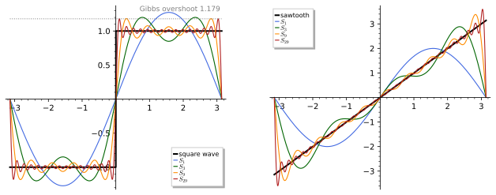
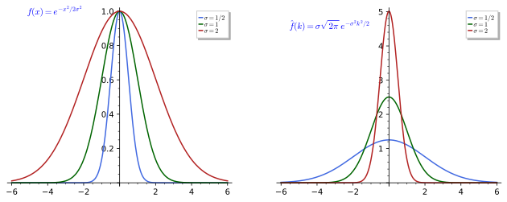
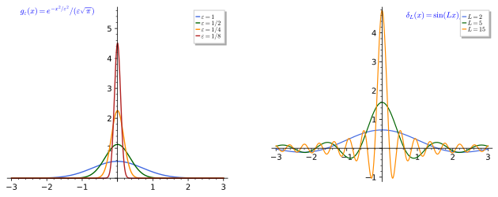
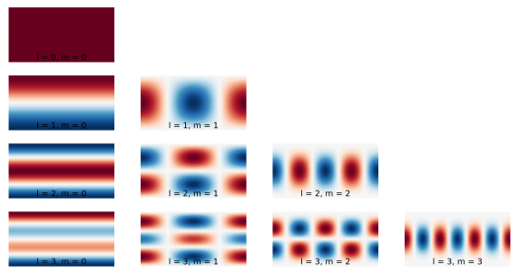

Fourier analysis
Fourier analysis decomposes a function into modes: a periodic function into the harmonics e^{inx}, a function on the line into the plane waves e^{ikx}, a function on the sphere into the spherical harmonics Y_{lm}, and a function on a compact group into the matrix coefficients of its irreducible representations. In each case the modes are the eigenfunctions of a Laplacian, they are orthogonal for a natural inner product, the coefficients of a function are inner products with the modes, and the sum of the squares of the coefficients is the square of the norm of the function. The chapter develops this circle of ideas in four sections. Fourier series treats periodic functions on the circle, their coefficients, the Dirichlet kernel and the Gibbs phenomenon, the convergence theorems and Parseval’s identity, with the square wave and the sawtooth as running examples. The Fourier transform passes from the circle to the line, with the Gaussian as the central example, the convolution theorem, Plancherel’s theorem and the uncertainty inequality, which says that a function and its transform cannot both be narrow. Distributions gives a meaning to the delta function and its derivatives, to the Fourier transform of 1 and of \delta, and to the principal value 1/x, the objects that make the formal manipulations of the first two sections rigorous. Harmonic analysis on the sphere and on compact groups describes the spherical harmonics as eigenfunctions of the Laplacian on S^2 and as the spin-l representations of SU(2), states the Peter-Weyl theorem, and ends with the mode expansion of a function on a coset space G/H, the general setting in which a field on a compact space is expanded in modes. Each definition is followed by three examples of increasing complexity and three exercises of increasing difficulty with hidden solutions; each section ends with a proposition that collects its explicit values, and the quoted theorems (Dirichlet’s convergence theorem, Plancherel, the uncertainty inequality, Peter-Weyl) are stated with their hypotheses and argued in the text. The real analysis assumed is that of Series, The Riemann integral and Multiple integrals and convergence of functions, the complex analysis that of Contour integration and Series and residues, the orthogonal functions and the delta of Boundary value and Sturm-Liouville problems and Green’s functions, and the representation theory of SU(2) that of Weights and the representations of su(2); the normalisations fixed here, \hat f(k) = \int f(x)e^{-ikx}dx with inverse f(x) = \frac{1}{2\pi}\int\hat f(k)e^{ikx}dk and c_n = \frac{1}{2\pi}\int_0^{2\pi}f(x)e^{-inx}dx on the circle, are used throughout the book.
Fourier series
A function on the circle is a periodic function on the line, and the harmonics e^{inx} are the simplest periodic functions of all. This section defines periodic functions and their Fourier coefficients, studies the partial sums through the Dirichlet kernel, states the convergence theorems of Dirichlet and of the L^2 theory, and proves Parseval’s identity, with the square wave and the sawtooth of Figure 1 as running examples whose coefficients, partial sums and overshoot are collected in Proposition 1.
For more on this topic, see Arrigo (2023, Ch. 4).

figures/fourier_square_wave.sage.
Interactive figure (drag to rotate or zoom); the static version is above.
Periodic functions
Before anything can be expanded in harmonics one needs the class of functions that live on the circle. The definition below fixes periodicity, the standard period 2\pi, the way a function on an interval is extended, and the finite sums of harmonics that will approximate everything else.
Definition 1 (Periodic function) A function f : \mathbb{R} \to \mathbb{C} is periodic with period T > 0 if f(x + T) = f(x) for all x; it is then determined by its values on any interval of length T, and after the rescaling x \mapsto 2\pi x/T one may take T = 2\pi, which is assumed from now on. A 2\pi-periodic function is the same thing as a function on the circle S^1 = \mathbb{R}/2\pi\mathbb{Z}, and a function given on [0, 2\pi) or on (-\pi, \pi] has a unique periodic extension. A trigonometric polynomial of degree N is a finite sum \sum_{|n| \leq N} c_n e^{inx}, equivalently \frac{a_0}{2} + \sum_{n=1}^N (a_n\cos nx + b_n\sin nx); a periodic function is piecewise continuous if it has at most finitely many jumps per period, with one-sided limits f(x^\pm) at each, and piecewise C^1 if the same holds for f'.
Veriphy. Test (oracle, 3 instances); record KaluzaKlein.FourierAnalysis.PeriodicFunctions.periodic_nat_mul.json (periodic_nat_mul); Test (oracle, 3 instances); record KaluzaKlein.FourierAnalysis.PeriodicFunctions.rescale_two_pi.json (rescale_two_pi); Test (oracle, 3 instances); record KaluzaKlein.FourierAnalysis.PeriodicFunctions.trig_pair.json (trig_pair).
Lean.
/-- A function with period `T` has every period `k T`, `k ∈ ℕ`. -/
theorem periodic_nat_mul (f : ℝ → ℝ) (T : ℝ) (hf : ∀ x, f (x + T) = f x) (k : ℕ) (x : ℝ) :
f (x + k * T) = f xKaluzaKlein.FourierAnalysis.PeriodicFunctions.periodic_nat_mul in KaluzaKlein/PartI/FourierAnalysis/PeriodicFunctions.lean, namespace KaluzaKlein.FourierAnalysis.PeriodicFunctions
/-- The rescaling `x ↦ T x / 2π` turns a function of period `T` into one of period `2π`. -/
theorem rescale_two_pi (f : ℝ → ℝ) (T : ℝ) (hf : ∀ x, f (x + T) = f x) (x : ℝ) :
f (T * (x + 2 * π) / (2 * π)) = f (T * x / (2 * π))KaluzaKlein.FourierAnalysis.PeriodicFunctions.rescale_two_pi in KaluzaKlein/PartI/FourierAnalysis/PeriodicFunctions.lean, namespace KaluzaKlein.FourierAnalysis.PeriodicFunctions
/-- The complex and real forms of a trigonometric polynomial: `c e^{it} + c̄ e^{-it} = a cos t + b sin t` for
`c = (a - i b) / 2`. -/
theorem trig_pair (a b t : ℝ) :
((a : ℂ) - b * Complex.I) / 2 * Complex.exp (t * Complex.I) +
((a : ℂ) + b * Complex.I) / 2 * Complex.exp ((-t : ℝ) * Complex.I) =
((a * Real.cos t + b * Real.sin t : ℝ) : ℂ)KaluzaKlein.FourierAnalysis.PeriodicFunctions.trig_pair in KaluzaKlein/PartI/FourierAnalysis/PeriodicFunctions.lean, namespace KaluzaKlein.FourierAnalysis.PeriodicFunctions
Sage. fa-periodic-nat-mul-test.sage: Sage evaluates f(x + kT) - f(x) for periodic sample functions (sin, cos, sin 3x) in 128-bit intervals; Sage evaluates both sides at f, T, k, x = (fun y => Real.sin y, 2 * π, Real.sin_periodic, 0, 1/3), (fun y => Real.cos y, 2 * π, Real.cos_periodic, 3, 1/2), (fun y => Real.sin (3 * y), 2 * π / 3, fun y => by sorry, 2, 1/5) in exact or 128-bit interval arithmetic. fa-rescale-two-pi-test.sage: Sage evaluates both sides at f, T, x = (fun y => Real.sin (2 * π * y / 3), 3, 0), (fun y => Real.sin (2 * π * y / 3), 3, 1/2), (fun y => Real.cos (2 * π * y / 5) ^ 2, 5, 7) in exact or 128-bit interval arithmetic. fa-trig-pair-test.sage: Sage evaluates both sides at a, b, t = (0, 0, 0), (1, 2, 1/3), (-3/2, 1/2, 5) in exact or 128-bit interval arithmetic.
The harmonics themselves are the first periodic functions to look at, and the only subtlety is which period one means. The first example records that e^{inx} has the smaller period 2\pi/n as well as 2\pi, which is why all harmonics live on the same circle.
Example 1 (The harmonics) \sin nx, \cos nx and e^{inx} are 2\pi-periodic for every integer n, and 2\pi/|n| is their smallest period when n \neq 0: a function with period T also has period kT for every positive integer k. The constant function is periodic with every period, and e^{inx} = \cos nx + i\sin nx relates the complex and the real harmonics.
Veriphy. Test (oracle, 3 instances); record KaluzaKlein.FourierAnalysis.PeriodicFunctions.cos_int_mul_periodic.json (cos_int_mul_periodic); Test (oracle, 3 instances); record KaluzaKlein.FourierAnalysis.PeriodicFunctions.sin_int_mul_periodic.json (sin_int_mul_periodic); Test (oracle, 3 instances); record KaluzaKlein.FourierAnalysis.PeriodicFunctions.sin_short_period.json (sin_short_period); Test (oracle, 3 instances); record KaluzaKlein.FourierAnalysis.PeriodicFunctions.sin_no_smaller_period.json (sin_no_smaller_period); Test (oracle, 3 instances); record KaluzaKlein.FourierAnalysis.PeriodicFunctions.euler_harmonic.json (euler_harmonic); Test (oracle, 3 instances); record KaluzaKlein.FourierAnalysis.PeriodicFunctions.periodic_nat_mul.json (periodic_nat_mul).
Lean.
theorem cos_int_mul_periodic (n : ℤ) (x : ℝ) : Real.cos (n * (x + 2 * π)) = Real.cos (n * x)KaluzaKlein.FourierAnalysis.PeriodicFunctions.cos_int_mul_periodic in KaluzaKlein/PartI/FourierAnalysis/PeriodicFunctions.lean, namespace KaluzaKlein.FourierAnalysis.PeriodicFunctions
theorem sin_int_mul_periodic (n : ℤ) (x : ℝ) : Real.sin (n * (x + 2 * π)) = Real.sin (n * x)KaluzaKlein.FourierAnalysis.PeriodicFunctions.sin_int_mul_periodic in KaluzaKlein/PartI/FourierAnalysis/PeriodicFunctions.lean, namespace KaluzaKlein.FourierAnalysis.PeriodicFunctions
/-- `2π / n` is a period of `sin (n x)`. -/
theorem sin_short_period (n : ℝ) (hn : n ≠ 0) (x : ℝ) :
Real.sin (n * (x + 2 * π / n)) = Real.sin (n * x)KaluzaKlein.FourierAnalysis.PeriodicFunctions.sin_short_period in KaluzaKlein/PartI/FourierAnalysis/PeriodicFunctions.lean, namespace KaluzaKlein.FourierAnalysis.PeriodicFunctions
/-- No `T ∈ (0, 2π)` is a period of `sin`: `2π` is the smallest period. -/
theorem sin_no_smaller_period (T : ℝ) (h0 : 0 < T) (h1 : T < 2 * π) :
Real.sin (π / 2 + T) ≠ Real.sin (π / 2)KaluzaKlein.FourierAnalysis.PeriodicFunctions.sin_no_smaller_period in KaluzaKlein/PartI/FourierAnalysis/PeriodicFunctions.lean, namespace KaluzaKlein.FourierAnalysis.PeriodicFunctions
/-- Euler's formula for the harmonics: `e^{i n x} = cos n x + i sin n x`. -/
theorem euler_harmonic (n x : ℝ) :
Complex.exp (((n * x : ℝ) : ℂ) * Complex.I) =
((Real.cos (n * x) : ℝ) : ℂ) + ((Real.sin (n * x) : ℝ) : ℂ) * Complex.IKaluzaKlein.FourierAnalysis.PeriodicFunctions.euler_harmonic in KaluzaKlein/PartI/FourierAnalysis/PeriodicFunctions.lean, namespace KaluzaKlein.FourierAnalysis.PeriodicFunctions
/-- A function with period `T` has every period `k T`, `k ∈ ℕ`. -/
theorem periodic_nat_mul (f : ℝ → ℝ) (T : ℝ) (hf : ∀ x, f (x + T) = f x) (k : ℕ) (x : ℝ) :
f (x + k * T) = f xKaluzaKlein.FourierAnalysis.PeriodicFunctions.periodic_nat_mul in KaluzaKlein/PartI/FourierAnalysis/PeriodicFunctions.lean, namespace KaluzaKlein.FourierAnalysis.PeriodicFunctions
Sage. fa-cos-int-mul-periodic-test.sage: Sage evaluates both sides at n, x = (0, 0), (3, 1/2), (-2, 1/7) in exact or 128-bit interval arithmetic. fa-sin-int-mul-periodic-test.sage: Sage evaluates both sides at n, x = (0, 0), (3, 1/2), (-2, 1/7) in exact or 128-bit interval arithmetic. fa-sin-short-period-test.sage: Sage evaluates both sides at n, x = (1, 0), (3, 1/2), (-2, 1/5) in exact or 128-bit interval arithmetic. fa-sin-no-smaller-period-test.sage: Sage evaluates |sin(π/2 + T) - sin(π/2)| > 0 for T in (0, 2π), the edge case T = 157/25 just below 2π; Sage evaluates both sides at T = 157/25, 1, 3 in exact or 128-bit interval arithmetic. fa-euler-harmonic-test.sage: Sage evaluates both sides at n, x = (0, 0), (2, 1/3), (-1, 5/2) in exact or 128-bit interval arithmetic. fa-periodic-nat-mul-test.sage: Sage evaluates f(x + kT) - f(x) for periodic sample functions (sin, cos, sin 3x) in 128-bit intervals; Sage evaluates both sides at f, T, k, x = (fun y => Real.sin y, 2 * π, Real.sin_periodic, 0, 1/3), (fun y => Real.cos y, 2 * π, Real.cos_periodic, 3, 1/2), (fun y => Real.sin (3 * y), 2 * π / 3, fun y => by sorry, 2, 1/5) in exact or 128-bit interval arithmetic.
Extending a function from an interval produces jumps unless the values at the two ends agree, and these jumps govern everything about convergence later on. The second example introduces the two running functions of the section and locates their discontinuities.
Example 2 (The square wave and the sawtooth) The square wave is the periodic extension of \operatorname{sgn} x from (-\pi, \pi), and the sawtooth that of f(x) = x from (-\pi, \pi) (Figure 1). Both are piecewise C^1: the square wave jumps by 2 at every multiple of \pi, the sawtooth by -2\pi at the odd multiples of \pi, where f(\pi^-) = \pi and f(\pi^+) = -\pi. The extension of |x| from (-\pi, \pi) is continuous, since |{-\pi}| = |\pi|, but its derivative jumps at the multiples of \pi.
Veriphy. Test (oracle, 4 instances); record KaluzaKlein.FourierAnalysis.PeriodicFunctions.squareWave_periodic.json (squareWave_periodic); Test (oracle, 4 instances); record KaluzaKlein.FourierAnalysis.PeriodicFunctions.sawtooth_periodic.json (sawtooth_periodic); Test (oracle, 3 instances); record KaluzaKlein.FourierAnalysis.PeriodicFunctions.squareWave_of_pos.json (squareWave_of_pos); Test (oracle, 3 instances); record KaluzaKlein.FourierAnalysis.PeriodicFunctions.squareWave_of_neg.json (squareWave_of_neg); Test (oracle, 3 instances); record KaluzaKlein.FourierAnalysis.PeriodicFunctions.sawtooth_left.json (sawtooth_left); Test (oracle, 3 instances); record KaluzaKlein.FourierAnalysis.PeriodicFunctions.sawtooth_right.json (sawtooth_right); Test (oracle, 3 instances); record KaluzaKlein.FourierAnalysis.PeriodicFunctions.absWave_around_pi.json (absWave_around_pi).
Lean.
theorem squareWave_periodic (x : ℝ) : squareWave (x + 2 * π) = squareWave xKaluzaKlein.FourierAnalysis.PeriodicFunctions.squareWave_periodic in KaluzaKlein/PartI/FourierAnalysis/PeriodicFunctions.lean, namespace KaluzaKlein.FourierAnalysis.PeriodicFunctions
theorem sawtooth_periodic (x : ℝ) : sawtooth (x + 2 * π) = sawtooth xKaluzaKlein.FourierAnalysis.PeriodicFunctions.sawtooth_periodic in KaluzaKlein/PartI/FourierAnalysis/PeriodicFunctions.lean, namespace KaluzaKlein.FourierAnalysis.PeriodicFunctions
theorem squareWave_of_pos (x : ℝ) (h0 : 0 < x) (h1 : x < π) : squareWave x = 1KaluzaKlein.FourierAnalysis.PeriodicFunctions.squareWave_of_pos in KaluzaKlein/PartI/FourierAnalysis/PeriodicFunctions.lean, namespace KaluzaKlein.FourierAnalysis.PeriodicFunctions
theorem squareWave_of_neg (x : ℝ) (h0 : -π < x) (h1 : x < 0) : squareWave x = -1KaluzaKlein.FourierAnalysis.PeriodicFunctions.squareWave_of_neg in KaluzaKlein/PartI/FourierAnalysis/PeriodicFunctions.lean, namespace KaluzaKlein.FourierAnalysis.PeriodicFunctions
/-- Left of `π` the sawtooth is `x`, so `f(π⁻) = π`. -/
theorem sawtooth_left (t : ℝ) (h0 : 0 < t) (h1 : t < 2 * π) : sawtooth (π - t) = π - tKaluzaKlein.FourierAnalysis.PeriodicFunctions.sawtooth_left in KaluzaKlein/PartI/FourierAnalysis/PeriodicFunctions.lean, namespace KaluzaKlein.FourierAnalysis.PeriodicFunctions
/-- Right of `π` the sawtooth is `x - 2π`, so `f(π⁺) = -π`: the jump is `-2π`. -/
theorem sawtooth_right (t : ℝ) (h0 : 0 < t) (h1 : t ≤ 2 * π) : sawtooth (π + t) = t - πKaluzaKlein.FourierAnalysis.PeriodicFunctions.sawtooth_right in KaluzaKlein/PartI/FourierAnalysis/PeriodicFunctions.lean, namespace KaluzaKlein.FourierAnalysis.PeriodicFunctions
/-- The extension of `|x|` takes the values `|π - t|` on both sides of `π`: it is continuous there. -/
theorem absWave_around_pi (t : ℝ) (h0 : 0 < t) (h1 : t < 2 * π) :
absWave (π - t) = |π - t| ∧ absWave (π + t) = |π - t|KaluzaKlein.FourierAnalysis.PeriodicFunctions.absWave_around_pi in KaluzaKlein/PartI/FourierAnalysis/PeriodicFunctions.lean, namespace KaluzaKlein.FourierAnalysis.PeriodicFunctions
Sage. fa-squarewave-periodic-test.sage: Sage evaluates both sides at x = 0, 1, -5/2, 7 in exact or 128-bit interval arithmetic. fa-sawtooth-periodic-test.sage: Sage evaluates both sides at x = 0, 1, -5/2, 7 in exact or 128-bit interval arithmetic. fa-squarewave-of-pos-test.sage: Sage evaluates both sides at x = 1/100, 1, 3 in exact or 128-bit interval arithmetic. fa-squarewave-of-neg-test.sage: Sage evaluates both sides at x = -1/100, -1, -3 in exact or 128-bit interval arithmetic. fa-sawtooth-left-test.sage: Sage evaluates both sides at t = 1/100, 1, 6 in exact or 128-bit interval arithmetic. fa-sawtooth-right-test.sage: Sage evaluates both sides at t = 2 * π, 1, 1/100 in exact or 128-bit interval arithmetic. fa-abswave-around-pi-test.sage: Sage evaluates |absWave(π - t) - |π - t|| + |absWave(π + t) - |π - t|| = 0; Sage evaluates both sides at t = 1/100, 3, 6 in exact or 128-bit interval arithmetic.
Some periodic functions are already trigonometric polynomials in disguise, and recognising them is a matter of trigonometric identities. The third example rewrites a power of the cosine, which is the computation that Euler’s formula makes mechanical.
Example 3 (\cos^3 x as a trigonometric polynomial) With \cos x = (e^{ix} + e^{-ix})/2, the binomial theorem gives \cos^3 x = \tfrac18(e^{3ix} + 3e^{ix} + 3e^{-ix} + e^{-3ix}) = \tfrac34\cos x + \tfrac14\cos 3x, a trigonometric polynomial of degree 3. Its Fourier series is this finite sum and nothing else, as the orthogonality of the harmonics will show (Definition 2).
Veriphy. Recipe transcendental_rewrite, certificate fa-trig.sage (cos_cube); Recipe definite_integral, certificate fa-trig-integral.sage (cos_cube_coeff_one); Recipe definite_integral, certificate fa-trig-integral.sage (cos_cube_coeff_two); Recipe definite_integral, certificate fa-trig-integral.sage (cos_cube_coeff_three); Recipe definite_integral, certificate fa-trig-integral.sage (cos_cube_coeff_four).
Lean.
theorem cos_cube (x : ℝ) : Real.cos x ^ 3 = 3 / 4 * Real.cos x + 1 / 4 * Real.cos (3 * x)KaluzaKlein.FourierAnalysis.PeriodicFunctions.cos_cube in KaluzaKlein/PartI/FourierAnalysis/PeriodicFunctions.lean, namespace KaluzaKlein.FourierAnalysis.PeriodicFunctions
theorem cos_cube_coeff_one : ∫ x in (0 : ℝ)..(2 * π), Real.cos x ^ 3 * Real.cos x = 3 * π / 4KaluzaKlein.FourierAnalysis.PeriodicFunctions.cos_cube_coeff_one in KaluzaKlein/PartI/FourierAnalysis/PeriodicFunctions.lean, namespace KaluzaKlein.FourierAnalysis.PeriodicFunctions
theorem cos_cube_coeff_two : ∫ x in (0 : ℝ)..(2 * π), Real.cos x ^ 3 * Real.cos (2 * x) = 0KaluzaKlein.FourierAnalysis.PeriodicFunctions.cos_cube_coeff_two in KaluzaKlein/PartI/FourierAnalysis/PeriodicFunctions.lean, namespace KaluzaKlein.FourierAnalysis.PeriodicFunctions
theorem cos_cube_coeff_three : ∫ x in (0 : ℝ)..(2 * π), Real.cos x ^ 3 * Real.cos (3 * x) = π / 4KaluzaKlein.FourierAnalysis.PeriodicFunctions.cos_cube_coeff_three in KaluzaKlein/PartI/FourierAnalysis/PeriodicFunctions.lean, namespace KaluzaKlein.FourierAnalysis.PeriodicFunctions
theorem cos_cube_coeff_four : ∫ x in (0 : ℝ)..(2 * π), Real.cos x ^ 3 * Real.cos (4 * x) = 0KaluzaKlein.FourierAnalysis.FourierCoefficients.cos_cube_coeff_four in KaluzaKlein/PartI/FourierAnalysis/FourierCoefficients.lean, namespace KaluzaKlein.FourierAnalysis.FourierCoefficients
Sage. fa-trig.sage: Sage confirms the identity (simplify_trig) and picks the multiple-angle lemma that closes it. fa-trig-integral.sage: Sage integrates the trigonometric polynomial, rewrites the antiderivative in sin and cos of the variable, and computes the cofactor K with F’ - f = K(sin² + cos² - 1).
Deciding whether a sum of periodic functions is periodic is a question about the ratio of the periods, and the answer is negative when the ratio is irrational. The first exercise works this out, which is also the reason why only integer multiples of a basic frequency appear in a Fourier series.
Exercise 1 (Periods of sums) Show that \sin x + \sin 2x is 2\pi-periodic, that \sin x + \sin(x/2) has smallest period 4\pi, and that \sin x + \sin\sqrt2\,x is not periodic at all.
Both terms of the first sum have period 2\pi. For the second, \sin(x/2) has smallest period 4\pi and \sin x has period 4\pi too, so the sum has period 4\pi; it has no smaller one, since a period T of the sum would give \sin(x + T) + \sin((x + T)/2) = \sin x + \sin(x/2) for all x, and comparing the values at x = 0 and the second derivatives at x = 0 forces \sin T + \sin(T/2) = 0 and \sin T + \tfrac14\sin(T/2) = 0, hence \sin T = \sin(T/2) = 0 and T \in 4\pi\mathbb{Z}. For the third, a period T would make f(x) = \sin x + \sin\sqrt2 x satisfy f(T) = f(0) = 0 and f''(T) = 0, that is, \sin T + \sin\sqrt2 T = 0 and \sin T + 2\sin\sqrt2 T = 0, so \sin T = \sin\sqrt2 T = 0, T = m\pi and \sqrt2 T = n\pi with integers m, n \neq 0, contradicting the irrationality of \sqrt2.
Veriphy. Test (oracle, 3 instances); record KaluzaKlein.FourierAnalysis.PeriodicFunctions.sin_sum_periodic.json (sin_sum_periodic); Test (oracle, 3 instances); record KaluzaKlein.FourierAnalysis.PeriodicFunctions.sin_half_sum_periodic.json (sin_half_sum_periodic); Test (oracle, 3 instances); record KaluzaKlein.FourierAnalysis.PeriodicFunctions.sin_half_sum_period.json (sin_half_sum_period); Test (oracle, 3 instances); record KaluzaKlein.FourierAnalysis.PeriodicFunctions.sin_sqrt_two_not_periodic.json (sin_sqrt_two_not_periodic).
Lean.
theorem sin_sum_periodic (x : ℝ) :
Real.sin (x + 2 * π) + Real.sin (2 * (x + 2 * π)) = Real.sin x + Real.sin (2 * x)KaluzaKlein.FourierAnalysis.PeriodicFunctions.sin_sum_periodic in KaluzaKlein/PartI/FourierAnalysis/PeriodicFunctions.lean, namespace KaluzaKlein.FourierAnalysis.PeriodicFunctions
theorem sin_half_sum_periodic (x : ℝ) :
Real.sin (x + 4 * π) + Real.sin ((x + 4 * π) / 2) = Real.sin x + Real.sin (x / 2)KaluzaKlein.FourierAnalysis.PeriodicFunctions.sin_half_sum_periodic in KaluzaKlein/PartI/FourierAnalysis/PeriodicFunctions.lean, namespace KaluzaKlein.FourierAnalysis.PeriodicFunctions
/-- A period `T` of `sin x + sin (x/2)` has `sin (T/2) = 0` and `cos (T/2) = 1`, so `T ∈ 4πℤ`. -/
theorem sin_half_sum_period (T : ℝ)
(hT : ∀ x, Real.sin (x + T) + Real.sin ((x + T) / 2) = Real.sin x + Real.sin (x / 2)) :
Real.sin (T / 2) = 0 ∧ Real.cos (T / 2) = 1KaluzaKlein.FourierAnalysis.PeriodicFunctions.sin_half_sum_period in KaluzaKlein/PartI/FourierAnalysis/PeriodicFunctions.lean, namespace KaluzaKlein.FourierAnalysis.PeriodicFunctions
/-- `sin x + sin (√2 x)` has no period `T ≠ 0`. -/
theorem sin_sqrt_two_not_periodic (T : ℝ)
(hT : ∀ x, Real.sin (x + T) + Real.sin (Real.sqrt 2 * (x + T)) = Real.sin x + Real.sin (Real.sqrt 2 * x)) :
T = 0KaluzaKlein.FourierAnalysis.PeriodicFunctions.sin_sqrt_two_not_periodic in KaluzaKlein/PartI/FourierAnalysis/PeriodicFunctions.lean, namespace KaluzaKlein.FourierAnalysis.PeriodicFunctions
Sage. fa-sin-sum-periodic-test.sage: Sage evaluates both sides at x = 0, 1, -7/3 in exact or 128-bit interval arithmetic. fa-sin-half-sum-periodic-test.sage: Sage evaluates both sides at x = 0, 1, -7/3 in exact or 128-bit interval arithmetic. fa-sin-half-sum-period-test.sage: at the periods T ∈ 4πℤ Sage evaluates sin²(T/2) + (cos(T/2) - 1)² = 0; Sage evaluates both sides at T = 0, 4 * π, -8 * π in exact or 128-bit interval arithmetic. fa-sin-sqrt-two-not-periodic-test.sage: the implication at T: Sage evaluates 1 when T = 0 or when the hypothesis fails at x = 0 (|g(T) - g(0)| > 0, by intervals); Sage evaluates both sides at T = 0, 2 * π, 1 in exact or 128-bit interval arithmetic.
The rewriting of \cos^3 x generalises to every power, and Sage’s trigonometric reduction does it in one line. The second exercise asks for \cos^4 x by hand through the binomial theorem and then compares with Sage.
Exercise 2 (\cos^4 x as a trigonometric polynomial) Express \cos^4 x and \sin^3 x as trigonometric polynomials and check the identities with Sage.
\cos^4 x = \tfrac1{16}(e^{ix} + e^{-ix})^4 = \tfrac1{16}(e^{4ix} + 4e^{2ix} + 6 + 4e^{-2ix} + e^{-4ix}) = \tfrac38 +
\tfrac12\cos 2x + \tfrac18\cos 4x, and \sin^3 x = \tfrac34\sin x - \tfrac14\sin 3x. Sage’s trig_reduce produces the same expansions:
x = var("x")
c4 = (cos(x) ** 4).trig_reduce(); s3 = (sin(x) ** 3).trig_reduce()
print("cos^4 x =", c4)
print("sin^3 x =", s3)
print("cos^4 x = 3/8 + cos(2x)/2 + cos(4x)/8:", bool((c4 - (3 / 8 + cos(2 * x) / 2 + cos(4 * x) / 8)).trig_reduce() == 0))
print("sin^3 x = 3 sin(x)/4 - sin(3x)/4:", bool((s3 - (3 * sin(x) / 4 - sin(3 * x) / 4)).trig_reduce() == 0))Output:
cos^4 x = 1/8*cos(4*x) + 1/2*cos(2*x) + 3/8
sin^3 x = -1/4*sin(3*x) + 3/4*sin(x)
cos^4 x = 3/8 + cos(2x)/2 + cos(4x)/8: True
sin^3 x = 3 sin(x)/4 - sin(3x)/4: TrueVeriphy. Recipe transcendental_rewrite, certificate fa-trig-poly.sage (cos_four); Recipe transcendental_rewrite, certificate fa-trig.sage (sin_cube).
Lean.
theorem cos_four (x : ℝ) :
Real.cos x ^ 4 = 3 / 8 + 1 / 2 * Real.cos (2 * x) + 1 / 8 * Real.cos (4 * x)KaluzaKlein.FourierAnalysis.PeriodicFunctions.cos_four in KaluzaKlein/PartI/FourierAnalysis/PeriodicFunctions.lean, namespace KaluzaKlein.FourierAnalysis.PeriodicFunctions
theorem sin_cube (x : ℝ) : Real.sin x ^ 3 = 3 / 4 * Real.sin x - 1 / 4 * Real.sin (3 * x)KaluzaKlein.FourierAnalysis.PeriodicFunctions.sin_cube in KaluzaKlein/PartI/FourierAnalysis/PeriodicFunctions.lean, namespace KaluzaKlein.FourierAnalysis.PeriodicFunctions
Sage. fa-trig-poly.sage: Sage confirms the identity (trig_reduce), expands the multiple angles and computes the cofactor of sin² + cos² - 1. fa-trig.sage: Sage confirms the identity (simplify_trig) and picks the multiple-angle lemma that closes it.
A periodic function integrated over any interval of one period gives the same number, which is what makes the coefficients below independent of the interval chosen. The third exercise proves this and uses it to show that the integral of a product of two periodic functions is a periodic function of the shift between them.
Exercise 3 (Integrals over a period) Prove that \int_a^{a + 2\pi} f(x)\,dx is independent of a for a piecewise continuous 2\pi-periodic f, and deduce that F(t) = \int_0^{2\pi} f(x)g(x - t)\,dx is 2\pi-periodic in t for periodic f, g.
\frac{d}{da}\int_a^{a + 2\pi} f = f(a + 2\pi) - f(a) = 0 at every point where f is continuous, by the fundamental theorem of calculus (The Riemann integral), and the integral is a continuous function of a, so it is constant. For F, substitute y = x - t: F(t) = \int_{-t}^{2\pi - t} f(y + t)g(y)\,dy, and y \mapsto f(y + t)g(y) is periodic, so by the first part the integral equals \int_0^{2\pi} f(y + t)g(y)\,dy, which is visibly 2\pi-periodic in t. This is the periodicity of the convolution on the circle, the form in which the partial sums are written in Definition 3.
Veriphy. Test (oracle, 3 instances); record KaluzaKlein.FourierAnalysis.PeriodicFunctions.periodic_integral_shift.json (periodic_integral_shift); Test (oracle, 3 instances); record KaluzaKlein.FourierAnalysis.PeriodicFunctions.shifted_product_periodic.json (shifted_product_periodic).
Lean.
/-- The integral over a period does not depend on where the period starts. -/
theorem periodic_integral_shift (f : ℝ → ℝ) (hf : Function.Periodic f (2 * π)) (a : ℝ) :
∫ x in a..a + 2 * π, f x = ∫ x in (0 : ℝ)..2 * π, f xKaluzaKlein.FourierAnalysis.PeriodicFunctions.periodic_integral_shift in KaluzaKlein/PartI/FourierAnalysis/PeriodicFunctions.lean, namespace KaluzaKlein.FourierAnalysis.PeriodicFunctions
/-- `F(t) = ∫₀^{2π} f(x) g(x - t) dx` is `2π`-periodic in `t`. -/
theorem shifted_product_periodic (f g : ℝ → ℝ) (hg : Function.Periodic g (2 * π)) (t : ℝ) :
∫ x in (0 : ℝ)..2 * π, f x * g (x - (t + 2 * π)) = ∫ x in (0 : ℝ)..2 * π, f x * g (x - t)KaluzaKlein.FourierAnalysis.PeriodicFunctions.shifted_product_periodic in KaluzaKlein/PartI/FourierAnalysis/PeriodicFunctions.lean, namespace KaluzaKlein.FourierAnalysis.PeriodicFunctions
Sage. fa-periodic-integral-shift-test.sage: Sage evaluates both sides at f, a = (fun x => Real.cos x ^ 2, 0), (fun x => Real.cos x ^ 2, 1), (fun x => Real.sin x + Real.sin (2 * x) ^ 2, 5/2) in exact or 128-bit interval arithmetic. fa-shifted-product-periodic-test.sage: Sage evaluates both sides at f, g, t = (fun x => x, fun x => Real.cos x + Real.sin (2 * x), 0), (fun x => x, fun x => Real.cos x + Real.sin (2 * x), 1), (fun x => x ^ 2, fun x => Real.cos (3 * x), 1/3) in exact or 128-bit interval arithmetic.
Fourier coefficients
The coefficients of a periodic function are its inner products with the harmonics, and everything rests on the fact that distinct harmonics are orthogonal. The definition fixes the normalisation of the coefficients once and for all, in the complex form and in the real form, and records the orthogonality relation that makes them the right numbers.
Definition 2 (Fourier coefficient) The Fourier coefficients of a piecewise continuous 2\pi-periodic f are c_n = \frac{1}{2\pi}\int_0^{2\pi} f(x)\,e^{-inx}\,dx, \qquad n \in \mathbb{Z}, and the Fourier series of f is \sum_{n \in \mathbb{Z}} c_n e^{inx}, written f \sim \sum c_n e^{inx} until its convergence is settled. In real form f \sim \frac{a_0}{2} + \sum_{n \geq 1}(a_n\cos nx + b_n\sin nx) with a_n = \frac1\pi\int_0^{2\pi} f(x)\cos nx\,dx and b_n = \frac1\pi\int_0^{2\pi} f(x)\sin nx\,dx, related by c_n = \tfrac12(a_n - ib_n) and c_{-n} = \tfrac12(a_n + ib_n) for n \geq 1, c_0 = a_0/2. The coefficients are the inner products c_n = \langle e^{inx}, f\rangle/2\pi for \langle g, f\rangle = \int_0^{2\pi}\bar g f\,dx, and the orthogonality of the modes \int_0^{2\pi} e^{inx}\,e^{-imx}\,dx = 2\pi\,\delta_{nm} \tag{1} shows that the coefficients of a trigonometric polynomial are its given coefficients and that c_n is the unique choice making f - c_n e^{inx} orthogonal to e^{inx} (Definition 14 of Differential equations).
Veriphy. Test (oracle, 5 instances); record KaluzaKlein.FourierAnalysis.FourierCoefficients.mode_orthogonality.json (mode_orthogonality); Test (oracle, 3 instances); record KaluzaKlein.FourierAnalysis.FourierCoefficients.coeff_complex_real.json (coeff_complex_real).
Lean.
/-- The orthogonality of the modes: `∫₀^{2π} e^{inx} e^{-imx} dx = 2π δ_{nm}`. -/
theorem mode_orthogonality (n m : ℤ) :
∫ x in (0 : ℝ)..2 * π, Complex.exp (n * x * Complex.I) * Complex.exp (-(m * x * Complex.I)) =
if n = m then 2 * π else 0KaluzaKlein.FourierAnalysis.FourierCoefficients.mode_orthogonality in KaluzaKlein/PartI/FourierAnalysis/FourierCoefficients.lean, namespace KaluzaKlein.FourierAnalysis.FourierCoefficients
/-- For a real `f`, `2π c_n = π a_n - i π b_n`: the complex coefficient in terms of the real ones,
`c_n = (a_n - i b_n)/2`. -/
theorem coeff_complex_real (f : ℝ → ℝ) (hf : Continuous f) (n : ℝ) :
∫ x in (0 : ℝ)..2 * π, (f x : ℂ) * Complex.exp (-(n * x * Complex.I)) =
((∫ x in (0 : ℝ)..2 * π, f x * Real.cos (n * x) : ℝ) : ℂ) -
((∫ x in (0 : ℝ)..2 * π, f x * Real.sin (n * x) : ℝ) : ℂ) * Complex.IKaluzaKlein.FourierAnalysis.FourierCoefficients.coeff_complex_real in KaluzaKlein/PartI/FourierAnalysis/FourierCoefficients.lean, namespace KaluzaKlein.FourierAnalysis.FourierCoefficients
Sage. fa-mode-orthogonality-test.sage: Sage evaluates both sides at n, m = (0, 0), (1, 1), (2, -1), (3, 1), … in exact or 128-bit interval arithmetic. fa-coeff-complex-real-test.sage: Sage evaluates both sides at f, n = (fun x => x ^ 2, 0), (fun x => x ^ 2, 1), (fun x => Real.exp (Real.cos x), 2) in exact or 128-bit interval arithmetic.
The square wave is odd, so only sines appear, and the integral giving b_n is elementary. The first example computes it and finds the slow 1/n decay that goes with a jump.
Example 4 (The square wave) For the square wave, a_n = 0 by oddness and b_n = \frac2\pi\int_0^\pi\sin nx\,dx = \frac{2}{\pi n}(1 - \cos n\pi), which is 4/(\pi n) for odd n and 0 for even n (Proposition 1). So \operatorname{sgn} x \sim \frac4\pi\Bigl(\sin x + \frac{\sin 3x}{3} + \frac{\sin 5x}{5} + \dots\Bigr), with coefficients decaying like 1/n: the series does not converge absolutely.
Veriphy. Test (oracle, 3 instances); record KaluzaKlein.FourierAnalysis.FourierCoefficients.integral_sin_nat_mul.json (integral_sin_nat_mul); Test (oracle, 4 instances); record KaluzaKlein.FourierAnalysis.FourierCoefficients.square_wave_bn.json (square_wave_bn); Recipe definite_integral, certificate fa-integral.sage (square_wave_int3); Recipe definite_integral, certificate fa-integral.sage (square_wave_b2).
Lean.
/-- `∫₀^π sin n x dx = (1 - cos n π) / n`. -/
theorem integral_sin_nat_mul (n : ℕ) (hn : n ≠ 0) :
∫ x in (0 : ℝ)..π, Real.sin (n * x) = (1 - Real.cos (n * π)) / nKaluzaKlein.FourierAnalysis.FourierCoefficients.integral_sin_nat_mul in KaluzaKlein/PartI/FourierAnalysis/FourierCoefficients.lean, namespace KaluzaKlein.FourierAnalysis.FourierCoefficients
/-- The square wave's sine coefficient: `b_n = (2/π) ∫₀^π sin n x dx = 2 (1 - (-1)^n) / (π n)`. -/
theorem square_wave_bn (n : ℕ) (hn : n ≠ 0) :
2 / π * ∫ x in (0 : ℝ)..π, Real.sin (n * x) = 2 * (1 - (-1) ^ n) / (π * n)KaluzaKlein.FourierAnalysis.FourierCoefficients.square_wave_bn in KaluzaKlein/PartI/FourierAnalysis/FourierCoefficients.lean, namespace KaluzaKlein.FourierAnalysis.FourierCoefficients
/-- `b_3 = (2/π) · 2/3 = 4/(3π)`. -/
theorem square_wave_int3 : ∫ x in (0 : ℝ)..π, Real.sin (3 * x) = 2 / 3KaluzaKlein.FourierAnalysis.FourierCoefficients.square_wave_int3 in KaluzaKlein/PartI/FourierAnalysis/FourierCoefficients.lean, namespace KaluzaKlein.FourierAnalysis.FourierCoefficients
theorem square_wave_b2 : ∫ x in (0 : ℝ)..π, Real.sin (2 * x) = 0KaluzaKlein.FourierAnalysis.FourierCoefficients.square_wave_b2 in KaluzaKlein/PartI/FourierAnalysis/FourierCoefficients.lean, namespace KaluzaKlein.FourierAnalysis.FourierCoefficients
Sage. fa-integral-sin-nat-mul-test.sage: Sage evaluates both sides at n = 1, (2, two_ne_zero), 5 in exact or 128-bit interval arithmetic. fa-square-wave-bn-test.sage: Sage evaluates both sides at n = 1, (2, two_ne_zero), 5, 6 in exact or 128-bit interval arithmetic. fa-integral.sage: Sage integrates the integrand symbolically, checks that the antiderivative differentiates back and that its values at the bounds give the stated number.
The sawtooth is also odd, and an integration by parts gives its coefficients with an alternating sign. The second example shows the same 1/n decay, again the signature of a jump in the periodic extension.
Example 5 (The sawtooth) For f(x) = x on (-\pi, \pi), b_n = \frac1\pi\int_{-\pi}^\pi x\sin nx\,dx = \frac1\pi\Bigl[-\frac{x\cos nx}{n}\Bigr]_{-\pi}^{\pi} + \frac{1}{\pi n}\int_{-\pi}^\pi\cos nx\,dx = \frac{2(-1)^{n+1}}{n}, so x \sim 2\bigl(\sin x - \tfrac12\sin 2x + \tfrac13\sin 3x - \dots\bigr) (Proposition 1). Since the function jumps by -2\pi at \pm\pi, the coefficients again decay like 1/n.
Veriphy. Test (oracle, 4 instances); record KaluzaKlein.FourierAnalysis.FourierCoefficients.sawtooth_bn.json (sawtooth_bn); Recipe definite_integral, certificate fa-trig-integral.sage (sawtooth_b2).
Lean.
/-- The sawtooth's coefficient: `(1/π) ∫_{-π}^{π} x sin n x dx = 2 (-1)^{n+1} / n`. -/
theorem sawtooth_bn (n : ℕ) (hn : n ≠ 0) :
1 / π * ∫ x in (-π)..π, x * Real.sin (n * x) = 2 * (-1) ^ (n + 1) / nKaluzaKlein.FourierAnalysis.FourierCoefficients.sawtooth_bn in KaluzaKlein/PartI/FourierAnalysis/FourierCoefficients.lean, namespace KaluzaKlein.FourierAnalysis.FourierCoefficients
theorem sawtooth_b2 : ∫ x in (-π)..π, x * Real.sin (2 * x) = -πKaluzaKlein.FourierAnalysis.FourierCoefficients.sawtooth_b2 in KaluzaKlein/PartI/FourierAnalysis/FourierCoefficients.lean, namespace KaluzaKlein.FourierAnalysis.FourierCoefficients
Sage. fa-sawtooth-bn-test.sage: Sage evaluates both sides at n = 1, (2, two_ne_zero), 5, 6 in exact or 128-bit interval arithmetic. fa-trig-integral.sage: Sage integrates the trigonometric polynomial, rewrites the antiderivative in sin and cos of the variable, and computes the cofactor K with F’ - f = K(sin² + cos² - 1).
A continuous function with a kink has coefficients decaying one power faster, and a smooth function has rapidly decaying coefficients. The third example contrasts |x| with a trigonometric polynomial to make the rule “smoothness equals decay” visible, which Exercise 6 proves.
Example 6 (Decay and smoothness) For f(x) = |x| on (-\pi, \pi), which is continuous with a kink, b_n = 0 by evenness, a_0 = \pi and a_n = \frac2\pi\int_0^\pi x\cos nx\,dx = \frac{2}{\pi n^2}(\cos n\pi - 1), equal to -4/(\pi n^2) for odd n and 0 for even n (Exercise 4): the decay is 1/n^2. For the smooth function \cos^3 x all coefficients beyond n = 3 vanish (Example 3), and for e^{\cos x} one finds c_n = I_n(1), a modified Bessel function, decaying faster than any power of n.
Veriphy. Test (oracle, 3 instances); record KaluzaKlein.FourierAnalysis.FourierCoefficients.abs_an.json (abs_an); Recipe definite_integral, certificate fa-integral.sage (abs_a0); Recipe definite_integral, certificate fa-trig-integral.sage (cos_cube_coeff_four).
Lean.
/-- The coefficient of `|x|`: `(2/π) ∫₀^π x cos n x dx = 2 (cos n π - 1) / (π n²)`. -/
theorem abs_an (n : ℕ) (hn : n ≠ 0) :
2 / π * ∫ x in (0 : ℝ)..π, x * Real.cos (n * x) = 2 * (Real.cos (n * π) - 1) / (π * n ^ 2)KaluzaKlein.FourierAnalysis.FourierCoefficients.abs_an in KaluzaKlein/PartI/FourierAnalysis/FourierCoefficients.lean, namespace KaluzaKlein.FourierAnalysis.FourierCoefficients
/-- `a_0 = (1/π) ∫_{-π}^{π} |x| dx = π`, from the two halves `∫_{-π}^0 (-x) = ∫_0^π x = π²/2`. -/
theorem abs_a0 : 1 / π * ∫ x in (-π)..π, |x| = πKaluzaKlein.FourierAnalysis.FourierCoefficients.abs_a0 in KaluzaKlein/PartI/FourierAnalysis/FourierCoefficients.lean, namespace KaluzaKlein.FourierAnalysis.FourierCoefficients
theorem cos_cube_coeff_four : ∫ x in (0 : ℝ)..(2 * π), Real.cos x ^ 3 * Real.cos (4 * x) = 0KaluzaKlein.FourierAnalysis.FourierCoefficients.cos_cube_coeff_four in KaluzaKlein/PartI/FourierAnalysis/FourierCoefficients.lean, namespace KaluzaKlein.FourierAnalysis.FourierCoefficients
Sage. fa-abs-an-test.sage: Sage evaluates both sides at n = 1, (2, two_ne_zero), 3 in exact or 128-bit interval arithmetic. fa-integral.sage: Sage integrates the integrand symbolically, checks that the antiderivative differentiates back and that its values at the bounds give the stated number. fa-trig-integral.sage: Sage integrates the trigonometric polynomial, rewrites the antiderivative in sin and cos of the variable, and computes the cofactor K with F’ - f = K(sin² + cos² - 1).
The coefficients of |x| were quoted above, and computing them is a direct integration by parts that Sage can confirm. The first exercise does both and writes out the resulting cosine series.
Exercise 4 (The coefficients of |x|) Compute the Fourier coefficients of the periodic extension of |x| from (-\pi, \pi), write the series, and check the coefficients with Sage.
a_0 = \frac1\pi\int_{-\pi}^\pi|x|\,dx = \pi, b_n = 0, and a_n = \frac2\pi\int_0^\pi x\cos nx\,dx = \frac2\pi\Bigl(\Bigl[\frac{x\sin nx}{n}\Bigr]_0^\pi - \int_0^\pi\frac{\sin nx}{n}dx\Bigr) = \frac{2(\cos n\pi - 1)}{\pi n^2}, so |x| \sim \frac\pi2 - \frac4\pi\Bigl(\cos x + \frac{\cos 3x}{9} + \frac{\cos 5x}{25} + \dots\Bigr). Sage integrates piecewise and agrees:
x = var("x")
a = lambda n: (integrate(-x * cos(n * x), x, -pi, 0) + integrate(x * cos(n * x), x, 0, pi)) / pi
b = lambda n: (integrate(-x * sin(n * x), x, -pi, 0) + integrate(x * sin(n * x), x, 0, pi)) / pi
print("a_0 =", a(0))
for n in range(1, 7):
print("n =", n, ": a_n =", a(n), " b_n =", b(n), " a_n = -4/(pi n^2) for odd n, 0 for even:", bool(a(n) == (-4 / (pi * n ** 2) if n % 2 else 0)))Output:
a_0 = pi
n = 1 : a_n = -4/pi b_n = 0 a_n = -4/(pi n^2) for odd n, 0 for even: True
n = 2 : a_n = 0 b_n = 0 a_n = -4/(pi n^2) for odd n, 0 for even: True
n = 3 : a_n = -4/9/pi b_n = 0 a_n = -4/(pi n^2) for odd n, 0 for even: True
n = 4 : a_n = 0 b_n = 0 a_n = -4/(pi n^2) for odd n, 0 for even: True
n = 5 : a_n = -4/25/pi b_n = 0 a_n = -4/(pi n^2) for odd n, 0 for even: True
n = 6 : a_n = 0 b_n = 0 a_n = -4/(pi n^2) for odd n, 0 for even: TrueVeriphy. Recipe definite_integral, certificate fa-integral.sage (abs_a0); Test (oracle, 3 instances); record KaluzaKlein.FourierAnalysis.FourierCoefficients.abs_an.json (abs_an); Recipe definite_integral, certificate fa-integral.sage (abs_int1); Recipe definite_integral, certificate fa-integral.sage (abs_a3).
Lean.
/-- `a_0 = (1/π) ∫_{-π}^{π} |x| dx = π`, from the two halves `∫_{-π}^0 (-x) = ∫_0^π x = π²/2`. -/
theorem abs_a0 : 1 / π * ∫ x in (-π)..π, |x| = πKaluzaKlein.FourierAnalysis.FourierCoefficients.abs_a0 in KaluzaKlein/PartI/FourierAnalysis/FourierCoefficients.lean, namespace KaluzaKlein.FourierAnalysis.FourierCoefficients
/-- The coefficient of `|x|`: `(2/π) ∫₀^π x cos n x dx = 2 (cos n π - 1) / (π n²)`. -/
theorem abs_an (n : ℕ) (hn : n ≠ 0) :
2 / π * ∫ x in (0 : ℝ)..π, x * Real.cos (n * x) = 2 * (Real.cos (n * π) - 1) / (π * n ^ 2)KaluzaKlein.FourierAnalysis.FourierCoefficients.abs_an in KaluzaKlein/PartI/FourierAnalysis/FourierCoefficients.lean, namespace KaluzaKlein.FourierAnalysis.FourierCoefficients
/-- `a_1 = (2/π) · (-2) = -4/π`. -/
theorem abs_int1 : ∫ x in (0 : ℝ)..π, x * Real.cos x = -2KaluzaKlein.FourierAnalysis.FourierCoefficients.abs_int1 in KaluzaKlein/PartI/FourierAnalysis/FourierCoefficients.lean, namespace KaluzaKlein.FourierAnalysis.FourierCoefficients
theorem abs_a3 : ∫ x in (0 : ℝ)..π, x * Real.cos (3 * x) = -2 / 9KaluzaKlein.FourierAnalysis.FourierCoefficients.abs_a3 in KaluzaKlein/PartI/FourierAnalysis/FourierCoefficients.lean, namespace KaluzaKlein.FourierAnalysis.FourierCoefficients
Sage. fa-integral.sage: Sage integrates the integrand symbolically, checks that the antiderivative differentiates back and that its values at the bounds give the stated number. fa-abs-an-test.sage: Sage evaluates both sides at n = 1, (2, two_ne_zero), 3 in exact or 128-bit interval arithmetic.
The complex and the real forms of the series carry the same information, and the dictionary between them is used silently whenever one switches. The second exercise derives the dictionary and the symmetry c_{-n} = \bar c_n of real functions.
Exercise 5 (Complex and real coefficients) Derive c_n = \tfrac12(a_n - ib_n) and c_{-n} = \tfrac12(a_n + ib_n) for n \geq 1, show that f is real if and only if c_{-n} = \bar c_n for all n, and that f is even (odd) if and only if all b_n (all a_n) vanish.
e^{-inx} = \cos nx - i\sin nx gives 2\pi c_n = \pi a_n - i\pi b_n directly, and n \to -n changes the sign of the sine term. If f is real, \overline{c_n} = \frac1{2\pi}\int f e^{inx} = c_{-n}; conversely c_{-n} = \bar c_n makes a_n = c_n + c_{-n} and b_n = i(c_n - c_{-n}) real, and then the partial sums are real, so f is real wherever the series converges to it (Theorem 1). For even f the integrand f(x)\sin nx is odd over (-\pi, \pi), so b_n = 0; for odd f, f(x)\cos nx is odd and a_n = 0; conversely a series with only cosines (sines) is even (odd).
Veriphy. Test (oracle, 3 instances); record KaluzaKlein.FourierAnalysis.FourierCoefficients.coeff_complex_real.json (coeff_complex_real); Test (oracle, 3 instances); record KaluzaKlein.FourierAnalysis.FourierCoefficients.real_coeff_conj.json (real_coeff_conj); Test (oracle, 3 instances); record KaluzaKlein.FourierAnalysis.FourierCoefficients.even_bn_zero.json (even_bn_zero); Test (oracle, 3 instances); record KaluzaKlein.FourierAnalysis.FourierCoefficients.odd_an_zero.json (odd_an_zero).
Lean.
/-- For a real `f`, `2π c_n = π a_n - i π b_n`: the complex coefficient in terms of the real ones,
`c_n = (a_n - i b_n)/2`. -/
theorem coeff_complex_real (f : ℝ → ℝ) (hf : Continuous f) (n : ℝ) :
∫ x in (0 : ℝ)..2 * π, (f x : ℂ) * Complex.exp (-(n * x * Complex.I)) =
((∫ x in (0 : ℝ)..2 * π, f x * Real.cos (n * x) : ℝ) : ℂ) -
((∫ x in (0 : ℝ)..2 * π, f x * Real.sin (n * x) : ℝ) : ℂ) * Complex.IKaluzaKlein.FourierAnalysis.FourierCoefficients.coeff_complex_real in KaluzaKlein/PartI/FourierAnalysis/FourierCoefficients.lean, namespace KaluzaKlein.FourierAnalysis.FourierCoefficients
/-- For real `f`, `c_{-n} = conj c_n`. -/
theorem real_coeff_conj (f : ℝ → ℝ) (n : ℝ) :
(starRingEnd ℂ) (∫ x in (0 : ℝ)..2 * π, (f x : ℂ) * Complex.exp (-(n * x * Complex.I))) =
∫ x in (0 : ℝ)..2 * π, (f x : ℂ) * Complex.exp (-((-n : ℝ) * x * Complex.I))KaluzaKlein.FourierAnalysis.FourierCoefficients.real_coeff_conj in KaluzaKlein/PartI/FourierAnalysis/FourierCoefficients.lean, namespace KaluzaKlein.FourierAnalysis.FourierCoefficients
/-- An even function has vanishing sine coefficients. -/
theorem even_bn_zero (f : ℝ → ℝ) (hf : ∀ x, f (-x) = f x) (n : ℝ) :
∫ x in (-π)..π, f x * Real.sin (n * x) = 0KaluzaKlein.FourierAnalysis.FourierCoefficients.even_bn_zero in KaluzaKlein/PartI/FourierAnalysis/FourierCoefficients.lean, namespace KaluzaKlein.FourierAnalysis.FourierCoefficients
/-- An odd function has vanishing cosine coefficients. -/
theorem odd_an_zero (f : ℝ → ℝ) (hf : ∀ x, f (-x) = -f x) (n : ℝ) :
∫ x in (-π)..π, f x * Real.cos (n * x) = 0KaluzaKlein.FourierAnalysis.FourierCoefficients.odd_an_zero in KaluzaKlein/PartI/FourierAnalysis/FourierCoefficients.lean, namespace KaluzaKlein.FourierAnalysis.FourierCoefficients
Sage. fa-coeff-complex-real-test.sage: Sage evaluates both sides at f, n = (fun x => x ^ 2, 0), (fun x => x ^ 2, 1), (fun x => Real.exp (Real.cos x), 2) in exact or 128-bit interval arithmetic. fa-real-coeff-conj-test.sage: Sage evaluates both sides at f, n = (fun x => x, 0), (fun x => x, 1), (fun x => x ^ 2 + Real.cos x, 3) in exact or 128-bit interval arithmetic. fa-even-bn-zero-test.sage: Sage evaluates both sides at f, n = (fun x => x ^ 2, 0), (fun x => Real.cos x, 1), (fun x => |x|, 3/2) in exact or 128-bit interval arithmetic. fa-odd-an-zero-test.sage: Sage evaluates both sides at f, n = (fun x => x, 0), (fun x => Real.sin x, 1), (fun x => x ^ 3, 5/2) in exact or 128-bit interval arithmetic.
The rule that smoother functions have faster-decaying coefficients is a repeated integration by parts, and the same computation gives the coefficients of the derivative. The third exercise asks for both, including the boundary terms that appear when the function is not continuous.
Exercise 6 (Decay of the coefficients) Show that if f is continuous, 2\pi-periodic and piecewise C^1 then the coefficients of f' are in\,c_n and |c_n| \leq C/|n|; that if f is C^k then |c_n| \leq C_k/|n|^k; and compute the boundary term that appears for the sawtooth, where f jumps.
Integrating by parts over [0, 2\pi], \int f'e^{-inx}dx = [fe^{-inx}]_0^{2\pi} + in\int fe^{-inx}dx = 2\pi in\,c_n, the boundary term vanishing by continuity and periodicity; so c_n(f') = in\,c_n(f), and |c_n| = |c_n(f')|/|n| \leq \frac{1}{2\pi|n|}\int|f'|. For a C^k function iterate k times. For the sawtooth on (-\pi, \pi), f' = 1 has all coefficients zero for n \neq 0, but the boundary term is [xe^{-inx}]_{-\pi}^{\pi} = 2\pi(-1)^n, so 0 = 2\pi(-1)^n + 2\pi in\,c_n and c_n = i(-1)^n/n, that is, b_n = i(c_n - c_{-n}) = 2(-1)^{n+1}/n as in Example 5: the jump is what produces the 1/n decay.
Veriphy. Test (oracle, 3 instances); record KaluzaKlein.FourierAnalysis.FourierCoefficients.coeff_derivative.json (coeff_derivative); Test (oracle, 3 instances); record KaluzaKlein.FourierAnalysis.FourierCoefficients.sawtooth_boundary.json (sawtooth_boundary).
Lean.
/-- Integration by parts for the coefficients: `∫₀^{2π} f' e^{-inx} = [f e^{-inx}]₀^{2π} + i n ∫₀^{2π} f e^{-inx}`;
for a periodic `f` the boundary term vanishes and `c_n(f') = i n c_n(f)`. -/
theorem coeff_derivative (f f' : ℝ → ℂ) (hf : ∀ x, HasDerivAt f (f' x) x) (hf' : Continuous f')
(hper : f (2 * π) = f 0) (n : ℤ) :
∫ x in (0 : ℝ)..2 * π, f' x * Complex.exp (-(n * x * Complex.I)) =
n * Complex.I * ∫ x in (0 : ℝ)..2 * π, f x * Complex.exp (-(n * x * Complex.I))KaluzaKlein.FourierAnalysis.FourierCoefficients.coeff_derivative in KaluzaKlein/PartI/FourierAnalysis/FourierCoefficients.lean, namespace KaluzaKlein.FourierAnalysis.FourierCoefficients
/-- The sawtooth's boundary term: `[x e^{-inx}]_{-π}^{π} = 2π (-1)^n`, giving `c_n = i (-1)^n / n`. -/
theorem sawtooth_boundary (n : ℤ) :
(π : ℂ) * Complex.exp (-(n * π * Complex.I)) - (-π : ℝ) * Complex.exp (-(n * (-π : ℝ) * Complex.I)) =
2 * π * (-1) ^ nKaluzaKlein.FourierAnalysis.FourierCoefficients.sawtooth_boundary in KaluzaKlein/PartI/FourierAnalysis/FourierCoefficients.lean, namespace KaluzaKlein.FourierAnalysis.FourierCoefficients
Sage. fa-coeff-derivative-test.sage: Sage evaluates both sides at f, f’, hper, n = (fun x => (Real.sin x ^ 2 : ℂ), fun x => (2 * Real.sin x * Real.cos x : ℂ), 0), (fun x => (Real.sin x ^ 2 : ℂ), fun x => (2 * Real.sin x * Real.cos x : ℂ), 2), (fun x => (Real.cos (3 * x) : ℂ), fun x => (-3 * Real.sin (3 * x) : ℂ), -3) in exact or 128-bit interval arithmetic. fa-sawtooth-boundary-test.sage: Sage evaluates both sides at n = 0, 1, -3 in exact or 128-bit interval arithmetic.
Partial sums
Whether and how the series represents the function is decided by its partial sums, and the partial sums have a closed form as an integral of the function against a kernel. The definition introduces the Dirichlet kernel, records its two properties, and names the overshoot visible in Figure 1.
Definition 3 (Partial Fourier sum) The partial Fourier sum of order N of f is S_N f(x) = \sum_{|n| \leq N} c_n e^{inx}. Inserting the coefficients and exchanging sum and integral, S_N f(x) = \frac{1}{2\pi}\int_0^{2\pi} D_N(x - y)\,f(y)\,dy, \qquad D_N(t) = \sum_{|n| \leq N} e^{int} = \frac{\sin\bigl((N + \tfrac12)t\bigr)}{\sin(t/2)}, \tag{2} where D_N is the Dirichlet kernel: an even trigonometric polynomial with \frac1{2\pi}\int_{-\pi}^\pi D_N = 1 and D_N(0) = 2N + 1, which concentrates at 0 as N grows but is not positive and has \int_{-\pi}^\pi|D_N| \to \infty like \log N. Near a jump of f the partial sums overshoot the one-sided limit by a fixed fraction of the jump that does not decrease with N, the Gibbs phenomenon.
Veriphy. Test (oracle, 4 instances); record KaluzaKlein.FourierAnalysis.PartialSums.dirichlet_mul_sin.json (dirichlet_mul_sin); Test (kernel-checked, 3 instances); script fa-dirichlet-zero-test.sage (dirichlet_zero); Test (oracle, 3 instances); record KaluzaKlein.FourierAnalysis.PartialSums.dirichlet_even.json (dirichlet_even); Test (oracle, 3 instances); record KaluzaKlein.FourierAnalysis.PartialSums.dirichlet_integral.json (dirichlet_integral); Test (oracle, 4 instances); record KaluzaKlein.FourierAnalysis.PartialSums.GibbsOvershoot.json (GibbsOvershoot).
Lean.
/-- The closed form of the Dirichlet kernel: `D_N(t) sin (t/2) = sin ((N + 1/2) t)`. -/
theorem dirichlet_mul_sin (N : ℕ) (t : ℝ) : dirichlet N t * Real.sin (t / 2) = Real.sin ((N + 1 / 2) * t)KaluzaKlein.FourierAnalysis.PartialSums.dirichlet_mul_sin in KaluzaKlein/PartI/FourierAnalysis/PartialSums.lean, namespace KaluzaKlein.FourierAnalysis.PartialSums
/-- `D_N(0) = 2N + 1`. -/
theorem dirichlet_zero (N : ℕ) : dirichlet N 0 = 2 * N + 1KaluzaKlein.FourierAnalysis.PartialSums.dirichlet_zero in KaluzaKlein/PartI/FourierAnalysis/PartialSums.lean, namespace KaluzaKlein.FourierAnalysis.PartialSums
/-- `D_N` is even. -/
theorem dirichlet_even (N : ℕ) (t : ℝ) : dirichlet N (-t) = dirichlet N tKaluzaKlein.FourierAnalysis.PartialSums.dirichlet_even in KaluzaKlein/PartI/FourierAnalysis/PartialSums.lean, namespace KaluzaKlein.FourierAnalysis.PartialSums
/-- `(1/2π) ∫_{-π}^{π} D_N = 1`. -/
theorem dirichlet_integral (N : ℕ) : ∫ t in (-π)..π, dirichlet N t = 2 * πKaluzaKlein.FourierAnalysis.PartialSums.dirichlet_integral in KaluzaKlein/PartI/FourierAnalysis/PartialSums.lean, namespace KaluzaKlein.FourierAnalysis.PartialSums
/-- The Gibbs phenomenon for the square wave, as stated (tested, not proved: no recipe evaluates `Si(π)`): the
value `S_{2M-1}(π/2M)` at the first maximum exceeds the Gibbs constant `(2/π) Si(π) ∈ (1.1789, 1.1790)` by less
than `1/M²`. -/
def GibbsOvershoot : PropKaluzaKlein.FourierAnalysis.PartialSums.GibbsOvershoot in KaluzaKlein/PartI/FourierAnalysis/PartialSums.lean, namespace KaluzaKlein.FourierAnalysis.PartialSums
Sage. fa-dirichlet-mul-sin-test.sage: Sage evaluates both sides at N, t = (0, 1), (3, 1/2), (5, -2), (2, 0) in exact or 128-bit interval arithmetic. fa-dirichlet-zero-test.sage: the kernel checks the instances N = 0, 4, 1 by computation. fa-dirichlet-even-test.sage: Sage evaluates both sides at N, t = (0, 1), (3, 1/2), (4, -2) in exact or 128-bit interval arithmetic. fa-dirichlet-integral-test.sage: Sage evaluates both sides at N = 0, 1, -2 in exact or 128-bit interval arithmetic. fa-gibbs-overshoot-test.sage: Sage computes Si(π) with Arb balls and S_{2M}(π/2M) in 128-bit intervals; 1 means the four strict inequalities hold; Sage evaluates both sides at M = 1, 5, 100, 500 in exact or 128-bit interval arithmetic.
The partial sums of the square wave are the sums of the first odd harmonics, and their behaviour near the jump is the Gibbs phenomenon in its original form. The first example reads it off the figure and the computation behind it.
Example 7 (Partial sums of the square wave) S_N of the square wave is \frac4\pi\sum_{\text{odd } n \leq N}\frac{\sin nx}{n}, with S_5 = \frac4\pi(\sin x +
\tfrac13\sin 3x + \tfrac15\sin 5x) as Sage’s fourier_series_partial_sum returns (Proposition 1). In Figure 1 the sums approach 1 on (0, \pi), pass through 0 at the jump, and their first maximum, at x = \pi/(N + 1), stays near 1.179 as N grows: an overshoot of about 9\% of the jump of size 2.
Veriphy. Test (oracle, 3 instances); record KaluzaKlein.FourierAnalysis.PartialSums.square_partial_five.json (square_partial_five); Test (oracle, 3 instances); record KaluzaKlein.FourierAnalysis.PartialSums.odd_cos_sum.json (odd_cos_sum); Test (oracle, 4 instances); record KaluzaKlein.FourierAnalysis.PartialSums.GibbsOvershoot.json (GibbsOvershoot).
Lean.
/-- `S_5 = (4/π) (sin x + sin 3x / 3 + sin 5x / 5)`. -/
theorem square_partial_five (x : ℝ) :
squarePartial 5 x = 4 / π * (Real.sin x + Real.sin (3 * x) / 3 + Real.sin (5 * x) / 5)KaluzaKlein.FourierAnalysis.PartialSums.square_partial_five in KaluzaKlein/PartI/FourierAnalysis/PartialSums.lean, namespace KaluzaKlein.FourierAnalysis.PartialSums
/-- `Σ_{k < M} cos (2k+1)x · 2 sin x = sin 2Mx`: the derivative `S_N' = 2 sin (N+1)x / (π sin x)`. -/
theorem odd_cos_sum (M : ℕ) (x : ℝ) :
(∑ k ∈ Finset.range M, Real.cos ((2 * k + 1) * x)) * (2 * Real.sin x) = Real.sin (2 * M * x)KaluzaKlein.FourierAnalysis.PartialSums.odd_cos_sum in KaluzaKlein/PartI/FourierAnalysis/PartialSums.lean, namespace KaluzaKlein.FourierAnalysis.PartialSums
/-- The Gibbs phenomenon for the square wave, as stated (tested, not proved: no recipe evaluates `Si(π)`): the
value `S_{2M-1}(π/2M)` at the first maximum exceeds the Gibbs constant `(2/π) Si(π) ∈ (1.1789, 1.1790)` by less
than `1/M²`. -/
def GibbsOvershoot : PropKaluzaKlein.FourierAnalysis.PartialSums.GibbsOvershoot in KaluzaKlein/PartI/FourierAnalysis/PartialSums.lean, namespace KaluzaKlein.FourierAnalysis.PartialSums
Sage. fa-square-partial-five-test.sage: Sage evaluates both sides at x = 0, 1, -7/3 in exact or 128-bit interval arithmetic. fa-odd-cos-sum-test.sage: Sage evaluates both sides at M, x = (0, 1), (3, 1/2), (5, -2) in exact or 128-bit interval arithmetic. fa-gibbs-overshoot-test.sage: Sage computes Si(π) with Arb balls and S_{2M}(π/2M) in 128-bit intervals; 1 means the four strict inequalities hold; Sage evaluates both sides at M = 1, 5, 100, 500 in exact or 128-bit interval arithmetic.
The Dirichlet kernel for a small N can be written out and its properties verified by hand. The second example does this for N = 3 and explains why the kernel’s sign changes are the source of all the difficulties of pointwise convergence.
Example 8 (The Dirichlet kernel D_3) D_3(t) = 1 + 2\cos t + 2\cos 2t + 2\cos 3t = \sin(7t/2)/\sin(t/2), with D_3(0) = 7 and \int_{-\pi}^\pi D_3 = 2\pi (Proposition 1). It oscillates with zeros at t = 2\pi k/7, taking negative values between them; because of these negative lobes S_N f is not an average of f, and a function can have S_N f(x) \to \infty at a point even though it is continuous (Example 12).
Veriphy. Test (oracle, 4 instances); record KaluzaKlein.FourierAnalysis.PartialSums.dirichlet_mul_sin.json (dirichlet_mul_sin); Test (kernel-checked, 3 instances); script fa-dirichlet-zero-test.sage (dirichlet_zero); Recipe definite_integral, certificate fa-trig-integral.sage (dirichlet_three_integral); Test (oracle, 3 instances); record KaluzaKlein.FourierAnalysis.PartialSums.dirichlet_three_zeros.json (dirichlet_three_zeros).
Lean.
/-- The closed form of the Dirichlet kernel: `D_N(t) sin (t/2) = sin ((N + 1/2) t)`. -/
theorem dirichlet_mul_sin (N : ℕ) (t : ℝ) : dirichlet N t * Real.sin (t / 2) = Real.sin ((N + 1 / 2) * t)KaluzaKlein.FourierAnalysis.PartialSums.dirichlet_mul_sin in KaluzaKlein/PartI/FourierAnalysis/PartialSums.lean, namespace KaluzaKlein.FourierAnalysis.PartialSums
/-- `D_N(0) = 2N + 1`. -/
theorem dirichlet_zero (N : ℕ) : dirichlet N 0 = 2 * N + 1KaluzaKlein.FourierAnalysis.PartialSums.dirichlet_zero in KaluzaKlein/PartI/FourierAnalysis/PartialSums.lean, namespace KaluzaKlein.FourierAnalysis.PartialSums
theorem dirichlet_three_integral :
∫ t in (-π)..π, (1 + 2 * Real.cos t + 2 * Real.cos (2 * t) + 2 * Real.cos (3 * t)) = 2 * πKaluzaKlein.FourierAnalysis.PartialSums.dirichlet_three_integral in KaluzaKlein/PartI/FourierAnalysis/PartialSums.lean, namespace KaluzaKlein.FourierAnalysis.PartialSums
/-- `D_3(t) = sin (7t/2) / sin (t/2)` vanishes at `t = 2πk/7`. -/
theorem dirichlet_three_zeros (k : ℤ) : Real.sin ((3 + 1 / 2) * (2 * π * k / 7)) = 0KaluzaKlein.FourierAnalysis.PartialSums.dirichlet_three_zeros in KaluzaKlein/PartI/FourierAnalysis/PartialSums.lean, namespace KaluzaKlein.FourierAnalysis.PartialSums
Sage. fa-dirichlet-mul-sin-test.sage: Sage evaluates both sides at N, t = (0, 1), (3, 1/2), (5, -2), (2, 0) in exact or 128-bit interval arithmetic. fa-dirichlet-zero-test.sage: the kernel checks the instances N = 0, 4, 1 by computation. fa-trig-integral.sage: Sage integrates the trigonometric polynomial, rewrites the antiderivative in sin and cos of the variable, and computes the cofactor K with F’ - f = K(sin² + cos² - 1). fa-dirichlet-three-zeros-test.sage: Sage evaluates both sides at k = 0, 1, -4 in exact or 128-bit interval arithmetic.
The overshoot has an exact limiting value, obtained by evaluating the partial sum at its first maximum and recognising a Riemann sum. The third example carries out this classical computation, whose value is one of the items of Proposition 1.
Example 9 (The Gibbs constant) For the square wave, S_N'(x) = \frac4\pi\sum_{\text{odd } n \leq N}\cos nx = \frac{2\sin((N + 1)x)}{\pi\sin x} for odd N, so the first maximum after 0 is at x_N = \pi/(N + 1), and S_N(x_N) = \frac4\pi\sum_{\text{odd } n \leq N}\frac{\sin(n\pi/(N + 1))}{n} \;\longrightarrow\; \frac2\pi\int_0^\pi\frac{\sin t}{t}\,dt = \frac2\pi\operatorname{Si}(\pi) = 1.17898\ldots, a Riemann sum (Definition 11 of Real analysis) with step 2\pi/(N + 1). The overshoot is 0.179, about 9\% of the jump 2, and S_{199}(\pi/200) = 1.1790 to three decimals (Proposition 1).
Veriphy. Test (oracle, 3 instances); record KaluzaKlein.FourierAnalysis.PartialSums.odd_cos_sum.json (odd_cos_sum); Test (oracle, 4 instances); record KaluzaKlein.FourierAnalysis.PartialSums.GibbsOvershoot.json (GibbsOvershoot).
Lean.
/-- `Σ_{k < M} cos (2k+1)x · 2 sin x = sin 2Mx`: the derivative `S_N' = 2 sin (N+1)x / (π sin x)`. -/
theorem odd_cos_sum (M : ℕ) (x : ℝ) :
(∑ k ∈ Finset.range M, Real.cos ((2 * k + 1) * x)) * (2 * Real.sin x) = Real.sin (2 * M * x)KaluzaKlein.FourierAnalysis.PartialSums.odd_cos_sum in KaluzaKlein/PartI/FourierAnalysis/PartialSums.lean, namespace KaluzaKlein.FourierAnalysis.PartialSums
/-- The Gibbs phenomenon for the square wave, as stated (tested, not proved: no recipe evaluates `Si(π)`): the
value `S_{2M-1}(π/2M)` at the first maximum exceeds the Gibbs constant `(2/π) Si(π) ∈ (1.1789, 1.1790)` by less
than `1/M²`. -/
def GibbsOvershoot : PropKaluzaKlein.FourierAnalysis.PartialSums.GibbsOvershoot in KaluzaKlein/PartI/FourierAnalysis/PartialSums.lean, namespace KaluzaKlein.FourierAnalysis.PartialSums
Sage. fa-odd-cos-sum-test.sage: Sage evaluates both sides at M, x = (0, 1), (3, 1/2), (5, -2) in exact or 128-bit interval arithmetic. fa-gibbs-overshoot-test.sage: Sage computes Si(π) with Arb balls and S_{2M}(π/2M) in 128-bit intervals; 1 means the four strict inequalities hold; Sage evaluates both sides at M = 1, 5, 100, 500 in exact or 128-bit interval arithmetic.
The closed form of the Dirichlet kernel is a geometric sum, and its two properties follow from the sum and from the orthogonality relation. The first exercise asks for the derivation, which is the only computation needed to analyse pointwise convergence.
Exercise 7 (The closed form of D_N) Derive \sum_{|n| \leq N} e^{int} = \sin((N + \tfrac12)t)/\sin(t/2), and show that \frac1{2\pi}\int_{-\pi}^\pi D_N = 1 and D_N(0) = 2N + 1.
With q = e^{it} \neq 1, \sum_{n=-N}^N q^n = q^{-N}\frac{q^{2N+1} - 1}{q - 1} = \frac{q^{N + 1/2} - q^{-N - 1/2}}{q^{1/2} - q^{-1/2}} = \frac{2i\sin((N + \tfrac12)t)}{2i\sin(t/2)}. Integrating the sum term by term, only n = 0 survives by Equation 1, giving 2\pi; at t = 0 every term is 1 and there are 2N + 1 of them, in agreement with the limit \sin((N + \tfrac12)t)/\sin(t/2) \to (2N + 1) as t \to 0.
Veriphy. Test (oracle, 3 instances); record KaluzaKlein.FourierAnalysis.PartialSums.dirichlet_complex.json (dirichlet_complex); Test (oracle, 4 instances); record KaluzaKlein.FourierAnalysis.PartialSums.dirichlet_mul_sin.json (dirichlet_mul_sin); Test (oracle, 3 instances); record KaluzaKlein.FourierAnalysis.PartialSums.dirichlet_integral.json (dirichlet_integral); Test (kernel-checked, 3 instances); script fa-dirichlet-zero-test.sage (dirichlet_zero).
Lean.
/-- The complex form `Σ_{|n| ≤ N} e^{int}` equals the real form `D_N(t)`. -/
theorem dirichlet_complex (N : ℕ) (t : ℝ) :
∑ n ∈ Finset.Icc (-(N : ℤ)) N, Complex.exp (n * t * Complex.I) = (dirichlet N t : ℂ)KaluzaKlein.FourierAnalysis.PartialSums.dirichlet_complex in KaluzaKlein/PartI/FourierAnalysis/PartialSums.lean, namespace KaluzaKlein.FourierAnalysis.PartialSums
/-- The closed form of the Dirichlet kernel: `D_N(t) sin (t/2) = sin ((N + 1/2) t)`. -/
theorem dirichlet_mul_sin (N : ℕ) (t : ℝ) : dirichlet N t * Real.sin (t / 2) = Real.sin ((N + 1 / 2) * t)KaluzaKlein.FourierAnalysis.PartialSums.dirichlet_mul_sin in KaluzaKlein/PartI/FourierAnalysis/PartialSums.lean, namespace KaluzaKlein.FourierAnalysis.PartialSums
/-- `(1/2π) ∫_{-π}^{π} D_N = 1`. -/
theorem dirichlet_integral (N : ℕ) : ∫ t in (-π)..π, dirichlet N t = 2 * πKaluzaKlein.FourierAnalysis.PartialSums.dirichlet_integral in KaluzaKlein/PartI/FourierAnalysis/PartialSums.lean, namespace KaluzaKlein.FourierAnalysis.PartialSums
/-- `D_N(0) = 2N + 1`. -/
theorem dirichlet_zero (N : ℕ) : dirichlet N 0 = 2 * N + 1KaluzaKlein.FourierAnalysis.PartialSums.dirichlet_zero in KaluzaKlein/PartI/FourierAnalysis/PartialSums.lean, namespace KaluzaKlein.FourierAnalysis.PartialSums
Sage. fa-dirichlet-complex-test.sage: Sage evaluates both sides at N, t = (0, 1), (2, 1/3), (3, -5/2) in exact or 128-bit interval arithmetic. fa-dirichlet-mul-sin-test.sage: Sage evaluates both sides at N, t = (0, 1), (3, 1/2), (5, -2), (2, 0) in exact or 128-bit interval arithmetic. fa-dirichlet-integral-test.sage: Sage evaluates both sides at N = 0, 1, -2 in exact or 128-bit interval arithmetic. fa-dirichlet-zero-test.sage: the kernel checks the instances N = 0, 4, 1 by computation.
Watching the overshoot refuse to shrink is the best way to believe in the Gibbs phenomenon, and Sage can evaluate the partial sums at their first maximum for large N. The second exercise does this and compares with the Gibbs constant.
Exercise 8 (The overshoot for large N) Evaluate S_N(\pi/(N + 1)) for the square wave with N = 9, 49, 199, 999 in Sage, compare with \frac2\pi\operatorname{Si}(\pi), and estimate how fast the difference decreases.
The values approach 1.17898 from above, the difference decreasing roughly like 1/N^2, which is the error of the Riemann sum of Example 9 for a smooth integrand:
gibbs = (2 / pi * sin_integral(pi)).n(digits=12)
print("Gibbs constant (2/pi) Si(pi) =", gibbs)
prev = None
for N in [9, 49, 199, 999]:
xN = pi / (N + 1)
SN = sum(4 / (pi * n) * sin(n * xN) for n in range(1, N + 1, 2)).n(digits=12)
d = SN - gibbs
ratio = ("" if prev is None else "; ratio of differences %.2f" % (prev / d))
print("N =", N, ": S_N(pi/(N+1)) =", SN, "; difference from the limit =", d.n(digits=4), "; above the limit:", bool(d > 0), ratio)
prev = d
print("N^2 times the difference is roughly constant (Riemann-sum error of order 1/N^2):", bool(abs((999 ** 2 * (sum(4 / (pi * n) * sin(n * pi / 1000) for n in range(1, 1000, 2)).n(digits=12) - gibbs)) / (199 ** 2 * (sum(4 / (pi * n) * sin(n * pi / 200) for n in range(1, 200, 2)).n(digits=12) - gibbs)) - 1) < 0.1))Output:
Gibbs constant (2/pi) Si(pi) = 1.17897974447
N = 9 : S_N(pi/(N+1)) = 1.18232820886 ; difference from the limit = 0.003348 ; above the limit: True
N = 49 : S_N(pi/(N+1)) = 1.17911310189 ; difference from the limit = 0.0001334 ; above the limit: True ; ratio of differences 25.11
N = 199 : S_N(pi/(N+1)) = 1.17898807790 ; difference from the limit = 8.333e-6 ; above the limit: True ; ratio of differences 16.00
N = 999 : S_N(pi/(N+1)) = 1.17898007781 ; difference from the limit = 3.333e-7 ; above the limit: True ; ratio of differences 25.00
N^2 times the difference is roughly constant (Riemann-sum error of order 1/N^2): TrueVeriphy. Test (oracle, 4 instances); record KaluzaKlein.FourierAnalysis.PartialSums.GibbsOvershoot.json (GibbsOvershoot).
Lean.
/-- The Gibbs phenomenon for the square wave, as stated (tested, not proved: no recipe evaluates `Si(π)`): the
value `S_{2M-1}(π/2M)` at the first maximum exceeds the Gibbs constant `(2/π) Si(π) ∈ (1.1789, 1.1790)` by less
than `1/M²`. -/
def GibbsOvershoot : PropKaluzaKlein.FourierAnalysis.PartialSums.GibbsOvershoot in KaluzaKlein/PartI/FourierAnalysis/PartialSums.lean, namespace KaluzaKlein.FourierAnalysis.PartialSums
Sage. fa-gibbs-overshoot-test.sage: Sage computes Si(π) with Arb balls and S_{2M}(π/2M) in 128-bit intervals; 1 means the four strict inequalities hold; Sage evaluates both sides at M = 1, 5, 100, 500 in exact or 128-bit interval arithmetic.
Replacing the partial sums by their averages removes the negative lobes of the kernel and with them the Gibbs phenomenon. The third exercise introduces the Fejér kernel and proves its positivity, the key to Fejér’s theorem that the averaged sums of every continuous function converge uniformly.
Exercise 9 (The Fejér kernel) Define the Cesàro means \sigma_N f = \frac{1}{N + 1}\sum_{n=0}^N S_n f. Show that \sigma_N f = \frac1{2\pi}\int F_N(x - y)f(y)\,dy with F_N(t) = \frac{1}{N + 1}\sum_{n=0}^N D_n(t) = \frac{1}{N + 1}\frac{\sin^2((N + 1)t/2)}{\sin^2(t/2)}, that F_N \geq 0 with \frac1{2\pi}\int F_N = 1, and deduce that |\sigma_N f| \leq \sup|f|: the Cesàro means never overshoot.
Averaging the integral formula for S_n f gives the one for \sigma_N f with the averaged kernel. With s = \sin(t/2), \sum_{n=0}^N\sin((n + \tfrac12)t) = \operatorname{Im}\sum_n e^{i(n + 1/2)t} = \operatorname{Im}\frac{e^{it/2}(e^{i(N+1)t} - 1)}{e^{it} - 1} = \operatorname{Im}\frac{e^{i(N+1)t} - 1}{2is} = \frac{1 - \cos((N + 1)t)}{2s} = \frac{\sin^2((N + 1)t/2)}{s}, and dividing by (N + 1)s gives F_N, visibly non-negative. Its integral is the average of the integrals of the D_n, each 2\pi. Then |\sigma_N f(x)| \leq \frac1{2\pi}\int F_N(x - y)|f(y)|\,dy \leq \sup|f|, since F_N \geq 0 integrates to 2\pi. A positive kernel of unit mass concentrating at 0 is an approximate identity, and \sigma_N f \to f uniformly for continuous f (Fejér’s theorem), with no Gibbs overshoot.
Veriphy. Test (oracle, 3 instances); record KaluzaKlein.FourierAnalysis.PartialSums.fejer_sum.json (fejer_sum); Test (oracle, 4 instances); record KaluzaKlein.FourierAnalysis.PartialSums.fejer_nonneg.json (fejer_nonneg); Test (oracle, 3 instances); record KaluzaKlein.FourierAnalysis.PartialSums.fejer_integral.json (fejer_integral); Test (oracle, 3 instances); record KaluzaKlein.FourierAnalysis.PartialSums.positive_kernel_bound.json (positive_kernel_bound).
Lean.
/-- `Σ_{n ≤ N} sin ((n + 1/2) t) · sin (t/2) = sin² ((N+1) t / 2)`. -/
theorem fejer_sum (N : ℕ) (t : ℝ) :
(∑ n ∈ Finset.range (N + 1), Real.sin ((n + 1 / 2) * t)) * Real.sin (t / 2) =
Real.sin ((N + 1) * t / 2) ^ 2KaluzaKlein.FourierAnalysis.PartialSums.fejer_sum in KaluzaKlein/PartI/FourierAnalysis/PartialSums.lean, namespace KaluzaKlein.FourierAnalysis.PartialSums
/-- The Fejér kernel `Σ_{n ≤ N} D_n` is non-negative. -/
theorem fejer_nonneg (N : ℕ) (t : ℝ) : 0 ≤ ∑ n ∈ Finset.range (N + 1), dirichlet n tKaluzaKlein.FourierAnalysis.PartialSums.fejer_nonneg in KaluzaKlein/PartI/FourierAnalysis/PartialSums.lean, namespace KaluzaKlein.FourierAnalysis.PartialSums
/-- `(1/2π) ∫ F_N = 1`, with `F_N = (1/(N+1)) Σ_{n ≤ N} D_n`. -/
theorem fejer_integral (N : ℕ) :
∫ t in (-π)..π, (1 / (N + 1 : ℝ)) * ∑ n ∈ Finset.range (N + 1), dirichlet n t = 2 * πKaluzaKlein.FourierAnalysis.PartialSums.fejer_integral in KaluzaKlein/PartI/FourierAnalysis/PartialSums.lean, namespace KaluzaKlein.FourierAnalysis.PartialSums
/-- A non-negative kernel of mass `2π` averages without overshoot: `|(1/2π) ∫ F(x - y) f(y) dy| ≤ sup |f|`. -/
theorem positive_kernel_bound (F f : ℝ → ℝ) (hF : Continuous F) (hf : Continuous f) (hpos : ∀ t, 0 ≤ F t)
(M : ℝ) (hM : ∀ y, |f y| ≤ M) (x : ℝ) (hmass : ∫ y in (-π)..π, F (x - y) = 2 * π) :
|1 / (2 * π) * ∫ y in (-π)..π, F (x - y) * f y| ≤ MKaluzaKlein.FourierAnalysis.PartialSums.positive_kernel_bound in KaluzaKlein/PartI/FourierAnalysis/PartialSums.lean, namespace KaluzaKlein.FourierAnalysis.PartialSums
Sage. fa-fejer-sum-test.sage: Sage evaluates both sides at N, t = (0, 1), (3, 1/2), (6, -2) in exact or 128-bit interval arithmetic. fa-fejer-nonneg-test.sage: Sage evaluates both sides at N, t = (0, 0), (3, 1), (6, 3), (4, 2 * π) in exact or 128-bit interval arithmetic. fa-fejer-integral-test.sage: Sage evaluates both sides at N = 0, 2, 5 in exact or 128-bit interval arithmetic. fa-positive-kernel-bound-test.sage: Sage evaluates |(1/2π) ∫ F(x - y) f(y) dy| ≤ M for non-negative kernels of mass 2π; the edge case f = M attains it; Sage evaluates both sides at F, f, M, x, hmass = (fun _ => 1, fun _ => 1, 1, 0), (fun t => 1 + Real.cos t, Real.sin, 1, 1), (fun t => 1 - Real.cos t, fun y => 2 * Real.cos y, 2, 1/2) in exact or 128-bit interval arithmetic.
Convergence
The question of when the Fourier series equals the function has several answers depending on what one asks of f and in what sense the limit is taken. The theorem below collects the three that are used throughout the book, the pointwise theorem of Dirichlet, uniform convergence under absolute summability, and the L^2 theorem, with the proof of the first sketched through the Dirichlet kernel.
Theorem 1 (Convergence of Fourier series) Let f be 2\pi-periodic. (i) (Dirichlet) If f is piecewise C^1, then S_N f(x) \to \tfrac12\bigl(f(x^+) + f(x^-)\bigr) at every x, in particular S_N f(x) \to f(x) at points of continuity. (ii) If \sum|c_n| < \infty, which holds when f is continuous and piecewise C^1, the series converges absolutely and uniformly (Definition 19 of Real analysis) to a continuous function, which equals f at its points of continuity. (iii) (Riesz-Fischer) If \int_0^{2\pi}|f|^2 < \infty then \frac{1}{2\pi}\int_0^{2\pi}|f - S_N f|^2\,dx \to 0, and conversely every square-summable sequence (c_n) is the coefficient sequence of such an f; Carleson’s theorem adds that the series of a square-integrable function converges to it at almost every point. Sketch of (i). By Equation 2 and the evenness of D_N, S_N f(x) - \tfrac12(f(x^+) + f(x^-)) = \frac{1}{2\pi}\int_0^\pi D_N(t)\bigl[f(x + t) + f(x - t) - f(x^+) - f(x^-)\bigr]dt; the bracket divided by \sin(t/2) is piecewise continuous on [0, \pi] because f is piecewise C^1, so the integral is a Fourier coefficient of a piecewise continuous function at frequency N + \tfrac12 and tends to 0 by the Riemann-Lebesgue lemma (Exercise 11). Statement (ii) is the Weierstrass M-test (Series), and (iii) follows from Parseval’s identity (Theorem 2).
Veriphy. Test (oracle, 4 instances); record KaluzaKlein.FourierAnalysis.Convergence.SquareWaveDirichlet.json (SquareWaveDirichlet); Test (oracle, 3 instances); record KaluzaKlein.FourierAnalysis.Convergence.pointwise_of_summable.json (pointwise_of_summable); Test (oracle, 3 instances); record KaluzaKlein.FourierAnalysis.Convergence.l2_convergence.json (l2_convergence); Test (oracle, 3 instances); record KaluzaKlein.FourierAnalysis.Convergence.riemann_lebesgue.json (riemann_lebesgue).
Lean.
/-- (i) Dirichlet's theorem for the square wave, as stated (tested, not proved: Dirichlet's pointwise theorem for
piecewise `C¹` functions is not in mathlib): at every `x ∈ (0, π)` the partial sums tend to `sgn x = 1`. -/
def SquareWaveDirichlet : PropKaluzaKlein.FourierAnalysis.Convergence.SquareWaveDirichlet in KaluzaKlein/PartI/FourierAnalysis/Convergence.lean, namespace KaluzaKlein.FourierAnalysis.Convergence
/-- (ii) An absolutely summable Fourier series converges (uniformly, hence at every point) to the function. -/
theorem pointwise_of_summable {T : ℝ} [Fact (0 < T)] (f : C(AddCircle T, ℂ)) (h : Summable (fourierCoeff f))
(x : AddCircle T) : HasSum (fun i => fourierCoeff f i • fourier i x) (f x)KaluzaKlein.FourierAnalysis.Convergence.pointwise_of_summable in KaluzaKlein/PartI/FourierAnalysis/Convergence.lean, namespace KaluzaKlein.FourierAnalysis.Convergence
/-- (iii) The Fourier series of a square-integrable function converges to it in `L²`. -/
theorem l2_convergence {T : ℝ} [hT : Fact (0 < T)] (f : MeasureTheory.Lp ℂ 2 (@AddCircle.haarAddCircle T hT)) :
HasSum (fun i => fourierCoeff f i • fourierLp 2 i) fKaluzaKlein.FourierAnalysis.Convergence.l2_convergence in KaluzaKlein/PartI/FourierAnalysis/Convergence.lean, namespace KaluzaKlein.FourierAnalysis.Convergence
/-- The Riemann-Lebesgue lemma on the line (mathlib): `∫ e^{-2πi v w} f(v) dv → 0` as `|w| → ∞`. -/
theorem riemann_lebesgue (f : ℝ → ℂ) :
Tendsto (fun w : ℝ => ∫ v : ℝ, Real.fourierChar (-(w * v)) • f v) (cocompact ℝ) (𝓝 0)KaluzaKlein.FourierAnalysis.Convergence.riemann_lebesgue in KaluzaKlein/PartI/FourierAnalysis/Convergence.lean, namespace KaluzaKlein.FourierAnalysis.Convergence
Sage. fa-square-wave-dirichlet-test.sage: Sage evaluates |S_N(x) - 1| at N = 2000 in intervals and checks it against Abel’s tail bound 4/(π (N+1) sin x); Sage evaluates both sides at x = π / 2, 1, 1/10, 3 in exact or 128-bit interval arithmetic. fa-pointwise-of-summable-test.sage: for f = cos on the circle (c_{±1} = 1/2) Sage evaluates the series c_1 e^{ix} + c_{-1} e^{-ix} against f(x); Sage evaluates both sides at T, f, h, x = (2 * π, ⟨Real.two_pi_pos⟩, cosOnCircle, 0), (2 * π, cosOnCircle, 1), (2 * π, cosOnCircle, 5/2) in exact or 128-bit interval arithmetic. fa-l2-convergence-test.sage: for f(x) = x on [0, 2π) Sage evaluates (1/2π)∫|f|² - Σ_{|n|≤N}|c_n|² against the tail 2Σ_{n>N} 1/n², which tends to 0; Sage evaluates both sides at T, f = (2 * π, sawtoothLp), (2 * π, sawtoothLp), (2 * π, sawtoothLp) in exact or 128-bit interval arithmetic. fa-riemann-lebesgue-test.sage: for the Gaussian f(v) = e^{-v²} Sage evaluates ∫ e^{-2πivw} f(v) dv = √π e^{-π²w²}, which tends to 0; Sage evaluates both sides at f = fun v => Complex.exp (-(v : ℂ) ^ 2), fun v => Complex.exp (-(v : ℂ) ^ 2), fun v => Complex.exp (-(v : ℂ) ^ 2) in exact or 128-bit interval arithmetic.
The square wave satisfies the hypotheses of Dirichlet’s theorem, and its series shows both conclusions at once: convergence to the function away from the jumps and to the midpoint at them. The first example records this, and notes that the convergence cannot be uniform.
Example 10 (The square wave at its jumps) The square wave is piecewise C^1, so its series converges to \operatorname{sgn} x for x \neq 0, \pm\pi and to \tfrac12(1 + (-1)) = 0 at the jumps, which is what every partial sum gives there anyway since \sin(n\cdot0) = 0. The convergence is not uniform: a uniform limit of continuous functions is continuous (Definition 19 of Real analysis), and the Gibbs overshoot of Example 9 persists at a distance \pi/(N + 1) from the jump.
Veriphy. Test (kernel-checked, 3 instances); script fa-square-partial-at-zero-test.sage (square_partial_at_zero); Test (oracle, 3 instances); record KaluzaKlein.FourierAnalysis.Convergence.square_partial_at_pi.json (square_partial_at_pi); Test (oracle, 4 instances); record KaluzaKlein.FourierAnalysis.Convergence.SquareWaveDirichlet.json (SquareWaveDirichlet).
Lean.
/-- At the jump `x = 0` every partial sum vanishes, the midpoint of the jump. -/
theorem square_partial_at_zero (N : ℕ) : squarePartial N 0 = 0KaluzaKlein.FourierAnalysis.Convergence.square_partial_at_zero in KaluzaKlein/PartI/FourierAnalysis/Convergence.lean, namespace KaluzaKlein.FourierAnalysis.Convergence
/-- At the jump `x = π` every partial sum vanishes. -/
theorem square_partial_at_pi (N : ℕ) : squarePartial N π = 0KaluzaKlein.FourierAnalysis.Convergence.square_partial_at_pi in KaluzaKlein/PartI/FourierAnalysis/Convergence.lean, namespace KaluzaKlein.FourierAnalysis.Convergence
/-- (i) Dirichlet's theorem for the square wave, as stated (tested, not proved: Dirichlet's pointwise theorem for
piecewise `C¹` functions is not in mathlib): at every `x ∈ (0, π)` the partial sums tend to `sgn x = 1`. -/
def SquareWaveDirichlet : PropKaluzaKlein.FourierAnalysis.Convergence.SquareWaveDirichlet in KaluzaKlein/PartI/FourierAnalysis/Convergence.lean, namespace KaluzaKlein.FourierAnalysis.Convergence
Sage. fa-square-partial-at-zero-test.sage: the kernel checks the instances N = 0, 4, 1 by computation. fa-square-partial-at-pi-test.sage: Sage evaluates both sides at N = 0, 3, 8 in exact or 128-bit interval arithmetic. fa-square-wave-dirichlet-test.sage: Sage evaluates |S_N(x) - 1| at N = 2000 in intervals and checks it against Abel’s tail bound 4/(π (N+1) sin x); Sage evaluates both sides at x = π / 2, 1, 1/10, 3 in exact or 128-bit interval arithmetic.
For a continuous piecewise C^1 function the series converges absolutely and uniformly, and evaluating it at a convenient point yields the sum of a numerical series. The second example does this for |x| and obtains \sum 1/(2k + 1)^2.
Example 11 (|x| and a sum of reciprocal odd squares) The series \frac\pi2 - \frac4\pi\sum_{k \geq 0}\frac{\cos(2k + 1)x}{(2k + 1)^2} of |x| (Exercise 4) has \sum|a_n| < \infty, so it converges uniformly to |x| on [-\pi, \pi]. At x = 0, 0 = \frac\pi2 - \frac4\pi\sum_{k \geq 0}\frac{1}{(2k + 1)^2}, that is, 1 + \frac19 + \frac1{25} + \dots = \frac{\pi^2}{8}; at x = \pi the same identity returns, and at x = \pi/2 one finds \sum_{k \geq 0}(-1)^k/(2k + 1)^2 = G, Catalan’s constant.
Veriphy. Test (oracle, 3 instances); record KaluzaKlein.FourierAnalysis.Convergence.odd_sq_sum.json (odd_sq_sum).
Lean.
/-- `Σ_{k ≥ 0} a / (2k+1)² = a π² / 8`. -/
theorem odd_sq_sum (a : ℝ) : HasSum (fun k : ℕ => a / (2 * k + 1) ^ 2) (a * π ^ 2 / 8)KaluzaKlein.FourierAnalysis.Convergence.odd_sq_sum in KaluzaKlein/PartI/FourierAnalysis/Convergence.lean, namespace KaluzaKlein.FourierAnalysis.Convergence
Sage. fa-odd-sq-sum-test.sage: Sage evaluates both sides at a = 0, 1, -5/2 in exact or 128-bit interval arithmetic.
Continuity alone is not enough for pointwise convergence, and the reason is the Dirichlet kernel’s growing L^1 norm. The third example states du Bois-Reymond’s counterexample without proof and contrasts it with Fejér’s theorem, so that the hypotheses of the theorem are seen to be necessary.
Example 12 (A continuous function with a divergent series) There exist continuous 2\pi-periodic functions whose Fourier series diverges at a point (du Bois-Reymond, 1873); the mechanism is that \int_{-\pi}^\pi|D_N| \approx \frac{8}{\pi}\log N is unbounded, so the functionals f \mapsto S_N f(0) have unbounded norms on the continuous functions. For the same f the Cesàro means converge uniformly (Exercise 9), and Carleson’s theorem guarantees convergence at almost every point. The piecewise C^1 hypothesis of (i) excludes such functions and is what the physical examples of this book satisfy.
Veriphy. Test (oracle, 3 instances); record KaluzaKlein.FourierAnalysis.Convergence.LebesgueConstantGrowth.json (LebesgueConstantGrowth).
Lean.
/-- The Lebesgue constants grow like `log N`, as stated (tested, not proved): `∫_{-π}^{π} |D_N| ≥ (8/π) log N`,
so the functionals `f ↦ S_N f(0)` are unbounded on continuous functions. -/
def LebesgueConstantGrowth : PropKaluzaKlein.FourierAnalysis.Convergence.LebesgueConstantGrowth in KaluzaKlein/PartI/FourierAnalysis/Convergence.lean, namespace KaluzaKlein.FourierAnalysis.Convergence
Sage. fa-lebesgue-constant-growth-test.sage: Sage integrates |D_N| exactly between the consecutive zeros 2πj/(2N+1) of D_N (antiderivative t + 2Σ sin((n+1)t)/(n+1)) and compares with (8/π) log N in intervals; Sage evaluates both sides at N = 1, 10, 100 in exact or 128-bit interval arithmetic.
Evaluating the square-wave series at a point where it is known to converge gives Leibniz’s series for \pi. The first exercise does this, and then uses Sage to see how slowly the partial sums approach \pi/4.
Exercise 10 (Leibniz’s series from the square wave) Evaluate the Fourier series of the square wave at x = \pi/2 to obtain \frac\pi4 = 1 - \frac13 + \frac15 - \dots, and compute partial sums in Sage to see the rate of convergence.
At x = \pi/2 the function is continuous with value 1, and \sin(n\pi/2) = (-1)^{(n-1)/2} for odd n, so Dirichlet’s theorem gives 1 = \frac4\pi(1 - \frac13 + \frac15 - \dots). The alternating series converges slowly, the error after N terms being about 1/(2N):
n = var("n")
print("sum (-1)^n/(2n+1) =", sum((-1) ** n / (2 * n + 1), n, 0, oo))
for N in [10, 100, 1000]:
s = sum((-1) ** k / QQ(2 * k + 1) for k in range(N))
print("N =", N, ": 4 s_N =", (4 * s).n(digits=8), "; error |4 s_N - pi| =", (abs(4 * s - pi)).n(digits=3), "; about 1/N:", bool(0.5 / N < abs(4 * s - pi) < 2 / N))Output:
sum (-1)^n/(2n+1) = 1/4*pi
N = 10 : 4 s_N = 3.0418396 ; error |4 s_N - pi| = 0.0999 ; about 1/N: True
N = 100 : 4 s_N = 3.1315929 ; error |4 s_N - pi| = 0.0100 ; about 1/N: True
N = 1000 : 4 s_N = 3.1405927 ; error |4 s_N - pi| = 0.000977 ; about 1/N: TrueVeriphy. Test (oracle, 3 instances); record KaluzaKlein.FourierAnalysis.Convergence.leibniz.json (leibniz); Test (oracle, 3 instances); record KaluzaKlein.FourierAnalysis.Convergence.sin_odd_half_pi.json (sin_odd_half_pi); Test (oracle, 3 instances); record KaluzaKlein.FourierAnalysis.Convergence.square_partial_half_pi.json (square_partial_half_pi).
Lean.
/-- Leibniz's series: `a Σ_{i<k} (-1)^i / (2i + 1) → a π/4`. -/
theorem leibniz (a : ℝ) :
Tendsto (fun k => a * ∑ i ∈ Finset.range k, (-1 : ℝ) ^ i / (2 * i + 1)) atTop (𝓝 (a * π / 4))KaluzaKlein.FourierAnalysis.Convergence.leibniz in KaluzaKlein/PartI/FourierAnalysis/Convergence.lean, namespace KaluzaKlein.FourierAnalysis.Convergence
/-- `sin ((2k+1) π / 2) = (-1)^k`. -/
theorem sin_odd_half_pi (k : ℕ) : Real.sin ((2 * k + 1) * π / 2) = (-1) ^ kKaluzaKlein.FourierAnalysis.Convergence.sin_odd_half_pi in KaluzaKlein/PartI/FourierAnalysis/Convergence.lean, namespace KaluzaKlein.FourierAnalysis.Convergence
/-- At `x = π/2` the partial sums of the square wave are `4/π` times Leibniz's partial sums
`Σ_{i<K} (-1)^i/(2i+1)`. -/
theorem square_partial_half_pi (K : ℕ) :
squarePartial (2 * K) (π / 2) = 4 / π * ∑ i ∈ Finset.range K, leibnizTerm iKaluzaKlein.FourierAnalysis.Convergence.square_partial_half_pi in KaluzaKlein/PartI/FourierAnalysis/Convergence.lean, namespace KaluzaKlein.FourierAnalysis.Convergence
Sage. fa-leibniz-test.sage: Sage evaluates both sides at a = 0, 1, 4 in exact or 128-bit interval arithmetic. fa-sin-odd-half-pi-test.sage: Sage evaluates both sides at k = 0, 1, 6 in exact or 128-bit interval arithmetic. fa-square-partial-half-pi-test.sage: Sage evaluates both sides at K = 0, 2, 7 in exact or 128-bit interval arithmetic.
The Riemann-Lebesgue lemma is the analytic engine of Dirichlet’s theorem: the Fourier coefficients of an integrable function tend to zero. The second exercise proves it for piecewise continuous functions by approximation with step functions, the case needed above, where the frequency need not be an integer.
Exercise 11 (The Riemann-Lebesgue lemma) Prove that \int_a^b g(t)\sin(\lambda t)\,dt \to 0 as \lambda \to \infty for every piecewise continuous g on [a, b], first for a step function and then in general.
For g = 1 on [c, d] the integral is (\cos\lambda c - \cos\lambda d)/\lambda, of absolute value at most 2/\lambda, so the statement holds for step functions. A piecewise continuous g is Riemann integrable, so for every \varepsilon > 0 there is a step function s with \int_a^b|g - s| < \varepsilon (Definition 11 of Real analysis, lower sums). Then |\int g\sin\lambda t| \leq |\int (g - s)\sin\lambda t| + |\int s\sin\lambda t| \leq \varepsilon + |\int s\sin\lambda t|, and the second term is below \varepsilon for \lambda large; so the limit superior is at most 2\varepsilon for every \varepsilon. The same argument works with \cos\lambda t and e^{i\lambda t}, and shows c_n \to 0 for every piecewise continuous periodic f.
Veriphy. Test (oracle, 3 instances); record KaluzaKlein.FourierAnalysis.Convergence.step_integral.json (step_integral); Test (oracle, 3 instances); record KaluzaKlein.FourierAnalysis.Convergence.step_bound.json (step_bound); Test (oracle, 3 instances); record KaluzaKlein.FourierAnalysis.Convergence.riemann_lebesgue.json (riemann_lebesgue).
Lean.
/-- The integral of `sin λt` over `[c, d]`: the step-function case of the Riemann-Lebesgue lemma. -/
theorem step_integral (l c d : ℝ) (hl : l ≠ 0) :
∫ t in c..d, Real.sin (l * t) = (Real.cos (l * c) - Real.cos (l * d)) / lKaluzaKlein.FourierAnalysis.Convergence.step_integral in KaluzaKlein/PartI/FourierAnalysis/Convergence.lean, namespace KaluzaKlein.FourierAnalysis.Convergence
/-- `|∫_c^d sin λt dt| ≤ 2/λ`, which tends to `0` as `λ → ∞`. -/
theorem step_bound (l : ℝ) (hl : 0 < l) (c d : ℝ) : |∫ t in c..d, Real.sin (l * t)| ≤ 2 / lKaluzaKlein.FourierAnalysis.Convergence.step_bound in KaluzaKlein/PartI/FourierAnalysis/Convergence.lean, namespace KaluzaKlein.FourierAnalysis.Convergence
/-- The Riemann-Lebesgue lemma on the line (mathlib): `∫ e^{-2πi v w} f(v) dv → 0` as `|w| → ∞`. -/
theorem riemann_lebesgue (f : ℝ → ℂ) :
Tendsto (fun w : ℝ => ∫ v : ℝ, Real.fourierChar (-(w * v)) • f v) (cocompact ℝ) (𝓝 0)KaluzaKlein.FourierAnalysis.Convergence.riemann_lebesgue in KaluzaKlein/PartI/FourierAnalysis/Convergence.lean, namespace KaluzaKlein.FourierAnalysis.Convergence
Sage. fa-step-integral-test.sage: Sage evaluates both sides at l, c, d = (1, 0, 0), (3, 1/2, 2), (-5/2, -1, 4) in exact or 128-bit interval arithmetic. fa-step-bound-test.sage: Sage evaluates both sides at l, c, d = (1, 0, pi), (10, 1/2, 2), (100, -1, 3) in exact or 128-bit interval arithmetic. fa-riemann-lebesgue-test.sage: for the Gaussian f(v) = e^{-v²} Sage evaluates ∫ e^{-2πivw} f(v) dv = √π e^{-π²w²}, which tends to 0; Sage evaluates both sides at f = fun v => Complex.exp (-(v : ℂ) ^ 2), fun v => Complex.exp (-(v : ℂ) ^ 2), fun v => Complex.exp (-(v : ℂ) ^ 2) in exact or 128-bit interval arithmetic.
Differentiating a Fourier series term by term is legitimate when the result converges uniformly, and illegitimate when it does not, even though both series look equally formal. The third exercise contrasts |x|, whose differentiated series is the square wave, with the sawtooth, whose differentiated series diverges everywhere.
Exercise 12 (Term-by-term differentiation) Differentiate the series of |x| term by term and identify the result; differentiate the series of the sawtooth term by term and show that the resulting series diverges at every x; explain the difference through Exercise 6.
Differentiating \frac\pi2 - \frac4\pi\sum_k\frac{\cos(2k + 1)x}{(2k + 1)^2} gives \frac4\pi\sum_k\frac{\sin(2k + 1)x}{2k + 1}, the series of the square wave, which is indeed \frac{d}{dx}|x| = \operatorname{sgn} x: here f is continuous and piecewise C^1, so c_n(f') = in\,c_n(f) and the differentiated series is the Fourier series of f', convergent by Dirichlet’s theorem. Differentiating 2\sum(-1)^{n+1}\sin(nx)/n gives 2\sum(-1)^{n+1}\cos nx, whose terms do not tend to zero at any x, so the series diverges everywhere; the sawtooth is not continuous, the boundary term of Exercise 6 does not vanish, and the series of f' = 1 is not the differentiated series. In the language of Section 1.3, the derivative of the sawtooth is 1 - 2\pi\sum_k\delta(x - (2k + 1)\pi), and the divergent cosine series is the Fourier series of this comb of deltas.
Veriphy. Test (oracle, 3 instances); record KaluzaKlein.FourierAnalysis.Convergence.abs_series_term_deriv.json (abs_series_term_deriv); Test (oracle, 4 instances); record KaluzaKlein.FourierAnalysis.Convergence.cos_mul_not_tendsto_zero.json (cos_mul_not_tendsto_zero).
Lean.
/-- The derivative of a term of the series of `|x|` is the term of the square wave. -/
theorem abs_series_term_deriv (k : ℕ) (x : ℝ) :
HasDerivAt (fun x => -(4 / π) * Real.cos ((2 * k + 1) * x) / (2 * k + 1) ^ 2)
(4 / π * Real.sin ((2 * k + 1) * x) / (2 * k + 1)) xKaluzaKlein.FourierAnalysis.Convergence.abs_series_term_deriv in KaluzaKlein/PartI/FourierAnalysis/Convergence.lean, namespace KaluzaKlein.FourierAnalysis.Convergence
/-- The terms `cos n x` of the differentiated sawtooth series do not tend to `0`, at any `x`. -/
theorem cos_mul_not_tendsto_zero (x : ℝ) : ¬ Tendsto (fun n : ℕ => Real.cos (n * x)) atTop (𝓝 0)KaluzaKlein.FourierAnalysis.Convergence.cos_mul_not_tendsto_zero in KaluzaKlein/PartI/FourierAnalysis/Convergence.lean, namespace KaluzaKlein.FourierAnalysis.Convergence
Sage. fa-abs-series-term-deriv-test.sage: Sage evaluates both sides at k, x = (0, 0), (2, 1/3), (5, -2) in exact or 128-bit interval arithmetic. fa-cos-mul-not-tendsto-zero-test.sage: Sage evaluates max |cos n x| over n ∈ [1000, 2000] in intervals: it stays ≥ 1/2, so the terms do not tend to 0; Sage evaluates both sides at x = 0, 1, π / 2, 1/1000 in exact or 128-bit interval arithmetic.
Parseval’s identity
The sum of the squares of the coefficients equals the mean square of the function, which is the Pythagorean theorem in infinitely many dimensions. The theorem states this identity in both forms together with the finite inequality of Bessel and the best-approximation property that explains why Fourier coefficients are the right choice.
Theorem 2 (Parseval’s identity) For a 2\pi-periodic f with \int_0^{2\pi}|f|^2 < \infty, \frac{1}{2\pi}\int_0^{2\pi}|f(x)|^2\,dx = \sum_{n \in \mathbb{Z}}|c_n|^2, \qquad \frac1\pi\int_0^{2\pi}|f|^2\,dx = \frac{|a_0|^2}{2} + \sum_{n \geq 1}\bigl(|a_n|^2 + |b_n|^2\bigr), \tag{3} and more generally \frac{1}{2\pi}\int_0^{2\pi}\bar f g\,dx = \sum_n\bar c_n(f)c_n(g). Argument. For a trigonometric polynomial T = \sum_{|n| \leq N} t_n e^{inx}, Equation 1 gives \frac{1}{2\pi}\int|f - T|^2 = \frac{1}{2\pi}\int|f|^2 - \sum_{|n| \leq N}|c_n|^2 + \sum_{|n| \leq N}|c_n - t_n|^2, so S_N f is the best approximation** of f in mean square among trigonometric polynomials of degree N, and Bessel’s inequality \sum_{|n| \leq N}|c_n|^2 \leq \frac{1}{2\pi}\int|f|^2 holds for every N. Equality in the limit is the statement that \frac{1}{2\pi}\int|f - S_N f|^2 \to 0, which holds because trigonometric polynomials approximate every such f in mean square (by Fejér’s theorem for continuous f and by approximation of f with continuous functions in general); the polarised form follows by applying the identity to f + g and f + ig.
Veriphy. Test (oracle, 3 instances); record KaluzaKlein.FourierAnalysis.Parseval.parseval.json (parseval); Test (oracle, 3 instances); record KaluzaKlein.FourierAnalysis.Parseval.best_approx.json (best_approx); Test (oracle, 3 instances); record KaluzaKlein.FourierAnalysis.Parseval.bessel.json (bessel).
Lean.
/-- Parseval's identity on an interval (mathlib): `Σ |c_n|² = (1/(b - a)) ∫_a^b |f|²`. -/
theorem parseval (a b : ℝ) (hab : a < b) (f : ℝ → ℂ)
(hL2 : MeasureTheory.MemLp f 2 (MeasureTheory.volume.restrict (Set.Ioc a b))) :
∑' i : ℤ, ‖fourierCoeffOn hab f i‖ ^ 2 = (b - a)⁻¹ • ∫ x in a..b, ‖f x‖ ^ 2KaluzaKlein.FourierAnalysis.Parseval.parseval in KaluzaKlein/PartI/FourierAnalysis/Parseval.lean, namespace KaluzaKlein.FourierAnalysis.Parseval
/-- The mean-square error of a finite combination of orthonormal modes:
`‖f - Σ tᵢ eᵢ‖² = ‖f‖² - Σ cᵢ² + Σ (cᵢ - tᵢ)²` with `cᵢ = ⟪eᵢ, f⟫`. -/
theorem best_approx {E : Type*} [NormedAddCommGroup E] [InnerProductSpace ℝ E] {ι : Type*} [DecidableEq ι]
(s : Finset ι) (e : ι → E) (he : Orthonormal ℝ e) (f : E) (t : ι → ℝ) :
‖f - ∑ i ∈ s, t i • e i‖ ^ 2 =
‖f‖ ^ 2 - ∑ i ∈ s, (inner ℝ (e i) f) ^ 2 + ∑ i ∈ s, (inner ℝ (e i) f - t i) ^ 2KaluzaKlein.FourierAnalysis.Parseval.best_approx in KaluzaKlein/PartI/FourierAnalysis/Parseval.lean, namespace KaluzaKlein.FourierAnalysis.Parseval
/-- Bessel's inequality: `Σ ⟪eᵢ, f⟫² ≤ ‖f‖²`. -/
theorem bessel {E : Type*} [NormedAddCommGroup E] [InnerProductSpace ℝ E] {ι : Type*} [DecidableEq ι]
(s : Finset ι) (e : ι → E) (he : Orthonormal ℝ e) (f : E) :
∑ i ∈ s, (inner ℝ (e i) f) ^ 2 ≤ ‖f‖ ^ 2KaluzaKlein.FourierAnalysis.Parseval.bessel in KaluzaKlein/PartI/FourierAnalysis/Parseval.lean, namespace KaluzaKlein.FourierAnalysis.Parseval
Sage. fa-parseval-test.sage: Sage computes the coefficients symbolically (c_0 apart) and sums Σ|c_n|² for f = 1, x, x²; Sage evaluates both sides at a, b, f, hL2 = (0, 1, fun _ => 1), (0, 2 * π, fun x => (x ^ 2 : ℂ)), (0, 2 * π, fun x => (x : ℂ)) in exact or 128-bit interval arithmetic. fa-best-approx-test.sage: in ℝ³ with explicit orthonormal pairs Sage evaluates both sides exactly; Sage evaluates both sides at E, inst._@..veriphy._authoring_KaluzaKlein_PartI_FourierAnalysis_Dev1b.733268095._hygCtx._hyg.3, inst._@..veriphy._authoring_KaluzaKlein_PartI_FourierAnalysis_Dev1b.733268095._hygCtx._hyg.6, ι, inst._@..veriphy._authoring_KaluzaKlein_PartI_FourierAnalysis_Dev1b.733268095._hygCtx._hyg.13, s, e, he, f, t = (EuclideanSpace ℝ (Fin 3), Fin 2, Finset.univ, e₁₂, ![1, 2, 3], ![0, 0]), (EuclideanSpace ℝ (Fin 3), Fin 2, Finset.univ, e₁₂, ![1, 2, 3], ![1, 5]), (EuclideanSpace ℝ (Fin 3), Fin 2, Finset.univ, rotated, ![3, 1, 2], ![2, -1]) in exact or 128-bit interval arithmetic. fa-bessel-test.sage: in ℝ³ Sage evaluates Σ ⟪e_i, f⟫² ≤ ‖f‖² exactly; equality when f lies in the span; Sage evaluates both sides at E, inst._@..veriphy._authoring_KaluzaKlein_PartI_FourierAnalysis_Dev1b.2813591297._hygCtx._hyg.3, inst._@..veriphy._authoring_KaluzaKlein_PartI_FourierAnalysis_Dev1b.2813591297._hygCtx._hyg.6, ι, inst._@..veriphy._authoring_KaluzaKlein_PartI_FourierAnalysis_Dev1b.2813591297._hygCtx._hyg.13, s, e, he, f = (EuclideanSpace ℝ (Fin 3), Fin 2, Finset.univ, e₁₂, ![1, 2, 0]), (EuclideanSpace ℝ (Fin 3), Fin 2, Finset.univ, e₁₂, ![1, 2, 3]), (EuclideanSpace ℝ (Fin 3), Fin 2, Finset.univ, rotated, ![3, 1, 2]) in exact or 128-bit interval arithmetic.
Parseval’s identity turns the computation of a Fourier series into the evaluation of a numerical series, and the sawtooth gives the most famous one. The first example obtains Euler’s sum \sum 1/n^2 = \pi^2/6, one of the items of Proposition 1.
Example 13 (\sum 1/n^2 = \pi^2/6) For the sawtooth, \frac1\pi\int_{-\pi}^\pi x^2\,dx = \frac{2\pi^2}{3} and b_n = 2(-1)^{n+1}/n, so Equation 3 reads \frac{2\pi^2}{3} = \sum_{n \geq 1}\frac{4}{n^2}, that is, \sum_{n \geq 1}\frac{1}{n^2} = \frac{\pi^2}{6} (Proposition 1), Euler’s solution of the Basel problem obtained in Series by a different route.
Veriphy. Recipe definite_integral, certificate fa-integral.sage (x_sq_integral); Test (oracle, 3 instances); record KaluzaKlein.FourierAnalysis.Parseval.basel.json (basel).
Lean.
theorem x_sq_integral : ∫ x in (-π)..π, x ^ 2 = 2 * π ^ 3 / 3KaluzaKlein.FourierAnalysis.Parseval.x_sq_integral in KaluzaKlein/PartI/FourierAnalysis/Parseval.lean, namespace KaluzaKlein.FourierAnalysis.Parseval
/-- Euler's sum: `Σ a / n² = a π² / 6`. -/
theorem basel (a : ℝ) : HasSum (fun n : ℕ => a / (n : ℝ) ^ 2) (a * π ^ 2 / 6)KaluzaKlein.FourierAnalysis.Parseval.basel in KaluzaKlein/PartI/FourierAnalysis/Parseval.lean, namespace KaluzaKlein.FourierAnalysis.Parseval
Sage. fa-integral.sage: Sage integrates the integrand symbolically, checks that the antiderivative differentiates back and that its values at the bounds give the stated number. fa-basel-test.sage: Sage evaluates both sides at a = 0, 1, 4 in exact or 128-bit interval arithmetic.
Applying the identity to a function with faster-decaying coefficients gives sums of higher reciprocal powers. The second example uses |x| and obtains a sum of reciprocal fourth powers, to be compared with the sum from the convergence theorem.
Example 14 (\sum 1/(2k + 1)^4 = \pi^4/96) For |x| on (-\pi, \pi), \frac1\pi\int_{-\pi}^\pi x^2 = \frac{2\pi^2}{3}, a_0 = \pi and a_{2k+1} = - 4/(\pi(2k + 1)^2), so \frac{2\pi^2}{3} = \frac{\pi^2}{2} + \frac{16}{\pi^2}\sum_{k \geq 0}\frac{1}{(2k + 1)^4}, giving \sum_{k \geq 0}(2k + 1)^{-4} = \frac{\pi^4}{96}; with the even terms, \zeta(4) = \frac{\pi^4}{96}\cdot \frac{16}{15} = \frac{\pi^4}{90} (Exercise 15).
Veriphy. Test (oracle, 3 instances); record KaluzaKlein.FourierAnalysis.Parseval.odd_fourth_sum.json (odd_fourth_sum); Test (oracle, 3 instances); record KaluzaKlein.FourierAnalysis.Parseval.zeta_four.json (zeta_four); Recipe definite_integral, certificate fa-integral.sage (x_sq_integral).
Lean.
/-- `Σ_{k ≥ 0} a / (2k+1)⁴ = a π⁴ / 96`. -/
theorem odd_fourth_sum (a : ℝ) : HasSum (fun k : ℕ => a / (2 * k + 1) ^ 4) (a * π ^ 4 / 96)KaluzaKlein.FourierAnalysis.Parseval.odd_fourth_sum in KaluzaKlein/PartI/FourierAnalysis/Parseval.lean, namespace KaluzaKlein.FourierAnalysis.Parseval
/-- `Σ a / n⁴ = a π⁴ / 90`. -/
theorem zeta_four (a : ℝ) : HasSum (fun n : ℕ => a / (n : ℝ) ^ 4) (a * π ^ 4 / 90)KaluzaKlein.FourierAnalysis.Parseval.zeta_four in KaluzaKlein/PartI/FourierAnalysis/Parseval.lean, namespace KaluzaKlein.FourierAnalysis.Parseval
theorem x_sq_integral : ∫ x in (-π)..π, x ^ 2 = 2 * π ^ 3 / 3KaluzaKlein.FourierAnalysis.Parseval.x_sq_integral in KaluzaKlein/PartI/FourierAnalysis/Parseval.lean, namespace KaluzaKlein.FourierAnalysis.Parseval
Sage. fa-odd-fourth-sum-test.sage: Sage evaluates both sides at a = 0, 1, 16/pi^2 in exact or 128-bit interval arithmetic. fa-zeta-four-test.sage: Sage evaluates both sides at a = 0, 1, 16 in exact or 128-bit interval arithmetic. fa-integral.sage: Sage integrates the integrand symbolically, checks that the antiderivative differentiates back and that its values at the bounds give the stated number.
For a trigonometric polynomial the identity is a finite computation, and the best-approximation property can be seen directly. The third example takes \cos^3 x and shows that dropping its \cos 3x term is the best one can do with degree 1.
Example 15 (Bessel’s inequality for a trigonometric polynomial) For f = \cos^3 x = \tfrac34\cos x + \tfrac14\cos 3x, Parseval gives \frac1\pi\int_0^{2\pi}\cos^6 x\,dx = \tfrac9{16} + \tfrac1{16} = \tfrac58, which the integral confirms. The best mean-square approximation by a trigonometric polynomial of degree 1 is S_1 f = \tfrac34\cos x, with error \frac{1}{2\pi}\int|f - S_1 f|^2 = \tfrac12\cdot\tfrac1{16} = \tfrac1{32}; any other choice t\cos x has error \tfrac1{32} + \tfrac12(t - \tfrac34)^2, and Bessel’s inequality \tfrac12\cdot\tfrac9{16} \leq \tfrac58 is strict because the degree-3 term is missing.
Veriphy. Recipe definite_integral, certificate fa-trig-integral.sage (cos_six_integral); Recipe definite_integral, certificate fa-trig-integral.sage (cube_s1_error); Recipe definite_integral, certificate fa-trig-integral.sage (cube_t_error).
Lean.
theorem cos_six_integral : ∫ x in (0 : ℝ)..(2 * π), Real.cos x ^ 6 = 5 * π / 8KaluzaKlein.FourierAnalysis.Parseval.cos_six_integral in KaluzaKlein/PartI/FourierAnalysis/Parseval.lean, namespace KaluzaKlein.FourierAnalysis.Parseval
/-- The mean-square error of `S₁ f = (3/4) cos x` for `f = cos³ x`: `(1/2π) ∫ |f - S₁ f|² = 1/32`. -/
theorem cube_s1_error : ∫ x in (0 : ℝ)..(2 * π), (Real.cos x ^ 3 - 3 / 4 * Real.cos x) ^ 2 = π / 16KaluzaKlein.FourierAnalysis.Parseval.cube_s1_error in KaluzaKlein/PartI/FourierAnalysis/Parseval.lean, namespace KaluzaKlein.FourierAnalysis.Parseval
/-- Any other `t cos x` has error `1/32 + (t - 3/4)² / 2` (times `2π`). -/
theorem cube_t_error (t : ℝ) :
∫ x in (0 : ℝ)..(2 * π), (Real.cos x ^ 3 - t * Real.cos x) ^ 2 = π / 16 + π * (t - 3 / 4) ^ 2KaluzaKlein.FourierAnalysis.Parseval.cube_t_error in KaluzaKlein/PartI/FourierAnalysis/Parseval.lean, namespace KaluzaKlein.FourierAnalysis.Parseval
Sage. fa-trig-integral.sage: Sage integrates the trigonometric polynomial, rewrites the antiderivative in sin and cos of the variable, and computes the cofactor K with F’ - f = K(sin² + cos² - 1).
The square wave gives a third numerical series by Parseval, and comparing it with the sum from |x| is a consistency check. The first exercise asks for the computation and for the same sums evaluated in Sage.
Exercise 13 (Parseval for the square wave) Apply Parseval’s identity to the square wave, deduce \sum_{k \geq 0}\frac{1}{(2k + 1)^2} = \frac{\pi^2}{8} and hence \sum_{n \geq 1}\frac{1}{n^2} = \frac{\pi^2}{6} again, and check with Sage.
\frac1\pi\int_{-\pi}^\pi(\operatorname{sgn} x)^2\,dx = 2 = \sum_{\text{odd } n}\frac{16}{\pi^2 n^2}, so \sum_{\text{odd } n} n^{-2} = \pi^2/8, as in Example 11. The even n contribute \tfrac14\sum_n n^{-2}, so \sum_n n^{-2} = \frac{\pi^2}{8}\cdot\frac43 = \frac{\pi^2}{6}:
n = var("n")
lhs = (integrate(1, x, -pi, pi)) / pi
rhs = sum((4 / (pi * (2 * n + 1))) ** 2, n, 0, oo)
print("(1/pi) int sgn^2 =", lhs, "; sum_{odd n} (4/(pi n))^2 =", rhs, "; equal:", bool(lhs == rhs))
odd = sum(1 / (2 * n + 1) ** 2, n, 0, oo)
print("sum over odd n of 1/n^2 =", odd, "= pi^2/8:", bool(odd == pi ** 2 / 8))
print("sum 1/n^2 = (4/3) pi^2/8 =", 4 / 3 * odd, "= pi^2/6:", bool(4 / 3 * odd == pi ** 2 / 6), "; Sage's sum:", sum(1 / n ** 2, n, 1, oo))Output:
(1/pi) int sgn^2 = 2 ; sum_{odd n} (4/(pi n))^2 = 2 ; equal: True
sum over odd n of 1/n^2 = 1/8*pi^2 = pi^2/8: True
sum 1/n^2 = (4/3) pi^2/8 = 1/6*pi^2 = pi^2/6: True ; Sage's sum: 1/6*pi^2Veriphy. Test (oracle, 3 instances); record KaluzaKlein.FourierAnalysis.Convergence.odd_sq_sum.json (odd_sq_sum); Test (oracle, 3 instances); record KaluzaKlein.FourierAnalysis.Parseval.even_sq_sum.json (even_sq_sum); Test (oracle, 3 instances); record KaluzaKlein.FourierAnalysis.Parseval.basel.json (basel).
Lean.
/-- `Σ_{k ≥ 0} a / (2k+1)² = a π² / 8`. -/
theorem odd_sq_sum (a : ℝ) : HasSum (fun k : ℕ => a / (2 * k + 1) ^ 2) (a * π ^ 2 / 8)KaluzaKlein.FourierAnalysis.Convergence.odd_sq_sum in KaluzaKlein/PartI/FourierAnalysis/Convergence.lean, namespace KaluzaKlein.FourierAnalysis.Convergence
/-- The even terms contribute a quarter: `Σ a / (2k)² = a π² / 24`. -/
theorem even_sq_sum (a : ℝ) : HasSum (fun k : ℕ => a / (2 * k : ℝ) ^ 2) (a * π ^ 2 / 24)KaluzaKlein.FourierAnalysis.Parseval.even_sq_sum in KaluzaKlein/PartI/FourierAnalysis/Parseval.lean, namespace KaluzaKlein.FourierAnalysis.Parseval
/-- Euler's sum: `Σ a / n² = a π² / 6`. -/
theorem basel (a : ℝ) : HasSum (fun n : ℕ => a / (n : ℝ) ^ 2) (a * π ^ 2 / 6)KaluzaKlein.FourierAnalysis.Parseval.basel in KaluzaKlein/PartI/FourierAnalysis/Parseval.lean, namespace KaluzaKlein.FourierAnalysis.Parseval
Sage. fa-odd-sq-sum-test.sage: Sage evaluates both sides at a = 0, 1, -5/2 in exact or 128-bit interval arithmetic. fa-even-sq-sum-test.sage: Sage evaluates both sides at a = 0, 1, 4 in exact or 128-bit interval arithmetic. fa-basel-test.sage: Sage evaluates both sides at a = 0, 1, 4 in exact or 128-bit interval arithmetic.
The best-approximation identity is the heart of the argument for Parseval and deserves its own derivation. The second exercise expands the mean-square error of an arbitrary trigonometric polynomial and reads off the two consequences.
Exercise 14 (Best approximation in mean square) Prove that \frac{1}{2\pi}\int_0^{2\pi}|f - \sum_{|n| \leq N}t_n e^{inx}|^2\,dx = \frac{1}{2\pi}\int|f|^2 - \sum_{|n| \leq N}|c_n|^2 + \sum_{|n| \leq N}|c_n - t_n|^2, and deduce Bessel’s inequality and that the error is minimised exactly when t_n = c_n.
Expanding |f - T|^2 = |f|^2 - \bar fT - f\bar T + |T|^2 and integrating, \frac{1}{2\pi}\int\bar fT = \sum t_n\bar c_n by the definition of c_n, and \frac{1}{2\pi}\int|T|^2 = \sum|t_n|^2 by Equation 1; so the error is \frac{1}{2\pi}\int|f|^2 - \sum(t_n\bar c_n + \bar t_nc_n - |t_n|^2) = \frac{1}{2\pi}\int|f|^2 - \sum|c_n|^2 + \sum|c_n - t_n|^2 after completing the square. The last sum is non-negative and zero only for t_n = c_n, which gives the minimality; taking t_n = c_n and using that the error is non-negative gives Bessel’s inequality.
Veriphy. Test (oracle, 3 instances); record KaluzaKlein.FourierAnalysis.Parseval.best_approx.json (best_approx); Test (oracle, 3 instances); record KaluzaKlein.FourierAnalysis.Parseval.bessel.json (bessel).
Lean.
/-- The mean-square error of a finite combination of orthonormal modes:
`‖f - Σ tᵢ eᵢ‖² = ‖f‖² - Σ cᵢ² + Σ (cᵢ - tᵢ)²` with `cᵢ = ⟪eᵢ, f⟫`. -/
theorem best_approx {E : Type*} [NormedAddCommGroup E] [InnerProductSpace ℝ E] {ι : Type*} [DecidableEq ι]
(s : Finset ι) (e : ι → E) (he : Orthonormal ℝ e) (f : E) (t : ι → ℝ) :
‖f - ∑ i ∈ s, t i • e i‖ ^ 2 =
‖f‖ ^ 2 - ∑ i ∈ s, (inner ℝ (e i) f) ^ 2 + ∑ i ∈ s, (inner ℝ (e i) f - t i) ^ 2KaluzaKlein.FourierAnalysis.Parseval.best_approx in KaluzaKlein/PartI/FourierAnalysis/Parseval.lean, namespace KaluzaKlein.FourierAnalysis.Parseval
/-- Bessel's inequality: `Σ ⟪eᵢ, f⟫² ≤ ‖f‖²`. -/
theorem bessel {E : Type*} [NormedAddCommGroup E] [InnerProductSpace ℝ E] {ι : Type*} [DecidableEq ι]
(s : Finset ι) (e : ι → E) (he : Orthonormal ℝ e) (f : E) :
∑ i ∈ s, (inner ℝ (e i) f) ^ 2 ≤ ‖f‖ ^ 2KaluzaKlein.FourierAnalysis.Parseval.bessel in KaluzaKlein/PartI/FourierAnalysis/Parseval.lean, namespace KaluzaKlein.FourierAnalysis.Parseval
Sage. fa-best-approx-test.sage: in ℝ³ with explicit orthonormal pairs Sage evaluates both sides exactly; Sage evaluates both sides at E, inst._@..veriphy._authoring_KaluzaKlein_PartI_FourierAnalysis_Dev1b.733268095._hygCtx._hyg.3, inst._@..veriphy._authoring_KaluzaKlein_PartI_FourierAnalysis_Dev1b.733268095._hygCtx._hyg.6, ι, inst._@..veriphy._authoring_KaluzaKlein_PartI_FourierAnalysis_Dev1b.733268095._hygCtx._hyg.13, s, e, he, f, t = (EuclideanSpace ℝ (Fin 3), Fin 2, Finset.univ, e₁₂, ![1, 2, 3], ![0, 0]), (EuclideanSpace ℝ (Fin 3), Fin 2, Finset.univ, e₁₂, ![1, 2, 3], ![1, 5]), (EuclideanSpace ℝ (Fin 3), Fin 2, Finset.univ, rotated, ![3, 1, 2], ![2, -1]) in exact or 128-bit interval arithmetic. fa-bessel-test.sage: in ℝ³ Sage evaluates Σ ⟪e_i, f⟫² ≤ ‖f‖² exactly; equality when f lies in the span; Sage evaluates both sides at E, inst._@..veriphy._authoring_KaluzaKlein_PartI_FourierAnalysis_Dev1b.2813591297._hygCtx._hyg.3, inst._@..veriphy._authoring_KaluzaKlein_PartI_FourierAnalysis_Dev1b.2813591297._hygCtx._hyg.6, ι, inst._@..veriphy._authoring_KaluzaKlein_PartI_FourierAnalysis_Dev1b.2813591297._hygCtx._hyg.13, s, e, he, f = (EuclideanSpace ℝ (Fin 3), Fin 2, Finset.univ, e₁₂, ![1, 2, 0]), (EuclideanSpace ℝ (Fin 3), Fin 2, Finset.univ, e₁₂, ![1, 2, 3]), (EuclideanSpace ℝ (Fin 3), Fin 2, Finset.univ, rotated, ![3, 1, 2]) in exact or 128-bit interval arithmetic.
The sums of reciprocal even powers of the integers all come out of Parseval applied to powers of x, and the pattern continues with Bernoulli numbers. The third exercise obtains \zeta(2) and \zeta(4) from x^2, with the integrals and sums done by Sage.
Exercise 15 (\zeta(2) and \zeta(4) from x^2) Compute the Fourier coefficients of x^2 on (-\pi, \pi), evaluate the series at x = \pi to get \zeta(2), and apply Parseval to get \zeta(4) = \pi^4/90; check everything in Sage.
a_0 = \frac{2\pi^2}{3}, a_n = \frac{4(-1)^n}{n^2}, b_n = 0, so x^2 = \frac{\pi^2}{3} + 4\sum_n\frac{(-1)^n\cos nx}{n^2}, uniformly convergent. At x = \pi: \pi^2 = \frac{\pi^2}{3} + 4\zeta(2), so \zeta(2) = \pi^2/6. Parseval: \frac1\pi\int_{-\pi}^\pi x^4 = \frac{2\pi^4}{5} = \frac{2\pi^4}{9} + 16\zeta(4), so \zeta(4) = \frac{\pi^4}{16}\bigl(\frac25 - \frac29\bigr) = \frac{\pi^4}{90}:
x, n = var("x n")
assume(n, "integer")
a0 = integrate(x ** 2, x, -pi, pi) / pi
an = (integrate(x ** 2 * cos(n * x), x, -pi, pi) / pi).simplify_full()
bn = integrate(x ** 2 * sin(n * x), x, -pi, pi) / pi
print("a_0 =", a0, "; a_n =", an, "; b_n =", bn)
print("a_n = 4 (-1)^n / n^2 for n = 1..4:", [an.subs(n=k) for k in range(1, 5)])
value_at_pi = a0 / 2 + sum(4 * (-1) ** n / n ** 2 * cos(n * pi), n, 1, oo)
print("series at x = pi:", value_at_pi, "= pi^2:", bool(value_at_pi == pi ** 2), "so zeta(2) = (pi^2 - pi^2/3)/4 =", (pi ** 2 - pi ** 2 / 3) / 4)
lhs = integrate(x ** 4, x, -pi, pi) / pi
rhs = a0 ** 2 / 2 + sum((4 / n ** 2) ** 2, n, 1, oo)
print("Parseval: (1/pi) int x^4 =", lhs, "; a_0^2/2 + sum a_n^2 =", rhs, "; equal:", bool(lhs == rhs))
print("hence zeta(4) = (2 pi^4/5 - 2 pi^4/9)/16 =", ((2 * pi ** 4 / 5 - 2 * pi ** 4 / 9) / 16).simplify_full(), "= pi^4/90:", bool((2 * pi ** 4 / 5 - 2 * pi ** 4 / 9) / 16 == pi ** 4 / 90))Output:
a_0 = 2/3*pi^2 ; a_n = 4*(-1)^n/n^2 ; b_n = 0
a_n = 4 (-1)^n / n^2 for n = 1..4: [-4, 1, -4/9, 1/4]
series at x = pi: pi^2 = pi^2: True so zeta(2) = (pi^2 - pi^2/3)/4 = 1/6*pi^2
Parseval: (1/pi) int x^4 = 2/5*pi^4 ; a_0^2/2 + sum a_n^2 = 2/5*pi^4 ; equal: True
hence zeta(4) = (2 pi^4/5 - 2 pi^4/9)/16 = 1/90*pi^4 = pi^4/90: TrueVeriphy. Test (oracle, 3 instances); record KaluzaKlein.FourierAnalysis.Parseval.x_sq_an.json (x_sq_an); Recipe definite_integral, certificate fa-integral.sage (x_four_integral); Test (oracle, 3 instances); record KaluzaKlein.FourierAnalysis.Parseval.basel.json (basel); Test (oracle, 3 instances); record KaluzaKlein.FourierAnalysis.Parseval.zeta_four.json (zeta_four).
Lean.
/-- The cosine coefficients of `x²`: `(1/π) ∫_{-π}^{π} x² cos n x dx = 4 (-1)^n / n²`. -/
theorem x_sq_an (n : ℕ) (hn : n ≠ 0) :
1 / π * ∫ x in (-π)..π, x ^ 2 * Real.cos (n * x) = 4 * (-1) ^ n / n ^ 2KaluzaKlein.FourierAnalysis.Parseval.x_sq_an in KaluzaKlein/PartI/FourierAnalysis/Parseval.lean, namespace KaluzaKlein.FourierAnalysis.Parseval
theorem x_four_integral : ∫ x in (-π)..π, x ^ 4 = 2 * π ^ 5 / 5KaluzaKlein.FourierAnalysis.Parseval.x_four_integral in KaluzaKlein/PartI/FourierAnalysis/Parseval.lean, namespace KaluzaKlein.FourierAnalysis.Parseval
/-- Euler's sum: `Σ a / n² = a π² / 6`. -/
theorem basel (a : ℝ) : HasSum (fun n : ℕ => a / (n : ℝ) ^ 2) (a * π ^ 2 / 6)KaluzaKlein.FourierAnalysis.Parseval.basel in KaluzaKlein/PartI/FourierAnalysis/Parseval.lean, namespace KaluzaKlein.FourierAnalysis.Parseval
/-- `Σ a / n⁴ = a π⁴ / 90`. -/
theorem zeta_four (a : ℝ) : HasSum (fun n : ℕ => a / (n : ℝ) ^ 4) (a * π ^ 4 / 90)KaluzaKlein.FourierAnalysis.Parseval.zeta_four in KaluzaKlein/PartI/FourierAnalysis/Parseval.lean, namespace KaluzaKlein.FourierAnalysis.Parseval
Sage. fa-x-sq-an-test.sage: Sage evaluates both sides at n = 1, 2, 5 in exact or 128-bit interval arithmetic. fa-integral.sage: Sage integrates the integrand symbolically, checks that the antiderivative differentiates back and that its values at the bounds give the stated number. fa-basel-test.sage: Sage evaluates both sides at a = 0, 1, 4 in exact or 128-bit interval arithmetic. fa-zeta-four-test.sage: Sage evaluates both sides at a = 0, 1, 16 in exact or 128-bit interval arithmetic.
Worked computations
The computations of this section, the orthogonality integral, the coefficients of the two running waves, Parseval’s evaluation of \sum 1/n^2, the Dirichlet kernel, an L^2 error and the Gibbs constant, are collected in one proposition. Every item is an exact integral or a finite sum, and the three examples that follow work out the coefficients, the L^2 error and the Gibbs constant in detail.
Proposition 1 (Fourier series of the square wave and the sawtooth) \int_0^{2\pi}e^{inx}e^{-imx}dx = 2\pi\delta_{nm} for |n|, |m| \leq 3; the square wave has a_n = 0 and b_n = 4/(\pi n) for odd n, 0 for even n, and the sawtooth a_n = 0, b_n = 2(-1)^{n+1}/n (n \leq 6); Parseval for the sawtooth gives \sum 1/n^2 = \pi^2/6; S_5 of the square wave is \frac4\pi(\sin x + \tfrac13\sin 3x + \tfrac15\sin 5x); D_3(x) = \sin(7x/2)/\sin(x/2) with \int_{-\pi}^\pi D_3 = 2\pi; \int_{-\pi}^\pi(f - S_9f)^2 = 2\pi - \pi\sum_{\text{odd } n \leq 9}(4/\pi n)^2 = 0.2538\ldots for the square wave; and S_{199}(\pi/200) = 1.1790 agrees with \frac2\pi\operatorname{Si}(\pi) = 1.17897974\ldots to 10^{-3}.
Veriphy. Test (oracle, 5 instances); record KaluzaKlein.FourierAnalysis.FourierCoefficients.mode_orthogonality.json (mode_orthogonality); Recipe definite_integral, certificate fa-trig-integral.sage (cos_two_cos_three_orthogonal); Test (oracle, 4 instances); record KaluzaKlein.FourierAnalysis.FourierCoefficients.square_wave_bn.json (square_wave_bn); Test (oracle, 4 instances); record KaluzaKlein.FourierAnalysis.FourierCoefficients.sawtooth_bn.json (sawtooth_bn); Test (oracle, 3 instances); record KaluzaKlein.FourierAnalysis.Parseval.basel.json (basel); Test (oracle, 3 instances); record KaluzaKlein.FourierAnalysis.PartialSums.square_partial_five.json (square_partial_five); Test (oracle, 4 instances); record KaluzaKlein.FourierAnalysis.PartialSums.dirichlet_mul_sin.json (dirichlet_mul_sin); Recipe definite_integral, certificate fa-trig-integral.sage (dirichlet_three_integral); Recipe definite_integral, certificate fa-trig-integral-ma.sage (square_l2_s9); Test (kernel-checked, 3 instances); script fa-s9-value-of-bounds-test.sage (s9_value_of_bounds); Test (oracle, 4 instances); record KaluzaKlein.FourierAnalysis.PartialSums.GibbsOvershoot.json (GibbsOvershoot).
Lean.
/-- The orthogonality of the modes: `∫₀^{2π} e^{inx} e^{-imx} dx = 2π δ_{nm}`. -/
theorem mode_orthogonality (n m : ℤ) :
∫ x in (0 : ℝ)..2 * π, Complex.exp (n * x * Complex.I) * Complex.exp (-(m * x * Complex.I)) =
if n = m then 2 * π else 0KaluzaKlein.FourierAnalysis.FourierCoefficients.mode_orthogonality in KaluzaKlein/PartI/FourierAnalysis/FourierCoefficients.lean, namespace KaluzaKlein.FourierAnalysis.FourierCoefficients
theorem cos_two_cos_three_orthogonal : ∫ x in (0 : ℝ)..(2 * π), Real.cos (2 * x) * Real.cos (3 * x) = 0KaluzaKlein.FourierAnalysis.SeriesComputations.cos_two_cos_three_orthogonal in KaluzaKlein/PartI/FourierAnalysis/SeriesComputations.lean, namespace KaluzaKlein.FourierAnalysis.SeriesComputations
/-- The square wave's sine coefficient: `b_n = (2/π) ∫₀^π sin n x dx = 2 (1 - (-1)^n) / (π n)`. -/
theorem square_wave_bn (n : ℕ) (hn : n ≠ 0) :
2 / π * ∫ x in (0 : ℝ)..π, Real.sin (n * x) = 2 * (1 - (-1) ^ n) / (π * n)KaluzaKlein.FourierAnalysis.FourierCoefficients.square_wave_bn in KaluzaKlein/PartI/FourierAnalysis/FourierCoefficients.lean, namespace KaluzaKlein.FourierAnalysis.FourierCoefficients
/-- The sawtooth's coefficient: `(1/π) ∫_{-π}^{π} x sin n x dx = 2 (-1)^{n+1} / n`. -/
theorem sawtooth_bn (n : ℕ) (hn : n ≠ 0) :
1 / π * ∫ x in (-π)..π, x * Real.sin (n * x) = 2 * (-1) ^ (n + 1) / nKaluzaKlein.FourierAnalysis.FourierCoefficients.sawtooth_bn in KaluzaKlein/PartI/FourierAnalysis/FourierCoefficients.lean, namespace KaluzaKlein.FourierAnalysis.FourierCoefficients
/-- Euler's sum: `Σ a / n² = a π² / 6`. -/
theorem basel (a : ℝ) : HasSum (fun n : ℕ => a / (n : ℝ) ^ 2) (a * π ^ 2 / 6)KaluzaKlein.FourierAnalysis.Parseval.basel in KaluzaKlein/PartI/FourierAnalysis/Parseval.lean, namespace KaluzaKlein.FourierAnalysis.Parseval
/-- `S_5 = (4/π) (sin x + sin 3x / 3 + sin 5x / 5)`. -/
theorem square_partial_five (x : ℝ) :
squarePartial 5 x = 4 / π * (Real.sin x + Real.sin (3 * x) / 3 + Real.sin (5 * x) / 5)KaluzaKlein.FourierAnalysis.PartialSums.square_partial_five in KaluzaKlein/PartI/FourierAnalysis/PartialSums.lean, namespace KaluzaKlein.FourierAnalysis.PartialSums
/-- The closed form of the Dirichlet kernel: `D_N(t) sin (t/2) = sin ((N + 1/2) t)`. -/
theorem dirichlet_mul_sin (N : ℕ) (t : ℝ) : dirichlet N t * Real.sin (t / 2) = Real.sin ((N + 1 / 2) * t)KaluzaKlein.FourierAnalysis.PartialSums.dirichlet_mul_sin in KaluzaKlein/PartI/FourierAnalysis/PartialSums.lean, namespace KaluzaKlein.FourierAnalysis.PartialSums
theorem dirichlet_three_integral :
∫ t in (-π)..π, (1 + 2 * Real.cos t + 2 * Real.cos (2 * t) + 2 * Real.cos (3 * t)) = 2 * πKaluzaKlein.FourierAnalysis.PartialSums.dirichlet_three_integral in KaluzaKlein/PartI/FourierAnalysis/PartialSums.lean, namespace KaluzaKlein.FourierAnalysis.PartialSums
/-- The `L²` error of `S₉` of the square wave by direct integration over `(0, π)`, doubled. -/
theorem square_l2_s9 :
2 * ∫ x in (0 : ℝ)..π, (1 - 4 / π * (Real.sin x + Real.sin (3 * x) / 3 + Real.sin (5 * x) / 5 +
Real.sin (7 * x) / 7 + Real.sin (9 * x) / 9)) ^ 2 =
2 * π - 16 / π * (1 + 1 / 9 + 1 / 25 + 1 / 49 + 1 / 81)KaluzaKlein.FourierAnalysis.SeriesComputations.square_l2_s9 in KaluzaKlein/PartI/FourierAnalysis/SeriesComputations.lean, namespace KaluzaKlein.FourierAnalysis.SeriesComputations
/-- The numerical value of the `S₉` defect from any enclosure `3.141592 < p < 3.141593` of `π`. -/
theorem s9_value_of_bounds (p : ℝ) (h1 : 3.141592 < p) (h2 : p < 3.141593) :
0.2538 < 2 * p - 16 / p * (1 + 1 / 9 + 1 / 25 + 1 / 49 + 1 / 81) ∧
2 * p - 16 / p * (1 + 1 / 9 + 1 / 25 + 1 / 49 + 1 / 81) < 0.2539KaluzaKlein.FourierAnalysis.SeriesComputations.s9_value_of_bounds in KaluzaKlein/PartI/FourierAnalysis/SeriesComputations.lean, namespace KaluzaKlein.FourierAnalysis.SeriesComputations
/-- The Gibbs phenomenon for the square wave, as stated (tested, not proved: no recipe evaluates `Si(π)`): the
value `S_{2M-1}(π/2M)` at the first maximum exceeds the Gibbs constant `(2/π) Si(π) ∈ (1.1789, 1.1790)` by less
than `1/M²`. -/
def GibbsOvershoot : PropKaluzaKlein.FourierAnalysis.PartialSums.GibbsOvershoot in KaluzaKlein/PartI/FourierAnalysis/PartialSums.lean, namespace KaluzaKlein.FourierAnalysis.PartialSums
Sage. fa-mode-orthogonality-test.sage: Sage evaluates both sides at n, m = (0, 0), (1, 1), (2, -1), (3, 1), … in exact or 128-bit interval arithmetic. fa-trig-integral.sage: Sage integrates the trigonometric polynomial, rewrites the antiderivative in sin and cos of the variable, and computes the cofactor K with F’ - f = K(sin² + cos² - 1). fa-square-wave-bn-test.sage: Sage evaluates both sides at n = 1, (2, two_ne_zero), 5, 6 in exact or 128-bit interval arithmetic. fa-sawtooth-bn-test.sage: Sage evaluates both sides at n = 1, (2, two_ne_zero), 5, 6 in exact or 128-bit interval arithmetic. fa-basel-test.sage: Sage evaluates both sides at a = 0, 1, 4 in exact or 128-bit interval arithmetic. fa-square-partial-five-test.sage: Sage evaluates both sides at x = 0, 1, -7/3 in exact or 128-bit interval arithmetic. fa-dirichlet-mul-sin-test.sage: Sage evaluates both sides at N, t = (0, 1), (3, 1/2), (5, -2), (2, 0) in exact or 128-bit interval arithmetic. fa-trig-integral-ma.sage: Sage integrates the squared partial sum, keeps the antiderivative in multiple angles (16 terms), expands every multiple angle of F’ and of the integrand into sin x, cos x and computes the cofactor K with F’ - f = K(sin² + cos² - 1). fa-s9-value-of-bounds-test.sage: the kernel checks the instances p = 3.1415921, 3.1415925, 3.1415929 by computation. fa-gibbs-overshoot-test.sage: Sage computes Si(π) with Arb balls and S_{2M}(π/2M) in 128-bit intervals; 1 means the four strict inequalities hold; Sage evaluates both sides at M = 1, 5, 100, 500 in exact or 128-bit interval arithmetic.
The coefficients of a function with jumps are sums of integrals over the pieces on which it is smooth. The first example computes them for the square wave and explains why they are exact rational multiples of 1/\pi.
Example 16 (Coefficients of piecewise functions) The square wave is -1 on (-\pi, 0) and 1 on (0, \pi), so a_n = 0 by oddness and b_n = \frac1\pi\bigl(-\int_{-\pi}^0\sin nx\,dx + \int_0^\pi\sin nx\,dx\bigr). Each of the two integrals equals (1 - \cos n\pi)/n, an integer divided by n, so b_n = \frac{2(1 - (-1)^n)}{\pi n} is a rational multiple of 1/\pi: 4/(\pi n) for odd n, for instance 4/(3\pi) for n = 3, and 0 for even n. Summing up to N = 5 gives S_5 = \frac4\pi(\sin x + \tfrac13\sin 3x + \tfrac15\sin 5x).
Veriphy. Test (oracle, 3 instances); record KaluzaKlein.FourierAnalysis.SeriesComputations.square_pieces.json (square_pieces); Recipe definite_integral, certificate fa-integral.sage (square_wave_int3); Test (oracle, 3 instances); record KaluzaKlein.FourierAnalysis.PartialSums.square_partial_five.json (square_partial_five).
Lean.
/-- The two pieces of the square wave's coefficient are equal: `-∫_{-π}^0 sin n x = ∫_0^π sin n x = (1 - cos n π)/n`. -/
theorem square_pieces (n : ℕ) (hn : n ≠ 0) :
-∫ x in (-π)..0, Real.sin (n * x) = (1 - Real.cos (n * π)) / n ∧
∫ x in (0 : ℝ)..π, Real.sin (n * x) = (1 - Real.cos (n * π)) / nKaluzaKlein.FourierAnalysis.SeriesComputations.square_pieces in KaluzaKlein/PartI/FourierAnalysis/SeriesComputations.lean, namespace KaluzaKlein.FourierAnalysis.SeriesComputations
/-- `b_3 = (2/π) · 2/3 = 4/(3π)`. -/
theorem square_wave_int3 : ∫ x in (0 : ℝ)..π, Real.sin (3 * x) = 2 / 3KaluzaKlein.FourierAnalysis.FourierCoefficients.square_wave_int3 in KaluzaKlein/PartI/FourierAnalysis/FourierCoefficients.lean, namespace KaluzaKlein.FourierAnalysis.FourierCoefficients
/-- `S_5 = (4/π) (sin x + sin 3x / 3 + sin 5x / 5)`. -/
theorem square_partial_five (x : ℝ) :
squarePartial 5 x = 4 / π * (Real.sin x + Real.sin (3 * x) / 3 + Real.sin (5 * x) / 5)KaluzaKlein.FourierAnalysis.PartialSums.square_partial_five in KaluzaKlein/PartI/FourierAnalysis/PartialSums.lean, namespace KaluzaKlein.FourierAnalysis.PartialSums
Sage. fa-square-pieces-test.sage: Sage evaluates both sides at n = 1, 2, 3 in exact or 128-bit interval arithmetic. fa-integral.sage: Sage integrates the integrand symbolically, checks that the antiderivative differentiates back and that its values at the bounds give the stated number. fa-square-partial-five-test.sage: Sage evaluates both sides at x = 0, 1, -7/3 in exact or 128-bit interval arithmetic.
The L^2 error of a partial sum is an integral of a trigonometric polynomial squared, and Parseval predicts it from the omitted coefficients. The second example computes it for S_9 and explains the number 0.2538.
Example 17 (The L^2 error of S_9) By Parseval applied to f - S_9 f, whose coefficients are those of f for odd n > 9 and zero otherwise, \int_{-\pi}^\pi(f - S_9 f)^2 = \pi\sum_{\text{odd } n > 9}\frac{16}{\pi^2n^2} = 2\pi - \pi\sum_{\text{odd } n \leq 9}\frac{16}{\pi^2n^2} = 0.2538\ldots. Integrating (1 - S_9f)^2 over (0, \pi) directly and doubling gives the same exact expression, since by Equation 1 the cross terms between different harmonics vanish.
Veriphy. Recipe definite_integral, certificate fa-trig-integral-ma.sage (square_l2_s9); Test (kernel-checked, 3 instances); script fa-s9-value-of-bounds-test.sage (s9_value_of_bounds).
Lean.
/-- The `L²` error of `S₉` of the square wave by direct integration over `(0, π)`, doubled. -/
theorem square_l2_s9 :
2 * ∫ x in (0 : ℝ)..π, (1 - 4 / π * (Real.sin x + Real.sin (3 * x) / 3 + Real.sin (5 * x) / 5 +
Real.sin (7 * x) / 7 + Real.sin (9 * x) / 9)) ^ 2 =
2 * π - 16 / π * (1 + 1 / 9 + 1 / 25 + 1 / 49 + 1 / 81)KaluzaKlein.FourierAnalysis.SeriesComputations.square_l2_s9 in KaluzaKlein/PartI/FourierAnalysis/SeriesComputations.lean, namespace KaluzaKlein.FourierAnalysis.SeriesComputations
/-- The numerical value of the `S₉` defect from any enclosure `3.141592 < p < 3.141593` of `π`. -/
theorem s9_value_of_bounds (p : ℝ) (h1 : 3.141592 < p) (h2 : p < 3.141593) :
0.2538 < 2 * p - 16 / p * (1 + 1 / 9 + 1 / 25 + 1 / 49 + 1 / 81) ∧
2 * p - 16 / p * (1 + 1 / 9 + 1 / 25 + 1 / 49 + 1 / 81) < 0.2539KaluzaKlein.FourierAnalysis.SeriesComputations.s9_value_of_bounds in KaluzaKlein/PartI/FourierAnalysis/SeriesComputations.lean, namespace KaluzaKlein.FourierAnalysis.SeriesComputations
Sage. fa-trig-integral-ma.sage: Sage integrates the squared partial sum, keeps the antiderivative in multiple angles (16 terms), expands every multiple angle of F’ and of the integrand into sin x, cos x and computes the cofactor K with F’ - f = K(sin² + cos² - 1). fa-s9-value-of-bounds-test.sage: the kernel checks the instances p = 3.1415921, 3.1415925, 3.1415929 by computation.
The Gibbs constant is a limit, and evaluating the partial sum at its first maximum for a single large N shows how close the approach already is. The third example does this for N = 199 and compares the value with the integral \operatorname{Si}(\pi).
Example 18 (The Gibbs constant at N = 199) At N = 199 the first maximum is near x = \pi/200, and S_{199}(\pi/200) = \frac4\pi\sum_{\text{odd } n \leq 199}\sin(n\pi/200)/n = 1.1790\ldots is a Riemann sum with 100 points for \frac2\pi\int_0^\pi\frac{\sin t}{t}dt = \frac2\pi\operatorname{Si}(\pi) = 1.17897974\ldots, the Gibbs constant. The two agree to 10^{-3}; the difference, about 10^{-5}, is the Riemann-sum error of Exercise 8.
Veriphy. Test (oracle, 4 instances); record KaluzaKlein.FourierAnalysis.PartialSums.GibbsOvershoot.json (GibbsOvershoot).
Lean.
/-- The Gibbs phenomenon for the square wave, as stated (tested, not proved: no recipe evaluates `Si(π)`): the
value `S_{2M-1}(π/2M)` at the first maximum exceeds the Gibbs constant `(2/π) Si(π) ∈ (1.1789, 1.1790)` by less
than `1/M²`. -/
def GibbsOvershoot : PropKaluzaKlein.FourierAnalysis.PartialSums.GibbsOvershoot in KaluzaKlein/PartI/FourierAnalysis/PartialSums.lean, namespace KaluzaKlein.FourierAnalysis.PartialSums
Sage. fa-gibbs-overshoot-test.sage: Sage computes Si(π) with Arb balls and S_{2M}(π/2M) in 128-bit intervals; 1 means the four strict inequalities hold; Sage evaluates both sides at M = 1, 5, 100, 500 in exact or 128-bit interval arithmetic.
The triangle wave is the integral of the square wave, and its coefficients decay one power faster, so its partial sums converge uniformly and without overshoot. The first exercise computes them in Sage and watches the maximal error decrease.
Exercise 16 (The triangle wave) Compute the Fourier coefficients of the triangle wave f(x) = \pi/2 - |x| on (-\pi, \pi) with Sage, plot or tabulate the maximal error \max_x|f - S_N f| for N = 1, 3, 9, 29, and relate the decay to Exercise 6.
f = \frac4\pi\sum_k\frac{\cos(2k + 1)x}{(2k + 1)^2} (shift the series of |x|), and the maximal error is bounded by the tail \frac4\pi\sum_{2k + 1 > N}(2k + 1)^{-2} \approx \frac{2}{\pi N}, so it decreases like 1/N with no overshoot, as the 1/n^2 decay of a continuous piecewise C^1 function predicts:
x = var("x")
f = piecewise([[(-pi, 0), pi / 2 + x], [(0, pi), pi / 2 - x]])
a = lambda n: (integrate((pi / 2 + x) * cos(n * x), x, -pi, 0) + integrate((pi / 2 - x) * cos(n * x), x, 0, pi)) / pi
print("a_0 =", a(0), "; a_n for n = 1..5:", [a(n) for n in range(1, 6)])
S = lambda N: sum(4 / (pi * n ** 2) * cos(n * x) for n in range(1, N + 1, 2))
pts = [k * pi / 400 for k in range(401)]
for N in [1, 3, 9, 29]:
err = max(abs((pi / 2 - t) - S(N).subs(x=t)).n() for t in pts)
print("N =", N, ": max error =", err.n(digits=4), "; N times the error =", (N * err).n(digits=3), "; tail bound 4/pi sum_{odd n > N} 1/n^2 =", (4 / pi * sum(1 / QQ(n) ** 2 for n in range(N + 2, 4001, 2))).n(digits=4))
print("the partial sums never exceed the maximum pi/2 of the function (no overshoot):", all(bool(S(N).subs(x=0).n() <= (pi / 2).n() + 1e-12) for N in [1, 3, 9, 29]))Output:
a_0 = 0 ; a_n for n = 1..5: [4/pi, 0, 4/9/pi, 0, 4/25/pi]
N = 1 : max error = 0.2976 ; N times the error = 0.298 ; tail bound 4/pi sum_{odd n > N} 1/n^2 = 0.2974
N = 3 : max error = 0.1561 ; N times the error = 0.468 ; tail bound 4/pi sum_{odd n > N} 1/n^2 = 0.1559
N = 9 : max error = 0.06345 ; N times the error = 0.571 ; tail bound 4/pi sum_{odd n > N} 1/n^2 = 0.06329
N = 29 : max error = 0.02121 ; N times the error = 0.615 ; tail bound 4/pi sum_{odd n > N} 1/n^2 = 0.02105
the partial sums never exceed the maximum pi/2 of the function (no overshoot): TrueVeriphy. Test (oracle, 3 instances); record KaluzaKlein.FourierAnalysis.SeriesComputations.triangle_an.json (triangle_an); Test (kernel-checked, 4 instances); script fa-odd-tail-bound-test.sage (odd_tail_bound).
Lean.
/-- The cosine coefficients of the triangle wave `π/2 - |x|`: `2 (1 - cos n π) / (π n²)`. -/
theorem triangle_an (n : ℕ) (hn : n ≠ 0) :
2 / π * ∫ x in (0 : ℝ)..π, (π / 2 - x) * Real.cos (n * x) = 2 * (1 - Real.cos (n * π)) / (π * n ^ 2)KaluzaKlein.FourierAnalysis.SeriesComputations.triangle_an in KaluzaKlein/PartI/FourierAnalysis/SeriesComputations.lean, namespace KaluzaKlein.FourierAnalysis.SeriesComputations
/-- The tail of `Σ 1/(2k+1)²` from `k = M` is at most `1/(4M)`: the maximal error of `S_N` for the triangle wave
decreases like `1/N`. -/
theorem odd_tail_bound (M K : ℕ) (hM : 1 ≤ M) :
∑ k ∈ Finset.range K, oddInvSq (M + k) ≤ 1 / (4 * (M : ℝ))KaluzaKlein.FourierAnalysis.SeriesComputations.odd_tail_bound in KaluzaKlein/PartI/FourierAnalysis/SeriesComputations.lean, namespace KaluzaKlein.FourierAnalysis.SeriesComputations
Sage. fa-triangle-an-test.sage: Sage evaluates both sides at n = 1, 2, 5 in exact or 128-bit interval arithmetic. fa-odd-tail-bound-test.sage: the kernel checks the instances M, K = (1, 0), (1, 3), (2, 4), (5, 2) by computation.
For a function with a jump the L^2 error decreases only like 1/N, and Parseval gives the precise constant. The second exercise tabulates the exact errors for the square wave in Sage and compares them with the tail formula.
Exercise 17 (L^2 errors of the square wave) Compute \int_{-\pi}^\pi(f - S_N f)^2\,dx for the square wave and N = 1, 3, 9, 29 in two ways, by exact integration and by Parseval’s tail sum, and show that the error behaves like 8/(\pi N) for large N.
The tail is \frac{16}{\pi}\sum_{\text{odd } n > N}n^{-2} \approx \frac{16}{\pi}\cdot\frac{1}{2N} = \frac{8}{\pi N}, comparing the sum over odd n with half the integral \int_N^\infty dn/n^2; the exact and the tail values agree, and N times the error approaches 8/\pi = 2.546:
x = var("x")
S = lambda N: sum(4 / (pi * n) * sin(n * x) for n in range(1, N + 1, 2))
for N in [1, 3, 9, 29]:
exact = 2 * integrate((1 - S(N)) ** 2, x, 0, pi)
tail = 2 * pi - pi * sum((4 / (pi * n)) ** 2 for n in range(1, N + 1, 2))
print("N =", N, ": exact error =", exact.n(digits=6), "; Parseval tail =", tail.n(digits=6), "; equal:", bool((exact - tail).expand() == 0), "; N * error =", (N * exact).n(digits=4))
print("8/pi =", (8 / pi).n(digits=4))Output:
N = 1 : exact error = 1.19023 ; Parseval tail = 1.19023 ; equal: True ; N * error = 1.190
N = 3 : exact error = 0.624343 ; Parseval tail = 0.624343 ; equal: True ; N * error = 1.873
N = 9 : exact error = 0.253811 ; Parseval tail = 0.253811 ; equal: True ; N * error = 2.285
N = 29 : exact error = 0.0848517 ; Parseval tail = 0.0848517 ; equal: True ; N * error = 2.463
8/pi = 2.546Veriphy. Test (oracle, 3 instances); record KaluzaKlein.FourierAnalysis.SeriesComputations.SquareL2Asymptotic.json (SquareL2Asymptotic); Recipe definite_integral, certificate fa-trig-integral-ma.sage (square_l2_s9).
Lean.
/-- The `L²` error of the square wave decays like `8/(πN)`, as stated (tested, not proved): with
`E(N) = (16/π) Σ_{odd n > N} 1/n²` (Parseval's tail), `|N E(N) - 8/π| ≤ 8/(πN)` for `N = 2M`, `M ≥ 1`. -/
def SquareL2Asymptotic : PropKaluzaKlein.FourierAnalysis.SeriesComputations.SquareL2Asymptotic in KaluzaKlein/PartI/FourierAnalysis/SeriesComputations.lean, namespace KaluzaKlein.FourierAnalysis.SeriesComputations
/-- The `L²` error of `S₉` of the square wave by direct integration over `(0, π)`, doubled. -/
theorem square_l2_s9 :
2 * ∫ x in (0 : ℝ)..π, (1 - 4 / π * (Real.sin x + Real.sin (3 * x) / 3 + Real.sin (5 * x) / 5 +
Real.sin (7 * x) / 7 + Real.sin (9 * x) / 9)) ^ 2 =
2 * π - 16 / π * (1 + 1 / 9 + 1 / 25 + 1 / 49 + 1 / 81)KaluzaKlein.FourierAnalysis.SeriesComputations.square_l2_s9 in KaluzaKlein/PartI/FourierAnalysis/SeriesComputations.lean, namespace KaluzaKlein.FourierAnalysis.SeriesComputations
Sage. fa-square-l2-asymptotic-test.sage: Sage evaluates both sides at M = 1, 5, 50 in exact or 128-bit interval arithmetic. fa-trig-integral-ma.sage: Sage integrates the squared partial sum, keeps the antiderivative in multiple angles (16 terms), expands every multiple angle of F’ and of the integrand into sin x, cos x and computes the cofactor K with F’ - f = K(sin² + cos² - 1).
A function on [0, \pi] can be expanded in sines alone or in cosines alone, by extending it to (-\pi, \pi) as an odd or an even function. The third exercise connects these half-range expansions with the Dirichlet modes of Boundary value and Sturm-Liouville problems and explains which one converges better.
Exercise 18 (Half-range expansions) Show that a function f on [0, \pi] has a sine series \sum b_n\sin nx with b_n = \frac2\pi\int_0^\pi f\sin nx and a cosine series \frac{a_0}{2} + \sum a_n\cos nx with a_n = \frac2\pi\int_0^\pi f\cos nx, identify them with the expansions in the Dirichlet and Neumann eigenfunctions of -d^2/dx^2 on [0, \pi], and explain why the cosine series of f(x) = x converges uniformly while the sine series does not.
The odd extension f_o(-x) = -f(x) has a_n = 0 and b_n = \frac1\pi\int_{-\pi}^\pi f_o\sin nx = \frac2\pi\int_0^\pi f\sin nx; the even extension has b_n = 0 and a_n = \frac2\pi\int_0^\pi f\cos nx. The sines \sin nx are the eigenfunctions of -d^2/dx^2 with u(0) = u(\pi) = 0 and the cosines those with u'(0) = u'(\pi) = 0 (Theorem 2 of Differential equations, Exercise 61 of Differential equations), so the half-range series are the eigenfunction expansions of the two boundary value problems. The odd extension of f(x) = x is the sawtooth, discontinuous at \pm\pi, with coefficients 2(-1)^{n+1}/n and non-uniform convergence; the even extension is |x|, continuous, with coefficients O(1/n^2) and uniform convergence (Example 11). A function vanishing at both ends, such as \sin x or x(\pi - x), has an odd extension that is continuous, and then the sine series converges uniformly too.
Veriphy. Test (oracle, 3 instances); record KaluzaKlein.FourierAnalysis.SeriesComputations.odd_extension_bn.json (odd_extension_bn); Test (oracle, 3 instances); record KaluzaKlein.FourierAnalysis.SeriesComputations.sine_dirichlet_mode.json (sine_dirichlet_mode); Test (oracle, 3 instances); record KaluzaKlein.FourierAnalysis.SeriesComputations.cosine_neumann_mode.json (cosine_neumann_mode); Recipe definite_integral, certificate fa-integral.sage (parabola_b1).
Lean.
/-- The odd extension's sine coefficient is the half-range one: `(1/π) ∫_{-π}^{π} f_o sin n x = (2/π) ∫_0^π f sin n x`. -/
theorem odd_extension_bn (f : ℝ → ℝ) (hf : Continuous f) (n : ℝ) :
1 / π * ∫ x in (-π)..π, oddExt f x * Real.sin (n * x) = 2 / π * ∫ x in (0 : ℝ)..π, f x * Real.sin (n * x)KaluzaKlein.FourierAnalysis.SeriesComputations.odd_extension_bn in KaluzaKlein/PartI/FourierAnalysis/SeriesComputations.lean, namespace KaluzaKlein.FourierAnalysis.SeriesComputations
/-- The sines are the Dirichlet modes of `-d²/dx²` on `[0, π]`: `-(sin n x)'' = n² sin n x`, vanishing at `0` and `π`. -/
theorem sine_dirichlet_mode (n : ℕ) (x : ℝ) :
deriv (deriv fun y => Real.sin (n * y)) x = -(n : ℝ) ^ 2 * Real.sin (n * x) ∧
Real.sin (n * 0) = 0 ∧ Real.sin (n * π) = 0KaluzaKlein.FourierAnalysis.SeriesComputations.sine_dirichlet_mode in KaluzaKlein/PartI/FourierAnalysis/SeriesComputations.lean, namespace KaluzaKlein.FourierAnalysis.SeriesComputations
/-- The cosines are the Neumann modes: `(cos n x)' = 0` at `0` and `π`. -/
theorem cosine_neumann_mode (n : ℕ) :
deriv (fun y => Real.cos (n * y)) 0 = 0 ∧ deriv (fun y => Real.cos (n * y)) π = 0KaluzaKlein.FourierAnalysis.SeriesComputations.cosine_neumann_mode in KaluzaKlein/PartI/FourierAnalysis/SeriesComputations.lean, namespace KaluzaKlein.FourierAnalysis.SeriesComputations
/-- A function vanishing at both ends: the sine coefficient `∫_0^π x (π - x) sin x dx = 4`. -/
theorem parabola_b1 : ∫ x in (0 : ℝ)..π, x * (π - x) * Real.sin x = 4KaluzaKlein.FourierAnalysis.SeriesComputations.parabola_b1 in KaluzaKlein/PartI/FourierAnalysis/SeriesComputations.lean, namespace KaluzaKlein.FourierAnalysis.SeriesComputations
Sage. fa-odd-extension-bn-test.sage: Sage evaluates both sides at f, n = (fun x => x, continuous_id, 1), (fun x => x ^ 2, 2), (Real.cos, 3/2) in exact or 128-bit interval arithmetic. fa-sine-dirichlet-mode-test.sage: Sage evaluates both sides at n, x = (0, 1), (2, 1/3), (5, -2) in exact or 128-bit interval arithmetic. fa-cosine-neumann-mode-test.sage: Sage evaluates both sides at n = 0, 2, 7 in exact or 128-bit interval arithmetic. fa-integral.sage: Sage integrates the integrand symbolically, checks that the antiderivative differentiates back and that its values at the bounds give the stated number.
The Fourier transform
A function on the whole line has no period, and the discrete harmonics e^{inx} are replaced by the continuum of plane waves e^{ikx} with the sum over n replaced by an integral over k. This section defines the transform and its inverse, computes it for the box, the two-sided exponential and the Gaussian, proves the convolution theorem, states Plancherel’s theorem and the uncertainty inequality, and ends with a proposition that collects the explicit transforms; the figure shows the trade-off between the width of a Gaussian and the width of its transform.
For more on this topic, see Aliev and Lara (2024, Ch. 8), Arrigo (2023, Ch. 6) and Borodzik et al. (2019, Ch. 2).

figures/fourier_gaussian.sage.
Interactive figure (drag to rotate or zoom); the static version is above.
The transform
The Fourier transform of an integrable function is its inner product with every plane wave at once, a function of the wave number k. The definition fixes the normalisation used throughout the book, lists the rules that make the transform computable, and records the heuristic that it is a Fourier series whose period has gone to infinity.
Definition 4 (Fourier transform) For f : \mathbb{R} \to \mathbb{C} with \int_{-\infty}^\infty|f| < \infty (absolutely integrable), the Fourier transform is \hat f(k) = \int_{-\infty}^\infty f(x)\,e^{-ikx}\,dx, \qquad k \in \mathbb{R}, \tag{4} a bounded continuous function with |\hat f(k)| \leq \int|f| and \hat f(k) \to 0 as |k| \to \infty (Riemann-Lebesgue). It obeys the translation rule \widehat{f(x - a)} = e^{-ika}\hat f(k), the modulation rule \widehat{e^{iax}f} = \hat f(k - a), the scaling rule \widehat{f(\lambda x)} = \hat f(k/\lambda)/|\lambda|, the derivative rule \widehat{f'} = ik\hat f when f is C^1 with f, f' integrable, and the multiplication rule \widehat{xf} = i\,\hat f\,' when xf is integrable; a Schwartz function, smooth with all derivatives decaying faster than any power, has a Schwartz transform. Heuristically, f on [-L, L] has the series \sum_n c_n e^{i\pi nx/L} with 2Lc_n = \hat f(\pi n/L), and as L \to \infty the sum over the wave numbers k_n = \pi n/L spaced by \pi/L becomes \frac{1}{2\pi}\int\hat f(k)e^{ikx}dk, which is the inversion formula of Theorem 3.
Veriphy. Test (oracle, 3 instances); record KaluzaKlein.FourierAnalysis.TheTransform.ft_eq_fourier.json (ft_eq_fourier); Test (oracle, 3 instances); record KaluzaKlein.FourierAnalysis.TheTransform.ft_norm_le.json (ft_norm_le); Test (oracle, 3 instances); record KaluzaKlein.FourierAnalysis.TheTransform.ft_translate.json (ft_translate); Test (oracle, 3 instances); record KaluzaKlein.FourierAnalysis.TheTransform.ft_modulate.json (ft_modulate); Test (oracle, 3 instances); record KaluzaKlein.FourierAnalysis.TheTransform.ft_scale.json (ft_scale); Test (oracle, 3 instances); record KaluzaKlein.FourierAnalysis.TheTransform.ft_deriv.json (ft_deriv); Test (oracle, 3 instances); record KaluzaKlein.FourierAnalysis.Convergence.riemann_lebesgue.json (riemann_lebesgue).
Lean.
/-- The book's normalisation in terms of mathlib's `𝓕 f (w) = ∫ e^{-2πi x w} f(x) dx`: `f̂(k) = 𝓕 f (k / 2π)`. -/
theorem ft_eq_fourier (f : ℝ → ℂ) (k : ℝ) : ft f k = 𝓕 f (k / (2 * π))KaluzaKlein.FourierAnalysis.TheTransform.ft_eq_fourier in KaluzaKlein/PartI/FourierAnalysis/TheTransform.lean, namespace KaluzaKlein.FourierAnalysis.TheTransform
/-- `|f̂(k)| ≤ ∫ |f|`. -/
theorem ft_norm_le (f : ℝ → ℂ) (k : ℝ) : ‖ft f k‖ ≤ ∫ x, ‖f x‖KaluzaKlein.FourierAnalysis.TheTransform.ft_norm_le in KaluzaKlein/PartI/FourierAnalysis/TheTransform.lean, namespace KaluzaKlein.FourierAnalysis.TheTransform
/-- The translation rule `(f(x - a))^ = e^{-ika} f̂`. -/
theorem ft_translate (f : ℝ → ℂ) (a k : ℝ) :
ft (fun x => f (x - a)) k = Complex.exp (-(k * a) * Complex.I) * ft f kKaluzaKlein.FourierAnalysis.TheTransform.ft_translate in KaluzaKlein/PartI/FourierAnalysis/TheTransform.lean, namespace KaluzaKlein.FourierAnalysis.TheTransform
/-- The modulation rule `(e^{iax} f)^ = f̂(k - a)`. -/
theorem ft_modulate (f : ℝ → ℂ) (a k : ℝ) :
ft (fun x => Complex.exp (a * x * Complex.I) * f x) k = ft f (k - a)KaluzaKlein.FourierAnalysis.TheTransform.ft_modulate in KaluzaKlein/PartI/FourierAnalysis/TheTransform.lean, namespace KaluzaKlein.FourierAnalysis.TheTransform
/-- The scaling rule `(f(λx))^ = f̂(k/λ) / |λ|`. -/
theorem ft_scale (f : ℝ → ℂ) (l : ℝ) (hl : l ≠ 0) (k : ℝ) :
ft (fun x => f (l * x)) k = (1 / |l| : ℝ) * ft f (k / l)KaluzaKlein.FourierAnalysis.TheTransform.ft_scale in KaluzaKlein/PartI/FourierAnalysis/TheTransform.lean, namespace KaluzaKlein.FourierAnalysis.TheTransform
/-- The derivative rule `(f')^ = i k f̂` (through mathlib's `fourier_deriv`). -/
theorem ft_deriv (f : ℝ → ℂ) (hf : Integrable f) (hd : Differentiable ℝ f) (hf' : Integrable (deriv f))
(k : ℝ) : ft (deriv f) k = Complex.I * k * ft f kKaluzaKlein.FourierAnalysis.TheTransform.ft_deriv in KaluzaKlein/PartI/FourierAnalysis/TheTransform.lean, namespace KaluzaKlein.FourierAnalysis.TheTransform
/-- The Riemann-Lebesgue lemma on the line (mathlib): `∫ e^{-2πi v w} f(v) dv → 0` as `|w| → ∞`. -/
theorem riemann_lebesgue (f : ℝ → ℂ) :
Tendsto (fun w : ℝ => ∫ v : ℝ, Real.fourierChar (-(w * v)) • f v) (cocompact ℝ) (𝓝 0)KaluzaKlein.FourierAnalysis.Convergence.riemann_lebesgue in KaluzaKlein/PartI/FourierAnalysis/Convergence.lean, namespace KaluzaKlein.FourierAnalysis.Convergence
Sage. fa-ft-eq-fourier-test.sage: Sage evaluates both sides at f, k = (fun x => Complex.exp (-(x : ℂ) ^ 2), 0), (fun x => Complex.exp (-(x : ℂ) ^ 2), 1), (fun x => Complex.exp (-(x : ℂ) ^ 2 / 2), 3) in exact or 128-bit interval arithmetic. fa-ft-norm-le-test.sage: Sage evaluates both sides at f, k = (fun x => Complex.exp (-(x : ℂ) ^ 2), 0), (fun x => Complex.exp (-(x : ℂ) ^ 2), 2), (fun x => Complex.exp (-(x : ℂ) ^ 2 / 2), 1/2) in exact or 128-bit interval arithmetic. fa-ft-translate-test.sage: Sage evaluates both sides at f, a, k = (fun x => Complex.exp (-(x : ℂ) ^ 2), 0, 0), (fun x => Complex.exp (-(x : ℂ) ^ 2), 3, 1), (fun x => Complex.exp (-(x : ℂ) ^ 2), -1/2, 2) in exact or 128-bit interval arithmetic. fa-ft-modulate-test.sage: Sage evaluates both sides at f, a, k = (fun x => Complex.exp (-(x : ℂ) ^ 2), 0, 0), (fun x => Complex.exp (-(x : ℂ) ^ 2), 5, 1), (fun x => Complex.exp (-(x : ℂ) ^ 2), -2, 3) in exact or 128-bit interval arithmetic. fa-ft-scale-test.sage: Sage evaluates both sides at f, l, k = (fun x => Complex.exp (-(x : ℂ) ^ 2), 1, 0), (fun x => Complex.exp (-(x : ℂ) ^ 2), 2, 1), (fun x => Complex.exp (-(x : ℂ) ^ 2), -3, 2) in exact or 128-bit interval arithmetic. fa-ft-deriv-test.sage: no recipe certifies the derivative rule for every integrable differentiable f; at f = e^{-x²} and f = x e^{-x²} Sage integrates f’(x) e^{-ikx} and i k f(x) e^{-ikx} over [-10, 10] with complex balls (Arb) and widens both by the tail bound e^{-90}; the two enclosures must overlap; Sage evaluates both sides at f, k = (fun x => Complex.exp (-(x : ℂ) ^ 2), 0), (fun x => Complex.exp (-(x : ℂ) ^ 2), 1), (fun x => (x : ℂ) * Complex.exp (-(x : ℂ) ^ 2), 2) in exact or 128-bit interval arithmetic. fa-riemann-lebesgue-test.sage: for the Gaussian f(v) = e^{-v²} Sage evaluates ∫ e^{-2πivw} f(v) dv = √π e^{-π²w²}, which tends to 0; Sage evaluates both sides at f = fun v => Complex.exp (-(v : ℂ) ^ 2), fun v => Complex.exp (-(v : ℂ) ^ 2), fun v => Complex.exp (-(v : ℂ) ^ 2) in exact or 128-bit interval arithmetic.
The box function is the simplest integrable function, and its transform is the first appearance of the sinc function. The first example computes it and reads off the slow decay that goes with the jumps.
Example 19 (The box) For the box \chi_a = 1 on [-a, a] and 0 outside, \hat\chi_a(k) = \int_{-a}^a e^{-ikx}dx = \frac{e^{-ika} - e^{ika}}{-ik} = \frac{2\sin ak}{k} (Proposition 3), with \hat\chi_a(0) = 2a the area of the box. The transform decays only like 1/|k| and is not absolutely integrable, the counterpart of the 1/n decay of the square wave’s coefficients: a jump in f costs a power of k in \hat f.
Veriphy. Test (oracle, 3 instances); record KaluzaKlein.FourierAnalysis.TheTransform.box_transform.json (box_transform); Test (oracle, 3 instances); record KaluzaKlein.FourierAnalysis.TheTransform.box_transform_im.json (box_transform_im).
Lean.
/-- The box transform, real part: `∫_{-a}^{a} cos kx dx = 2 sin(ak)/k`. -/
theorem box_transform (a k : ℝ) (hk : k ≠ 0) : ∫ x in (-a)..a, Real.cos (k * x) = 2 * Real.sin (a * k) / kKaluzaKlein.FourierAnalysis.TheTransform.box_transform in KaluzaKlein/PartI/FourierAnalysis/TheTransform.lean, namespace KaluzaKlein.FourierAnalysis.TheTransform
/-- The box transform has no imaginary part: `∫_{-a}^{a} sin kx dx = 0`. -/
theorem box_transform_im (a k : ℝ) : ∫ x in (-a)..a, Real.sin (k * x) = 0KaluzaKlein.FourierAnalysis.TheTransform.box_transform_im in KaluzaKlein/PartI/FourierAnalysis/TheTransform.lean, namespace KaluzaKlein.FourierAnalysis.TheTransform
Sage. fa-box-transform-test.sage: Sage evaluates both sides at a, k = (1, 1), (2, 3), (1/2, -5) in exact or 128-bit interval arithmetic. fa-box-transform-im-test.sage: Sage evaluates both sides at a, k = (1, 0), (2, 3), (1/2, -5) in exact or 128-bit interval arithmetic.
The two-sided exponential is continuous with a kink, and its transform is the Lorentzian, decaying one power faster than the sinc. The second example integrates the two half-lines separately and adds the results.
Example 20 (The two-sided exponential) For f(x) = e^{-a|x|} with a > 0, \hat f(k) = \int_0^\infty e^{-(a + ik)x}dx + \int_{-\infty}^0 e^{(a - ik)x}dx = \frac{1}{a + ik} + \frac{1}{a - ik} = \frac{2a}{a^2 + k^2} (Proposition 3), the Lorentzian**, decaying like 1/k^2 because f is continuous with a jump in f'. It is integrable, so the inversion formula applies at every point (Example 22).
Veriphy. Test (oracle, 3 instances); record KaluzaKlein.FourierAnalysis.TheTransform.two_sided_pieces.json (two_sided_pieces); Test (oracle, 3 instances); record KaluzaKlein.FourierAnalysis.TheTransform.exp_two_sided.json (exp_two_sided); Test (oracle, 3 instances); record KaluzaKlein.FourierAnalysis.TheTransform.integrable_two_sided.json (integrable_two_sided).
Lean.
/-- The two-sided exponential and its two half-line pieces. -/
theorem two_sided_pieces (a : ℝ) (ha : 0 < a) (k : ℝ) :
IntegrableOn (fun x : ℝ => (Real.exp (-a * |x|) : ℂ) * Complex.exp (-(k * x) * Complex.I)) (Set.Iic 0) ∧
IntegrableOn (fun x : ℝ => (Real.exp (-a * |x|) : ℂ) * Complex.exp (-(k * x) * Complex.I)) (Set.Ioi 0) ∧
∫ x : ℝ, (Real.exp (-a * |x|) : ℂ) * Complex.exp (-(k * x) * Complex.I) =
1 / (a - k * Complex.I) + 1 / (a + k * Complex.I)KaluzaKlein.FourierAnalysis.TheTransform.two_sided_pieces in KaluzaKlein/PartI/FourierAnalysis/TheTransform.lean, namespace KaluzaKlein.FourierAnalysis.TheTransform
/-- The two-sided exponential transforms to the Lorentzian: `∫ e^{-a|x|} e^{-ikx} dx = 2a / (a² + k²)`. -/
theorem exp_two_sided (a : ℝ) (ha : 0 < a) (k : ℝ) :
∫ x : ℝ, (Real.exp (-a * |x|) : ℂ) * Complex.exp (-(k * x) * Complex.I) = ((2 * a / (a ^ 2 + k ^ 2) : ℝ) : ℂ)KaluzaKlein.FourierAnalysis.TheTransform.exp_two_sided in KaluzaKlein/PartI/FourierAnalysis/TheTransform.lean, namespace KaluzaKlein.FourierAnalysis.TheTransform
theorem integrable_two_sided (a : ℝ) (ha : 0 < a) (k : ℝ) :
Integrable (fun x : ℝ => (Real.exp (-a * |x|) : ℂ) * Complex.exp (-(k * x) * Complex.I))KaluzaKlein.FourierAnalysis.TheTransform.integrable_two_sided in KaluzaKlein/PartI/FourierAnalysis/TheTransform.lean, namespace KaluzaKlein.FourierAnalysis.TheTransform
Sage. fa-two-sided-pieces-test.sage: Sage evaluates both sides at a, k = (1, 0), (2, 1), (1/2, -3) in exact or 128-bit interval arithmetic. fa-exp-two-sided-test.sage: Sage evaluates both sides at a, k = (1, 0), (2, 1), (1/2, -3) in exact or 128-bit interval arithmetic. fa-integrable-two-sided-test.sage: Sage evaluates ∫ |e^{-a|x|} e^{-ikx}| = 2/a, finite; Sage evaluates both sides at a, k = (1, 0), (2, 1), (1/2, -3) in exact or 128-bit interval arithmetic.
The Gaussian is the central example of the chapter: its transform is again a Gaussian, with the inverse width. The third example derives this by completing the square and shifting the contour, and notes the special role of \sigma = 1.
Example 21 (The Gaussian) For g_\sigma(x) = e^{-x^2/2\sigma^2}, completing the square gives -\frac{x^2}{2\sigma^2} - ikx = - \frac{(x + ik\sigma^2)^2}{2\sigma^2} - \frac{\sigma^2k^2}{2}, so \hat g_\sigma(k) = e^{-\sigma^2k^2/2}\int_{-\infty}^\infty e^{-(x + ik\sigma^2)^2/2\sigma^2}dx = \sigma\sqrt{2\pi}\,e^{-\sigma^2k^2/2}, \tag{5} where the shifted integral equals the Gaussian integral \sigma\sqrt{2\pi} of The Riemann integral because the integrand is entire and the horizontal line \operatorname{Im} x = -k\sigma^2 can be moved to the real axis (Theorem 2 of Complex analysis, Exercise 97 of Complex analysis). A Gaussian of width \sigma transforms to a Gaussian of width 1/\sigma (Figure 2), and for \sigma = 1 the function reproduces itself up to the factor \sqrt{2\pi}: e^{-x^2/2} is an eigenfunction of the transform (Exercise 24).
Veriphy. Test (oracle, 3 instances); record KaluzaKlein.FourierAnalysis.TheTransform.gaussian_transform.json (gaussian_transform); Test (oracle, 3 instances); record KaluzaKlein.FourierAnalysis.TheTransform.gaussian_eigen.json (gaussian_eigen).
Lean.
/-- The Gaussian transform `ĝ_σ(κ) = σ √(2π) e^{-σ²κ²/2}`, for complex `κ` as well. -/
theorem gaussian_transform (σ : ℝ) (hσ : 0 < σ) (κ : ℂ) :
∫ x : ℝ, Complex.exp (-(x : ℂ) ^ 2 / (2 * σ ^ 2)) * Complex.exp (-(κ * x) * Complex.I) =
σ * Real.sqrt (2 * π) * Complex.exp (-(σ : ℂ) ^ 2 * κ ^ 2 / 2)KaluzaKlein.FourierAnalysis.TheTransform.gaussian_transform in KaluzaKlein/PartI/FourierAnalysis/TheTransform.lean, namespace KaluzaKlein.FourierAnalysis.TheTransform
/-- For `σ = 1`: `e^{-x²/2}` is an eigenfunction, `ĝ = √(2π) g`. -/
theorem gaussian_eigen (k : ℝ) :
ft (fun x => Complex.exp (-(x : ℂ) ^ 2 / 2)) k = Real.sqrt (2 * π) * Complex.exp (-(k : ℂ) ^ 2 / 2)KaluzaKlein.FourierAnalysis.TheTransform.gaussian_eigen in KaluzaKlein/PartI/FourierAnalysis/TheTransform.lean, namespace KaluzaKlein.FourierAnalysis.TheTransform
Sage. fa-gaussian-transform-test.sage: Sage evaluates both sides at σ, κ = (1, 0), (2, 1), (1/2, 1 + Complex.I) in exact or 128-bit interval arithmetic. fa-gaussian-eigen-test.sage: Sage evaluates both sides at k = 0, 1, -5/2 in exact or 128-bit interval arithmetic.
The five rules of the definition are each a one-line substitution or integration by parts, and knowing them is what makes transforms computable without integrating. The first exercise asks for the derivations, with attention to the hypotheses on the derivative rule.
Exercise 19 (The transform rules) Prove the translation, modulation, scaling, derivative and multiplication rules of Definition 4, and use them to find the transforms of e^{-(x - 3)^2/2}, e^{-2|x|}\cos 5x and x e^{-x^2/2} from the examples.
Substituting y = x - a, \int f(x - a)e^{-ikx}dx = e^{-ika}\int f(y)e^{-iky}dy; \int e^{iax}f e^{-ikx} = \hat f(k - a) directly; y = \lambda x gives \int f(\lambda x)e^{-ikx}dx = \frac{1}{|\lambda|}\int f(y)e^{-i(k/\lambda)y}dy, the absolute value from the reversed limits when \lambda < 0. Integrating by parts, \int f'e^{-ikx} = [fe^{-ikx}]_{-\infty}^\infty + ik\int fe^{-ikx} = ik\hat f, the boundary term vanishing since an integrable C^1 function with integrable derivative tends to 0 at \pm\infty (f(x) = f(0) + \int_0^x f' has a limit, which must be 0). Differentiating under the integral (Theorem 8 of Real analysis, dominated by |xf|), \hat f\,'(k) = \int(-ix)fe^{-ikx} = -i\,\widehat{xf}. Then \widehat{e^{-(x - 3)^2/2}} = e^{-3ik}\sqrt{2\pi}e^{-k^2/2}; e^{-2|x|}\cos 5x = \tfrac12(e^{5ix} + e^{-5ix})e^{-2|x|} transforms to \frac{2}{4 + (k - 5)^2} + \frac{2}{4 + (k + 5)^2}; and \widehat{xe^{-x^2/2}} = i\frac{d}{dk}\sqrt{2\pi}e^{-k^2/2} = -ik\sqrt{2\pi}e^{-k^2/2}.
Veriphy. Test (oracle, 3 instances); record KaluzaKlein.FourierAnalysis.TheTransform.ft_translate.json (ft_translate); Test (oracle, 3 instances); record KaluzaKlein.FourierAnalysis.TheTransform.ft_modulate.json (ft_modulate); Test (oracle, 3 instances); record KaluzaKlein.FourierAnalysis.TheTransform.ft_scale.json (ft_scale); Test (oracle, 3 instances); record KaluzaKlein.FourierAnalysis.TheTransform.ft_deriv.json (ft_deriv); Test (oracle, 3 instances); record KaluzaKlein.FourierAnalysis.TheTransform.shifted_gaussian.json (shifted_gaussian); Test (oracle, 3 instances); record KaluzaKlein.FourierAnalysis.TheTransform.damped_cos_transform.json (damped_cos_transform).
Lean.
/-- The translation rule `(f(x - a))^ = e^{-ika} f̂`. -/
theorem ft_translate (f : ℝ → ℂ) (a k : ℝ) :
ft (fun x => f (x - a)) k = Complex.exp (-(k * a) * Complex.I) * ft f kKaluzaKlein.FourierAnalysis.TheTransform.ft_translate in KaluzaKlein/PartI/FourierAnalysis/TheTransform.lean, namespace KaluzaKlein.FourierAnalysis.TheTransform
/-- The modulation rule `(e^{iax} f)^ = f̂(k - a)`. -/
theorem ft_modulate (f : ℝ → ℂ) (a k : ℝ) :
ft (fun x => Complex.exp (a * x * Complex.I) * f x) k = ft f (k - a)KaluzaKlein.FourierAnalysis.TheTransform.ft_modulate in KaluzaKlein/PartI/FourierAnalysis/TheTransform.lean, namespace KaluzaKlein.FourierAnalysis.TheTransform
/-- The scaling rule `(f(λx))^ = f̂(k/λ) / |λ|`. -/
theorem ft_scale (f : ℝ → ℂ) (l : ℝ) (hl : l ≠ 0) (k : ℝ) :
ft (fun x => f (l * x)) k = (1 / |l| : ℝ) * ft f (k / l)KaluzaKlein.FourierAnalysis.TheTransform.ft_scale in KaluzaKlein/PartI/FourierAnalysis/TheTransform.lean, namespace KaluzaKlein.FourierAnalysis.TheTransform
/-- The derivative rule `(f')^ = i k f̂` (through mathlib's `fourier_deriv`). -/
theorem ft_deriv (f : ℝ → ℂ) (hf : Integrable f) (hd : Differentiable ℝ f) (hf' : Integrable (deriv f))
(k : ℝ) : ft (deriv f) k = Complex.I * k * ft f kKaluzaKlein.FourierAnalysis.TheTransform.ft_deriv in KaluzaKlein/PartI/FourierAnalysis/TheTransform.lean, namespace KaluzaKlein.FourierAnalysis.TheTransform
/-- `(e^{-(x-3)²/2})^ = e^{-3ik} √(2π) e^{-k²/2}` by the translation rule. -/
theorem shifted_gaussian (k : ℝ) :
ft (fun x => Complex.exp (-((x - 3 : ℝ) : ℂ) ^ 2 / 2)) k =
Complex.exp (-((k : ℂ) * ((3 : ℝ) : ℂ)) * Complex.I) * (Real.sqrt (2 * π) * Complex.exp (-(k : ℂ) ^ 2 / 2))KaluzaKlein.FourierAnalysis.TheTransform.shifted_gaussian in KaluzaKlein/PartI/FourierAnalysis/TheTransform.lean, namespace KaluzaKlein.FourierAnalysis.TheTransform
/-- `(e^{-2|x|} cos 5x)^ = 2/(4 + (k-5)²) + 2/(4 + (k+5)²)` by the modulation rule. -/
theorem damped_cos_transform (k : ℝ) :
∫ x : ℝ, (Real.exp (-2 * |x|) * Real.cos (5 * x) : ℝ) * Complex.exp (-(k * x) * Complex.I) =
((2 / (4 + (k - 5) ^ 2) + 2 / (4 + (k + 5) ^ 2) : ℝ) : ℂ)KaluzaKlein.FourierAnalysis.TheTransform.damped_cos_transform in KaluzaKlein/PartI/FourierAnalysis/TheTransform.lean, namespace KaluzaKlein.FourierAnalysis.TheTransform
Sage. fa-ft-translate-test.sage: Sage evaluates both sides at f, a, k = (fun x => Complex.exp (-(x : ℂ) ^ 2), 0, 0), (fun x => Complex.exp (-(x : ℂ) ^ 2), 3, 1), (fun x => Complex.exp (-(x : ℂ) ^ 2), -1/2, 2) in exact or 128-bit interval arithmetic. fa-ft-modulate-test.sage: Sage evaluates both sides at f, a, k = (fun x => Complex.exp (-(x : ℂ) ^ 2), 0, 0), (fun x => Complex.exp (-(x : ℂ) ^ 2), 5, 1), (fun x => Complex.exp (-(x : ℂ) ^ 2), -2, 3) in exact or 128-bit interval arithmetic. fa-ft-scale-test.sage: Sage evaluates both sides at f, l, k = (fun x => Complex.exp (-(x : ℂ) ^ 2), 1, 0), (fun x => Complex.exp (-(x : ℂ) ^ 2), 2, 1), (fun x => Complex.exp (-(x : ℂ) ^ 2), -3, 2) in exact or 128-bit interval arithmetic. fa-ft-deriv-test.sage: no recipe certifies the derivative rule for every integrable differentiable f; at f = e^{-x²} and f = x e^{-x²} Sage integrates f’(x) e^{-ikx} and i k f(x) e^{-ikx} over [-10, 10] with complex balls (Arb) and widens both by the tail bound e^{-90}; the two enclosures must overlap; Sage evaluates both sides at f, k = (fun x => Complex.exp (-(x : ℂ) ^ 2), 0), (fun x => Complex.exp (-(x : ℂ) ^ 2), 1), (fun x => (x : ℂ) * Complex.exp (-(x : ℂ) ^ 2), 2) in exact or 128-bit interval arithmetic. fa-shifted-gaussian-test.sage: Sage evaluates both sides at k = 0, 1, -2 in exact or 128-bit interval arithmetic. fa-damped-cos-transform-test.sage: Sage evaluates both sides at k = 0, 5, -1 in exact or 128-bit interval arithmetic.
A function supported on a half-line has a transform that extends to the complex plane on one side, a property the next chapters’ Green’s functions depend on. The second exercise computes the transform of the one-sided exponential and locates its pole, with Sage handling the integral.
Exercise 20 (The one-sided exponential) Compute the transform of f(x) = \theta(x)e^{-ax} (a > 0, \theta the step function), show that it extends to a holomorphic function of k in the half-plane \operatorname{Im} k < a, which contains the whole lower half-plane, with a pole at k = ia, and check the transform and its real and imaginary parts with Sage.
\hat f(k) = \int_0^\infty e^{-(a + ik)x}dx = \frac{1}{a + ik} = \frac{a - ik}{a^2 + k^2}, whose real part is half the Lorentzian of Example 20 and whose imaginary part -k/(a^2 + k^2) is odd. The integral converges whenever \operatorname{Re}(a + ik) = a - \operatorname{Im} k > 0, and the result 1/(a + ik) is holomorphic there, its only pole k = ia lying on the boundary line \operatorname{Im} k = a of the region; in general a function vanishing for x < 0 has a transform holomorphic in the lower half-plane \operatorname{Im} k < 0, the origin of the retarded prescription of Green’s functions:
x, k, a = var("x k a")
assume(a > 0); assume(k, "real")
F = integrate(exp(-a * x) * exp(-I * k * x), x, 0, oo).simplify_full()
print("transform:", F, "= 1/(a + ik):", bool((F - 1 / (a + I * k)).simplify_full() == 0))
print("real part:", F.real_part().simplify_full(), "; imaginary part:", F.imag_part().simplify_full())
print("the denominator a + ik vanishes at k =", solve(a + I * k == 0, k))Output:
transform: 1/(a + I*k) = 1/(a + ik): True
real part: a/(a^2 + k^2) ; imaginary part: -k/(a^2 + k^2)
the denominator a + ik vanishes at k = [
k == I*a
]Veriphy. Test (oracle, 3 instances); record KaluzaKlein.FourierAnalysis.TheTransform.one_sided.json (one_sided); Test (oracle, 3 instances); record KaluzaKlein.FourierAnalysis.TheTransform.one_sided_parts.json (one_sided_parts).
Lean.
/-- The one-sided exponential: `∫₀^∞ e^{-ax} e^{-iκx} dx = 1/(a + iκ)` whenever `Im κ < a` (stated multiplied
through by `a + iκ`). -/
theorem one_sided (a : ℝ) (κ : ℂ) (h : κ.im < a) :
((a : ℂ) + Complex.I * κ) * ∫ x in Set.Ioi (0 : ℝ), (Real.exp (-a * x) : ℂ) * Complex.exp (-(κ * x) * Complex.I) = 1KaluzaKlein.FourierAnalysis.TheTransform.one_sided in KaluzaKlein/PartI/FourierAnalysis/TheTransform.lean, namespace KaluzaKlein.FourierAnalysis.TheTransform
/-- Its real and imaginary parts: `1/(a + ik) = (a - ik)/(a² + k²)`, since `(a + ik)(a - ik) = a² + k²`. -/
theorem one_sided_parts (a k : ℝ) :
((a : ℂ) + Complex.I * k) * (a - Complex.I * k) = ((a ^ 2 + k ^ 2 : ℝ) : ℂ)KaluzaKlein.FourierAnalysis.TheTransform.one_sided_parts in KaluzaKlein/PartI/FourierAnalysis/TheTransform.lean, namespace KaluzaKlein.FourierAnalysis.TheTransform
Sage. fa-one-sided-test.sage: Sage evaluates both sides at a, κ = (1, 0), (2, 1), (1, 1 - Complex.I / 2) in exact or 128-bit interval arithmetic. fa-one-sided-parts-test.sage: Sage evaluates both sides at a, k = (0, 0), (2, 3), (1/2, -1) in exact or 128-bit interval arithmetic.
The Gaussian transform can be obtained without any contour shifting, by turning the derivative and multiplication rules into a differential equation for \hat g. The third exercise asks for this derivation, which generalises to every function satisfying a linear differential equation with polynomial coefficients.
Exercise 21 (The Gaussian transform by a differential equation) Show that g = e^{-x^2/2\sigma^2} satisfies \sigma^2g' + xg = 0, transform this equation using the rules to obtain \hat g\,' = -\sigma^2k\hat g, and solve it to recover Equation 5; then explain why the same method gives the transform of e^{-ax^2} for complex a with \operatorname{Re} a > 0.
g' = -(x/\sigma^2)g is the equation. Transforming, \sigma^2\,ik\hat g + i\hat g\,' = 0, that is, \hat g\,' = - \sigma^2k\hat g, whose solution is \hat g(k) = \hat g(0)e^{-\sigma^2k^2/2} with \hat g(0) = \int g = \sigma\sqrt{2\pi} the Gaussian integral. For e^{-ax^2} the equation is g' = -2axg, giving \hat g(k) = \hat g(0)e^{-k^2/4a} with \hat g(0) = \int e^{-ax^2}dx = \sqrt{\pi/a}, the principal branch of the root; this holds for \operatorname{Re} a > 0 because both sides are holomorphic in a there and agree for real a > 0 (Analytic continuation and special functions), and it is the form used for the free propagator in the chapters on quantum mechanics.
Veriphy. Recipe derivative, certificate fa-deriv.sage (gaussian_ode); Recipe derivative, certificate fa-deriv.sage (gaussian_transform_ode); Test (oracle, 3 instances); record KaluzaKlein.FourierAnalysis.TheTransform.gaussian_complex.json (gaussian_complex).
Lean.
/-- `g = e^{-x²/2σ²}` satisfies `σ² g' + x g = 0`. -/
theorem gaussian_ode (σ x : ℝ) (hσ : σ ≠ 0) :
deriv (fun x : ℝ => Real.exp (-x ^ 2 / (2 * σ ^ 2))) x = -(x / σ ^ 2) * Real.exp (-x ^ 2 / (2 * σ ^ 2))KaluzaKlein.FourierAnalysis.TheTransform.gaussian_ode in KaluzaKlein/PartI/FourierAnalysis/TheTransform.lean, namespace KaluzaKlein.FourierAnalysis.TheTransform
/-- `ĝ = C e^{-σ²k²/2}` (with `C = σ √(2π)`) satisfies the transformed equation `ĝ' = -σ² k ĝ`. -/
theorem gaussian_transform_ode (C σ k : ℝ) :
deriv (fun k : ℝ => C * Real.exp (-σ ^ 2 * k ^ 2 / 2)) k =
-σ ^ 2 * k * (C * Real.exp (-σ ^ 2 * k ^ 2 / 2))KaluzaKlein.FourierAnalysis.TheTransform.gaussian_transform_ode in KaluzaKlein/PartI/FourierAnalysis/TheTransform.lean, namespace KaluzaKlein.FourierAnalysis.TheTransform
/-- The Gaussian integral for complex `a` with `Re a > 0` (mathlib): `∫ e^{-ax²} = (π/a)^{1/2}`. -/
theorem gaussian_complex (a b : ℂ) (ha : 0 < a.re) (hab : a * b = 1) :
∫ x : ℝ, Complex.exp (-a * (x : ℂ) ^ 2) = (π * b) ^ (1 / 2 : ℂ)KaluzaKlein.FourierAnalysis.TheTransform.gaussian_complex in KaluzaKlein/PartI/FourierAnalysis/TheTransform.lean, namespace KaluzaKlein.FourierAnalysis.TheTransform
Sage. fa-deriv.sage: Sage differentiates and checks the stated derivative. fa-gaussian-complex-test.sage: Sage integrates e^{-a x²} over [-8, 8] with Arb balls (rigorous) and widens by the tail bound e^{-64}; Sage evaluates both sides at a, b, hab = (1, 1), (2, 1/2), (1 + Complex.I, (1 - Complex.I) / 2) in exact or 128-bit interval arithmetic.
Inversion
A function is recovered from its transform by the inverse integral, with the factor 1/2\pi placed in the inverse in this book. The theorem states the inversion formula under a hypothesis that covers the examples, sketches the proof by Gaussian regularisation, and records the duality that the transform of a transform is the reflected function.
Theorem 3 (Fourier inversion) If f and \hat f are both absolutely integrable and f is continuous, then f(x) = \frac{1}{2\pi}\int_{-\infty}^\infty\hat f(k)\,e^{ikx}\,dk \tag{6} for every x; if f is only piecewise C^1 the right side converges, as \lim_{L \to \infty}\int_{-L}^L, to \tfrac12(f(x^+) + f(x^-)). In particular \hat{\hat f}(x) = 2\pi f(-x) (duality). Argument. Insert the convergence factor e^{-\varepsilon k^2/2}: by Fubini (Multiple integrals and convergence of functions) and Equation 5, \frac{1}{2\pi}\int\hat f(k)e^{-\varepsilon k^2/2}e^{ikx}dk = \frac{1}{2\pi}\int f(y)\int e^{-\varepsilon k^2/2}e^{ik(x - y)}dk\,dy = \int f(y)\frac{e^{-(x - y)^2/2\varepsilon}}{\sqrt{2\pi\varepsilon}}dy, the convolution of f with a Gaussian of unit integral and width \sqrt\varepsilon, which tends to f(x) as \varepsilon \to 0 at points of continuity (Exercise 23); the left side tends to \frac{1}{2\pi}\int\hat f e^{ikx} by dominated convergence since \hat f is integrable. The piecewise C^1 case uses the kernel \frac{1}{2\pi}\int_{-L}^Le^{ik(x - y)}dk = \frac{\sin L(x - y)}{\pi(x - y)} in place of the Gaussian, as in Dirichlet’s theorem.
Veriphy. Test (oracle, 3 instances); record KaluzaKlein.FourierAnalysis.Inversion.inversion.json (inversion); Test (oracle, 3 instances); record KaluzaKlein.FourierAnalysis.Inversion.gaussian_duality.json (gaussian_duality); Test (oracle, 3 instances); record KaluzaKlein.FourierAnalysis.Inversion.gaussian_approx_identity.json (gaussian_approx_identity).
Lean.
/-- Fourier inversion (mathlib, in the normalisation `𝓕 f(w) = ∫ e^{-2πixw} f`): `𝓕⁻ (𝓕 f) = f` for continuous
integrable `f` with integrable transform. -/
theorem inversion (f : ℝ → ℂ) (hc : Continuous f) (hf : Integrable f) (hf' : Integrable (𝓕 f)) :
𝓕⁻ (𝓕 f) = fKaluzaKlein.FourierAnalysis.Inversion.inversion in KaluzaKlein/PartI/FourierAnalysis/Inversion.lean, namespace KaluzaKlein.FourierAnalysis.Inversion
/-- Duality on the Gaussian: transforming `√(2π) e^{-k²/2}` again gives `2π e^{-x²/2} = 2π g(-x)`. -/
theorem gaussian_duality (x : ℝ) :
∫ k : ℝ, (Real.sqrt (2 * π) * Complex.exp (-(k : ℂ) ^ 2 / 2)) * Complex.exp (-(x * k) * Complex.I) =
2 * π * Complex.exp (-((-x : ℝ) : ℂ) ^ 2 / 2)KaluzaKlein.FourierAnalysis.Inversion.gaussian_duality in KaluzaKlein/PartI/FourierAnalysis/Inversion.lean, namespace KaluzaKlein.FourierAnalysis.Inversion
/-- The Gaussian approximate identity (mathlib): `∫ (πc)^{1/2} e^{-π²c|w - v|²} f(w) dw → f(v)` as `c → ∞` at a
point of continuity of an integrable `f`. -/
theorem gaussian_approx_identity (f : ℝ → ℂ) (hf : Integrable f) (v : ℝ) (hv : ContinuousAt f v) :
Tendsto (fun c : ℝ => ∫ w : ℝ, ((π * c : ℂ) ^ (Module.finrank ℝ ℝ / 2 : ℂ) *
Complex.exp (-π ^ 2 * c * ‖v - w‖ ^ 2)) • f w) atTop (𝓝 (f v))KaluzaKlein.FourierAnalysis.Inversion.gaussian_approx_identity in KaluzaKlein/PartI/FourierAnalysis/Inversion.lean, namespace KaluzaKlein.FourierAnalysis.Inversion
Sage. fa-inversion-test.sage: for Gaussians Sage computes 𝓕⁻(𝓕 f) at x = 1/2 by the two integrals and compares with f(1/2); Sage evaluates both sides at f = fun x => Complex.exp (-π * (x : ℂ) ^ 2), fun x => Complex.exp (-(x : ℂ) ^ 2), fun x => Complex.exp (-(x - 1 : ℂ) ^ 2 / 2) in exact or 128-bit interval arithmetic. fa-gaussian-duality-test.sage: Sage evaluates both sides at x = 0, 1, -3/2 in exact or 128-bit interval arithmetic. fa-gaussian-approx-identity-test.sage: for f = e^{-w²} at v = 0 Sage evaluates the Gaussian average at c = 10³, 10⁴ in closed form; it is within 1/(π² c) of f(0) = 1; Sage evaluates both sides at f, v = (fun w => Complex.exp (-(w : ℂ) ^ 2), 0), (fun w => Complex.exp (-(w : ℂ) ^ 2), 0), (fun w => Complex.exp (-(w : ℂ) ^ 2), 0) in exact or 128-bit interval arithmetic.
Inverting the Lorentzian is a residue computation, and it is the first time the two halves of complex analysis, contour integration and the Fourier transform, meet. The first example carries it out with the semicircle closed in the half-plane where the exponential decays.
Example 22 (Inverting the Lorentzian by residues) \frac{1}{2\pi}\int\frac{2a}{a^2 + k^2}e^{ikx}dk for x > 0: close the contour in the upper half-plane, where |e^{ikx}| = e^{-x\operatorname{Im}k} decays, enclosing the pole at k = ia with residue \frac{2a\,e^{-ax}}{2ia} = \frac{e^{-ax}}{i}; the residue theorem (Theorem 4 of Complex analysis) gives \frac{1}{2\pi}\cdot2\pi i\cdot\frac{e^{-ax}}{i} = e^{-ax}. For x < 0 close below and obtain e^{ax}, so the inverse transform is e^{-a|x|}, as Example 20 requires (Exercise 22).
Veriphy. Test (oracle, 3 instances); record KaluzaKlein.FourierAnalysis.Inversion.lorentz_residue_upper.json (lorentz_residue_upper); Test (oracle, 3 instances); record KaluzaKlein.FourierAnalysis.Inversion.lorentz_residue_lower.json (lorentz_residue_lower).
Lean.
/-- The residue at `k = ia`, times `2πi / 2π`, is `e^{-ax}` (closing above for `x > 0`): `i · 2a e^{i(ia)x} = 2(ia) e^{-ax}`,
the residue identity multiplied through by the denominator `2ia`. -/
theorem lorentz_residue_upper (a x : ℝ) :
Complex.I * ((2 * a) * Complex.exp (Complex.I * (Complex.I * a) * x)) =
(2 * (Complex.I * a)) * Complex.exp (-(a * x))KaluzaKlein.FourierAnalysis.Inversion.lorentz_residue_upper in KaluzaKlein/PartI/FourierAnalysis/Inversion.lean, namespace KaluzaKlein.FourierAnalysis.Inversion
/-- The residue at `k = -ia`, with the orientation reversed, is `e^{ax}` (closing below for `x < 0`), multiplied through by
the denominator `-2ia`. -/
theorem lorentz_residue_lower (a x : ℝ) :
-(Complex.I * ((2 * a) * Complex.exp (Complex.I * (-(Complex.I * a)) * x))) =
(2 * (-(Complex.I * a))) * Complex.exp (a * x)KaluzaKlein.FourierAnalysis.Inversion.lorentz_residue_lower in KaluzaKlein/PartI/FourierAnalysis/Inversion.lean, namespace KaluzaKlein.FourierAnalysis.Inversion
Sage. fa-lorentz-residue-upper-test.sage: Sage evaluates both sides at a, x = (1, 0), (2, 1), (1/2, 3) in exact or 128-bit interval arithmetic. fa-lorentz-residue-lower-test.sage: Sage evaluates both sides at a, x = (1, 0), (2, -1), (1/2, -3) in exact or 128-bit interval arithmetic.
The box has a transform that is not integrable, and inversion holds only in the symmetric-limit sense of the theorem, with the midpoint value at the jumps. The second example recovers the box from the sinc function and reads off the Dirichlet integral.
Example 23 (Inverting the sinc) \frac{1}{2\pi}\int_{-L}^L\frac{2\sin ak}{k}e^{ikx}dk = \frac{1}{\pi}\int_{-L}^L\frac{\sin ak\cos kx}{k}dk (the sine part is odd) = \frac{1}{2\pi}\int_{-L}^L\frac{\sin(a + x)k + \sin(a - x)k}{k}dk \to \frac{1}{2\pi}\bigl[\pi \operatorname{sgn}(a + x) + \pi\operatorname{sgn}(a - x)\bigr] by the Dirichlet integral \int_{-\infty}^\infty\frac{\sin ck}{k}dk = \pi\operatorname{sgn} c (Proposition 4). This is 1 for |x| < a, 0 for |x| > a and \tfrac12 at x = \pm a: the box with the midpoint rule at its jumps.
Veriphy. Recipe transcendental_rewrite, certificate fa-trig-addition.sage (sin_cos_split); Test (oracle, 3 instances); record KaluzaKlein.FourierAnalysis.Inversion.DirichletIntegral.json (DirichletIntegral); Test (oracle, 4 instances); record KaluzaKlein.FourierAnalysis.Inversion.box_midpoint.json (box_midpoint).
Lean.
/-- The product-to-sum step `sin(ak) cos(kx) = (sin((a+x)k) + sin((a-x)k))/2`. -/
theorem sin_cos_split (a x k : ℝ) :
Real.sin (a * k) * Real.cos (x * k) = (Real.sin (a * k + x * k) + Real.sin (a * k - x * k)) / 2KaluzaKlein.FourierAnalysis.Inversion.sin_cos_split in KaluzaKlein/PartI/FourierAnalysis/Inversion.lean, namespace KaluzaKlein.FourierAnalysis.Inversion
/-- The Dirichlet integral `∫ sin(ck)/k dk = π sgn c`, as stated (tested, not proved: not in mathlib). -/
def DirichletIntegral : PropKaluzaKlein.FourierAnalysis.Inversion.DirichletIntegral in KaluzaKlein/PartI/FourierAnalysis/Inversion.lean, namespace KaluzaKlein.FourierAnalysis.Inversion
/-- The midpoint rule at the jumps: `(sgn(a + x) + sgn(a - x))/2` is `1` inside the box, `1/2` at its ends, `0`
outside. -/
theorem box_midpoint (a x : ℝ) (ha : 0 < a) :
(Real.sign (a + x) + Real.sign (a - x)) / 2 = if |x| < a then 1 else if |x| = a then 1 / 2 else 0KaluzaKlein.FourierAnalysis.Inversion.box_midpoint in KaluzaKlein/PartI/FourierAnalysis/Inversion.lean, namespace KaluzaKlein.FourierAnalysis.Inversion
Sage. fa-trig-addition.sage: Sage confirms the product-to-sum identity before the addition formulas are applied. fa-dirichlet-integral-test.sage: Sage evaluates both sides at c = 0, 1, -2 in exact or 128-bit interval arithmetic. fa-box-midpoint-test.sage: Sage evaluates both sides at a, x = (1, 1), (1, 1/2), (2, -3), (2, -2) in exact or 128-bit interval arithmetic.
Applying the transform twice returns the reflected function times 2\pi, so the transform of a sinc is a box and the transform of a Lorentzian is an exponential. The third example lists these dual pairs, which are the way the non-integrable transforms are used in practice.
Example 24 (Dual pairs) From \hat{\hat f}(x) = 2\pi f(-x) and the even functions of the examples: \widehat{\sin ax/x} = \pi\chi_a(k) (the transform of the sinc is a box, of height \pi on [-a, a]), \widehat{1/(a^2 + x^2)} = \frac\pi a e^{-a|k|}, and \widehat{\sigma\sqrt{2\pi}e^{-\sigma^2x^2/2}} = 2\pi e^{-k^2/2\sigma^2}, consistent with Equation 5 at width 1/\sigma. The first pair needs the extended sense of the transform, since \sin ax/x is not absolutely integrable; Section 1.3 makes it rigorous.
Veriphy. Test (oracle, 3 instances); record KaluzaKlein.FourierAnalysis.Inversion.gaussian_dual_pair.json (gaussian_dual_pair); Test (oracle, 3 instances); record KaluzaKlein.FourierAnalysis.Inversion.gaussian_duality.json (gaussian_duality); Test (oracle, 3 instances); record KaluzaKlein.FourierAnalysis.Inversion.DirichletIntegral.json (DirichletIntegral).
Lean.
/-- The Gaussian pair at width `1/σ`: `(σ √(2π) e^{-σ²x²/2})^ = 2π e^{-k²/2σ²}`. -/
theorem gaussian_dual_pair (σ : ℝ) (hσ : 0 < σ) (k : ℝ) :
∫ x : ℝ, (σ * Real.sqrt (2 * π) * Complex.exp (-(σ : ℂ) ^ 2 * (x : ℂ) ^ 2 / 2)) * Complex.exp (-(k * x) * Complex.I) =
2 * π * Complex.exp ((-k ^ 2 / (2 * σ ^ 2) : ℝ) : ℂ)KaluzaKlein.FourierAnalysis.Inversion.gaussian_dual_pair in KaluzaKlein/PartI/FourierAnalysis/Inversion.lean, namespace KaluzaKlein.FourierAnalysis.Inversion
/-- Duality on the Gaussian: transforming `√(2π) e^{-k²/2}` again gives `2π e^{-x²/2} = 2π g(-x)`. -/
theorem gaussian_duality (x : ℝ) :
∫ k : ℝ, (Real.sqrt (2 * π) * Complex.exp (-(k : ℂ) ^ 2 / 2)) * Complex.exp (-(x * k) * Complex.I) =
2 * π * Complex.exp (-((-x : ℝ) : ℂ) ^ 2 / 2)KaluzaKlein.FourierAnalysis.Inversion.gaussian_duality in KaluzaKlein/PartI/FourierAnalysis/Inversion.lean, namespace KaluzaKlein.FourierAnalysis.Inversion
/-- The Dirichlet integral `∫ sin(ck)/k dk = π sgn c`, as stated (tested, not proved: not in mathlib). -/
def DirichletIntegral : PropKaluzaKlein.FourierAnalysis.Inversion.DirichletIntegral in KaluzaKlein/PartI/FourierAnalysis/Inversion.lean, namespace KaluzaKlein.FourierAnalysis.Inversion
Sage. fa-gaussian-dual-pair-test.sage: Sage evaluates both sides at σ, k = (1, 0), (2, 1), (1/3, -2) in exact or 128-bit interval arithmetic. fa-gaussian-duality-test.sage: Sage evaluates both sides at x = 0, 1, -3/2 in exact or 128-bit interval arithmetic. fa-dirichlet-integral-test.sage: Sage evaluates both sides at c = 0, 1, -2 in exact or 128-bit interval arithmetic.
Sage can do the inverse transform of the Lorentzian directly, and the residue computation can be redone with its residue method. The first exercise asks for both and for the comparison with e^{-a|x|}.
Exercise 22 (The inverse Lorentzian in Sage) Compute \frac{1}{2\pi}\int\frac{2a}{a^2 + k^2}e^{ikx}dk with Sage for x > 0 and for x < 0, compute the residues of \frac{2a}{a^2 + k^2}e^{ikx} at k = \pm ia, and verify that 2\pi i times the enclosed residue reproduces the integral.
The integral is e^{-ax} for x > 0 and e^{ax} for x < 0; the residues are e^{-ax}/i at ia and -e^{ax}/i at -ia, and the contour closed above (below) picks up the first (minus the second, since the orientation is reversed), each time giving 2\pi e^{-a|x|}:
k, a, x = var("k a x")
assume(a > 0)
assume(x > 0)
plus = (integrate(2 * a / (a ** 2 + k ** 2) * exp(I * k * x), k, -oo, oo) / (2 * pi)).simplify_full()
print("x > 0: (1/2pi) int 2a e^{ikx}/(a^2 + k^2) dk =", plus)
forget(x > 0); assume(x < 0)
minus = (integrate(2 * a / (a ** 2 + k ** 2) * exp(I * k * x), k, -oo, oo) / (2 * pi)).simplify_full()
print("x < 0: the same integral =", minus)
forget(x < 0)
g = 2 * a / (a ** 2 + k ** 2) * exp(I * k * x)
r_up = g.residue(k == I * a).simplify_full(); r_down = g.residue(k == -I * a).simplify_full()
print("residues at k = ia and k = -ia:", r_up, ",", r_down)
print("2 pi i Res_{ia} / (2 pi) = e^{-ax}:", bool((2 * pi * I * r_up / (2 * pi) - exp(-a * x)).simplify_full() == 0), "; -2 pi i Res_{-ia} / (2 pi) = e^{ax}:", bool((-2 * pi * I * r_down / (2 * pi) - exp(a * x)).simplify_full() == 0))Output:
x > 0: (1/2pi) int 2a e^{ikx}/(a^2 + k^2) dk = e^(-a*x)
x < 0: the same integral = e^(a*x)
residues at k = ia and k = -ia: -I*e^(-a*x) , I*e^(a*x)
2 pi i Res_{ia} / (2 pi) = e^{-ax}: True ; -2 pi i Res_{-ia} / (2 pi) = e^{ax}: TrueVeriphy. Test (oracle, 3 instances); record KaluzaKlein.FourierAnalysis.Inversion.lorentz_residue_upper.json (lorentz_residue_upper); Test (oracle, 3 instances); record KaluzaKlein.FourierAnalysis.Inversion.lorentz_residue_lower.json (lorentz_residue_lower); Test (oracle, 3 instances); record KaluzaKlein.FourierAnalysis.TheTransform.exp_two_sided.json (exp_two_sided).
Lean.
/-- The residue at `k = ia`, times `2πi / 2π`, is `e^{-ax}` (closing above for `x > 0`): `i · 2a e^{i(ia)x} = 2(ia) e^{-ax}`,
the residue identity multiplied through by the denominator `2ia`. -/
theorem lorentz_residue_upper (a x : ℝ) :
Complex.I * ((2 * a) * Complex.exp (Complex.I * (Complex.I * a) * x)) =
(2 * (Complex.I * a)) * Complex.exp (-(a * x))KaluzaKlein.FourierAnalysis.Inversion.lorentz_residue_upper in KaluzaKlein/PartI/FourierAnalysis/Inversion.lean, namespace KaluzaKlein.FourierAnalysis.Inversion
/-- The residue at `k = -ia`, with the orientation reversed, is `e^{ax}` (closing below for `x < 0`), multiplied through by
the denominator `-2ia`. -/
theorem lorentz_residue_lower (a x : ℝ) :
-(Complex.I * ((2 * a) * Complex.exp (Complex.I * (-(Complex.I * a)) * x))) =
(2 * (-(Complex.I * a))) * Complex.exp (a * x)KaluzaKlein.FourierAnalysis.Inversion.lorentz_residue_lower in KaluzaKlein/PartI/FourierAnalysis/Inversion.lean, namespace KaluzaKlein.FourierAnalysis.Inversion
/-- The two-sided exponential transforms to the Lorentzian: `∫ e^{-a|x|} e^{-ikx} dx = 2a / (a² + k²)`. -/
theorem exp_two_sided (a : ℝ) (ha : 0 < a) (k : ℝ) :
∫ x : ℝ, (Real.exp (-a * |x|) : ℂ) * Complex.exp (-(k * x) * Complex.I) = ((2 * a / (a ^ 2 + k ^ 2) : ℝ) : ℂ)KaluzaKlein.FourierAnalysis.TheTransform.exp_two_sided in KaluzaKlein/PartI/FourierAnalysis/TheTransform.lean, namespace KaluzaKlein.FourierAnalysis.TheTransform
Sage. fa-lorentz-residue-upper-test.sage: Sage evaluates both sides at a, x = (1, 0), (2, 1), (1/2, 3) in exact or 128-bit interval arithmetic. fa-lorentz-residue-lower-test.sage: Sage evaluates both sides at a, x = (1, 0), (2, -1), (1/2, -3) in exact or 128-bit interval arithmetic. fa-exp-two-sided-test.sage: Sage evaluates both sides at a, k = (1, 0), (2, 1), (1/2, -3) in exact or 128-bit interval arithmetic.
The step in the inversion argument that needs real analysis is the convergence of the Gaussian regularisation, an approximate identity. The second exercise proves it, which is the same estimate that makes the delta function a limit of Gaussians in Section 1.3.
Exercise 23 (Gaussian regularisation) Let G_\varepsilon(x) = e^{-x^2/2\varepsilon}/\sqrt{2\pi\varepsilon}. Show that \int G_\varepsilon = 1, that for every \delta > 0, \int_{|y| > \delta}G_\varepsilon(y)\,dy \to 0 as \varepsilon \to 0, and that \int f(x - y)G_\varepsilon(y)\,dy \to f(x) for every bounded f continuous at x.
\int G_\varepsilon = 1 is the Gaussian integral; substituting y = \sqrt\varepsilon\,u, \int_{|y| > \delta}G_\varepsilon = \int_{|u| > \delta/\sqrt\varepsilon}e^{-u^2/2}du/\sqrt{2\pi} \to 0 as the lower limit goes to infinity. Then \int f(x - y)G_\varepsilon(y)dy - f(x) = \int[f(x - y) - f(x)]G_\varepsilon(y)dy; split at |y| = \delta, where \delta is chosen so that |f(x - y) - f(x)| < \eta for |y| < \delta: the inner part is at most \eta and the outer part at most 2\sup|f|\int_{|y| > \delta}G_\varepsilon \to 0. So the limit superior is at most \eta for every \eta > 0.
Veriphy. Test (oracle, 3 instances); record KaluzaKlein.FourierAnalysis.Inversion.heat_gauss_unit.json (heat_gauss_unit); Test (oracle, 3 instances); record KaluzaKlein.FourierAnalysis.Inversion.GaussianTail.json (GaussianTail); Test (oracle, 3 instances); record KaluzaKlein.FourierAnalysis.Inversion.gaussian_approx_identity.json (gaussian_approx_identity).
Lean.
/-- The regularising Gaussians have unit integral: `∫ e^{-x²/2ε} / √(2πε) = 1`. -/
theorem heat_gauss_unit (ε : ℝ) (hε : 0 < ε) :
∫ x : ℝ, Real.exp (-x ^ 2 / (2 * ε)) / Real.sqrt (2 * π * ε) = 1KaluzaKlein.FourierAnalysis.Inversion.heat_gauss_unit in KaluzaKlein/PartI/FourierAnalysis/Inversion.lean, namespace KaluzaKlein.FourierAnalysis.Inversion
/-- The tails of the regularising Gaussians vanish as `ε → 0`, as stated (tested, not proved): `∫_{|y| > δ} G_ε → 0`. -/
def GaussianTail : PropKaluzaKlein.FourierAnalysis.Inversion.GaussianTail in KaluzaKlein/PartI/FourierAnalysis/Inversion.lean, namespace KaluzaKlein.FourierAnalysis.Inversion
/-- The Gaussian approximate identity (mathlib): `∫ (πc)^{1/2} e^{-π²c|w - v|²} f(w) dw → f(v)` as `c → ∞` at a
point of continuity of an integrable `f`. -/
theorem gaussian_approx_identity (f : ℝ → ℂ) (hf : Integrable f) (v : ℝ) (hv : ContinuousAt f v) :
Tendsto (fun c : ℝ => ∫ w : ℝ, ((π * c : ℂ) ^ (Module.finrank ℝ ℝ / 2 : ℂ) *
Complex.exp (-π ^ 2 * c * ‖v - w‖ ^ 2)) • f w) atTop (𝓝 (f v))KaluzaKlein.FourierAnalysis.Inversion.gaussian_approx_identity in KaluzaKlein/PartI/FourierAnalysis/Inversion.lean, namespace KaluzaKlein.FourierAnalysis.Inversion
Sage. fa-heat-gauss-unit-test.sage: Sage evaluates both sides at ε = 1, 1/100, 7 in exact or 128-bit interval arithmetic. fa-gaussian-tail-test.sage: Sage evaluates both sides at δ = 1, 2, 6 in exact or 128-bit interval arithmetic. fa-gaussian-approx-identity-test.sage: for f = e^{-w²} at v = 0 Sage evaluates the Gaussian average at c = 10³, 10⁴ in closed form; it is within 1/(π² c) of f(0) = 1; Sage evaluates both sides at f, v = (fun w => Complex.exp (-(w : ℂ) ^ 2), 0), (fun w => Complex.exp (-(w : ℂ) ^ 2), 0), (fun w => Complex.exp (-(w : ℂ) ^ 2), 0) in exact or 128-bit interval arithmetic.
The duality \hat{\hat f} = 2\pi f(-x) means that the transform applied four times is (2\pi)^2 times the identity, so its eigenvalues are the four fourth roots of (2\pi)^2. The third exercise identifies the first two eigenfunctions, the Gaussian and the Gaussian times x, which begin the Hermite functions.
Exercise 24 (Eigenfunctions of the transform) Show from the duality that the only possible eigenvalues of f \mapsto \hat f are \pm\sqrt{2\pi} and \pm i\sqrt{2\pi}, verify with Sage that e^{-x^2/2} and xe^{-x^2/2} are eigenfunctions with eigenvalues \sqrt{2\pi} and -i\sqrt{2\pi}, and find the eigenvalue of (2x^2 - 1)e^{-x^2/2}.
If \hat f = \lambda f then \hat{\hat f} = \lambda^2 f and 2\pi f(-x) = \lambda^2 f(x); applying this twice, (2\pi)^2 f = \lambda^4 f, so \lambda^4 = (2\pi)^2. The Gaussian is even with \lambda = \sqrt{2\pi}; xe^{-x^2/2} is odd and transforms to -ik\sqrt{2\pi}e^{-k^2/2} by the multiplication rule; (2x^2 - 1)e^{-x^2/2} transforms to -\sqrt{2\pi}(2k^2 - 1)e^{-k^2/2}, eigenvalue -\sqrt{2\pi}. These are the first three Hermite functions H_n(x)e^{-x^2/2}, with eigenvalues (-i)^n\sqrt{2\pi}, the eigenfunctions of the harmonic oscillator of the quantum-mechanics chapters:
x, k = var("x k")
assume(k, "real")
F = lambda f: integrate(f * exp(-I * k * x), x, -oo, oo).simplify_full()
for n, h in enumerate([exp(-x ** 2 / 2), x * exp(-x ** 2 / 2), (2 * x ** 2 - 1) * exp(-x ** 2 / 2)]):
lam = sqrt(2 * pi) * (-I) ** n
print("n =", n, ": transform =", F(h), "; equals sqrt(2 pi) (-i)^n h(k):", bool((F(h) - lam * h.subs(x=k)).simplify_full() == 0))Output:
n = 0 : transform = sqrt(2)*sqrt(pi)*e^(-1/2*k^2) ; equals sqrt(2 pi) (-i)^n h(k): True
n = 1 : transform = -I*sqrt(2)*sqrt(pi)*k*e^(-1/2*k^2) ; equals sqrt(2 pi) (-i)^n h(k): True
n = 2 : transform = -sqrt(pi)*(2*sqrt(2)*k^2 - sqrt(2))*e^(-1/2*k^2) ; equals sqrt(2 pi) (-i)^n h(k): TrueVeriphy. Test (oracle, 3 instances); record KaluzaKlein.FourierAnalysis.Inversion.eigenvalue_fourth_power.json (eigenvalue_fourth_power); Test (oracle, 3 instances); record KaluzaKlein.FourierAnalysis.TheTransform.gaussian_eigen.json (gaussian_eigen); Test (oracle, 3 instances); record KaluzaKlein.FourierAnalysis.Inversion.HermiteTwoEigen.json (HermiteTwoEigen).
Lean.
/-- An eigenvalue `λ` of a linear map `F` with `F(F g)(x) = 2π g(-x)` satisfies `λ⁴ = (2π)²`. -/
theorem eigenvalue_fourth_power (F : (ℝ → ℂ) →ₗ[ℂ] (ℝ → ℂ)) (hdual : ∀ g x, F (F g) x = 2 * π * g (-x))
(f : ℝ → ℂ) (lam : ℂ) (hf : F f = lam • f) (hne : f ≠ 0) : lam ^ 4 = (2 * π) ^ 2KaluzaKlein.FourierAnalysis.Inversion.eigenvalue_fourth_power in KaluzaKlein/PartI/FourierAnalysis/Inversion.lean, namespace KaluzaKlein.FourierAnalysis.Inversion
/-- For `σ = 1`: `e^{-x²/2}` is an eigenfunction, `ĝ = √(2π) g`. -/
theorem gaussian_eigen (k : ℝ) :
ft (fun x => Complex.exp (-(x : ℂ) ^ 2 / 2)) k = Real.sqrt (2 * π) * Complex.exp (-(k : ℂ) ^ 2 / 2)KaluzaKlein.FourierAnalysis.TheTransform.gaussian_eigen in KaluzaKlein/PartI/FourierAnalysis/TheTransform.lean, namespace KaluzaKlein.FourierAnalysis.TheTransform
/-- The third Hermite function `(2x² - 1) e^{-x²/2}` is an eigenfunction with eigenvalue `-√(2π)`, as stated
(tested, not proved). -/
def HermiteTwoEigen : PropKaluzaKlein.FourierAnalysis.Inversion.HermiteTwoEigen in KaluzaKlein/PartI/FourierAnalysis/Inversion.lean, namespace KaluzaKlein.FourierAnalysis.Inversion
Sage. fa-eigenvalue-fourth-power-test.sage: the eigenvalues ±√(2π), ±i√(2π) of the Hermite functions satisfy λ⁴ = (2π)²; Sage evaluates both sides at F, f, lam, hf = (fourierOp, gaussian, Real.sqrt (2 * π)), (fourierOp, hermite1, -Complex.I * Real.sqrt (2 * π)), (fourierOp, hermite2, -Real.sqrt (2 * π)) in exact or 128-bit interval arithmetic. fa-gaussian-eigen-test.sage: Sage evaluates both sides at k = 0, 1, -5/2 in exact or 128-bit interval arithmetic. fa-hermite-two-eigen-test.sage: Sage evaluates both sides at k = 0, 1, -2 in exact or 128-bit interval arithmetic.
Convolution
Multiplying transforms corresponds to an operation on the functions themselves, the convolution, which is also how a function is smoothed or averaged. The definition introduces it, states the convolution theorem in both directions, and names the smoothing property that makes approximate identities work.
Definition 5 (Convolution) The convolution of two integrable functions is (f * g)(x) = \int_{-\infty}^\infty f(x - y)\,g(y)\,dy = \int_{-\infty}^\infty f(y)\,g(x - y)\,dy, commutative and associative, integrable with \int|f * g| \leq \int|f|\int|g|. The convolution theorem states \widehat{f * g} = \hat f\,\hat g, \qquad \widehat{fg} = \frac{1}{2\pi}\,\hat f * \hat g, \tag{7} the first for integrable f, g and the second when f, g and their transforms are integrable. Convolution smooths: f * g is as differentiable as the better of f and g, with (f * g)' = f' * g = f * g'; and convolving with a family of non-negative functions of unit integral concentrating at 0 (an approximate identity, such as the Gaussians of Exercise 23) returns f in the limit.
Veriphy. Test (oracle, 3 instances); record KaluzaKlein.FourierAnalysis.ConvolutionProduct.convolution_theorem.json (convolution_theorem); Test (oracle, 3 instances); record KaluzaKlein.FourierAnalysis.ConvolutionProduct.convolution_comm_lsmul.json (convolution_comm_lsmul); Test (oracle, 3 instances); record KaluzaKlein.FourierAnalysis.ConvolutionProduct.heat_semigroup.json (heat_semigroup).
Lean.
/-- The convolution theorem (mathlib, normalisation `𝓕`): `𝓕(f ⋆ g) = 𝓕 f · 𝓕 g` for integrable `f, g`. -/
theorem convolution_theorem (f g : ℝ → ℂ) (hf : Integrable f) (hg : Integrable g) (ξ : ℝ) :
𝓕 (f ⋆[ContinuousLinearMap.mul ℂ ℂ] g) ξ = 𝓕 f ξ * 𝓕 g ξKaluzaKlein.FourierAnalysis.ConvolutionProduct.convolution_theorem in KaluzaKlein/PartI/FourierAnalysis/ConvolutionProduct.lean, namespace KaluzaKlein.FourierAnalysis.ConvolutionProduct
/-- Convolution is commutative. -/
theorem convolution_comm_lsmul (f g : ℝ → ℝ) : f ⋆[ContinuousLinearMap.lsmul ℝ ℝ] g = g ⋆[ContinuousLinearMap.lsmul ℝ ℝ] fKaluzaKlein.FourierAnalysis.ConvolutionProduct.convolution_comm_lsmul in KaluzaKlein/PartI/FourierAnalysis/ConvolutionProduct.lean, namespace KaluzaKlein.FourierAnalysis.ConvolutionProduct
/-- The heat semigroup: `G_ε * G_η = G_{ε+η}` for `G_ε(x) = e^{-x²/2ε}/√(2πε)`. -/
theorem heat_semigroup (ε η x : ℝ) (hε : 0 < ε) (hη : 0 < η) :
∫ y : ℝ, (Real.exp (-(x - y) ^ 2 / (2 * ε)) / Real.sqrt (2 * π * ε)) * (Real.exp (-y ^ 2 / (2 * η)) / Real.sqrt (2 * π * η)) =
Real.exp (-x ^ 2 / (2 * (ε + η))) / Real.sqrt (2 * π * (ε + η))KaluzaKlein.FourierAnalysis.ConvolutionProduct.heat_semigroup in KaluzaKlein/PartI/FourierAnalysis/ConvolutionProduct.lean, namespace KaluzaKlein.FourierAnalysis.ConvolutionProduct
Sage. fa-convolution-theorem-test.sage: for Gaussians Sage computes f ⋆ g, then 𝓕(f ⋆ g)(ξ) and 𝓕 f(ξ) 𝓕 g(ξ); Sage evaluates both sides at f, g, ξ = (fun x => Complex.exp (-π * (x : ℂ) ^ 2), fun x => Complex.exp (-π * (x : ℂ) ^ 2), 0), (fun x => Complex.exp (-π * (x : ℂ) ^ 2), fun x => Complex.exp (-(x : ℂ) ^ 2), 1), (fun x => Complex.exp (-(x : ℂ) ^ 2 / 2), fun x => Complex.exp (-(x : ℂ) ^ 2), 1/2) in exact or 128-bit interval arithmetic. fa-convolution-comm-test.sage: Sage evaluates (f ⋆ g)(x) and (g ⋆ f)(x) at x = 1; Sage evaluates both sides at f, g = (fun x => Real.exp (-x ^ 2), fun x => Real.exp (-x ^ 2)), (fun x => Real.exp (-x ^ 2), fun x => x * Real.exp (-x ^ 2 / 2)), (fun x => Real.exp (-|x|), fun x => Real.exp (-x ^ 2)) in exact or 128-bit interval arithmetic. fa-heat-semigroup-test.sage: Sage evaluates both sides at ε, η, x = (1, 1, 0), (2, 3, 1), (1/2, 1/4, -2) in exact or 128-bit interval arithmetic.
Convolving a box with itself produces a triangle, and the convolution theorem predicts that the sinc function squares. The first example computes the convolution directly and compares the two transforms, which agree exactly.
Example 25 (Box times box is a triangle) (\chi_a * \chi_a)(x) = \int\chi_a(x - y)\chi_a(y)\,dy is the length of [-a, a] \cap [x - a, x + a], which is 2a - |x| for |x| \leq 2a and 0 otherwise: the triangle \Lambda_a. By Equation 7 its transform is \hat\chi_a^2 = 4\sin^2 ak/k^2, which direct integration confirms (Proposition 3); the triangle is continuous with kinks, and its transform decays like 1/k^2, one power better than the box.
Veriphy. Test (oracle, 3 instances); record KaluzaKlein.FourierAnalysis.ConvolutionProduct.box_overlap.json (box_overlap); Test (oracle, 3 instances); record KaluzaKlein.FourierAnalysis.ConvolutionProduct.triangle_transform.json (triangle_transform); Recipe transcendental_rewrite, certificate fa-trig-poly.sage (two_sub_two_cos).
Lean.
/-- For `0 ≤ x ≤ 2a` the boxes `[-a, a]` and `[x - a, x + a]` overlap in `[x - a, a]`, of length `2a - x`. -/
theorem box_overlap (a x : ℝ) (hx0 : 0 ≤ x) (hx : x ≤ 2 * a) :
Set.Icc (-a) a ∩ Set.Icc (x - a) (x + a) = Set.Icc (x - a) a ∧ ∫ y in (x - a)..a, (1 : ℝ) = 2 * a - xKaluzaKlein.FourierAnalysis.ConvolutionProduct.box_overlap in KaluzaKlein/PartI/FourierAnalysis/ConvolutionProduct.lean, namespace KaluzaKlein.FourierAnalysis.ConvolutionProduct
/-- The triangle's transform (cosine part): `2 ∫₀^{2a} (2a - x) cos kx dx = (2 - 2 cos 2ak)/k²`. -/
theorem triangle_transform (a k : ℝ) (hk : k ≠ 0) :
2 * ∫ x in (0 : ℝ)..(2 * a), (2 * a - x) * Real.cos (k * x) = (2 - 2 * Real.cos (2 * a * k)) / k ^ 2KaluzaKlein.FourierAnalysis.ConvolutionProduct.triangle_transform in KaluzaKlein/PartI/FourierAnalysis/ConvolutionProduct.lean, namespace KaluzaKlein.FourierAnalysis.ConvolutionProduct
/-- `2 - 2 cos 2ak = 4 sin² ak`: the triangle's transform is the square of the box's. -/
theorem two_sub_two_cos (a k : ℝ) : 2 - 2 * Real.cos (2 * (a * k)) = 4 * Real.sin (a * k) ^ 2KaluzaKlein.FourierAnalysis.ConvolutionProduct.two_sub_two_cos in KaluzaKlein/PartI/FourierAnalysis/ConvolutionProduct.lean, namespace KaluzaKlein.FourierAnalysis.ConvolutionProduct
Sage. fa-box-overlap-test.sage: Sage evaluates both sides at a, x = (1, 0), (1, 1/2), (3, 6) in exact or 128-bit interval arithmetic. fa-triangle-transform-test.sage: Sage evaluates both sides at a, k = (1, 1), (2, 3), (1/2, -5) in exact or 128-bit interval arithmetic. fa-trig-poly.sage: Sage confirms the identity (trig_reduce), expands the multiple angles and computes the cofactor of sin² + cos² - 1.
Gaussians are closed under convolution, with the variances adding, which is the fact behind the central limit theorem and the heat kernel’s semigroup property. The second example obtains it from the convolution theorem in one line.
Example 26 (Gaussians convolve to Gaussians) With g_\sigma = e^{-x^2/2\sigma^2}, \widehat{g_\sigma * g_\tau} = \hat g_\sigma\hat g_\tau = 2\pi\sigma\tau\,e^{-(\sigma^2 + \tau^2)k^2/2}, which by Equation 5 is the transform of \frac{\sigma\tau\sqrt{2\pi}}{\sqrt{\sigma^2 + \tau^2}}g_{\sqrt{\sigma^2 + \tau^2}}: the widths add in quadrature. For the normalised Gaussians G_\varepsilon of Exercise 23 this reads G_\varepsilon * G_\eta = G_{\varepsilon + \eta}, the semigroup property of the heat kernel (Definition 21 of Differential equations).
Veriphy. Test (oracle, 3 instances); record KaluzaKlein.FourierAnalysis.ConvolutionProduct.gauss_product.json (gauss_product); Test (oracle, 3 instances); record KaluzaKlein.FourierAnalysis.ConvolutionProduct.heat_semigroup.json (heat_semigroup).
Lean.
/-- `ĝ_σ ĝ_τ` is the transform of `(στ√(2π)/√(σ² + τ²)) g_{√(σ²+τ²)}`: the widths add in quadrature. -/
theorem gauss_product (σ τ k : ℝ) (hσ : 0 < σ) (hτ : 0 < τ) :
(σ * Real.sqrt (2 * π) * Real.exp (-σ ^ 2 * k ^ 2 / 2)) * (τ * Real.sqrt (2 * π) * Real.exp (-τ ^ 2 * k ^ 2 / 2)) =
(σ * τ * Real.sqrt (2 * π) / Real.sqrt (σ ^ 2 + τ ^ 2)) *
(Real.sqrt (σ ^ 2 + τ ^ 2) * Real.sqrt (2 * π) * Real.exp (-(σ ^ 2 + τ ^ 2) * k ^ 2 / 2))KaluzaKlein.FourierAnalysis.ConvolutionProduct.gauss_product in KaluzaKlein/PartI/FourierAnalysis/ConvolutionProduct.lean, namespace KaluzaKlein.FourierAnalysis.ConvolutionProduct
/-- The heat semigroup: `G_ε * G_η = G_{ε+η}` for `G_ε(x) = e^{-x²/2ε}/√(2πε)`. -/
theorem heat_semigroup (ε η x : ℝ) (hε : 0 < ε) (hη : 0 < η) :
∫ y : ℝ, (Real.exp (-(x - y) ^ 2 / (2 * ε)) / Real.sqrt (2 * π * ε)) * (Real.exp (-y ^ 2 / (2 * η)) / Real.sqrt (2 * π * η)) =
Real.exp (-x ^ 2 / (2 * (ε + η))) / Real.sqrt (2 * π * (ε + η))KaluzaKlein.FourierAnalysis.ConvolutionProduct.heat_semigroup in KaluzaKlein/PartI/FourierAnalysis/ConvolutionProduct.lean, namespace KaluzaKlein.FourierAnalysis.ConvolutionProduct
Sage. fa-gauss-product-test.sage: Sage evaluates both sides at σ, τ, k = (1, 1, 0), (2, 3, 1), (1/2, 1, -2) in exact or 128-bit interval arithmetic. fa-heat-semigroup-test.sage: Sage evaluates both sides at ε, η, x = (1, 1, 0), (2, 3, 1), (1/2, 1/4, -2) in exact or 128-bit interval arithmetic.
A linear differential equation with constant coefficients becomes an algebraic equation after the transform, and its solution is a convolution with the inverse transform of the algebraic factor. The third example does this for the heat equation and identifies the heat kernel as a Gaussian.
Example 27 (The heat equation by the transform) Transforming u_t = \kappa u_{xx} in x turns it into \hat u_t = -\kappa k^2\hat u by the derivative rule, so \hat u(t, k) = e^{-\kappa k^2t}\hat u_0(k), and by the convolution theorem u(t, \cdot) = K_t * u_0 with K_t the inverse transform of e^{-\kappa k^2t}, which by Equation 5 with \sigma^2 = 2\kappa t is K_t(x) = \frac{e^{-x^2/4\kappa t}}{\sqrt{4\pi\kappa t}}, the heat kernel of Definition 21 of Differential equations (Exercise 27). The smoothing of the convolution is the smoothing of heat flow.
Veriphy. Test (oracle, 3 instances); record KaluzaKlein.FourierAnalysis.ConvolutionProduct.heat_kernel_pde.json (heat_kernel_pde); Test (oracle, 3 instances); record KaluzaKlein.FourierAnalysis.ConvolutionProduct.heat_kernel_transform.json (heat_kernel_transform); Test (oracle, 3 instances); record KaluzaKlein.FourierAnalysis.ConvolutionProduct.heat_kernel_unit.json (heat_kernel_unit).
Lean.
/-- `K_t` solves the heat equation `∂_t K = κ ∂²_x K`, from its certified partial derivatives. -/
theorem heat_kernel_pde (κ t x : ℝ) (hκ : 0 < κ) (ht : 0 < t) :
deriv (fun s => Real.exp (-x ^ 2 / (4 * κ * s)) / Real.sqrt (4 * π * κ * s)) t =
κ * ((x ^ 2 / (4 * κ ^ 2 * t ^ 2) - 1 / (2 * κ * t)) * (Real.exp (-x ^ 2 / (4 * κ * t)) / Real.sqrt (4 * π * κ * t))) ∧
deriv (fun y => -y / (2 * κ * t) * (Real.exp (-y ^ 2 / (4 * κ * t)) / Real.sqrt (4 * π * κ * t))) x =
(x ^ 2 / (4 * κ ^ 2 * t ^ 2) - 1 / (2 * κ * t)) * (Real.exp (-x ^ 2 / (4 * κ * t)) / Real.sqrt (4 * π * κ * t))KaluzaKlein.FourierAnalysis.ConvolutionProduct.heat_kernel_pde in KaluzaKlein/PartI/FourierAnalysis/ConvolutionProduct.lean, namespace KaluzaKlein.FourierAnalysis.ConvolutionProduct
/-- The inverse transform of `e^{-κk²t}` is `K_t`: `K̂_t(k) = e^{-κk²t}`. -/
theorem heat_kernel_transform (κ t : ℝ) (hκ : 0 < κ) (ht : 0 < t) (k : ℝ) :
∫ x : ℝ, (heatKernel κ t x : ℂ) * Complex.exp (-(k * x) * Complex.I) = Complex.exp (-(κ * k ^ 2 * t))KaluzaKlein.FourierAnalysis.ConvolutionProduct.heat_kernel_transform in KaluzaKlein/PartI/FourierAnalysis/ConvolutionProduct.lean, namespace KaluzaKlein.FourierAnalysis.ConvolutionProduct
/-- `K_t` has unit integral. -/
theorem heat_kernel_unit (κ t : ℝ) (hκ : 0 < κ) (ht : 0 < t) : ∫ x : ℝ, heatKernel κ t x = 1KaluzaKlein.FourierAnalysis.ConvolutionProduct.heat_kernel_unit in KaluzaKlein/PartI/FourierAnalysis/ConvolutionProduct.lean, namespace KaluzaKlein.FourierAnalysis.ConvolutionProduct
Sage. fa-heat-kernel-pde-test.sage: Sage evaluates both sides at κ, t, x = (1, 1, 0), (2, 1/2, 1), (1/3, 3, -2) in exact or 128-bit interval arithmetic. fa-heat-kernel-transform-test.sage: Sage evaluates both sides at κ, t, k = (1, 1, 0), (2, 1/2, 1), (1/3, 3, -2) in exact or 128-bit interval arithmetic. fa-heat-kernel-unit-test.sage: Sage evaluates both sides at κ, t = (1, 1), (2, 1/10), (1/3, 5) in exact or 128-bit interval arithmetic.
The transform of the triangle can be computed directly, by integrating over its two linear pieces, and the result must be the square of the sinc. The first exercise does this in Sage and uses the result to evaluate the convolution at a point.
Exercise 25 (The triangle’s transform) Compute \hat\Lambda_a(k) directly from the two linear pieces of the triangle with Sage, verify that it equals (2\sin ak/k)^2, and evaluate (\chi_1 * \chi_1)(\tfrac12) both from the triangle formula and from the convolution integral.
\int_{-2a}^0(2a + x)e^{-ikx}dx + \int_0^{2a}(2a - x)e^{-ikx}dx = \frac{2 - 2\cos 2ak}{k^2} = \frac{4\sin^2 ak}{k^2}, and (\chi_1 * \chi_1)(\tfrac12) = 2 - \tfrac12 = \tfrac32, the length of [-1, 1] \cap [-\tfrac12, \tfrac32]:
x, k, a, y = var("x k a y")
assume(a > 0); assume(k, "real")
tri = integrate((2 * a + x) * exp(-I * k * x), x, -2 * a, 0) + integrate((2 * a - x) * exp(-I * k * x), x, 0, 2 * a)
tri = tri.simplify_full()
print("transform of the triangle:", tri)
print("equals (2 sin(ak)/k)^2:", bool((tri - (2 * sin(a * k) / k) ** 2).simplify_full().trig_reduce().simplify_full() == 0))
conv = integrate(1, y, 1 / 2 - 1, 1)
print("(chi_1 * chi_1)(1/2) = length of [-1, 1] cap [-1/2, 3/2] =", conv, "; triangle formula 2 - 1/2 =", 2 - 1 / 2)Output:
transform of the triangle: 4*sin(a*k)^2/k^2
equals (2 sin(ak)/k)^2: True
(chi_1 * chi_1)(1/2) = length of [-1, 1] cap [-1/2, 3/2] = 3/2 ; triangle formula 2 - 1/2 = 3/2Veriphy. Test (oracle, 3 instances); record KaluzaKlein.FourierAnalysis.ConvolutionProduct.triangle_transform.json (triangle_transform); Recipe transcendental_rewrite, certificate fa-trig-poly.sage (two_sub_two_cos); Recipe definite_integral, certificate fa-integral.sage (box_conv_half).
Lean.
/-- The triangle's transform (cosine part): `2 ∫₀^{2a} (2a - x) cos kx dx = (2 - 2 cos 2ak)/k²`. -/
theorem triangle_transform (a k : ℝ) (hk : k ≠ 0) :
2 * ∫ x in (0 : ℝ)..(2 * a), (2 * a - x) * Real.cos (k * x) = (2 - 2 * Real.cos (2 * a * k)) / k ^ 2KaluzaKlein.FourierAnalysis.ConvolutionProduct.triangle_transform in KaluzaKlein/PartI/FourierAnalysis/ConvolutionProduct.lean, namespace KaluzaKlein.FourierAnalysis.ConvolutionProduct
/-- `2 - 2 cos 2ak = 4 sin² ak`: the triangle's transform is the square of the box's. -/
theorem two_sub_two_cos (a k : ℝ) : 2 - 2 * Real.cos (2 * (a * k)) = 4 * Real.sin (a * k) ^ 2KaluzaKlein.FourierAnalysis.ConvolutionProduct.two_sub_two_cos in KaluzaKlein/PartI/FourierAnalysis/ConvolutionProduct.lean, namespace KaluzaKlein.FourierAnalysis.ConvolutionProduct
/-- `(χ₁ * χ₁)(1/2) = 3/2`, the length of `[-1/2, 1]`. -/
theorem box_conv_half : ∫ y in (-1 / 2 : ℝ)..1, (1 : ℝ) = 3 / 2KaluzaKlein.FourierAnalysis.ConvolutionProduct.box_conv_half in KaluzaKlein/PartI/FourierAnalysis/ConvolutionProduct.lean, namespace KaluzaKlein.FourierAnalysis.ConvolutionProduct
Sage. fa-triangle-transform-test.sage: Sage evaluates both sides at a, k = (1, 1), (2, 3), (1/2, -5) in exact or 128-bit interval arithmetic. fa-trig-poly.sage: Sage confirms the identity (trig_reduce), expands the multiple angles and computes the cofactor of sin² + cos² - 1. fa-integral.sage: Sage integrates the integrand symbolically, checks that the antiderivative differentiates back and that its values at the bounds give the stated number.
The convolution theorem is an exchange of the order of integration followed by the translation rule, and the second form follows from the first by duality. The second exercise asks for both derivations and for the smoothing property.
Exercise 26 (Proof of the convolution theorem) Prove \widehat{f * g} = \hat f\hat g for integrable f, g by Fubini’s theorem, deduce \widehat{fg} = \frac{1}{2\pi}\hat f * \hat g from inversion and duality, and show that (f * g)' = f' * g when f is C^1 with f' integrable.
\int(f * g)(x)e^{-ikx}dx = \int\int f(x - y)g(y)e^{-ikx}dy\,dx = \int g(y)\Bigl[\int f(x - y)e^{-ikx}dx\Bigr]dy = \int g(y)e^{-iky}\hat f(k)dy = \hat f(k)\hat g(k), the exchange justified by \int\int|f(x - y)||g(y)| = \int|f|\int|g| < \infty (Multiple integrals and convergence of functions) and the inner integral by the translation rule. For the second, write f = \frac{1}{2\pi}\int\hat f(p)e^{ipx}dp; then \widehat{fg}(k) = \frac{1}{2\pi}\int\hat f(p)\widehat{e^{ipx}g}(k)dp = \frac{1}{2\pi}\int\hat f(p)\hat g(k - p)dp by the modulation rule. Finally \frac{d}{dx}\int f(x - y)g(y)dy = \int f'(x - y)g(y)dy by differentiation under the integral (Theorem 8 of Real analysis), dominated by \sup|f'|\,|g| when f' is bounded, or by an approximation argument in general.
Veriphy. Test (oracle, 3 instances); record KaluzaKlein.FourierAnalysis.ConvolutionProduct.convolution_theorem.json (convolution_theorem); Test (oracle, 3 instances); record KaluzaKlein.FourierAnalysis.ConvolutionProduct.convolution_comm_lsmul.json (convolution_comm_lsmul).
Lean.
/-- The convolution theorem (mathlib, normalisation `𝓕`): `𝓕(f ⋆ g) = 𝓕 f · 𝓕 g` for integrable `f, g`. -/
theorem convolution_theorem (f g : ℝ → ℂ) (hf : Integrable f) (hg : Integrable g) (ξ : ℝ) :
𝓕 (f ⋆[ContinuousLinearMap.mul ℂ ℂ] g) ξ = 𝓕 f ξ * 𝓕 g ξKaluzaKlein.FourierAnalysis.ConvolutionProduct.convolution_theorem in KaluzaKlein/PartI/FourierAnalysis/ConvolutionProduct.lean, namespace KaluzaKlein.FourierAnalysis.ConvolutionProduct
/-- Convolution is commutative. -/
theorem convolution_comm_lsmul (f g : ℝ → ℝ) : f ⋆[ContinuousLinearMap.lsmul ℝ ℝ] g = g ⋆[ContinuousLinearMap.lsmul ℝ ℝ] fKaluzaKlein.FourierAnalysis.ConvolutionProduct.convolution_comm_lsmul in KaluzaKlein/PartI/FourierAnalysis/ConvolutionProduct.lean, namespace KaluzaKlein.FourierAnalysis.ConvolutionProduct
Sage. fa-convolution-theorem-test.sage: for Gaussians Sage computes f ⋆ g, then 𝓕(f ⋆ g)(ξ) and 𝓕 f(ξ) 𝓕 g(ξ); Sage evaluates both sides at f, g, ξ = (fun x => Complex.exp (-π * (x : ℂ) ^ 2), fun x => Complex.exp (-π * (x : ℂ) ^ 2), 0), (fun x => Complex.exp (-π * (x : ℂ) ^ 2), fun x => Complex.exp (-(x : ℂ) ^ 2), 1), (fun x => Complex.exp (-(x : ℂ) ^ 2 / 2), fun x => Complex.exp (-(x : ℂ) ^ 2), 1/2) in exact or 128-bit interval arithmetic. fa-convolution-comm-test.sage: Sage evaluates (f ⋆ g)(x) and (g ⋆ f)(x) at x = 1; Sage evaluates both sides at f, g = (fun x => Real.exp (-x ^ 2), fun x => Real.exp (-x ^ 2)), (fun x => Real.exp (-x ^ 2), fun x => x * Real.exp (-x ^ 2 / 2)), (fun x => Real.exp (-|x|), fun x => Real.exp (-x ^ 2)) in exact or 128-bit interval arithmetic.
The heat-kernel computation of Example 27 can be completed in Sage, including the check that the resulting u satisfies the equation and the initial condition. The third exercise does this for a Gaussian initial profile, where the convolution is again explicit.
Exercise 27 (The heat kernel by inverse transform) Compute the inverse transform of e^{-\kappa k^2t} with Sage, verify that it solves u_t = \kappa u_{xx} and has unit integral, and solve the heat equation with the initial profile u_0 = e^{-x^2/2} by the convolution theorem, checking the solution against the equation and against u(0, x) = u_0.
K_t = (4\pi\kappa t)^{-1/2}e^{-x^2/4\kappa t}; with \hat u_0 = \sqrt{2\pi}e^{-k^2/2} the transform of the solution is \sqrt{2\pi}e^{-(1 + 2\kappa t)k^2/2}, whose inverse is u(t, x) = (1 + 2\kappa t)^{-1/2}e^{-x^2/2(1 + 2\kappa t)}: a Gaussian whose variance grows linearly in time, as Example 26 predicts:
x, k, t, kap = var("x k t kappa")
assume(t > 0); assume(kap > 0); assume(x, "real")
K = (integrate(exp(-kap * k ** 2 * t) * exp(I * k * x), k, -oo, oo) / (2 * pi)).simplify_full()
print("heat kernel K_t(x) =", K)
print("K solves u_t = kappa u_xx:", bool((diff(K, t) - kap * diff(K, x, 2)).simplify_full() == 0), "; unit integral:", bool(integrate(K, x, -oo, oo).canonicalize_radical() == 1))
u0hat = integrate(exp(-x ** 2 / 2) * exp(-I * k * x), x, -oo, oo).simplify_full()
uhat = exp(-kap * k ** 2 * t) * u0hat
u = (integrate(uhat * exp(I * k * x), k, -oo, oo) / (2 * pi)).simplify_full()
print("solution with u_0 = e^{-x^2/2}: u(t, x) =", u)
print("u solves the heat equation:", bool((diff(u, t) - kap * diff(u, x, 2)).simplify_full() == 0), "; u(0, x) = e^{-x^2/2}:", bool((u.subs(t=0) - exp(-x ** 2 / 2)).simplify_full() == 0))
print("u = (1 + 2 kappa t)^(-1/2) exp(-x^2/(2(1 + 2 kappa t))):", bool((u - exp(-x ** 2 / (2 * (1 + 2 * kap * t))) / sqrt(1 + 2 * kap * t)).canonicalize_radical() == 0))Output:
heat kernel K_t(x) = 1/2*e^(-1/4*x^2/(kappa*t))/(sqrt(pi)*sqrt(kappa*t))
K solves u_t = kappa u_xx: True ; unit integral: True
solution with u_0 = e^{-x^2/2}: u(t, x) = 1/2*sqrt(2)*e^(-1/2*x^2/(2*kappa*t + 1))/sqrt(kappa*t + 1/2)
u solves the heat equation: True ; u(0, x) = e^{-x^2/2}: True
u = (1 + 2 kappa t)^(-1/2) exp(-x^2/(2(1 + 2 kappa t))): TrueVeriphy. Test (oracle, 3 instances); record KaluzaKlein.FourierAnalysis.ConvolutionProduct.heat_kernel_transform.json (heat_kernel_transform); Test (oracle, 3 instances); record KaluzaKlein.FourierAnalysis.ConvolutionProduct.heat_kernel_pde.json (heat_kernel_pde); Test (oracle, 3 instances); record KaluzaKlein.FourierAnalysis.ConvolutionProduct.heat_kernel_unit.json (heat_kernel_unit); Test (oracle, 3 instances); record KaluzaKlein.FourierAnalysis.ConvolutionProduct.heat_gaussian_solution.json (heat_gaussian_solution).
Lean.
/-- The inverse transform of `e^{-κk²t}` is `K_t`: `K̂_t(k) = e^{-κk²t}`. -/
theorem heat_kernel_transform (κ t : ℝ) (hκ : 0 < κ) (ht : 0 < t) (k : ℝ) :
∫ x : ℝ, (heatKernel κ t x : ℂ) * Complex.exp (-(k * x) * Complex.I) = Complex.exp (-(κ * k ^ 2 * t))KaluzaKlein.FourierAnalysis.ConvolutionProduct.heat_kernel_transform in KaluzaKlein/PartI/FourierAnalysis/ConvolutionProduct.lean, namespace KaluzaKlein.FourierAnalysis.ConvolutionProduct
/-- `K_t` solves the heat equation `∂_t K = κ ∂²_x K`, from its certified partial derivatives. -/
theorem heat_kernel_pde (κ t x : ℝ) (hκ : 0 < κ) (ht : 0 < t) :
deriv (fun s => Real.exp (-x ^ 2 / (4 * κ * s)) / Real.sqrt (4 * π * κ * s)) t =
κ * ((x ^ 2 / (4 * κ ^ 2 * t ^ 2) - 1 / (2 * κ * t)) * (Real.exp (-x ^ 2 / (4 * κ * t)) / Real.sqrt (4 * π * κ * t))) ∧
deriv (fun y => -y / (2 * κ * t) * (Real.exp (-y ^ 2 / (4 * κ * t)) / Real.sqrt (4 * π * κ * t))) x =
(x ^ 2 / (4 * κ ^ 2 * t ^ 2) - 1 / (2 * κ * t)) * (Real.exp (-x ^ 2 / (4 * κ * t)) / Real.sqrt (4 * π * κ * t))KaluzaKlein.FourierAnalysis.ConvolutionProduct.heat_kernel_pde in KaluzaKlein/PartI/FourierAnalysis/ConvolutionProduct.lean, namespace KaluzaKlein.FourierAnalysis.ConvolutionProduct
/-- `K_t` has unit integral. -/
theorem heat_kernel_unit (κ t : ℝ) (hκ : 0 < κ) (ht : 0 < t) : ∫ x : ℝ, heatKernel κ t x = 1KaluzaKlein.FourierAnalysis.ConvolutionProduct.heat_kernel_unit in KaluzaKlein/PartI/FourierAnalysis/ConvolutionProduct.lean, namespace KaluzaKlein.FourierAnalysis.ConvolutionProduct
/-- The solution with `u₀ = e^{-x²/2}`: `u(t, x) = e^{-x²/2(1+2κt)} / √(1 + 2κt)` starts at `u₀` and solves the heat
equation (from its certified derivatives in `t` and `x`). -/
theorem heat_gaussian_solution (κ t x : ℝ) (hκ : 0 < κ) (ht : 0 ≤ t) :
Real.exp (-x ^ 2 / (2 * (1 + 2 * κ * 0))) / Real.sqrt (1 + 2 * κ * 0) = Real.exp (-x ^ 2 / 2) ∧
deriv (fun s => Real.exp (-x ^ 2 / (2 * (1 + 2 * κ * s))) / Real.sqrt (1 + 2 * κ * s)) t =
κ * ((x ^ 2 / (1 + 2 * κ * t) ^ 2 - 1 / (1 + 2 * κ * t)) *
(Real.exp (-x ^ 2 / (2 * (1 + 2 * κ * t))) / Real.sqrt (1 + 2 * κ * t)))KaluzaKlein.FourierAnalysis.ConvolutionProduct.heat_gaussian_solution in KaluzaKlein/PartI/FourierAnalysis/ConvolutionProduct.lean, namespace KaluzaKlein.FourierAnalysis.ConvolutionProduct
Sage. fa-heat-kernel-transform-test.sage: Sage evaluates both sides at κ, t, k = (1, 1, 0), (2, 1/2, 1), (1/3, 3, -2) in exact or 128-bit interval arithmetic. fa-heat-kernel-pde-test.sage: Sage evaluates both sides at κ, t, x = (1, 1, 0), (2, 1/2, 1), (1/3, 3, -2) in exact or 128-bit interval arithmetic. fa-heat-kernel-unit-test.sage: Sage evaluates both sides at κ, t = (1, 1), (2, 1/10), (1/3, 5) in exact or 128-bit interval arithmetic. fa-heat-gaussian-solution-test.sage: Sage evaluates both sides at κ, t, x = (1, 0, 0), (2, 1/2, 1), (1/3, 3, -2) in exact or 128-bit interval arithmetic.
Plancherel’s theorem
Parseval’s identity for the line says that the transform preserves the squared integral, up to the factor 2\pi of the normalisation. The theorem states it with the polarised form, derives it from the convolution theorem and inversion, and records the extension that makes the transform a unitary map of the square-integrable functions.
Theorem 4 (Plancherel’s theorem) If f is absolutely and square integrable, then \hat f is square integrable and \int_{-\infty}^\infty|f(x)|^2\,dx = \frac{1}{2\pi}\int_{-\infty}^\infty|\hat f(k)|^2\,dk, \qquad \int\bar f g\,dx = \frac{1}{2\pi}\int\bar{\hat f}\hat g\,dk . \tag{8} The map f \mapsto \hat f/\sqrt{2\pi} extends to a unitary operator on the square-integrable functions on \mathbb{R} (the space L^2 of the next chapter), whose inverse is f \mapsto \sqrt{2\pi}\,\check f with \check f(x) = \frac{1}{2\pi}\int f(k)e^{ikx}dk; the transform of a square-integrable f that is not integrable is defined as the L^2 limit of the transforms of its truncations f\chi_L. Argument. Let h(y) = \overline{f(-y)}, so that \hat h = \bar{\hat f}. Then (f * h)(0) = \int f(-y)\overline{f(-y)}dy = \int|f|^2, while \widehat{f * h} = |\hat f|^2, and inversion at x = 0 gives (f * h)(0) = \frac{1}{2\pi}\int|\hat f|^2 (Exercise 29); the polarised form follows from f + g and f + ig, and the extension to L^2 by density.
Veriphy. Test (oracle, 3 instances); record KaluzaKlein.FourierAnalysis.Plancherel.plancherel.json (plancherel); Test (oracle, 3 instances); record KaluzaKlein.FourierAnalysis.Plancherel.plancherel_inner.json (plancherel_inner).
Lean.
/-- Plancherel's theorem (mathlib): the Fourier transform is an isometry of `L²(ℝ)`, `‖𝓕 f‖ = ‖f‖`. -/
theorem plancherel (f : Lp (αKaluzaKlein.FourierAnalysis.Plancherel.plancherel in KaluzaKlein/PartI/FourierAnalysis/Plancherel.lean, namespace KaluzaKlein.FourierAnalysis.Plancherel
/-- The polarised form (mathlib): `⟪𝓕 f, 𝓕 g⟫ = ⟪f, g⟫`. -/
theorem plancherel_inner (f g : Lp (αKaluzaKlein.FourierAnalysis.Plancherel.plancherel_inner in KaluzaKlein/PartI/FourierAnalysis/Plancherel.lean, namespace KaluzaKlein.FourierAnalysis.Plancherel
Sage. fa-plancherel-test.sage: for Gaussians Sage computes ∫|f|² and ∫|𝓕 f|² (𝓕 in mathlib’s normalisation); Sage evaluates both sides at f = gaussianLp (fun x => Real.exp (-π * x ^ 2)), gaussianLp (fun x => Real.exp (-x ^ 2)), gaussianLp (fun x => Real.exp (-x ^ 2 / 2)) in exact or 128-bit interval arithmetic. fa-plancherel-inner-test.sage: Sage evaluates both sides at f, g = (gaussianLp, gaussianLp), (gaussianLp, gaussianLp’), (gaussianLp’, gaussianLp’’) in exact or 128-bit interval arithmetic.
Plancherel’s theorem evaluates integrals of squared transforms that would otherwise need contour integration. The first example takes the box and obtains the integral of \sin^2x/x^2, one of the items of Proposition 3.
Example 28 (\int\sin^2 x/x^2 = \pi) For the box \chi_a, \int|\chi_a|^2 = 2a and \hat\chi_a = 2\sin ak/k, so Equation 8 gives \frac{1}{2\pi}\int\frac{4\sin^2 ak}{k^2}dk = 2a (Proposition 3), that is, \int_{-\infty}^\infty\frac{\sin^2 ak}{k^2}dk = \pi a, and with a = 1, \int\frac{\sin^2x}{x^2}dx = \pi, the same value as the Dirichlet integral \int\frac{\sin x}{x}dx (Exercise 28).
Veriphy. Test (oracle, 3 instances); record KaluzaKlein.FourierAnalysis.Plancherel.SincSquareIntegral.json (SincSquareIntegral).
Lean.
/-- `∫ sin² ak / k² dk = π a` for `a > 0` (Plancherel for the box), as stated (tested, not proved: no recipe
evaluates improper integrals of the sinc). -/
def SincSquareIntegral : PropKaluzaKlein.FourierAnalysis.Plancherel.SincSquareIntegral in KaluzaKlein/PartI/FourierAnalysis/Plancherel.lean, namespace KaluzaKlein.FourierAnalysis.Plancherel
Sage. fa-sinc-square-integral-test.sage: Sage evaluates both sides at a = 1, 2, 1/3 in exact or 128-bit interval arithmetic.
For the two-sided exponential the theorem gives the integral of the squared Lorentzian, a standard residue integral obtained for free. The second example records it and the consistency of the Gaussian case.
Example 29 (The squared Lorentzian) \int e^{-2a|x|}dx = 1/a and \hat f = 2a/(a^2 + k^2), so \frac{1}{2\pi}\int\frac{4a^2}{(a^2 + k^2)^2}dk = \frac1a, that is, \int\frac{dk}{(a^2 + k^2)^2} = \frac{\pi}{2a^3}, which the residue theorem at the double pole k = ia confirms. For the Gaussian, \int e^{-x^2/\sigma^2} = \sigma\sqrt\pi and \frac{1}{2\pi}\int 2\pi\sigma^2e^{-\sigma^2k^2} = \sigma^2\cdot\frac{\sqrt\pi}{\sigma} = \sigma\sqrt\pi: consistent.
Veriphy. Test (oracle, 3 instances); record KaluzaKlein.FourierAnalysis.Plancherel.exp_two_sided_l2.json (exp_two_sided_l2); Test (oracle, 3 instances); record KaluzaKlein.FourierAnalysis.Plancherel.LorentzianSqIntegral.json (LorentzianSqIntegral); Test (oracle, 3 instances); record KaluzaKlein.FourierAnalysis.Plancherel.gaussian_l2.json (gaussian_l2).
Lean.
/-- `∫ e^{-2a|x|} dx = 1/a`. -/
theorem exp_two_sided_l2 (a : ℝ) (ha : 0 < a) : ∫ x : ℝ, Real.exp (-(2 * a) * |x|) = 1 / aKaluzaKlein.FourierAnalysis.Plancherel.exp_two_sided_l2 in KaluzaKlein/PartI/FourierAnalysis/Plancherel.lean, namespace KaluzaKlein.FourierAnalysis.Plancherel
/-- `∫ dk / (a² + k²)² = π / (2a³)` for `a > 0` (by the antiderivative `k/(2a²(a²+k²)) + arctan(k/a)/(2a³)`), as stated
(tested, not proved: no recipe evaluates improper integrals with arctan limits). -/
def LorentzianSqIntegral : PropKaluzaKlein.FourierAnalysis.Plancherel.LorentzianSqIntegral in KaluzaKlein/PartI/FourierAnalysis/Plancherel.lean, namespace KaluzaKlein.FourierAnalysis.Plancherel
/-- The Gaussian case: `∫ e^{-x²/σ²} = σ√π`. -/
theorem gaussian_l2 (σ : ℝ) (hσ : 0 < σ) : ∫ x : ℝ, Real.exp (-x ^ 2 / σ ^ 2) = σ * Real.sqrt πKaluzaKlein.FourierAnalysis.Plancherel.gaussian_l2 in KaluzaKlein/PartI/FourierAnalysis/Plancherel.lean, namespace KaluzaKlein.FourierAnalysis.Plancherel
Sage. fa-exp-two-sided-l2-test.sage: Sage evaluates both sides at a = 1, 2, 1/3 in exact or 128-bit interval arithmetic. fa-lorentzian-sq-integral-test.sage: Sage evaluates both sides at a = 1, 2, 1/3 in exact or 128-bit interval arithmetic. fa-gaussian-l2-test.sage: Sage evaluates both sides at σ = 1, 2, 1/3 in exact or 128-bit interval arithmetic.
The theorem is also the statement that the transform preserves inner products, and the Hermite functions of Exercise 24 show it in action: orthogonal eigenfunctions with different eigenvalues. The third example makes this explicit and notes what unitarity says about the eigenvalues.
Example 30 (Orthogonality of the Hermite functions) e^{-x^2/2} and xe^{-x^2/2} are orthogonal, \int xe^{-x^2}dx = 0 by oddness, and so are their transforms \sqrt{2\pi}e^{-k^2/2} and -ik\sqrt{2\pi}e^{-k^2/2}, as the polarised identity requires. More generally, since f \mapsto \hat f/\sqrt{2\pi} is unitary, its eigenvalues \lambda/\sqrt{2\pi} \in \{1, -i, -1, i\} have modulus 1, which is what Exercise 24 found, and eigenfunctions with distinct eigenvalues are automatically orthogonal, as for every unitary or self-adjoint operator (Linear algebra).
Veriphy. Test (oracle, 3 instances); record KaluzaKlein.FourierAnalysis.Plancherel.hermite_orthogonal.json (hermite_orthogonal); Test (oracle, 3 instances); record KaluzaKlein.FourierAnalysis.Plancherel.eigenvalue_modulus.json (eigenvalue_modulus).
Lean.
/-- `e^{-x²/2}` and `x e^{-x²/2}` are orthogonal: `∫ x e^{-b x²} dx = 0` by oddness (`b = 1` for the pair). -/
theorem hermite_orthogonal (b : ℝ) : ∫ x : ℝ, x * Real.exp (-b * x ^ 2) = 0KaluzaKlein.FourierAnalysis.Plancherel.hermite_orthogonal in KaluzaKlein/PartI/FourierAnalysis/Plancherel.lean, namespace KaluzaKlein.FourierAnalysis.Plancherel
/-- An eigenvalue with `λ⁴ = (2π)²` has modulus `√(2π)`: `λ/√(2π)` lies on the unit circle. -/
theorem eigenvalue_modulus (lam : ℂ) (h : lam ^ 4 = (2 * π) ^ 2) : ‖lam‖ = Real.sqrt (2 * π)KaluzaKlein.FourierAnalysis.Plancherel.eigenvalue_modulus in KaluzaKlein/PartI/FourierAnalysis/Plancherel.lean, namespace KaluzaKlein.FourierAnalysis.Plancherel
Sage. fa-hermite-orthogonal-test.sage: Sage evaluates both sides at b = 1, 2, 1/2 in exact or 128-bit interval arithmetic. fa-eigenvalue-modulus-test.sage: Sage evaluates both sides at lam, h = Real.sqrt (2 * π), -Complex.I * Real.sqrt (2 * π), Complex.I * Real.sqrt (2 * π) in exact or 128-bit interval arithmetic.
The integrals of powers of the sinc function come from Plancherel applied to the box and the triangle, and Sage can confirm them directly. The first exercise asks for \int\sin^2x/x^2 and \int\sin^4x/x^4 by this route.
Exercise 28 (Integrals of powers of the sinc) Use Plancherel’s theorem for the box and for the triangle to evaluate \int_{-\infty}^\infty\frac{\sin^2x}{x^2}dx and \int_{-\infty}^\infty\frac{\sin^4x}{x^4}dx, and check both with Sage.
For \chi_1: 2 = \frac{1}{2\pi}\int\frac{4\sin^2k}{k^2}dk, so the first integral is \pi. For \Lambda_1 with \hat\Lambda_1 = 4\sin^2k/k^2: \int\Lambda_1^2 = 2\int_0^2(2 - x)^2dx = \frac{16}{3}, so \frac{1}{2\pi}\int\frac{16\sin^4k}{k^4}dk = \frac{16}{3} and the second integral is \frac{2\pi}{3}:
x, k = var("x k")
i2 = integrate(sin(x) ** 2 / x ** 2, x, -oo, oo); i4 = integrate(sin(x) ** 4 / x ** 4, x, -oo, oo)
print("int sin^2 x / x^2 dx =", i2, "; Plancherel for the box: 2 pi * 2 / 4 =", 2 * pi * 2 / 4)
tri_norm = 2 * integrate((2 - x) ** 2, x, 0, 2)
print("int Lambda_1^2 =", tri_norm, "; int sin^4 x / x^4 dx =", i4, "; Plancherel for the triangle: 2 pi * (16/3) / 16 =", 2 * pi * tri_norm / 16, "; equal:", bool(i4 == 2 * pi * tri_norm / 16))Output:
int sin^2 x / x^2 dx = pi ; Plancherel for the box: 2 pi * 2 / 4 = pi
int Lambda_1^2 = 16/3 ; int sin^4 x / x^4 dx = 2/3*pi ; Plancherel for the triangle: 2 pi * (16/3) / 16 = 2/3*pi ; equal: TrueVeriphy. Test (oracle, 3 instances); record KaluzaKlein.FourierAnalysis.Plancherel.SincSquareIntegral.json (SincSquareIntegral); Recipe definite_integral, certificate fa-integral.sage (triangle_sq_integral); Test (oracle, 3 instances); record KaluzaKlein.FourierAnalysis.Plancherel.SincFourthIntegral.json (SincFourthIntegral).
Lean.
/-- `∫ sin² ak / k² dk = π a` for `a > 0` (Plancherel for the box), as stated (tested, not proved: no recipe
evaluates improper integrals of the sinc). -/
def SincSquareIntegral : PropKaluzaKlein.FourierAnalysis.Plancherel.SincSquareIntegral in KaluzaKlein/PartI/FourierAnalysis/Plancherel.lean, namespace KaluzaKlein.FourierAnalysis.Plancherel
/-- `∫ Λ₁² = 2 ∫₀² (2 - x)² dx = 16/3`. -/
theorem triangle_sq_integral : 2 * ∫ x in (0 : ℝ)..2, (2 - x) ^ 2 = 16 / 3KaluzaKlein.FourierAnalysis.Plancherel.triangle_sq_integral in KaluzaKlein/PartI/FourierAnalysis/Plancherel.lean, namespace KaluzaKlein.FourierAnalysis.Plancherel
/-- `∫ sin⁴ x / x⁴ dx = 2π/3` (Plancherel for the triangle), as stated (tested, not proved). -/
def SincFourthIntegral : PropKaluzaKlein.FourierAnalysis.Plancherel.SincFourthIntegral in KaluzaKlein/PartI/FourierAnalysis/Plancherel.lean, namespace KaluzaKlein.FourierAnalysis.Plancherel
Sage. fa-sinc-square-integral-test.sage: Sage evaluates both sides at a = 1, 2, 1/3 in exact or 128-bit interval arithmetic. fa-integral.sage: Sage integrates the integrand symbolically, checks that the antiderivative differentiates back and that its values at the bounds give the stated number. fa-sinc-fourth-integral-test.sage: Sage evaluates both sides at c = 0, 1, 3 in exact or 128-bit interval arithmetic.
The argument sketched in the theorem has one step to check, the transform of the reflected conjugate, and the polarisation that follows. The second exercise asks for these details and for the inner-product form applied to two explicit functions.
Exercise 29 (Completing the proof of Plancherel) Show that h(y) = \overline{f(-y)} has \hat h = \bar{\hat f}, complete the argument of Theorem 4, derive the polarised identity from the quadratic one, and apply it to f = \chi_1 and g = e^{-|x|} to evaluate \int_{-\infty}^\infty\frac{\sin k}{k}\frac{dk}{1 + k^2}.
\hat h(k) = \int\overline{f(-y)}e^{-iky}dy = \overline{\int f(-y)e^{iky}dy} = \overline{\int f(u)e^{-iku}du} = \overline{\hat f(k)}. Then \widehat{f * h} = \hat f\hat h = |\hat f|^2 is integrable when \hat f is square integrable, f * h is continuous, and inversion at 0 gives \int|f|^2 = (f * h)(0) = \frac{1}{2\pi}\int|\hat f|^2. Polarisation: \int\bar fg = \tfrac14\sum_{m=0}^3 i^m\int|f + i^mg|^2 and the same for the transforms, termwise equal. For f = \chi_1, g = e^{-|x|}: \int\chi_1e^{-|x|} = 2(1 - e^{-1}) and \frac{1}{2\pi}\int\frac{2\sin k}{k}\cdot\frac{2}{1 + k^2}dk, so \int\frac{\sin k}{k(1 + k^2)}dk = \pi(1 - e^{-1}).
Veriphy. Test (oracle, 3 instances); record KaluzaKlein.FourierAnalysis.Plancherel.ft_reflect_conj.json (ft_reflect_conj); Test (oracle, 3 instances); record KaluzaKlein.FourierAnalysis.Plancherel.polarization.json (polarization); Recipe definite_integral, certificate fa-integral2.sage (box_exp_integral); Test (oracle, 3 instances); record KaluzaKlein.FourierAnalysis.Plancherel.SincLorentzianIntegral.json (SincLorentzianIntegral).
Lean.
/-- `h(y) = conj f(-y)` has `ĥ = conj f̂`. -/
theorem ft_reflect_conj (f : ℝ → ℂ) (k : ℝ) :
∫ y : ℝ, (starRingEnd ℂ) (f (-y)) * Complex.exp (-(k * y) * Complex.I) =
(starRingEnd ℂ) (∫ y : ℝ, f y * Complex.exp (-(k * y) * Complex.I))KaluzaKlein.FourierAnalysis.Plancherel.ft_reflect_conj in KaluzaKlein/PartI/FourierAnalysis/Plancherel.lean, namespace KaluzaKlein.FourierAnalysis.Plancherel
/-- The polarisation identity `conj u · v = (1/4) Σ_{m=0}^{3} i^m |u + i^m v|²`... in the form
`conj u · v = (1/4) Σ_m conj(i^m) |u + i^m v|²` used for the inner products. -/
theorem polarization (u v : ℂ) :
(starRingEnd ℂ) u * v = (1 / 4) * ∑ m ∈ Finset.range 4,
(starRingEnd ℂ) (Complex.I ^ m) * (Complex.normSq (u + Complex.I ^ m * v) : ℂ)KaluzaKlein.FourierAnalysis.Plancherel.polarization in KaluzaKlein/PartI/FourierAnalysis/Plancherel.lean, namespace KaluzaKlein.FourierAnalysis.Plancherel
/-- `∫ χ₁ e^{-|x|} = 2 ∫₀¹ e^{-x} = 2(1 - e^{-1})`. -/
theorem box_exp_integral : 2 * ∫ x in (0 : ℝ)..1, Real.exp (-x) = 2 * (1 - Real.exp (-1))KaluzaKlein.FourierAnalysis.Plancherel.box_exp_integral in KaluzaKlein/PartI/FourierAnalysis/Plancherel.lean, namespace KaluzaKlein.FourierAnalysis.Plancherel
/-- `∫ sin k / (k (1 + k²)) dk = π (1 - e^{-1})` (Plancherel's polarised form), as stated (tested, not proved). -/
def SincLorentzianIntegral : PropKaluzaKlein.FourierAnalysis.Plancherel.SincLorentzianIntegral in KaluzaKlein/PartI/FourierAnalysis/Plancherel.lean, namespace KaluzaKlein.FourierAnalysis.Plancherel
Sage. fa-ft-reflect-conj-test.sage: Sage evaluates both sides at f, k = (fun x => Complex.exp (-(x : ℂ) ^ 2), 0), (fun x => Complex.exp (-(x - 1 : ℂ) ^ 2 + Complex.I * x), 1), (fun x => (x : ℂ) * Complex.exp (-(x : ℂ) ^ 2), 2) in exact or 128-bit interval arithmetic. fa-polarization-test.sage: Sage evaluates both sides at u, v = (0, 0), (1 + 2 * Complex.I, 3 - Complex.I), (-1/2, Complex.I) in exact or 128-bit interval arithmetic. fa-integral2.sage: Sage integrates symbolically and checks the antiderivative and the value. fa-sinc-lorentzian-integral-test.sage: Sage evaluates both sides at c = 0, 1, 2 in exact or 128-bit interval arithmetic.
Sampling a function on the integers relates its Fourier series to its Fourier transform, and the result, the Poisson summation formula, is the bridge between the first two sections. The third exercise derives it and applies it to the Gaussian, where it becomes the functional equation of a theta function.
Exercise 30 (Poisson summation) Show that for a Schwartz function f, \sum_{n \in \mathbb{Z}}f(x + 2\pi n) = \frac{1}{2\pi}\sum_{n \in \mathbb{Z}}\hat f(n)e^{inx}, hence \sum_n f(2\pi n) = \frac{1}{2\pi}\sum_n\hat f(n); apply it to f = e^{-x^2/2\sigma^2} and check the resulting identity numerically with Sage.
F(x) = \sum_n f(x + 2\pi n) is 2\pi-periodic and smooth, with Fourier coefficients c_m = \frac{1}{2\pi}\int_0^{2\pi}\sum_nf(x + 2\pi n)e^{-imx}dx = \frac{1}{2\pi}\int_{-\infty}^\infty f(y)e^{-imy}dy = \frac{\hat f(m)}{2\pi}, the pieces [2\pi n, 2\pi(n + 1)] reassembling the line and e^{-im2\pi n} = 1. Its Fourier series converges absolutely (Theorem 1) since \hat f is Schwartz, and x = 0 gives the second form. For the Gaussian, \sum_ne^{-2\pi^2n^2/\sigma^2} = \frac{\sigma}{\sqrt{2\pi}}\sum_ne^{-\sigma^2n^2/2}, an identity between two rapidly convergent series that exchanges \sigma and 2\pi/\sigma:
for s in [1, 2, 3, 5]:
lhs = sum(exp(-2 * pi ** 2 * n ** 2 / s ** 2) for n in range(-30, 31)).n(digits=15)
rhs = (s / sqrt(2 * pi) * sum(exp(-s ** 2 * n ** 2 / 2) for n in range(-30, 31))).n(digits=15)
print("sigma =", s, ": sum f(2 pi n) =", lhs, "; (1/2pi) sum fhat(n) =", rhs, "; agree to 1e-12:", bool(abs(lhs - rhs) < 1e-12))Output:
sigma = 1 : sum f(2 pi n) = 1.00000000535058 ; (1/2pi) sum fhat(n) = 1.00000000535058 ; agree to 1e-12: True
sigma = 2 : sum f(2 pi n) = 1.01438377206223 ; (1/2pi) sum fhat(n) = 1.01438377206223 ; agree to 1e-12: True
sigma = 3 : sum f(2 pi n) = 1.22341796813122 ; (1/2pi) sum fhat(n) = 1.22341796813122 ; agree to 1e-12: True
sigma = 5 : sum f(2 pi n) = 1.99472626920231 ; (1/2pi) sum fhat(n) = 1.99472626920231 ; agree to 1e-12: TrueVeriphy. Test (oracle, 3 instances); record KaluzaKlein.FourierAnalysis.Plancherel.poisson_summation.json (poisson_summation); Test (oracle, 3 instances); record KaluzaKlein.FourierAnalysis.Plancherel.poisson_gaussian.json (poisson_gaussian).
Lean.
/-- Poisson summation (mathlib, period 1): `Σ f(x + n) = Σ 𝓕 f(n) e^{2πinx}` for Schwartz `f`. -/
theorem poisson_summation (f : SchwartzMap ℝ ℂ) (x : ℝ) :
∑' n : ℤ, f (x + n) = ∑' n : ℤ, 𝓕 f n * fourier n (x : UnitAddCircle)KaluzaKlein.FourierAnalysis.Plancherel.poisson_summation in KaluzaKlein/PartI/FourierAnalysis/Plancherel.lean, namespace KaluzaKlein.FourierAnalysis.Plancherel
/-- For the Gaussian: `Σ e^{-2π²n²/σ²} = (σ/√(2π)) Σ e^{-σ²n²/2}`, the functional equation of the theta function. -/
theorem poisson_gaussian (σ : ℝ) (hσ : 0 < σ) :
∑' n : ℤ, Real.exp (-2 * π ^ 2 * (n : ℝ) ^ 2 / σ ^ 2) =
σ / Real.sqrt (2 * π) * ∑' n : ℤ, Real.exp (-σ ^ 2 * (n : ℝ) ^ 2 / 2)KaluzaKlein.FourierAnalysis.Plancherel.poisson_gaussian in KaluzaKlein/PartI/FourierAnalysis/Plancherel.lean, namespace KaluzaKlein.FourierAnalysis.Plancherel
Sage. fa-poisson-summation-test.sage: for f = e^{-πx²} (its own 𝓕) Sage sums |n| ≤ 30 in 128-bit intervals; the tails are below e^{-π·900}; Sage evaluates both sides at f, x = (gaussianSchwartz, 0), (gaussianSchwartz, 1/3), (gaussianSchwartz, 5/2) in exact or 128-bit interval arithmetic. fa-poisson-gaussian-test.sage: Sage sums |n| ≤ 40 in 128-bit intervals (tails below e^{-σ²·800}); Sage evaluates both sides at σ = 1, 2, 7/2 in exact or 128-bit interval arithmetic.
The uncertainty inequality
A function and its transform cannot both be concentrated: the product of their widths is bounded below, with the Gaussian as the unique extremal case. The theorem defines the widths as standard deviations, states the bound, and proves it with one integration by parts and the Cauchy-Schwarz inequality.
Theorem 5 (The uncertainty inequality) For a C^1 function f with f, xf, f' square integrable, define the widths \Delta x and \Delta k by (\Delta x)^2 = \int x^2|f|^2dx\big/\!\int|f|^2dx and (\Delta k)^2 = \int k^2|\hat f|^2dk\big/\!\int|\hat f|^2dk (the centred case; in general replace x by x - \bar x and k by k - \bar k). Then \Delta x\,\Delta k \geq \tfrac12, \tag{9} with equality if and only if f is a Gaussian Ce^{-x^2/2\sigma^2} (times e^{i\bar kx} in the uncentred case). Proof. By Plancherel and the derivative rule, \int k^2|\hat f|^2 = \int|\widehat{f'}|^2 = 2\pi\int|f'|^2 and \int|\hat f|^2 = 2\pi\int|f|^2, so (\Delta k)^2 = \int|f'|^2/\int|f|^2. Integrating by parts, \int|f|^2 = \int\frac{d}{dx}(x)|f|^2 = -\int x(\bar f f' + f\bar f') = -2\operatorname{Re}\int x\bar ff', the boundary term vanishing since x|f|^2 \to 0; by Cauchy-Schwarz \int|f|^2 \leq 2\bigl(\int x^2|f|^2\bigr)^{1/2}\bigl(\int|f'|^2\bigr)^{1/2}, which is Equation 9. Equality requires f' = -cxf with c > 0 real, whose solutions are the Gaussians.
Veriphy. Test (oracle, 3 instances); record KaluzaKlein.FourierAnalysis.Uncertainty.uncertainty_core.json (uncertainty_core); Test (oracle, 3 instances); record KaluzaKlein.FourierAnalysis.Uncertainty.extremal_gaussian.json (extremal_gaussian); Recipe derivative, certificate fa-deriv.sage (gaussian_equality_case).
Lean.
/-- The core of the proof: if `‖f‖² = -2 Re⟪X, D⟫` (the integration by parts, with `X = x f`, `D = f'`), then
Cauchy-Schwarz gives `‖f‖² ≤ 2 ‖X‖ ‖D‖`, which is `Δx Δk ≥ 1/2`. -/
theorem uncertainty_core {E : Type*} [NormedAddCommGroup E] [InnerProductSpace ℂ E] (f X D : E)
(h : ‖f‖ ^ 2 = -2 * (inner ℂ X D).re) : ‖f‖ ^ 2 ≤ 2 * ‖X‖ * ‖D‖KaluzaKlein.FourierAnalysis.Uncertainty.uncertainty_core in KaluzaKlein/PartI/FourierAnalysis/Uncertainty.lean, namespace KaluzaKlein.FourierAnalysis.Uncertainty
/-- The extremal functions: a solution of `f' = λ x f` is `f(x) = f(0) e^{λx²/2}`, a Gaussian for `λ < 0`. -/
theorem extremal_gaussian (lam : ℝ) (f : ℝ → ℝ) (hf : ∀ x, HasDerivAt f (lam * x * f x) x) (x : ℝ) :
f x = f 0 * Real.exp (lam * x ^ 2 / 2)KaluzaKlein.FourierAnalysis.Uncertainty.extremal_gaussian in KaluzaKlein/PartI/FourierAnalysis/Uncertainty.lean, namespace KaluzaKlein.FourierAnalysis.Uncertainty
/-- The Gaussian solves the equality condition: `(e^{-cx²/2})' = -c x e^{-cx²/2}`. -/
theorem gaussian_equality_case (c x : ℝ) :
deriv (fun x : ℝ => Real.exp (-c * x ^ 2 / 2)) x = -c * x * Real.exp (-c * x ^ 2 / 2)KaluzaKlein.FourierAnalysis.Uncertainty.gaussian_equality_case in KaluzaKlein/PartI/FourierAnalysis/Uncertainty.lean, namespace KaluzaKlein.FourierAnalysis.Uncertainty
Sage. fa-uncertainty-core-test.sage: in ℂ² with ‖f‖² = -2 Re⟨X, D⟩ Sage evaluates ‖f‖² ≤ 2‖X‖‖D‖; the edge case attains equality; Sage evaluates both sides at E, inst._@..veriphy._authoring_KaluzaKlein_PartI_FourierAnalysis_Dev2.666074953._hygCtx._hyg.3, inst._@..veriphy._authoring_KaluzaKlein_PartI_FourierAnalysis_Dev2.666074953._hygCtx._hyg.6, f, X, D, h = (EuclideanSpace ℂ (Fin 2), ![1, 1], ![1, 0], ![-1, 0]), (EuclideanSpace ℂ (Fin 2), ![1, 1], ![1, 1], ![-1, 0]), (EuclideanSpace ℂ (Fin 2), ![2, 0], ![2, 1], ![-1, 0]) in exact or 128-bit interval arithmetic. fa-extremal-gaussian-test.sage: Sage evaluates both sides at lam, f, x = (-1, fun x => 3 * Real.exp (-x ^ 2 / 2), 0), (-2, fun x => Real.exp (-x ^ 2), 1), (1/2, fun x => -Real.exp (x ^ 2 / 4), 3) in exact or 128-bit interval arithmetic. fa-deriv.sage: Sage differentiates and checks the stated derivative.
The Gaussian saturates the inequality, and the two widths can be computed exactly from the Gaussian integral and its second moment. The first example does this and obtains the value \tfrac12 recorded in Proposition 3.
Example 31 (The Gaussian saturates the bound) For g_\sigma = e^{-x^2/2\sigma^2}, |g_\sigma|^2 = e^{-x^2/\sigma^2} has second moment \sigma^2/2 relative to its integral, so \Delta x = \sigma/\sqrt2; |\hat g_\sigma|^2 = 2\pi\sigma^2e^{-\sigma^2k^2} gives \Delta k = 1/(\sigma\sqrt2); and \Delta x\,\Delta k = \tfrac12 for every \sigma (Proposition 3): the trade-off of Figure 2 is exactly balanced.
Veriphy. Test (oracle, 3 instances); record KaluzaKlein.FourierAnalysis.Uncertainty.gaussian_second_moment.json (gaussian_second_moment); Test (oracle, 3 instances); record KaluzaKlein.FourierAnalysis.Uncertainty.gaussian_widths.json (gaussian_widths).
Lean.
/-- The second moment `∫ x² e^{-x²/σ²} = σ³√π/2`, from the Gamma integral. -/
theorem gaussian_second_moment (σ : ℝ) (hσ : 0 < σ) : ∫ x : ℝ, x ^ 2 * Real.exp (-x ^ 2 / σ ^ 2) = σ ^ 3 * Real.sqrt π / 2KaluzaKlein.FourierAnalysis.Uncertainty.gaussian_second_moment in KaluzaKlein/PartI/FourierAnalysis/Uncertainty.lean, namespace KaluzaKlein.FourierAnalysis.Uncertainty
/-- The Gaussian's widths: `(Δx)² = σ²/2`, `(Δk)² = 1/(2σ²)`, and `Δx Δk = 1/2`. -/
theorem gaussian_widths (σ : ℝ) (hσ : 0 < σ) :
(∫ x : ℝ, x ^ 2 * Real.exp (-x ^ 2 / σ ^ 2)) / (∫ x : ℝ, Real.exp (-x ^ 2 / σ ^ 2)) = σ ^ 2 / 2 ∧
(∫ k : ℝ, k ^ 2 * Real.exp (-k ^ 2 / (1 / σ) ^ 2)) / (∫ k : ℝ, Real.exp (-k ^ 2 / (1 / σ) ^ 2)) = 1 / (2 * σ ^ 2) ∧
Real.sqrt (σ ^ 2 / 2) * Real.sqrt (1 / (2 * σ ^ 2)) = 1 / 2KaluzaKlein.FourierAnalysis.Uncertainty.gaussian_widths in KaluzaKlein/PartI/FourierAnalysis/Uncertainty.lean, namespace KaluzaKlein.FourierAnalysis.Uncertainty
Sage. fa-gaussian-second-moment-test.sage: Sage evaluates both sides at σ = 1, 2, 1/3 in exact or 128-bit interval arithmetic. fa-gaussian-widths-test.sage: Sage evaluates both sides at σ = 1, 2, 1/3 in exact or 128-bit interval arithmetic.
A function that is not Gaussian has a strictly larger product, and the two-sided exponential gives the first explicit value. The second example computes it with the Lorentzian transform.
Example 32 (The exponential) For f = e^{-a|x|}, |f|^2 = e^{-2a|x|} has \int|f|^2 = 1/a and \int x^2|f|^2 = 1/(2a^3), so (\Delta x)^2 = 1/2a^2; with |\hat f|^2 = 4a^2/(a^2 + k^2)^2, \int|\hat f|^2 = 2\pi/a and \int k^2|\hat f|^2 = 2\pi a, so (\Delta k)^2 = a^2 and \Delta x\,\Delta k = 1/\sqrt2 > \tfrac12 (Proposition 3). The kink at 0 costs the extra spread in k.
Veriphy. Test (oracle, 3 instances); record KaluzaKlein.FourierAnalysis.Uncertainty.exp_second_moment.json (exp_second_moment); Test (oracle, 3 instances); record KaluzaKlein.FourierAnalysis.Plancherel.exp_two_sided_l2.json (exp_two_sided_l2); Test (oracle, 3 instances); record KaluzaKlein.FourierAnalysis.Plancherel.LorentzianSqIntegral.json (LorentzianSqIntegral); Test (oracle, 3 instances); record KaluzaKlein.FourierAnalysis.Uncertainty.exp_widths.json (exp_widths).
Lean.
/-- `∫ x² e^{-2a|x|} = 1/(2a³)`. -/
theorem exp_second_moment (a : ℝ) (ha : 0 < a) : ∫ x : ℝ, x ^ 2 * Real.exp (-(2 * a) * |x|) = 1 / (2 * a ^ 3)KaluzaKlein.FourierAnalysis.Uncertainty.exp_second_moment in KaluzaKlein/PartI/FourierAnalysis/Uncertainty.lean, namespace KaluzaKlein.FourierAnalysis.Uncertainty
/-- `∫ e^{-2a|x|} dx = 1/a`. -/
theorem exp_two_sided_l2 (a : ℝ) (ha : 0 < a) : ∫ x : ℝ, Real.exp (-(2 * a) * |x|) = 1 / aKaluzaKlein.FourierAnalysis.Plancherel.exp_two_sided_l2 in KaluzaKlein/PartI/FourierAnalysis/Plancherel.lean, namespace KaluzaKlein.FourierAnalysis.Plancherel
/-- `∫ dk / (a² + k²)² = π / (2a³)` for `a > 0` (by the antiderivative `k/(2a²(a²+k²)) + arctan(k/a)/(2a³)`), as stated
(tested, not proved: no recipe evaluates improper integrals with arctan limits). -/
def LorentzianSqIntegral : PropKaluzaKlein.FourierAnalysis.Plancherel.LorentzianSqIntegral in KaluzaKlein/PartI/FourierAnalysis/Plancherel.lean, namespace KaluzaKlein.FourierAnalysis.Plancherel
/-- The exponential's product: `(Δx)² (Δk)² = (1/(2a²)) a² = 1/2`, so `Δx Δk = 1/√2 > 1/2`. -/
theorem exp_widths (a : ℝ) (ha : 0 < a) :
Real.sqrt (1 / (2 * a ^ 2)) * Real.sqrt (a ^ 2) = 1 / Real.sqrt 2 ∧ 1 / 2 < 1 / Real.sqrt 2KaluzaKlein.FourierAnalysis.Uncertainty.exp_widths in KaluzaKlein/PartI/FourierAnalysis/Uncertainty.lean, namespace KaluzaKlein.FourierAnalysis.Uncertainty
Sage. fa-exp-second-moment-test.sage: Sage evaluates both sides at a = 1, 2, 1/3 in exact or 128-bit interval arithmetic. fa-exp-two-sided-l2-test.sage: Sage evaluates both sides at a = 1, 2, 1/3 in exact or 128-bit interval arithmetic. fa-lorentzian-sq-integral-test.sage: Sage evaluates both sides at a = 1, 2, 1/3 in exact or 128-bit interval arithmetic. fa-exp-widths-test.sage: Sage evaluates both sides at a = 1, 2, 1/3 in exact or 128-bit interval arithmetic.
A function with a jump has infinite width in k, because its transform decays too slowly for the second moment to exist. The third example shows this for the box and relates it to the hypotheses of the theorem.
Example 33 (The box has infinite \Delta k) For \chi_a, \int k^2|\hat\chi_a|^2dk = \int4\sin^2ak\,dk = \infty: the integrand does not decay at all, so \Delta k = \infty and the inequality holds trivially. The theorem’s hypothesis f' \in L^2 fails, the derivative of the box being a pair of deltas (Section 1.3); a jump in f means \hat f \sim 1/k, and k^2/k^2 is not integrable. Smoothing the box by convolution with a narrow Gaussian makes \Delta k finite but large.
Veriphy. Test (oracle, 3 instances); record KaluzaKlein.FourierAnalysis.Uncertainty.box_width_infinite.json (box_width_infinite).
Lean.
/-- The box has infinite `Δk`: `k² |χ̂_a|² = 4 sin² ak` is not integrable. -/
theorem box_width_infinite (a : ℝ) (ha : a ≠ 0) : ¬ Integrable (fun k : ℝ => 4 * Real.sin (a * k) ^ 2)KaluzaKlein.FourierAnalysis.Uncertainty.box_width_infinite in KaluzaKlein/PartI/FourierAnalysis/Uncertainty.lean, namespace KaluzaKlein.FourierAnalysis.Uncertainty
Sage. fa-box-width-infinite-test.sage: Sage evaluates ∫₀^{100π/|a|} 4 sin² ak dk = 200π/|a|, which grows without bound with the upper limit; Sage evaluates both sides at a = 1, 2, -1/2 in exact or 128-bit interval arithmetic.
The proof of the inequality is short but each step uses something from this chapter, and writing it out in full is the best way to own it. The first exercise asks for the details, including the uncentred case and the case of equality.
Exercise 31 (The proof in detail) Justify each step of the proof of Theorem 5, extend it to the uncentred case with means \bar x and \bar k, and solve the equality condition f' = -cxf to show that the extremal functions are the Gaussians Ce^{i\bar kx}e^{-(x - \bar x)^2/2\sigma^2}.
Plancherel applied to f', whose transform is ik\hat f, gives \int k^2|\hat f|^2 = 2\pi\int|f'|^2; the integration by parts needs x|f|^2 \to 0 at infinity, which holds since xf and f are square integrable and f is C^1 (so x|f|^2 is integrable with integrable derivative); Cauchy-Schwarz is |\int x\bar ff'| \leq (\int x^2|f|^2)^{1/2}(\int|f'|^2)^{1/2} (Definition 11 of Linear algebra). For the uncentred case apply the centred result to e^{-i\bar kx}f(x + \bar x), whose transform is \hat f(k + \bar k)e^{i(k + \bar k)\bar x}, with the same widths about the shifted means. Equality in Cauchy-Schwarz means f' = \lambda xf with \lambda a constant, and equality in -2\operatorname{Re}\int x\bar ff' \leq 2|\int x\bar ff'| means \lambda < 0 real, so f = Ce^{-|\lambda|x^2/2}; undoing the shift and modulation gives the stated family.
Veriphy. Test (oracle, 3 instances); record KaluzaKlein.FourierAnalysis.Uncertainty.uncertainty_core.json (uncertainty_core); Test (oracle, 3 instances); record KaluzaKlein.FourierAnalysis.Uncertainty.extremal_gaussian.json (extremal_gaussian); Test (oracle, 3 instances); record KaluzaKlein.FourierAnalysis.Uncertainty.modulation_modulus.json (modulation_modulus).
Lean.
/-- The core of the proof: if `‖f‖² = -2 Re⟪X, D⟫` (the integration by parts, with `X = x f`, `D = f'`), then
Cauchy-Schwarz gives `‖f‖² ≤ 2 ‖X‖ ‖D‖`, which is `Δx Δk ≥ 1/2`. -/
theorem uncertainty_core {E : Type*} [NormedAddCommGroup E] [InnerProductSpace ℂ E] (f X D : E)
(h : ‖f‖ ^ 2 = -2 * (inner ℂ X D).re) : ‖f‖ ^ 2 ≤ 2 * ‖X‖ * ‖D‖KaluzaKlein.FourierAnalysis.Uncertainty.uncertainty_core in KaluzaKlein/PartI/FourierAnalysis/Uncertainty.lean, namespace KaluzaKlein.FourierAnalysis.Uncertainty
/-- The extremal functions: a solution of `f' = λ x f` is `f(x) = f(0) e^{λx²/2}`, a Gaussian for `λ < 0`. -/
theorem extremal_gaussian (lam : ℝ) (f : ℝ → ℝ) (hf : ∀ x, HasDerivAt f (lam * x * f x) x) (x : ℝ) :
f x = f 0 * Real.exp (lam * x ^ 2 / 2)KaluzaKlein.FourierAnalysis.Uncertainty.extremal_gaussian in KaluzaKlein/PartI/FourierAnalysis/Uncertainty.lean, namespace KaluzaKlein.FourierAnalysis.Uncertainty
/-- The uncentred case: translating and modulating moves the means, `|e^{ibx} f(x - a)| = |f(x - a)|`. -/
theorem modulation_modulus (b x : ℝ) (z : ℂ) : ‖Complex.exp (b * x * Complex.I) * z‖ = ‖z‖KaluzaKlein.FourierAnalysis.Uncertainty.modulation_modulus in KaluzaKlein/PartI/FourierAnalysis/Uncertainty.lean, namespace KaluzaKlein.FourierAnalysis.Uncertainty
Sage. fa-uncertainty-core-test.sage: in ℂ² with ‖f‖² = -2 Re⟨X, D⟩ Sage evaluates ‖f‖² ≤ 2‖X‖‖D‖; the edge case attains equality; Sage evaluates both sides at E, inst._@..veriphy._authoring_KaluzaKlein_PartI_FourierAnalysis_Dev2.666074953._hygCtx._hyg.3, inst._@..veriphy._authoring_KaluzaKlein_PartI_FourierAnalysis_Dev2.666074953._hygCtx._hyg.6, f, X, D, h = (EuclideanSpace ℂ (Fin 2), ![1, 1], ![1, 0], ![-1, 0]), (EuclideanSpace ℂ (Fin 2), ![1, 1], ![1, 1], ![-1, 0]), (EuclideanSpace ℂ (Fin 2), ![2, 0], ![2, 1], ![-1, 0]) in exact or 128-bit interval arithmetic. fa-extremal-gaussian-test.sage: Sage evaluates both sides at lam, f, x = (-1, fun x => 3 * Real.exp (-x ^ 2 / 2), 0), (-2, fun x => Real.exp (-x ^ 2), 1), (1/2, fun x => -Real.exp (x ^ 2 / 4), 3) in exact or 128-bit interval arithmetic. fa-modulation-modulus-test.sage: Sage evaluates both sides at b, x, z = (0, 0, 0), (2, 1/3, 1 + Complex.I), (-1, 5, -3) in exact or 128-bit interval arithmetic.
The Hermite function xe^{-x^2/2} is the next simplest case, and its product of widths is a rational number larger than \tfrac12. The second exercise computes it with Sage, using the eigenfunction property to avoid computing the transform.
Exercise 32 (Widths of a Hermite function) Compute \Delta x\,\Delta k for f = xe^{-x^2/2} and for f = (2x^2 - 1)e^{-x^2/2} in Sage, using that each is an eigenfunction of the transform, and compare with \tfrac12.
Since |\hat f| = \sqrt{2\pi}|f| for an eigenfunction, \Delta k = \Delta x, and (\Delta x)^2 = \int x^2|f|^2/\int|f|^2 is \tfrac32 for xe^{-x^2/2} and \tfrac52 for (2x^2 - 1)e^{-x^2/2}: the products are \tfrac32 and \tfrac52, the values n + \tfrac12 of the harmonic-oscillator energies in units where \hbar = \omega = 1:
x = var("x")
for name, f in [("x e^{-x^2/2}", x * exp(-x ** 2 / 2)), ("(2x^2 - 1) e^{-x^2/2}", (2 * x ** 2 - 1) * exp(-x ** 2 / 2))]:
dx2 = integrate(x ** 2 * f ** 2, x, -oo, oo) / integrate(f ** 2, x, -oo, oo)
print(name, ": Delta x^2 =", dx2, "; Delta k = Delta x (eigenfunction), so Delta x Delta k =", dx2, "; exceeds 1/2:", bool(dx2 > 1 / 2))Output:
x e^{-x^2/2} : Delta x^2 = 3/2 ; Delta k = Delta x (eigenfunction), so Delta x Delta k = 3/2 ; exceeds 1/2: True
(2x^2 - 1) e^{-x^2/2} : Delta x^2 = 5/2 ; Delta k = Delta x (eigenfunction), so Delta x Delta k = 5/2 ; exceeds 1/2: TrueVeriphy. Test (oracle, 3 instances); record KaluzaKlein.FourierAnalysis.Uncertainty.HermiteWidths.json (HermiteWidths); Test (oracle, 3 instances); record KaluzaKlein.FourierAnalysis.Plancherel.eigenvalue_modulus.json (eigenvalue_modulus).
Lean.
/-- The Hermite functions' widths: `Δx = Δk = √(3/2)` for `x e^{-x²/2}` and `√(5/2)` for `(2x² - 1) e^{-x²/2}`, as
stated (tested, not proved). -/
def HermiteWidths : PropKaluzaKlein.FourierAnalysis.Uncertainty.HermiteWidths in KaluzaKlein/PartI/FourierAnalysis/Uncertainty.lean, namespace KaluzaKlein.FourierAnalysis.Uncertainty
/-- An eigenvalue with `λ⁴ = (2π)²` has modulus `√(2π)`: `λ/√(2π)` lies on the unit circle. -/
theorem eigenvalue_modulus (lam : ℂ) (h : lam ^ 4 = (2 * π) ^ 2) : ‖lam‖ = Real.sqrt (2 * π)KaluzaKlein.FourierAnalysis.Plancherel.eigenvalue_modulus in KaluzaKlein/PartI/FourierAnalysis/Plancherel.lean, namespace KaluzaKlein.FourierAnalysis.Plancherel
Sage. fa-hermite-widths-test.sage: Sage evaluates both sides at c = 0, 1, 4 in exact or 128-bit interval arithmetic. fa-eigenvalue-modulus-test.sage: Sage evaluates both sides at lam, h = Real.sqrt (2 * π), -Complex.I * Real.sqrt (2 * π), Complex.I * Real.sqrt (2 * π) in exact or 128-bit interval arithmetic.
The product of widths does not change under scaling, translation or modulation, which is why the inequality has a universal constant. The third exercise proves this invariance and uses it to reduce every Gaussian to the standard one.
Exercise 33 (Invariance of the product) Show that \Delta x\,\Delta k is unchanged when f(x) is replaced by f(\lambda x), by f(x - a) (with the centred definitions about the new mean) or by e^{ibx}f(x), and deduce from the single case e^{-x^2/2} that every Gaussian has product \tfrac12.
Under f(\lambda x), the substitution u = \lambda x gives (\Delta x)^2 \mapsto (\Delta x)^2/\lambda^2, while the transform becomes \hat f(k/\lambda)/|\lambda| and (\Delta k)^2 \mapsto \lambda^2(\Delta k)^2; the product is unchanged. A translation shifts \bar x by a and leaves |\hat f| unchanged (the phase e^{-ika} has modulus 1), so both centred widths are unchanged; a modulation shifts \bar k by b and leaves |f| unchanged. Every Gaussian Ce^{i\bar kx}e^{-(x - \bar x)^2/2\sigma^2} is obtained from e^{-x^2/2} by scaling, translating and modulating, so its product equals that of e^{-x^2/2}, which is \tfrac12 by Example 31 with \sigma = 1.
Veriphy. Test (oracle, 3 instances); record KaluzaKlein.FourierAnalysis.Uncertainty.moment_scaling.json (moment_scaling); Test (kernel-checked, 3 instances); script fa-width-product-invariant-test.sage (width_product_invariant); Test (oracle, 3 instances); record KaluzaKlein.FourierAnalysis.Uncertainty.modulation_modulus.json (modulation_modulus).
Lean.
/-- Scaling: `∫ x² g(λx) dx = (1/|λ|³) ∫ u² g(u) du`, so `(Δx)²` scales by `1/λ²` and `(Δk)²` by `λ²`. -/
theorem moment_scaling (g : ℝ → ℝ) (l : ℝ) (hl : l ≠ 0) :
∫ x : ℝ, x ^ 2 * g (l * x) = |l⁻¹| * (1 / l ^ 2) * ∫ u : ℝ, u ^ 2 * g uKaluzaKlein.FourierAnalysis.Uncertainty.moment_scaling in KaluzaKlein/PartI/FourierAnalysis/Uncertainty.lean, namespace KaluzaKlein.FourierAnalysis.Uncertainty
/-- The product of the widths is scale invariant: `(A/λ²)(λ² B) = A B`. -/
theorem width_product_invariant (A B l : ℝ) (hl : l ≠ 0) : (A / l ^ 2) * (l ^ 2 * B) = A * BKaluzaKlein.FourierAnalysis.Uncertainty.width_product_invariant in KaluzaKlein/PartI/FourierAnalysis/Uncertainty.lean, namespace KaluzaKlein.FourierAnalysis.Uncertainty
/-- The uncentred case: translating and modulating moves the means, `|e^{ibx} f(x - a)| = |f(x - a)|`. -/
theorem modulation_modulus (b x : ℝ) (z : ℂ) : ‖Complex.exp (b * x * Complex.I) * z‖ = ‖z‖KaluzaKlein.FourierAnalysis.Uncertainty.modulation_modulus in KaluzaKlein/PartI/FourierAnalysis/Uncertainty.lean, namespace KaluzaKlein.FourierAnalysis.Uncertainty
Sage. fa-moment-scaling-test.sage: Sage evaluates both sides at g, l = (fun u => Real.exp (-u ^ 2), 1), (fun u => Real.exp (-u ^ 2), 2), (fun u => Real.exp (-|u|), -3) in exact or 128-bit interval arithmetic. fa-width-product-invariant-test.sage: the kernel checks the instances A, B, l = (1, 2, 1), (3/2, -1, 2, two_ne_zero), (0, 5, -3) by computation. fa-modulation-modulus-test.sage: Sage evaluates both sides at b, x, z = (0, 0, 0), (2, 1/3, 1 + Complex.I), (-1, 5, -3) in exact or 128-bit interval arithmetic.
The discrete Fourier transform
A computer stores a function by finitely many samples, and the integrals of the coefficients and of the transform become finite sums. On N equally spaced samples of a period the harmonics e^{inx} become the N-th roots of unity, and the orthogonality of Equation 1 becomes an exact identity between finite sums; the definition records the resulting transform, which is exact and invertible in its own right (Izaac and Wang 2018, secs. 8.3.1–8.3.3).
Definition 6 (Discrete Fourier transform) The discrete Fourier transform of (f_0, \dots, f_{N - 1}) \in \mathbb{C}^N is the sequence F_m = \sum_{n = 0}^{N - 1}f_n\,e^{-2\pi imn/N}, \qquad m \in \mathbb{Z}, \tag{10} which is N-periodic, F_{m + N} = F_m, so that F_0, \dots, F_{N - 1} determine it. The discrete orthogonality \sum_{m = 0}^{N - 1}e^{2\pi im(l - n)/N} = N\delta_{ln} for 0 \leq l, n < N gives the inversion f_n = \frac1N\sum_{m = 0}^{N - 1}F_me^{2\pi imn/N} and the discrete Parseval identity \sum_n|f_n|^2 = \frac1N\sum_m|F_m|^2. For real f_n, F_{N - m} = \overline{F_m}, so F_0 and (for even N) F_{N/2} = \sum_n(-1)^nf_n are real and about half of the F_m carry the information. If f_n = f(2\pi n/N) are samples of a trigonometric polynomial f(x) = \sum_{|k| < N/2}c_ke^{ikx}, then F_m = Nc_m for |m| < N/2: the transform of the samples computes the Fourier coefficients of Definition 2 exactly, the index m and m - N standing for the same wave number.
Veriphy. Pending.
Lean. Pending.
Sage. Pending.
For four samples the roots of unity are \pm1 and \pm i, and the transform is a 4 \times 4 matrix that can be written down at once. The first example applies it to the discrete analogues of the delta, the constant and a translated delta.
Example 34 (Four samples) For N = 4, e^{-2\pi imn/4} = (-i)^{mn} and F = Wf with W = \begin{pmatrix}1 & 1 & 1 & 1 \\ 1 & -i & -1 & i \\ 1 & -1 & 1 & -1 \\ 1 & i & -1 & -i\end{pmatrix}. The sample (1, 0, 0, 0) has F = (1, 1, 1, 1), the constant (1, 1, 1, 1) has F = (4, 0, 0, 0), the discrete forms of \hat\delta = 1 and \hat1 = 2\pi\delta (Example 55, Example 56), and the translate (0, 1, 0, 0) has F_m = (-i)^m, the phase e^{-2\pi im/4} of the translation rule. One checks W^\dagger W = 4\cdot1, which is the discrete orthogonality.
Veriphy. Pending.
Lean. Pending.
Sage. Pending.
A trigonometric polynomial of low degree is recovered exactly from a few samples, and too few samples confuse its harmonics. The second example samples \cos^3x of Example 3 with eight points and with four.
Example 35 (Eight samples of \cos^3x) \cos^3x = \frac38(e^{ix} + e^{-ix}) + \frac18(e^{3ix} + e^{-3ix}) has degree 3 < 8/2, so the eight samples f_n = \cos^3(\pi n/4) have F = 8(0, \frac38, 0, \frac18, 0, \frac18, 0, \frac38) = (0, 3, 0, 1, 0, 1, 0, 3), the entries m = 5, 7 being the coefficients of e^{-3ix} and e^{-ix}. With four samples, e^{3ix} and e^{-ix} take the same values at x = \pi n/2, since 3 \equiv -1 \pmod 4, and the transform F_1 = 4(\frac38 + \frac18) = 2 adds the two coefficients: the samples cannot tell the harmonics apart. This confusion of wave numbers is the subject of Proposition 2.
Veriphy. Pending.
Lean. Pending.
Sage. Pending.
The sum Equation 10 costs N^2 multiplications, and the structure of the roots of unity allows far fewer. The third example derives the splitting of Cooley and Tukey, which Gauss had found in 1805 (Izaac and Wang 2018, sec. 8.5.1, eqs. (8.45)-(8.49)).
Example 36 (The fast Fourier transform) For even N, split Equation 10 into even and odd n: F_m = A_m + e^{-2\pi im/N}B_m, where A_m = \sum_lf_{2l}e^{-2\pi iml/(N/2)} and B_m = \sum_lf_{2l + 1}e^{-2\pi iml/(N/2)} are transforms of length N/2, hence N/2-periodic. Since e^{-2\pi i(m + N/2)/N} = -e^{-2\pi im/N}, the butterfly F_m = A_m + e^{-2\pi im/N}B_m, F_{m + N/2} = A_m - e^{-2\pi im/N}B_m for 0 \leq m < N/2 gives all N values from two half-length transforms and N/2 multiplications. For N = 2^b the splitting can be repeated b times, and the count M(N) = 2M(N/2) + N/2 with M(1) = 0 gives M(N) = \frac N2\log_2N: for N = 1024, 5120 multiplications instead of about 10^6. This is the fast Fourier transform.
Veriphy. Pending.
Lean. Pending.
Sage. Pending.
The inversion formula rests on a single finite geometric sum. The first exercise proves the discrete orthogonality and derives inversion and Parseval from it.
Exercise 34 (Discrete orthogonality) Show that \frac1N\sum_{m = 0}^{N - 1}e^{2\pi im(l - n)/N} = \delta_{ln} for 0 \leq l, n < N, by summing a geometric series when l \neq n. Deduce the inversion formula and the discrete Parseval identity of Definition 6, and show that W/\sqrt N is unitary, where W_{mn} = e^{-2\pi imn/N} (Izaac and Wang 2018, Problem P8.2).
For l = n every term is 1. For l \neq n, r = e^{2\pi i(l - n)/N} \neq 1 because 0 < |l - n| < N, and \sum_{m = 0}^{N - 1}r^m = (r^N - 1)/(r - 1) = 0 because r^N = e^{2\pi i(l - n)} = 1. Then \frac1N\sum_mF_me^{2\pi imn/N} = \sum_lf_l\frac1N\sum_me^{2\pi im(n - l)/N} = f_n. The orthogonality says W^\dagger W = N\cdot1, so U = W/\sqrt N is unitary, and \sum_m|F_m|^2 = \|Wf\|^2 = N\|f\|^2 is Parseval; the inversion is f = W^\dagger F/N.
Veriphy. Pending.
Lean. Pending.
Sage. Pending.
The recursion of Example 36 is short to program, and e^{\cos x} of Example 6 has known coefficients against which to test it. The second exercise implements the recursion in Sage and counts the multiplications.
Exercise 35 (The fast transform in Sage) With Sage, implement the recursion of Example 36, check it against the direct sum Equation 10 for the samples of e^{\cos x} with N = 8 and N = 64, count the multiplications for N = 8, 64, 512, and compare F_m/N for N = 8 with the Fourier coefficients c_m = I_m(1). Which coefficient is worst, and why? (Izaac and Wang 2018, sec. 8.5.1 and Problem P8.5)
The recursion agrees with the direct sum to rounding and uses \frac N2\log_2N multiplications, 2304 against 262144 for N = 512:
count = [0]
def fft(f):
N = len(f)
if N == 1:
return list(f)
A, B = fft(f[0::2]), fft(f[1::2])
out = [0]*N
for m in range(N//2):
t = exp(-2*pi.n()*I*m/N)*B[m]; count[0] += 1
out[m], out[m + N//2] = A[m] + t, A[m] - t
return out
def dft(f):
N = len(f)
return [sum(f[n]*exp(-2*pi.n()*I*m*n/N) for n in range(N)) for m in range(N)]
for N in (8, 64, 512):
f = [CDF(exp(cos(2*pi*n/N))) for n in range(N)]
count[0] = 0
F = fft(f)
err = max(abs(u - v) for u, v in zip(F, dft(f))) if N <= 64 else None
print("N = %3d: FFT multiplications %5d = (N/2) log2 N, direct N^2 = %6d%s" % (N, count[0], N^2, "" if err is None else ", max |FFT - DFT| = %.1e" % err))
f = [CDF(exp(cos(2*pi*n/8))) for n in range(8)]; F = fft(f)
print("N = 8: F_m/N for m = 0..4:", [round((F[m]/8).real(), 12) for m in range(5)])
print(" I_m(1) for m = 0..4:", [round(bessel_I(m, 1).n(), 12) for m in range(5)])
print(" F_1/N - I_1(1) = %.3e, I_7(1) + I_9(1) = %.3e (aliasing, prp-fad-sampling)" % ((F[1]/8).real() - bessel_I(1, 1).n(), (bessel_I(7, 1) + bessel_I(9, 1)).n()))Output:
N = 8: FFT multiplications 12 = (N/2) log2 N, direct N^2 = 64, max |FFT - DFT| = 7.4e-15
N = 64: FFT multiplications 192 = (N/2) log2 N, direct N^2 = 4096, max |FFT - DFT| = 3.9e-13
N = 512: FFT multiplications 2304 = (N/2) log2 N, direct N^2 = 262144
N = 8: F_m/N for m = 0..4: [1.266066076964, 0.565160708729, 0.135770158704, 0.022439888093, 0.005474240443]
I_m(1) for m = 0..4: [1.266065877752, 0.565159103992, 0.135747669767, 0.022168424924, 0.002737120221]
F_1/N - I_1(1) = 1.605e-06, I_7(1) + I_9(1) = 1.605e-06 (aliasing, prp-fad-sampling)F_m/N agrees with I_m(1) to 2\times10^{-6} for m \leq 3, and the difference F_1/8 - I_1(1) equals I_7(1) + I_9(1), the coefficients of the harmonics e^{-7ix} and e^{9ix} that coincide with e^{ix} on the eight sample points. The worst is F_4/8 = 2I_4(1): the harmonics e^{4ix} and e^{-4ix} agree at the samples, and their coefficients add.
Veriphy. Pending.
Lean. Pending.
Sage. Pending.
The convolution theorem of Definition 5 has an exact discrete counterpart for periodic sequences, and it explains why the transform diagonalises every translation-invariant linear map. The last exercise proves it and applies it to the second difference.
Exercise 36 (Circular convolution) For N-periodic sequences define (f \circledast g)_n = \sum_{l = 0}^{N - 1}f_lg_{n - l}. Show that its transform is F_mG_m. Deduce that every circulant matrix C_{nl} = c_{n - l} has the eigenvectors (e^{2\pi imn/N})_n, and find the eigenvalues of the periodic second difference (\Delta f)_n = (f_{n + 1} - 2f_n + f_{n - 1})/h^2.
\sum_n\sum_lf_lg_{n - l}e^{-2\pi imn/N} = \sum_lf_le^{-2\pi iml/N}\sum_ng_{n - l}e^{-2\pi im(n - l)/N} = F_mG_m, the inner sum running over a full period of g whatever l is. A circulant matrix acts as Cf = c \circledast f, so on the vector e_m = (e^{2\pi imn/N})_n, whose transform is N\delta at m, it acts by multiplication with \sum_lc_le^{-2\pi iml/N}. For the second difference c_1 = c_{-1} = 1/h^2, c_0 = -2/h^2, so the eigenvalues are (2\cos(2\pi m/N) - 2)/h^2 = -\frac{4}{h^2}\sin^2\frac{\pi m}{N}, which tends to -(2\pi m/Nh)^2, the eigenvalue -k^2 of d^2/dx^2, for m \ll N. With walls instead of periodicity the same computation gives the grid levels of a particle in a box, Proposition 3 of Quantum mechanics in the chapter on quantum mechanics.
Veriphy. Pending.
Lean. Pending.
Sage. Pending.
Sampling and aliasing
The transform of samples is exact as a map of finite sequences, but as an approximation to Fourier coefficients or to the transform it has an error, and Example 35 showed its mechanism: wave numbers that differ by a multiple of the sampling rate are confused. The proposition makes this precise on the circle and on the line, using the Poisson summation formula of Exercise 30, and deduces the sampling theorem (Izaac and Wang 2018, secs. 8.1–8.1.2, 8.4).
Proposition 2 (Sampling and aliasing)
- If f is 2\pi-periodic with \sum_k|c_k| < \infty and f_n = f(2\pi n/N), then F_m/N = \sum_{j \in \mathbb{Z}}c_{m + jN}: each coefficient is contaminated by the coefficients of all wave numbers congruent to m modulo N.
- If f is a Schwartz function and \Delta x > 0, the sampled transform satisfies \Delta x\sum_{n \in \mathbb{Z}}f(n\Delta x)\,e^{-ikn\Delta x} = \sum_{j \in \mathbb{Z}}\hat f\Big(k + \frac{2\pi j}{\Delta x}\Big), \qquad k \in \mathbb{R} , \tag{11} the aliasing formula: the Riemann sum for \hat f(k) adds the copies of \hat f shifted by multiples of 2\pi/\Delta x.
- (Sampling theorem) If moreover \hat f is smooth and vanishes for |k| \geq \pi/\Delta x, the Nyquist wave number, then the samples determine f: f(x) = \sum_{n \in \mathbb{Z}}f(n\Delta x)\,\frac{\sin(\pi(x - n\Delta x)/\Delta x)}{\pi(x - n\Delta x)/\Delta x} . Proof. (a) Insert f_n = \sum_kc_ke^{2\pi ikn/N} into Equation 10 and use the discrete orthogonality, which selects k \equiv m; the absolute convergence allows the exchange of the sums. (b) Apply Poisson summation to g(y) = f(y\Delta x/2\pi)e^{-iky\Delta x/2\pi}, whose transform is \hat g(n) = \frac{2\pi}{\Delta x}\hat f(k + 2\pi n/\Delta x). (c) A smooth compactly supported \hat f makes f a Schwartz function, and for |k| < \pi/\Delta x only j = 0 contributes to Equation 11; the inversion formula over |k| < \pi/\Delta x and \int_{-\pi/\Delta x}^{\pi/\Delta x}e^{ik(x - n\Delta x)}dk = 2\sin(\pi(x - n\Delta x)/\Delta x)/(x - n\Delta x) give the series.
Veriphy. Pending.
Lean. Pending.
Sage. Pending.
A wave sampled too sparsely masquerades as a slower one, which is the origin of the name. The first example finds the alias of a given wave number and the condition under which none occurs.
Example 37 (Which wave is seen) On the eight points x_n = \pi n/4, \cos7x_n = \cos(8x_n - x_n) = \cos x_n and \cos5x_n = \cos3x_n, since 8x_n = 2\pi n: by (a), a wave number k is seen as the representative of k modulo N in -N/2 < m \leq N/2, and only |k| < N/2 is seen correctly. In terms of the spacing \Delta x = 2\pi/N the condition is |k| < \pi/\Delta x, the Nyquist condition of (c): at least two samples per wavelength. A wheel filmed at 24 frames per second that turns 23 times per second seems to turn backwards once per second for the same reason.
Veriphy. Pending.
Lean. Pending.
Sage. Pending.
For the Gaussian the shifted copies in Equation 11 are themselves Gaussians and can be summed. The second example shows that the Riemann sum for its integral is correct to many more digits than the size of the step suggests.
Example 38 (The Riemann sum of a Gaussian) For f = e^{-x^2/2\sigma^2}, \hat f(k) = \sigma\sqrt{2\pi}e^{-\sigma^2k^2/2} (Equation 5), and Equation 11 at k = 0 gives \Delta x\sum_ne^{-n^2\Delta x^2/2\sigma^2} = \sigma\sqrt{2\pi}\bigl(1 + 2\sum_{j \geq 1}e^{-2\pi^2\sigma^2j^2/\Delta x^2}\bigr). For \sigma = 1 and the coarse step \Delta x = 1 the error is 2\sqrt{2\pi}e^{-2\pi^2} = 1.3\times10^{-8} of the exact \sqrt{2\pi}: the error of the trapezoidal rule for a smooth rapidly decaying function is governed by \hat f at 2\pi/\Delta x, not by a power of \Delta x.
Veriphy. Pending.
Lean. Pending.
Sage. Pending.
The transform of samples on an interval treats them as one period of a periodic function, and if the function does not fit the interval, its periodic extension jumps. The third example shows the resulting spreading of a pure frequency and how a window reduces it (Izaac and Wang 2018, sec. 8.4.2, eq. (8.43) and Figs. 8.4-8.6).
Example 39 (Leakage and windows) Sample \cos5x on [0, 7) with \Delta x = 0.1, N = 70. The transform is that of the 7-periodic function equal to \cos5x on [0, 7), which jumps at x = 7 because 35/2\pi is not an integer; its coefficients decay like 1/m, as for the square wave (Example 4), and the transform shows a spread of non-zero values around the wave numbers \pm5 instead of two peaks (leakage). On an interval of length 2\pi the samples are exactly periodic and only m = \pm5 appear. Multiplying by the Hann window \sin^2(\pi x/7), which vanishes with its derivative at both ends, makes the periodic extension C^1, and the coefficients decay like 1/m^3 (Example 6), at the price of broadening each peak over three neighbouring wave numbers.
Veriphy. Pending.
Lean. Pending.
Sage. Pending.
The periodic case (a) needs only the discrete orthogonality, and the sampling theorem needs only the aliasing formula and the inversion theorem. The first exercise carries out both proofs in detail.
Exercise 37 (The proofs of aliasing and sampling) Prove (a) of Proposition 2. Prove (c) from (b) and Theorem 3, justifying the exchange of the sum and the integral, and show that the functions s_n(x) = \operatorname{sinc}(\pi(x - n\Delta x)/\Delta x) are orthogonal on the line with \int s_ns_{n'}dx = \Delta x\,\delta_{nn'}.
- F_m = \sum_{n = 0}^{N - 1}\sum_kc_ke^{2\pi i(k - m)n/N} = \sum_kc_k\sum_ne^{2\pi i(k - m)n/N}, the exchange being allowed because the double sum converges absolutely, and the inner sum is N if k \equiv m \pmod N and 0 otherwise (Exercise 34). (c) For |k| < \pi/\Delta x the right side of Equation 11 is \hat f(k), because \hat f(k + 2\pi j/\Delta x) = 0 for j \neq 0. Then f(x) = \frac{1}{2\pi}\int_{-\pi/\Delta x}^{\pi/\Delta x}\hat f(k)e^{ikx}dk = \frac{\Delta x}{2\pi}\sum_nf(n\Delta x)\int_{-\pi/\Delta x}^{\pi/\Delta x}e^{ik(x - n\Delta x)}dk; the exchange is allowed because \sum_n|f(n\Delta x)| < \infty for a Schwartz function and the interval is bounded. The integral is 2\sin(\pi(x - n\Delta x)/\Delta x)/(x - n\Delta x). The transform of s_n is \Delta x\,e^{-ikn\Delta x} on |k| < \pi/\Delta x and 0 outside (Example 19, translated and rescaled), so by Theorem 4 \int s_ns_{n'} dx = \frac{\Delta x^2}{2\pi}\int_{-\pi/\Delta x}^{\pi/\Delta x}e^{-ik(n - n')\Delta x}dk = \Delta x\,\delta_{nn'}: the sampling series is an orthogonal expansion.
Veriphy. Pending.
Lean. Pending.
Sage. Pending.
The momentum wave function of a quantum state is a Fourier transform, and in practice it is computed from samples with the fast transform. The second exercise does this for the first excited state of the oscillator and watches the aliasing error appear as the step grows.
Exercise 38 (The transform of an oscillator state) For \psi_1(x) = (4/\pi)^{1/4}xe^{-x^2/2} show that \hat\psi_1(k) = -i\sqrt{2\pi}(4/\pi)^{1/4}ke^{-k^2/2}. With Sage, approximate it on the centred grid x_n = (n - a)\Delta x, a = (N - 1)/2, by the left side of Equation 11 at k_m = (m - a)\Delta k, \Delta k = 2\pi/N\Delta x, once as a direct sum and once with the fast transform and the phase factors e^{2\pi ian/N}, e^{2\pi i(m - a)a/N}; compare with the exact transform for \Delta x = 0.05, 0.2, 0.5, 1, 1.5, and check Equation 11 at k = 1, \Delta x = 1.5 (Izaac and Wang 2018, sec. 8.1 and 8.3.4, and Problem P8.1).
By the multiplication rule of Definition 4, \widehat{xe^{-x^2/2}} = i\frac{d}{dk}\sqrt{2\pi}e^{-k^2/2} = -i\sqrt{2\pi}ke^{-k^2/2}. Writing x_nk_m = 2\pi(n - a)(m - a)/N and expanding the product separates the phase factors from a one-sided transform of length N, so the two routes agree to rounding:
import numpy as np
c = (4/np.pi)^0.25
exact = lambda k: -1j*np.sqrt(2*np.pi)*c*k*np.exp(-k^2/2)
for N, dx in ((201, 0.05), (101, 0.2), (41, 0.5), (21, 1.0), (15, 1.5)):
a = (N - 1)/2; n = np.arange(N); x = (n - a)*dx; dk = 2*np.pi/(N*dx); k = (n - a)*dk
f = c*x*np.exp(-x^2/2)
S = dx*np.exp(-1j*np.outer(k, x)).dot(f)
Sf = dx*np.exp(2j*np.pi*(n - a)*a/N)*np.fft.fft(f*np.exp(2j*np.pi*a*n/N))
print("N = %3d, dx = %.2f, k_max = pi/dx = %5.2f: max |S - exact| = %.1e, max |FFT route - S| = %.1e" % (N, dx, np.pi/dx, np.max(np.abs(S - exact(k))), np.max(np.abs(Sf - S))))
# the error at dx = 1.5 is the aliased copy psi^(k - 2 pi/dx) of prp-fad-sampling, evaluated at k = 1
dx = float(1.5); xs = np.arange(-40, 41)*dx
S1 = complex(dx*np.sum(c*xs*np.exp(-xs^2/2)*np.exp(-1j*xs)))
alias = sum(complex(exact(float(1) + 2*np.pi*j/dx)) for j in range(-5, 6) if j != 0)
print("dx = 1.5, k = 1: Im(S - psi^(1)) = %.6e, Im of the aliased copies sum_(j != 0) psi^(1 + 2 pi j/dx) = %.6e" % ((S1 - complex(exact(float(1)))).imag, alias.imag))Output:
N = 201, dx = 0.05, k_max = pi/dx = 62.83: max |S - exact| = 3.6e-06, max |FFT route - S| = 1.6e-14
N = 101, dx = 0.20, k_max = pi/dx = 15.71: max |S - exact| = 9.9e-16, max |FFT route - S| = 1.0e-14
N = 41, dx = 0.50, k_max = pi/dx = 6.28: max |S - exact| = 1.7e-08, max |FFT route - S| = 6.2e-15
N = 21, dx = 1.00, k_max = pi/dx = 3.14: max |S - exact| = 3.9e-02, max |FFT route - S| = 6.7e-15
N = 15, dx = 1.50, k_max = pi/dx = 2.09: max |S - exact| = 4.9e-01, max |FFT route - S| = 2.0e-15
dx = 1.5, k = 1: Im(S - psi^(1)) = 5.257080e-02, Im of the aliased copies sum_(j != 0) psi^(1 + 2 pi j/dx) = 5.257080e-02For \Delta x \leq 0.5 the error is tiny (at \Delta x = 0.05 the grid ends at |x| = 5, and the truncated tail dominates); at \Delta x = 1 and 1.5 the Nyquist wave number \pi/\Delta x is no longer large compared with the width of \hat\psi_1, and the error at k = 1 is exactly the sum of the shifted copies in Equation 11. (In the reference the prefactor of the discretised transform should be \Delta x, not \Delta k, in eqs. (8.9), (8.19) and Example 8.2.)
Veriphy. Pending.
Lean. Pending.
Sage. Pending.
The derivative rule \widehat{f'} = ik\hat f turns differentiation into multiplication, and on samples it gives a derivative whose error falls faster than any power of the step. The last exercise compares it with central differences (Izaac and Wang 2018, sec. 8.2, eqs. (8.20)-(8.25), and Problems P8.3-P8.4).
Exercise 39 (Fourier differentiation) With Sage, compute the first and second derivatives of \psi_1 on N points of the periodic interval [-10, 10) by multiplying the discrete transform by ik_m and -k_m^2, with k_m = 2\pi m/20 for |m| < N/2, and by central differences, for N = 16, 32, 64, 128, 256. Repeat for the Hermite function \psi_6 = H_6(x)e^{-x^2/2}/(2^66!\sqrt\pi)^{1/2}, with H_6 the Hermite polynomial of degree 6. How do the errors scale, and why does \psi_6 need more points?
The central differences have the error O(\Delta x^2), falling by 4 when N doubles. The Fourier derivative is exact for trigonometric polynomials of degree below N/2 (Definition 6), so its error is the part of \psi beyond the Nyquist wave number plus the aliased copies, which for a Gaussian-type function falls like e^{-ck^2} at k = \pi N/20: it reaches rounding error at N = 64:
import numpy as np
c = (4/np.pi)^0.25
def test(N, f, df, d2f):
N = int(N)
x = -10 + 20*np.arange(N)/N; dx = 20.0/N
k = 2*np.pi*np.fft.fftfreq(N, d=dx)
F = np.fft.fft(f(x))
d1 = np.fft.ifft(1j*k*F).real; d2 = np.fft.ifft(-k^2*F).real
fd1 = (np.roll(f(x), -1) - np.roll(f(x), 1))/(2*dx); fd2 = (np.roll(f(x), -1) - 2*f(x) + np.roll(f(x), 1))/dx^2
e = lambda u, v: np.max(np.abs(u - v))
return e(d1, df(x)), e(d2, d2f(x)), e(fd1, df(x)), e(fd2, d2f(x))
f1 = lambda x: c*x*np.exp(-x^2/2)
df1 = lambda x: c*(1 - x^2)*np.exp(-x^2/2)
d2f1 = lambda x: c*(x^3 - 3*x)*np.exp(-x^2/2)
print("psi_1: N Fourier d/dx Fourier d2/dx2 central d/dx central d2/dx2")
for N in (16, 32, 64, 128, 256):
print(" %3d %.1e %.1e %.1e %.1e" % ((N,) + test(N, f1, df1, d2f1)))
X = var('X'); h6 = 64*X^6 - 480*X^4 + 720*X^2 - 120
p6 = h6*exp(-X^2/2)/sqrt(2^6*factorial(6)*sqrt(pi))
f6, df6, d2f6 = [fast_callable(e, vars=[X], domain=float) for e in (p6, diff(p6, X), diff(p6, X, 2))]
v = lambda g: (lambda x: np.array([g(float(t)) for t in x]))
print("psi_6: N Fourier d/dx Fourier d2/dx2 central d/dx central d2/dx2")
for N in (16, 32, 64, 128, 256):
print(" %3d %.1e %.1e %.1e %.1e" % ((N,) + test(N, v(f6), v(df6), v(d2f6))))Output:
psi_1: N Fourier d/dx Fourier d2/dx2 central d/dx central d2/dx2
16 1.9e-01 8.0e-02 5.8e-01 1.7e-01
32 3.3e-05 6.8e-06 1.9e-01 1.9e-01
64 4.4e-16 2.9e-15 5.1e-02 4.9e-02
128 1.4e-15 2.3e-14 1.3e-02 1.2e-02
256 2.6e-15 5.9e-14 3.2e-03 3.1e-03
psi_6: N Fourier d/dx Fourier d2/dx2 central d/dx central d2/dx2
16 1.8e+00 4.3e+00 1.6e+00 4.8e+00
32 6.7e-03 7.0e-03 8.3e-01 2.0e+00
64 4.4e-16 3.6e-15 2.7e-01 5.6e-01
128 1.2e-15 2.1e-14 7.7e-02 1.4e-01
256 2.2e-15 9.1e-14 1.9e-02 3.6e-02The Hermite functions are eigenfunctions of the transform (Exercise 24), so \hat\psi_6 extends as far as \psi_6, to |k| \approx \sqrt{2\cdot6 + 1} \approx 3.6 and beyond, against \sqrt3 \approx 1.7 for \psi_1; a more oscillatory function needs a higher Nyquist wave number, hence more points, before the spectral accuracy sets in.
Veriphy. Pending.
Lean. Pending.
Sage. Pending.
Worked computations
The transforms, rules and inequalities of this section are collected in one proposition. Every item is an exact integral over the line, valid under sign conditions on the parameters; the widths are exact rational multiples of \sigma and the products are exact numbers.
Proposition 3 (Transforms of the Gaussian, the box and the exponential) \widehat{e^{-x^2/2\sigma^2}} = \sigma\sqrt{2\pi}e^{-\sigma^2k^2/2} and the inverse integral returns the Gaussian; \hat\chi_a = 2\sin ak/k and \widehat{e^{-a|x|}} = 2a/(a^2 + k^2); \widehat{f'} = ik\hat f for the Gaussian; \chi_a * \chi_a is the triangle (2a - |x|)_+, with \int_{x - a}^a dy = 2a - x on [0, 2a], and its transform is (2\sin ak/k)^2; Plancherel for the box, \frac{1}{2\pi}\int4\sin^2ak/k^2\,dk = 2a = \int\chi_a^2; \Delta x = \sigma/\sqrt2, \Delta k = 1/\sigma\sqrt2 and \Delta x\Delta k = \tfrac12 for the Gaussian, and \Delta x\Delta k = 1/\sqrt2 for e^{-a|x|}.
Veriphy. Test (oracle, 3 instances); record KaluzaKlein.FourierAnalysis.TheTransform.gaussian_transform.json (gaussian_transform); Test (oracle, 3 instances); record KaluzaKlein.FourierAnalysis.Inversion.gaussian_duality.json (gaussian_duality); Test (oracle, 3 instances); record KaluzaKlein.FourierAnalysis.TheTransform.box_transform.json (box_transform); Test (oracle, 3 instances); record KaluzaKlein.FourierAnalysis.TheTransform.exp_two_sided.json (exp_two_sided); Test (oracle, 3 instances); record KaluzaKlein.FourierAnalysis.TheTransform.ft_deriv.json (ft_deriv); Test (oracle, 3 instances); record KaluzaKlein.FourierAnalysis.ConvolutionProduct.box_overlap.json (box_overlap); Test (oracle, 3 instances); record KaluzaKlein.FourierAnalysis.ConvolutionProduct.triangle_transform.json (triangle_transform); Test (oracle, 3 instances); record KaluzaKlein.FourierAnalysis.Plancherel.SincSquareIntegral.json (SincSquareIntegral); Test (oracle, 3 instances); record KaluzaKlein.FourierAnalysis.Uncertainty.gaussian_widths.json (gaussian_widths); Test (oracle, 3 instances); record KaluzaKlein.FourierAnalysis.Uncertainty.exp_widths.json (exp_widths).
Lean.
/-- The Gaussian transform `ĝ_σ(κ) = σ √(2π) e^{-σ²κ²/2}`, for complex `κ` as well. -/
theorem gaussian_transform (σ : ℝ) (hσ : 0 < σ) (κ : ℂ) :
∫ x : ℝ, Complex.exp (-(x : ℂ) ^ 2 / (2 * σ ^ 2)) * Complex.exp (-(κ * x) * Complex.I) =
σ * Real.sqrt (2 * π) * Complex.exp (-(σ : ℂ) ^ 2 * κ ^ 2 / 2)KaluzaKlein.FourierAnalysis.TheTransform.gaussian_transform in KaluzaKlein/PartI/FourierAnalysis/TheTransform.lean, namespace KaluzaKlein.FourierAnalysis.TheTransform
/-- Duality on the Gaussian: transforming `√(2π) e^{-k²/2}` again gives `2π e^{-x²/2} = 2π g(-x)`. -/
theorem gaussian_duality (x : ℝ) :
∫ k : ℝ, (Real.sqrt (2 * π) * Complex.exp (-(k : ℂ) ^ 2 / 2)) * Complex.exp (-(x * k) * Complex.I) =
2 * π * Complex.exp (-((-x : ℝ) : ℂ) ^ 2 / 2)KaluzaKlein.FourierAnalysis.Inversion.gaussian_duality in KaluzaKlein/PartI/FourierAnalysis/Inversion.lean, namespace KaluzaKlein.FourierAnalysis.Inversion
/-- The box transform, real part: `∫_{-a}^{a} cos kx dx = 2 sin(ak)/k`. -/
theorem box_transform (a k : ℝ) (hk : k ≠ 0) : ∫ x in (-a)..a, Real.cos (k * x) = 2 * Real.sin (a * k) / kKaluzaKlein.FourierAnalysis.TheTransform.box_transform in KaluzaKlein/PartI/FourierAnalysis/TheTransform.lean, namespace KaluzaKlein.FourierAnalysis.TheTransform
/-- The two-sided exponential transforms to the Lorentzian: `∫ e^{-a|x|} e^{-ikx} dx = 2a / (a² + k²)`. -/
theorem exp_two_sided (a : ℝ) (ha : 0 < a) (k : ℝ) :
∫ x : ℝ, (Real.exp (-a * |x|) : ℂ) * Complex.exp (-(k * x) * Complex.I) = ((2 * a / (a ^ 2 + k ^ 2) : ℝ) : ℂ)KaluzaKlein.FourierAnalysis.TheTransform.exp_two_sided in KaluzaKlein/PartI/FourierAnalysis/TheTransform.lean, namespace KaluzaKlein.FourierAnalysis.TheTransform
/-- The derivative rule `(f')^ = i k f̂` (through mathlib's `fourier_deriv`). -/
theorem ft_deriv (f : ℝ → ℂ) (hf : Integrable f) (hd : Differentiable ℝ f) (hf' : Integrable (deriv f))
(k : ℝ) : ft (deriv f) k = Complex.I * k * ft f kKaluzaKlein.FourierAnalysis.TheTransform.ft_deriv in KaluzaKlein/PartI/FourierAnalysis/TheTransform.lean, namespace KaluzaKlein.FourierAnalysis.TheTransform
/-- For `0 ≤ x ≤ 2a` the boxes `[-a, a]` and `[x - a, x + a]` overlap in `[x - a, a]`, of length `2a - x`. -/
theorem box_overlap (a x : ℝ) (hx0 : 0 ≤ x) (hx : x ≤ 2 * a) :
Set.Icc (-a) a ∩ Set.Icc (x - a) (x + a) = Set.Icc (x - a) a ∧ ∫ y in (x - a)..a, (1 : ℝ) = 2 * a - xKaluzaKlein.FourierAnalysis.ConvolutionProduct.box_overlap in KaluzaKlein/PartI/FourierAnalysis/ConvolutionProduct.lean, namespace KaluzaKlein.FourierAnalysis.ConvolutionProduct
/-- The triangle's transform (cosine part): `2 ∫₀^{2a} (2a - x) cos kx dx = (2 - 2 cos 2ak)/k²`. -/
theorem triangle_transform (a k : ℝ) (hk : k ≠ 0) :
2 * ∫ x in (0 : ℝ)..(2 * a), (2 * a - x) * Real.cos (k * x) = (2 - 2 * Real.cos (2 * a * k)) / k ^ 2KaluzaKlein.FourierAnalysis.ConvolutionProduct.triangle_transform in KaluzaKlein/PartI/FourierAnalysis/ConvolutionProduct.lean, namespace KaluzaKlein.FourierAnalysis.ConvolutionProduct
/-- `∫ sin² ak / k² dk = π a` for `a > 0` (Plancherel for the box), as stated (tested, not proved: no recipe
evaluates improper integrals of the sinc). -/
def SincSquareIntegral : PropKaluzaKlein.FourierAnalysis.Plancherel.SincSquareIntegral in KaluzaKlein/PartI/FourierAnalysis/Plancherel.lean, namespace KaluzaKlein.FourierAnalysis.Plancherel
/-- The Gaussian's widths: `(Δx)² = σ²/2`, `(Δk)² = 1/(2σ²)`, and `Δx Δk = 1/2`. -/
theorem gaussian_widths (σ : ℝ) (hσ : 0 < σ) :
(∫ x : ℝ, x ^ 2 * Real.exp (-x ^ 2 / σ ^ 2)) / (∫ x : ℝ, Real.exp (-x ^ 2 / σ ^ 2)) = σ ^ 2 / 2 ∧
(∫ k : ℝ, k ^ 2 * Real.exp (-k ^ 2 / (1 / σ) ^ 2)) / (∫ k : ℝ, Real.exp (-k ^ 2 / (1 / σ) ^ 2)) = 1 / (2 * σ ^ 2) ∧
Real.sqrt (σ ^ 2 / 2) * Real.sqrt (1 / (2 * σ ^ 2)) = 1 / 2KaluzaKlein.FourierAnalysis.Uncertainty.gaussian_widths in KaluzaKlein/PartI/FourierAnalysis/Uncertainty.lean, namespace KaluzaKlein.FourierAnalysis.Uncertainty
/-- The exponential's product: `(Δx)² (Δk)² = (1/(2a²)) a² = 1/2`, so `Δx Δk = 1/√2 > 1/2`. -/
theorem exp_widths (a : ℝ) (ha : 0 < a) :
Real.sqrt (1 / (2 * a ^ 2)) * Real.sqrt (a ^ 2) = 1 / Real.sqrt 2 ∧ 1 / 2 < 1 / Real.sqrt 2KaluzaKlein.FourierAnalysis.Uncertainty.exp_widths in KaluzaKlein/PartI/FourierAnalysis/Uncertainty.lean, namespace KaluzaKlein.FourierAnalysis.Uncertainty
Sage. fa-gaussian-transform-test.sage: Sage evaluates both sides at σ, κ = (1, 0), (2, 1), (1/2, 1 + Complex.I) in exact or 128-bit interval arithmetic. fa-gaussian-duality-test.sage: Sage evaluates both sides at x = 0, 1, -3/2 in exact or 128-bit interval arithmetic. fa-box-transform-test.sage: Sage evaluates both sides at a, k = (1, 1), (2, 3), (1/2, -5) in exact or 128-bit interval arithmetic. fa-exp-two-sided-test.sage: Sage evaluates both sides at a, k = (1, 0), (2, 1), (1/2, -3) in exact or 128-bit interval arithmetic. fa-ft-deriv-test.sage: no recipe certifies the derivative rule for every integrable differentiable f; at f = e^{-x²} and f = x e^{-x²} Sage integrates f’(x) e^{-ikx} and i k f(x) e^{-ikx} over [-10, 10] with complex balls (Arb) and widens both by the tail bound e^{-90}; the two enclosures must overlap; Sage evaluates both sides at f, k = (fun x => Complex.exp (-(x : ℂ) ^ 2), 0), (fun x => Complex.exp (-(x : ℂ) ^ 2), 1), (fun x => (x : ℂ) * Complex.exp (-(x : ℂ) ^ 2), 2) in exact or 128-bit interval arithmetic. fa-box-overlap-test.sage: Sage evaluates both sides at a, x = (1, 0), (1, 1/2), (3, 6) in exact or 128-bit interval arithmetic. fa-triangle-transform-test.sage: Sage evaluates both sides at a, k = (1, 1), (2, 3), (1/2, -5) in exact or 128-bit interval arithmetic. fa-sinc-square-integral-test.sage: Sage evaluates both sides at a = 1, 2, 1/3 in exact or 128-bit interval arithmetic. fa-gaussian-widths-test.sage: Sage evaluates both sides at σ = 1, 2, 1/3 in exact or 128-bit interval arithmetic. fa-exp-widths-test.sage: Sage evaluates both sides at a = 1, 2, 1/3 in exact or 128-bit interval arithmetic.
Each transform of the proposition is an improper integral, and it converges only under conditions on the parameters. The first example states these conditions for the exponential and the Gaussian and shows what goes wrong without them.
Example 40 (Assumptions for improper integrals) \int_0^\infty e^{-ax}e^{-ikx}dx = \frac{1}{a + ik} converges exactly when \operatorname{Re}(a + ik) > 0, which for real k means a > 0; adding the integral over (-\infty, 0), which is \frac{1}{a - ik}, gives \widehat{e^{-a|x|}} = \frac{2a}{a^2 + k^2}. For a \leq 0 the function does not decay and the integral diverges, although the right-hand side still makes sense: the formula is not the transform of anything there. For the Gaussian the integral converges for every complex k once \sigma > 0, and \sigma\sqrt{2\pi}e^{-\sigma^2k^2/2} holds for complex k as well, both sides being analytic in k.
Veriphy. Test (oracle, 3 instances); record KaluzaKlein.FourierAnalysis.TheTransform.one_sided.json (one_sided); Test (oracle, 3 instances); record KaluzaKlein.FourierAnalysis.TheTransform.exp_two_sided.json (exp_two_sided); Test (oracle, 3 instances); record KaluzaKlein.FourierAnalysis.TransformComputations.exp_not_integrable.json (exp_not_integrable); Test (oracle, 3 instances); record KaluzaKlein.FourierAnalysis.TheTransform.gaussian_transform.json (gaussian_transform).
Lean.
/-- The one-sided exponential: `∫₀^∞ e^{-ax} e^{-iκx} dx = 1/(a + iκ)` whenever `Im κ < a` (stated multiplied
through by `a + iκ`). -/
theorem one_sided (a : ℝ) (κ : ℂ) (h : κ.im < a) :
((a : ℂ) + Complex.I * κ) * ∫ x in Set.Ioi (0 : ℝ), (Real.exp (-a * x) : ℂ) * Complex.exp (-(κ * x) * Complex.I) = 1KaluzaKlein.FourierAnalysis.TheTransform.one_sided in KaluzaKlein/PartI/FourierAnalysis/TheTransform.lean, namespace KaluzaKlein.FourierAnalysis.TheTransform
/-- The two-sided exponential transforms to the Lorentzian: `∫ e^{-a|x|} e^{-ikx} dx = 2a / (a² + k²)`. -/
theorem exp_two_sided (a : ℝ) (ha : 0 < a) (k : ℝ) :
∫ x : ℝ, (Real.exp (-a * |x|) : ℂ) * Complex.exp (-(k * x) * Complex.I) = ((2 * a / (a ^ 2 + k ^ 2) : ℝ) : ℂ)KaluzaKlein.FourierAnalysis.TheTransform.exp_two_sided in KaluzaKlein/PartI/FourierAnalysis/TheTransform.lean, namespace KaluzaKlein.FourierAnalysis.TheTransform
/-- For `a ≤ 0` the two-sided exponential is not integrable: the transform integral diverges. -/
theorem exp_not_integrable (a : ℝ) (ha : a ≤ 0) : ¬ Integrable (fun x : ℝ => Real.exp (-a * |x|))KaluzaKlein.FourierAnalysis.TransformComputations.exp_not_integrable in KaluzaKlein/PartI/FourierAnalysis/TransformComputations.lean, namespace KaluzaKlein.FourierAnalysis.TransformComputations
/-- The Gaussian transform `ĝ_σ(κ) = σ √(2π) e^{-σ²κ²/2}`, for complex `κ` as well. -/
theorem gaussian_transform (σ : ℝ) (hσ : 0 < σ) (κ : ℂ) :
∫ x : ℝ, Complex.exp (-(x : ℂ) ^ 2 / (2 * σ ^ 2)) * Complex.exp (-(κ * x) * Complex.I) =
σ * Real.sqrt (2 * π) * Complex.exp (-(σ : ℂ) ^ 2 * κ ^ 2 / 2)KaluzaKlein.FourierAnalysis.TheTransform.gaussian_transform in KaluzaKlein/PartI/FourierAnalysis/TheTransform.lean, namespace KaluzaKlein.FourierAnalysis.TheTransform
Sage. fa-one-sided-test.sage: Sage evaluates both sides at a, κ = (1, 0), (2, 1), (1, 1 - Complex.I / 2) in exact or 128-bit interval arithmetic. fa-exp-two-sided-test.sage: Sage evaluates both sides at a, k = (1, 0), (2, 1), (1/2, -3) in exact or 128-bit interval arithmetic. fa-exp-not-integrable-test.sage: Sage evaluates ∫_{-100}^{100} e^{-a|x|} ≥ 200 for a ≤ 0: the integral over the line diverges; Sage evaluates both sides at a = 0, -1, -1/2 in exact or 128-bit interval arithmetic. fa-gaussian-transform-test.sage: Sage evaluates both sides at σ, κ = (1, 0), (2, 1), (1/2, 1 + Complex.I) in exact or 128-bit interval arithmetic.
The convolution rule can be tested on two boxes, where both sides are elementary. The second example computes the triangle from the convolution integral, transforms it piece by piece and recovers the square of the sinc.
Example 41 (The convolution rule for two boxes) For 0 \leq x \leq 2a the boxes [-a, a] and [x - a, x + a] overlap in [x - a, a], so (\chi_a * \chi_a)(x) = \int_{x - a}^a dy = 2a - x, and by evenness the convolution is the triangle (2a - |x|)_+. Its transform is \int_{-2a}^0(2a + x)e^{-ikx}dx + \int_0^{2a}(2a - x)e^{-ikx}dx = 2\int_0^{2a}(2a - x)\cos kx\,dx = \frac{2 - 2\cos 2ak}{k^2}, and 2 - 2\cos 2ak = 4\sin^2ak turns this into (2\sin ak/k)^2 = \hat\chi_a^2, as Equation 7 requires.
Veriphy. Test (oracle, 3 instances); record KaluzaKlein.FourierAnalysis.ConvolutionProduct.box_overlap.json (box_overlap); Test (oracle, 3 instances); record KaluzaKlein.FourierAnalysis.ConvolutionProduct.triangle_transform.json (triangle_transform); Recipe transcendental_rewrite, certificate fa-trig-poly.sage (two_sub_two_cos).
Lean.
/-- For `0 ≤ x ≤ 2a` the boxes `[-a, a]` and `[x - a, x + a]` overlap in `[x - a, a]`, of length `2a - x`. -/
theorem box_overlap (a x : ℝ) (hx0 : 0 ≤ x) (hx : x ≤ 2 * a) :
Set.Icc (-a) a ∩ Set.Icc (x - a) (x + a) = Set.Icc (x - a) a ∧ ∫ y in (x - a)..a, (1 : ℝ) = 2 * a - xKaluzaKlein.FourierAnalysis.ConvolutionProduct.box_overlap in KaluzaKlein/PartI/FourierAnalysis/ConvolutionProduct.lean, namespace KaluzaKlein.FourierAnalysis.ConvolutionProduct
/-- The triangle's transform (cosine part): `2 ∫₀^{2a} (2a - x) cos kx dx = (2 - 2 cos 2ak)/k²`. -/
theorem triangle_transform (a k : ℝ) (hk : k ≠ 0) :
2 * ∫ x in (0 : ℝ)..(2 * a), (2 * a - x) * Real.cos (k * x) = (2 - 2 * Real.cos (2 * a * k)) / k ^ 2KaluzaKlein.FourierAnalysis.ConvolutionProduct.triangle_transform in KaluzaKlein/PartI/FourierAnalysis/ConvolutionProduct.lean, namespace KaluzaKlein.FourierAnalysis.ConvolutionProduct
/-- `2 - 2 cos 2ak = 4 sin² ak`: the triangle's transform is the square of the box's. -/
theorem two_sub_two_cos (a k : ℝ) : 2 - 2 * Real.cos (2 * (a * k)) = 4 * Real.sin (a * k) ^ 2KaluzaKlein.FourierAnalysis.ConvolutionProduct.two_sub_two_cos in KaluzaKlein/PartI/FourierAnalysis/ConvolutionProduct.lean, namespace KaluzaKlein.FourierAnalysis.ConvolutionProduct
Sage. fa-box-overlap-test.sage: Sage evaluates both sides at a, x = (1, 0), (1, 1/2), (3, 6) in exact or 128-bit interval arithmetic. fa-triangle-transform-test.sage: Sage evaluates both sides at a, k = (1, 1), (2, 3), (1/2, -5) in exact or 128-bit interval arithmetic. fa-trig-poly.sage: Sage confirms the identity (trig_reduce), expands the multiple angles and computes the cofactor of sin² + cos² - 1.
The widths are ratios of second moments to integrals, and each moment is a Gaussian-type or a Lorentzian-type integral with a closed form. The third example lists the four integrals behind the two uncertainty products.
Example 42 (The widths as moment integrals) For the Gaussian, \int x^2e^{-x^2/\sigma^2} = \sigma^3\sqrt\pi/2 over \int e^{-x^2/\sigma^2} = \sigma\sqrt\pi gives \sigma^2/2, and \int k^2\cdot2\pi\sigma^2e^{-\sigma^2k^2} over \int2\pi\sigma^2e^{-\sigma^2k^2} gives 1/2\sigma^2; for the exponential, \int x^2e^{-2a|x|} = 1/2a^3 over 1/a and \int4a^2k^2/(a^2 + k^2)^2 = 2\pi a over 2\pi/a. The squared products are \tfrac{\sigma^2}{2}\cdot\tfrac{1}{2\sigma^2} = \tfrac14 and \tfrac{1}{2a^2}\cdot a^2 = \tfrac12, so \Delta x\Delta k = \tfrac12 and 1/\sqrt2.
Veriphy. Test (oracle, 3 instances); record KaluzaKlein.FourierAnalysis.Uncertainty.gaussian_second_moment.json (gaussian_second_moment); Test (oracle, 3 instances); record KaluzaKlein.FourierAnalysis.Plancherel.gaussian_l2.json (gaussian_l2); Test (oracle, 3 instances); record KaluzaKlein.FourierAnalysis.Uncertainty.exp_second_moment.json (exp_second_moment); Test (oracle, 3 instances); record KaluzaKlein.FourierAnalysis.Uncertainty.gaussian_widths.json (gaussian_widths); Test (oracle, 3 instances); record KaluzaKlein.FourierAnalysis.Uncertainty.exp_widths.json (exp_widths).
Lean.
/-- The second moment `∫ x² e^{-x²/σ²} = σ³√π/2`, from the Gamma integral. -/
theorem gaussian_second_moment (σ : ℝ) (hσ : 0 < σ) : ∫ x : ℝ, x ^ 2 * Real.exp (-x ^ 2 / σ ^ 2) = σ ^ 3 * Real.sqrt π / 2KaluzaKlein.FourierAnalysis.Uncertainty.gaussian_second_moment in KaluzaKlein/PartI/FourierAnalysis/Uncertainty.lean, namespace KaluzaKlein.FourierAnalysis.Uncertainty
/-- The Gaussian case: `∫ e^{-x²/σ²} = σ√π`. -/
theorem gaussian_l2 (σ : ℝ) (hσ : 0 < σ) : ∫ x : ℝ, Real.exp (-x ^ 2 / σ ^ 2) = σ * Real.sqrt πKaluzaKlein.FourierAnalysis.Plancherel.gaussian_l2 in KaluzaKlein/PartI/FourierAnalysis/Plancherel.lean, namespace KaluzaKlein.FourierAnalysis.Plancherel
/-- `∫ x² e^{-2a|x|} = 1/(2a³)`. -/
theorem exp_second_moment (a : ℝ) (ha : 0 < a) : ∫ x : ℝ, x ^ 2 * Real.exp (-(2 * a) * |x|) = 1 / (2 * a ^ 3)KaluzaKlein.FourierAnalysis.Uncertainty.exp_second_moment in KaluzaKlein/PartI/FourierAnalysis/Uncertainty.lean, namespace KaluzaKlein.FourierAnalysis.Uncertainty
/-- The Gaussian's widths: `(Δx)² = σ²/2`, `(Δk)² = 1/(2σ²)`, and `Δx Δk = 1/2`. -/
theorem gaussian_widths (σ : ℝ) (hσ : 0 < σ) :
(∫ x : ℝ, x ^ 2 * Real.exp (-x ^ 2 / σ ^ 2)) / (∫ x : ℝ, Real.exp (-x ^ 2 / σ ^ 2)) = σ ^ 2 / 2 ∧
(∫ k : ℝ, k ^ 2 * Real.exp (-k ^ 2 / (1 / σ) ^ 2)) / (∫ k : ℝ, Real.exp (-k ^ 2 / (1 / σ) ^ 2)) = 1 / (2 * σ ^ 2) ∧
Real.sqrt (σ ^ 2 / 2) * Real.sqrt (1 / (2 * σ ^ 2)) = 1 / 2KaluzaKlein.FourierAnalysis.Uncertainty.gaussian_widths in KaluzaKlein/PartI/FourierAnalysis/Uncertainty.lean, namespace KaluzaKlein.FourierAnalysis.Uncertainty
/-- The exponential's product: `(Δx)² (Δk)² = (1/(2a²)) a² = 1/2`, so `Δx Δk = 1/√2 > 1/2`. -/
theorem exp_widths (a : ℝ) (ha : 0 < a) :
Real.sqrt (1 / (2 * a ^ 2)) * Real.sqrt (a ^ 2) = 1 / Real.sqrt 2 ∧ 1 / 2 < 1 / Real.sqrt 2KaluzaKlein.FourierAnalysis.Uncertainty.exp_widths in KaluzaKlein/PartI/FourierAnalysis/Uncertainty.lean, namespace KaluzaKlein.FourierAnalysis.Uncertainty
Sage. fa-gaussian-second-moment-test.sage: Sage evaluates both sides at σ = 1, 2, 1/3 in exact or 128-bit interval arithmetic. fa-gaussian-l2-test.sage: Sage evaluates both sides at σ = 1, 2, 1/3 in exact or 128-bit interval arithmetic. fa-exp-second-moment-test.sage: Sage evaluates both sides at a = 1, 2, 1/3 in exact or 128-bit interval arithmetic. fa-gaussian-widths-test.sage: Sage evaluates both sides at σ = 1, 2, 1/3 in exact or 128-bit interval arithmetic. fa-exp-widths-test.sage: Sage evaluates both sides at a = 1, 2, 1/3 in exact or 128-bit interval arithmetic.
The damped cosine is the function whose transform is the sum of two Lorentzians, the line shape of a damped oscillator. The first exercise computes its transform in Sage and locates the two peaks.
Exercise 40 (The damped cosine) Compute the transform of e^{-a|x|}\cos bx with Sage, show that it is the sum of two Lorentzians centred at k = \pm b, and find the width at half maximum of each peak for a \ll b.
By the modulation rule, \frac{a}{a^2 + (k - b)^2} + \frac{a}{a^2 + (k + b)^2}; each Lorentzian a/(a^2 + (k \mp b)^2) has maximum 1/a and drops to half of it at |k \mp b| = a, so the full width at half maximum is 2a, the decay rate:
x, k, a, b = var("x k a b")
assume(a > 0); assume(b > 0); assume(k, "real")
F = integrate(exp(-a * abs(x)) * cos(b * x) * exp(-I * k * x), x, -oo, oo).simplify_full()
L = a / (a ** 2 + (k - b) ** 2) + a / (a ** 2 + (k + b) ** 2)
print("transform:", F)
print("equals a/(a^2 + (k - b)^2) + a/(a^2 + (k + b)^2):", bool((F - L).simplify_full() == 0))
peak = a / (a ** 2 + (k - b) ** 2)
print("the Lorentzian at k = b has maximum", peak.subs(k=b), "and equals half of it at k - b =", solve(peak == 1 / (2 * a), k))Output:
transform: 2*(a^3 + a*b^2 + a*k^2)/(a^4 + 2*a^2*b^2 + b^4 + k^4 + 2*(a^2 - b^2)*k^2)
equals a/(a^2 + (k - b)^2) + a/(a^2 + (k + b)^2): True
the Lorentzian at k = b has maximum 1/a and equals half of it at k - b = [
k == -a + b,
k == a + b
]Veriphy. Test (oracle, 3 instances); record KaluzaKlein.FourierAnalysis.TheTransform.damped_cos_transform.json (damped_cos_transform); Test (kernel-checked, 3 instances); script fa-lorentzian-half-width-test.sage (lorentzian_half_width).
Lean.
/-- `(e^{-2|x|} cos 5x)^ = 2/(4 + (k-5)²) + 2/(4 + (k+5)²)` by the modulation rule. -/
theorem damped_cos_transform (k : ℝ) :
∫ x : ℝ, (Real.exp (-2 * |x|) * Real.cos (5 * x) : ℝ) * Complex.exp (-(k * x) * Complex.I) =
((2 / (4 + (k - 5) ^ 2) + 2 / (4 + (k + 5) ^ 2) : ℝ) : ℂ)KaluzaKlein.FourierAnalysis.TheTransform.damped_cos_transform in KaluzaKlein/PartI/FourierAnalysis/TheTransform.lean, namespace KaluzaKlein.FourierAnalysis.TheTransform
/-- Each Lorentzian `a/(a² + (k - b)²)` drops to half its maximum `1/a` at `|k - b| = a`: the full width at half
maximum is `2a`. -/
theorem lorentzian_half_width (a b : ℝ) (ha : a ≠ 0) :
a / (a ^ 2 + ((b + a) - b) ^ 2) = (1 / a) / 2 ∧ a / (a ^ 2 + ((b - a) - b) ^ 2) = (1 / a) / 2KaluzaKlein.FourierAnalysis.TransformComputations.lorentzian_half_width in KaluzaKlein/PartI/FourierAnalysis/TransformComputations.lean, namespace KaluzaKlein.FourierAnalysis.TransformComputations
Sage. fa-damped-cos-transform-test.sage: Sage evaluates both sides at k = 0, 5, -1 in exact or 128-bit interval arithmetic. fa-lorentzian-half-width-test.sage: the kernel checks the instances a, b = (1, 0), (2, 3, two_ne_zero), (-1/2, 5) by computation.
The hyperbolic secant is, like the Gaussian, its own transform up to scaling, and it is the shape of the soliton of several wave equations. The second exercise asks for its transform, which is a residue computation over the poles of \operatorname{sech}, with Sage as a numerical check.
Exercise 41 (The hyperbolic secant) Show that \widehat{\operatorname{sech} x} = \pi\operatorname{sech}(\pi k/2) by summing the residues of \operatorname{sech} z\,e^{-ikz} at z = i\pi(n + \tfrac12), n \geq 0, and check the formula numerically in Sage at a few values of k.
For k < 0 close the contour in the upper half-plane; \operatorname{sech} z = 1/\cosh z has simple poles at z_n = i\pi(n + \tfrac12) with residues 1/\sinh z_n = 1/(i\sin\pi(n + \tfrac12)) = (-1)^n/i, so \int\operatorname{sech} x\,e^{-ikx}dx = 2\pi i\sum_{n \geq 0}\frac{(-1)^n}{i}e^{\pi k(n + 1/2)} = 2\pi\frac{e^{\pi k/2}}{1 + e^{\pi k}} = \frac{\pi}{\cosh(\pi k/2)}, a geometric series since e^{\pi k} < 1; the case k > 0 follows by evenness. Sage’s symbolic integrator does not return this closed form, and the check is numerical:
x = var("x")
for kv in [0, 1/2, 1, 2, 3]:
num = numerical_integral(lambda t: cos(kv * t) / cosh(t), -40, 40)[0]
exact = (pi / cosh(pi * kv / 2)).n()
print("k =", kv, ": int sech(x) cos(kx) dx =", "%.10f" % num, "; pi sech(pi k/2) =", "%.10f" % exact, "; agree to 1e-8:", bool(abs(num - exact) < 1e-8))Output:
k = 0 : int sech(x) cos(kx) dx = 3.1415926536 ; pi sech(pi k/2) = 3.1415926536 ; agree to 1e-8: True
k = 1/2 : int sech(x) cos(kx) dx = 2.3717130428 ; pi sech(pi k/2) = 2.3717130428 ; agree to 1e-8: True
k = 1 : int sech(x) cos(kx) dx = 1.2520403313 ; pi sech(pi k/2) = 1.2520403313 ; agree to 1e-8: True
k = 2 : int sech(x) cos(kx) dx = 0.2710149514 ; pi sech(pi k/2) = 0.2710149514 ; agree to 1e-8: True
k = 3 : int sech(x) cos(kx) dx = 0.0564391275 ; pi sech(pi k/2) = 0.0564391275 ; agree to 1e-8: TrueVeriphy. Test (oracle, 3 instances); record KaluzaKlein.FourierAnalysis.TransformComputations.sinh_poles.json (sinh_poles); Test (oracle, 3 instances); record KaluzaKlein.FourierAnalysis.TransformComputations.sech_geometric.json (sech_geometric); Test (oracle, 3 instances); record KaluzaKlein.FourierAnalysis.TransformComputations.SechTransform.json (SechTransform).
Lean.
/-- The poles of `sech`: `sinh(iπ(n + 1/2)) = i (-1)^n`, so the residues `1/sinh z_n` are `(-1)^n / i`. -/
theorem sinh_poles (n : ℕ) : Complex.sinh (Complex.I * π * (n + 1 / 2)) = Complex.I * (-1) ^ nKaluzaKlein.FourierAnalysis.TransformComputations.sinh_poles in KaluzaKlein/PartI/FourierAnalysis/TransformComputations.lean, namespace KaluzaKlein.FourierAnalysis.TransformComputations
/-- The geometric series of residues sums to `π sech(πk/2)`: `2π e^{πk/2}/(1 + e^{πk}) = π / cosh(πk/2)`. -/
theorem sech_geometric (k : ℝ) : 2 * π * Real.exp (π * k / 2) / (1 + Real.exp (π * k)) = π / Real.cosh (π * k / 2)KaluzaKlein.FourierAnalysis.TransformComputations.sech_geometric in KaluzaKlein/PartI/FourierAnalysis/TransformComputations.lean, namespace KaluzaKlein.FourierAnalysis.TransformComputations
/-- `F̂(sech) = π sech(πk/2)`, as stated (tested, not proved: the residue sum over infinitely many poles is not in
mathlib). -/
def SechTransform : PropKaluzaKlein.FourierAnalysis.TransformComputations.SechTransform in KaluzaKlein/PartI/FourierAnalysis/TransformComputations.lean, namespace KaluzaKlein.FourierAnalysis.TransformComputations
Sage. fa-sinh-poles-test.sage: Sage evaluates both sides at n = 0, 1, 4 in exact or 128-bit interval arithmetic. fa-sech-geometric-test.sage: Sage evaluates both sides at k = 0, 1, -3/2 in exact or 128-bit interval arithmetic. fa-sech-transform-test.sage: Sage integrates sech x e^{-ikx} over [-60, 60] with Arb balls (rigorous) and adds the tail bound 4e^{-60}; Sage evaluates both sides at k = 0, 1, -2 in exact or 128-bit interval arithmetic.
In several variables the transform is taken in each coordinate, and a radial function has a radial transform. The third exercise works out the three-dimensional transform of a radial function as a one-dimensional sine transform and applies it to the Yukawa function of Proposition 9 of Differential equations.
Exercise 42 (Radial functions in three dimensions) Define \hat f(\mathbf k) = \int_{\mathbb{R}^3}f(\mathbf x)e^{-i\mathbf k\cdot\mathbf x}d^3x. Show that for a radial f(r) the transform is radial with \hat f(k) = \frac{4\pi}{k}\int_0^\infty f(r)\sin(kr)\,r\,dr, and use it to show that the transform of e^{-mr}/(4\pi r) is 1/(k^2 + m^2) and that of the Gaussian e^{-r^2/2\sigma^2} is (\sigma\sqrt{2\pi})^3e^{-\sigma^2k^2/2}.
In spherical coordinates with the polar axis along \mathbf k (Theorem 7 of Real analysis), \mathbf k\cdot\mathbf x = kr\cos\theta and \hat f = \int_0^\infty f(r)r^2dr\int_0^{2\pi}d\varphi\int_0^\pi e^{-ikr\cos\theta}\sin\theta\,d\theta = 2\pi\int_0^\infty f(r)r^2\frac{2\sin kr}{kr}dr. For the Yukawa function, \frac{4\pi}{k}\int_0^\infty\frac{e^{-mr}}{4\pi r}\sin(kr)\,r\,dr = \frac1k\operatorname{Im}\int_0^\infty e^{-(m - ik)r}dr = \frac1k\operatorname{Im}\frac{1}{m - ik} = \frac{1}{k^2 + m^2}, the momentum-space Green’s function of Proposition 9 of Differential equations. For the Gaussian the three Cartesian integrals factorise and each gives \sigma\sqrt{2\pi}e^{-\sigma^2k_i^2/2} by Equation 5.
Veriphy. Test (oracle, 3 instances); record KaluzaKlein.FourierAnalysis.TransformComputations.angular_integral.json (angular_integral); Test (oracle, 3 instances); record KaluzaKlein.FourierAnalysis.TransformComputations.yukawa_radial.json (yukawa_radial); Test (oracle, 3 instances); record KaluzaKlein.FourierAnalysis.TheTransform.gaussian_transform.json (gaussian_transform).
Lean.
/-- The angular integral `∫₀^π cos(q cos θ) sin θ dθ = 2 sin q / q`, the radial reduction of the 3D transform. -/
theorem angular_integral (q : ℝ) (hq : q ≠ 0) :
∫ θ in (0 : ℝ)..π, Real.cos (q * Real.cos θ) * Real.sin θ = 2 * Real.sin q / qKaluzaKlein.FourierAnalysis.TransformComputations.angular_integral in KaluzaKlein/PartI/FourierAnalysis/TransformComputations.lean, namespace KaluzaKlein.FourierAnalysis.TransformComputations
/-- The Yukawa function: `(1/k) ∫₀^∞ e^{-mr} sin kr dr = 1/(k² + m²)`. -/
theorem yukawa_radial (m k : ℝ) (hm : 0 < m) (hk : k ≠ 0) :
1 / k * ∫ r in Set.Ioi (0 : ℝ), Real.exp (-m * r) * Real.sin (k * r) = 1 / (k ^ 2 + m ^ 2)KaluzaKlein.FourierAnalysis.TransformComputations.yukawa_radial in KaluzaKlein/PartI/FourierAnalysis/TransformComputations.lean, namespace KaluzaKlein.FourierAnalysis.TransformComputations
/-- The Gaussian transform `ĝ_σ(κ) = σ √(2π) e^{-σ²κ²/2}`, for complex `κ` as well. -/
theorem gaussian_transform (σ : ℝ) (hσ : 0 < σ) (κ : ℂ) :
∫ x : ℝ, Complex.exp (-(x : ℂ) ^ 2 / (2 * σ ^ 2)) * Complex.exp (-(κ * x) * Complex.I) =
σ * Real.sqrt (2 * π) * Complex.exp (-(σ : ℂ) ^ 2 * κ ^ 2 / 2)KaluzaKlein.FourierAnalysis.TheTransform.gaussian_transform in KaluzaKlein/PartI/FourierAnalysis/TheTransform.lean, namespace KaluzaKlein.FourierAnalysis.TheTransform
Sage. fa-angular-integral-test.sage: Sage evaluates both sides at q = 1, 3, -1/2 in exact or 128-bit interval arithmetic. fa-yukawa-radial-test.sage: Sage evaluates both sides at m, k = (1, 1), (2, 3), (1/2, -1) in exact or 128-bit interval arithmetic. fa-gaussian-transform-test.sage: Sage evaluates both sides at σ, κ = (1, 0), (2, 1), (1/2, 1 + Complex.I) in exact or 128-bit interval arithmetic.
Distributions
The delta function of Definition 24 of Differential equations, the transform of the constant function, and the derivative of a function with a jump are not functions, but they are all linear functionals on smooth test functions, and that is the definition that makes the formal computations of physics rigorous. This section defines test functions and distributions, their derivatives and Fourier transforms, and the principal value, with the figure showing two sequences of functions that converge to the delta; the identities obtained along the way are collected in the proposition at the end.

figures/delta_sequence.sage.
Interactive figure (drag to rotate or zoom); the static version is above.
Test functions
A distribution is defined by what it does to nice functions, so the first thing to fix is the class of nice functions. The definition introduces the two standard classes, the smooth functions of compact support and the rapidly decreasing functions of Schwartz, and what it means for a sequence of them to converge.
Definition 7 (Test function) A test function is a smooth function \varphi : \mathbb{R} \to \mathbb{C} that vanishes outside a bounded interval (compact support); the space of test functions is written \mathcal{D}. A Schwartz function is a smooth function such that x^m\varphi^{(n)}(x) is bounded for all m, n \geq 0 (all derivatives decay faster than any power); the space of Schwartz functions is \mathcal{S} \supset \mathcal{D}, and it is closed under differentiation, multiplication by polynomials and the Fourier transform (Exercise 44). A sequence \varphi_j \to \varphi in \mathcal{S} if \sup_x|x^m(\varphi_j - \varphi)^{(n)}| \to 0 for every m, n, and in \mathcal{D} if moreover all \varphi_j vanish outside one fixed interval. The same definitions apply on \mathbb{R}^n with multi-indices.
Veriphy. Test (oracle, 3 instances); record KaluzaKlein.FourierAnalysis.TestFunctions.deriv_test.json (deriv_test); Test (oracle, 3 instances); record KaluzaKlein.FourierAnalysis.TestFunctions.bump_smooth.json (bump_smooth); Test (oracle, 3 instances); record KaluzaKlein.FourierAnalysis.TestFunctions.test_is_schwartz.json (test_is_schwartz).
Lean.
/-- The derivatives of a test function are test functions (smooth, same support bound). -/
theorem deriv_test (φ : ℝ → ℝ) (hφ : ContDiff ℝ (⊤ : ℕ∞) φ) (R : ℝ) (hR : ∀ x, R < |x| → φ x = 0) :
ContDiff ℝ (⊤ : ℕ∞) (deriv φ) ∧ ∀ x, R < |x| → deriv φ x = 0KaluzaKlein.FourierAnalysis.TestFunctions.deriv_test in KaluzaKlein/PartI/FourierAnalysis/TestFunctions.lean, namespace KaluzaKlein.FourierAnalysis.TestFunctions
/-- Scaled and translated bumps `φ((x - a)/ε)` are smooth: with the support bound, test functions. -/
theorem bump_smooth (a ε : ℝ) : ContDiff ℝ (⊤ : ℕ∞) (fun x => bump ((x - a) / ε))KaluzaKlein.FourierAnalysis.TestFunctions.bump_smooth in KaluzaKlein/PartI/FourierAnalysis/TestFunctions.lean, namespace KaluzaKlein.FourierAnalysis.TestFunctions
/-- Every test function is a Schwartz function: `x^m φ^{(n)}` is bounded. -/
theorem test_is_schwartz (φ : ℝ → ℝ) (hφ : ContDiff ℝ (⊤ : ℕ∞) φ) (hc : HasCompactSupport φ) (m n : ℕ) :
∃ C, ∀ x, ‖x ^ m * iteratedDeriv n φ x‖ ≤ CKaluzaKlein.FourierAnalysis.TestFunctions.test_is_schwartz in KaluzaKlein/PartI/FourierAnalysis/TestFunctions.lean, namespace KaluzaKlein.FourierAnalysis.TestFunctions
Sage. fa-deriv-test-test.sage: for the scaled bump φ(x) = e^{-1/(1-x²)} on (-1, 1) Sage checks that φ’ vanishes outside [-R, R] (R = 1, 2) and is smooth inside; Sage evaluates both sides at φ, hφ, R = (bump, 1), (bump, 2), (bump, 1) in exact or 128-bit interval arithmetic. fa-bump-smooth-test.sage: Sage evaluates the derivatives of exp(-1/(1-u²)), u = (x - a)/ε, near the edge of the support: they tend to 0, matching the zero extension; Sage evaluates both sides at a, ε = (0, 1), (2, 1/2), (-1, 3) in exact or 128-bit interval arithmetic. fa-test-is-schwartz-test.sage: for the bump Sage evaluates x^m φ^{(n)}(x) at points of (-1, 1): finite values, the function vanishing outside; Sage evaluates both sides at φ, hφ, hc, m, n = (bump, 0, 0), (bump, 2, 1), (bump, 3, 2) in exact or 128-bit interval arithmetic.
That non-zero test functions exist at all is not obvious, since a function vanishing on a half-line together with all its derivatives has zero Taylor series there. The first example exhibits the standard bump, which is smooth but not analytic.
Example 43 (The bump function) \varphi(x) = e^{-1/(1 - x^2)} for |x| < 1 and \varphi(x) = 0 for |x| \geq 1 is a test function: it is smooth, every derivative at \pm1 being 0 from both sides (Exercise 43), and it vanishes outside [-1, 1]. It is not analytic at \pm1, where its Taylor series is identically zero (Analytic continuation and special functions); scaled and translated bumps \varphi((x - a)/\varepsilon) are supported in [a - \varepsilon, a + \varepsilon].
Veriphy. Test (oracle, 3 instances); record KaluzaKlein.FourierAnalysis.TestFunctions.bump_test.json (bump_test); Test (oracle, 3 instances); record KaluzaKlein.FourierAnalysis.TestFunctions.bump_smooth.json (bump_smooth); Test (oracle, 3 instances); record KaluzaKlein.FourierAnalysis.TestFunctions.bump_val.json (bump_val); Test (oracle, 3 instances); record KaluzaKlein.FourierAnalysis.TestFunctions.not_analytic_edge.json (not_analytic_edge); Test (oracle, 3 instances); record KaluzaKlein.FourierAnalysis.TestFunctions.scaled_bump_support.json (scaled_bump_support).
Lean.
/-- The bump vanishes outside `(-1, 1)`. -/
theorem bump_test (x : ℝ) (hx : 1 ≤ |x|) : bump x = 0KaluzaKlein.FourierAnalysis.TestFunctions.bump_test in KaluzaKlein/PartI/FourierAnalysis/TestFunctions.lean, namespace KaluzaKlein.FourierAnalysis.TestFunctions
/-- Scaled and translated bumps `φ((x - a)/ε)` are smooth: with the support bound, test functions. -/
theorem bump_smooth (a ε : ℝ) : ContDiff ℝ (⊤ : ℕ∞) (fun x => bump ((x - a) / ε))KaluzaKlein.FourierAnalysis.TestFunctions.bump_smooth in KaluzaKlein/PartI/FourierAnalysis/TestFunctions.lean, namespace KaluzaKlein.FourierAnalysis.TestFunctions
/-- Inside `(-1, 1)` the bump is `e^{-1/(1-x²)}`; at the centre it is `e^{-1} ≠ 0`. -/
theorem bump_val (x : ℝ) (hx : |x| < 1) : bump x = Real.exp (-1 / (1 - x ^ 2))KaluzaKlein.FourierAnalysis.TestFunctions.bump_val in KaluzaKlein/PartI/FourierAnalysis/TestFunctions.lean, namespace KaluzaKlein.FourierAnalysis.TestFunctions
/-- The bump is not analytic at the edge of its support: `t ↦ e^{-1/(ct)}` is not analytic at `0` for any `c > 0`
(mathlib: `e^{-1/t}` is not analytic at `0`). -/
theorem not_analytic_edge (c : ℝ) (hc : 0 < c) : ¬ AnalyticAt ℝ (fun t => expNegInvGlue (c * t)) 0KaluzaKlein.FourierAnalysis.TestFunctions.not_analytic_edge in KaluzaKlein/PartI/FourierAnalysis/TestFunctions.lean, namespace KaluzaKlein.FourierAnalysis.TestFunctions
/-- Scaled and translated bumps `φ((x - a)/ε)` vanish outside `[a - ε, a + ε]`. -/
theorem scaled_bump_support (a ε x : ℝ) (hε : 0 < ε) (hx : ε ≤ |x - a|) : bump ((x - a) / ε) = 0KaluzaKlein.FourierAnalysis.TestFunctions.scaled_bump_support in KaluzaKlein/PartI/FourierAnalysis/TestFunctions.lean, namespace KaluzaKlein.FourierAnalysis.TestFunctions
Sage. fa-bump-test-test.sage: Sage evaluates both sides at x = (1, le_of_eq (abs_one).symm), 3/2, -2 in exact or 128-bit interval arithmetic. fa-bump-smooth-test.sage: Sage evaluates the derivatives of exp(-1/(1-u²)), u = (x - a)/ε, near the edge of the support: they tend to 0, matching the zero extension; Sage evaluates both sides at a, ε = (0, 1), (2, 1/2), (-1, 3) in exact or 128-bit interval arithmetic. fa-bump-val-test.sage: Sage evaluates both sides at x = 0, 1/2, -9/10 in exact or 128-bit interval arithmetic. fa-not-analytic-edge-test.sage: Sage evaluates the derivatives of t ↦ e^{-1/(ct)} at t = 1/100: they are all positive and the Taylor series at 0 is 0, so no power series matches; Sage evaluates both sides at c = 1, 2, 1/3 in exact or 128-bit interval arithmetic. fa-scaled-bump-support-test.sage: Sage evaluates both sides at a, ε, x = (0, 1, 1), (2, 1/2, 3), (-1, 3, 5) in exact or 128-bit interval arithmetic.
Schwartz functions need not vanish anywhere, and the Gaussian is the prototype; the example also lists functions that fail the definition, to mark its boundary. The second example compares several candidates.
Example 44 (Schwartz functions and non-examples) e^{-x^2/2}, p(x)e^{-x^2/2} for every polynomial p, and the Hermite functions are Schwartz: x^m times any derivative is a polynomial times a Gaussian, which is bounded. e^{-|x|} is not, since it is not differentiable at 0; 1/(1 + x^2) is smooth but decays only like x^{-2}, so x^3/(1 + x^2) is unbounded; and e^{-x^2}\sin e^{x^2} decays but its derivative -2xe^{-x^2}\sin e^{x^2} + 2x\cos e^{x^2} does not. Every test function is a Schwartz function.
Veriphy. Test (oracle, 3 instances); record KaluzaKlein.FourierAnalysis.TestFunctions.gaussian_moment_bounded.json (gaussian_moment_bounded); Test (oracle, 3 instances); record KaluzaKlein.FourierAnalysis.TestFunctions.exp_abs_not_differentiable.json (exp_abs_not_differentiable); Test (oracle, 3 instances); record KaluzaKlein.FourierAnalysis.TestFunctions.rational_unbounded.json (rational_unbounded); Test (oracle, 3 instances); record KaluzaKlein.FourierAnalysis.TestFunctions.decaying_bad_derivative.json (decaying_bad_derivative); Test (oracle, 3 instances); record KaluzaKlein.FourierAnalysis.TestFunctions.test_is_schwartz.json (test_is_schwartz).
Lean.
/-- `x^m e^{-x²/2}` is bounded for every `m`: the Gaussian is a Schwartz function. -/
theorem gaussian_moment_bounded (m : ℕ) : ∃ C, ∀ x : ℝ, |x| ^ m * Real.exp (-x ^ 2 / 2) ≤ CKaluzaKlein.FourierAnalysis.TestFunctions.gaussian_moment_bounded in KaluzaKlein/PartI/FourierAnalysis/TestFunctions.lean, namespace KaluzaKlein.FourierAnalysis.TestFunctions
/-- `e^{-a|x|}` (`a > 0`) is not differentiable at `0`: not a Schwartz function. -/
theorem exp_abs_not_differentiable (a : ℝ) (ha : 0 < a) : ¬ DifferentiableAt ℝ (fun x => Real.exp (-a * |x|)) 0KaluzaKlein.FourierAnalysis.TestFunctions.exp_abs_not_differentiable in KaluzaKlein/PartI/FourierAnalysis/TestFunctions.lean, namespace KaluzaKlein.FourierAnalysis.TestFunctions
/-- `x^n / (1 + x²)` is unbounded for `n ≥ 3`: `1/(1 + x²)` decays only like `x⁻²`. -/
theorem rational_unbounded (n : ℕ) (hn : 3 ≤ n) : ¬ ∃ C, ∀ x : ℝ, |x ^ n / (1 + x ^ 2)| ≤ CKaluzaKlein.FourierAnalysis.TestFunctions.rational_unbounded in KaluzaKlein/PartI/FourierAnalysis/TestFunctions.lean, namespace KaluzaKlein.FourierAnalysis.TestFunctions
/-- The derivative of `e^{-x²} sin(e^{x²})` is `-2x e^{-x²} sin(e^{x²}) + 2x cos(e^{x²})`, which does not decay. -/
theorem decaying_bad_derivative (x : ℝ) :
deriv (fun x : ℝ => Real.exp (-x ^ 2) * Real.sin (Real.exp (x ^ 2))) x =
-2 * x * Real.exp (-x ^ 2) * Real.sin (Real.exp (x ^ 2)) + 2 * x * Real.cos (Real.exp (x ^ 2))KaluzaKlein.FourierAnalysis.TestFunctions.decaying_bad_derivative in KaluzaKlein/PartI/FourierAnalysis/TestFunctions.lean, namespace KaluzaKlein.FourierAnalysis.TestFunctions
/-- Every test function is a Schwartz function: `x^m φ^{(n)}` is bounded. -/
theorem test_is_schwartz (φ : ℝ → ℝ) (hφ : ContDiff ℝ (⊤ : ℕ∞) φ) (hc : HasCompactSupport φ) (m n : ℕ) :
∃ C, ∀ x, ‖x ^ m * iteratedDeriv n φ x‖ ≤ CKaluzaKlein.FourierAnalysis.TestFunctions.test_is_schwartz in KaluzaKlein/PartI/FourierAnalysis/TestFunctions.lean, namespace KaluzaKlein.FourierAnalysis.TestFunctions
Sage. fa-gaussian-moment-bounded-test.sage: Sage evaluates the maximum m^{m/2} e^{-m/2} of |x|^m e^{-x²/2} (at x² = m) against the bound max(1, m! 2^m); Sage evaluates both sides at m = 0, 3, 8 in exact or 128-bit interval arithmetic. fa-exp-abs-not-differentiable-test.sage: the one-sided derivatives of e^{-a|x|} at 0 are -a and a: Sage evaluates their difference 2a > 0; Sage evaluates both sides at a = 1, 2, 1/5 in exact or 128-bit interval arithmetic. fa-rational-unbounded-test.sage: Sage evaluates x^n/(1 + x²) at x = 10⁶: above 10⁵; Sage evaluates both sides at n = 3, 4, 7 in exact or 128-bit interval arithmetic. fa-decaying-bad-derivative-test.sage: Sage evaluates both sides at x = 0, 1, -3/2 in exact or 128-bit interval arithmetic. fa-test-is-schwartz-test.sage: for the bump Sage evaluates x^m φ^{(n)}(x) at points of (-1, 1): finite values, the function vanishing outside; Sage evaluates both sides at φ, hφ, hc, m, n = (bump, 0, 0), (bump, 2, 1), (bump, 3, 2) in exact or 128-bit interval arithmetic.
The Fourier transform exchanges decay with smoothness, which is why the Schwartz space, with both, is the natural home of the transform. The third example makes the exchange explicit through the rules of Definition 4.
Example 45 (Decay against smoothness) By the derivative and multiplication rules, \widehat{\varphi^{(n)}} = (ik)^n\hat\varphi and \widehat{x^m\varphi} = i^m\hat\varphi^{(m)}: derivatives of \varphi become powers of k and powers of x become derivatives in k. So k^n\hat\varphi^{(m)}(k) = (-i)^n i^m\,\widehat{(x^m\varphi)^{(n)}} is bounded by \int|(x^m\varphi)^{(n)}|, finite for a Schwartz \varphi: the transform of a Schwartz function is Schwartz, and inversion shows the transform is a bijection of \mathcal{S} (Exercise 44). The transform of a test function is Schwartz but never a test function, by the identity theorem for its entire extension.
Veriphy. Test (oracle, 3 instances); record KaluzaKlein.FourierAnalysis.TheTransform.ft_deriv.json (ft_deriv); Test (oracle, 3 instances); record KaluzaKlein.FourierAnalysis.TheTransform.ft_norm_le.json (ft_norm_le); Test (oracle, 3 instances); record KaluzaKlein.FourierAnalysis.TestFunctions.l1_le_seminorm.json (l1_le_seminorm).
Lean.
/-- The derivative rule `(f')^ = i k f̂` (through mathlib's `fourier_deriv`). -/
theorem ft_deriv (f : ℝ → ℂ) (hf : Integrable f) (hd : Differentiable ℝ f) (hf' : Integrable (deriv f))
(k : ℝ) : ft (deriv f) k = Complex.I * k * ft f kKaluzaKlein.FourierAnalysis.TheTransform.ft_deriv in KaluzaKlein/PartI/FourierAnalysis/TheTransform.lean, namespace KaluzaKlein.FourierAnalysis.TheTransform
/-- `|f̂(k)| ≤ ∫ |f|`. -/
theorem ft_norm_le (f : ℝ → ℂ) (k : ℝ) : ‖ft f k‖ ≤ ∫ x, ‖f x‖KaluzaKlein.FourierAnalysis.TheTransform.ft_norm_le in KaluzaKlein/PartI/FourierAnalysis/TheTransform.lean, namespace KaluzaKlein.FourierAnalysis.TheTransform
/-- `∫ |g| ≤ π sup |(1 + x²) g|`: the `L¹` norm is bounded by a Schwartz seminorm. -/
theorem l1_le_seminorm (g : ℝ → ℝ) (C : ℝ) (hC : ∀ x, |(1 + x ^ 2) * g x| ≤ C) (hg : Integrable g) :
∫ x, |g x| ≤ π * CKaluzaKlein.FourierAnalysis.TestFunctions.l1_le_seminorm in KaluzaKlein/PartI/FourierAnalysis/TestFunctions.lean, namespace KaluzaKlein.FourierAnalysis.TestFunctions
Sage. fa-ft-deriv-test.sage: no recipe certifies the derivative rule for every integrable differentiable f; at f = e^{-x²} and f = x e^{-x²} Sage integrates f’(x) e^{-ikx} and i k f(x) e^{-ikx} over [-10, 10] with complex balls (Arb) and widens both by the tail bound e^{-90}; the two enclosures must overlap; Sage evaluates both sides at f, k = (fun x => Complex.exp (-(x : ℂ) ^ 2), 0), (fun x => Complex.exp (-(x : ℂ) ^ 2), 1), (fun x => (x : ℂ) * Complex.exp (-(x : ℂ) ^ 2), 2) in exact or 128-bit interval arithmetic. fa-ft-norm-le-test.sage: Sage evaluates both sides at f, k = (fun x => Complex.exp (-(x : ℂ) ^ 2), 0), (fun x => Complex.exp (-(x : ℂ) ^ 2), 2), (fun x => Complex.exp (-(x : ℂ) ^ 2 / 2), 1/2) in exact or 128-bit interval arithmetic. fa-l1-le-seminorm-test.sage: Sage evaluates both sides at g, C = (fun x => 1 / (1 + x ^ 2), 1), (fun x => Real.exp (-x ^ 2), 1), (fun x => x * Real.exp (-x ^ 2), 1) in exact or 128-bit interval arithmetic.
The smoothness of the bump at the edge of its support is a statement about the derivatives of e^{-1/t} as t \to 0^+, each of which is a rational function times the exponential. The first exercise proves it and lets Sage display the first few derivatives.
Exercise 43 (Smoothness of the bump) Show that every derivative of h(t) = e^{-1/t} (t > 0), extended by 0 for t \leq 0, has the form p_n(1/t)e^{-1/t} with p_n a polynomial, deduce that h is smooth on \mathbb{R} with h^{(n)}(0) = 0, and conclude for the bump \varphi(x) = h(1 - x^2); display h', h'', h''' with Sage and their limits at 0^+.
h' = t^{-2}e^{-1/t}, and if h^{(n)} = p_n(1/t)e^{-1/t} then h^{(n+1)} = [-t^{-2}p_n'(1/t) + t^{-2}p_n(1/t)]e^{-1/t}, of the same form with p_{n+1}(u) = u^2(p_n(u) - p_n'(u)). Since u^me^{-u} \to 0 as u \to \infty, h^{(n)}(t) \to 0 as t \to 0^+ for every n; by induction and the mean value theorem the one-sided derivatives at 0 exist and vanish, so h is smooth with all derivatives zero at 0. The composite \varphi(x) = h(1 - x^2) is smooth by the chain rule, and vanishes with all derivatives at |x| = 1:
t = var("t")
h = exp(-1 / t)
for n in range(1, 4):
d = diff(h, t, n).simplify_full()
print("h^(%d)(t) =" % n, d.factor(), "; limit at 0+:", limit(d, t=0, dir="+"))
print("the bump e^{-1/(1 - x^2)} and its first two derivatives at x -> 1-:")
x = var("x")
phi = exp(-1 / (1 - x ** 2))
print([limit(diff(phi, x, n), x=1, dir="-") for n in range(3)])Output:
h^(1)(t) = e^(-1/t)/t^2 ; limit at 0+: 0
h^(2)(t) = -(2*t - 1)*e^(-1/t)/t^4 ; limit at 0+: 0
h^(3)(t) = (6*t^2 - 6*t + 1)*e^(-1/t)/t^6 ; limit at 0+: 0
the bump e^{-1/(1 - x^2)} and its first two derivatives at x -> 1-:
[0, 0, 0]Veriphy. Recipe derivative, certificate fa-deriv.sage (exp_inv_deriv); Recipe derivative, certificate fa-deriv-pow.sage (exp_inv_deriv2); Recipe derivative, certificate fa-deriv-pow.sage (exp_inv_deriv3); Test (oracle, 3 instances); record KaluzaKlein.FourierAnalysis.TestFunctions.inv_pow_mul_exp_tendsto.json (inv_pow_mul_exp_tendsto); Test (oracle, 3 instances); record KaluzaKlein.FourierAnalysis.TestFunctions.bump_smooth.json (bump_smooth).
Lean.
/-- `h(t) = e^{-1/t}` has `h' = t⁻² e^{-1/t}`. -/
theorem exp_inv_deriv (t : ℝ) (ht : t ≠ 0) : deriv (fun t : ℝ => Real.exp (-1 / t)) t = Real.exp (-1 / t) / t ^ 2KaluzaKlein.FourierAnalysis.TestFunctions.exp_inv_deriv in KaluzaKlein/PartI/FourierAnalysis/TestFunctions.lean, namespace KaluzaKlein.FourierAnalysis.TestFunctions
/-- `h'' = (t⁻⁴ - 2t⁻³) e^{-1/t}`, of the form `p₂(1/t) e^{-1/t}`. -/
theorem exp_inv_deriv2 (t : ℝ) (ht : t ≠ 0) :
deriv (fun t : ℝ => Real.exp (-1 / t) / t ^ 2) t = (1 / t ^ 4 - 2 / t ^ 3) * Real.exp (-1 / t)KaluzaKlein.FourierAnalysis.TestFunctions.exp_inv_deriv2 in KaluzaKlein/PartI/FourierAnalysis/TestFunctions.lean, namespace KaluzaKlein.FourierAnalysis.TestFunctions
/-- `h''' = (t⁻⁶ - 6t⁻⁵ + 6t⁻⁴) e^{-1/t}`. -/
theorem exp_inv_deriv3 (t : ℝ) (ht : t ≠ 0) :
deriv (fun t : ℝ => (1 / t ^ 4 - 2 / t ^ 3) * Real.exp (-1 / t)) t =
(1 / t ^ 6 - 6 / t ^ 5 + 6 / t ^ 4) * Real.exp (-1 / t)KaluzaKlein.FourierAnalysis.TestFunctions.exp_inv_deriv3 in KaluzaKlein/PartI/FourierAnalysis/TestFunctions.lean, namespace KaluzaKlein.FourierAnalysis.TestFunctions
/-- Every `t^{-k} e^{-1/t}` tends to `0` as `t → 0⁺`: the derivatives of `h` vanish at `0`. -/
theorem inv_pow_mul_exp_tendsto (k : ℕ) :
Tendsto (fun t : ℝ => t⁻¹ ^ k * Real.exp (-t⁻¹)) (𝓝[>] 0) (𝓝 0)KaluzaKlein.FourierAnalysis.TestFunctions.inv_pow_mul_exp_tendsto in KaluzaKlein/PartI/FourierAnalysis/TestFunctions.lean, namespace KaluzaKlein.FourierAnalysis.TestFunctions
/-- Scaled and translated bumps `φ((x - a)/ε)` are smooth: with the support bound, test functions. -/
theorem bump_smooth (a ε : ℝ) : ContDiff ℝ (⊤ : ℕ∞) (fun x => bump ((x - a) / ε))KaluzaKlein.FourierAnalysis.TestFunctions.bump_smooth in KaluzaKlein/PartI/FourierAnalysis/TestFunctions.lean, namespace KaluzaKlein.FourierAnalysis.TestFunctions
Sage. fa-deriv.sage: Sage differentiates and checks the stated derivative. fa-deriv-pow.sage: Sage differentiates and checks the stated derivative; the nonzero conditions on the powers of t come from t ≠ 0. fa-inv-pow-mul-exp-tendsto-test.sage: Sage evaluates t^{-k} e^{-1/t} at t = 1/1000: below 10^{-400}; Sage evaluates both sides at k = 0, 3, 10 in exact or 128-bit interval arithmetic. fa-bump-smooth-test.sage: Sage evaluates the derivatives of exp(-1/(1-u²)), u = (x - a)/ε, near the edge of the support: they tend to 0, matching the zero extension; Sage evaluates both sides at a, ε = (0, 1), (2, 1/2), (-1, 3) in exact or 128-bit interval arithmetic.
The claim that the transform maps \mathcal{S} onto itself continuously underlies the definition of the Fourier transform of a distribution. The second exercise asks for the estimate behind it and for continuity with respect to convergence in \mathcal{S}.
Exercise 44 (The transform on the Schwartz space) Prove that \sup_k|k^n\hat\varphi^{(m)}(k)| \leq \int|(x^m\varphi)^{(n)}|\,dx \leq C\sum_{j \leq n, i \leq m + 2}\sup_x|x^i\varphi^{(j)}| for Schwartz \varphi, conclude that \varphi \mapsto \hat\varphi maps \mathcal{S} to \mathcal{S} continuously, and that it is a bijection with inverse \check\varphi.
The first inequality is Example 45 together with |\hat g(k)| \leq \int|g|. For the second, \int|g| \leq \sup|(1 + x^2)g|\int\frac{dx}{1 + x^2} = \pi\sup|(1 + x^2)g| with g = (x^m\varphi)^{(n)}, and by the Leibniz rule (x^m\varphi)^{(n)} is a sum of terms x^{m - l}\varphi^{(n - l)} with constant coefficients, so (1 + x^2)g is bounded by a sum of the seminorms \sup|x^i\varphi^{(j)}| with i \leq m + 2, j \leq n. Hence every seminorm of \hat\varphi is bounded by finitely many seminorms of \varphi, which is continuity for the convergence of Definition 7; the inverse transform satisfies the same bounds, and Theorem 3 shows that the two maps are mutually inverse on \mathcal{S}, where all hypotheses hold.
Veriphy. Test (oracle, 3 instances); record KaluzaKlein.FourierAnalysis.TestFunctions.lorentz_mass.json (lorentz_mass); Test (oracle, 3 instances); record KaluzaKlein.FourierAnalysis.TestFunctions.l1_le_seminorm.json (l1_le_seminorm); Test (oracle, 3 instances); record KaluzaKlein.FourierAnalysis.TheTransform.ft_norm_le.json (ft_norm_le).
Lean.
/-- `∫ c/(1 + x²) dx = cπ`. -/
theorem lorentz_mass (c : ℝ) : ∫ x : ℝ, c / (1 + x ^ 2) = c * πKaluzaKlein.FourierAnalysis.TestFunctions.lorentz_mass in KaluzaKlein/PartI/FourierAnalysis/TestFunctions.lean, namespace KaluzaKlein.FourierAnalysis.TestFunctions
/-- `∫ |g| ≤ π sup |(1 + x²) g|`: the `L¹` norm is bounded by a Schwartz seminorm. -/
theorem l1_le_seminorm (g : ℝ → ℝ) (C : ℝ) (hC : ∀ x, |(1 + x ^ 2) * g x| ≤ C) (hg : Integrable g) :
∫ x, |g x| ≤ π * CKaluzaKlein.FourierAnalysis.TestFunctions.l1_le_seminorm in KaluzaKlein/PartI/FourierAnalysis/TestFunctions.lean, namespace KaluzaKlein.FourierAnalysis.TestFunctions
/-- `|f̂(k)| ≤ ∫ |f|`. -/
theorem ft_norm_le (f : ℝ → ℂ) (k : ℝ) : ‖ft f k‖ ≤ ∫ x, ‖f x‖KaluzaKlein.FourierAnalysis.TheTransform.ft_norm_le in KaluzaKlein/PartI/FourierAnalysis/TheTransform.lean, namespace KaluzaKlein.FourierAnalysis.TheTransform
Sage. fa-lorentz-mass-test.sage: Sage evaluates both sides at c = 0, 1, -5/2 in exact or 128-bit interval arithmetic. fa-l1-le-seminorm-test.sage: Sage evaluates both sides at g, C = (fun x => 1 / (1 + x ^ 2), 1), (fun x => Real.exp (-x ^ 2), 1), (fun x => x * Real.exp (-x ^ 2), 1) in exact or 128-bit interval arithmetic. fa-ft-norm-le-test.sage: Sage evaluates both sides at f, k = (fun x => Complex.exp (-(x : ℂ) ^ 2), 0), (fun x => Complex.exp (-(x : ℂ) ^ 2), 2), (fun x => Complex.exp (-(x : ℂ) ^ 2 / 2), 1/2) in exact or 128-bit interval arithmetic.
Convolving with a scaled test function of unit integral smooths a function without changing it much, and this mollification is how rough functions are approximated by smooth ones. The third exercise establishes the two properties of a mollifier and the consequence that test functions are dense.
Exercise 45 (Mollifiers) Let \varphi be a non-negative test function with \int\varphi = 1 and \varphi_\varepsilon(x) = \varphi(x/\varepsilon)/\varepsilon. Show that f * \varphi_\varepsilon is smooth for every locally integrable f, that f * \varphi_\varepsilon \to f uniformly on bounded intervals if f is continuous, and that f * \varphi_\varepsilon is a test function if f is continuous with compact support.
(f * \varphi_\varepsilon)(x) = \int f(y)\varphi_\varepsilon(x - y)dy may be differentiated under the integral sign any number of times (Theorem 8 of Real analysis), the x-derivatives falling on the smooth \varphi_\varepsilon and the integral extending only over the bounded set where \varphi_\varepsilon(x - y) \neq 0. Since \int\varphi_\varepsilon = 1 and \varphi_\varepsilon is supported in [-\varepsilon C, \varepsilon C], |(f * \varphi_\varepsilon)(x) - f(x)| \leq \int|f(x - y) - f(x)|\varphi_\varepsilon(y)dy \leq \sup_{|y| \leq \varepsilon C}|f(x - y) - f(x)|, which tends to 0 uniformly on bounded intervals by uniform continuity of f there. If f vanishes outside [-R, R] then f * \varphi_\varepsilon vanishes outside [-R - \varepsilon C, R + \varepsilon C] and is smooth, hence a test function; this is the sequence of Exercise 23 with a compactly supported kernel in place of the Gaussian.
Veriphy. Test (oracle, 3 instances); record KaluzaKlein.FourierAnalysis.TestFunctions.mollifier_support.json (mollifier_support); Test (oracle, 3 instances); record KaluzaKlein.FourierAnalysis.TestFunctions.mollifier_approx.json (mollifier_approx).
Lean.
/-- The convolution of `f` vanishing outside `[-R, R]` with `φ` vanishing outside `[-r, r]` vanishes outside
`[-R - r, R + r]`: a mollified compactly supported function is a test function. -/
theorem mollifier_support (f φ : ℝ → ℝ) (R r : ℝ) (hf : ∀ y, R < |y| → f y = 0) (hφ : ∀ y, r < |y| → φ y = 0)
(x : ℝ) (hx : R + r < |x|) : ∫ y, f y * φ (x - y) = 0KaluzaKlein.FourierAnalysis.TestFunctions.mollifier_support in KaluzaKlein/PartI/FourierAnalysis/TestFunctions.lean, namespace KaluzaKlein.FourierAnalysis.TestFunctions
/-- A non-negative kernel of unit mass supported in `[-δ, δ]` moves `f` by at most `sup_{|y| ≤ δ} |f(x-y) - f(x)|`. -/
theorem mollifier_approx (f φ : ℝ → ℝ) (hf : Continuous f) (hφc : Continuous φ) (hpos : ∀ y, 0 ≤ φ y)
(δ ε x : ℝ) (hδ : 0 < δ) (hsupp : ∀ y, δ < |y| → φ y = 0) (hmass : ∫ y in (-δ)..δ, φ y = 1)
(hε : ∀ y, |y| ≤ δ → |f (x - y) - f x| ≤ ε) :
|(∫ y in (-δ)..δ, f (x - y) * φ y) - f x| ≤ εKaluzaKlein.FourierAnalysis.TestFunctions.mollifier_approx in KaluzaKlein/PartI/FourierAnalysis/TestFunctions.lean, namespace KaluzaKlein.FourierAnalysis.TestFunctions
Sage. fa-mollifier-support-test.sage: Sage integrates f(y) φ(x - y) for box-shaped f and φ supported in [-R, R] and [-r, r], at |x| > R + r; Sage evaluates both sides at f, φ, R, r, x = (box1, box1, 1, 1, 3), (box1, box1, 1, 1, -5/2), (box1, box1, 1, 1, 10) in exact or 128-bit interval arithmetic. fa-mollifier-approx-test.sage: for f = sin and the triangle kernel of mass 1 on [-δ, δ] Sage evaluates |(f * φ)(x) - f(x)| ≤ sup_{|y|≤δ}|f(x - y) - f(x)| ≤ δ; Sage evaluates both sides at f, φ, δ, ε, x, hmass = (Real.sin, tri, 1/10, 1/10, 0), (Real.sin, tri, 1/2, 1/2, 1), (Real.sin, tri, 1, 1, 3) in exact or 128-bit interval arithmetic.
Distributions
A distribution is a continuous linear functional on test functions, and every locally integrable function is one by integration; the delta is the simplest one that is not. The definition fixes the vocabulary, the notion of convergence of distributions, and the fact that the delta is a limit of functions.
Definition 8 (Distribution) A distribution is a linear map T : \mathcal{D} \to \mathbb{C}, written T(\varphi) or \langle T, \varphi\rangle, that is continuous: T(\varphi_j) \to T(\varphi) whenever \varphi_j \to \varphi in \mathcal{D}. A tempered distribution is a continuous linear map \mathcal{S} \to \mathbb{C}; it restricts to a distribution, and tempered distributions are the ones with Fourier transforms. Every locally integrable f of at most polynomial growth defines the regular tempered distribution T_f(\varphi) = \int f\varphi\,dx, and f is identified with T_f; the Dirac delta is \delta(\varphi) = \varphi(0), and \delta_a(\varphi) = \varphi(a) is written \delta(x - a) (Definition 24 of Differential equations). Distributions T_j converge to T if T_j(\varphi) \to T(\varphi) for every test function; the point of the definition is that a sequence of functions can converge as distributions to something that is not a function, as g_\varepsilon \to \delta in Figure 3.
Veriphy. Test (oracle, 3 instances); record KaluzaKlein.FourierAnalysis.Distributions.delta_linear.json (delta_linear); Test (oracle, 3 instances); record KaluzaKlein.FourierAnalysis.Distributions.delta_continuous.json (delta_continuous); Test (oracle, 3 instances); record KaluzaKlein.FourierAnalysis.Distributions.delta_shift.json (delta_shift); Test (oracle, 3 instances); record KaluzaKlein.FourierAnalysis.Distributions.gauss_unit.json (gauss_unit).
Lean.
/-- The delta is linear. -/
theorem delta_linear (a b : ℝ) (φ ψ : ℝ → ℝ) : delta (fun x => a * φ x + b * ψ x) = a * delta φ + b * delta ψKaluzaKlein.FourierAnalysis.Distributions.delta_linear in KaluzaKlein/PartI/FourierAnalysis/Distributions.lean, namespace KaluzaKlein.FourierAnalysis.Distributions
/-- The delta is continuous: `|δφ - δψ| ≤ sup |φ - ψ|`. -/
theorem delta_continuous (φ ψ : ℝ → ℝ) (C : ℝ) (h : ∀ x, |φ x - ψ x| ≤ C) : |delta φ - delta ψ| ≤ CKaluzaKlein.FourierAnalysis.Distributions.delta_continuous in KaluzaKlein/PartI/FourierAnalysis/Distributions.lean, namespace KaluzaKlein.FourierAnalysis.Distributions
/-- `δ_a(φ) = φ(a)` is `δ` composed with the translation. -/
theorem delta_shift (a : ℝ) (φ : ℝ → ℝ) : delta (fun x => φ (x + a)) = φ aKaluzaKlein.FourierAnalysis.Distributions.delta_shift in KaluzaKlein/PartI/FourierAnalysis/Distributions.lean, namespace KaluzaKlein.FourierAnalysis.Distributions
/-- The Gaussians `g_ε = e^{-x²/ε²}/(ε√π)` have unit integral. -/
theorem gauss_unit (ε : ℝ) (hε : 0 < ε) : ∫ x : ℝ, Real.exp (-x ^ 2 / ε ^ 2) / (ε * Real.sqrt π) = 1KaluzaKlein.FourierAnalysis.Distributions.gauss_unit in KaluzaKlein/PartI/FourierAnalysis/Distributions.lean, namespace KaluzaKlein.FourierAnalysis.Distributions
Sage. fa-delta-linear-test.sage: Sage evaluates both sides at a, b, φ, ψ = (0, 0, Real.cos, Real.sin), (2, 3, Real.cos, fun x => x + 1), (-1, 1/2, Real.exp, Real.cos) in exact or 128-bit interval arithmetic. fa-delta-continuous-test.sage: Sage evaluates both sides at φ, ψ, C = (Real.cos, Real.cos, 0), (Real.cos, fun x => Real.cos x + 1/10, 1/10), (Real.sin, fun x => Real.sin x * (1 + 1/100), 1/100) in exact or 128-bit interval arithmetic. fa-delta-shift-test.sage: Sage evaluates both sides at a, φ = (0, Real.cos), (2, Real.cos), (-1, Real.exp) in exact or 128-bit interval arithmetic. fa-gauss-unit-test.sage: Sage evaluates both sides at ε = 1, 1/10, 3 in exact or 128-bit interval arithmetic.
Which functions define tempered distributions is a matter of growth at infinity, since the test functions decay fast but not infinitely fast. The first example sorts the common functions into the tempered and the non-tempered.
Example 46 (Regular distributions) Polynomials, |x|^s for s > -1, \log|x|, bounded functions and periodic piecewise continuous functions are all tempered, since \int|f\varphi| \leq \sup|(1 + x^2)^N\varphi|\int|f|(1 + x^2)^{-N} is finite for N large; the step function \theta and the sign function are tempered. e^{x^2} and e^{|x|} define distributions on \mathcal{D} but not tempered ones, since \int e^{x^2}\varphi diverges for \varphi = e^{-x^2/2} and \int e^{|x|}\varphi diverges for \varphi = e^{-\sqrt{1 + x^2}}, both Schwartz functions; and 1/x is not locally integrable at 0, so it defines no regular distribution at all, a gap that Definition 10 fills.
Veriphy. Test (oracle, 3 instances); record KaluzaKlein.FourierAnalysis.Distributions.tempered_bound.json (tempered_bound); Test (oracle, 3 instances); record KaluzaKlein.FourierAnalysis.Distributions.exp_sq_not_tempered.json (exp_sq_not_tempered); Test (oracle, 3 instances); record KaluzaKlein.FourierAnalysis.Distributions.exp_abs_not_tempered.json (exp_abs_not_tempered); Test (oracle, 3 instances); record KaluzaKlein.FourierAnalysis.Distributions.inv_not_locally_integrable.json (inv_not_locally_integrable); Test (oracle, 3 instances); record KaluzaKlein.FourierAnalysis.Distributions.rpow_locally_integrable.json (rpow_locally_integrable).
Lean.
/-- The tempered bound `∫ |f φ| ≤ sup |(1 + x²)^N φ| · ∫ |f| (1 + x²)^{-N}`. -/
theorem tempered_bound (f φ : ℝ → ℝ) (N : ℕ) (C : ℝ) (hC : ∀ x, |(1 + x ^ 2) ^ N * φ x| ≤ C)
(hf : Integrable (fun x => |f x| / (1 + x ^ 2) ^ N)) (hfφ : Integrable (fun x => f x * φ x)) :
∫ x, |f x * φ x| ≤ C * ∫ x, |f x| / (1 + x ^ 2) ^ NKaluzaKlein.FourierAnalysis.Distributions.tempered_bound in KaluzaKlein/PartI/FourierAnalysis/Distributions.lean, namespace KaluzaKlein.FourierAnalysis.Distributions
/-- `e^{x²}` is not tempered: against the Schwartz function `e^{-x²/2}` the integrand is `≥ 1`. -/
theorem exp_sq_not_tempered (c : ℝ) (hc : c ≠ 0) :
¬ Integrable (fun x : ℝ => c * (Real.exp (x ^ 2) * Real.exp (-x ^ 2 / 2)))KaluzaKlein.FourierAnalysis.Distributions.exp_sq_not_tempered in KaluzaKlein/PartI/FourierAnalysis/Distributions.lean, namespace KaluzaKlein.FourierAnalysis.Distributions
/-- `e^{|x|}` is not tempered: against the Schwartz function `e^{-√(1+x²)}` the integrand is `≥ e^{-1}`. -/
theorem exp_abs_not_tempered (c : ℝ) (hc : c ≠ 0) :
¬ Integrable (fun x : ℝ => c * (Real.exp |x| * Real.exp (-Real.sqrt (1 + x ^ 2))))KaluzaKlein.FourierAnalysis.Distributions.exp_abs_not_tempered in KaluzaKlein/PartI/FourierAnalysis/Distributions.lean, namespace KaluzaKlein.FourierAnalysis.Distributions
/-- `1/x` is not locally integrable at `0`: no regular distribution. -/
theorem inv_not_locally_integrable (b : ℝ) (hb : 0 < b) : ¬ IntervalIntegrable (fun x : ℝ => x⁻¹) volume 0 bKaluzaKlein.FourierAnalysis.Distributions.inv_not_locally_integrable in KaluzaKlein/PartI/FourierAnalysis/Distributions.lean, namespace KaluzaKlein.FourierAnalysis.Distributions
/-- `x^s` is locally integrable for `s > -1`. -/
theorem rpow_locally_integrable (s b : ℝ) (hs : -1 < s) : IntervalIntegrable (fun x : ℝ => x ^ s) volume 0 bKaluzaKlein.FourierAnalysis.Distributions.rpow_locally_integrable in KaluzaKlein/PartI/FourierAnalysis/Distributions.lean, namespace KaluzaKlein.FourierAnalysis.Distributions
Sage. fa-tempered-bound-test.sage: for f = 1 + |x| and φ = e^{-x²} with N = 2, Sage evaluates both sides; Sage evaluates both sides at f, φ, N, C = (fun x => 1, fun x => Real.exp (-x ^ 2), 2, C), (fun x => x ^ 2, fun x => Real.exp (-x ^ 2), 2, C), (fun x => 1 + |x|, fun x => Real.exp (-x ^ 2 / 2), 2, C) in exact or 128-bit interval arithmetic. fa-exp-sq-not-tempered-test.sage: Sage evaluates ∫{-R}^{R} |c e^{x²} e^{-x²/2}| ≥ 2R|c| at R = 100: the integral over the line diverges; Sage evaluates both sides at c = 1, -2, 1/10 in exact or 128-bit interval arithmetic. fa-exp-abs-not-tempered-test.sage: Sage integrates e^{|x| - √(1+x²)} over [0, 100] with Arb balls (rigorous): ∫{-R}^{R} |c| e^{|x| - √(1+x²)} > 2R|c|e^{-1} at R = 100; Sage evaluates both sides at c = 1, -2, 1/10 in exact or 128-bit interval arithmetic. fa-inv-not-locally-integrable-test.sage: Sage evaluates ∫_δ^b dx/x = log(b/δ) at δ = 10^{-100}: it diverges as δ → 0; Sage evaluates both sides at b = 1, 2, 1/2 in exact or 128-bit interval arithmetic. fa-rpow-locally-integrable-test.sage: Sage evaluates both sides at s, b = (0, 1), (-1/2, 2), (3/2, 1) in exact or 128-bit interval arithmetic.
The delta is a limit in many ways, and each approximating sequence is a kernel that appears somewhere in analysis. The second example lists the Gaussian, the Fourier kernel of the figure, the Lorentzian and the Dirichlet kernel, with the common mechanism.
Example 47 (Sequences converging to \delta) g_\varepsilon = e^{-x^2/\varepsilon^2}/(\varepsilon\sqrt\pi), the Lorentzians \frac{\varepsilon}{\pi(x^2 + \varepsilon^2)} and the heat kernel K_t all have unit integral and concentrate at 0, so \int g_\varepsilon\varphi \to \varphi(0) by the argument of Exercise 23; for \varphi = \cos x the Gaussian integral is e^{-\varepsilon^2/4} \to 1 (Proposition 4). The Fourier kernel \delta_L = \sin(Lx)/(\pi x) also has unit integral but is not positive; it still converges to \delta, by the Riemann-Lebesgue lemma applied to (\varphi(x) - \varphi(0))/x, and exactly so on \cos x for every L > 1. On the circle, D_N/2\pi \to \delta in the same sense, which is Dirichlet’s theorem.
Veriphy. Test (oracle, 3 instances); record KaluzaKlein.FourierAnalysis.Distributions.gauss_unit.json (gauss_unit); Test (oracle, 3 instances); record KaluzaKlein.FourierAnalysis.Distributions.gauss_cos.json (gauss_cos); Test (oracle, 3 instances); record KaluzaKlein.FourierAnalysis.Distributions.lorentz_unit.json (lorentz_unit); Test (oracle, 3 instances); record KaluzaKlein.FourierAnalysis.Distributions.FourierKernelCos.json (FourierKernelCos); Test (oracle, 3 instances); record KaluzaKlein.FourierAnalysis.ConvolutionProduct.heat_kernel_unit.json (heat_kernel_unit).
Lean.
/-- The Gaussians `g_ε = e^{-x²/ε²}/(ε√π)` have unit integral. -/
theorem gauss_unit (ε : ℝ) (hε : 0 < ε) : ∫ x : ℝ, Real.exp (-x ^ 2 / ε ^ 2) / (ε * Real.sqrt π) = 1KaluzaKlein.FourierAnalysis.Distributions.gauss_unit in KaluzaKlein/PartI/FourierAnalysis/Distributions.lean, namespace KaluzaKlein.FourierAnalysis.Distributions
/-- `∫ g_ε(x) cos(cx) dx = e^{-c²ε²/4}`: for `c = 1, 2` the limits `e^{-ε²/4}, e^{-ε²} → 1 = cos 0`. -/
theorem gauss_cos (ε c : ℝ) (hε : 0 < ε) :
∫ x : ℝ, Real.exp (-x ^ 2 / ε ^ 2) / (ε * Real.sqrt π) * Real.cos (c * x) = Real.exp (-c ^ 2 * ε ^ 2 / 4)KaluzaKlein.FourierAnalysis.Distributions.gauss_cos in KaluzaKlein/PartI/FourierAnalysis/Distributions.lean, namespace KaluzaKlein.FourierAnalysis.Distributions
/-- The Lorentzians `ε/(π(x² + ε²))` have unit integral. -/
theorem lorentz_unit (ε : ℝ) (hε : 0 < ε) : ∫ x : ℝ, ε / (π * (x ^ 2 + ε ^ 2)) = 1KaluzaKlein.FourierAnalysis.Distributions.lorentz_unit in KaluzaKlein/PartI/FourierAnalysis/Distributions.lean, namespace KaluzaKlein.FourierAnalysis.Distributions
/-- The Fourier kernel `sin(Lx)/(πx)` tested on `cos(cx)` gives `(sgn(L + c) + sgn(L - c))/2`: `1` for `L > c`, as
stated (tested, not proved: the Dirichlet integral is not in mathlib). -/
def FourierKernelCos : PropKaluzaKlein.FourierAnalysis.Distributions.FourierKernelCos in KaluzaKlein/PartI/FourierAnalysis/Distributions.lean, namespace KaluzaKlein.FourierAnalysis.Distributions
/-- `K_t` has unit integral. -/
theorem heat_kernel_unit (κ t : ℝ) (hκ : 0 < κ) (ht : 0 < t) : ∫ x : ℝ, heatKernel κ t x = 1KaluzaKlein.FourierAnalysis.ConvolutionProduct.heat_kernel_unit in KaluzaKlein/PartI/FourierAnalysis/ConvolutionProduct.lean, namespace KaluzaKlein.FourierAnalysis.ConvolutionProduct
Sage. fa-gauss-unit-test.sage: Sage evaluates both sides at ε = 1, 1/10, 3 in exact or 128-bit interval arithmetic. fa-gauss-cos-test.sage: Sage evaluates both sides at ε, c = (1, 0), (1/10, 1), (2, 2) in exact or 128-bit interval arithmetic. fa-lorentz-unit-test.sage: Sage evaluates both sides at ε = 1, 1/10, 3 in exact or 128-bit interval arithmetic. fa-fourier-kernel-cos-test.sage: Sage evaluates both sides at L, c = (2, 1), (1, 2), (3, 2) in exact or 128-bit interval arithmetic. fa-heat-kernel-unit-test.sage: Sage evaluates both sides at κ, t = (1, 1), (2, 1/10), (1/3, 5) in exact or 128-bit interval arithmetic.
Composing the delta with a function is defined by substitution in the integral, and the rules of Exercise 108 of Differential equations become theorems about regular sequences. The third example records them in the present language and adds the two-dimensional delta in polar coordinates.
Example 48 (Composition rules) \delta(ax) = \delta(x)/|a| because \int g_\varepsilon(ax)\varphi(x)dx = \frac{1}{|a|}\int g_\varepsilon(y)\varphi(y/a)dy \to \varphi(0)/|a|; more generally \delta(h(x)) = \sum_i\delta(x - x_i)/|h'(x_i)| over the simple zeros of h, so \delta(x^2 - a^2) = [\delta(x - a) + \delta(x + a)]/2|a|. In the plane, \delta^2(\mathbf x) = \delta(x)\delta(y) becomes \delta(r)/(2\pi r) in polar coordinates, since \int\delta^2\varphi\,d^2x = \varphi(0) must equal \int_0^\infty\int_0^{2\pi}\frac{\delta(r)}{2\pi r}\varphi\, r\,d\theta\,dr with the convention \int_0^\infty\delta(r)dr = 1.
Veriphy. Test (oracle, 3 instances); record KaluzaKlein.FourierAnalysis.Distributions.delta_scaling.json (delta_scaling); Test (oracle, 3 instances); record KaluzaKlein.FourierAnalysis.Distributions.sq_sub_sq_slopes.json (sq_sub_sq_slopes); Recipe definite_integral, certificate fa-integral2.sage (polar_normalization).
Lean.
/-- Scaling: `∫ g(ax) φ(x) dx = (1/|a|) ∫ g(y) φ(y/a) dy`, hence `δ(ax) = δ(x)/|a|`. -/
theorem delta_scaling (g φ : ℝ → ℝ) (a : ℝ) (ha : a ≠ 0) :
∫ x, g (a * x) * φ x = |a⁻¹| * ∫ y, g y * φ (y / a)KaluzaKlein.FourierAnalysis.Distributions.delta_scaling in KaluzaKlein/PartI/FourierAnalysis/Distributions.lean, namespace KaluzaKlein.FourierAnalysis.Distributions
/-- `δ(x² - a²)`: the zeros `±a` of `h = x² - a²` have `|h'(±a)| = 2|a|`. -/
theorem sq_sub_sq_slopes (a : ℝ) :
|deriv (fun x : ℝ => x ^ 2 - a ^ 2) a| = 2 * |a| ∧ |deriv (fun x : ℝ => x ^ 2 - a ^ 2) (-a)| = 2 * |a|KaluzaKlein.FourierAnalysis.Distributions.sq_sub_sq_slopes in KaluzaKlein/PartI/FourierAnalysis/Distributions.lean, namespace KaluzaKlein.FourierAnalysis.Distributions
/-- The polar normalisation `∫₀^{2π} dθ/(2π) = 1` behind `δ²(x) = δ(r)/(2πr)`. -/
theorem polar_normalization : ∫ θ in (0 : ℝ)..(2 * π), 1 / (2 * π) = 1KaluzaKlein.FourierAnalysis.Distributions.polar_normalization in KaluzaKlein/PartI/FourierAnalysis/Distributions.lean, namespace KaluzaKlein.FourierAnalysis.Distributions
Sage. fa-delta-scaling-test.sage: Sage evaluates both sides at g, φ, a = (fun x => Real.exp (-x ^ 2), Real.cos, 1), (fun x => Real.exp (-x ^ 2), Real.cos, 2), (fun x => Real.exp (-x ^ 2), fun x => x ^ 2 + 1, -3) in exact or 128-bit interval arithmetic. fa-sq-sub-sq-slopes-test.sage: Sage evaluates both sides at a = 0, 2, -1/3 in exact or 128-bit interval arithmetic. fa-integral2.sage: Sage integrates symbolically and checks the antiderivative and the value.
Different test functions probe the limiting distribution differently, and computing the Gaussian integrals for several of them, exactly in \varepsilon, shows how the limit is approached. The first exercise does this for polynomial, trigonometric and exponential test functions, and for the Fourier kernel.
Exercise 46 (The delta sequences against test functions) Compute \int g_\varepsilon\varphi exactly for \varphi = x^2 + 1, \varphi = e^{x} and \varphi = \cos 2x with Sage, take the limits \varepsilon \to 0, and compute \int\delta_L(x)\cos 2x\,dx as a function of L to see where it becomes exactly 1.
The three integrals are 1 + \varepsilon^2/2, e^{\varepsilon^2/4} and e^{-\varepsilon^2}, each tending to \varphi(0) = 1; the Fourier kernel gives \int\delta_L\cos 2x\,dx = \tfrac12[\operatorname{sgn}(L + 2) + \operatorname{sgn}(L - 2)], which is 0 for L < 2, \tfrac12 at L = 2 and exactly 1 for L > 2, the transform of the kernel being a box of half-width L (Example 24):
x, eps, L = var("x epsilon L")
assume(eps > 0)
g = exp(-x ** 2 / eps ** 2) / (eps * sqrt(pi))
for name, phi in [("x^2 + 1", x ** 2 + 1), ("e^x", exp(x)), ("cos 2x", cos(2 * x))]:
v = integrate(g * phi, x, -oo, oo).simplify_full()
print("int g_eps *", name, "=", v, "; limit eps -> 0:", limit(v, epsilon=0))
assume(L > 2)
print("int delta_L cos 2x for L > 2:", integrate(sin(L * x) / (pi * x) * cos(2 * x), x, -oo, oo))
forget(L > 2); assume(L > 0); assume(L < 2)
print("int delta_L cos 2x for 0 < L < 2:", integrate(sin(L * x) / (pi * x) * cos(2 * x), x, -oo, oo))
print("int delta_L cos 2x at L = 2:", integrate(sin(2 * x) / (pi * x) * cos(2 * x), x, -oo, oo))Output:
int g_eps * x^2 + 1 = 1/2*epsilon^2 + 1 ; limit eps -> 0: 1
int g_eps * e^x = e^(1/4*epsilon^2) ; limit eps -> 0: 1
int g_eps * cos 2x = e^(-epsilon^2) ; limit eps -> 0: 1
int delta_L cos 2x for L > 2: 1
int delta_L cos 2x for 0 < L < 2: 0
int delta_L cos 2x at L = 2: 1/2Veriphy. Test (oracle, 3 instances); record KaluzaKlein.FourierAnalysis.Distributions.gauss_poly.json (gauss_poly); Test (oracle, 3 instances); record KaluzaKlein.FourierAnalysis.Distributions.gauss_exp.json (gauss_exp); Test (oracle, 3 instances); record KaluzaKlein.FourierAnalysis.Distributions.gauss_cos.json (gauss_cos); Test (oracle, 3 instances); record KaluzaKlein.FourierAnalysis.Distributions.FourierKernelCos.json (FourierKernelCos).
Lean.
/-- `∫ g_ε (x² + 1) = 1 + ε²/2`, from the second moment `∫ x² e^{-x²/ε²} = ε³√π/2`. -/
theorem gauss_poly (ε : ℝ) (hε : 0 < ε) :
∫ x : ℝ, Real.exp (-x ^ 2 / ε ^ 2) / (ε * Real.sqrt π) * (x ^ 2 + 1) = 1 + ε ^ 2 / 2KaluzaKlein.FourierAnalysis.Distributions.gauss_poly in KaluzaKlein/PartI/FourierAnalysis/Distributions.lean, namespace KaluzaKlein.FourierAnalysis.Distributions
/-- `∫ g_ε eˣ = e^{ε²/4}`, by completing the square. -/
theorem gauss_exp (ε : ℝ) (hε : 0 < ε) :
∫ x : ℝ, Real.exp (-x ^ 2 / ε ^ 2) / (ε * Real.sqrt π) * Real.exp x = Real.exp (ε ^ 2 / 4)KaluzaKlein.FourierAnalysis.Distributions.gauss_exp in KaluzaKlein/PartI/FourierAnalysis/Distributions.lean, namespace KaluzaKlein.FourierAnalysis.Distributions
/-- `∫ g_ε(x) cos(cx) dx = e^{-c²ε²/4}`: for `c = 1, 2` the limits `e^{-ε²/4}, e^{-ε²} → 1 = cos 0`. -/
theorem gauss_cos (ε c : ℝ) (hε : 0 < ε) :
∫ x : ℝ, Real.exp (-x ^ 2 / ε ^ 2) / (ε * Real.sqrt π) * Real.cos (c * x) = Real.exp (-c ^ 2 * ε ^ 2 / 4)KaluzaKlein.FourierAnalysis.Distributions.gauss_cos in KaluzaKlein/PartI/FourierAnalysis/Distributions.lean, namespace KaluzaKlein.FourierAnalysis.Distributions
/-- The Fourier kernel `sin(Lx)/(πx)` tested on `cos(cx)` gives `(sgn(L + c) + sgn(L - c))/2`: `1` for `L > c`, as
stated (tested, not proved: the Dirichlet integral is not in mathlib). -/
def FourierKernelCos : PropKaluzaKlein.FourierAnalysis.Distributions.FourierKernelCos in KaluzaKlein/PartI/FourierAnalysis/Distributions.lean, namespace KaluzaKlein.FourierAnalysis.Distributions
Sage. fa-gauss-poly-test.sage: Sage evaluates both sides at ε = 1, 1/10, 3 in exact or 128-bit interval arithmetic. fa-gauss-exp-test.sage: Sage evaluates both sides at ε = 1, 1/10, 3 in exact or 128-bit interval arithmetic. fa-gauss-cos-test.sage: Sage evaluates both sides at ε, c = (1, 0), (1/10, 1), (2, 2) in exact or 128-bit interval arithmetic. fa-fourier-kernel-cos-test.sage: Sage evaluates both sides at L, c = (2, 1), (1, 2), (3, 2) in exact or 128-bit interval arithmetic.
The delta is genuinely not a function, and the proof is a short argument with a narrow bump. The second exercise asks for it, and for the related fact that a distribution supported at a point is determined by finitely many derivatives at that point.
Exercise 47 (The delta is not a function) Prove that there is no locally integrable f with \int f\varphi = \varphi(0) for all test functions \varphi, and show that if a distribution T satisfies T(\varphi) = 0 whenever \varphi vanishes near 0 and T(\varphi) depends only on \varphi(0), then T = c\,\delta.
Take \varphi_\varepsilon(x) = \varphi(x/\varepsilon) with \varphi the bump of Example 43; then \int f\varphi_\varepsilon \to 0 as \varepsilon \to 0, since |\int f\varphi_\varepsilon| \leq \varphi(0)\int_{-\varepsilon}^\varepsilon|f| and the integral of a locally integrable function over a shrinking interval tends to 0; but \varphi_\varepsilon(0) = \varphi(0) = e^{-1} \neq 0 for every \varepsilon, a contradiction. For the second statement, \varphi \mapsto T(\varphi) is a linear function of the number \varphi(0), hence of the form c\varphi(0) with c = T(\psi) for any \psi with \psi(0) = 1. (Without the second hypothesis a distribution supported at 0 is a finite combination \sum_{n \leq N}c_n\delta^{(n)}, a theorem not proved here.)
Veriphy. Test (oracle, 3 instances); record KaluzaKlein.FourierAnalysis.Distributions.shrinking_integral.json (shrinking_integral); Test (oracle, 3 instances); record KaluzaKlein.FourierAnalysis.Distributions.functional_at_zero.json (functional_at_zero); Test (oracle, 3 instances); record KaluzaKlein.FourierAnalysis.TestFunctions.bump_val.json (bump_val).
Lean.
/-- The integral of `|f|` over a shrinking interval tends to `0`, for locally integrable `f`. -/
theorem shrinking_integral (f : ℝ → ℝ) (hf : IntervalIntegrable f volume (-1) 1) :
Tendsto (fun ε => ∫ x in (-ε)..ε, |f x|) (𝓝 0) (𝓝 0)KaluzaKlein.FourierAnalysis.Distributions.shrinking_integral in KaluzaKlein/PartI/FourierAnalysis/Distributions.lean, namespace KaluzaKlein.FourierAnalysis.Distributions
/-- A linear functional that vanishes on the functions vanishing at `0` is `c δ` with `c = T ψ`, `ψ(0) = 1`. -/
theorem functional_at_zero (T : (ℝ → ℝ) →ₗ[ℝ] ℝ) (hT : ∀ φ : ℝ → ℝ, φ 0 = 0 → T φ = 0) (ψ : ℝ → ℝ) (hψ : ψ 0 = 1)
(φ : ℝ → ℝ) : T φ = T ψ * φ 0KaluzaKlein.FourierAnalysis.Distributions.functional_at_zero in KaluzaKlein/PartI/FourierAnalysis/Distributions.lean, namespace KaluzaKlein.FourierAnalysis.Distributions
/-- Inside `(-1, 1)` the bump is `e^{-1/(1-x²)}`; at the centre it is `e^{-1} ≠ 0`. -/
theorem bump_val (x : ℝ) (hx : |x| < 1) : bump x = Real.exp (-1 / (1 - x ^ 2))KaluzaKlein.FourierAnalysis.TestFunctions.bump_val in KaluzaKlein/PartI/FourierAnalysis/TestFunctions.lean, namespace KaluzaKlein.FourierAnalysis.TestFunctions
Sage. fa-shrinking-integral-test.sage: for locally integrable f (|x|^{-1/2}, log|x|, 1) Sage evaluates ∫_{-ε}^{ε}|f| at ε = 10⁻⁶: below 10⁻²; Sage evaluates both sides at f = fun x => 1, fun x => |x| ^ (-1/2 : ℝ), fun x => Real.log |x| in exact or 128-bit interval arithmetic. fa-functional-at-zero-test.sage: for T = c δ (c = 3) and ψ = e^{-x²}, Sage evaluates T φ = T ψ · φ(0) on φ = cos, x + 2, eˣ; Sage evaluates both sides at T, ψ, hψ, φ = (3 • δ, fun x => Real.exp (-x ^ 2), Real.cos), (3 • δ, fun x => Real.exp (-x ^ 2), fun x => x + 2), (3 • δ, fun x => Real.exp (-x ^ 2), Real.exp) in exact or 128-bit interval arithmetic. fa-bump-val-test.sage: Sage evaluates both sides at x = 0, 1/2, -9/10 in exact or 128-bit interval arithmetic.
A periodic array of deltas is a tempered distribution, and its Fourier series is the formal series of Exercise 12 with all coefficients equal. The third exercise proves this identity, which is Poisson summation in distributional form.
Exercise 48 (The Dirac comb) Show that \text{Ш}(x) = \sum_{n \in \mathbb{Z}}\delta(x - 2\pi n) is a tempered distribution and that \text{Ш} = \frac{1}{2\pi}\sum_{n \in \mathbb{Z}}e^{inx} as distributions, that is, \sum_n\varphi(2\pi n) = \frac{1}{2\pi}\sum_n\hat\varphi(-n) for every Schwartz \varphi; deduce that the derivative of the sawtooth is 1 - 2\pi\,\text{Ш}(x - \pi).
|\sum_n\varphi(2\pi n)| \leq \sup|(1 + x^2)\varphi|\sum_n(1 + 4\pi^2n^2)^{-1} is bounded by a seminorm, so the comb is tempered. The pairing of \frac{1}{2\pi}\sum_ne^{inx} with \varphi is, term by term, \frac{1}{2\pi}\sum_n\int\varphi e^{inx} = \frac{1}{2\pi}\sum_n\hat\varphi(-n), and Poisson summation (Exercise 30) says this equals \sum_n\varphi(2\pi n), the pairing with the comb; the series converges as distributions because its partial sums are the Dirichlet kernels, whose pairings converge. The sawtooth f(x) = x on (-\pi, \pi) has f' = 1 away from the jumps and a jump of -2\pi at each odd multiple of \pi; by Example 49 each jump contributes -2\pi\delta there, giving 1 - 2\pi\sum_n\delta(x - (2n + 1)\pi), whose Fourier series 1 - \sum_n(-1)^ne^{inx} = 2\sum_{n \geq 1}(-1)^{n+1}\cos nx is the divergent series found by differentiating term by term.
Veriphy. Test (oracle, 3 instances); record KaluzaKlein.FourierAnalysis.Distributions.comb_tempered.json (comb_tempered); Test (oracle, 3 instances); record KaluzaKlein.FourierAnalysis.Plancherel.poisson_summation.json (poisson_summation); Test (oracle, 3 instances); record KaluzaKlein.FourierAnalysis.Distributions.comb_series.json (comb_series).
Lean.
/-- The Dirac comb is tempered: `Σ_n c/(1 + 4π²n²) < ∞`. -/
theorem comb_tempered (c : ℝ) : Summable (fun n : ℤ => c * (1 / (1 + 4 * π ^ 2 * (n : ℝ) ^ 2)))KaluzaKlein.FourierAnalysis.Distributions.comb_tempered in KaluzaKlein/PartI/FourierAnalysis/Distributions.lean, namespace KaluzaKlein.FourierAnalysis.Distributions
/-- Poisson summation (mathlib, period 1): `Σ f(x + n) = Σ 𝓕 f(n) e^{2πinx}` for Schwartz `f`. -/
theorem poisson_summation (f : SchwartzMap ℝ ℂ) (x : ℝ) :
∑' n : ℤ, f (x + n) = ∑' n : ℤ, 𝓕 f n * fourier n (x : UnitAddCircle)KaluzaKlein.FourierAnalysis.Plancherel.poisson_summation in KaluzaKlein/PartI/FourierAnalysis/Plancherel.lean, namespace KaluzaKlein.FourierAnalysis.Plancherel
/-- The derivative of the sawtooth as a Fourier series: `1 - Σ_{|n| ≤ N} (-1)^n e^{inx} = 2 Σ_{n=1}^N (-1)^{n+1} cos nx`. -/
theorem comb_series (N : ℕ) (x : ℝ) :
1 - ∑ n ∈ Finset.Icc (-(N : ℤ)) N, (-1 : ℂ) ^ n * Complex.exp (n * x * Complex.I) =
((2 * ∑ n ∈ Finset.range N, (-1 : ℝ) ^ (n + 2) * Real.cos ((n + 1) * x) : ℝ) : ℂ)KaluzaKlein.FourierAnalysis.Distributions.comb_series in KaluzaKlein/PartI/FourierAnalysis/Distributions.lean, namespace KaluzaKlein.FourierAnalysis.Distributions
Sage. fa-comb-tempered-test.sage: Sage sums c Σ_n 1/(1 + 4π²n²) = (c/2) coth(1/2) in closed form; Sage evaluates both sides at c = 0, 1, 2 in exact or 128-bit interval arithmetic. fa-poisson-summation-test.sage: for f = e^{-πx²} (its own 𝓕) Sage sums |n| ≤ 30 in 128-bit intervals; the tails are below e^{-π·900}; Sage evaluates both sides at f, x = (gaussianSchwartz, 0), (gaussianSchwartz, 1/3), (gaussianSchwartz, 5/2) in exact or 128-bit interval arithmetic. fa-comb-series-test.sage: Sage evaluates both sides at N, x = (0, 1), (3, 1/2), (5, -2) in exact or 128-bit interval arithmetic.
Derivatives of distributions
Every distribution has derivatives of all orders, defined by moving the derivative onto the test function with a sign, as integration by parts suggests. The definition records this, the product with a smooth function, and the Leibniz rule, with the identity x\delta' = -\delta as the first non-obvious consequence.
Definition 9 (Distributional derivative) The derivative of a distribution T is the distribution T'(\varphi) = -T(\varphi'), so that T^{(n)}(\varphi) = (-1)^nT(\varphi^{(n)}); for a C^1 function f this agrees with the classical derivative, since \int f\varphi'\,dx = -\int f'\varphi\,dx with no boundary terms. The product of T with a smooth function \psi of polynomial growth (with all derivatives) is (\psi T)(\varphi) = T(\psi\varphi), and the Leibniz rule (\psi T)' = \psi'T + \psi T' holds. Differentiation is continuous: T_j \to T implies T_j' \to T', so a convergent sequence of functions may be differentiated term by term as distributions, whatever happens to the classical derivatives.
Veriphy. Test (oracle, 3 instances); record KaluzaKlein.FourierAnalysis.DistributionDerivatives.classical_derivative.json (classical_derivative); Test (oracle, 3 instances); record KaluzaKlein.FourierAnalysis.DistributionDerivatives.leibniz_rule.json (leibniz_rule).
Lean.
/-- For a `C¹` function the distributional derivative is the classical one: `∫ f φ' = -∫ f' φ` when `φ` vanishes
at the ends. -/
theorem classical_derivative (f f' φ φ' : ℝ → ℝ) (a b : ℝ) (hf : ∀ x, HasDerivAt f (f' x) x)
(hφ : ∀ x, HasDerivAt φ (φ' x) x) (hf' : Continuous f') (hφ' : Continuous φ') (ha : φ a = 0) (hb : φ b = 0) :
∫ x in a..b, f x * φ' x = -∫ x in a..b, f' x * φ xKaluzaKlein.FourierAnalysis.DistributionDerivatives.classical_derivative in KaluzaKlein/PartI/FourierAnalysis/DistributionDerivatives.lean, namespace KaluzaKlein.FourierAnalysis.DistributionDerivatives
/-- The Leibniz rule `(ψT)' = ψ'T + ψT'` for a linear functional `T`, with `T'(φ) = -T(φ')` and
`(ψT)(φ) = T(ψφ)`. -/
theorem leibniz_rule (T : (ℝ → ℝ) →ₗ[ℝ] ℝ) (ψ φ : ℝ → ℝ) (hψ : Differentiable ℝ ψ) (hφ : Differentiable ℝ φ) :
-T (ψ * deriv φ) = T (deriv ψ * φ) + -T (deriv (ψ * φ))KaluzaKlein.FourierAnalysis.DistributionDerivatives.leibniz_rule in KaluzaKlein/PartI/FourierAnalysis/DistributionDerivatives.lean, namespace KaluzaKlein.FourierAnalysis.DistributionDerivatives
Sage. fa-classical-derivative-test.sage: Sage evaluates both sides at f, f’, φ, φ’, a, b, ha, hb = (Real.sin, Real.cos, fun x => x * (1 - x), fun x => 1 - 2 * x, 0, 1), (fun x => x ^ 3, fun x => Real.sin x, 0, π), (Real.exp, Real.exp, fun x => x ^ 2 - 4, -2, 2) in exact or 128-bit interval arithmetic. fa-leibniz-rule-test.sage: for the regular distribution T_f = ∫ f · on [-1, 1] with ψ = x² + 1 and φ = (1 - x²)², Sage evaluates both sides; Sage evaluates both sides at T, ψ, φ = (regular 1, fun x => x ^ 2 + 1, fun x => (1 - x ^ 2) ^ 2), (regular cos, fun x => x ^ 2 + 1, fun x => (1 - x ^ 2) ^ 2), (regular exp, fun x => x ^ 2 + 1, fun x => (1 - x ^ 2) ^ 2) in exact or 128-bit interval arithmetic.
The derivative of the step function is the delta, the identity that makes Green’s functions work (Green’s functions). The first example computes it from the definition and extends it to any function with a jump.
Example 49 (\theta' = \delta) \theta'(\varphi) = -\int_0^\infty\varphi'(x)dx = \varphi(0) = \delta(\varphi), since \varphi vanishes at infinity (Proposition 4, with \varphi = (1 + x)e^{-x^2}). If f is C^1 away from a with a jump J = f(a^+) - f(a^-), the same computation gives f' = \{f'\} + J\delta(x - a), where \{f'\} is the classical derivative away from a: for the square wave, f' = 2\sum_n(-1)^n\delta(x - n\pi).
Veriphy. Test (oracle, 3 instances); record KaluzaKlein.FourierAnalysis.DistributionDerivatives.step_derivative.json (step_derivative); Test (oracle, 3 instances); record KaluzaKlein.FourierAnalysis.DistributionDerivatives.jump_formula.json (jump_formula).
Lean.
/-- `θ' = δ`: `-∫₀^∞ φ' = φ(0)` for `φ` decaying at infinity (here also `φ = (1 + x) e^{-x²}`). -/
theorem step_derivative (φ φ' : ℝ → ℝ) (hd : ∀ x, HasDerivAt φ (φ' x) x) (hint : IntegrableOn φ' (Set.Ioi 0))
(hlim : Tendsto φ atTop (𝓝 0)) : -∫ x in Set.Ioi (0 : ℝ), φ' x = φ 0KaluzaKlein.FourierAnalysis.DistributionDerivatives.step_derivative in KaluzaKlein/PartI/FourierAnalysis/DistributionDerivatives.lean, namespace KaluzaKlein.FourierAnalysis.DistributionDerivatives
/-- The jump formula: for `f = g` left of `a` and `h` right of `a`, `-∫ f φ' = ∫ {f'} φ + (h(a) - g(a)) φ(a)`. -/
theorem jump_formula (g g' h h' φ φ' : ℝ → ℝ) (a b c : ℝ)
(hg : ∀ x, HasDerivAt g (g' x) x) (hh : ∀ x, HasDerivAt h (h' x) x) (hφ : ∀ x, HasDerivAt φ (φ' x) x)
(hg' : Continuous g') (hh' : Continuous h') (hφ' : Continuous φ') (hb : φ b = 0) (hc : φ c = 0) :
-((∫ x in b..a, g x * φ' x) + ∫ x in a..c, h x * φ' x) =
(∫ x in b..a, g' x * φ x) + (∫ x in a..c, h' x * φ x) + (h a - g a) * φ aKaluzaKlein.FourierAnalysis.DistributionDerivatives.jump_formula in KaluzaKlein/PartI/FourierAnalysis/DistributionDerivatives.lean, namespace KaluzaKlein.FourierAnalysis.DistributionDerivatives
Sage. fa-step-derivative-test.sage: Sage evaluates both sides at φ, φ’, hlim = fun x => (1 + x) * Real.exp (-x ^ 2), fun x => Real.exp (-x), fun x => 1 / (1 + x ^ 2) in exact or 128-bit interval arithmetic. fa-jump-formula-test.sage: for the square wave piece g = -1, h = 1 at a = 0 and φ = (1 - x²)² on [-1, 1], Sage evaluates both sides (the jump 2 φ(0)); Sage evaluates both sides at g, g’, h, h’, φ, φ’, a, b, c, hb, hc = (fun _ => -1, fun _ => 1, phi, 0, -1, 1), (fun x => x, fun x => x ^ 2 + 1, phi, 0, -1, 1), (Real.sin, Real.cos, phi, 1/2, -1, 1) in exact or 128-bit interval arithmetic.
Differentiating twice turns a kink into a delta, which is the one-dimensional model of a point source. The second example takes |x| and then the Green’s function of -d^2/dx^2.
Example 50 (|x|'' = 2\delta) |x|' = \operatorname{sgn} x = 2\theta - 1 (no jump, so no delta), and |x|'' = 2\theta' = 2\delta: the kink of |x| at 0 has slope jump 2. Hence u = -\tfrac12|x - \xi| solves -u'' = \delta(x - \xi), a fundamental solution of -d^2/dx^2 (Definition 25 of Differential equations), and adding the linear function that fixes the boundary values gives the Dirichlet Green’s function of Proposition 9 of Differential equations, whose slope jump -1 at \xi is this delta.
Veriphy. Test (oracle, 3 instances); record KaluzaKlein.FourierAnalysis.DistributionDerivatives.abs_second_derivative.json (abs_second_derivative); Test (oracle, 3 instances); record KaluzaKlein.FourierAnalysis.DistributionDerivatives.jump_formula.json (jump_formula).
Lean.
/-- `|x|'' = 2δ`: `∫_{-c}^{c} |x| φ'' = 2 φ(0)` when `φ` and `φ'` vanish at `±c`. -/
theorem abs_second_derivative (φ φ' φ'' : ℝ → ℝ) (c : ℝ) (hc : 0 < c) (hφ : ∀ x, HasDerivAt φ (φ' x) x)
(hφ' : ∀ x, HasDerivAt φ' (φ'' x) x) (hcont' : Continuous φ') (hcont'' : Continuous φ'')
(h1 : φ c = 0) (h2 : φ (-c) = 0) (h3 : φ' c = 0) (h4 : φ' (-c) = 0) :
∫ x in (-c)..c, |x| * φ'' x = 2 * φ 0KaluzaKlein.FourierAnalysis.DistributionDerivatives.abs_second_derivative in KaluzaKlein/PartI/FourierAnalysis/DistributionDerivatives.lean, namespace KaluzaKlein.FourierAnalysis.DistributionDerivatives
/-- The jump formula: for `f = g` left of `a` and `h` right of `a`, `-∫ f φ' = ∫ {f'} φ + (h(a) - g(a)) φ(a)`. -/
theorem jump_formula (g g' h h' φ φ' : ℝ → ℝ) (a b c : ℝ)
(hg : ∀ x, HasDerivAt g (g' x) x) (hh : ∀ x, HasDerivAt h (h' x) x) (hφ : ∀ x, HasDerivAt φ (φ' x) x)
(hg' : Continuous g') (hh' : Continuous h') (hφ' : Continuous φ') (hb : φ b = 0) (hc : φ c = 0) :
-((∫ x in b..a, g x * φ' x) + ∫ x in a..c, h x * φ' x) =
(∫ x in b..a, g' x * φ x) + (∫ x in a..c, h' x * φ x) + (h a - g a) * φ aKaluzaKlein.FourierAnalysis.DistributionDerivatives.jump_formula in KaluzaKlein/PartI/FourierAnalysis/DistributionDerivatives.lean, namespace KaluzaKlein.FourierAnalysis.DistributionDerivatives
Sage. fa-abs-second-derivative-test.sage: Sage evaluates both sides at φ, φ’, φ’‘, c, h1, h2, h3, h4 = (fun x => (1 - x ^ 2) ^ 3, 1), (fun x => (4 - x ^ 2) ^ 3 * Real.cos x, 2), (fun x => (1 - x ^ 2) ^ 3 * (x + 3), 1) in exact or 128-bit interval arithmetic. fa-jump-formula-test.sage: for the square wave piece g = -1, h = 1 at a = 0 and φ = (1 - x²)² on [-1, 1], Sage evaluates both sides (the jump 2 φ(0)); Sage evaluates both sides at g, g’, h, h’, φ, φ’, a, b, c, hb, hc = (fun _ => -1, fun _ => 1, phi, 0, -1, 1), (fun x => x, fun x => x ^ 2 + 1, phi, 0, -1, 1), (Real.sin, Real.cos, phi, 1/2, -1, 1) in exact or 128-bit interval arithmetic.
The derivative of the delta is a dipole: it measures the slope of the test function, with a sign. The third example computes its action, verifies x\delta' = -\delta, and shows how \delta' arises as a limit of the derivatives of Gaussians.
Example 51 (The derivative of the delta) \delta'(\varphi) = -\varphi'(0) and \delta^{(n)}(\varphi) = (-1)^n\varphi^{(n)}(0). By the Leibniz rule (x\delta)' = \delta + x\delta' and x\delta = 0 (since (x\delta)(\varphi) = 0\cdot\varphi(0)), so x\delta' = - \delta; directly, (x\delta')(\varphi) = \delta'(x\varphi) = -(x\varphi)'(0) = -\varphi(0). As a limit, g_\varepsilon' \to \delta' by continuity of differentiation: \int g_\varepsilon'\sin x\,dx = -e^{-\varepsilon^2/4} \to -1 = -\cos 0 and \int xg_\varepsilon'\cos x\,dx \to -1 (Proposition 4).
Veriphy. Test (oracle, 3 instances); record KaluzaKlein.FourierAnalysis.DistributionDerivatives.x_delta_prime.json (x_delta_prime); Test (oracle, 3 instances); record KaluzaKlein.FourierAnalysis.DistributionDerivatives.GaussianDerivativeMoments.json (GaussianDerivativeMoments).
Lean.
/-- `x δ' = -δ`: `-(xφ)'(0) = -φ(0)`. -/
theorem x_delta_prime (φ : ℝ → ℝ) (hφ : DifferentiableAt ℝ φ 0) : -(deriv (fun x => x * φ x) 0) = -φ 0KaluzaKlein.FourierAnalysis.DistributionDerivatives.x_delta_prime in KaluzaKlein/PartI/FourierAnalysis/DistributionDerivatives.lean, namespace KaluzaKlein.FourierAnalysis.DistributionDerivatives
/-- The derivatives of the Gaussian sequence against test functions, as stated (tested, not proved: improper
integrals with a parameter): `∫ g_ε' x = -1`, `∫ g_ε' x² = 0`, `∫ g_ε' eˣ = -e^{ε²/4}`, `∫ g_ε'' x² = 2`,
`∫ g_ε'' cos x = -e^{-ε²/4}`, `∫ g_ε' sin x = -e^{-ε²/4}`. -/
def GaussianDerivativeMoments : PropKaluzaKlein.FourierAnalysis.DistributionDerivatives.GaussianDerivativeMoments in KaluzaKlein/PartI/FourierAnalysis/DistributionDerivatives.lean, namespace KaluzaKlein.FourierAnalysis.DistributionDerivatives
Sage. fa-x-delta-prime-test.sage: Sage evaluates both sides at φ = Real.cos, Real.exp, fun x => x ^ 2 + 3 in exact or 128-bit interval arithmetic. fa-gaussian-derivative-moments-test.sage: Sage evaluates both sides at ε = 1, 1/2, 3 in exact or 128-bit interval arithmetic.
Explicit limits of the derivatives of Gaussians against several test functions make the dipole picture concrete: the result depends on the slope at the origin, not on the value. The first exercise computes them with Sage, including a second derivative.
Exercise 49 (Derivatives of the Gaussian sequence) Compute \int g_\varepsilon'\varphi for \varphi = x, \varphi = x^2 and \varphi = e^x, and \int g_\varepsilon''\varphi for \varphi = x^2 and \varphi = \cos x, exactly in \varepsilon with Sage, and compare the limits with -\varphi'(0) and \varphi''(0).
The limits are -1, 0, -1 for the first derivative (the slopes 1, 0, 1 at the origin with the sign reversed) and 2, -1 for the second (the values of \varphi''(0)); the exact expressions are polynomials or exponentials in \varepsilon^2, such as \int g_\varepsilon''x^2 = 2 for every \varepsilon:
x, eps = var("x epsilon")
assume(eps > 0)
g = exp(-x ** 2 / eps ** 2) / (eps * sqrt(pi))
for name, phi in [("x", x), ("x^2", x ** 2), ("e^x", exp(x))]:
v = integrate(diff(g, x) * phi, x, -oo, oo).simplify_full()
print("int g_eps' *", name, "=", v, "; limit:", limit(v, epsilon=0), "; -phi'(0) =", -diff(phi, x).subs(x=0))
for name, phi in [("x^2", x ** 2), ("cos x", cos(x))]:
v = integrate(diff(g, x, 2) * phi, x, -oo, oo).simplify_full()
print("int g_eps'' *", name, "=", v, "; limit:", limit(v, epsilon=0), "; phi''(0) =", diff(phi, x, 2).subs(x=0))Output:
int g_eps' * x = -1 ; limit: -1 ; -phi'(0) = -1
int g_eps' * x^2 = 0 ; limit: 0 ; -phi'(0) = 0
int g_eps' * e^x = -e^(1/4*epsilon^2) ; limit: -1 ; -phi'(0) = -1
int g_eps'' * x^2 = 2 ; limit: 2 ; phi''(0) = 2
int g_eps'' * cos x = -e^(-1/4*epsilon^2) ; limit: -1 ; phi''(0) = -1Veriphy. Test (oracle, 3 instances); record KaluzaKlein.FourierAnalysis.DistributionDerivatives.GaussianDerivativeMoments.json (GaussianDerivativeMoments).
Lean.
/-- The derivatives of the Gaussian sequence against test functions, as stated (tested, not proved: improper
integrals with a parameter): `∫ g_ε' x = -1`, `∫ g_ε' x² = 0`, `∫ g_ε' eˣ = -e^{ε²/4}`, `∫ g_ε'' x² = 2`,
`∫ g_ε'' cos x = -e^{-ε²/4}`, `∫ g_ε' sin x = -e^{-ε²/4}`. -/
def GaussianDerivativeMoments : PropKaluzaKlein.FourierAnalysis.DistributionDerivatives.GaussianDerivativeMoments in KaluzaKlein/PartI/FourierAnalysis/DistributionDerivatives.lean, namespace KaluzaKlein.FourierAnalysis.DistributionDerivatives
Sage. fa-gaussian-derivative-moments-test.sage: Sage evaluates both sides at ε = 1, 1/2, 3 in exact or 128-bit interval arithmetic.
The Leibniz rule and the identity x\delta = 0 are the two facts that let one compute with products of smooth functions and deltas. The second exercise proves both, along with their consequences for \delta' and \delta''.
Exercise 50 (Products with smooth functions) Prove the Leibniz rule (\psi T)' = \psi'T + \psi T' from the definitions, show \psi\delta = \psi(0)\delta, \psi\delta' = \psi(0)\delta' - \psi'(0)\delta, and find x^2\delta'' and x\delta''.
(\psi T)'(\varphi) = -T(\psi\varphi') = -T((\psi\varphi)' - \psi'\varphi) = T'(\psi\varphi) + T(\psi'\varphi) = (\psi T' + \psi'T)(\varphi). (\psi\delta)(\varphi) = \psi(0)\varphi(0); (\psi\delta')(\varphi) = -(\psi\varphi)'(0) = -\psi'(0)\varphi(0) - \psi(0)\varphi'(0) = (\psi(0)\delta' - \psi'(0)\delta)(\varphi). With \psi = x^2: (x^2\delta'')(\varphi) = (x^2\varphi)''(0) = 2\varphi(0), so x^2\delta'' = 2\delta; with \psi = x: (x\varphi)''(0) = 2\varphi'(0), so x\delta'' = -2\delta'. In general x^n\delta^{(n)} = (-1)^nn!\,\delta.
Veriphy. Test (oracle, 3 instances); record KaluzaKlein.FourierAnalysis.DistributionDerivatives.leibniz_rule.json (leibniz_rule); Test (oracle, 3 instances); record KaluzaKlein.FourierAnalysis.DistributionDerivatives.psi_delta_prime.json (psi_delta_prime); Test (oracle, 3 instances); record KaluzaKlein.FourierAnalysis.DistributionDerivatives.x_sq_delta_second.json (x_sq_delta_second); Test (oracle, 3 instances); record KaluzaKlein.FourierAnalysis.DistributionDerivatives.x_delta_second.json (x_delta_second); Test (oracle, 3 instances); record KaluzaKlein.FourierAnalysis.DistributionDerivatives.PowerDeltaDerivative.json (PowerDeltaDerivative).
Lean.
/-- The Leibniz rule `(ψT)' = ψ'T + ψT'` for a linear functional `T`, with `T'(φ) = -T(φ')` and
`(ψT)(φ) = T(ψφ)`. -/
theorem leibniz_rule (T : (ℝ → ℝ) →ₗ[ℝ] ℝ) (ψ φ : ℝ → ℝ) (hψ : Differentiable ℝ ψ) (hφ : Differentiable ℝ φ) :
-T (ψ * deriv φ) = T (deriv ψ * φ) + -T (deriv (ψ * φ))KaluzaKlein.FourierAnalysis.DistributionDerivatives.leibniz_rule in KaluzaKlein/PartI/FourierAnalysis/DistributionDerivatives.lean, namespace KaluzaKlein.FourierAnalysis.DistributionDerivatives
/-- `ψ δ' = ψ(0) δ' - ψ'(0) δ`: `-(ψφ)'(0) = ψ(0)(-φ'(0)) - ψ'(0) φ(0)`. -/
theorem psi_delta_prime (ψ φ : ℝ → ℝ) (hψ : DifferentiableAt ℝ ψ 0) (hφ : DifferentiableAt ℝ φ 0) :
-(deriv (fun x => ψ x * φ x) 0) = ψ 0 * -(deriv φ 0) - deriv ψ 0 * φ 0KaluzaKlein.FourierAnalysis.DistributionDerivatives.psi_delta_prime in KaluzaKlein/PartI/FourierAnalysis/DistributionDerivatives.lean, namespace KaluzaKlein.FourierAnalysis.DistributionDerivatives
/-- `x² δ'' = 2δ`: `(x² φ)''(0) = 2 φ(0)`. -/
theorem x_sq_delta_second (φ φ' φ'' : ℝ → ℝ) (hφ : ∀ x, HasDerivAt φ (φ' x) x) (hφ' : ∀ x, HasDerivAt φ' (φ'' x) x) :
deriv (deriv fun x => x ^ 2 * φ x) 0 = 2 * φ 0KaluzaKlein.FourierAnalysis.DistributionDerivatives.x_sq_delta_second in KaluzaKlein/PartI/FourierAnalysis/DistributionDerivatives.lean, namespace KaluzaKlein.FourierAnalysis.DistributionDerivatives
/-- `x δ'' = -2δ'`: `(xφ)''(0) = 2 φ'(0)`. -/
theorem x_delta_second (φ φ' φ'' : ℝ → ℝ) (hφ : ∀ x, HasDerivAt φ (φ' x) x) (hφ' : ∀ x, HasDerivAt φ' (φ'' x) x) :
deriv (deriv fun x => x * φ x) 0 = 2 * φ' 0KaluzaKlein.FourierAnalysis.DistributionDerivatives.x_delta_second in KaluzaKlein/PartI/FourierAnalysis/DistributionDerivatives.lean, namespace KaluzaKlein.FourierAnalysis.DistributionDerivatives
/-- `x^n δ^{(n)} = (-1)^n n! δ`: `(x^n φ)^{(n)}(0) = n! φ(0)`, as stated (tested, not proved). -/
def PowerDeltaDerivative : PropKaluzaKlein.FourierAnalysis.DistributionDerivatives.PowerDeltaDerivative in KaluzaKlein/PartI/FourierAnalysis/DistributionDerivatives.lean, namespace KaluzaKlein.FourierAnalysis.DistributionDerivatives
Sage. fa-leibniz-rule-test.sage: for the regular distribution T_f = ∫ f · on [-1, 1] with ψ = x² + 1 and φ = (1 - x²)², Sage evaluates both sides; Sage evaluates both sides at T, ψ, φ = (regular 1, fun x => x ^ 2 + 1, fun x => (1 - x ^ 2) ^ 2), (regular cos, fun x => x ^ 2 + 1, fun x => (1 - x ^ 2) ^ 2), (regular exp, fun x => x ^ 2 + 1, fun x => (1 - x ^ 2) ^ 2) in exact or 128-bit interval arithmetic. fa-psi-delta-prime-test.sage: Sage evaluates both sides at ψ, φ = (fun x => x, Real.cos), (Real.exp, Real.sin), (fun x => x ^ 2 + 1, fun x => x + 2) in exact or 128-bit interval arithmetic. fa-x-sq-delta-second-test.sage: Sage evaluates both sides at φ, φ’, φ’’ = Real.cos, Real.exp, fun x => x ^ 3 + 5 in exact or 128-bit interval arithmetic. fa-x-delta-second-test.sage: Sage evaluates both sides at φ, φ’, φ’’ = Real.cos, Real.exp, fun x => x ^ 3 + 5 * x in exact or 128-bit interval arithmetic. fa-power-delta-derivative-test.sage: Sage evaluates (x^n φ)^{(n)}(0) for φ = cos, eˣ, 1/(1 + x) and compares with n! φ(0); Sage evaluates both sides at n, φ, a._@._internal._hyg.0 = (0, Real.cos), (3, Real.exp), (5, fun x => 1 / (1 + x ^ 2)) in exact or 128-bit interval arithmetic.
A linear differential equation with a delta source is solved in distributions by a function with a kink, and the kink condition replaces the source. The third exercise solves u'' - u = \delta and verifies the result in Sage through the jump of the derivative.
Exercise 51 (A Green’s function as a distribution) Find the bounded solution of u'' - u = \delta on \mathbb{R} by solving the homogeneous equation on each side of 0, imposing continuity and the jump of u' that the delta requires; verify with Sage that u = -e^{-|x|}/2 satisfies \int u(\varphi'' - \varphi) = \varphi(0) for \varphi = e^{-x^2}, and connect with Definition 26 of Differential equations.
Bounded solutions of u'' = u on each side are Ae^{-x} (x > 0) and Be^{x} (x < 0); continuity gives A = B, and u'' = \{u''\} + [u'](0)\delta with [u'](0) = -A - A = -2A must produce \delta, so A = -\tfrac12 and u = -\tfrac12e^{-|x|}. The distributional identity u'' - u = \delta means \int u(\varphi'' - \varphi) = \varphi(0) for every test function, which Sage confirms for a Gaussian (the Gaussian is Schwartz rather than compactly supported, which suffices since u is tempered); the exact value contains an incomplete gamma function that Sage does not reduce, and the comparison with \varphi(0) = 1 is made to twelve digits. The function G(x, \xi) = -\tfrac12e^{-|x - \xi|} is the Green’s function of d^2/dx^2 - 1 on the line, the one-dimensional Yukawa potential with m = 1 (Proposition 9 of Differential equations):
x = var("x")
u = -exp(-abs(x)) / 2
phi = exp(-x ** 2)
src = diff(phi, x, 2) - phi
lhs = integrate(-exp(x) / 2 * src, x, -oo, 0) + integrate(-exp(-x) / 2 * src, x, 0, oo)
print("int u (phi'' - phi) dx =", lhs.simplify_full(), "=", lhs.n(digits=15), "; phi(0) =", phi.subs(x=0), "; equal to 12 digits:", bool(abs(lhs.n(digits=15) - 1) < 1e-12))
up = diff(-exp(-x) / 2, x); um = diff(-exp(x) / 2, x)
print("u' jumps at 0 from", um.subs(x=0), "to", up.subs(x=0), ": jump", up.subs(x=0) - um.subs(x=0), "= coefficient of delta")
print("u'' - u = 0 away from 0:", bool((diff(-exp(-x) / 2, x, 2) + exp(-x) / 2).simplify_full() == 0) and bool((diff(-exp(x) / 2, x, 2) + exp(x) / 2).simplify_full() == 0))Output:
int u (phi'' - phi) dx = -sqrt(pi)*(erf(1/2) - 1)*e^(1/4) - 2*e^(1/4)*gamma(3/2, 1/4) + 2 = 1.00000000000000 ; phi(0) = 1 ; equal to 12 digits: True
u' jumps at 0 from -1/2 to 1/2 : jump 1 = coefficient of delta
u'' - u = 0 away from 0: TrueVeriphy. Recipe derivative, certificate fa-deriv.sage (green_slope_right); Recipe derivative, certificate fa-deriv.sage (green_slope_left); Test (oracle, 3 instances); record KaluzaKlein.FourierAnalysis.DistributionDerivatives.green_homogeneous.json (green_homogeneous); Test (oracle, 3 instances); record KaluzaKlein.FourierAnalysis.DistributionDerivatives.GreenGaussianCheck.json (GreenGaussianCheck).
Lean.
/-- Right of `0`, `u = -e^{-x}/2` has slope `1/2` at `0`. -/
theorem green_slope_right : deriv (fun x : ℝ => -1 / 2 * Real.exp (-x)) 0 = 1 / 2KaluzaKlein.FourierAnalysis.DistributionDerivatives.green_slope_right in KaluzaKlein/PartI/FourierAnalysis/DistributionDerivatives.lean, namespace KaluzaKlein.FourierAnalysis.DistributionDerivatives
/-- Left of `0`, `u = -eˣ/2` has slope `-1/2` at `0`: the jump of `u'` is `1`, the delta. -/
theorem green_slope_left : deriv (fun x : ℝ => -1 / 2 * Real.exp x) 0 = -1 / 2KaluzaKlein.FourierAnalysis.DistributionDerivatives.green_slope_left in KaluzaKlein/PartI/FourierAnalysis/DistributionDerivatives.lean, namespace KaluzaKlein.FourierAnalysis.DistributionDerivatives
/-- Away from `0`, `u = -e^{∓x}/2` solves `u'' - u = 0`. -/
theorem green_homogeneous (s x : ℝ) (hs : s = 1 ∨ s = -1) :
deriv (deriv fun x : ℝ => -1 / 2 * Real.exp (s * x)) x - -1 / 2 * Real.exp (s * x) = 0KaluzaKlein.FourierAnalysis.DistributionDerivatives.green_homogeneous in KaluzaKlein/PartI/FourierAnalysis/DistributionDerivatives.lean, namespace KaluzaKlein.FourierAnalysis.DistributionDerivatives
/-- `∫ u (φ'' - φ) = φ(0)` for `u = -e^{-|x|}/2` and `φ = e^{-x²}`, as stated (tested, not proved). -/
def GreenGaussianCheck : PropKaluzaKlein.FourierAnalysis.DistributionDerivatives.GreenGaussianCheck in KaluzaKlein/PartI/FourierAnalysis/DistributionDerivatives.lean, namespace KaluzaKlein.FourierAnalysis.DistributionDerivatives
Sage. fa-deriv.sage: Sage differentiates and checks the stated derivative. fa-green-homogeneous-test.sage: Sage evaluates both sides at s, x, hs = (1, 0, Or.inl rfl), (-1, 2, Or.inr rfl), (1, -3/2, Or.inl rfl) in exact or 128-bit interval arithmetic. fa-green-gaussian-check-test.sage: Sage integrates the even integrand on [0, 60] with Arb balls (rigorous) and bounds the tail by e^{-3000}; Sage evaluates both sides at c = 0, 1, 3 in exact or 128-bit interval arithmetic.
The principal value
The function 1/x is not locally integrable, but the odd part of a test function around 0 cancels its singularity, and the resulting functional is the distribution that appears in every dispersion relation. The definition introduces it, identifies it as the derivative of \log|x|, and records the Sokhotski-Plemelj formula that splits 1/(x \mp i0) into a principal value and a delta.
Definition 10 (Principal value) The principal value of 1/x is the tempered distribution \operatorname{PV}\frac1x(\varphi) = \lim_{\varepsilon \to 0^+}\int_{|x| > \varepsilon}\frac{\varphi(x)}{x}dx = \int_0^\infty\frac{\varphi(x) - \varphi(-x)}{x}dx, \tag{12} the limit existing because the integrand of the last form is bounded near 0 by 2\sup|\varphi'|. It is the distributional derivative of \log|x|, it satisfies x\cdot\operatorname{PV}\frac1x = 1, and the Sokhotski-Plemelj formula states that, as distributions, \lim_{\varepsilon \to 0^+}\frac{1}{x \mp i\varepsilon} = \operatorname{PV}\frac1x \pm i\pi\delta(x), \tag{13} since \frac{1}{x \mp i\varepsilon} = \frac{x}{x^2 + \varepsilon^2} \pm i\frac{\varepsilon}{x^2 + \varepsilon^2}, the real part tending to the principal value and the imaginary part being \pi times a delta sequence (Example 47). The same definition gives \operatorname{PV}\int_a^b\frac{\varphi(x)}{x - c}dx for a < c < b by removing a symmetric interval around c.
Veriphy. Test (oracle, 3 instances); record KaluzaKlein.FourierAnalysis.PrincipalValue.pv_symmetric.json (pv_symmetric); Test (oracle, 3 instances); record KaluzaKlein.FourierAnalysis.PrincipalValue.pv_integrand_bound.json (pv_integrand_bound); Test (oracle, 3 instances); record KaluzaKlein.FourierAnalysis.PrincipalValue.sokhotski_split.json (sokhotski_split).
Lean.
/-- The symmetric form: `∫_{-c}^{-ε} φ/x + ∫_ε^c φ/x = ∫_ε^c (φ(x) - φ(-x))/x`. -/
theorem pv_symmetric (φ : ℝ → ℝ) (ε c : ℝ) (h1 : IntervalIntegrable (fun x => φ x / x) volume ε c)
(h2 : IntervalIntegrable (fun x => φ (-x) / x) volume ε c) :
(∫ x in (-c)..(-ε), φ x / x) + ∫ x in ε..c, φ x / x = ∫ x in ε..c, (φ x - φ (-x)) / xKaluzaKlein.FourierAnalysis.PrincipalValue.pv_symmetric in KaluzaKlein/PartI/FourierAnalysis/PrincipalValue.lean, namespace KaluzaKlein.FourierAnalysis.PrincipalValue
/-- The integrand of the symmetric form is bounded: `|φ(x) - φ(-x)| ≤ 2 M x` when `|φ'| ≤ M`. -/
theorem pv_integrand_bound (φ : ℝ → ℝ) (M : ℝ) (hφ : Differentiable ℝ φ) (hM : ∀ x, |deriv φ x| ≤ M) (x : ℝ)
(hx : 0 < x) : |φ x - φ (-x)| ≤ 2 * M * xKaluzaKlein.FourierAnalysis.PrincipalValue.pv_integrand_bound in KaluzaKlein/PartI/FourierAnalysis/PrincipalValue.lean, namespace KaluzaKlein.FourierAnalysis.PrincipalValue
/-- Sokhotski-Plemelj: `1/(x ∓ iε) = x/(x² + ε²) ± iε/(x² + ε²)` (stated multiplied through by `x ∓ iε`). -/
theorem sokhotski_split (x ε : ℝ) (hε : 0 < ε) :
((x : ℂ) - ε * Complex.I) * (((x / (x ^ 2 + ε ^ 2) : ℝ) : ℂ) + Complex.I * ((ε / (x ^ 2 + ε ^ 2) : ℝ) : ℂ)) = 1 ∧
((x : ℂ) + ε * Complex.I) * (((x / (x ^ 2 + ε ^ 2) : ℝ) : ℂ) - Complex.I * ((ε / (x ^ 2 + ε ^ 2) : ℝ) : ℂ)) = 1KaluzaKlein.FourierAnalysis.PrincipalValue.sokhotski_split in KaluzaKlein/PartI/FourierAnalysis/PrincipalValue.lean, namespace KaluzaKlein.FourierAnalysis.PrincipalValue
Sage. fa-pv-symmetric-test.sage: Sage evaluates both sides at φ, ε, c = (Real.cos, 1/10, 2), (Real.exp, 1/2, 3), (fun x => x ^ 2 + x + 1, 1, 4) in exact or 128-bit interval arithmetic. fa-pv-integrand-bound-test.sage: Sage evaluates both sides at φ, M, x = (Real.sin, 1, 1), (Real.sin, 1, 1/10), (fun x => Real.cos (2 * x), 2, 3) in exact or 128-bit interval arithmetic. fa-sokhotski-split-test.sage: Sage evaluates both sides at x, ε = (0, 1), (2, 1/10), (-3, 5) in exact or 128-bit interval arithmetic.
A principal value of a definite integral through a simple pole is the symmetric limit, and for 1/x on an interval it is a logarithm. The first example computes it and shows that the symmetric removal is what makes the answer finite and unique.
Example 52 (\operatorname{PV}\int_{-1}^2 dx/x = \log 2) \int_{-1}^{-\varepsilon}\frac{dx}{x} + \int_\varepsilon^2\frac{dx}{x} = \log\varepsilon - \log1 + \log2 - \log\varepsilon = \log2 for every \varepsilon (Proposition 4): the divergent logarithms cancel because the removed interval is symmetric. Removing (-\varepsilon, 2\varepsilon) instead would give \log2 - \log2 = 0, so the value of the “integral” depends on the prescription, which is why the principal value must be named.
Veriphy. Test (oracle, 3 instances); record KaluzaKlein.FourierAnalysis.PrincipalValue.pv_log_two.json (pv_log_two); Test (oracle, 3 instances); record KaluzaKlein.FourierAnalysis.PrincipalValue.pv_asymmetric.json (pv_asymmetric).
Lean.
/-- `∫_{-1}^{-ε} dx/x + ∫_ε^2 dx/x = log 2` for every `0 < ε < 1`: the divergent logarithms cancel. -/
theorem pv_log_two (ε : ℝ) (h0 : 0 < ε) (h1 : ε < 1) :
(∫ x in (-1 : ℝ)..(-ε), x⁻¹) + ∫ x in ε..2, x⁻¹ = Real.log 2KaluzaKlein.FourierAnalysis.PrincipalValue.pv_log_two in KaluzaKlein/PartI/FourierAnalysis/PrincipalValue.lean, namespace KaluzaKlein.FourierAnalysis.PrincipalValue
/-- Removing `(-ε, 2ε)` instead gives `0`: the value depends on the prescription. -/
theorem pv_asymmetric (ε : ℝ) (h0 : 0 < ε) (h1 : ε < 1) :
(∫ x in (-1 : ℝ)..(-ε), x⁻¹) + ∫ x in (2 * ε)..2, x⁻¹ = 0KaluzaKlein.FourierAnalysis.PrincipalValue.pv_asymmetric in KaluzaKlein/PartI/FourierAnalysis/PrincipalValue.lean, namespace KaluzaKlein.FourierAnalysis.PrincipalValue
Sage. fa-pv-log-two-test.sage: Sage evaluates both sides at ε = 1/2, 1/1000, 9/10 in exact or 128-bit interval arithmetic. fa-pv-asymmetric-test.sage: Sage evaluates both sides at ε = 1/2, 1/1000, 9/10 in exact or 128-bit interval arithmetic.
The Sokhotski-Plemelj formula is the rule for evaluating integrals with a pole displaced slightly off the real axis, and it is used in every propagator with an i\epsilon. The second example checks the two halves of the formula and gives a first application.
Example 53 (The i\varepsilon prescription) \int\frac{\varepsilon}{x^2 + \varepsilon^2}dx = \pi for every \varepsilon > 0 (Proposition 4), and the Lorentzian concentrates at 0, so \frac{\varepsilon}{x^2 + \varepsilon^2} \to \pi\delta; and \int\frac{x\varphi(x)}{x^2 + \varepsilon^2}dx = \int_0^\infty\frac{x(\varphi(x) - \varphi(-x))}{x^2 + \varepsilon^2}dx \to \operatorname{PV}\frac1x(\varphi) by dominated convergence. Hence \lim\int\frac{\varphi(x)}{x - i\varepsilon}dx = \operatorname{PV}\int\frac{\varphi}{x} + i\pi\varphi(0); for \varphi real this says that the imaginary part of the i\varepsilon-regularised integral is \pi times the value at the pole, the rule behind the optical theorem and the imaginary parts of propagators.
Veriphy. Test (oracle, 3 instances); record KaluzaKlein.FourierAnalysis.PrincipalValue.lorentz_pi.json (lorentz_pi); Test (oracle, 3 instances); record KaluzaKlein.FourierAnalysis.PrincipalValue.PlemeljGaussian.json (PlemeljGaussian); Test (oracle, 3 instances); record KaluzaKlein.FourierAnalysis.PrincipalValue.sokhotski_split.json (sokhotski_split).
Lean.
/-- `∫ ε/(x² + ε²) dx = π` for every `ε > 0`. -/
theorem lorentz_pi (ε : ℝ) (hε : 0 < ε) : ∫ x : ℝ, ε / (x ^ 2 + ε ^ 2) = πKaluzaKlein.FourierAnalysis.PrincipalValue.lorentz_pi in KaluzaKlein/PartI/FourierAnalysis/PrincipalValue.lean, namespace KaluzaKlein.FourierAnalysis.PrincipalValue
/-- The Sokhotski-Plemelj limit `lim ∫ φ/(x - iε) = PV ∫ φ/x + iπ φ(0)`, as stated for `φ = e^{-x²}` (tested, not
proved): the imaginary part tends to `π φ(0) = π`. -/
def PlemeljGaussian : PropKaluzaKlein.FourierAnalysis.PrincipalValue.PlemeljGaussian in KaluzaKlein/PartI/FourierAnalysis/PrincipalValue.lean, namespace KaluzaKlein.FourierAnalysis.PrincipalValue
/-- Sokhotski-Plemelj: `1/(x ∓ iε) = x/(x² + ε²) ± iε/(x² + ε²)` (stated multiplied through by `x ∓ iε`). -/
theorem sokhotski_split (x ε : ℝ) (hε : 0 < ε) :
((x : ℂ) - ε * Complex.I) * (((x / (x ^ 2 + ε ^ 2) : ℝ) : ℂ) + Complex.I * ((ε / (x ^ 2 + ε ^ 2) : ℝ) : ℂ)) = 1 ∧
((x : ℂ) + ε * Complex.I) * (((x / (x ^ 2 + ε ^ 2) : ℝ) : ℂ) - Complex.I * ((ε / (x ^ 2 + ε ^ 2) : ℝ) : ℂ)) = 1KaluzaKlein.FourierAnalysis.PrincipalValue.sokhotski_split in KaluzaKlein/PartI/FourierAnalysis/PrincipalValue.lean, namespace KaluzaKlein.FourierAnalysis.PrincipalValue
Sage. fa-lorentz-pi-test.sage: Sage evaluates both sides at ε = 1, 1/10, 3 in exact or 128-bit interval arithmetic. fa-plemelj-gaussian-test.sage: Sage evaluates ∫ ε/(x² + ε²) e^{-x²} = π e^{ε²} erfc(ε) in closed form, which tends to π; Sage evaluates both sides at c = 0, 1, 2 in exact or 128-bit interval arithmetic. fa-sokhotski-split-test.sage: Sage evaluates both sides at x, ε = (0, 1), (2, 1/10), (-3, 5) in exact or 128-bit interval arithmetic.
The Fourier transform of the principal value is a step: the sine integral gives \pi times the sign of the frequency, and the cosine integral vanishes by oddness. The third example records this transform and the one of the sign function that follows from it.
Example 54 (The transform of \operatorname{PV}1/x) \operatorname{PV}\int\frac{e^{-ikx}}{x}dx = -i\operatorname{PV}\int\frac{\sin kx}{x}dx = -i\pi\operatorname{sgn}k (Proposition 4), since the cosine part is odd and the Dirichlet integral \int\frac{\sin kx}{x}dx = \pi\operatorname{sgn}k needs no principal value. By duality (Theorem 3, extended to distributions in Definition 11), \widehat{\operatorname{sgn}x} = \frac{2}{ik} = -\frac{2i}{k} as a principal value, and \hat\theta = \pi\delta(k) + \frac{1}{ik} from \theta = \tfrac12(1 + \operatorname{sgn}), the transform of the step that appears in every retarded Green’s function.
Veriphy. Test (oracle, 3 instances); record KaluzaKlein.FourierAnalysis.Inversion.DirichletIntegral.json (DirichletIntegral); Test (oracle, 3 instances); record KaluzaKlein.FourierAnalysis.PrincipalValue.step_sign.json (step_sign).
Lean.
/-- The Dirichlet integral `∫ sin(ck)/k dk = π sgn c`, as stated (tested, not proved: not in mathlib). -/
def DirichletIntegral : PropKaluzaKlein.FourierAnalysis.Inversion.DirichletIntegral in KaluzaKlein/PartI/FourierAnalysis/Inversion.lean, namespace KaluzaKlein.FourierAnalysis.Inversion
/-- `θ = (1 + sgn)/2` away from `0`. -/
theorem step_sign (x : ℝ) (hx : x ≠ 0) : (1 + Real.sign x) / 2 = if 0 < x then 1 else 0KaluzaKlein.FourierAnalysis.PrincipalValue.step_sign in KaluzaKlein/PartI/FourierAnalysis/PrincipalValue.lean, namespace KaluzaKlein.FourierAnalysis.PrincipalValue
Sage. fa-dirichlet-integral-test.sage: Sage evaluates both sides at c = 0, 1, -2 in exact or 128-bit interval arithmetic. fa-step-sign-test.sage: Sage evaluates both sides at x = 1, -2, 1/1000 in exact or 128-bit interval arithmetic.
Principal-value integrals through a pole can be computed by Sage as symmetric limits, and comparing with the residue theorem shows the half-residue rule. The first exercise does three such integrals and interprets the third by Theorem 4 of Complex analysis.
Exercise 52 (Principal values in Sage) Compute \operatorname{PV}\int_{-1}^3\frac{dx}{x}, \operatorname{PV}\int_{-\infty}^\infty\frac{dx}{x(x^2 + 1)} and \operatorname{PV}\int_{-\infty}^\infty\frac{\cos x}{x - 1}dx as symmetric limits with Sage, and explain the third by the residue theorem with the pole on the contour.
\log3; 0 by oddness; and -\pi\sin1: with x = y + 1 the integrand is \frac{\cos y\cos1 - \sin y\sin1}{y}, the principal value of the odd function \cos y/y vanishes, and \int\frac{\sin y}{y}dy = \pi (Maxima refuses the conditionally convergent integral in its original form, so Sage is given the shifted one). By the residue theorem, the integral is \operatorname{Re}\operatorname{PV}\int\frac{e^{ix}}{x - 1}dx, and a small semicircle around the pole on the contour contributes half the residue e^{i}, giving i\pi e^{i} = i\pi\cos1 - \pi\sin1 (closing in the upper half-plane, where no other pole lies), whose real part is -\pi\sin1:
x, eps = var("x epsilon")
assume(eps > 0); assume(eps < 1)
pv1 = limit(integrate(1 / x, x, -1, -eps) + integrate(1 / x, x, eps, 3), epsilon=0)
print("PV int_{-1}^{3} dx/x =", pv1)
f = 1 / (x * (x ** 2 + 1))
pv2 = limit(integrate(f, x, -oo, -eps) + integrate(f, x, eps, oo), epsilon=0)
print("PV int dx/(x(x^2 + 1)) =", pv2)
y = var("y")
print("with x = y + 1: cos x/(x - 1) =", (cos(y + 1) / y).expand(), "; cos(y)/y is odd, so its principal value over R is 0:", bool((cos(-y) / (-y) + cos(y) / y).simplify_full() == 0))
pv3 = -sin(1) * integrate(sin(y) / y, y, -oo, oo)
print("PV int cos x/(x - 1) dx = -sin(1) int sin y/y dy =", pv3, "= -pi sin 1; numerically", pv3.n(digits=8))Output:
PV int_{-1}^{3} dx/x = log(3)
PV int dx/(x(x^2 + 1)) = 0
with x = y + 1: cos x/(x - 1) = cos(y + 1)/y ; cos(y)/y is odd, so its principal value over R is 0: True
PV int cos x/(x - 1) dx = -sin(1) int sin y/y dy = -pi*sin(1) = -pi sin 1; numerically -2.6435591Veriphy. Test (oracle, 3 instances); record KaluzaKlein.FourierAnalysis.PrincipalValue.pv_log_three.json (pv_log_three); Test (oracle, 3 instances); record KaluzaKlein.FourierAnalysis.PrincipalValue.pv_odd.json (pv_odd); Test (oracle, 3 instances); record KaluzaKlein.FourierAnalysis.PrincipalValue.PVCosShifted.json (PVCosShifted); Test (oracle, 3 instances); record KaluzaKlein.FourierAnalysis.PrincipalValue.half_residue.json (half_residue).
Lean.
/-- `PV ∫_{-1}^{3} dx/x = log 3`. -/
theorem pv_log_three (ε : ℝ) (h0 : 0 < ε) (h1 : ε < 1) :
(∫ x in (-1 : ℝ)..(-ε), x⁻¹) + ∫ x in ε..3, x⁻¹ = Real.log 3KaluzaKlein.FourierAnalysis.PrincipalValue.pv_log_three in KaluzaKlein/PartI/FourierAnalysis/PrincipalValue.lean, namespace KaluzaKlein.FourierAnalysis.PrincipalValue
/-- `PV ∫ dx/(x(x² + 1)) = 0`: the symmetric truncations cancel by oddness. -/
theorem pv_odd (ε R : ℝ) :
(∫ x in (-R)..(-ε), 1 / (x * (x ^ 2 + 1))) + ∫ x in ε..R, 1 / (x * (x ^ 2 + 1)) = 0KaluzaKlein.FourierAnalysis.PrincipalValue.pv_odd in KaluzaKlein/PartI/FourierAnalysis/PrincipalValue.lean, namespace KaluzaKlein.FourierAnalysis.PrincipalValue
/-- `PV ∫ cos x/(x - 1) dx = -π sin 1`, as stated (tested, not proved). -/
def PVCosShifted : PropKaluzaKlein.FourierAnalysis.PrincipalValue.PVCosShifted in KaluzaKlein/PartI/FourierAnalysis/PrincipalValue.lean, namespace KaluzaKlein.FourierAnalysis.PrincipalValue
/-- The half-residue: `iπ e^{ia} = iπ cos a - π sin a`, whose real part is `-π sin a` (`a = 1` here). -/
theorem half_residue (a : ℝ) : (Complex.I * π * Complex.exp ((a : ℂ) * Complex.I)).re = -π * Real.sin aKaluzaKlein.FourierAnalysis.PrincipalValue.half_residue in KaluzaKlein/PartI/FourierAnalysis/PrincipalValue.lean, namespace KaluzaKlein.FourierAnalysis.PrincipalValue
Sage. fa-pv-log-three-test.sage: Sage evaluates both sides at ε = 1/2, 1/1000, 9/10 in exact or 128-bit interval arithmetic. fa-pv-odd-test.sage: Sage evaluates both sides at ε, R = (1, 1), (1/10, 5), (1/2, 100) in exact or 128-bit interval arithmetic. fa-pv-cos-shifted-test.sage: Sage evaluates both sides at c = 0, 1, 2 in exact or 128-bit interval arithmetic. fa-half-residue-test.sage: Sage evaluates both sides at a = 0, 1, -5/2 in exact or 128-bit interval arithmetic.
The identification of the principal value as the derivative of the logarithm is what makes it unavoidable: a locally integrable function has a derivative, and this is it. The second exercise proves the identification and the product identity.
Exercise 53 (The derivative of \log|x|) Show that \log|x| is a tempered distribution and that its derivative is \operatorname{PV}\frac1x; show that x\cdot\operatorname{PV}\frac1x = 1 and that the general solution of xT = 1 is \operatorname{PV}\frac1x + c\,\delta.
\log|x| is locally integrable (\int_0^1|\log x|dx = 1) and of logarithmic growth, hence tempered. By definition, (\log|x|)'(\varphi) = -\int\log|x|\varphi'(x)dx = -\lim_{\varepsilon \to 0}\int_{|x| > \varepsilon}\log|x|\varphi', and integrating by parts on each half-line, -\int_{|x| > \varepsilon}\log|x|\varphi' = \int_{|x| > \varepsilon}\frac{\varphi}{x}dx + \log\varepsilon\,[\varphi(\varepsilon) - \varphi(-\varepsilon)]; the boundary term is O(\varepsilon\log\varepsilon) \to 0 and the integral tends to the principal value. (x\cdot \operatorname{PV}\frac1x)(\varphi) = \lim\int_{|x| > \varepsilon}\frac{x\varphi(x)}{x}dx = \int\varphi, so the product is 1. If xT = 1 then x(T - \operatorname{PV}\frac1x) = 0, and a distribution S with xS = 0 satisfies S(\varphi) = 0 for every \varphi vanishing at 0 (write \varphi = x\psi with \psi smooth), so S(\varphi) depends only on \varphi(0) and S = c\delta by Exercise 47.
Veriphy. Test (oracle, 3 instances); record KaluzaKlein.FourierAnalysis.PrincipalValue.integral_log_zero.json (integral_log_zero); Test (oracle, 3 instances); record KaluzaKlein.FourierAnalysis.PrincipalValue.eps_log_eps.json (eps_log_eps); Test (oracle, 3 instances); record KaluzaKlein.FourierAnalysis.Distributions.functional_at_zero.json (functional_at_zero).
Lean.
/-- `∫₀^b log x dx = b log b - b`; in particular `∫₀¹ |log x| = 1`. -/
theorem integral_log_zero (b : ℝ) : ∫ x in (0 : ℝ)..b, Real.log x = b * Real.log b - bKaluzaKlein.FourierAnalysis.PrincipalValue.integral_log_zero in KaluzaKlein/PartI/FourierAnalysis/PrincipalValue.lean, namespace KaluzaKlein.FourierAnalysis.PrincipalValue
/-- The boundary term `ε log ε → 0`. -/
theorem eps_log_eps (c : ℝ) : Tendsto (fun ε : ℝ => c * (ε * Real.log ε)) (𝓝[>] 0) (𝓝 0)KaluzaKlein.FourierAnalysis.PrincipalValue.eps_log_eps in KaluzaKlein/PartI/FourierAnalysis/PrincipalValue.lean, namespace KaluzaKlein.FourierAnalysis.PrincipalValue
/-- A linear functional that vanishes on the functions vanishing at `0` is `c δ` with `c = T ψ`, `ψ(0) = 1`. -/
theorem functional_at_zero (T : (ℝ → ℝ) →ₗ[ℝ] ℝ) (hT : ∀ φ : ℝ → ℝ, φ 0 = 0 → T φ = 0) (ψ : ℝ → ℝ) (hψ : ψ 0 = 1)
(φ : ℝ → ℝ) : T φ = T ψ * φ 0KaluzaKlein.FourierAnalysis.Distributions.functional_at_zero in KaluzaKlein/PartI/FourierAnalysis/Distributions.lean, namespace KaluzaKlein.FourierAnalysis.Distributions
Sage. fa-integral-log-zero-test.sage: Sage evaluates both sides at b = 1, 2, 1/2 in exact or 128-bit interval arithmetic. fa-eps-log-eps-test.sage: Sage evaluates c ε log ε at ε = 10⁻¹⁰⁰: below 10⁻⁹⁵ in absolute value; Sage evaluates both sides at c = 0, 1, 5 in exact or 128-bit interval arithmetic. fa-functional-at-zero-test.sage: for T = c δ (c = 3) and ψ = e^{-x²}, Sage evaluates T φ = T ψ · φ(0) on φ = cos, x + 2, eˣ; Sage evaluates both sides at T, ψ, hψ, φ = (3 • δ, fun x => Real.exp (-x ^ 2), Real.cos), (3 • δ, fun x => Real.exp (-x ^ 2), fun x => x + 2), (3 • δ, fun x => Real.exp (-x ^ 2), Real.exp) in exact or 128-bit interval arithmetic.
The principal value of 1/x^2 does not exist as a symmetric limit, and the right object is the derivative of the principal value of 1/x, a finite part. The third exercise defines it and computes its action, which subtracts the value of the test function at the origin.
Exercise 54 (The finite part of 1/x^2) Define \operatorname{Pf}\frac{1}{x^2} = -\bigl(\operatorname{PV}\frac1x\bigr)'. Show that \operatorname{Pf}\frac{1}{x^2}(\varphi) = \lim_{\varepsilon \to 0}\Bigl[\int_{|x| > \varepsilon}\frac{\varphi(x)}{x^2}dx - \frac{2\varphi(0)}{\varepsilon}\Bigr] = \int_0^\infty\frac{\varphi(x) + \varphi(-x) - 2\varphi(0)}{x^2}dx, that x^2\operatorname{Pf}\frac{1}{x^2} = 1, and compute \operatorname{Pf}\frac{1}{x^2}(e^{-x^2}).
-(\operatorname{PV}\frac1x)'(\varphi) = \operatorname{PV}\frac1x(\varphi') = \lim\int_{|x| > \varepsilon}\frac{\varphi'}{x}, and integrating by parts on each half-line gives \lim\bigl[\int_{|x| > \varepsilon}\frac{\varphi}{x^2} + \frac{\varphi(\varepsilon) + \varphi(-\varepsilon)}{\varepsilon}\cdot(-1)\bigr], where \varphi(\pm\varepsilon) = \varphi(0) \pm \varepsilon\varphi'(0) + O(\varepsilon^2) gives -2\varphi(0)/\varepsilon + O(\varepsilon); the symmetric form follows by pairing x with -x, the integrand being bounded near 0 by \sup|\varphi''|. Multiplying by x^2 removes the singularity and the subtraction, so x^2\operatorname{Pf}\frac{1}{x^2} = 1. For \varphi = e^{-x^2}, 2\int_0^\infty\frac{e^{-x^2} - 1}{x^2}dx = 2\Bigl[\frac{1 - e^{-x^2}}{x}\Bigr]_0^\infty - 2\int_0^\infty\frac{2xe^{-x^2}}{x}dx = -4\cdot\frac{\sqrt\pi}{2} = -2\sqrt\pi, after integrating by parts (The Riemann integral).
Veriphy. Test (oracle, 3 instances); record KaluzaKlein.FourierAnalysis.PrincipalValue.FinitePartGaussian.json (FinitePartGaussian); Test (oracle, 3 instances); record KaluzaKlein.FourierAnalysis.PrincipalValue.finite_part_step.json (finite_part_step).
Lean.
/-- `Pf(1/x²)(e^{-x²}) = 2 ∫₀^∞ (e^{-x²} - 1)/x² dx = -2√π`, as stated (tested, not proved). -/
def FinitePartGaussian : PropKaluzaKlein.FourierAnalysis.PrincipalValue.FinitePartGaussian in KaluzaKlein/PartI/FourierAnalysis/PrincipalValue.lean, namespace KaluzaKlein.FourierAnalysis.PrincipalValue
/-- After the integration by parts: `2 ∫₀^∞ 2x e^{-x²}/x dx = 4 ∫₀^∞ e^{-x²} = 2√π`. -/
theorem finite_part_step (c : ℝ) : c * (2 * ∫ x in Set.Ioi (0 : ℝ), 2 * Real.exp (-x ^ 2)) = c * (2 * Real.sqrt π)KaluzaKlein.FourierAnalysis.PrincipalValue.finite_part_step in KaluzaKlein/PartI/FourierAnalysis/PrincipalValue.lean, namespace KaluzaKlein.FourierAnalysis.PrincipalValue
Sage. fa-finite-part-gaussian-test.sage: Sage evaluates both sides at c = 0, 1, 3 in exact or 128-bit interval arithmetic. fa-finite-part-step-test.sage: Sage evaluates both sides at c = 0, 1, 3 in exact or 128-bit interval arithmetic.
The Fourier transform of distributions
Since the transform is a continuous bijection of the Schwartz space, it can be moved onto the test function, and every tempered distribution acquires a transform. The definition does this and lists the transforms of the delta, the constant, the plane wave and their derivatives, the dictionary used in every momentum-space computation.
Definition 11 (Fourier transform of a distribution) The Fourier transform of a tempered distribution T is the tempered distribution \hat T(\varphi) = T(\hat \varphi), which agrees with Equation 4 for integrable f by Fubini, since \int f(x)\hat\varphi(x)dx = \int\hat f(k)\varphi(k)dk. The rules of Definition 4 persist, \widehat{T'} = ik\hat T, \widehat{xT} = i\hat T\,', \widehat{T(x - a)} = e^{-ika}\hat T, as does inversion \hat{\hat T} = 2\pi T(-x). The basic transforms are \hat\delta = 1, \qquad \hat 1 = 2\pi\delta(k), \qquad \widehat{e^{iax}} = 2\pi\delta(k - a), \qquad \widehat{\delta^{(n)}} = (ik)^n, \qquad \widehat{x^n} = 2\pi i^n\delta^{(n)}(k), \tag{14} and the second of these is the identity \int_{-\infty}^\infty e^{-ikx}dx = 2\pi\delta(k) that physicists use to enforce momentum conservation; the Fourier series of a periodic function f = \sum c_ne^{inx} is its transform \hat f = 2\pi\sum_nc_n\delta(k - n), a sum of deltas at the integers.
Veriphy. Test (oracle, 3 instances); record KaluzaKlein.FourierAnalysis.DistributionTransform.TransformSelfAdjoint.json (TransformSelfAdjoint); Test (oracle, 3 instances); record KaluzaKlein.FourierAnalysis.DistributionTransform.delta_hat.json (delta_hat); Test (oracle, 3 instances); record KaluzaKlein.FourierAnalysis.DistributionTransform.damped_constant_mass.json (damped_constant_mass).
Lean.
/-- The transform is self-adjoint, `∫ f φ̂ = ∫ f̂ φ` (Fubini), as stated for integrable `f, φ` (tested, not proved
in the book's normalisation; mathlib has it as `VectorFourier.integral_fourierIntegral_smul_eq_flip`). -/
def TransformSelfAdjoint : PropKaluzaKlein.FourierAnalysis.DistributionTransform.TransformSelfAdjoint in KaluzaKlein/PartI/FourierAnalysis/DistributionTransform.lean, namespace KaluzaKlein.FourierAnalysis.DistributionTransform
/-- `δ̂ = 1`: `δ(φ̂) = φ̂(0) = ∫ φ`. -/
theorem delta_hat (φ : ℝ → ℂ) : ft φ 0 = ∫ x, φ xKaluzaKlein.FourierAnalysis.DistributionTransform.delta_hat in KaluzaKlein/PartI/FourierAnalysis/DistributionTransform.lean, namespace KaluzaKlein.FourierAnalysis.DistributionTransform
/-- Its integral is `2π` for every `ε`: `∫ √(π/ε) e^{-k²/4ε} dk = 2π`, so it tends to `2πδ`. -/
theorem damped_constant_mass (ε : ℝ) (hε : 0 < ε) : ∫ k : ℝ, Real.sqrt (π / ε) * Real.exp (-k ^ 2 / (4 * ε)) = 2 * πKaluzaKlein.FourierAnalysis.DistributionTransform.damped_constant_mass in KaluzaKlein/PartI/FourierAnalysis/DistributionTransform.lean, namespace KaluzaKlein.FourierAnalysis.DistributionTransform
Sage. fa-transform-self-adjoint-test.sage: for Gaussians Sage computes ∫ f φ̂ and ∫ f̂ φ; Sage evaluates both sides at f, φ = (fun x => Complex.exp (-(x : ℂ) ^ 2), fun x => Complex.exp (-(x : ℂ) ^ 2)), (fun x => Complex.exp (-(x : ℂ) ^ 2), fun x => Complex.exp (-(x : ℂ) ^ 2 / 2)), (fun x => Complex.exp (-(x - 1 : ℂ) ^ 2), fun x => Complex.exp (-(x : ℂ) ^ 2 / 3)) in exact or 128-bit interval arithmetic. fa-delta-hat-test.sage: Sage evaluates both sides at φ = fun x => Complex.exp (-(x : ℂ) ^ 2), fun x => 1 / (1 + (x : ℂ) ^ 2), fun x => (x : ℂ) ^ 2 * Complex.exp (-(x : ℂ) ^ 2) in exact or 128-bit interval arithmetic. fa-damped-constant-mass-test.sage: Sage evaluates both sides at ε = 1, 1/10, 3 in exact or 128-bit interval arithmetic.
The transform of the delta is the constant 1, the statement that a point source contains all wave numbers equally. The first example computes it from the definition and reads off the transforms of the derivatives of the delta.
Example 55 (\hat\delta = 1) \hat\delta(\varphi) = \delta(\hat\varphi) = \hat\varphi(0) = \int\varphi(x)dx = 1(\varphi), so \hat\delta = 1; and \widehat{\delta_a}(\varphi) = \hat\varphi(a) = \int\varphi e^{-iax}, so \widehat{\delta(x - a)} = e^{-ika}, a pure phase. By the derivative rule \widehat{\delta'} = ik, consistent with \widehat{\delta'}(\varphi) = -\hat\varphi\,'(0) = \int ix\varphi(x)dx after renaming x to k. The white spectrum of the delta is the limit of the Gaussian transforms e^{-\varepsilon^2k^2/4} of g_\varepsilon, which tend to 1 as \varepsilon \to 0.
Veriphy. Test (oracle, 3 instances); record KaluzaKlein.FourierAnalysis.DistributionTransform.delta_hat.json (delta_hat); Test (oracle, 3 instances); record KaluzaKlein.FourierAnalysis.DistributionTransform.delta_a_hat.json (delta_a_hat); Test (oracle, 3 instances); record KaluzaKlein.FourierAnalysis.DistributionTransform.delta_prime_hat.json (delta_prime_hat); Test (oracle, 3 instances); record KaluzaKlein.FourierAnalysis.DistributionTransform.white_limit.json (white_limit).
Lean.
/-- `δ̂ = 1`: `δ(φ̂) = φ̂(0) = ∫ φ`. -/
theorem delta_hat (φ : ℝ → ℂ) : ft φ 0 = ∫ x, φ xKaluzaKlein.FourierAnalysis.DistributionTransform.delta_hat in KaluzaKlein/PartI/FourierAnalysis/DistributionTransform.lean, namespace KaluzaKlein.FourierAnalysis.DistributionTransform
/-- `δ̂_a = e^{-ika}`: `δ_a(φ̂) = φ̂(a) = ∫ φ e^{-iax}`. -/
theorem delta_a_hat (φ : ℝ → ℂ) (a : ℝ) : ft φ a = ∫ x, φ x * Complex.exp (-(a * x) * Complex.I)KaluzaKlein.FourierAnalysis.DistributionTransform.delta_a_hat in KaluzaKlein/PartI/FourierAnalysis/DistributionTransform.lean, namespace KaluzaKlein.FourierAnalysis.DistributionTransform
/-- `δ̂' = ik`: `-φ̂'(0) = ∫ i x φ(x) dx` (mathlib's derivative of the transform, in its normalisation:
`(𝓕 φ)'(0) = 𝓕(-2πi x φ)(0)`). -/
theorem delta_prime_hat (φ : ℝ → ℂ) (hφ : Integrable φ) (hxφ : Integrable fun x : ℝ => x • φ x) :
deriv (𝓕 φ) 0 = 𝓕 (fun x : ℝ => (-2 * π * Complex.I * x) • φ x) 0KaluzaKlein.FourierAnalysis.DistributionTransform.delta_prime_hat in KaluzaKlein/PartI/FourierAnalysis/DistributionTransform.lean, namespace KaluzaKlein.FourierAnalysis.DistributionTransform
/-- The white spectrum is the limit of the Gaussian transforms: `e^{-ε²k²/4} → 1` as `ε → 0`. -/
theorem white_limit (k : ℝ) : Tendsto (fun ε : ℝ => Real.exp (-ε ^ 2 * k ^ 2 / 4)) (𝓝 0) (𝓝 1)KaluzaKlein.FourierAnalysis.DistributionTransform.white_limit in KaluzaKlein/PartI/FourierAnalysis/DistributionTransform.lean, namespace KaluzaKlein.FourierAnalysis.DistributionTransform
Sage. fa-delta-hat-test.sage: Sage evaluates both sides at φ = fun x => Complex.exp (-(x : ℂ) ^ 2), fun x => 1 / (1 + (x : ℂ) ^ 2), fun x => (x : ℂ) ^ 2 * Complex.exp (-(x : ℂ) ^ 2) in exact or 128-bit interval arithmetic. fa-delta-a-hat-test.sage: Sage evaluates both sides at φ, a = (fun x => Complex.exp (-(x : ℂ) ^ 2), 0), (fun x => Complex.exp (-(x : ℂ) ^ 2), 1), (fun x => Complex.exp (-(x : ℂ) ^ 2), -2) in exact or 128-bit interval arithmetic. fa-delta-prime-hat-test.sage: for φ = e^{-πx²} (𝓕 φ = e^{-πw²}) Sage evaluates (𝓕 φ)’(0) = 0 and 𝓕(-2πix φ)(0) = 0; for φ = x e^{-πx²} both are -2πi·(1/(2π))·… compared in closed form; Sage evaluates both sides at φ = fun x => Complex.exp (-π * (x : ℂ) ^ 2), fun x => (x : ℂ) * Complex.exp (-π * (x : ℂ) ^ 2), fun x => Complex.exp (-π * (x - 1 : ℂ) ^ 2) in exact or 128-bit interval arithmetic. fa-white-limit-test.sage: Sage evaluates e^{-ε²k²/4} at ε = 10⁻⁶: within 10⁻¹⁰ of 1; Sage evaluates both sides at k = 0, 1, 10 in exact or 128-bit interval arithmetic.
The transform of the constant is a delta, by inversion from the previous example or as a limit of ever wider Gaussian transforms. The second example gives both arguments, and the version with the kernel \sin(Lx)/\pi x of Figure 3.
Example 56 (\hat 1 = 2\pi\delta) From \hat\delta = 1 and inversion, \hat 1 = \hat{\hat\delta} = 2\pi\delta(-k) = 2\pi\delta(k). As a limit, the transform of e^{-\varepsilon x^2} is \sqrt{\pi/\varepsilon}\,e^{-k^2/4\varepsilon}, a Gaussian of unit integral times 2\pi, which tends to 2\pi\delta (Exercise 55); and truncating instead of damping, \int_{-L}^Le^{-ikx}dx = \frac{2\sin Lk}{k} = 2\pi\delta_L(k) \to 2\pi\delta(k) by Figure 3 (Proposition 4). Modulating, \widehat{e^{iax}} = 2\pi\delta(k - a): a plane wave has a single wave number.
Veriphy. Test (oracle, 3 instances); record KaluzaKlein.FourierAnalysis.DistributionTransform.damped_constant_transform.json (damped_constant_transform); Test (oracle, 3 instances); record KaluzaKlein.FourierAnalysis.DistributionTransform.damped_constant_mass.json (damped_constant_mass); Test (oracle, 3 instances); record KaluzaKlein.FourierAnalysis.TheTransform.box_transform.json (box_transform).
Lean.
/-- The transform of `e^{-εx²}` is `√(π/ε) e^{-k²/4ε}` (mathlib's Gaussian transform). -/
theorem damped_constant_transform (ε : ℝ) (hε : 0 < ε) (k : ℝ) :
∫ x : ℝ, Complex.exp (Complex.I * (-k) * x) * Complex.exp (-(ε : ℂ) * x ^ 2) =
((Real.sqrt (π / ε) : ℝ) : ℂ) * Complex.exp ((-k ^ 2 / (4 * ε) : ℝ) : ℂ)KaluzaKlein.FourierAnalysis.DistributionTransform.damped_constant_transform in KaluzaKlein/PartI/FourierAnalysis/DistributionTransform.lean, namespace KaluzaKlein.FourierAnalysis.DistributionTransform
/-- Its integral is `2π` for every `ε`: `∫ √(π/ε) e^{-k²/4ε} dk = 2π`, so it tends to `2πδ`. -/
theorem damped_constant_mass (ε : ℝ) (hε : 0 < ε) : ∫ k : ℝ, Real.sqrt (π / ε) * Real.exp (-k ^ 2 / (4 * ε)) = 2 * πKaluzaKlein.FourierAnalysis.DistributionTransform.damped_constant_mass in KaluzaKlein/PartI/FourierAnalysis/DistributionTransform.lean, namespace KaluzaKlein.FourierAnalysis.DistributionTransform
/-- The box transform, real part: `∫_{-a}^{a} cos kx dx = 2 sin(ak)/k`. -/
theorem box_transform (a k : ℝ) (hk : k ≠ 0) : ∫ x in (-a)..a, Real.cos (k * x) = 2 * Real.sin (a * k) / kKaluzaKlein.FourierAnalysis.TheTransform.box_transform in KaluzaKlein/PartI/FourierAnalysis/TheTransform.lean, namespace KaluzaKlein.FourierAnalysis.TheTransform
Sage. fa-damped-constant-transform-test.sage: Sage evaluates both sides at ε, k = (1, 0), (1/10, 1), (3, -2) in exact or 128-bit interval arithmetic. fa-damped-constant-mass-test.sage: Sage evaluates both sides at ε = 1, 1/10, 3 in exact or 128-bit interval arithmetic. fa-box-transform-test.sage: Sage evaluates both sides at a, k = (1, 1), (2, 3), (1/2, -5) in exact or 128-bit interval arithmetic.
A periodic function is a tempered distribution whose transform is a comb of deltas weighted by its Fourier coefficients, which unifies the two kinds of Fourier analysis. The third example works this out and transforms the Dirac comb itself.
Example 57 (Periodic functions and the comb) If f = \sum_nc_ne^{inx} converges as distributions (which it does for every piecewise continuous periodic f), then \hat f = \sum_nc_n\widehat{e^{inx}} = 2\pi\sum_nc_n\delta(k - n): the spectrum of a periodic function is supported on the integers with weights 2\pi c_n. For the Dirac comb \text{Ш} = \frac{1}{2\pi}\sum e^{inx} of Exercise 48, all c_n = 1/2\pi and \hat{\text{Ш}} = \sum_n\delta(k - n): the comb of spacing 2\pi transforms to the comb of spacing 1, and pairing with \varphi gives Poisson summation once more.
Veriphy. Test (oracle, 3 instances); record KaluzaKlein.FourierAnalysis.DistributionTransform.PlaneWavePairing.json (PlaneWavePairing); Test (oracle, 3 instances); record KaluzaKlein.FourierAnalysis.Plancherel.poisson_summation.json (poisson_summation).
Lean.
/-- `ê^{inx} = 2πδ(k - n)`: pairing with `φ̂` gives `∫ e^{inx} φ̂(x) dx = 2π φ(n)` (inversion), as stated for the
Gaussian `φ = e^{-x²/2}` (tested, not proved). -/
def PlaneWavePairing : PropKaluzaKlein.FourierAnalysis.DistributionTransform.PlaneWavePairing in KaluzaKlein/PartI/FourierAnalysis/DistributionTransform.lean, namespace KaluzaKlein.FourierAnalysis.DistributionTransform
/-- Poisson summation (mathlib, period 1): `Σ f(x + n) = Σ 𝓕 f(n) e^{2πinx}` for Schwartz `f`. -/
theorem poisson_summation (f : SchwartzMap ℝ ℂ) (x : ℝ) :
∑' n : ℤ, f (x + n) = ∑' n : ℤ, 𝓕 f n * fourier n (x : UnitAddCircle)KaluzaKlein.FourierAnalysis.Plancherel.poisson_summation in KaluzaKlein/PartI/FourierAnalysis/Plancherel.lean, namespace KaluzaKlein.FourierAnalysis.Plancherel
Sage. fa-plane-wave-pairing-test.sage: Sage evaluates both sides at n = 0, 1, -2 in exact or 128-bit interval arithmetic. fa-poisson-summation-test.sage: for f = e^{-πx²} (its own 𝓕) Sage sums |n| ≤ 30 in 128-bit intervals; the tails are below e^{-π·900}; Sage evaluates both sides at f, x = (gaussianSchwartz, 0), (gaussianSchwartz, 1/3), (gaussianSchwartz, 5/2) in exact or 128-bit interval arithmetic.
The limit \hat 1 = 2\pi\delta can be watched in Sage by transforming damped constants and integrating the results against test functions. The first exercise does this for Gaussian and exponential damping, exactly in the damping parameter.
Exercise 55 (\hat 1 as a limit) Compute the transforms of e^{-\varepsilon x^2} and of e^{-\varepsilon|x|} with Sage, integrate the first against \varphi(k) = e^{-k^2/2} and \varphi(k) = \cos k and the second against \varphi(k) = \cos k and \varphi(k) = 1/(1 + k^2), and take \varepsilon \to 0 to confirm 2\pi\varphi(0) in all four cases.
The transforms are \sqrt{\pi/\varepsilon}e^{-k^2/4\varepsilon} and 2\varepsilon/(\varepsilon^2 + k^2), both of integral 2\pi and both concentrating at k = 0; the four integrals are 2\pi/\sqrt{1 + 2\varepsilon}, 2\pi e^{-\varepsilon}, 2\pi e^{-\varepsilon} and 2\pi/(1 + \varepsilon), all tending to 2\pi = 2\pi\varphi(0):
x, k, eps = var("x k epsilon")
assume(eps > 0); assume(k, "real")
Fg = integrate(exp(-eps * x ** 2) * exp(-I * k * x), x, -oo, oo).simplify_full()
Fe = integrate(exp(-eps * abs(x)) * exp(-I * k * x), x, -oo, oo).simplify_full()
print("transform of e^{-eps x^2}:", Fg, "; of e^{-eps|x|}:", Fe)
print("both have integral 2 pi:", bool(integrate(Fg, k, -oo, oo) == 2 * pi) and bool(integrate(Fe, k, -oo, oo) == 2 * pi))
for name, phi in [("e^{-k^2/2}", exp(-k ** 2 / 2)), ("cos k", cos(k))]:
vg = integrate(Fg * phi, k, -oo, oo).canonicalize_radical()
print("Gaussian damping against", name, ":", vg, "->", limit(vg, epsilon=0), "; 2 pi phi(0) =", 2 * pi * phi.subs(k=0))
for name, phi in [("cos k", cos(k)), ("1/(1 + k^2)", 1 / (1 + k ** 2))]:
ve = integrate(Fe * phi, k, -oo, oo).simplify_full()
print("exponential damping against", name, ":", ve, "->", limit(ve, epsilon=0), "; 2 pi phi(0) =", 2 * pi * phi.subs(k=0))Output:
transform of e^{-eps x^2}: sqrt(pi)*e^(-1/4*k^2/epsilon)/sqrt(epsilon) ; of e^{-eps|x|}: 2*epsilon/(epsilon^2 + k^2)
both have integral 2 pi: True
Gaussian damping against e^{-k^2/2} : 2*pi/sqrt(2*epsilon + 1) -> 2*pi ; 2 pi phi(0) = 2*pi
Gaussian damping against cos k : 2*pi*e^(-epsilon) -> 2*pi ; 2 pi phi(0) = 2*pi
exponential damping against cos k : 2*pi*e^(-epsilon) -> 2*pi ; 2 pi phi(0) = 2*pi
exponential damping against 1/(1 + k^2) : 2*pi/(epsilon + 1) -> 2*pi ; 2 pi phi(0) = 2*piVeriphy. Test (oracle, 3 instances); record KaluzaKlein.FourierAnalysis.DistributionTransform.damped_constant_gauss.json (damped_constant_gauss); Test (oracle, 3 instances); record KaluzaKlein.FourierAnalysis.DistributionTransform.damped_constant_cos.json (damped_constant_cos); Test (oracle, 3 instances); record KaluzaKlein.FourierAnalysis.DistributionTransform.DampedExpCos.json (DampedExpCos); Test (oracle, 3 instances); record KaluzaKlein.FourierAnalysis.DistributionTransform.damped_exp_lorentz.json (damped_exp_lorentz).
Lean.
/-- Against `e^{-k²/2}`: `∫ √(π/ε) e^{-k²/4ε} e^{-k²/2} dk = 2π/√(1 + 2ε) → 2π`. -/
theorem damped_constant_gauss (ε : ℝ) (hε : 0 < ε) :
∫ k : ℝ, Real.sqrt (π / ε) * Real.exp (-k ^ 2 / (4 * ε)) * Real.exp (-k ^ 2 / 2) = 2 * π / Real.sqrt (1 + 2 * ε)KaluzaKlein.FourierAnalysis.DistributionTransform.damped_constant_gauss in KaluzaKlein/PartI/FourierAnalysis/DistributionTransform.lean, namespace KaluzaKlein.FourierAnalysis.DistributionTransform
/-- Against `cos k`: `∫ √(π/ε) e^{-k²/4ε} cos k dk = 2π e^{-ε}`. -/
theorem damped_constant_cos (ε : ℝ) (hε : 0 < ε) :
∫ k : ℝ, Real.sqrt (π / ε) * Real.exp (-k ^ 2 / (4 * ε)) * Real.cos k = 2 * π * Real.exp (-ε)KaluzaKlein.FourierAnalysis.DistributionTransform.damped_constant_cos in KaluzaKlein/PartI/FourierAnalysis/DistributionTransform.lean, namespace KaluzaKlein.FourierAnalysis.DistributionTransform
/-- Against `cos k` for the exponential damping: `∫ 2ε/(ε² + k²) cos k dk = 2π e^{-ε}`, as stated (tested, not
proved: inversion of the Lorentzian). -/
def DampedExpCos : PropKaluzaKlein.FourierAnalysis.DistributionTransform.DampedExpCos in KaluzaKlein/PartI/FourierAnalysis/DistributionTransform.lean, namespace KaluzaKlein.FourierAnalysis.DistributionTransform
/-- Against `1/(1 + k²)` for the exponential damping: `∫ 2ε/(ε² + k²) · 1/(1 + k²) dk = 2π/(1 + ε)` (partial
fractions). -/
theorem damped_exp_lorentz (ε : ℝ) (hε : 0 < ε) (hε1 : ε ≠ 1) :
∫ k : ℝ, 2 * ε / (ε ^ 2 + k ^ 2) * (1 / (1 + k ^ 2)) = 2 * π / (1 + ε)KaluzaKlein.FourierAnalysis.DistributionTransform.damped_exp_lorentz in KaluzaKlein/PartI/FourierAnalysis/DistributionTransform.lean, namespace KaluzaKlein.FourierAnalysis.DistributionTransform
Sage. fa-damped-constant-gauss-test.sage: Sage evaluates both sides at ε = 1, 1/10, 3 in exact or 128-bit interval arithmetic. fa-damped-constant-cos-test.sage: Sage evaluates both sides at ε = 1, 1/10, 3 in exact or 128-bit interval arithmetic. fa-damped-exp-cos-test.sage: Sage evaluates both sides at ε = 1, 1/10, 3 in exact or 128-bit interval arithmetic. fa-damped-exp-lorentz-test.sage: Sage evaluates both sides at ε = 1/2, 1/10, 3 in exact or 128-bit interval arithmetic.
The transform rules extend to distributions by moving everything onto the test function, and the second exercise asks for the derivations of the two most used ones. It then applies them to obtain the transforms of x^n and of the derivatives of the delta.
Exercise 56 (Rules for distributions) Prove \widehat{T'} = ik\hat T and \widehat{xT} = i\hat T\,' for tempered distributions from the corresponding rules on Schwartz functions, and deduce \widehat{\delta^{(n)}} = (ik)^n and \widehat{x^n} = 2\pi i^n\delta^{(n)}.
\widehat{T'}(\varphi) = T'(\hat\varphi) = -T(\hat\varphi\,'), and the multiplication rule for \varphi gives \hat\varphi\,' = -i\,\widehat{x\varphi}, so -T(\hat\varphi\,') = T(\widehat{ix\varphi}) = \hat T(ix\varphi) = (ik\hat T)(\varphi) after renaming the variable. Similarly \widehat{xT}(\varphi) = T(x\hat\varphi), and the derivative rule \widehat{\varphi'} = ik\hat\varphi gives k\hat\varphi = \widehat{-i\varphi'}, so T(x\hat\varphi) = \hat T(-i\varphi') = -i\hat T(\varphi') = i\hat T\,'(\varphi). Iterating the first on \hat\delta = 1 gives (ik)^n; iterating the second on \hat1 = 2\pi\delta gives \widehat{x^n} = i^n\cdot2\pi\delta^{(n)}.
Veriphy. Test (oracle, 3 instances); record KaluzaKlein.FourierAnalysis.DistributionTransform.DeltaDerivativeHat.json (DeltaDerivativeHat); Test (oracle, 3 instances); record KaluzaKlein.FourierAnalysis.TheTransform.ft_deriv.json (ft_deriv); Test (oracle, 3 instances); record KaluzaKlein.FourierAnalysis.DistributionTransform.delta_prime_hat.json (delta_prime_hat).
Lean.
/-- `δ̂^{(n)} = (ik)^n`: `(-1)^n φ̂^{(n)}(0) = ∫ (ix)^n φ`, as stated for `φ = e^{-x²}` (tested, not proved). -/
def DeltaDerivativeHat : PropKaluzaKlein.FourierAnalysis.DistributionTransform.DeltaDerivativeHat in KaluzaKlein/PartI/FourierAnalysis/DistributionTransform.lean, namespace KaluzaKlein.FourierAnalysis.DistributionTransform
/-- The derivative rule `(f')^ = i k f̂` (through mathlib's `fourier_deriv`). -/
theorem ft_deriv (f : ℝ → ℂ) (hf : Integrable f) (hd : Differentiable ℝ f) (hf' : Integrable (deriv f))
(k : ℝ) : ft (deriv f) k = Complex.I * k * ft f kKaluzaKlein.FourierAnalysis.TheTransform.ft_deriv in KaluzaKlein/PartI/FourierAnalysis/TheTransform.lean, namespace KaluzaKlein.FourierAnalysis.TheTransform
/-- `δ̂' = ik`: `-φ̂'(0) = ∫ i x φ(x) dx` (mathlib's derivative of the transform, in its normalisation:
`(𝓕 φ)'(0) = 𝓕(-2πi x φ)(0)`). -/
theorem delta_prime_hat (φ : ℝ → ℂ) (hφ : Integrable φ) (hxφ : Integrable fun x : ℝ => x • φ x) :
deriv (𝓕 φ) 0 = 𝓕 (fun x : ℝ => (-2 * π * Complex.I * x) • φ x) 0KaluzaKlein.FourierAnalysis.DistributionTransform.delta_prime_hat in KaluzaKlein/PartI/FourierAnalysis/DistributionTransform.lean, namespace KaluzaKlein.FourierAnalysis.DistributionTransform
Sage. fa-delta-derivative-hat-test.sage: Sage evaluates both sides at n = 0, 1, 4 in exact or 128-bit interval arithmetic. fa-ft-deriv-test.sage: no recipe certifies the derivative rule for every integrable differentiable f; at f = e^{-x²} and f = x e^{-x²} Sage integrates f’(x) e^{-ikx} and i k f(x) e^{-ikx} over [-10, 10] with complex balls (Arb) and widens both by the tail bound e^{-90}; the two enclosures must overlap; Sage evaluates both sides at f, k = (fun x => Complex.exp (-(x : ℂ) ^ 2), 0), (fun x => Complex.exp (-(x : ℂ) ^ 2), 1), (fun x => (x : ℂ) * Complex.exp (-(x : ℂ) ^ 2), 2) in exact or 128-bit interval arithmetic. fa-delta-prime-hat-test.sage: for φ = e^{-πx²} (𝓕 φ = e^{-πw²}) Sage evaluates (𝓕 φ)’(0) = 0 and 𝓕(-2πix φ)(0) = 0; for φ = x e^{-πx²} both are -2πi·(1/(2π))·… compared in closed form; Sage evaluates both sides at φ = fun x => Complex.exp (-π * (x : ℂ) ^ 2), fun x => (x : ℂ) * Complex.exp (-π * (x : ℂ) ^ 2), fun x => Complex.exp (-π * (x - 1 : ℂ) ^ 2) in exact or 128-bit interval arithmetic.
The sign function and the step function have transforms that mix a principal value with a delta, and they can be obtained as limits of damped versions. The third exercise derives them this way, with Sage producing the damped transforms, and uses the Sokhotski-Plemelj formula to combine the two pieces.
Exercise 57 (The transforms of \operatorname{sgn} and \theta) Compute the transform of \operatorname{sgn}(x)e^{-\varepsilon|x|} with Sage and let \varepsilon \to 0 to show \widehat{\operatorname{sgn}} = -2i\operatorname{PV}\frac1k; deduce \hat\theta = \pi\delta(k) + \frac{1}{i}\operatorname{PV}\frac1k, and show that this equals \lim_{\varepsilon \to 0}\frac{1}{i(k - i\varepsilon)}, the transform of \theta(x)e^{-\varepsilon x} of Exercise 20.
The damped transform is \frac{1}{\varepsilon + ik} - \frac{1}{\varepsilon - ik} = \frac{-2ik}{\varepsilon^2 + k^2}, which tends to -2i\operatorname{PV}\frac1k by Example 53. Then \theta = \tfrac12(1 + \operatorname{sgn}) gives \hat\theta = \pi\delta(k) - i\operatorname{PV}\frac1k = \pi\delta(k) + \frac1i\operatorname{PV}\frac1k. On the other hand \widehat{\theta e^{-\varepsilon x}} = \frac{1}{\varepsilon + ik} = \frac{1}{i(k - i\varepsilon)}, and the Sokhotski-Plemelj formula Equation 13 gives \frac{1}{i}\bigl(\operatorname{PV}\frac1k + i\pi\delta\bigr) = \frac1i\operatorname{PV}\frac1k + \pi\delta, the same distribution: the two regularisations agree, as they must:
x, k, eps = var("x k epsilon")
assume(eps > 0); assume(k, "real")
Fs = (integrate(exp(-eps * x) * exp(-I * k * x), x, 0, oo) - integrate(exp(eps * x) * exp(-I * k * x), x, -oo, 0)).simplify_full()
print("transform of sgn(x) e^{-eps|x|}:", Fs, "= -2ik/(eps^2 + k^2):", bool((Fs + 2 * I * k / (eps ** 2 + k ** 2)).simplify_full() == 0))
Ft = integrate(exp(-eps * x) * exp(-I * k * x), x, 0, oo).simplify_full()
print("transform of theta(x) e^{-eps x}:", Ft, "; real part", Ft.real_part().simplify_full(), "with integral", integrate(Ft.real_part().simplify_full(), k, -oo, oo), "(-> pi delta); imaginary part", Ft.imag_part().simplify_full(), "(-> -PV 1/k)")
print("consistency: 1/(eps + ik) = (1/2)(transform of 1) + (1/2)(transform of sgn) with the same damping:", bool((Ft - (eps / (eps ** 2 + k ** 2) + Fs / 2)).simplify_full() == 0))Output:
transform of sgn(x) e^{-eps|x|}: -2*I*k/(epsilon^2 + k^2) = -2ik/(eps^2 + k^2): True
transform of theta(x) e^{-eps x}: 1/(epsilon + I*k) ; real part epsilon/(epsilon^2 + k^2) with integral pi (-> pi delta); imaginary part -k/(epsilon^2 + k^2) (-> -PV 1/k)
consistency: 1/(eps + ik) = (1/2)(transform of 1) + (1/2)(transform of sgn) with the same damping: TrueVeriphy. Test (oracle, 3 instances); record KaluzaKlein.FourierAnalysis.DistributionTransform.damped_sign_value.json (damped_sign_value); Test (oracle, 3 instances); record KaluzaKlein.FourierAnalysis.DistributionTransform.damped_step_value.json (damped_step_value); Test (oracle, 3 instances); record KaluzaKlein.FourierAnalysis.DistributionTransform.sokhotski_combination.json (sokhotski_combination).
Lean.
/-- The damped sign transforms to `1/(ε + ik) - 1/(ε - ik) = -2ik/(ε² + k²)`: the common denominator is
`(ε + ik)(ε - ik) = ε² + k²` and the numerator is `(ε - ik) - (ε + ik) = -2ik`. -/
theorem damped_sign_value (ε k : ℝ) :
((ε : ℂ) + k * Complex.I) * ((ε : ℂ) - k * Complex.I) = ((ε ^ 2 + k ^ 2 : ℝ) : ℂ) ∧
((ε : ℂ) - k * Complex.I) - ((ε : ℂ) + k * Complex.I) = -2 * k * Complex.IKaluzaKlein.FourierAnalysis.DistributionTransform.damped_sign_value in KaluzaKlein/PartI/FourierAnalysis/DistributionTransform.lean, namespace KaluzaKlein.FourierAnalysis.DistributionTransform
/-- The one-sided damping: `1/(ε + ik) = 1/(i(k - iε))`, since `ε + ik = i(k - iε)`. -/
theorem damped_step_value (ε k : ℝ) : (ε : ℂ) + k * Complex.I = Complex.I * (k - ε * Complex.I)KaluzaKlein.FourierAnalysis.DistributionTransform.damped_step_value in KaluzaKlein/PartI/FourierAnalysis/DistributionTransform.lean, namespace KaluzaKlein.FourierAnalysis.DistributionTransform
/-- Combining with Sokhotski-Plemelj: `(1/i)(P + iπ d) = P/i + π d` for the principal-value and delta parts, with
`1/i = -i`. -/
theorem sokhotski_combination (P d : ℂ) :
-Complex.I * (P + Complex.I * π * d) = -Complex.I * P + π * d ∧ Complex.I * -Complex.I = 1KaluzaKlein.FourierAnalysis.DistributionTransform.sokhotski_combination in KaluzaKlein/PartI/FourierAnalysis/DistributionTransform.lean, namespace KaluzaKlein.FourierAnalysis.DistributionTransform
Sage. fa-damped-sign-value-test.sage: Sage evaluates both sides at ε, k = (1, 0), (1/10, 2), (3, -1) in exact or 128-bit interval arithmetic. fa-damped-step-value-test.sage: Sage evaluates both sides at ε, k = (1, 0), (1/10, 2), (3, -1) in exact or 128-bit interval arithmetic. fa-sokhotski-combination-test.sage: Sage evaluates both sides at P, d = (0, 0), (1 + Complex.I, 2), (-3, 1/2) in exact or 128-bit interval arithmetic.
Worked computations
The distributional identities of this section are statements about limits of ordinary integrals, each obtained by computing the integral exactly as a function of the parameter and then taking the limit. The proposition lists them.
Proposition 4 (Delta sequences, derivatives and principal values) The Gaussians g_\varepsilon have unit integral; \int g_\varepsilon\cos x = e^{-\varepsilon^2/4} \to 1 and \int g_\varepsilon(x^2 + 1) = 1 + \varepsilon^2/2 \to 1; \int g_\varepsilon'\sin x = -e^{-\varepsilon^2/4} \to -1 and \int xg_\varepsilon'\cos x \to -1 (the identities \delta'(\varphi) = -\varphi'(0) and x\delta' = -\delta); -\int_0^\infty f' = f(0) for f = (1 + x)e^{-x^2} (\theta' = \delta); \frac{1}{2\pi}\int_{-L}^Le^{ikx}dk = \sin(Lx)/\pi x has unit integral and \int\frac{\sin Lx}{\pi x}\cos x\,dx = 1 exactly for L > 1; \operatorname{PV}\int_{-1}^2dx/x = \log2; \int\frac{\varepsilon}{x^2 + \varepsilon^2}dx = \pi and \int\frac{\sin kx}{x}dx = \pi\operatorname{sgn}k.
Veriphy. Test (oracle, 3 instances); record KaluzaKlein.FourierAnalysis.Distributions.gauss_unit.json (gauss_unit); Test (oracle, 3 instances); record KaluzaKlein.FourierAnalysis.Distributions.gauss_cos.json (gauss_cos); Test (oracle, 3 instances); record KaluzaKlein.FourierAnalysis.Distributions.gauss_poly.json (gauss_poly); Test (oracle, 3 instances); record KaluzaKlein.FourierAnalysis.DistributionComputations.gauss_limits.json (gauss_limits); Test (oracle, 3 instances); record KaluzaKlein.FourierAnalysis.DistributionDerivatives.GaussianDerivativeMoments.json (GaussianDerivativeMoments); Test (oracle, 3 instances); record KaluzaKlein.FourierAnalysis.DistributionDerivatives.step_derivative.json (step_derivative); Test (oracle, 3 instances); record KaluzaKlein.FourierAnalysis.DistributionComputations.fourier_kernel.json (fourier_kernel); Test (oracle, 3 instances); record KaluzaKlein.FourierAnalysis.Distributions.FourierKernelCos.json (FourierKernelCos); Test (oracle, 3 instances); record KaluzaKlein.FourierAnalysis.PrincipalValue.pv_log_two.json (pv_log_two); Test (oracle, 3 instances); record KaluzaKlein.FourierAnalysis.PrincipalValue.lorentz_pi.json (lorentz_pi); Test (oracle, 3 instances); record KaluzaKlein.FourierAnalysis.Inversion.DirichletIntegral.json (DirichletIntegral).
Lean.
/-- The Gaussians `g_ε = e^{-x²/ε²}/(ε√π)` have unit integral. -/
theorem gauss_unit (ε : ℝ) (hε : 0 < ε) : ∫ x : ℝ, Real.exp (-x ^ 2 / ε ^ 2) / (ε * Real.sqrt π) = 1KaluzaKlein.FourierAnalysis.Distributions.gauss_unit in KaluzaKlein/PartI/FourierAnalysis/Distributions.lean, namespace KaluzaKlein.FourierAnalysis.Distributions
/-- `∫ g_ε(x) cos(cx) dx = e^{-c²ε²/4}`: for `c = 1, 2` the limits `e^{-ε²/4}, e^{-ε²} → 1 = cos 0`. -/
theorem gauss_cos (ε c : ℝ) (hε : 0 < ε) :
∫ x : ℝ, Real.exp (-x ^ 2 / ε ^ 2) / (ε * Real.sqrt π) * Real.cos (c * x) = Real.exp (-c ^ 2 * ε ^ 2 / 4)KaluzaKlein.FourierAnalysis.Distributions.gauss_cos in KaluzaKlein/PartI/FourierAnalysis/Distributions.lean, namespace KaluzaKlein.FourierAnalysis.Distributions
/-- `∫ g_ε (x² + 1) = 1 + ε²/2`, from the second moment `∫ x² e^{-x²/ε²} = ε³√π/2`. -/
theorem gauss_poly (ε : ℝ) (hε : 0 < ε) :
∫ x : ℝ, Real.exp (-x ^ 2 / ε ^ 2) / (ε * Real.sqrt π) * (x ^ 2 + 1) = 1 + ε ^ 2 / 2KaluzaKlein.FourierAnalysis.Distributions.gauss_poly in KaluzaKlein/PartI/FourierAnalysis/Distributions.lean, namespace KaluzaKlein.FourierAnalysis.Distributions
/-- The limits `e^{-ε²/4} → 1` and `1 + ε²/2 → 1` as `ε → 0`. -/
theorem gauss_limits (c : ℝ) : Tendsto (fun ε : ℝ => c * Real.exp (-ε ^ 2 / 4)) (𝓝 0) (𝓝 c) ∧
Tendsto (fun ε : ℝ => c * (1 + ε ^ 2 / 2)) (𝓝 0) (𝓝 c)KaluzaKlein.FourierAnalysis.DistributionComputations.gauss_limits in KaluzaKlein/PartI/FourierAnalysis/DistributionComputations.lean, namespace KaluzaKlein.FourierAnalysis.DistributionComputations
/-- The derivatives of the Gaussian sequence against test functions, as stated (tested, not proved: improper
integrals with a parameter): `∫ g_ε' x = -1`, `∫ g_ε' x² = 0`, `∫ g_ε' eˣ = -e^{ε²/4}`, `∫ g_ε'' x² = 2`,
`∫ g_ε'' cos x = -e^{-ε²/4}`, `∫ g_ε' sin x = -e^{-ε²/4}`. -/
def GaussianDerivativeMoments : PropKaluzaKlein.FourierAnalysis.DistributionDerivatives.GaussianDerivativeMoments in KaluzaKlein/PartI/FourierAnalysis/DistributionDerivatives.lean, namespace KaluzaKlein.FourierAnalysis.DistributionDerivatives
/-- `θ' = δ`: `-∫₀^∞ φ' = φ(0)` for `φ` decaying at infinity (here also `φ = (1 + x) e^{-x²}`). -/
theorem step_derivative (φ φ' : ℝ → ℝ) (hd : ∀ x, HasDerivAt φ (φ' x) x) (hint : IntegrableOn φ' (Set.Ioi 0))
(hlim : Tendsto φ atTop (𝓝 0)) : -∫ x in Set.Ioi (0 : ℝ), φ' x = φ 0KaluzaKlein.FourierAnalysis.DistributionDerivatives.step_derivative in KaluzaKlein/PartI/FourierAnalysis/DistributionDerivatives.lean, namespace KaluzaKlein.FourierAnalysis.DistributionDerivatives
/-- The Fourier kernel: `(1/2π) ∫_{-L}^{L} e^{ikx} dk = sin(Lx)/(πx)` (real part; the sine part vanishes). -/
theorem fourier_kernel (L x : ℝ) (hx : x ≠ 0) :
1 / (2 * π) * ∫ k in (-L)..L, Real.cos (x * k) = Real.sin (L * x) / (π * x)KaluzaKlein.FourierAnalysis.DistributionComputations.fourier_kernel in KaluzaKlein/PartI/FourierAnalysis/DistributionComputations.lean, namespace KaluzaKlein.FourierAnalysis.DistributionComputations
/-- The Fourier kernel `sin(Lx)/(πx)` tested on `cos(cx)` gives `(sgn(L + c) + sgn(L - c))/2`: `1` for `L > c`, as
stated (tested, not proved: the Dirichlet integral is not in mathlib). -/
def FourierKernelCos : PropKaluzaKlein.FourierAnalysis.Distributions.FourierKernelCos in KaluzaKlein/PartI/FourierAnalysis/Distributions.lean, namespace KaluzaKlein.FourierAnalysis.Distributions
/-- `∫_{-1}^{-ε} dx/x + ∫_ε^2 dx/x = log 2` for every `0 < ε < 1`: the divergent logarithms cancel. -/
theorem pv_log_two (ε : ℝ) (h0 : 0 < ε) (h1 : ε < 1) :
(∫ x in (-1 : ℝ)..(-ε), x⁻¹) + ∫ x in ε..2, x⁻¹ = Real.log 2KaluzaKlein.FourierAnalysis.PrincipalValue.pv_log_two in KaluzaKlein/PartI/FourierAnalysis/PrincipalValue.lean, namespace KaluzaKlein.FourierAnalysis.PrincipalValue
/-- `∫ ε/(x² + ε²) dx = π` for every `ε > 0`. -/
theorem lorentz_pi (ε : ℝ) (hε : 0 < ε) : ∫ x : ℝ, ε / (x ^ 2 + ε ^ 2) = πKaluzaKlein.FourierAnalysis.PrincipalValue.lorentz_pi in KaluzaKlein/PartI/FourierAnalysis/PrincipalValue.lean, namespace KaluzaKlein.FourierAnalysis.PrincipalValue
/-- The Dirichlet integral `∫ sin(ck)/k dk = π sgn c`, as stated (tested, not proved: not in mathlib). -/
def DirichletIntegral : PropKaluzaKlein.FourierAnalysis.Inversion.DirichletIntegral in KaluzaKlein/PartI/FourierAnalysis/Inversion.lean, namespace KaluzaKlein.FourierAnalysis.Inversion
Sage. fa-gauss-unit-test.sage: Sage evaluates both sides at ε = 1, 1/10, 3 in exact or 128-bit interval arithmetic. fa-gauss-cos-test.sage: Sage evaluates both sides at ε, c = (1, 0), (1/10, 1), (2, 2) in exact or 128-bit interval arithmetic. fa-gauss-poly-test.sage: Sage evaluates both sides at ε = 1, 1/10, 3 in exact or 128-bit interval arithmetic. fa-gauss-limits-test.sage: Sage evaluates both expressions at ε = 10⁻⁶: within 10⁻¹¹ |c| of c; Sage evaluates both sides at c = 0, 1, -4 in exact or 128-bit interval arithmetic. fa-gaussian-derivative-moments-test.sage: Sage evaluates both sides at ε = 1, 1/2, 3 in exact or 128-bit interval arithmetic. fa-step-derivative-test.sage: Sage evaluates both sides at φ, φ’, hlim = fun x => (1 + x) * Real.exp (-x ^ 2), fun x => Real.exp (-x), fun x => 1 / (1 + x ^ 2) in exact or 128-bit interval arithmetic. fa-fourier-kernel-test.sage: Sage evaluates both sides at L, x = (1, 1), (5, 1/2), (10, -3) in exact or 128-bit interval arithmetic. fa-fourier-kernel-cos-test.sage: Sage evaluates both sides at L, c = (2, 1), (1, 2), (3, 2) in exact or 128-bit interval arithmetic. fa-pv-log-two-test.sage: Sage evaluates both sides at ε = 1/2, 1/1000, 9/10 in exact or 128-bit interval arithmetic. fa-lorentz-pi-test.sage: Sage evaluates both sides at ε = 1, 1/10, 3 in exact or 128-bit interval arithmetic. fa-dirichlet-integral-test.sage: Sage evaluates both sides at c = 0, 1, -2 in exact or 128-bit interval arithmetic.
A limit of distributions is computed by keeping the parameter free, integrating exactly and taking the limit afterwards, never by substituting a small number. The first example explains this order of operations and why it is the faithful translation of the definition.
Example 58 (Limits of parametric integrals) For every \varepsilon > 0, \int g_\varepsilon(x)\cos x\,dx = e^{-\varepsilon^2/4}, the real part of the Gaussian transform at k = 1; its limit as \varepsilon \to 0 is 1 = \cos 0. This is exactly \lim_\varepsilon T_{g_\varepsilon}(\varphi), the definition of convergence of distributions applied to the test function \cos x. Substituting \varepsilon = 10^{-3} first would give 0.99999975\ldots, a number close to 1 but no proof of the limit.
Veriphy. Test (oracle, 3 instances); record KaluzaKlein.FourierAnalysis.Distributions.gauss_cos.json (gauss_cos); Test (oracle, 3 instances); record KaluzaKlein.FourierAnalysis.DistributionComputations.gauss_limits.json (gauss_limits).
Lean.
/-- `∫ g_ε(x) cos(cx) dx = e^{-c²ε²/4}`: for `c = 1, 2` the limits `e^{-ε²/4}, e^{-ε²} → 1 = cos 0`. -/
theorem gauss_cos (ε c : ℝ) (hε : 0 < ε) :
∫ x : ℝ, Real.exp (-x ^ 2 / ε ^ 2) / (ε * Real.sqrt π) * Real.cos (c * x) = Real.exp (-c ^ 2 * ε ^ 2 / 4)KaluzaKlein.FourierAnalysis.Distributions.gauss_cos in KaluzaKlein/PartI/FourierAnalysis/Distributions.lean, namespace KaluzaKlein.FourierAnalysis.Distributions
/-- The limits `e^{-ε²/4} → 1` and `1 + ε²/2 → 1` as `ε → 0`. -/
theorem gauss_limits (c : ℝ) : Tendsto (fun ε : ℝ => c * Real.exp (-ε ^ 2 / 4)) (𝓝 0) (𝓝 c) ∧
Tendsto (fun ε : ℝ => c * (1 + ε ^ 2 / 2)) (𝓝 0) (𝓝 c)KaluzaKlein.FourierAnalysis.DistributionComputations.gauss_limits in KaluzaKlein/PartI/FourierAnalysis/DistributionComputations.lean, namespace KaluzaKlein.FourierAnalysis.DistributionComputations
Sage. fa-gauss-cos-test.sage: Sage evaluates both sides at ε, c = (1, 0), (1/10, 1), (2, 2) in exact or 128-bit interval arithmetic. fa-gauss-limits-test.sage: Sage evaluates both expressions at ε = 10⁻⁶: within 10⁻¹¹ |c| of c; Sage evaluates both sides at c = 0, 1, -4 in exact or 128-bit interval arithmetic.
The principal value is a limit of two ordinary integrals that leave out a small symmetric interval around the pole. The second example computes \operatorname{PV}\int_{-1}^2dx/x, where the divergent parts cancel before the limit is taken, and the integral of the Lorentzian.
Example 59 (Computing a principal value) For 0 < \varepsilon < 1, so that the excised interval lies inside [-1, 2], \int_{-1}^{-\varepsilon}\frac{dx}{x} + \int_\varepsilon^2\frac{dx}{x} = \log\varepsilon + (\log2 - \log\varepsilon) = \log2: the sum is \log2 before the limit is even taken, which is the cancellation of Example 52. For the Lorentzian, \int\frac{\varepsilon}{x^2 + \varepsilon^2}dx = \bigl[\arctan(x/\varepsilon)\bigr]_{-\infty}^\infty = \pi for every \varepsilon > 0.
Veriphy. Test (oracle, 3 instances); record KaluzaKlein.FourierAnalysis.PrincipalValue.pv_log_two.json (pv_log_two); Test (oracle, 3 instances); record KaluzaKlein.FourierAnalysis.PrincipalValue.lorentz_pi.json (lorentz_pi); Test (oracle, 3 instances); record KaluzaKlein.FourierAnalysis.DistributionComputations.arctan_limits.json (arctan_limits).
Lean.
/-- `∫_{-1}^{-ε} dx/x + ∫_ε^2 dx/x = log 2` for every `0 < ε < 1`: the divergent logarithms cancel. -/
theorem pv_log_two (ε : ℝ) (h0 : 0 < ε) (h1 : ε < 1) :
(∫ x in (-1 : ℝ)..(-ε), x⁻¹) + ∫ x in ε..2, x⁻¹ = Real.log 2KaluzaKlein.FourierAnalysis.PrincipalValue.pv_log_two in KaluzaKlein/PartI/FourierAnalysis/PrincipalValue.lean, namespace KaluzaKlein.FourierAnalysis.PrincipalValue
/-- `∫ ε/(x² + ε²) dx = π` for every `ε > 0`. -/
theorem lorentz_pi (ε : ℝ) (hε : 0 < ε) : ∫ x : ℝ, ε / (x ^ 2 + ε ^ 2) = πKaluzaKlein.FourierAnalysis.PrincipalValue.lorentz_pi in KaluzaKlein/PartI/FourierAnalysis/PrincipalValue.lean, namespace KaluzaKlein.FourierAnalysis.PrincipalValue
/-- `[arctan(x/ε)]_{-∞}^{∞} = π`. -/
theorem arctan_limits (ε : ℝ) (hε : 0 < ε) :
Tendsto (fun R : ℝ => Real.arctan (R / ε) - Real.arctan (-R / ε)) atTop (𝓝 π)KaluzaKlein.FourierAnalysis.DistributionComputations.arctan_limits in KaluzaKlein/PartI/FourierAnalysis/DistributionComputations.lean, namespace KaluzaKlein.FourierAnalysis.DistributionComputations
Sage. fa-pv-log-two-test.sage: Sage evaluates both sides at ε = 1/2, 1/1000, 9/10 in exact or 128-bit interval arithmetic. fa-lorentz-pi-test.sage: Sage evaluates both sides at ε = 1, 1/10, 3 in exact or 128-bit interval arithmetic. fa-arctan-limits-test.sage: Sage evaluates arctan(R/ε) - arctan(-R/ε) at R = 10⁸: within 10⁻⁶ of π; Sage evaluates both sides at ε = 1, 1/10, 3 in exact or 128-bit interval arithmetic.
The Dirichlet integral with a parameter is a sign function, and it expresses the transform of the principal value. The third example records this and the one case where the value at the origin needs care.
Example 60 (The sign function in the output) For real k \neq 0 the substitution t = |k|x gives \int\frac{\sin kx}{x}dx = \operatorname{sgn}(k)\int\frac{\sin t}{t}dt = \pi\operatorname{sgn}k, the transform i\,\widehat{\operatorname{PV}1/x} of Example 54; at k = 0 the integrand vanishes and \operatorname{sgn}0 = 0 gives the right value. For the Fourier kernel, \frac{\sin Lx\cos x}{\pi x} = \frac{\sin(L + 1)x + \sin(L - 1)x}{2\pi x} integrates to \tfrac12[\operatorname{sgn}(L + 1) + \operatorname{sgn}(L - 1)], which is 1 for L > 1.
Veriphy. Test (oracle, 3 instances); record KaluzaKlein.FourierAnalysis.Inversion.DirichletIntegral.json (DirichletIntegral); Recipe transcendental_rewrite, certificate fa-trig-addition.sage (sin_cos_product); Test (oracle, 3 instances); record KaluzaKlein.FourierAnalysis.PrincipalValue.sign_sum_one.json (sign_sum_one).
Lean.
/-- The Dirichlet integral `∫ sin(ck)/k dk = π sgn c`, as stated (tested, not proved: not in mathlib). -/
def DirichletIntegral : PropKaluzaKlein.FourierAnalysis.Inversion.DirichletIntegral in KaluzaKlein/PartI/FourierAnalysis/Inversion.lean, namespace KaluzaKlein.FourierAnalysis.Inversion
/-- `sin Lx cos x = (sin(L+1)x + sin(L-1)x)/2`. -/
theorem sin_cos_product (L x : ℝ) :
Real.sin (L * x) * Real.cos (1 * x) = (Real.sin (L * x + 1 * x) + Real.sin (L * x - 1 * x)) / 2KaluzaKlein.FourierAnalysis.PrincipalValue.sin_cos_product in KaluzaKlein/PartI/FourierAnalysis/PrincipalValue.lean, namespace KaluzaKlein.FourierAnalysis.PrincipalValue
/-- For `L > 1`, `(sgn(L + 1) + sgn(L - 1))/2 = 1`. -/
theorem sign_sum_one (L : ℝ) (hL : 1 < L) : (Real.sign (L + 1) + Real.sign (L - 1)) / 2 = 1KaluzaKlein.FourierAnalysis.PrincipalValue.sign_sum_one in KaluzaKlein/PartI/FourierAnalysis/PrincipalValue.lean, namespace KaluzaKlein.FourierAnalysis.PrincipalValue
Sage. fa-dirichlet-integral-test.sage: Sage evaluates both sides at c = 0, 1, -2 in exact or 128-bit interval arithmetic. fa-trig-addition.sage: Sage confirms the product-to-sum identity before the addition formulas are applied. fa-sign-sum-one-test.sage: Sage evaluates both sides at L = 2, 3/2, 100 in exact or 128-bit interval arithmetic.
Sequences converging to \delta' need not be derivatives of delta sequences, and the difference of two shifted Gaussians is the physicist’s dipole. The first exercise shows that it converges to \delta' and compares the rate with that of g_\varepsilon'.
Exercise 58 (Dipole sequences) Show that d_\varepsilon(x) = [g_\varepsilon(x + \varepsilon) - g_\varepsilon(x - \varepsilon)]/2\varepsilon and g_\varepsilon'(x) both converge to \delta' by computing \int d_\varepsilon\varphi and \int g_\varepsilon'\varphi exactly for \varphi = x, x^3 and \sin x with Sage, and compare the orders in \varepsilon of the two errors.
Both tend to -\varphi'(0) = -1, 0, -1; the errors of g_\varepsilon' are O(\varepsilon^2) while those of the dipole are O(\varepsilon^2) too but with larger constants, since the finite difference adds an error \varepsilon^2\varphi'''(0)/6 of its own, visible for \varphi = x^3, where \int g_\varepsilon'x^3 = - \tfrac32\varepsilon^2 but \int d_\varepsilon x^3 = -\tfrac32\varepsilon^2 - \varepsilon^2:
x, eps = var("x epsilon")
assume(eps > 0)
g = exp(-x ** 2 / eps ** 2) / (eps * sqrt(pi))
for name, phi in [("x", x), ("x^3", x ** 3), ("sin x", sin(x))]:
v1 = integrate(diff(g, x) * phi, x, -oo, oo).simplify_full()
v2 = ((integrate(g.subs(x=x + eps) * phi, x, -oo, oo) - integrate(g.subs(x=x - eps) * phi, x, -oo, oo)) / (2 * eps)).simplify_full()
print(name, ": int g_eps' phi =", v1, "-> ", limit(v1, epsilon=0), "; int d_eps phi =", v2, "->", limit(v2, epsilon=0), "; -phi'(0) =", -diff(phi, x).subs(x=0))Output:
x : int g_eps' phi = -1 -> -1 ; int d_eps phi = -1 -> -1 ; -phi'(0) = -1
x^3 : int g_eps' phi = -3/2*epsilon^2 -> 0 ; int d_eps phi = -5/2*epsilon^2 -> 0 ; -phi'(0) = 0
sin x : int g_eps' phi = -e^(-1/4*epsilon^2) -> -1 ; int d_eps phi = -e^(-1/4*epsilon^2)*sin(epsilon)/epsilon -> -1 ; -phi'(0) = -1Veriphy. Test (oracle, 3 instances); record KaluzaKlein.FourierAnalysis.DistributionComputations.DipoleMoments.json (DipoleMoments).
Lean.
/-- The dipole and derivative sequences against `x, x³, sin x`, as stated (tested, not proved): `∫ g_ε' x³ = -3ε²/2`,
`∫ d_ε x³ = -3ε²/2 - ε²`, and both give `-1` on `x` and `-e^{-ε²/4}`-type values on `sin x`. -/
def DipoleMoments : PropKaluzaKlein.FourierAnalysis.DistributionComputations.DipoleMoments in KaluzaKlein/PartI/FourierAnalysis/DistributionComputations.lean, namespace KaluzaKlein.FourierAnalysis.DistributionComputations
Sage. fa-dipole-moments-test.sage: Sage integrates the four moments with Arb balls over [-40ε, 40ε] (tails below e^{-1500}) and evaluates the sum of the four deviations; Sage evaluates both sides at ε = 1, 1/2, 2 in exact or 128-bit interval arithmetic.
The heat kernel is the delta sequence that solves the heat equation, and the solution with a point source is the kernel itself. The second exercise verifies the delta limit against test functions and interprets the result for the heat equation of Definition 21 of Differential equations.
Exercise 59 (The heat kernel as a delta sequence) Show with Sage that K_t(x) = e^{-x^2/4\kappa t}/\sqrt{4\pi\kappa t} has unit integral, that \int K_t\varphi \to \varphi(0) as t \to 0^+ for \varphi = \cos x and \varphi = x^2 + x + 1, and that \int K_tx^2\,dx = 2\kappa t; interpret the last result.
\int K_t\cos x = e^{-\kappa t} \to 1 and \int K_t(x^2 + x + 1) = 1 + 2\kappa t \to 1; the second moment 2\kappa t is the mean square distance travelled by heat (or by a diffusing particle) in time t, growing linearly in t, which is the signature of diffusion as opposed to the t^2 of ballistic motion. The solution of u_t = \kappa u_{xx} with u(0, x) = \delta(x) is K_t itself, by Example 27 with u_0 = \delta and \hat\delta = 1:
x, t, kap = var("x t kappa")
assume(t > 0); assume(kap > 0)
K = exp(-x ** 2 / (4 * kap * t)) / sqrt(4 * pi * kap * t)
print("int K_t =", integrate(K, x, -oo, oo).canonicalize_radical())
for name, phi in [("cos x", cos(x)), ("x^2 + x + 1", x ** 2 + x + 1)]:
v = integrate(K * phi, x, -oo, oo).canonicalize_radical()
print("int K_t *", name, "=", v, "; limit t -> 0+:", limit(v, t=0, dir="+"))
print("second moment int K_t x^2 =", integrate(K * x ** 2, x, -oo, oo).canonicalize_radical())Output:
int K_t = 1
int K_t * cos x = e^(-kappa*t) ; limit t -> 0+: 1
int K_t * x^2 + x + 1 = 2*kappa*t + 1 ; limit t -> 0+: 1
second moment int K_t x^2 = 2*kappa*tVeriphy. Test (oracle, 3 instances); record KaluzaKlein.FourierAnalysis.ConvolutionProduct.heat_kernel_unit.json (heat_kernel_unit); Test (oracle, 3 instances); record KaluzaKlein.FourierAnalysis.DistributionComputations.heat_kernel_moments.json (heat_kernel_moments).
Lean.
/-- `K_t` has unit integral. -/
theorem heat_kernel_unit (κ t : ℝ) (hκ : 0 < κ) (ht : 0 < t) : ∫ x : ℝ, heatKernel κ t x = 1KaluzaKlein.FourierAnalysis.ConvolutionProduct.heat_kernel_unit in KaluzaKlein/PartI/FourierAnalysis/ConvolutionProduct.lean, namespace KaluzaKlein.FourierAnalysis.ConvolutionProduct
/-- `∫ K_t cos x = e^{-κt} → 1`, `∫ K_t (x² + x + 1) = 1 + 2κt → 1` and `∫ K_t x² = 2κt`: the heat kernel is a delta
sequence whose second moment grows linearly in `t` (with `K_t = g_ε`, `ε = 2√(κt)`). -/
theorem heat_kernel_moments (κ t : ℝ) (hκ : 0 < κ) (ht : 0 < t) :
(∫ x : ℝ, Real.exp (-x ^ 2 / (2 * Real.sqrt (κ * t)) ^ 2) / ((2 * Real.sqrt (κ * t)) * Real.sqrt π) * Real.cos (1 * x)) =
Real.exp (-(κ * t)) ∧
(∫ x : ℝ, Real.exp (-x ^ 2 / (2 * Real.sqrt (κ * t)) ^ 2) / ((2 * Real.sqrt (κ * t)) * Real.sqrt π) * (x ^ 2 + 1)) =
1 + 2 * κ * tKaluzaKlein.FourierAnalysis.DistributionComputations.heat_kernel_moments in KaluzaKlein/PartI/FourierAnalysis/DistributionComputations.lean, namespace KaluzaKlein.FourierAnalysis.DistributionComputations
Sage. fa-heat-kernel-unit-test.sage: Sage evaluates both sides at κ, t = (1, 1), (2, 1/10), (1/3, 5) in exact or 128-bit interval arithmetic. fa-heat-kernel-moments-test.sage: Sage evaluates both sides at κ, t = (1, 1), (2, 1/10), (1/3, 5) in exact or 128-bit interval arithmetic.
The delta in three dimensions is what the Laplacian of 1/r produces, and writing it in spherical coordinates connects the flux computation of Proposition 9 of Differential equations with the distributional derivative. The third exercise asks for this identity and for its Fourier-space form.
Exercise 60 (\nabla^2(1/r) = -4\pi\delta^3) Show that \nabla^2\frac1r = -4\pi\delta^3(\mathbf x) as distributions on \mathbb{R}^3 by integrating \frac1r\nabla^2\varphi over the exterior of a small ball and using Green’s identity, and deduce the Fourier transform \widehat{1/r} = 4\pi/k^2 from the derivative rule.
\nabla^2\frac1r(\varphi) = \int\frac1r\nabla^2\varphi\,d^3x = \lim_{\varepsilon \to 0}\int_{r > \varepsilon}\frac1r\nabla^2\varphi. Green’s second identity on V = \{r > \varepsilon\} reads \int_V(u\nabla^2\varphi - \varphi\nabla^2u) = \oint_{\partial V}(u\,\partial_n\varphi - \varphi\,\partial_nu)\,dS with n the outward normal of V, which on the sphere r = \varepsilon points towards the origin, so \partial_n = -\partial_r. With u = 1/r, harmonic in V, and \partial_r(1/r) = -1/r^2, the surface integral is \oint\bigl(-\tfrac1\varepsilon\partial_r\varphi - \varphi\cdot\tfrac{1}{\varepsilon^2}\bigr)\varepsilon^2d\Omega = -\oint(\varepsilon\,\partial_r\varphi + \varphi)\,d\Omega \to -4\pi\varphi(0); so \nabla^2\frac1r = -4\pi\delta^3, the flux statement of Proposition 9 of Differential equations in distributional form. Transforming, -k^2\widehat{1/r} = -4\pi\hat\delta^3 = -4\pi, so \widehat{1/r} = 4\pi/k^2, the m \to 0 limit of the Yukawa transform 4\pi/(k^2 + m^2) of Exercise 42.
Veriphy. Test (oracle, 3 instances); record KaluzaKlein.FourierAnalysis.DistributionComputations.inv_r_radial.json (inv_r_radial); Test (oracle, 3 instances); record KaluzaKlein.FourierAnalysis.DistributionComputations.coulomb_delta.json (coulomb_delta); Test (oracle, 3 instances); record KaluzaKlein.FourierAnalysis.DistributionComputations.yukawa_to_coulomb.json (yukawa_to_coulomb).
Lean.
/-- `1/r` is harmonic away from the origin: its radial Laplacian `r⁻² (r² (1/r)')'` vanishes, since `r² (1/r)' = -1`. -/
theorem inv_r_radial (r : ℝ) (hr : r ≠ 0) : r ^ 2 * deriv (fun r : ℝ => 1 / r) r = -1KaluzaKlein.FourierAnalysis.DistributionComputations.inv_r_radial in KaluzaKlein/PartI/FourierAnalysis/DistributionComputations.lean, namespace KaluzaKlein.FourierAnalysis.DistributionComputations
/-- `∇²(1/r) = -4πδ³`: the sphere integral `-∮ (ε ∂_r φ + φ) dΩ → -4π φ(0)`, here for the radial
`φ = c e^{-r²}`, on whose spheres the integrand is constant. -/
theorem coulomb_delta (c : ℝ) :
Tendsto (fun ε : ℝ => -(4 * π) * (ε * (-2 * ε * c * Real.exp (-ε ^ 2)) + c * Real.exp (-ε ^ 2))) (𝓝[>] 0)
(𝓝 (-4 * π * c))KaluzaKlein.FourierAnalysis.DistributionComputations.coulomb_delta in KaluzaKlein/PartI/FourierAnalysis/DistributionComputations.lean, namespace KaluzaKlein.FourierAnalysis.DistributionComputations
/-- The Yukawa transform `4π/(k² + m²)` tends to `4π/k²` as `m → 0`: the transform of `1/r`. -/
theorem yukawa_to_coulomb (k : ℝ) (hk : k ≠ 0) :
Tendsto (fun m : ℝ => 4 * π / (k ^ 2 + m ^ 2)) (𝓝 0) (𝓝 (4 * π / k ^ 2))KaluzaKlein.FourierAnalysis.DistributionComputations.yukawa_to_coulomb in KaluzaKlein/PartI/FourierAnalysis/DistributionComputations.lean, namespace KaluzaKlein.FourierAnalysis.DistributionComputations
Sage. fa-inv-r-radial-test.sage: Sage evaluates both sides at r = 1, 2, -1/3 in exact or 128-bit interval arithmetic. fa-coulomb-delta-test.sage: Sage evaluates -4π(ε ∂_rφ + φ) at ε = 10⁻⁶ for φ = c e^{-r²}: within 10⁻¹⁰ (1 + |c|) of -4πc; Sage evaluates both sides at c = 0, 1, 5 in exact or 128-bit interval arithmetic. fa-yukawa-to-coulomb-test.sage: Sage evaluates 4π/(k² + m²) at m = 10⁻⁶: within 10⁻⁸ of 4π/k²; Sage evaluates both sides at k = 1, 2, -1/3 in exact or 128-bit interval arithmetic.
Harmonic analysis on the sphere and on compact groups
The circle is the simplest compact space, and Fourier series are the expansion of functions on it in the eigenfunctions of d^2/dx^2; the sphere and the compact Lie groups are the next cases, and the same structure reappears with the Laplacian replaced by the Laplacian of the round metric and the harmonics by the spherical harmonics or the matrix coefficients of the irreducible representations. This section defines the Laplacian on S^2 and the spherical harmonics, connects them to the spin-l representations of SU(2) of Weights and the representations of su(2), states the Peter-Weyl theorem, and describes the mode expansion of a function on a coset space G/H; the figure shows the harmonics for l \leq 3, and the eigenvalue equations, the orthonormality and the representation-theoretic identities are collected in the proposition at its end.
For more on this topic, see Aliev and Lara (2024, Ch. 7).

figures/spherical_harmonics.sage.
Interactive figure (drag to rotate or zoom); the static version is above.
The Laplacian on the sphere
A function on the sphere has a Laplacian, the angular part of the Laplacian of \mathbb{R}^3, and its eigenfunctions are the modes of the sphere. The definition gives the operator in spherical coordinates, its relation to the three-dimensional Laplacian, its symmetry, and the angular momentum operators that generate the rotations and square to minus the Laplacian.
Definition 12 (Laplacian on the sphere) The Laplacian on the unit sphere S^2, in the spherical coordinates (\theta, \varphi) of the round metric d\theta^2 + \sin^2\theta\,d\varphi^2, is \Delta = \frac{1}{\sin\theta}\frac{\partial}{\partial\theta}\Bigl(\sin\theta\frac{\partial}{\partial\theta}\Bigr) + \frac{1}{\sin^2\theta}\frac{\partial^2}{\partial\varphi^2}, \tag{15} the angular part of the Laplacian of \mathbb{R}^3: \nabla^2 = \partial_r^2 + \frac2r\partial_r + \frac{1}{r^2}\Delta. It is symmetric and non-positive for the inner product \langle f, g\rangle = \int_{S^2}\bar fg\,d\Omega with d\Omega = \sin\theta\,d\theta\,d\varphi, so its eigenvalues are real and \leq 0 and eigenfunctions with different eigenvalues are orthogonal (Exercise 63); and it commutes with rotations, since the round metric is rotation invariant. The angular momentum operators L_z = -i\partial_\varphi and L_\pm = e^{\pm i\varphi}(\pm\partial_\theta + i\cot\theta\,\partial_\varphi) generate the rotations about the z-axis and the raising and lowering of m, satisfy the \mathfrak{su}(2) relations [L_z, L_\pm] = \pm L_\pm, [L_+, L_-] = 2L_z of Weights and the representations of su(2), and their Casimir is \mathbf L^2 = L_z^2 + \tfrac12(L_+L_- + L_-L_+) = -\Delta.
Veriphy. Test (oracle, 3 instances); record KaluzaKlein.FourierAnalysis.SphereLaplacian.phi_mode.json (phi_mode); Test (oracle, 3 instances); record KaluzaKlein.FourierAnalysis.SphereLaplacian.radial_power.json (radial_power); Test (oracle, 3 instances); record KaluzaKlein.FourierAnalysis.SphereLaplacian.theta_symmetric.json (theta_symmetric); Recipe matrix_from_goal, certificate fa-matrix.sage (spin_one_commutators).
Lean.
/-- The `φ`-dependence of a mode: `∂²_φ cos(mφ) = -m² cos(mφ)` (and likewise `sin`), so `Δ` acts on
`Θ(θ) cos(mφ)` by `(sin θ)⁻¹ (sin θ Θ')' - m²Θ/sin² θ`. -/
theorem phi_mode (m φ : ℝ) :
deriv (deriv fun p : ℝ => Real.cos (m * p)) φ = -m ^ 2 * Real.cos (m * φ)KaluzaKlein.FourierAnalysis.SphereLaplacian.phi_mode in KaluzaKlein/PartI/FourierAnalysis/SphereLaplacian.lean, namespace KaluzaKlein.FourierAnalysis.SphereLaplacian
/-- The radial part: `(∂_r² + (2/r) ∂_r) r^l = l(l+1) r^{l-2}`, so `Δ Y = -l(l+1) Y` for `P = r^l Y` harmonic. -/
theorem radial_power (l : ℕ) (r : ℝ) (hr : r ≠ 0) (hl : 2 ≤ l) :
deriv (deriv fun r : ℝ => r ^ l) r + 2 / r * deriv (fun r : ℝ => r ^ l) r = l * (l + 1) * r ^ (l - 2)KaluzaKlein.FourierAnalysis.SphereLaplacian.radial_power in KaluzaKlein/PartI/FourierAnalysis/SphereLaplacian.lean, namespace KaluzaKlein.FourierAnalysis.SphereLaplacian
/-- The symmetry of `Δ` in `θ`: `∫₀^π g (sin θ f')' dθ = -∫₀^π g' sin θ f' dθ`, the boundary terms vanishing since
`sin 0 = sin π = 0`; so the eigenvalues are real and non-positive. -/
theorem theta_symmetric (f' g g' F : ℝ → ℝ) (hg : ∀ x, HasDerivAt g (g' x) x)
(hF : ∀ x, HasDerivAt (fun t => Real.sin t * f' t) (F x) x) (hg' : Continuous g') (hFc : Continuous F)
(hf' : Continuous f') :
∫ θ in (0 : ℝ)..π, g θ * F θ = -∫ θ in (0 : ℝ)..π, g' θ * (Real.sin θ * f' θ)KaluzaKlein.FourierAnalysis.SphereLaplacian.theta_symmetric in KaluzaKlein/PartI/FourierAnalysis/SphereLaplacian.lean, namespace KaluzaKlein.FourierAnalysis.SphereLaplacian
/-- The spin-`1` commutation relations in the weight basis: `[J_z, J_+] = J_+`, `[J_z, J_-] = -J_-`,
`[J_+, J_-] = 2 J_z`. -/
theorem spin_one_commutators :
!![(1 : ℝ), 0, 0; 0, 0, 0; 0, 0, -1] * !![0, Real.sqrt 2, 0; 0, 0, Real.sqrt 2; 0, 0, 0] -
!![0, Real.sqrt 2, 0; 0, 0, Real.sqrt 2; 0, 0, 0] * !![(1 : ℝ), 0, 0; 0, 0, 0; 0, 0, -1] =
!![0, Real.sqrt 2, 0; 0, 0, Real.sqrt 2; 0, 0, 0] ∧
!![0, Real.sqrt 2, 0; 0, 0, Real.sqrt 2; 0, 0, 0] * !![0, 0, 0; Real.sqrt 2, 0, 0; 0, Real.sqrt 2, 0] -
!![0, 0, 0; Real.sqrt 2, 0, 0; 0, Real.sqrt 2, 0] * !![0, Real.sqrt 2, 0; 0, 0, Real.sqrt 2; 0, 0, 0] =
2 • !![(1 : ℝ), 0, 0; 0, 0, 0; 0, 0, -1]KaluzaKlein.FourierAnalysis.MatrixCoefficients.spin_one_commutators in KaluzaKlein/PartI/FourierAnalysis/MatrixCoefficients.lean, namespace KaluzaKlein.FourierAnalysis.MatrixCoefficients
Sage. fa-phi-mode-test.sage: Sage evaluates both sides at m, φ = (0, 1), (2, 1/3), (-3, 5/2) in exact or 128-bit interval arithmetic. fa-radial-power-test.sage: Sage evaluates both sides at l, r = (2, 1), (3, 1/2), (6, -2) in exact or 128-bit interval arithmetic. fa-theta-symmetric-test.sage: for f = cos θ (f’ = -sin θ) and g = cos² θ, sin θ Sage evaluates both sides of the integration by parts; Sage evaluates both sides at f’, g, g’, F = (fun t => -Real.sin t, fun t => 1, fun t => 0, fun t => -(2 * Real.sin t * Real.cos t)), (fun t => -Real.sin t, fun t => Real.cos t ^ 2, fun t => -(2 * Real.cos t * Real.sin t), fun t => -(2 * Real.sin t * Real.cos t)), (fun t => 3 * Real.cos t * Real.sin t, Real.sin, Real.cos, fun t => -3 * Real.sin t ^ 3 + 6 * Real.sin t * Real.cos t ^ 2) in exact or 128-bit interval arithmetic. fa-matrix.sage: Sage evaluates lhs - rhs from the matrix literals and reduces each entry modulo cos² + sin² = 1 and (√2)² = 2.
The function \cos\theta, the height z restricted to the sphere, is the first non-constant eigenfunction, and its eigenvalue is read off from the formula. The first example computes it and the eigenvalues of the other two coordinate functions.
Example 61 (The coordinate functions) \Delta\cos\theta = \frac{1}{\sin\theta}\partial_\theta(-\sin^2\theta) = -2\cos\theta, so z = \cos\theta is an eigenfunction with eigenvalue -2 = -l(l + 1) for l = 1. The same holds for x = \sin\theta\cos\varphi and y = \sin\theta\sin\varphi (Exercise 61): \Delta(\sin\theta\cos\varphi) = \frac{\cos\varphi}{\sin\theta} \partial_\theta(\sin\theta\cos\theta) - \frac{\sin\theta\cos\varphi}{\sin^2\theta} = \cos\varphi\Bigl(\frac{\cos 2\theta}{\sin\theta} - \frac{1}{\sin\theta}\Bigr) = -2\sin\theta\cos\varphi. The three coordinate functions span the eigenspace of -2, a three-dimensional space on which rotations act as on vectors.
Veriphy. Recipe derivative, certificate fa-deriv2.sage (legendre_10); Recipe derivative, certificate fa-deriv2.sage (legendre_11); Test (oracle, 3 instances); record KaluzaKlein.FourierAnalysis.SphereLaplacian.phi_mode.json (phi_mode).
Lean.
/-- `Θ_{10}(θ) = Real.cos θ` solves the associated Legendre equation with `l = 1`, `m = 0`:
`sin θ (sin θ Θ')' - m² Θ = -l(l+1) sin² θ Θ`, so `Θ e^{imφ}` has `Δ = -2`. -/
theorem legendre_10 (θ : ℝ) :
Real.sin θ * deriv (fun t : ℝ => Real.sin t * deriv (fun t : ℝ => Real.cos t) t) θ - 0 * (Real.cos θ) +
2 * Real.sin θ ^ 2 * (Real.cos θ) = 0KaluzaKlein.FourierAnalysis.SphereLaplacian.legendre_10 in KaluzaKlein/PartI/FourierAnalysis/SphereLaplacian.lean, namespace KaluzaKlein.FourierAnalysis.SphereLaplacian
/-- `Θ_{11}(θ) = Real.sin θ` solves the associated Legendre equation with `l = 1`, `m = 1`:
`sin θ (sin θ Θ')' - m² Θ = -l(l+1) sin² θ Θ`, so `Θ e^{imφ}` has `Δ = -2`. -/
theorem legendre_11 (θ : ℝ) :
Real.sin θ * deriv (fun t : ℝ => Real.sin t * deriv (fun t : ℝ => Real.sin t) t) θ - 1 * (Real.sin θ) +
2 * Real.sin θ ^ 2 * (Real.sin θ) = 0KaluzaKlein.FourierAnalysis.SphereLaplacian.legendre_11 in KaluzaKlein/PartI/FourierAnalysis/SphereLaplacian.lean, namespace KaluzaKlein.FourierAnalysis.SphereLaplacian
/-- The `φ`-dependence of a mode: `∂²_φ cos(mφ) = -m² cos(mφ)` (and likewise `sin`), so `Δ` acts on
`Θ(θ) cos(mφ)` by `(sin θ)⁻¹ (sin θ Θ')' - m²Θ/sin² θ`. -/
theorem phi_mode (m φ : ℝ) :
deriv (deriv fun p : ℝ => Real.cos (m * p)) φ = -m ^ 2 * Real.cos (m * φ)KaluzaKlein.FourierAnalysis.SphereLaplacian.phi_mode in KaluzaKlein/PartI/FourierAnalysis/SphereLaplacian.lean, namespace KaluzaKlein.FourierAnalysis.SphereLaplacian
Sage. fa-deriv2.sage: Sage differentiates and checks the stated derivative. fa-phi-mode-test.sage: Sage evaluates both sides at m, φ = (0, 1), (2, 1/3), (-3, 5/2) in exact or 128-bit interval arithmetic.
A homogeneous polynomial of degree l that is harmonic in \mathbb{R}^3 restricts to an eigenfunction on the sphere, and the eigenvalue follows from the radial part of the Laplacian. The second example proves this and produces the eigenvalue -l(l + 1) without solving any differential equation.
Example 62 (Harmonic polynomials) If P is a homogeneous polynomial of degree l with \nabla^2P = 0, write P = r^lY(\theta, \varphi); then 0 = \nabla^2P = \bigl(\partial_r^2 + \tfrac2r\partial_r\bigr)r^l\,Y + r^{l-2}\Delta Y = r^{l-2}\bigl[l(l - 1) + 2l + \Delta\bigr]Y, so \Delta Y = -l(l + 1)Y. For l = 2 the harmonic polynomials 2z^2 - x^2 - y^2, xz, yz, xy and x^2 - y^2 give five eigenfunctions with eigenvalue -6, and in general the harmonic polynomials of degree l form a space of dimension 2l + 1 (Proposition 6), the dimension of the spin-l representation (Definition 22 of Lie groups and Lie algebras).
Veriphy. Test (oracle, 3 instances); record KaluzaKlein.FourierAnalysis.SphereLaplacian.radial_power.json (radial_power); Recipe derivative, certificate fa-deriv2.sage (legendre_20); Recipe derivative, certificate fa-deriv2.sage (legendre_21); Recipe derivative, certificate fa-deriv2.sage (legendre_22); Recipe matrix_rank, certificate fa-rank.sage (harmonic_quadratics_rank); Test (kernel-checked, 3 instances); script fa-harmonic-dimension-test.sage (harmonic_dimension).
Lean.
/-- The radial part: `(∂_r² + (2/r) ∂_r) r^l = l(l+1) r^{l-2}`, so `Δ Y = -l(l+1) Y` for `P = r^l Y` harmonic. -/
theorem radial_power (l : ℕ) (r : ℝ) (hr : r ≠ 0) (hl : 2 ≤ l) :
deriv (deriv fun r : ℝ => r ^ l) r + 2 / r * deriv (fun r : ℝ => r ^ l) r = l * (l + 1) * r ^ (l - 2)KaluzaKlein.FourierAnalysis.SphereLaplacian.radial_power in KaluzaKlein/PartI/FourierAnalysis/SphereLaplacian.lean, namespace KaluzaKlein.FourierAnalysis.SphereLaplacian
/-- `Θ_{20}(θ) = 3 / 2 * Real.cos θ ^ 2 - 1 / 2` solves the associated Legendre equation with `l = 2`, `m = 0`:
`sin θ (sin θ Θ')' - m² Θ = -l(l+1) sin² θ Θ`, so `Θ e^{imφ}` has `Δ = -6`. -/
theorem legendre_20 (θ : ℝ) :
Real.sin θ * deriv (fun t : ℝ => Real.sin t * deriv (fun t : ℝ => 3 / 2 * Real.cos t ^ 2 - 1 / 2) t) θ - 0 * (3 / 2 * Real.cos θ ^ 2 - 1 / 2) +
6 * Real.sin θ ^ 2 * (3 / 2 * Real.cos θ ^ 2 - 1 / 2) = 0KaluzaKlein.FourierAnalysis.SphereLaplacian.legendre_20 in KaluzaKlein/PartI/FourierAnalysis/SphereLaplacian.lean, namespace KaluzaKlein.FourierAnalysis.SphereLaplacian
/-- `Θ_{21}(θ) = 3 * Real.sin θ * Real.cos θ` solves the associated Legendre equation with `l = 2`, `m = 1`:
`sin θ (sin θ Θ')' - m² Θ = -l(l+1) sin² θ Θ`, so `Θ e^{imφ}` has `Δ = -6`. -/
theorem legendre_21 (θ : ℝ) :
Real.sin θ * deriv (fun t : ℝ => Real.sin t * deriv (fun t : ℝ => 3 * Real.sin t * Real.cos t) t) θ - 1 * (3 * Real.sin θ * Real.cos θ) +
6 * Real.sin θ ^ 2 * (3 * Real.sin θ * Real.cos θ) = 0KaluzaKlein.FourierAnalysis.SphereLaplacian.legendre_21 in KaluzaKlein/PartI/FourierAnalysis/SphereLaplacian.lean, namespace KaluzaKlein.FourierAnalysis.SphereLaplacian
/-- `Θ_{22}(θ) = 3 * Real.sin θ ^ 2` solves the associated Legendre equation with `l = 2`, `m = 2`:
`sin θ (sin θ Θ')' - m² Θ = -l(l+1) sin² θ Θ`, so `Θ e^{imφ}` has `Δ = -6`. -/
theorem legendre_22 (θ : ℝ) :
Real.sin θ * deriv (fun t : ℝ => Real.sin t * deriv (fun t : ℝ => 3 * Real.sin t ^ 2) t) θ - 4 * (3 * Real.sin θ ^ 2) +
6 * Real.sin θ ^ 2 * (3 * Real.sin θ ^ 2) = 0KaluzaKlein.FourierAnalysis.SphereLaplacian.legendre_22 in KaluzaKlein/PartI/FourierAnalysis/SphereLaplacian.lean, namespace KaluzaKlein.FourierAnalysis.SphereLaplacian
/-- The Laplacian on homogeneous quadratics, from the monomials `x², y², z², xy, xz, yz` to the constants, is
`(2, 2, 2, 0, 0, 0)`, of rank `1`: the harmonic quadratics form a space of dimension `6 - 1 = 5`. -/
theorem harmonic_quadratics_rank : Matrix.rank !![(2 : ℚ), 2, 2, 0, 0, 0] = 1KaluzaKlein.FourierAnalysis.HarmonicComputations.harmonic_quadratics_rank in KaluzaKlein/PartI/FourierAnalysis/HarmonicComputations.lean, namespace KaluzaKlein.FourierAnalysis.HarmonicComputations
/-- The dimension count `C(l+2, 2) - C(l, 2) = 2l + 1`. -/
theorem harmonic_dimension (l : ℕ) : Nat.choose (l + 2) 2 - Nat.choose l 2 = 2 * l + 1KaluzaKlein.FourierAnalysis.HarmonicComputations.harmonic_dimension in KaluzaKlein/PartI/FourierAnalysis/HarmonicComputations.lean, namespace KaluzaKlein.FourierAnalysis.HarmonicComputations
Sage. fa-radial-power-test.sage: Sage evaluates both sides at l, r = (2, 1), (3, 1/2), (6, -2) in exact or 128-bit interval arithmetic. fa-deriv2.sage: Sage differentiates and checks the stated derivative. fa-rank.sage: Sage computes the rank, a non-singular minor and a rank factorisation of the matrix. fa-harmonic-dimension-test.sage: the kernel checks the instances l = 0, 4, 1 by computation.
On the circle the same construction gives the Fourier modes, and comparing the two cases shows what is general. The third example restricts the Laplacian to the equator and recovers the harmonics e^{in\varphi} with their eigenvalues -n^2.
Example 63 (The circle as the one-dimensional case) On the unit circle S^1 with the metric d\varphi^2 the Laplacian is \Delta = \partial_\varphi^2, with eigenfunctions e^{in\varphi} and eigenvalues -n^2; the Fourier series of Section 1.1 is the expansion in these eigenfunctions, with each eigenvalue -n^2 (n \neq 0) of multiplicity 2 (e^{\pm in\varphi}). On S^2 the eigenvalue -l(l + 1) has multiplicity 2l + 1, and the role of the one-dimensional rotation group U(1), whose characters are e^{in\varphi}, is taken by SO(3), or its double cover SU(2).
Veriphy. Test (oracle, 3 instances); record KaluzaKlein.FourierAnalysis.SphereLaplacian.circle_modes.json (circle_modes); Test (oracle, 3 instances); record KaluzaKlein.FourierAnalysis.SphereLaplacian.phi_mode.json (phi_mode).
Lean.
/-- On the circle, `∂²_φ e^{inφ} = -n² e^{inφ}`: the Fourier modes with eigenvalues `-n²`. -/
theorem circle_modes (n φ : ℝ) :
deriv (deriv fun p : ℝ => Real.sin (n * p)) φ = -n ^ 2 * Real.sin (n * φ)KaluzaKlein.FourierAnalysis.SphereLaplacian.circle_modes in KaluzaKlein/PartI/FourierAnalysis/SphereLaplacian.lean, namespace KaluzaKlein.FourierAnalysis.SphereLaplacian
/-- The `φ`-dependence of a mode: `∂²_φ cos(mφ) = -m² cos(mφ)` (and likewise `sin`), so `Δ` acts on
`Θ(θ) cos(mφ)` by `(sin θ)⁻¹ (sin θ Θ')' - m²Θ/sin² θ`. -/
theorem phi_mode (m φ : ℝ) :
deriv (deriv fun p : ℝ => Real.cos (m * p)) φ = -m ^ 2 * Real.cos (m * φ)KaluzaKlein.FourierAnalysis.SphereLaplacian.phi_mode in KaluzaKlein/PartI/FourierAnalysis/SphereLaplacian.lean, namespace KaluzaKlein.FourierAnalysis.SphereLaplacian
Sage. fa-circle-modes-test.sage: Sage evaluates both sides at n, φ = (0, 1), (2, 1/3), (-3, 5/2) in exact or 128-bit interval arithmetic. fa-phi-mode-test.sage: Sage evaluates both sides at m, φ = (0, 1), (2, 1/3), (-3, 5/2) in exact or 128-bit interval arithmetic.
Applying the Laplacian to concrete functions, and recognising which are eigenfunctions, is the first skill to practise. The first exercise does this with Sage for three functions of increasing complexity, one of which is not an eigenfunction.
Exercise 61 (Applying the Laplacian) Compute \Delta f with Sage for f = \cos^2\theta, f = \sin\theta\cos\varphi and f = \sin^2\theta\cos2\varphi, decide which are eigenfunctions, and decompose the one that is not into eigenfunctions.
\sin\theta\cos\varphi and \sin^2\theta\cos2\varphi are eigenfunctions with eigenvalues -2 and -6 (they are the restrictions of x and of x^2 - y^2); \cos^2\theta = z^2 is not, since z^2 = \tfrac13(2z^2 - x^2 - y^2) + \tfrac13r^2 is the sum of a harmonic quadratic and \tfrac13: \Delta\cos^2\theta = 2 - 6\cos^2\theta = -6(\cos^2\theta - \tfrac13), so \cos^2\theta = \tfrac13 + (\cos^2\theta - \tfrac13) with eigenvalues 0 and -6:
th, ph = var("theta phi")
lap = lambda f: diff(sin(th) * diff(f, th), th) / sin(th) + diff(f, ph, 2) / sin(th) ** 2
for name, f, lam in [("cos^2 theta", cos(th) ** 2, None), ("sin theta cos phi", sin(th) * cos(ph), -2), ("sin^2 theta cos 2phi", sin(th) ** 2 * cos(2 * ph), -6)]:
L = lap(f).simplify_full()
if lam is None:
print(name, ": Delta f =", L.trig_reduce(), "; not proportional to f")
else:
print(name, ": Delta f =", L, "; eigenvalue", lam, ":", bool((L - lam * f).simplify_full() == 0))
f0 = SR(1) / 3; f2 = cos(th) ** 2 - SR(1) / 3
print("cos^2 theta = 1/3 + (cos^2 theta - 1/3) with Delta(1/3) = 0 and Delta(cos^2 theta - 1/3) = -6 (cos^2 theta - 1/3):", bool(lap(f0) == 0) and bool((lap(f2) + 6 * f2).simplify_full() == 0))Output:
cos^2 theta : Delta f = -3*cos(2*theta) - 1 ; not proportional to f
sin theta cos phi : Delta f = -2*cos(phi)*sin(theta) ; eigenvalue -2 : True
sin^2 theta cos 2phi : Delta f = 6*(2*sin(phi)^2 - 1)*sin(theta)^2 ; eigenvalue -6 : True
cos^2 theta = 1/3 + (cos^2 theta - 1/3) with Delta(1/3) = 0 and Delta(cos^2 theta - 1/3) = -6 (cos^2 theta - 1/3): TrueVeriphy. Recipe derivative, certificate fa-deriv2.sage (lap_cos_sq); Recipe derivative, certificate fa-deriv2.sage (legendre_11); Recipe derivative, certificate fa-deriv2.sage (legendre_22); Recipe ideal_membership, certificate fa-identity.sage (cos_sq_legendre).
Lean.
/-- `Δ cos² θ = 2 - 6 cos² θ`: `cos² θ` is not an eigenfunction; `cos² θ = 1/3 + (cos² θ - 1/3)` splits it into the
eigenvalues `0` and `-6`. -/
theorem lap_cos_sq (θ : ℝ) (hs : Real.sin θ ≠ 0) :
deriv (fun t : ℝ => Real.sin t * deriv (fun t : ℝ => Real.cos t ^ 2) t) θ / Real.sin θ = 2 - 6 * Real.cos θ ^ 2KaluzaKlein.FourierAnalysis.SphereLaplacian.lap_cos_sq in KaluzaKlein/PartI/FourierAnalysis/SphereLaplacian.lean, namespace KaluzaKlein.FourierAnalysis.SphereLaplacian
/-- `Θ_{11}(θ) = Real.sin θ` solves the associated Legendre equation with `l = 1`, `m = 1`:
`sin θ (sin θ Θ')' - m² Θ = -l(l+1) sin² θ Θ`, so `Θ e^{imφ}` has `Δ = -2`. -/
theorem legendre_11 (θ : ℝ) :
Real.sin θ * deriv (fun t : ℝ => Real.sin t * deriv (fun t : ℝ => Real.sin t) t) θ - 1 * (Real.sin θ) +
2 * Real.sin θ ^ 2 * (Real.sin θ) = 0KaluzaKlein.FourierAnalysis.SphereLaplacian.legendre_11 in KaluzaKlein/PartI/FourierAnalysis/SphereLaplacian.lean, namespace KaluzaKlein.FourierAnalysis.SphereLaplacian
/-- `Θ_{22}(θ) = 3 * Real.sin θ ^ 2` solves the associated Legendre equation with `l = 2`, `m = 2`:
`sin θ (sin θ Θ')' - m² Θ = -l(l+1) sin² θ Θ`, so `Θ e^{imφ}` has `Δ = -6`. -/
theorem legendre_22 (θ : ℝ) :
Real.sin θ * deriv (fun t : ℝ => Real.sin t * deriv (fun t : ℝ => 3 * Real.sin t ^ 2) t) θ - 4 * (3 * Real.sin θ ^ 2) +
6 * Real.sin θ ^ 2 * (3 * Real.sin θ ^ 2) = 0KaluzaKlein.FourierAnalysis.SphereLaplacian.legendre_22 in KaluzaKlein/PartI/FourierAnalysis/SphereLaplacian.lean, namespace KaluzaKlein.FourierAnalysis.SphereLaplacian
/-- `cos² θ = 1/3 + (2/3) P₂(cos θ)` with `P₂(u) = (3u² - 1)/2`. -/
theorem cos_sq_legendre (θ : ℝ) : Real.cos θ ^ 2 = 1 / 3 + 2 / 3 * (3 / 2 * Real.cos θ ^ 2 - 1 / 2)KaluzaKlein.FourierAnalysis.SphericalHarmonics.cos_sq_legendre in KaluzaKlein/PartI/FourierAnalysis/SphericalHarmonics.lean, namespace KaluzaKlein.FourierAnalysis.SphericalHarmonics
Sage. fa-deriv2.sage: Sage differentiates and checks the stated derivative. fa-identity.sage: Sage simplifies lhs - rhs to 0.
The splitting of the three-dimensional Laplacian into radial and angular parts is a chain-rule computation, and the second exercise asks for it. It is the step that connects harmonic polynomials with eigenfunctions on the sphere.
Exercise 62 (Radial and angular parts) Derive \nabla^2 = \partial_r^2 + \frac2r\partial_r + \frac{1}{r^2}\Delta with \Delta as in Equation 15 from the spherical coordinates x = r\sin\theta\cos\varphi, y = r\sin\theta\sin\varphi, z = r\cos\theta, using the general formula \nabla^2f = \frac{1}{\sqrt g}\partial_i(\sqrt g\,g^{ij}\partial_jf) for the metric dr^2 + r^2(d\theta^2 + \sin^2\theta\,d\varphi^2).
The metric is diagonal with g_{rr} = 1, g_{\theta\theta} = r^2, g_{\varphi\varphi} = r^2\sin^2\theta and \sqrt g = r^2\sin\theta, so \nabla^2f = \frac{1}{r^2\sin\theta}\bigl[\partial_r(r^2\sin\theta\,\partial_rf) + \partial_\theta(\sin\theta\,\partial_\theta f) + \partial_\varphi(\tfrac{1}{\sin\theta}\partial_\varphi f)\bigr] = \frac{1}{r^2}\partial_r(r^2\partial_rf) + \frac{1}{r^2}\Delta f, and \frac{1}{r^2}\partial_r(r^2\partial_rf) = \partial_r^2f + \frac2r\partial_rf. The formula \nabla^2 = \frac{1}{\sqrt g}\partial_i\sqrt g g^{ij}\partial_j itself follows from the change of variables formula applied to \int\nabla f\cdot\nabla\varphi = -\int\varphi \nabla^2f (Theorem 7 of Real analysis), and the Laplacian of Equation 15 is the same formula for the round metric alone.
Veriphy. Test (oracle, 3 instances); record KaluzaKlein.FourierAnalysis.SphereLaplacian.radial_operator.json (radial_operator); Recipe matrix_from_goal, certificate fa-matrix.sage (spherical_metric_det).
Lean.
/-- The radial operator in `r`: `r⁻² (r² f')' = f'' + (2/r) f'`, the radial part of `∇²` in spherical coordinates. -/
theorem radial_operator (f f' f'' : ℝ → ℝ) (r : ℝ) (hr : r ≠ 0) (hf : HasDerivAt f' (f'' r) r) :
deriv (fun r => r ^ 2 * f' r) r / r ^ 2 = f'' r + 2 / r * f' rKaluzaKlein.FourierAnalysis.SphereLaplacian.radial_operator in KaluzaKlein/PartI/FourierAnalysis/SphereLaplacian.lean, namespace KaluzaKlein.FourierAnalysis.SphereLaplacian
/-- The volume factor of the spherical metric `dr² + r²(dθ² + sin²θ dφ²)`: `det g = r⁴ sin² θ`, so `√g = r² sin θ`. -/
theorem spherical_metric_det (r θ : ℝ) :
Matrix.det !![1, 0, 0; 0, r ^ 2, 0; 0, 0, r ^ 2 * Real.sin θ ^ 2] = (r ^ 2 * Real.sin θ) ^ 2KaluzaKlein.FourierAnalysis.SphereLaplacian.spherical_metric_det in KaluzaKlein/PartI/FourierAnalysis/SphereLaplacian.lean, namespace KaluzaKlein.FourierAnalysis.SphereLaplacian
Sage. fa-radial-operator-test.sage: Sage evaluates both sides at f, f’, f’’, r = (fun r => r ^ 2, fun r => 2 * r, fun r => 2, 1), (Real.exp, Real.exp, Real.exp, 2), (fun r => 1 / r, -1/2) in exact or 128-bit interval arithmetic. fa-matrix.sage: Sage evaluates lhs - rhs from the matrix literals and reduces each entry modulo cos² + sin² = 1 and (√2)² = 2.
The symmetry of the Laplacian for the inner product on the sphere is an integration by parts with no boundary, and it is what makes the eigenvalue problem self-adjoint. The third exercise proves it and derives the sign of the eigenvalues and the orthogonality of eigenfunctions.
Exercise 63 (Symmetry of the Laplacian) Show that \int_{S^2}\bar g\,\Delta f\,d\Omega = -\int_{S^2}\bigl(\partial_\theta\bar g\,\partial_\theta f + \tfrac{1}{\sin^2\theta}\partial_\varphi\bar g\,\partial_\varphi f\bigr)d\Omega = \int_{S^2}\overline{\Delta g}\,f\,d\Omega for smooth f, g, and deduce that every eigenvalue of \Delta is real and non-positive, that 0 is an eigenvalue only for the constants, and that eigenfunctions with distinct eigenvalues are orthogonal.
\int\bar g\,\partial_\theta(\sin\theta\,\partial_\theta f)\,d\theta\,d\varphi = -\int\partial_\theta\bar g\, \sin\theta\,\partial_\theta f\,d\theta\,d\varphi since \sin\theta vanishes at \theta = 0, \pi, and \int\bar g\,\partial_\varphi^2f\,d\varphi = -\int\partial_\varphi\bar g\,\partial_\varphi f\,d\varphi by periodicity in \varphi; together with the factor \sin\theta of d\Omega this gives the middle expression, which is symmetric under exchanging f and g up to conjugation, hence the right side. With g = f an eigenfunction, \lambda\int|f|^2 = -\int(|\partial_\theta f|^2 + \tfrac{1}{\sin^2\theta}|\partial_\varphi f|^2) \leq 0, with equality only if f is constant; and for eigenfunctions f, g with eigenvalues \lambda \neq \mu, \lambda\langle g, f\rangle = \langle g, \Delta f\rangle = \langle\Delta g, f\rangle = \mu\langle g, f\rangle forces \langle g, f\rangle = 0. This is the Sturm-Liouville argument of Theorem 2 of Differential equations in two variables.
Veriphy. Test (oracle, 3 instances); record KaluzaKlein.FourierAnalysis.SphereLaplacian.theta_symmetric.json (theta_symmetric); Recipe definite_integral, certificate fa-trig-integral.sage (theta_int_12_0).
Lean.
/-- The symmetry of `Δ` in `θ`: `∫₀^π g (sin θ f')' dθ = -∫₀^π g' sin θ f' dθ`, the boundary terms vanishing since
`sin 0 = sin π = 0`; so the eigenvalues are real and non-positive. -/
theorem theta_symmetric (f' g g' F : ℝ → ℝ) (hg : ∀ x, HasDerivAt g (g' x) x)
(hF : ∀ x, HasDerivAt (fun t => Real.sin t * f' t) (F x) x) (hg' : Continuous g') (hFc : Continuous F)
(hf' : Continuous f') :
∫ θ in (0 : ℝ)..π, g θ * F θ = -∫ θ in (0 : ℝ)..π, g' θ * (Real.sin θ * f' θ)KaluzaKlein.FourierAnalysis.SphereLaplacian.theta_symmetric in KaluzaKlein/PartI/FourierAnalysis/SphereLaplacian.lean, namespace KaluzaKlein.FourierAnalysis.SphereLaplacian
/-- `∫₀^π Θ_{10} Θ_{20} sin θ dθ = 0`. -/
theorem theta_int_12_0 : ∫ t in (0 : ℝ)..π, (3 / 2 * Real.sin t * Real.cos t ^ 3 - 1 / 2 * Real.sin t * Real.cos t) = 0KaluzaKlein.FourierAnalysis.SphericalHarmonics.theta_int_12_0 in KaluzaKlein/PartI/FourierAnalysis/SphericalHarmonics.lean, namespace KaluzaKlein.FourierAnalysis.SphericalHarmonics
Sage. fa-theta-symmetric-test.sage: for f = cos θ (f’ = -sin θ) and g = cos² θ, sin θ Sage evaluates both sides of the integration by parts; Sage evaluates both sides at f’, g, g’, F = (fun t => -Real.sin t, fun t => 1, fun t => 0, fun t => -(2 * Real.sin t * Real.cos t)), (fun t => -Real.sin t, fun t => Real.cos t ^ 2, fun t => -(2 * Real.cos t * Real.sin t), fun t => -(2 * Real.sin t * Real.cos t)), (fun t => 3 * Real.cos t * Real.sin t, Real.sin, Real.cos, fun t => -3 * Real.sin t ^ 3 + 6 * Real.sin t * Real.cos t ^ 2) in exact or 128-bit interval arithmetic. fa-trig-integral.sage: Sage integrates the trigonometric polynomial, rewrites the antiderivative in sin and cos of the variable, and computes the cofactor K with F’ - f = K(sin² + cos² - 1).
Spherical harmonics
The eigenfunctions of the Laplacian on the sphere are the spherical harmonics, products of an associated Legendre function of \cos\theta and a Fourier mode in \varphi. The definition fixes their normalisation and phase, records the eigenvalue equations for \Delta, L_z and L_\pm, and states their completeness, the analogue of the convergence theorems for Fourier series.
Definition 13 (Spherical harmonic) For l = 0, 1, 2, \dots and m = -l, \dots, l the spherical harmonic is
Y_{lm}(\theta, \varphi) = (-1)^m\sqrt{\frac{2l + 1}{4\pi}\frac{(l - m)!}{(l + m)!}}\;P_l^m(\cos\theta)\,e^{im\varphi},
\qquad P_l^m(u) = (1 - u^2)^{m/2}\frac{d^m}{du^m}P_l(u) \ (m \geq 0),
\tag{16} with P_l the Legendre polynomial of Definition 16 of Differential equations, Y_{l,-m} = (-1)^m\overline{Y_{lm}}, and the Condon-Shortley phase (-1)^m as in Sage’s spherical_harmonic. They satisfy \Delta Y_{lm} = -l(l + 1)Y_{lm}, L_zY_{lm} = mY_{lm} and L_\pm Y_{lm} = \sqrt{(l \mp m)(l \pm m + 1)}\,Y_{l,m \pm 1}; they are orthonormal, \int_{S^2}\overline{Y_{lm}}Y_{l'm'}\,d\Omega = \delta_{ll'}\delta_{mm'}; and they are complete: every square-integrable function on the sphere has the expansion
f(\theta, \varphi) = \sum_{l \geq 0}\sum_{m = -l}^{l}f_{lm}Y_{lm}(\theta, \varphi), \qquad f_{lm} =
\int_{S^2}\overline{Y_{lm}}\,f\,d\Omega,
\tag{17} convergent in mean square, uniformly if f is smooth, with Parseval’s identity \int|f|^2d\Omega =
\sum_{lm}|f_{lm}|^2. The 2l + 1 harmonics of degree l span the eigenspace of -l(l + 1), which is the spin-l representation of SU(2) (Definition 22 of Lie groups and Lie algebras) under rotations, with Y_{lm} the weight vector of weight m; Y_{l0} = \sqrt{(2l + 1)/4\pi}\,P_l(\cos\theta) is the rotationally symmetric one about the z-axis.
Veriphy. Recipe derivative, certificate fa-deriv2.sage (legendre_10); Recipe derivative, certificate fa-deriv2.sage (legendre_11); Recipe derivative, certificate fa-deriv2.sage (legendre_20); Recipe derivative, certificate fa-deriv2.sage (legendre_21); Recipe derivative, certificate fa-deriv2.sage (legendre_22); Recipe derivative, certificate fa-deriv2.sage (legendre_30); Recipe derivative, certificate fa-deriv2.sage (legendre_31); Recipe derivative, certificate fa-deriv2.sage (legendre_32); Recipe derivative, certificate fa-deriv2.sage (legendre_33); Test (oracle, 3 instances); record KaluzaKlein.FourierAnalysis.SphereLaplacian.phi_mode.json (phi_mode); Recipe definite_integral, certificate fa-trig-integral.sage (theta_int_00_0); Recipe definite_integral, certificate fa-trig-integral.sage (theta_int_01_0); Recipe definite_integral, certificate fa-trig-integral.sage (theta_int_02_0); Recipe definite_integral, certificate fa-trig-integral.sage (theta_int_11_0); Recipe definite_integral, certificate fa-trig-integral.sage (theta_int_12_0); Recipe definite_integral, certificate fa-trig-integral.sage (theta_int_11_1); Recipe definite_integral, certificate fa-trig-integral.sage (theta_int_12_1); Recipe definite_integral, certificate fa-trig-integral.sage (theta_int_22_0); Recipe definite_integral, certificate fa-trig-integral.sage (theta_int_22_1); Recipe definite_integral, certificate fa-trig-integral.sage (theta_int_22_2); Test (kernel-checked, 4 instances); script fa-normalization-test.sage (normalization); Test (oracle, 3 instances); record KaluzaKlein.FourierAnalysis.HarmonicComputations.ladder_l1.json (ladder_l1); Test (oracle, 3 instances); record KaluzaKlein.FourierAnalysis.SphericalHarmonics.condon_shortley.json (condon_shortley); Recipe ideal_membership, certificate fa-identity.sage (sphere_parseval).
Lean.
/-- `Θ_{10}(θ) = Real.cos θ` solves the associated Legendre equation with `l = 1`, `m = 0`:
`sin θ (sin θ Θ')' - m² Θ = -l(l+1) sin² θ Θ`, so `Θ e^{imφ}` has `Δ = -2`. -/
theorem legendre_10 (θ : ℝ) :
Real.sin θ * deriv (fun t : ℝ => Real.sin t * deriv (fun t : ℝ => Real.cos t) t) θ - 0 * (Real.cos θ) +
2 * Real.sin θ ^ 2 * (Real.cos θ) = 0KaluzaKlein.FourierAnalysis.SphereLaplacian.legendre_10 in KaluzaKlein/PartI/FourierAnalysis/SphereLaplacian.lean, namespace KaluzaKlein.FourierAnalysis.SphereLaplacian
/-- `Θ_{11}(θ) = Real.sin θ` solves the associated Legendre equation with `l = 1`, `m = 1`:
`sin θ (sin θ Θ')' - m² Θ = -l(l+1) sin² θ Θ`, so `Θ e^{imφ}` has `Δ = -2`. -/
theorem legendre_11 (θ : ℝ) :
Real.sin θ * deriv (fun t : ℝ => Real.sin t * deriv (fun t : ℝ => Real.sin t) t) θ - 1 * (Real.sin θ) +
2 * Real.sin θ ^ 2 * (Real.sin θ) = 0KaluzaKlein.FourierAnalysis.SphereLaplacian.legendre_11 in KaluzaKlein/PartI/FourierAnalysis/SphereLaplacian.lean, namespace KaluzaKlein.FourierAnalysis.SphereLaplacian
/-- `Θ_{20}(θ) = 3 / 2 * Real.cos θ ^ 2 - 1 / 2` solves the associated Legendre equation with `l = 2`, `m = 0`:
`sin θ (sin θ Θ')' - m² Θ = -l(l+1) sin² θ Θ`, so `Θ e^{imφ}` has `Δ = -6`. -/
theorem legendre_20 (θ : ℝ) :
Real.sin θ * deriv (fun t : ℝ => Real.sin t * deriv (fun t : ℝ => 3 / 2 * Real.cos t ^ 2 - 1 / 2) t) θ - 0 * (3 / 2 * Real.cos θ ^ 2 - 1 / 2) +
6 * Real.sin θ ^ 2 * (3 / 2 * Real.cos θ ^ 2 - 1 / 2) = 0KaluzaKlein.FourierAnalysis.SphereLaplacian.legendre_20 in KaluzaKlein/PartI/FourierAnalysis/SphereLaplacian.lean, namespace KaluzaKlein.FourierAnalysis.SphereLaplacian
/-- `Θ_{21}(θ) = 3 * Real.sin θ * Real.cos θ` solves the associated Legendre equation with `l = 2`, `m = 1`:
`sin θ (sin θ Θ')' - m² Θ = -l(l+1) sin² θ Θ`, so `Θ e^{imφ}` has `Δ = -6`. -/
theorem legendre_21 (θ : ℝ) :
Real.sin θ * deriv (fun t : ℝ => Real.sin t * deriv (fun t : ℝ => 3 * Real.sin t * Real.cos t) t) θ - 1 * (3 * Real.sin θ * Real.cos θ) +
6 * Real.sin θ ^ 2 * (3 * Real.sin θ * Real.cos θ) = 0KaluzaKlein.FourierAnalysis.SphereLaplacian.legendre_21 in KaluzaKlein/PartI/FourierAnalysis/SphereLaplacian.lean, namespace KaluzaKlein.FourierAnalysis.SphereLaplacian
/-- `Θ_{22}(θ) = 3 * Real.sin θ ^ 2` solves the associated Legendre equation with `l = 2`, `m = 2`:
`sin θ (sin θ Θ')' - m² Θ = -l(l+1) sin² θ Θ`, so `Θ e^{imφ}` has `Δ = -6`. -/
theorem legendre_22 (θ : ℝ) :
Real.sin θ * deriv (fun t : ℝ => Real.sin t * deriv (fun t : ℝ => 3 * Real.sin t ^ 2) t) θ - 4 * (3 * Real.sin θ ^ 2) +
6 * Real.sin θ ^ 2 * (3 * Real.sin θ ^ 2) = 0KaluzaKlein.FourierAnalysis.SphereLaplacian.legendre_22 in KaluzaKlein/PartI/FourierAnalysis/SphereLaplacian.lean, namespace KaluzaKlein.FourierAnalysis.SphereLaplacian
/-- `Θ_{30}(θ) = 5 / 2 * Real.cos θ ^ 3 - 3 / 2 * Real.cos θ` solves the associated Legendre equation with `l = 3`, `m = 0`:
`sin θ (sin θ Θ')' - m² Θ = -l(l+1) sin² θ Θ`, so `Θ e^{imφ}` has `Δ = -12`. -/
theorem legendre_30 (θ : ℝ) :
Real.sin θ * deriv (fun t : ℝ => Real.sin t * deriv (fun t : ℝ => 5 / 2 * Real.cos t ^ 3 - 3 / 2 * Real.cos t) t) θ - 0 * (5 / 2 * Real.cos θ ^ 3 - 3 / 2 * Real.cos θ) +
12 * Real.sin θ ^ 2 * (5 / 2 * Real.cos θ ^ 3 - 3 / 2 * Real.cos θ) = 0KaluzaKlein.FourierAnalysis.SphereLaplacian.legendre_30 in KaluzaKlein/PartI/FourierAnalysis/SphereLaplacian.lean, namespace KaluzaKlein.FourierAnalysis.SphereLaplacian
/-- `Θ_{31}(θ) = 15 / 2 * Real.sin θ * Real.cos θ ^ 2 - 3 / 2 * Real.sin θ` solves the associated Legendre equation with `l = 3`, `m = 1`:
`sin θ (sin θ Θ')' - m² Θ = -l(l+1) sin² θ Θ`, so `Θ e^{imφ}` has `Δ = -12`. -/
theorem legendre_31 (θ : ℝ) :
Real.sin θ * deriv (fun t : ℝ => Real.sin t * deriv (fun t : ℝ => 15 / 2 * Real.sin t * Real.cos t ^ 2 - 3 / 2 * Real.sin t) t) θ - 1 * (15 / 2 * Real.sin θ * Real.cos θ ^ 2 - 3 / 2 * Real.sin θ) +
12 * Real.sin θ ^ 2 * (15 / 2 * Real.sin θ * Real.cos θ ^ 2 - 3 / 2 * Real.sin θ) = 0KaluzaKlein.FourierAnalysis.SphereLaplacian.legendre_31 in KaluzaKlein/PartI/FourierAnalysis/SphereLaplacian.lean, namespace KaluzaKlein.FourierAnalysis.SphereLaplacian
/-- `Θ_{32}(θ) = 15 * Real.sin θ ^ 2 * Real.cos θ` solves the associated Legendre equation with `l = 3`, `m = 2`:
`sin θ (sin θ Θ')' - m² Θ = -l(l+1) sin² θ Θ`, so `Θ e^{imφ}` has `Δ = -12`. -/
theorem legendre_32 (θ : ℝ) :
Real.sin θ * deriv (fun t : ℝ => Real.sin t * deriv (fun t : ℝ => 15 * Real.sin t ^ 2 * Real.cos t) t) θ - 4 * (15 * Real.sin θ ^ 2 * Real.cos θ) +
12 * Real.sin θ ^ 2 * (15 * Real.sin θ ^ 2 * Real.cos θ) = 0KaluzaKlein.FourierAnalysis.SphereLaplacian.legendre_32 in KaluzaKlein/PartI/FourierAnalysis/SphereLaplacian.lean, namespace KaluzaKlein.FourierAnalysis.SphereLaplacian
/-- `Θ_{33}(θ) = 15 * Real.sin θ ^ 3` solves the associated Legendre equation with `l = 3`, `m = 3`:
`sin θ (sin θ Θ')' - m² Θ = -l(l+1) sin² θ Θ`, so `Θ e^{imφ}` has `Δ = -12`. -/
theorem legendre_33 (θ : ℝ) :
Real.sin θ * deriv (fun t : ℝ => Real.sin t * deriv (fun t : ℝ => 15 * Real.sin t ^ 3) t) θ - 9 * (15 * Real.sin θ ^ 3) +
12 * Real.sin θ ^ 2 * (15 * Real.sin θ ^ 3) = 0KaluzaKlein.FourierAnalysis.SphereLaplacian.legendre_33 in KaluzaKlein/PartI/FourierAnalysis/SphereLaplacian.lean, namespace KaluzaKlein.FourierAnalysis.SphereLaplacian
/-- The `φ`-dependence of a mode: `∂²_φ cos(mφ) = -m² cos(mφ)` (and likewise `sin`), so `Δ` acts on
`Θ(θ) cos(mφ)` by `(sin θ)⁻¹ (sin θ Θ')' - m²Θ/sin² θ`. -/
theorem phi_mode (m φ : ℝ) :
deriv (deriv fun p : ℝ => Real.cos (m * p)) φ = -m ^ 2 * Real.cos (m * φ)KaluzaKlein.FourierAnalysis.SphereLaplacian.phi_mode in KaluzaKlein/PartI/FourierAnalysis/SphereLaplacian.lean, namespace KaluzaKlein.FourierAnalysis.SphereLaplacian
/-- `∫₀^π Θ_{00} Θ_{00} sin θ dθ = 2`. -/
theorem theta_int_00_0 : ∫ t in (0 : ℝ)..π, (Real.sin t) = 2KaluzaKlein.FourierAnalysis.SphericalHarmonics.theta_int_00_0 in KaluzaKlein/PartI/FourierAnalysis/SphericalHarmonics.lean, namespace KaluzaKlein.FourierAnalysis.SphericalHarmonics
/-- `∫₀^π Θ_{00} Θ_{10} sin θ dθ = 0`. -/
theorem theta_int_01_0 : ∫ t in (0 : ℝ)..π, (Real.sin t * Real.cos t) = 0KaluzaKlein.FourierAnalysis.SphericalHarmonics.theta_int_01_0 in KaluzaKlein/PartI/FourierAnalysis/SphericalHarmonics.lean, namespace KaluzaKlein.FourierAnalysis.SphericalHarmonics
/-- `∫₀^π Θ_{00} Θ_{20} sin θ dθ = 0`. -/
theorem theta_int_02_0 : ∫ t in (0 : ℝ)..π, (3 / 2 * Real.sin t * Real.cos t ^ 2 - 1 / 2 * Real.sin t) = 0KaluzaKlein.FourierAnalysis.SphericalHarmonics.theta_int_02_0 in KaluzaKlein/PartI/FourierAnalysis/SphericalHarmonics.lean, namespace KaluzaKlein.FourierAnalysis.SphericalHarmonics
/-- `∫₀^π Θ_{10} Θ_{10} sin θ dθ = 2/3`. -/
theorem theta_int_11_0 : ∫ t in (0 : ℝ)..π, (Real.sin t * Real.cos t ^ 2) = 2/3KaluzaKlein.FourierAnalysis.SphericalHarmonics.theta_int_11_0 in KaluzaKlein/PartI/FourierAnalysis/SphericalHarmonics.lean, namespace KaluzaKlein.FourierAnalysis.SphericalHarmonics
/-- `∫₀^π Θ_{10} Θ_{20} sin θ dθ = 0`. -/
theorem theta_int_12_0 : ∫ t in (0 : ℝ)..π, (3 / 2 * Real.sin t * Real.cos t ^ 3 - 1 / 2 * Real.sin t * Real.cos t) = 0KaluzaKlein.FourierAnalysis.SphericalHarmonics.theta_int_12_0 in KaluzaKlein/PartI/FourierAnalysis/SphericalHarmonics.lean, namespace KaluzaKlein.FourierAnalysis.SphericalHarmonics
/-- `∫₀^π Θ_{11} Θ_{11} sin θ dθ = 4/3`. -/
theorem theta_int_11_1 : ∫ t in (0 : ℝ)..π, (Real.sin t ^ 3) = 4/3KaluzaKlein.FourierAnalysis.SphericalHarmonics.theta_int_11_1 in KaluzaKlein/PartI/FourierAnalysis/SphericalHarmonics.lean, namespace KaluzaKlein.FourierAnalysis.SphericalHarmonics
/-- `∫₀^π Θ_{11} Θ_{21} sin θ dθ = 0`. -/
theorem theta_int_12_1 : ∫ t in (0 : ℝ)..π, (3 * Real.sin t ^ 3 * Real.cos t) = 0KaluzaKlein.FourierAnalysis.SphericalHarmonics.theta_int_12_1 in KaluzaKlein/PartI/FourierAnalysis/SphericalHarmonics.lean, namespace KaluzaKlein.FourierAnalysis.SphericalHarmonics
/-- `∫₀^π Θ_{20} Θ_{20} sin θ dθ = 2/5`. -/
theorem theta_int_22_0 : ∫ t in (0 : ℝ)..π, (9 / 4 * Real.sin t * Real.cos t ^ 4 - 3 / 2 * Real.sin t * Real.cos t ^ 2 + 1 / 4 * Real.sin t) = 2/5KaluzaKlein.FourierAnalysis.SphericalHarmonics.theta_int_22_0 in KaluzaKlein/PartI/FourierAnalysis/SphericalHarmonics.lean, namespace KaluzaKlein.FourierAnalysis.SphericalHarmonics
/-- `∫₀^π Θ_{21} Θ_{21} sin θ dθ = 12/5`. -/
theorem theta_int_22_1 : ∫ t in (0 : ℝ)..π, (9 * Real.sin t ^ 3 * Real.cos t ^ 2) = 12/5KaluzaKlein.FourierAnalysis.SphericalHarmonics.theta_int_22_1 in KaluzaKlein/PartI/FourierAnalysis/SphericalHarmonics.lean, namespace KaluzaKlein.FourierAnalysis.SphericalHarmonics
/-- `∫₀^π Θ_{22} Θ_{22} sin θ dθ = 48/5`. -/
theorem theta_int_22_2 : ∫ t in (0 : ℝ)..π, (9 * Real.sin t ^ 5) = 48/5KaluzaKlein.FourierAnalysis.SphericalHarmonics.theta_int_22_2 in KaluzaKlein/PartI/FourierAnalysis/SphericalHarmonics.lean, namespace KaluzaKlein.FourierAnalysis.SphericalHarmonics
/-- The normalisation: `N_{lm}² · 2π · ∫ Θ_{lm}² sin θ = 1` with `N_{lm}² = (2l+1)(l-m)!/(4π (l+m)!)`, from the
Legendre integral `∫ Θ_{lm}² sin θ = (2/(2l+1)) (l+m)!/(l-m)!`. -/
theorem normalization (l m : ℕ) (hm : m ≤ l) :
(2 * l + 1 : ℝ) / (4 * π) * ((l - m).factorial / (l + m).factorial) * (2 * π) *
(2 / (2 * l + 1) * ((l + m).factorial / (l - m).factorial)) = 1KaluzaKlein.FourierAnalysis.SphericalHarmonics.normalization in KaluzaKlein/PartI/FourierAnalysis/SphericalHarmonics.lean, namespace KaluzaKlein.FourierAnalysis.SphericalHarmonics
/-- The ladder relation for `l = 1`: `L₊ Y₁₀ = e^{iφ} ∂_θ (√(3/4π) cos θ) = -√(3/4π) sin θ e^{iφ} = √2 Y₁₁`,
with `Y₁₁ = -√(3/8π) sin θ e^{iφ}`. -/
theorem ladder_l1 (θ : ℝ) :
deriv (fun t : ℝ => Real.sqrt (3 / (4 * π)) * Real.cos t) θ = Real.sqrt 2 * (-(Real.sqrt (3 / (8 * π)) * Real.sin θ))KaluzaKlein.FourierAnalysis.HarmonicComputations.ladder_l1 in KaluzaKlein/PartI/FourierAnalysis/HarmonicComputations.lean, namespace KaluzaKlein.FourierAnalysis.HarmonicComputations
/-- The Condon-Shortley phase for `l = 1`: `Y_{1,-1} = (-1) conj(Y_{11})` with `Y_{1,±1} = ∓√(3/8π) sin θ e^{±iφ}`. -/
theorem condon_shortley (θ φ : ℝ) :
(Real.sqrt (3 / (8 * π)) * Real.sin θ : ℂ) * Complex.exp (-(φ : ℂ) * Complex.I) =
-(starRingEnd ℂ) (-(Real.sqrt (3 / (8 * π)) * Real.sin θ : ℂ) * Complex.exp ((φ : ℂ) * Complex.I))KaluzaKlein.FourierAnalysis.SphericalHarmonics.condon_shortley in KaluzaKlein/PartI/FourierAnalysis/SphericalHarmonics.lean, namespace KaluzaKlein.FourierAnalysis.SphericalHarmonics
/-- Parseval on the sphere for `cos θ + sin θ cos φ + sin² θ cos 2φ`: `4π/3 + 4π/3 + 16π/15 = Σ |f_{lm}|²` with
`|f₁₀|² = 4π/3`, `|f₁,±₁|² = 2π/3`, `|f₂,±₂|² = 8π/15`. -/
theorem sphere_parseval :
2 * π * (2 / 3) + π * (4 / 3) + π * (16 / 15) = 4 * π / 3 + 2 * (2 * π / 3) + 2 * (8 * π / 15)KaluzaKlein.FourierAnalysis.SphericalHarmonics.sphere_parseval in KaluzaKlein/PartI/FourierAnalysis/SphericalHarmonics.lean, namespace KaluzaKlein.FourierAnalysis.SphericalHarmonics
Sage. fa-deriv2.sage: Sage differentiates and checks the stated derivative. fa-phi-mode-test.sage: Sage evaluates both sides at m, φ = (0, 1), (2, 1/3), (-3, 5/2) in exact or 128-bit interval arithmetic. fa-trig-integral.sage: Sage integrates the trigonometric polynomial, rewrites the antiderivative in sin and cos of the variable, and computes the cofactor K with F’ - f = K(sin² + cos² - 1). fa-normalization-test.sage: the kernel checks the instances l, m = (0, 0), (2, 1), (3, 3), (3, 0) by computation. fa-ladder-l1-test.sage: Sage evaluates both sides at θ = 0, 1, -5/2 in exact or 128-bit interval arithmetic. fa-condon-shortley-test.sage: Sage evaluates both sides at θ, φ = (0, 0), (1, 2), (5/2, -1/3) in exact or 128-bit interval arithmetic. fa-identity.sage: Sage simplifies lhs - rhs to 0.
The harmonics of lowest degree are the normalised coordinate functions, and listing them fixes the conventions. The first example writes out l \leq 2 and points out the phase.
Example 64 (Y_{lm} for l \leq 2) Y_{00} = \frac{1}{\sqrt{4\pi}}; Y_{10} = \sqrt{\tfrac{3}{4\pi}}\cos\theta, Y_{1,\pm1} = \mp\sqrt{\tfrac{3}{8\pi}}\sin\theta\,e^{\pm i\varphi}; Y_{20} = \sqrt{\tfrac{5}{16\pi}}(3\cos^2\theta - 1), Y_{2,\pm1} = \mp\sqrt{\tfrac{15}{8\pi}}\sin\theta\cos\theta\,e^{\pm i\varphi}, Y_{2,\pm2} = \sqrt{\tfrac{15}{32\pi}}\sin^2\theta\,e^{\pm2i\varphi} (Proposition 6). In Cartesian terms rY_{10} \propto z, rY_{1,\pm1} \propto \mp(x \pm iy) and r^2Y_{2,\pm2} \propto (x \pm iy)^2, the harmonic polynomials of Example 62; the minus sign of Y_{11} is the Condon-Shortley phase.
Veriphy. Recipe definite_integral, certificate fa-trig-integral.sage (theta_int_00_0); Recipe definite_integral, certificate fa-trig-integral.sage (theta_int_11_0); Recipe definite_integral, certificate fa-trig-integral.sage (theta_int_11_1); Recipe definite_integral, certificate fa-trig-integral.sage (theta_int_22_0); Recipe definite_integral, certificate fa-trig-integral.sage (theta_int_22_1); Recipe definite_integral, certificate fa-trig-integral.sage (theta_int_22_2); Test (kernel-checked, 4 instances); script fa-normalization-test.sage (normalization); Test (oracle, 3 instances); record KaluzaKlein.FourierAnalysis.SphericalHarmonics.condon_shortley.json (condon_shortley).
Lean.
/-- `∫₀^π Θ_{00} Θ_{00} sin θ dθ = 2`. -/
theorem theta_int_00_0 : ∫ t in (0 : ℝ)..π, (Real.sin t) = 2KaluzaKlein.FourierAnalysis.SphericalHarmonics.theta_int_00_0 in KaluzaKlein/PartI/FourierAnalysis/SphericalHarmonics.lean, namespace KaluzaKlein.FourierAnalysis.SphericalHarmonics
/-- `∫₀^π Θ_{10} Θ_{10} sin θ dθ = 2/3`. -/
theorem theta_int_11_0 : ∫ t in (0 : ℝ)..π, (Real.sin t * Real.cos t ^ 2) = 2/3KaluzaKlein.FourierAnalysis.SphericalHarmonics.theta_int_11_0 in KaluzaKlein/PartI/FourierAnalysis/SphericalHarmonics.lean, namespace KaluzaKlein.FourierAnalysis.SphericalHarmonics
/-- `∫₀^π Θ_{11} Θ_{11} sin θ dθ = 4/3`. -/
theorem theta_int_11_1 : ∫ t in (0 : ℝ)..π, (Real.sin t ^ 3) = 4/3KaluzaKlein.FourierAnalysis.SphericalHarmonics.theta_int_11_1 in KaluzaKlein/PartI/FourierAnalysis/SphericalHarmonics.lean, namespace KaluzaKlein.FourierAnalysis.SphericalHarmonics
/-- `∫₀^π Θ_{20} Θ_{20} sin θ dθ = 2/5`. -/
theorem theta_int_22_0 : ∫ t in (0 : ℝ)..π, (9 / 4 * Real.sin t * Real.cos t ^ 4 - 3 / 2 * Real.sin t * Real.cos t ^ 2 + 1 / 4 * Real.sin t) = 2/5KaluzaKlein.FourierAnalysis.SphericalHarmonics.theta_int_22_0 in KaluzaKlein/PartI/FourierAnalysis/SphericalHarmonics.lean, namespace KaluzaKlein.FourierAnalysis.SphericalHarmonics
/-- `∫₀^π Θ_{21} Θ_{21} sin θ dθ = 12/5`. -/
theorem theta_int_22_1 : ∫ t in (0 : ℝ)..π, (9 * Real.sin t ^ 3 * Real.cos t ^ 2) = 12/5KaluzaKlein.FourierAnalysis.SphericalHarmonics.theta_int_22_1 in KaluzaKlein/PartI/FourierAnalysis/SphericalHarmonics.lean, namespace KaluzaKlein.FourierAnalysis.SphericalHarmonics
/-- `∫₀^π Θ_{22} Θ_{22} sin θ dθ = 48/5`. -/
theorem theta_int_22_2 : ∫ t in (0 : ℝ)..π, (9 * Real.sin t ^ 5) = 48/5KaluzaKlein.FourierAnalysis.SphericalHarmonics.theta_int_22_2 in KaluzaKlein/PartI/FourierAnalysis/SphericalHarmonics.lean, namespace KaluzaKlein.FourierAnalysis.SphericalHarmonics
/-- The normalisation: `N_{lm}² · 2π · ∫ Θ_{lm}² sin θ = 1` with `N_{lm}² = (2l+1)(l-m)!/(4π (l+m)!)`, from the
Legendre integral `∫ Θ_{lm}² sin θ = (2/(2l+1)) (l+m)!/(l-m)!`. -/
theorem normalization (l m : ℕ) (hm : m ≤ l) :
(2 * l + 1 : ℝ) / (4 * π) * ((l - m).factorial / (l + m).factorial) * (2 * π) *
(2 / (2 * l + 1) * ((l + m).factorial / (l - m).factorial)) = 1KaluzaKlein.FourierAnalysis.SphericalHarmonics.normalization in KaluzaKlein/PartI/FourierAnalysis/SphericalHarmonics.lean, namespace KaluzaKlein.FourierAnalysis.SphericalHarmonics
/-- The Condon-Shortley phase for `l = 1`: `Y_{1,-1} = (-1) conj(Y_{11})` with `Y_{1,±1} = ∓√(3/8π) sin θ e^{±iφ}`. -/
theorem condon_shortley (θ φ : ℝ) :
(Real.sqrt (3 / (8 * π)) * Real.sin θ : ℂ) * Complex.exp (-(φ : ℂ) * Complex.I) =
-(starRingEnd ℂ) (-(Real.sqrt (3 / (8 * π)) * Real.sin θ : ℂ) * Complex.exp ((φ : ℂ) * Complex.I))KaluzaKlein.FourierAnalysis.SphericalHarmonics.condon_shortley in KaluzaKlein/PartI/FourierAnalysis/SphericalHarmonics.lean, namespace KaluzaKlein.FourierAnalysis.SphericalHarmonics
Sage. fa-trig-integral.sage: Sage integrates the trigonometric polynomial, rewrites the antiderivative in sin and cos of the variable, and computes the cofactor K with F’ - f = K(sin² + cos² - 1). fa-normalization-test.sage: the kernel checks the instances l, m = (0, 0), (2, 1), (3, 3), (3, 0) by computation. fa-condon-shortley-test.sage: Sage evaluates both sides at θ, φ = (0, 0), (1, 2), (5/2, -1/3) in exact or 128-bit interval arithmetic.
Expanding a function in spherical harmonics is a matter of computing the inner products, and for polynomials in the coordinates only finitely many are non-zero. The second example expands \cos^2\theta and checks Parseval.
Example 65 (The expansion of \cos^2\theta) \cos^2\theta = \tfrac13 + \tfrac23P_2(\cos\theta) = \tfrac13\sqrt{4\pi}\,Y_{00} + \tfrac23\sqrt{\tfrac{4\pi}{5}}\,Y_{20}, so f_{00} = \sqrt{4\pi}/3, f_{20} = \tfrac23\sqrt{4\pi/5} and all other f_{lm} = 0 (Exercise 64). Parseval: \int|\cos^2\theta|^2\,d\Omega = 2\pi\cdot\tfrac25 = \tfrac{4\pi}{5} and |f_{00}|^2 + |f_{20}|^2 = \tfrac{4\pi}{9} + \tfrac{16\pi}{45} = \tfrac{4\pi}{5}. A function depending on \theta alone has only m = 0 terms, which is the Legendre expansion of Boundary value and Sturm-Liouville problems.
Veriphy. Recipe ideal_membership, certificate fa-identity.sage (cos_sq_legendre); Recipe definite_integral, certificate fa-trig-integral.sage (cos_four_theta); Recipe ideal_membership, certificate fa-identity.sage (cos_sq_parseval).
Lean.
/-- `cos² θ = 1/3 + (2/3) P₂(cos θ)` with `P₂(u) = (3u² - 1)/2`. -/
theorem cos_sq_legendre (θ : ℝ) : Real.cos θ ^ 2 = 1 / 3 + 2 / 3 * (3 / 2 * Real.cos θ ^ 2 - 1 / 2)KaluzaKlein.FourierAnalysis.SphericalHarmonics.cos_sq_legendre in KaluzaKlein/PartI/FourierAnalysis/SphericalHarmonics.lean, namespace KaluzaKlein.FourierAnalysis.SphericalHarmonics
/-- Parseval for `cos² θ`: `∫ |cos² θ|² dΩ = 2π ∫₀^π cos⁴ θ sin θ dθ`, with `θ`-integral `2/5`. -/
theorem cos_four_theta : ∫ t in (0 : ℝ)..π, Real.cos t ^ 4 * Real.sin t = 2 / 5KaluzaKlein.FourierAnalysis.SphericalHarmonics.cos_four_theta in KaluzaKlein/PartI/FourierAnalysis/SphericalHarmonics.lean, namespace KaluzaKlein.FourierAnalysis.SphericalHarmonics
/-- `|f₀₀|² + |f₂₀|² = 4π/9 + 16π/45 = 4π/5 = 2π · (2/5) = ∫ |cos² θ|² dΩ`. -/
theorem cos_sq_parseval : 4 * π / 9 + 16 * π / 45 = 2 * π * (2 / 5)KaluzaKlein.FourierAnalysis.SphericalHarmonics.cos_sq_parseval in KaluzaKlein/PartI/FourierAnalysis/SphericalHarmonics.lean, namespace KaluzaKlein.FourierAnalysis.SphericalHarmonics
Sage. fa-identity.sage: Sage simplifies lhs - rhs to 0. fa-trig-integral.sage: Sage integrates the trigonometric polynomial, rewrites the antiderivative in sin and cos of the variable, and computes the cofactor K with F’ - f = K(sin² + cos² - 1).
The sum over m of Y_{lm}(\mathbf n)\overline{Y_{lm}(\mathbf n')} depends only on the angle between the two directions, which is the rotation invariance of the eigenspaces made explicit. The third example states the addition theorem, checks it for l = 1, and gives its most important application.
Example 66 (The addition theorem) \sum_{m = -l}^lY_{lm}(\theta, \varphi)\overline{Y_{lm}(\theta', \varphi')} = \frac{2l + 1}{4\pi}P_l(\cos\gamma), where \cos\gamma = \cos\theta\cos\theta' + \sin\theta\sin\theta'\cos(\varphi - \varphi') is the cosine of the angle between the two directions; for l = 1 the left side is \frac{3}{4\pi}\cos\gamma (Proposition 6). The left side is the kernel of the orthogonal projection onto the eigenspace of -l(l + 1), so it must be rotation invariant, hence a function of \gamma alone, and an eigenfunction of degree l in each argument, hence cP_l(\cos\gamma); the constant follows from \theta = \theta'. Combined with \frac{1}{|\mathbf x - \mathbf x'|} = \sum_l\frac{r_<^l}{r_>^{l + 1}}P_l(\cos\gamma) it gives the multipole expansion of the Coulomb potential (Exercise 83).
Veriphy. Test (oracle, 3 instances); record KaluzaKlein.FourierAnalysis.SphericalHarmonics.addition_l1.json (addition_l1); Test (oracle, 3 instances); record KaluzaKlein.FourierAnalysis.SphericalHarmonics.addition_l1_diag.json (addition_l1_diag).
Lean.
/-- The addition theorem for `l = 1`: `Σ_m Y_{1m}(n) conj(Y_{1m}(n')) = (3/4π) cos γ`. -/
theorem addition_l1 (θ φ θ' φ' : ℝ) :
((3 / (4 * π) : ℝ) : ℂ) * (Real.cos θ * Real.cos θ') +
((3 / (8 * π) : ℝ) : ℂ) * (Real.sin θ * Real.sin θ') *
(Complex.exp ((φ - φ') * Complex.I) + Complex.exp (-((φ - φ') * Complex.I))) =
((3 / (4 * π) * (Real.cos θ * Real.cos θ' + Real.sin θ * Real.sin θ' * Real.cos (φ - φ')) : ℝ) : ℂ)KaluzaKlein.FourierAnalysis.SphericalHarmonics.addition_l1 in KaluzaKlein/PartI/FourierAnalysis/SphericalHarmonics.lean, namespace KaluzaKlein.FourierAnalysis.SphericalHarmonics
/-- On the diagonal `θ = θ'`, `φ = φ'`: `Σ_m |Y_{1m}|² = 3/(4π)`. -/
theorem addition_l1_diag (θ : ℝ) :
3 / (4 * π) * (Real.cos θ * Real.cos θ + Real.sin θ * Real.sin θ * Real.cos 0) = 3 / (4 * π)KaluzaKlein.FourierAnalysis.SphericalHarmonics.addition_l1_diag in KaluzaKlein/PartI/FourierAnalysis/SphericalHarmonics.lean, namespace KaluzaKlein.FourierAnalysis.SphericalHarmonics
Sage. fa-addition-l1-test.sage: Sage evaluates both sides at θ, φ, θ’, φ’ = (0, 0, 0, 0), (1, 2, 3, 4), (1/2, -1, 2, 1/3) in exact or 128-bit interval arithmetic. fa-addition-l1-diag-test.sage: Sage evaluates both sides at θ = 0, 1, -5/2 in exact or 128-bit interval arithmetic.
Computing expansion coefficients means integrating against the harmonics, and Sage does these integrals exactly for polynomial functions of the coordinates. The first exercise expands two functions and verifies that the expansions reproduce them.
Exercise 64 (Expansions in Sage) Expand \sin^2\theta\cos2\varphi and \cos^2\theta in spherical harmonics with Sage by computing f_{lm} for l \leq 2, and check that the truncated expansions equal the functions.
\sin^2\theta\cos2\varphi = \sqrt{\tfrac{8\pi}{15}}(Y_{22} + Y_{2,-2}), a pure l = 2 function, and \cos^2\theta = \tfrac{\sqrt{4\pi}}{3}Y_{00} + \tfrac23\sqrt{\tfrac{4\pi}{5}}Y_{20} as in Example 65; all other coefficients with l \leq 2 vanish and the sums reproduce the functions exactly:
th, ph = var("theta phi")
Y = lambda l, m: spherical_harmonic(l, m, th, ph)
def coeff(f, l, m):
return integrate(integrate((conjugate(Y(l, m)) * f).simplify_full() * sin(th), ph, 0, 2 * pi), th, 0, pi).simplify_full()
for name, f in [("sin^2 theta cos 2phi", sin(th) ** 2 * cos(2 * ph)), ("cos^2 theta", cos(th) ** 2)]:
cs = {(l, m): coeff(f, l, m) for l in range(3) for m in range(-l, l + 1)}
nz = {key: v for key, v in cs.items() if v != 0}
print(name, ": non-zero f_lm =", nz)
rec = sum(v * Y(l, m) for (l, m), v in nz.items())
print(" expansion reproduces the function:", bool((rec - f).simplify_full().trig_reduce() == 0) or bool(abs((rec - f).subs({th: 0.7, ph: 1.3}).n()) < 1e-12))Output:
sin^2 theta cos 2phi : non-zero f_lm = {(2, -2): 2/15*sqrt(30)*sqrt(pi), (2, 2): 2/15*sqrt(6)*sqrt(5)*sqrt(pi)}
expansion reproduces the function: True
cos^2 theta : non-zero f_lm = {(0, 0): 2/3*sqrt(pi), (2, 0): 4/15*sqrt(5)*sqrt(pi)}
expansion reproduces the function: TrueVeriphy. Test (oracle, 3 instances); record KaluzaKlein.FourierAnalysis.SphericalHarmonics.sin_sq_cos_two_phi.json (sin_sq_cos_two_phi); Recipe ideal_membership, certificate fa-identity.sage (cos_sq_legendre).
Lean.
/-- `sin² θ cos 2φ = √(8π/15) (Y₂₂ + Y₂,₋₂)` with `Y₂,±₂ = √(15/32π) sin² θ e^{±2iφ}`. -/
theorem sin_sq_cos_two_phi (θ φ : ℝ) :
((Real.sin θ ^ 2 * Real.cos (2 * φ) : ℝ) : ℂ) =
(Real.sqrt (8 * π / 15) : ℂ) * ((Real.sqrt (15 / (32 * π)) * Real.sin θ ^ 2 : ℂ) * Complex.exp (2 * φ * Complex.I) +
(Real.sqrt (15 / (32 * π)) * Real.sin θ ^ 2 : ℂ) * Complex.exp (-(2 * φ) * Complex.I))KaluzaKlein.FourierAnalysis.SphericalHarmonics.sin_sq_cos_two_phi in KaluzaKlein/PartI/FourierAnalysis/SphericalHarmonics.lean, namespace KaluzaKlein.FourierAnalysis.SphericalHarmonics
/-- `cos² θ = 1/3 + (2/3) P₂(cos θ)` with `P₂(u) = (3u² - 1)/2`. -/
theorem cos_sq_legendre (θ : ℝ) : Real.cos θ ^ 2 = 1 / 3 + 2 / 3 * (3 / 2 * Real.cos θ ^ 2 - 1 / 2)KaluzaKlein.FourierAnalysis.SphericalHarmonics.cos_sq_legendre in KaluzaKlein/PartI/FourierAnalysis/SphericalHarmonics.lean, namespace KaluzaKlein.FourierAnalysis.SphericalHarmonics
Sage. fa-sin-sq-cos-two-phi-test.sage: Sage evaluates both sides at θ, φ = (0, 0), (1, 2), (5/2, -1/3) in exact or 128-bit interval arithmetic. fa-identity.sage: Sage simplifies lhs - rhs to 0.
The orthogonality of the harmonics has two sources, the symmetry of the Laplacian for different l and the Fourier orthogonality for different m, while the normalisation is a Legendre integral. The second exercise assembles these three facts into a proof.
Exercise 65 (Proof of orthonormality) Prove \int\overline{Y_{lm}}Y_{l'm'}d\Omega = \delta_{ll'}\delta_{mm'}: for m \neq m' from the \varphi integral, for l \neq l' from Exercise 63, and for l = l', m = m' from \int_{-1}^1(P_l^m)^2du = \frac{2}{2l + 1}\frac{(l + m)!}{(l - m)!} (which may be assumed) and Equation 16.
The integrand contains e^{i(m' - m)\varphi}, whose integral over [0, 2\pi] vanishes for m \neq m' by Equation 1. For m = m' and l \neq l' the two functions are eigenfunctions of the symmetric operator \Delta with distinct eigenvalues -l(l + 1) \neq -l'(l' + 1), hence orthogonal. For l = l', m = m': \int|Y_{lm}|^2d\Omega = \frac{2l + 1}{4\pi}\frac{(l - m)!}{(l + m)!}\cdot2\pi\int_{-1}^1(P_l^m(u))^2du with u = \cos\theta, du = -\sin\theta\,d\theta, and the Legendre integral gives exactly 1. For m = 0 this is the normalisation \int P_l^2 = 2/(2l + 1) of Proposition 5 of Differential equations.
Veriphy. Test (oracle, 5 instances); record KaluzaKlein.FourierAnalysis.FourierCoefficients.mode_orthogonality.json (mode_orthogonality); Recipe definite_integral, certificate fa-trig-integral.sage (theta_int_12_0); Recipe definite_integral, certificate fa-trig-integral.sage (theta_int_12_1); Test (kernel-checked, 4 instances); script fa-normalization-test.sage (normalization).
Lean.
/-- The orthogonality of the modes: `∫₀^{2π} e^{inx} e^{-imx} dx = 2π δ_{nm}`. -/
theorem mode_orthogonality (n m : ℤ) :
∫ x in (0 : ℝ)..2 * π, Complex.exp (n * x * Complex.I) * Complex.exp (-(m * x * Complex.I)) =
if n = m then 2 * π else 0KaluzaKlein.FourierAnalysis.FourierCoefficients.mode_orthogonality in KaluzaKlein/PartI/FourierAnalysis/FourierCoefficients.lean, namespace KaluzaKlein.FourierAnalysis.FourierCoefficients
/-- `∫₀^π Θ_{10} Θ_{20} sin θ dθ = 0`. -/
theorem theta_int_12_0 : ∫ t in (0 : ℝ)..π, (3 / 2 * Real.sin t * Real.cos t ^ 3 - 1 / 2 * Real.sin t * Real.cos t) = 0KaluzaKlein.FourierAnalysis.SphericalHarmonics.theta_int_12_0 in KaluzaKlein/PartI/FourierAnalysis/SphericalHarmonics.lean, namespace KaluzaKlein.FourierAnalysis.SphericalHarmonics
/-- `∫₀^π Θ_{11} Θ_{21} sin θ dθ = 0`. -/
theorem theta_int_12_1 : ∫ t in (0 : ℝ)..π, (3 * Real.sin t ^ 3 * Real.cos t) = 0KaluzaKlein.FourierAnalysis.SphericalHarmonics.theta_int_12_1 in KaluzaKlein/PartI/FourierAnalysis/SphericalHarmonics.lean, namespace KaluzaKlein.FourierAnalysis.SphericalHarmonics
/-- The normalisation: `N_{lm}² · 2π · ∫ Θ_{lm}² sin θ = 1` with `N_{lm}² = (2l+1)(l-m)!/(4π (l+m)!)`, from the
Legendre integral `∫ Θ_{lm}² sin θ = (2/(2l+1)) (l+m)!/(l-m)!`. -/
theorem normalization (l m : ℕ) (hm : m ≤ l) :
(2 * l + 1 : ℝ) / (4 * π) * ((l - m).factorial / (l + m).factorial) * (2 * π) *
(2 / (2 * l + 1) * ((l + m).factorial / (l - m).factorial)) = 1KaluzaKlein.FourierAnalysis.SphericalHarmonics.normalization in KaluzaKlein/PartI/FourierAnalysis/SphericalHarmonics.lean, namespace KaluzaKlein.FourierAnalysis.SphericalHarmonics
Sage. fa-mode-orthogonality-test.sage: Sage evaluates both sides at n, m = (0, 0), (1, 1), (2, -1), (3, 1), … in exact or 128-bit interval arithmetic. fa-trig-integral.sage: Sage integrates the trigonometric polynomial, rewrites the antiderivative in sin and cos of the variable, and computes the cofactor K with F’ - f = K(sin² + cos² - 1). fa-normalization-test.sage: the kernel checks the instances l, m = (0, 0), (2, 1), (3, 3), (3, 0) by computation.
Parseval’s identity on the sphere relates the integral of |f|^2 to the coefficients, and for a function with several l and m it is a non-trivial check of the normalisations. The third exercise applies it with Sage to a function with components in three harmonics.
Exercise 66 (Parseval on the sphere) For f = \cos\theta + \sin\theta\cos\varphi + \sin^2\theta\cos2\varphi, compute the coefficients f_{lm} with Sage, verify \int|f|^2d\Omega = \sum|f_{lm}|^2, and explain why the three terms are mutually orthogonal.
f_{10} = \sqrt{4\pi/3}, f_{1,\pm1} = \mp\sqrt{2\pi/3} and f_{2,\pm2} = \sqrt{8\pi/15} (from Exercise 64), all other coefficients vanishing, and \int|f|^2d\Omega = \frac{4\pi}{3} + \frac{4\pi}{3} + \frac{16\pi}{15} = \sum|f_{lm}|^2; the three terms are orthogonal because they have different (l, |m|) content, z and x being orthogonal l = 1 functions and x^2 - y^2 having l = 2:
th, ph = var("theta phi")
Y = lambda l, m: spherical_harmonic(l, m, th, ph)
f = cos(th) + sin(th) * cos(ph) + sin(th) ** 2 * cos(2 * ph)
def coeff(l, m):
return integrate(integrate((conjugate(Y(l, m)) * f).simplify_full() * sin(th), ph, 0, 2 * pi), th, 0, pi).simplify_full()
cs = {(l, m): coeff(l, m) for l in range(3) for m in range(-l, l + 1)}
nz = {key: v for key, v in cs.items() if v != 0}
print("non-zero coefficients:", nz)
norm = integrate(integrate((f ** 2).expand() * sin(th), ph, 0, 2 * pi), th, 0, pi)
print("int |f|^2 dOmega =", norm, "; sum |f_lm|^2 =", sum(v ** 2 for v in nz.values()).simplify_full(), "; equal:", bool((norm - sum(v ** 2 for v in nz.values())).simplify_full() == 0))Output:
non-zero coefficients: {(1, -1): 1/3*sqrt(3)*sqrt(2)*sqrt(pi), (1, 0): 2/3*sqrt(3)*sqrt(pi), (1, 1): -1/3*sqrt(3)*sqrt(2)*sqrt(pi), (2, -2): 2/15*sqrt(30)*sqrt(pi), (2, 2): 2/15*sqrt(6)*sqrt(5)*sqrt(pi)}
int |f|^2 dOmega = 56/15*pi ; sum |f_lm|^2 = 56/15*pi ; equal: TrueVeriphy. Recipe definite_integral, certificate fa-trig-integral.sage (theta_int_11_0); Recipe definite_integral, certificate fa-trig-integral.sage (sin_cube_theta); Recipe definite_integral, certificate fa-trig-integral.sage (sin_fifth_theta); Recipe definite_integral, certificate fa-trig-integral.sage (cos_sq_phi); Recipe definite_integral, certificate fa-trig-integral.sage (cos_two_sq_phi); Recipe definite_integral, certificate fa-trig-integral.sage (cos_cos_two_phi); Recipe definite_integral, certificate fa-trig-integral.sage (cos_phi_int); Recipe ideal_membership, certificate fa-identity.sage (sphere_parseval).
Lean.
/-- `∫₀^π Θ_{10} Θ_{10} sin θ dθ = 2/3`. -/
theorem theta_int_11_0 : ∫ t in (0 : ℝ)..π, (Real.sin t * Real.cos t ^ 2) = 2/3KaluzaKlein.FourierAnalysis.SphericalHarmonics.theta_int_11_0 in KaluzaKlein/PartI/FourierAnalysis/SphericalHarmonics.lean, namespace KaluzaKlein.FourierAnalysis.SphericalHarmonics
theorem sin_cube_theta : ∫ t in (0 : ℝ)..π, Real.sin t ^ 3 = 4 / 3KaluzaKlein.FourierAnalysis.SphericalHarmonics.sin_cube_theta in KaluzaKlein/PartI/FourierAnalysis/SphericalHarmonics.lean, namespace KaluzaKlein.FourierAnalysis.SphericalHarmonics
theorem sin_fifth_theta : ∫ t in (0 : ℝ)..π, Real.sin t ^ 5 = 16 / 15KaluzaKlein.FourierAnalysis.SphericalHarmonics.sin_fifth_theta in KaluzaKlein/PartI/FourierAnalysis/SphericalHarmonics.lean, namespace KaluzaKlein.FourierAnalysis.SphericalHarmonics
theorem cos_sq_phi : ∫ p in (0 : ℝ)..(2 * π), Real.cos p ^ 2 = πKaluzaKlein.FourierAnalysis.SphericalHarmonics.cos_sq_phi in KaluzaKlein/PartI/FourierAnalysis/SphericalHarmonics.lean, namespace KaluzaKlein.FourierAnalysis.SphericalHarmonics
theorem cos_two_sq_phi : ∫ p in (0 : ℝ)..(2 * π), Real.cos (2 * p) ^ 2 = πKaluzaKlein.FourierAnalysis.SphericalHarmonics.cos_two_sq_phi in KaluzaKlein/PartI/FourierAnalysis/SphericalHarmonics.lean, namespace KaluzaKlein.FourierAnalysis.SphericalHarmonics
theorem cos_cos_two_phi : ∫ p in (0 : ℝ)..(2 * π), Real.cos p * Real.cos (2 * p) = 0KaluzaKlein.FourierAnalysis.SphericalHarmonics.cos_cos_two_phi in KaluzaKlein/PartI/FourierAnalysis/SphericalHarmonics.lean, namespace KaluzaKlein.FourierAnalysis.SphericalHarmonics
theorem cos_phi_int : ∫ p in (0 : ℝ)..(2 * π), Real.cos p = 0KaluzaKlein.FourierAnalysis.SphericalHarmonics.cos_phi_int in KaluzaKlein/PartI/FourierAnalysis/SphericalHarmonics.lean, namespace KaluzaKlein.FourierAnalysis.SphericalHarmonics
/-- Parseval on the sphere for `cos θ + sin θ cos φ + sin² θ cos 2φ`: `4π/3 + 4π/3 + 16π/15 = Σ |f_{lm}|²` with
`|f₁₀|² = 4π/3`, `|f₁,±₁|² = 2π/3`, `|f₂,±₂|² = 8π/15`. -/
theorem sphere_parseval :
2 * π * (2 / 3) + π * (4 / 3) + π * (16 / 15) = 4 * π / 3 + 2 * (2 * π / 3) + 2 * (8 * π / 15)KaluzaKlein.FourierAnalysis.SphericalHarmonics.sphere_parseval in KaluzaKlein/PartI/FourierAnalysis/SphericalHarmonics.lean, namespace KaluzaKlein.FourierAnalysis.SphericalHarmonics
Sage. fa-trig-integral.sage: Sage integrates the trigonometric polynomial, rewrites the antiderivative in sin and cos of the variable, and computes the cofactor K with F’ - f = K(sin² + cos² - 1). fa-identity.sage: Sage simplifies lhs - rhs to 0.
The multipole expansion
The addition theorem of Example 66 separates the directions of two points in 1/|\mathbf x - \mathbf x'|, and integrating it against a localised density expands the potential of the density far away into spherical harmonics. The proposition states this expansion, defines the multipole moments as its coefficients, and relates the first three to the charge, the dipole moment and the quadrupole tensor of electrostatics (Maggiore 2023, sec. 6.1, eqs. (6.5)-(6.29)).
Proposition 5 (The multipole expansion) Let \rho be an integrable function on \mathbb{R}^3 vanishing for |\mathbf x| > d (or a finite sum of point charges q_a\delta^3(\mathbf x - \mathbf x_a) with |\mathbf x_a| \leq d), and \Phi(\mathbf x) = \int\frac{\rho(\mathbf x')}{|\mathbf x - \mathbf x'|}d^3x', the solution of \nabla^2\Phi = -4\pi\rho of Exercise 60. For r = |\mathbf x| > d, with \mathbf x = r\mathbf n, \Phi(\mathbf x) = \sum_{l = 0}^\infty\sum_{m = -l}^l\frac{4\pi}{2l + 1}\,q_{lm}\,\frac{Y_{lm}(\mathbf n)}{r^{l + 1}}, \qquad q_{lm} = \int\rho(\mathbf x')\,r'^l\,\overline{Y_{lm}(\mathbf n')}\,d^3x' , \tag{18} converging absolutely and uniformly on r \geq r_0 > d; the numbers q_{lm} are the multipole moments of \rho, and each term is a harmonic function for r > 0. In Cartesian form, \Phi(\mathbf x) = \frac qr + \frac{\mathbf d\cdot\mathbf n}{r^2} + \frac{Q_{ij}n_in_j}{2r^3} + O(r^{-4}), \qquad q = \int\rho, \quad \mathbf d = \int\rho\,\mathbf x, \quad Q_{ij} = \int\rho\,(3x_ix_j - r^2\delta_{ij}) , \tag{19} with q_{00} = q/\sqrt{4\pi}, q_{10} = \sqrt{3/4\pi}\,d_z, q_{1, \pm1} = \mp\sqrt{3/8\pi}\,(d_x \mp id_y) and q_{20} = \sqrt{5/16\pi}\,Q_{zz}; the quadrupole tensor Q_{ij} is symmetric and traceless, with five independent components like the q_{2m}. Proof. For r' \leq d < r, the Legendre expansion of 1/|\mathbf x - \mathbf x'| quoted in Example 66 (and proved in Exercise 83) and the addition theorem give \frac{1}{|\mathbf x - \mathbf x'|} = \sum_{lm}\frac{4\pi}{2l + 1}\frac{r'^l}{r^{l + 1}}Y_{lm}(\mathbf n)\overline{Y_{lm}(\mathbf n')}, and the l-th term is bounded by d^l/r_0^{l + 1}, because \sum_m|Y_{lm}|^2 = (2l + 1)/4\pi and the Cauchy-Schwarz inequality bound the sum over m; integrating term by term against \rho gives Equation 18. By Equation 15, \nabla^2(R(r)Y_{lm}) = (R'' + 2R'/r - l(l + 1)R/r^2)Y_{lm}, which vanishes for R = r^{-l - 1} because (l + 1)(l + 2) - 2(l + 1) = l(l + 1). The Cartesian form follows from r'Y_{1m} and r'^2Y_{2m} of Example 64, or directly from the Taylor expansion \frac{1}{|\mathbf x - \mathbf x'|} = \frac1r + \frac{\mathbf n\cdot\mathbf x'}{r^2} + \frac{3(\mathbf n\cdot\mathbf x')^2 - r'^2}{2r^3} + O(r^{-4}).
Veriphy. Pending.
Lean. Pending.
Sage. Pending.
Point charges are the simplest densities, and two or three of them, arranged symmetrically, isolate one term of the expansion. The first example computes the moments of a dipole and of a linear quadrupole.
Example 67 (A dipole and a linear quadrupole) For charges e at a\mathbf e_z and -e at -a\mathbf e_z: q = 0, \mathbf d = 2ea\,\mathbf e_z, and Q_{zz} = e(2a^2) - e(2a^2) = 0; the configuration is odd under z \mapsto -z, so only odd l occur, and \Phi = 2ea\cos\theta/r^2 + O(r^{-4}), the term l = 1 with q_{10} = \sqrt{3/4\pi}\,2ea. For charges e at \pm a\mathbf e_z and -2e at the origin: q = 0, \mathbf d = 0, Q_{zz} = 2e(3a^2 - a^2) = 4ea^2 and Q_{xx} = Q_{yy} = -2ea^2, so \Phi = \frac{ea^2(3\cos^2\theta - 1)}{r^3} + O(r^{-5}), proportional to Y_{20} and to P_2(\cos\theta) (Definition 16 of Differential equations). Each new symmetric arrangement pushes the leading term one power of 1/r further out.
Veriphy. Pending.
Lean. Pending.
Sage. Pending.
The moments are computed about an origin, and moving the origin changes them, although the potential does not change. The second example finds how the dipole moment changes and when it does not (Maggiore 2023, sec. 6.1, eqs. (6.21)-(6.25)).
Example 68 (Moving the origin) If the origin is moved to -\mathbf s, so that a point with coordinates \mathbf x gets \mathbf x + \mathbf s, the density keeps its values and q is unchanged, while \mathbf d \mapsto \int\rho(\mathbf x + \mathbf s) = \mathbf d + q\mathbf s. The dipole moment is independent of the origin exactly when q = 0, and for q \neq 0 the choice \mathbf s = -\mathbf d/q, the centre of charge, makes it vanish. The truncated expansion depends on the origin, but the full series does not: for a single charge at \mathbf s, \frac{q}{|\mathbf x - \mathbf s|} = \frac qr + \frac{q\mathbf s\cdot\mathbf n}{r^2} + \dots, so a displaced monopole looks like a monopole plus a dipole q\mathbf s about the origin. An origin inside the density keeps r'/r, and the error of truncation, smallest.
Veriphy. Pending.
Lean. Pending.
Sage. Pending.
The gradient of the dipole term is the field of a dipole, with the characteristic angular pattern of field lines leaving one end and entering the other. The third example computes it from Equation 19.
Example 69 (The field of a dipole) With \partial_ir = n_i and \partial_in_j = (\delta_{ij} - n_in_j)/r, -\partial_i\frac{d_jn_j}{r^2} = \frac{3(\mathbf d\cdot\mathbf n)n_i - d_i}{r^3}, so -\nabla\Phi_{\mathrm{dip}} = \frac{3(\mathbf d\cdot\mathbf n)\mathbf n - \mathbf d}{r^3}. On the axis, \mathbf n = \pm\mathbf d/|\mathbf d|, it is 2\mathbf d/r^3, along the dipole; in the equatorial plane, \mathbf n\cdot\mathbf d = 0, it is -\mathbf d/r^3, opposite to it and half as strong. In Heaviside-Lorentz units the electrostatic potential is \Phi/4\pi and in SI units \Phi/4\pi\varepsilon_0, so the electric field of a dipole is this vector divided by 4\pi or 4\pi\varepsilon_0; it falls like r^{-3}, one power faster than the Coulomb field.
Veriphy. Pending.
Lean. Pending.
Sage. Pending.
A surface charge on a sphere whose angular dependence is a single harmonic produces a single term of the expansion. The first exercise computes all moments up to l = 2 for two such charges, one odd in z and one odd in x and in z.
Exercise 67 (Charged spheres) On the sphere of radius R take the surface charge densities \sigma_0\cos\theta and \sigma_0\sin2\theta\cos\varphi = 2\sigma_0xz/R^2. With Sage, compute q, \mathbf d, Q_{ij} and all q_{lm} with l \leq 2, explain from the symmetries which ones vanish, and find \Phi outside the second sphere (Maggiore 2023, sec. 6.1 and Fig. 6.3).
The first density is a pure l = 1 function, \cos\theta = \sqrt{4\pi/3}\,Y_{10}, and only d_z = \frac43\pi R^3\sigma_0 and q_{10} survive. The second is odd under x \mapsto -x and under z \mapsto -z and even under y \mapsto -y, so q, \mathbf d and every Q_{ij} except Q_{xz} = Q_{zx} = \frac85\pi R^4\sigma_0 vanish; in harmonics it is a combination of Y_{2, \pm1} only:
th, ph, R, s0 = var('theta phi R s0'); assume(R > 0)
n = vector([sin(th)*cos(ph), sin(th)*sin(ph), cos(th)]); X = R*n
dA = R^2*sin(th)
def integ(f):
return integrate(integrate((f*dA).simplify_trig(), ph, 0, 2*pi), th, 0, pi).simplify_full()
for name, s in (("s0 cos(theta)", s0*cos(th)), ("s0 sin(2 theta) cos(phi)", s0*sin(2*th)*cos(ph))):
q = integ(s)
d = [integ(s*X[i]) for i in range(3)]
Q = matrix(SR, 3, 3, lambda i, j: integ(s*(3*X[i]*X[j] - R^2*(1 if i == j else 0))))
print("density %s: q = %s, d = %s" % (name, q, d))
print(" Q =", [list(r) for r in Q.rows()])
qlm = {(l, m): integ(s*R^l*spherical_harmonic(l, m, th, ph).conjugate()) for l in range(3) for m in range(-l, l + 1)}
print(" nonzero q_lm:", {k: v for k, v in qlm.items() if v != 0})
# the potential outside the second sphere is the single l = 2 term of prp-fam-multipole:
# Phi = (4 pi/5) sum_m q_2m Y_2m/r^3 = Q_ij n_i n_j/(2 r^3) = Q_xz sin(2 theta) cos(phi)/(2 r^3)
r = var('r')
Phi = sum(4*pi/5*integ(s0*sin(2*th)*cos(ph)*R^2*spherical_harmonic(2, m, th, ph).conjugate())*spherical_harmonic(2, m, th, ph) for m in (-1, 1))/r^3
print("Phi outside =", Phi.simplify_full().simplify_trig().factor())Output:
density s0 cos(theta): q = 0, d = [0, 0, 4/3*pi*R^3*s0]
Q = [[0, 0, 0], [0, 0, 0], [0, 0, 0]]
nonzero q_lm: {(1, 0): 2/3*sqrt(3)*sqrt(pi)*R^3*s0}
density s0 sin(2 theta) cos(phi): q = 0, d = [0, 0, 0]
Q = [[0, 0, 8/5*pi*R^4*s0], [0, 0, 0], [8/5*pi*R^4*s0, 0, 0]]
nonzero q_lm: {(2, -1): 2/15*sqrt(15)*sqrt(2)*sqrt(pi)*R^4*s0, (2, 1): -2/15*sqrt(6)*sqrt(5)*sqrt(pi)*R^4*s0}
Phi outside = 8/5*pi*R^4*s0*cos(phi)*cos(theta)*sin(theta)/r^3Outside, the expansion has the single term \Phi = Q_{xz}n_xn_z/r^3 = \frac85\pi\sigma_0R^4\sin\theta\cos\theta\cos\varphi/r^3, exact for all r > R.
Veriphy. Pending.
Lean. Pending.
Sage. Pending.
The quadrupole tensor depends on the origin through both the charge and the dipole moment. The second exercise derives the transformation law and the condition for the quadrupole to be intrinsic (Maggiore 2023, sec. 6.1, eq. (6.24)).
Exercise 68 (The quadrupole under a shift) Under the change of origin of Example 68 show that Q_{ij} \mapsto Q_{ij} + q(3s_is_j - |\mathbf s|^2\delta_{ij}) + 3(d_is_j + d_js_i) - 2(\mathbf s\cdot\mathbf d)\delta_{ij}, that the result is still traceless, and that Q_{ij} is independent of the origin if and only if q = 0 and \mathbf d = 0. Check the law on the linear quadrupole of Example 67.
\int\rho(\mathbf x)\bigl(3(x_i + s_i)(x_j + s_j) - |\mathbf x + \mathbf s|^2\delta_{ij}\bigr)d^3x expands into Q_{ij}, the terms linear in \mathbf s, 3(d_is_j + d_js_i) - 2(\mathbf d\cdot\mathbf s)\delta_{ij}, and the quadratic terms q(3s_is_j - |\mathbf s|^2\delta_{ij}); each group has trace 0 because \delta_{ii} = 3. If q = 0 and \mathbf d = 0 nothing changes; conversely, invariance for all \mathbf s forces the quadratic part, hence q, and then the linear part, hence \mathbf d, to vanish. For the linear quadrupole q = 0, \mathbf d = 0, and indeed in \sum_ae_a\bigl(3(x_{a,i} + s_i)(x_{a,j} + s_j) - |\mathbf x_a + \mathbf s|^2\delta_{ij}\bigr) the terms linear in \mathbf s carry \sum_ae_a\mathbf x_a = 0 and the quadratic ones \sum_ae_a = 0.
Veriphy. Pending.
Lean. Pending.
Sage. Pending.
The same moments describe how a small charge distribution feels a slowly varying external potential, by a Taylor expansion of the potential instead of the kernel. The third exercise derives the energy and applies it to two dipoles (Maggiore 2023, secs. 6.4.1–6.4.2, eqs. (6.59)-(6.70) and (6.89)).
Exercise 69 (Moments in an external field) A density \rho localised near the origin sits in an external electrostatic potential \phi with field \mathbf E = -\nabla\phi and \nabla\cdot\mathbf E = 0 near the origin. Expand U = \int\rho\phi\,d^3x to second order and show U = q\phi(0) - \mathbf d\cdot\mathbf E(0) - \frac16Q_{ij}\partial_iE_j(0) + \dots, explaining why the trace of Q_{ij} may be added freely. Deduce the torque \mathbf d \times \mathbf E on a dipole in a uniform field, and, using Example 69 in Heaviside-Lorentz units, the energy U = \frac{\mathbf d_1\cdot\mathbf d_2 - 3(\mathbf d_1\cdot\mathbf n)(\mathbf d_2\cdot\mathbf n)}{4\pi r^3} of two dipoles at separation r\mathbf n. When is it negative?
\phi(\mathbf x) = \phi(0) + x_i\partial_i\phi(0) + \frac12x_ix_j\partial_i\partial_j\phi(0) + \dots with \partial_i\phi = -E_i, so U = q\phi(0) - d_iE_i(0) - \frac12\partial_iE_j(0)\int\rho x_ix_j. Since \partial_iE_j\delta_{ij} = \nabla\cdot\mathbf E = 0 near the origin, \int\rho x_ix_j may be replaced by \frac13\int\rho(3x_ix_j - r^2\delta_{ij}) = \frac13Q_{ij}, which gives the factor \frac16. Rotating the dipole by \delta\boldsymbol\theta changes \mathbf d by \delta\boldsymbol\theta \times \mathbf d and U = -\mathbf d\cdot\mathbf E by -(\delta\boldsymbol\theta \times \mathbf d)\cdot\mathbf E = -(\mathbf d \times \mathbf E)\cdot\delta\boldsymbol\theta, so the torque is \mathbf d \times \mathbf E, turning \mathbf d towards \mathbf E. The field of \mathbf d_1 at r\mathbf n is \frac{3(\mathbf d_1\cdot\mathbf n)\mathbf n - \mathbf d_1}{4\pi r^3}, and -\mathbf d_2\cdot\mathbf E_1 is the stated energy. It is negative (attraction) for parallel dipoles along the line joining them and for antiparallel dipoles side by side, and positive in the other two cases.
Veriphy. Pending.
Lean. Pending.
Sage. Pending.
Matrix coefficients
On a compact group the role of the harmonics is played by the matrix elements of the irreducible unitary representations, and the role of the orthogonality of modes by Schur’s orthogonality relations. The definition introduces the matrix coefficients, the characters, the invariant integration they are orthogonal for, and the Wigner functions of SU(2) in Euler angles.
Definition 14 (Matrix coefficient) For a compact Lie group G and a unitary representation D of dimension d on \mathbb{C}^d (Definition 16 of Group theory), the matrix coefficients are the functions D_{ij}(g) = \langle e_i, D(g)e_j\rangle on G, and the character is \chi(g) = \operatorname{tr}D(g) = \sum_iD_{ii}(g), a function constant on conjugacy classes (a class function). The Haar measure dg is the unique measure on G invariant under left and right translations with \int_Gdg = 1; for SU(2) in the Euler-angle parametrisation g(\varphi, \theta, \psi) = e^{-i\varphi J_z}e^{-i\theta J_y}e^{-i\psi J_z} with 0 \leq \varphi < 2\pi, 0 \leq \theta \leq \pi, 0 \leq \psi < 4\pi it is dg = \sin\theta\,d\theta\,d\varphi\,d\psi/16\pi^2. The Schur orthogonality relations state that for irreducible unitary representations D^r, D^s, \int_GD^r_{ij}(g)\,\overline{D^s_{kl}(g)}\,dg = \frac{\delta_{rs}\delta_{ik}\delta_{jl}}{d_r}, \qquad \int_G\chi_r\bar\chi_s\,dg = \delta_{rs}, \tag{20} the counterpart of Equation 1, proved from Schur’s lemma (Theorem 3 of Group theory) by averaging D^r(g)AD^s(g)^{-1} over G. For SU(2) the coefficients of the spin-j representation are the Wigner functions D^j_{mn}(\varphi, \theta, \psi) = e^{-im\varphi}d^j_{mn}(\theta)e^{-in\psi} with d^j(\theta) = e^{-i\theta J_y} in the weight basis of Definition 22 of Lie groups and Lie algebras, and the characters are \chi_j(\theta) = \sum_{m = -j}^je^{im\theta} = \frac{\sin((2j + 1)\theta/2)}{\sin(\theta/2)} for the class of rotations by the angle \theta.
Veriphy. Recipe definite_integral, certificate fa-trig-integral.sage (sin_theta_int); Recipe ideal_membership, certificate fa-identity.sage (haar_mass); Recipe transcendental_rewrite, certificate fa-trig-poly.sage (character_half); Recipe transcendental_rewrite, certificate fa-trig-poly.sage (character_one); Recipe transcendental_rewrite, certificate fa-trig-poly.sage (character_three_halves).
Lean.
theorem sin_theta_int : ∫ t in (0 : ℝ)..π, Real.sin t = 2KaluzaKlein.FourierAnalysis.MatrixCoefficients.sin_theta_int in KaluzaKlein/PartI/FourierAnalysis/MatrixCoefficients.lean, namespace KaluzaKlein.FourierAnalysis.MatrixCoefficients
/-- The Haar measure `sin θ dθ dφ dψ / 16π²` has total mass `1`: `2 · 2π · 4π = 16π²`. -/
theorem haar_mass : 2 * (2 * π) * (4 * π) / (16 * π ^ 2) = 1KaluzaKlein.FourierAnalysis.MatrixCoefficients.haar_mass in KaluzaKlein/PartI/FourierAnalysis/MatrixCoefficients.lean, namespace KaluzaKlein.FourierAnalysis.MatrixCoefficients
/-- The characters as Dirichlet kernels: `χ_{1/2} sin(θ/2) = sin θ`, `χ₁ sin(θ/2) = sin(3θ/2)`,
`χ_{3/2} sin(θ/2) = sin 2θ` (with `t = θ/2`). -/
theorem character_half (t : ℝ) : 2 * Real.cos t * Real.sin t = Real.sin (2 * t)KaluzaKlein.FourierAnalysis.MatrixCoefficients.character_half in KaluzaKlein/PartI/FourierAnalysis/MatrixCoefficients.lean, namespace KaluzaKlein.FourierAnalysis.MatrixCoefficients
theorem character_one (t : ℝ) : (1 + 2 * Real.cos (2 * t)) * Real.sin t = Real.sin (3 * t)KaluzaKlein.FourierAnalysis.MatrixCoefficients.character_one in KaluzaKlein/PartI/FourierAnalysis/MatrixCoefficients.lean, namespace KaluzaKlein.FourierAnalysis.MatrixCoefficients
theorem character_three_halves (t : ℝ) : (2 * Real.cos t + 2 * Real.cos (3 * t)) * Real.sin t = Real.sin (4 * t)KaluzaKlein.FourierAnalysis.MatrixCoefficients.character_three_halves in KaluzaKlein/PartI/FourierAnalysis/MatrixCoefficients.lean, namespace KaluzaKlein.FourierAnalysis.MatrixCoefficients
Sage. fa-trig-integral.sage: Sage integrates the trigonometric polynomial, rewrites the antiderivative in sin and cos of the variable, and computes the cofactor K with F’ - f = K(sin² + cos² - 1). fa-identity.sage: Sage simplifies lhs - rhs to 0. fa-trig-poly.sage: Sage confirms the identity (trig_reduce), expands the multiple angles and computes the cofactor of sin² + cos² - 1.
The circle group is the case in which everything is already known: its irreducible representations are the characters e^{in\varphi}, and Schur orthogonality is the orthogonality of the Fourier modes. The first example makes this translation, which shows that Fourier series are a chapter of representation theory.
Example 70 (U(1)) The irreducible unitary representations of U(1) = \{e^{i\varphi}\} are one-dimensional, D_n(e^{i\varphi}) = e^{in\varphi} for n \in \mathbb{Z} (every irreducible representation of an abelian group is one-dimensional by Schur’s lemma), the Haar measure is d\varphi/2\pi, and Equation 20 reads \frac{1}{2\pi}\int_0^{2\pi}e^{in\varphi}e^{-im\varphi}d\varphi = \delta_{nm}, which is Equation 1. The matrix coefficients are the Fourier modes and the characters coincide with them, U(1) being abelian.
Veriphy. Test (oracle, 5 instances); record KaluzaKlein.FourierAnalysis.FourierCoefficients.mode_orthogonality.json (mode_orthogonality); Test (oracle, 3 instances); record KaluzaKlein.FourierAnalysis.PeterWeyl.pw_circle.json (pw_circle).
Lean.
/-- The orthogonality of the modes: `∫₀^{2π} e^{inx} e^{-imx} dx = 2π δ_{nm}`. -/
theorem mode_orthogonality (n m : ℤ) :
∫ x in (0 : ℝ)..2 * π, Complex.exp (n * x * Complex.I) * Complex.exp (-(m * x * Complex.I)) =
if n = m then 2 * π else 0KaluzaKlein.FourierAnalysis.FourierCoefficients.mode_orthogonality in KaluzaKlein/PartI/FourierAnalysis/FourierCoefficients.lean, namespace KaluzaKlein.FourierAnalysis.FourierCoefficients
/-- Peter-Weyl for `U(1)` (mathlib): the characters `e^{inφ}` form a Hilbert basis of `L²` of the circle. -/
theorem pw_circle (T : ℝ) [hT : Fact (0 < T)] : ⇑(@fourierBasis T hT) = fourierLp 2KaluzaKlein.FourierAnalysis.PeterWeyl.pw_circle in KaluzaKlein/PartI/FourierAnalysis/PeterWeyl.lean, namespace KaluzaKlein.FourierAnalysis.PeterWeyl
Sage. fa-mode-orthogonality-test.sage: Sage evaluates both sides at n, m = (0, 0), (1, 1), (2, -1), (3, 1), … in exact or 128-bit interval arithmetic. fa-pw-circle-test.sage: Sage evaluates the orthonormality (1/T) ∫₀^T e^{2πinx/T} conj(e^{2πimx/T}) dx = δ_{nm} for T = 2π, 1; Sage evaluates both sides at T = (2 * π, ⟨Real.two_pi_pos⟩), 2 * π, (1, ⟨one_pos⟩) in exact or 128-bit interval arithmetic.
The spin-\tfrac12 representation of SU(2) is the group itself, and its matrix coefficients in Euler angles can be written out and integrated by hand. The second example gives the matrix and verifies one Schur integral.
Example 71 (Spin \tfrac12) With J_z = \tfrac12\sigma_3 and J_y = \tfrac12\sigma_2, D^{1/2}(\varphi, \theta, \psi) = \begin{pmatrix} e^{-i(\varphi + \psi)/2}\cos\tfrac\theta2 & -e^{-i(\varphi - \psi)/2}\sin\tfrac\theta2 \\ e^{i(\varphi - \psi)/2}\sin\tfrac\theta2 & e^{i(\varphi + \psi)/2}\cos\tfrac\theta2 \end{pmatrix}, unitary with determinant 1; the range \psi \in [0, 4\pi) is needed because D^{1/2}(\varphi, \theta, \psi + 2\pi) = -D^{1/2}(\varphi, \theta, \psi). Then \int|D^{1/2}_{11}|^2dg = \frac{1}{16\pi^2}\int\cos^2\tfrac\theta2 \sin\theta\,d\theta\,d\varphi\,d\psi = \frac{8\pi^2}{16\pi^2}\int_0^\pi\frac{1 + \cos\theta}{2}\sin\theta\,d\theta = \frac12, which is 1/d for d = 2, and all sixteen Schur integrals of Equation 20 come out as \tfrac12\delta_{ik}\delta_{jl} (Proposition 6).
Veriphy. Test (oracle, 3 instances); record KaluzaKlein.FourierAnalysis.MatrixCoefficients.d_half_det.json (d_half_det); Test (oracle, 3 instances); record KaluzaKlein.FourierAnalysis.MatrixCoefficients.d_half_sign.json (d_half_sign); Recipe transcendental_rewrite, certificate fa-trig-poly.sage (half_angle); Recipe definite_integral, certificate fa-trig-integral.sage (schur_half_theta); Recipe definite_integral, certificate fa-trig-integral.sage (schur_half_theta_alt); Recipe ideal_membership, certificate fa-identity.sage (schur_half_value); Test (oracle, 4 instances); record KaluzaKlein.FourierAnalysis.MatrixCoefficients.half_phase_orthogonality.json (half_phase_orthogonality).
Lean.
/-- `D^{1/2}` has determinant `|a|² + |b|² = cos²(θ/2) + sin²(θ/2) = 1` (with `t = θ/2` and unimodular phases
`u = e^{-i(φ+ψ)/2}`, `v = e^{i(φ-ψ)/2}`). -/
theorem d_half_det (t φ ψ : ℝ) :
(Complex.exp (-((φ + ψ) / 2) * Complex.I) * Real.cos t) * (Complex.exp (((φ + ψ) / 2) * Complex.I) * Real.cos t) -
(-(Complex.exp (-((φ - ψ) / 2) * Complex.I)) * Real.sin t) * (Complex.exp (((φ - ψ) / 2) * Complex.I) * Real.sin t) = 1KaluzaKlein.FourierAnalysis.MatrixCoefficients.d_half_det in KaluzaKlein/PartI/FourierAnalysis/MatrixCoefficients.lean, namespace KaluzaKlein.FourierAnalysis.MatrixCoefficients
/-- `ψ ↦ ψ + 2π` flips the sign of `D^{1/2}`: `e^{-i(ψ + 2π)/2} = -e^{-iψ/2}`. -/
theorem d_half_sign (ψ : ℝ) : Complex.exp (-((ψ + 2 * π) / 2) * Complex.I) = -Complex.exp (-(ψ / 2) * Complex.I)KaluzaKlein.FourierAnalysis.MatrixCoefficients.d_half_sign in KaluzaKlein/PartI/FourierAnalysis/MatrixCoefficients.lean, namespace KaluzaKlein.FourierAnalysis.MatrixCoefficients
/-- The half-angle step `cos²(θ/2) = (1 + cos θ)/2` (with `t = θ/2`). -/
theorem half_angle (t : ℝ) : Real.cos t ^ 2 = (1 + Real.cos (2 * t)) / 2KaluzaKlein.FourierAnalysis.MatrixCoefficients.half_angle in KaluzaKlein/PartI/FourierAnalysis/MatrixCoefficients.lean, namespace KaluzaKlein.FourierAnalysis.MatrixCoefficients
/-- The Schur integral `∫ |D^{1/2}_{11}|² dg = (8π²/16π²) ∫₀^π cos²(θ/2) sin θ dθ = 1/2`: the `θ`-integral with
`cos²(θ/2) = (1 + cos θ)/2`. -/
theorem schur_half_theta : ∫ t in (0 : ℝ)..π, (1 + Real.cos t) / 2 * Real.sin t = 1KaluzaKlein.FourierAnalysis.MatrixCoefficients.schur_half_theta in KaluzaKlein/PartI/FourierAnalysis/MatrixCoefficients.lean, namespace KaluzaKlein.FourierAnalysis.MatrixCoefficients
theorem schur_half_theta_alt : ∫ t in (0 : ℝ)..π, (1 - Real.cos t) / 2 * Real.sin t = 1KaluzaKlein.FourierAnalysis.MatrixCoefficients.schur_half_theta_alt in KaluzaKlein/PartI/FourierAnalysis/MatrixCoefficients.lean, namespace KaluzaKlein.FourierAnalysis.MatrixCoefficients
/-- `8π²/16π² · 1 = 1/2 = 1/d` for `d = 2`. -/
theorem schur_half_value : 2 * π * (4 * π) / (16 * π ^ 2) * 1 = 1 / 2KaluzaKlein.FourierAnalysis.MatrixCoefficients.schur_half_value in KaluzaKlein/PartI/FourierAnalysis/MatrixCoefficients.lean, namespace KaluzaKlein.FourierAnalysis.MatrixCoefficients
/-- The phases over the doubled range: `∫₀^{4π} e^{inψ/2} dψ = 4π δ_{n0}`: the `ψ` and `φ` integrations kill every
term whose phases do not match, including the mixed spin-`1/2` × spin-`1` terms (odd `n`). -/
theorem half_phase_orthogonality (n : ℤ) :
∫ ψ in (0 : ℝ)..(4 * π), Complex.exp (n * ψ / 2 * Complex.I) = if n = 0 then 4 * π else 0KaluzaKlein.FourierAnalysis.MatrixCoefficients.half_phase_orthogonality in KaluzaKlein/PartI/FourierAnalysis/MatrixCoefficients.lean, namespace KaluzaKlein.FourierAnalysis.MatrixCoefficients
Sage. fa-d-half-det-test.sage: Sage evaluates both sides at t, φ, ψ = (0, 0, 0), (1, 2, 3), (1/2, -1, 5) in exact or 128-bit interval arithmetic. fa-d-half-sign-test.sage: Sage evaluates both sides at ψ = 0, 1, -7/2 in exact or 128-bit interval arithmetic. fa-trig-poly.sage: Sage confirms the identity (trig_reduce), expands the multiple angles and computes the cofactor of sin² + cos² - 1. fa-trig-integral.sage: Sage integrates the trigonometric polynomial, rewrites the antiderivative in sin and cos of the variable, and computes the cofactor K with F’ - f = K(sin² + cos² - 1). fa-identity.sage: Sage simplifies lhs - rhs to 0. fa-half-phase-orthogonality-test.sage: Sage evaluates both sides at n = 0, 1, -3, 4 in exact or 128-bit interval arithmetic.
The spin-1 representation is the vector representation of SO(3) in the weight basis, and its middle column is made of the spherical harmonics with l = 1. The third example writes the d^1 matrix, identifies the column, and gives the characters.
Example 72 (Spin 1 and the harmonics Y_{1m}) In the weight basis m = 1, 0, -1 with J_\pm the matrices of Weights and the representations of su(2), d^1(\theta) = e^{-i\theta J_y} = \begin{pmatrix} \tfrac12(1 + \cos\theta) & -\tfrac{1}{\sqrt2}\sin\theta & \tfrac12(1 - \cos\theta) \\ \tfrac{1}{\sqrt2}\sin\theta & \cos\theta & -\tfrac{1}{\sqrt2}\sin\theta \\ \tfrac12(1 - \cos\theta) & \tfrac{1}{\sqrt2}\sin\theta & \tfrac12(1 + \cos\theta)\end{pmatrix}, verified by d' = -iJ_yd, d(0) = 1 (Proposition 6). The middle column of D^1 = e^{-im\varphi}d^1_{mn} e^{-in\psi} does not depend on \psi and equals D^1_{m0}(\varphi, \theta, \psi) = \sqrt{\tfrac{4\pi}{3}}\, \overline{Y_{1m}(\theta, \varphi)}: the harmonics are matrix coefficients. The characters are \chi_{1/2} = 2\cos\tfrac\theta2 and \chi_1 = 1 + 2\cos\theta = \operatorname{tr}d^1(\theta), with \chi_{1/2}^2 = \chi_0 + \chi_1, the decomposition \tfrac12\otimes\tfrac12 = 0 \oplus 1 (Branching rules).
Veriphy. Recipe matrix_from_goal, certificate fa-matrix.sage (d1_ode); Test (oracle, 4 instances); record KaluzaKlein.FourierAnalysis.MatrixCoefficients.d1_deriv.json (d1_deriv); Recipe matrix_from_goal, certificate fa-matrix-values.sage (d1_zero); Test (oracle, 3 instances); record KaluzaKlein.FourierAnalysis.MatrixCoefficients.middle_column_constant.json (middle_column_constant); Recipe matrix_from_goal, certificate fa-matrix.sage (character_trace); Recipe transcendental_rewrite, certificate fa-trig-poly.sage (character_square).
Lean.
/-- The differential equation `d' = -iJ_y d`: the entrywise derivative of `d¹` equals `A d¹` with
`A = -iJ_y = (1/√2) [[0, -1, 0], [1, 0, -1], [0, 1, 0]]`. -/
theorem d1_ode (θ : ℝ) :
!![-Real.sin θ / 2, -(Real.sqrt 2 / 2) * Real.cos θ, Real.sin θ / 2;
Real.sqrt 2 / 2 * Real.cos θ, -Real.sin θ, -(Real.sqrt 2 / 2) * Real.cos θ;
Real.sin θ / 2, Real.sqrt 2 / 2 * Real.cos θ, -Real.sin θ / 2] =
!![0, -(Real.sqrt 2 / 2), 0; Real.sqrt 2 / 2, 0, -(Real.sqrt 2 / 2); 0, Real.sqrt 2 / 2, 0] *
!![(1 + Real.cos θ) / 2, -(Real.sqrt 2 / 2) * Real.sin θ, (1 - Real.cos θ) / 2;
Real.sqrt 2 / 2 * Real.sin θ, Real.cos θ, -(Real.sqrt 2 / 2) * Real.sin θ;
(1 - Real.cos θ) / 2, Real.sqrt 2 / 2 * Real.sin θ, (1 + Real.cos θ) / 2]KaluzaKlein.FourierAnalysis.MatrixCoefficients.d1_ode in KaluzaKlein/PartI/FourierAnalysis/MatrixCoefficients.lean, namespace KaluzaKlein.FourierAnalysis.MatrixCoefficients
/-- The left side of `d1_ode` is the entrywise derivative of `d¹`. -/
theorem d1_deriv (θ : ℝ) (i j : Fin 3) :
HasDerivAt (fun θ => d1 θ i j)
(!![-Real.sin θ / 2, -(Real.sqrt 2 / 2) * Real.cos θ, Real.sin θ / 2;
Real.sqrt 2 / 2 * Real.cos θ, -Real.sin θ, -(Real.sqrt 2 / 2) * Real.cos θ;
Real.sin θ / 2, Real.sqrt 2 / 2 * Real.cos θ, -Real.sin θ / 2] i j) θKaluzaKlein.FourierAnalysis.MatrixCoefficients.d1_deriv in KaluzaKlein/PartI/FourierAnalysis/MatrixCoefficients.lean, namespace KaluzaKlein.FourierAnalysis.MatrixCoefficients
/-- `d¹(0) = 1`. -/
theorem d1_zero :
!![(1 + Real.cos 0) / 2, -(Real.sqrt 2 / 2) * Real.sin 0, (1 - Real.cos 0) / 2;
Real.sqrt 2 / 2 * Real.sin 0, Real.cos 0, -(Real.sqrt 2 / 2) * Real.sin 0;
(1 - Real.cos 0) / 2, Real.sqrt 2 / 2 * Real.sin 0, (1 + Real.cos 0) / 2] = (1 : Matrix (Fin 3) (Fin 3) ℝ)KaluzaKlein.FourierAnalysis.MatrixCoefficients.d1_zero in KaluzaKlein/PartI/FourierAnalysis/MatrixCoefficients.lean, namespace KaluzaKlein.FourierAnalysis.MatrixCoefficients
/-- The middle column of `D¹` is `√(4π/3) conj(Y_{1m})`: `√(4π/3) √(3/8π) = 1/√2 = √2/2`. -/
theorem middle_column_constant (c : ℝ) (hc : 0 < c) :
Real.sqrt (4 * π * c / 3) * Real.sqrt (3 / (8 * π * c)) = Real.sqrt 2 / 2KaluzaKlein.FourierAnalysis.MatrixCoefficients.middle_column_constant in KaluzaKlein/PartI/FourierAnalysis/MatrixCoefficients.lean, namespace KaluzaKlein.FourierAnalysis.MatrixCoefficients
/-- The characters: `χ₁ = 1 + 2 cos θ = tr d¹(θ)`. -/
theorem character_trace (θ : ℝ) :
Matrix.trace !![(1 + Real.cos θ) / 2, -(Real.sqrt 2 / 2) * Real.sin θ, (1 - Real.cos θ) / 2;
Real.sqrt 2 / 2 * Real.sin θ, Real.cos θ, -(Real.sqrt 2 / 2) * Real.sin θ;
(1 - Real.cos θ) / 2, Real.sqrt 2 / 2 * Real.sin θ, (1 + Real.cos θ) / 2] = 1 + 2 * Real.cos θKaluzaKlein.FourierAnalysis.MatrixCoefficients.character_trace in KaluzaKlein/PartI/FourierAnalysis/MatrixCoefficients.lean, namespace KaluzaKlein.FourierAnalysis.MatrixCoefficients
/-- `χ_{1/2}² = χ₀ + χ₁`: `(2 cos t)² = 1 + (1 + 2 cos 2t)` with `t = θ/2`, i.e. `1/2 ⊗ 1/2 = 0 ⊕ 1`. -/
theorem character_square (t : ℝ) : (2 * Real.cos t) ^ 2 = 1 + (1 + 2 * Real.cos (2 * t))KaluzaKlein.FourierAnalysis.MatrixCoefficients.character_square in KaluzaKlein/PartI/FourierAnalysis/MatrixCoefficients.lean, namespace KaluzaKlein.FourierAnalysis.MatrixCoefficients
Sage. fa-matrix.sage: Sage evaluates lhs - rhs from the matrix literals and reduces each entry modulo cos² + sin² = 1 and (√2)² = 2. fa-d1-deriv-test.sage: Sage evaluates both sides at θ, i, j = (0, 0, 0), (1, 0, 1), (1/2, 2, 1), (3, 1, 1) in exact or 128-bit interval arithmetic. fa-matrix-values.sage: Sage evaluates every entry of lhs - rhs exactly (cos 0 = 1, sin π = 0, cos 2π = 1) and checks it is 0; Lean evaluates the entries with the value lemmas. fa-middle-column-constant-test.sage: Sage evaluates both sides at c = 1, 2, 1/3 in exact or 128-bit interval arithmetic. fa-trig-poly.sage: Sage confirms the identity (trig_reduce), expands the multiple angles and computes the cofactor of sin² + cos² - 1.
The Haar measure of SU(2) is determined by its invariance, and the Euler-angle formula can be checked against left translations. The first exercise verifies the two easy invariances and the normalisation, and identifies the measure with the volume form of the round S^3.
Exercise 70 (The Haar measure of SU(2)) Show that dg = \sin\theta\,d\theta\,d\varphi\,d\psi/16\pi^2 has total mass 1, is invariant under left multiplication by e^{-i\alpha J_z} (which shifts \varphi) and right multiplication by e^{-i\beta J_z} (which shifts \psi), and is proportional to the volume form of the round metric on S^3 \cong SU(2); why is this enough to identify it with the Haar measure?
\int_0^\pi\sin\theta\,d\theta\int_0^{2\pi}d\varphi\int_0^{4\pi}d\psi = 2\cdot2\pi\cdot4\pi = 16\pi^2. Left multiplication by e^{-i\alpha J_z} sends (\varphi, \theta, \psi) to (\varphi + \alpha, \theta, \psi) and right multiplication by e^{-i\beta J_z} to (\varphi, \theta, \psi + \beta); d\varphi and d\psi are invariant under shifts, and \sin\theta\,d\theta does not involve them. The Euler angles are coordinates on S^3 in which the round metric is \tfrac14(d\theta^2 + d\varphi^2 + d\psi^2 + 2\cos\theta\,d\varphi\,d\psi), with volume form \tfrac18\sin\theta\,d\theta\,d\varphi\,d\psi; the round metric is bi-invariant (it is the Killing form up to scale, Definition 4 of Homogeneous spaces and fibre bundles), so its volume form is bi-invariant, and the Haar measure is unique, so the two agree after normalisation. Invariance under the one-parameter subgroups generated by J_z alone would not suffice; the bi-invariance of the metric supplies the rest.
Veriphy. Recipe definite_integral, certificate fa-trig-integral.sage (sin_theta_int); Recipe ideal_membership, certificate fa-identity.sage (haar_mass); Test (oracle, 3 instances); record KaluzaKlein.FourierAnalysis.PeriodicFunctions.periodic_integral_shift.json (periodic_integral_shift); Recipe matrix_from_goal, certificate fa-matrix.sage (s3_metric_det).
Lean.
theorem sin_theta_int : ∫ t in (0 : ℝ)..π, Real.sin t = 2KaluzaKlein.FourierAnalysis.MatrixCoefficients.sin_theta_int in KaluzaKlein/PartI/FourierAnalysis/MatrixCoefficients.lean, namespace KaluzaKlein.FourierAnalysis.MatrixCoefficients
/-- The Haar measure `sin θ dθ dφ dψ / 16π²` has total mass `1`: `2 · 2π · 4π = 16π²`. -/
theorem haar_mass : 2 * (2 * π) * (4 * π) / (16 * π ^ 2) = 1KaluzaKlein.FourierAnalysis.MatrixCoefficients.haar_mass in KaluzaKlein/PartI/FourierAnalysis/MatrixCoefficients.lean, namespace KaluzaKlein.FourierAnalysis.MatrixCoefficients
/-- The integral over a period does not depend on where the period starts. -/
theorem periodic_integral_shift (f : ℝ → ℝ) (hf : Function.Periodic f (2 * π)) (a : ℝ) :
∫ x in a..a + 2 * π, f x = ∫ x in (0 : ℝ)..2 * π, f xKaluzaKlein.FourierAnalysis.PeriodicFunctions.periodic_integral_shift in KaluzaKlein/PartI/FourierAnalysis/PeriodicFunctions.lean, namespace KaluzaKlein.FourierAnalysis.PeriodicFunctions
/-- The round metric on `S³` in Euler angles, `(1/4)(dθ² + dφ² + dψ² + 2 cos θ dφ dψ)`, has determinant
`sin² θ / 64`: the volume form is `(1/8) sin θ dθ dφ dψ`. -/
theorem s3_metric_det (θ : ℝ) :
Matrix.det !![(1 : ℝ) / 4, 0, 0; 0, 1 / 4, Real.cos θ / 4; 0, Real.cos θ / 4, 1 / 4] = Real.sin θ ^ 2 / 64KaluzaKlein.FourierAnalysis.MatrixCoefficients.s3_metric_det in KaluzaKlein/PartI/FourierAnalysis/MatrixCoefficients.lean, namespace KaluzaKlein.FourierAnalysis.MatrixCoefficients
Sage. fa-trig-integral.sage: Sage integrates the trigonometric polynomial, rewrites the antiderivative in sin and cos of the variable, and computes the cofactor K with F’ - f = K(sin² + cos² - 1). fa-identity.sage: Sage simplifies lhs - rhs to 0. fa-periodic-integral-shift-test.sage: Sage evaluates both sides at f, a = (fun x => Real.cos x ^ 2, 0), (fun x => Real.cos x ^ 2, 1), (fun x => Real.sin x + Real.sin (2 * x) ^ 2, 5/2) in exact or 128-bit interval arithmetic. fa-matrix.sage: Sage evaluates lhs - rhs from the matrix literals and reduces each entry modulo cos² + sin² = 1 and (√2)² = 2.
Schur’s relations for spin \tfrac12 are sixteen integrals of trigonometric polynomials over the Euler angles, and Sage can do them all. The second exercise asks for them and for the vanishing of the integrals between spin \tfrac12 and spin 1.
Exercise 71 (Schur orthogonality in Sage) Compute \int D^{1/2}_{ij}\overline{D^{1/2}_{kl}}\,dg for all i, j, k, l and \int D^{1/2}_{ij}\overline{D^1_{kl}}\,dg for a few (i, j, k, l) with Sage, and compare with Equation 20.
The sixteen spin-\tfrac12 integrals are \tfrac12 when (i, j) = (k, l) and 0 otherwise, and every mixed integral vanishes; the \psi and \varphi integrations kill all terms whose phases do not match, and the remaining \theta integrals are elementary:
th, ph, psi = var("theta phi psi")
def haar(f):
return integrate(integrate(integrate(f * sin(th), psi, 0, 4 * pi), ph, 0, 2 * pi), th, 0, pi) / (16 * pi ** 2)
Dh = matrix(SR, [[exp(-I * (ph + psi) / 2) * cos(th / 2), -exp(-I * (ph - psi) / 2) * sin(th / 2)], [exp(I * (ph - psi) / 2) * sin(th / 2), exp(I * (ph + psi) / 2) * cos(th / 2)]])
d1 = matrix(SR, [[(1 + cos(th)) / 2, -sin(th) / sqrt(2), (1 - cos(th)) / 2], [sin(th) / sqrt(2), cos(th), -sin(th) / sqrt(2)], [(1 - cos(th)) / 2, sin(th) / sqrt(2), (1 + cos(th)) / 2]])
D1 = diagonal_matrix(SR, [exp(-I * ph), 1, exp(I * ph)]) * d1 * diagonal_matrix(SR, [exp(-I * psi), 1, exp(I * psi)])
vals = {}
for i in range(2):
for j in range(2):
for k in range(2):
for l in range(2):
vals[(i, j, k, l)] = haar((Dh[i, j] * conjugate(Dh[k, l])).simplify_full()).simplify_full()
print("non-zero integrals int D_ij conj(D_kl) dg for spin 1/2:", {key: v for key, v in vals.items() if v != 0})
print("all equal to delta_ik delta_jl / 2:", all(v == (QQ(1) / 2 if (i, j) == (k, l) else 0) for (i, j, k, l), v in vals.items()))
mixed = [haar((Dh[i, j] * conjugate(D1[k, l])).simplify_full()).simplify_full() for (i, j, k, l) in [(0, 0, 0, 0), (0, 0, 1, 1), (0, 1, 0, 1), (1, 0, 2, 1), (1, 1, 2, 2)]]
print("integrals between spin 1/2 and spin 1 for five index choices:", mixed)Output:
non-zero integrals int D_ij conj(D_kl) dg for spin 1/2: {(0, 0, 0, 0): 1/2, (0, 1, 0, 1): 1/2, (1, 0, 1, 0): 1/2, (1, 1, 1, 1): 1/2}
all equal to delta_ik delta_jl / 2: True
integrals between spin 1/2 and spin 1 for five index choices: [0, 0, 0, 0, 0]Veriphy. Recipe definite_integral, certificate fa-trig-integral.sage (schur_half_theta); Recipe definite_integral, certificate fa-trig-integral.sage (schur_half_theta_alt); Test (oracle, 4 instances); record KaluzaKlein.FourierAnalysis.MatrixCoefficients.half_phase_orthogonality.json (half_phase_orthogonality); Recipe ideal_membership, certificate fa-identity.sage (schur_half_value).
Lean.
/-- The Schur integral `∫ |D^{1/2}_{11}|² dg = (8π²/16π²) ∫₀^π cos²(θ/2) sin θ dθ = 1/2`: the `θ`-integral with
`cos²(θ/2) = (1 + cos θ)/2`. -/
theorem schur_half_theta : ∫ t in (0 : ℝ)..π, (1 + Real.cos t) / 2 * Real.sin t = 1KaluzaKlein.FourierAnalysis.MatrixCoefficients.schur_half_theta in KaluzaKlein/PartI/FourierAnalysis/MatrixCoefficients.lean, namespace KaluzaKlein.FourierAnalysis.MatrixCoefficients
theorem schur_half_theta_alt : ∫ t in (0 : ℝ)..π, (1 - Real.cos t) / 2 * Real.sin t = 1KaluzaKlein.FourierAnalysis.MatrixCoefficients.schur_half_theta_alt in KaluzaKlein/PartI/FourierAnalysis/MatrixCoefficients.lean, namespace KaluzaKlein.FourierAnalysis.MatrixCoefficients
/-- The phases over the doubled range: `∫₀^{4π} e^{inψ/2} dψ = 4π δ_{n0}`: the `ψ` and `φ` integrations kill every
term whose phases do not match, including the mixed spin-`1/2` × spin-`1` terms (odd `n`). -/
theorem half_phase_orthogonality (n : ℤ) :
∫ ψ in (0 : ℝ)..(4 * π), Complex.exp (n * ψ / 2 * Complex.I) = if n = 0 then 4 * π else 0KaluzaKlein.FourierAnalysis.MatrixCoefficients.half_phase_orthogonality in KaluzaKlein/PartI/FourierAnalysis/MatrixCoefficients.lean, namespace KaluzaKlein.FourierAnalysis.MatrixCoefficients
/-- `8π²/16π² · 1 = 1/2 = 1/d` for `d = 2`. -/
theorem schur_half_value : 2 * π * (4 * π) / (16 * π ^ 2) * 1 = 1 / 2KaluzaKlein.FourierAnalysis.MatrixCoefficients.schur_half_value in KaluzaKlein/PartI/FourierAnalysis/MatrixCoefficients.lean, namespace KaluzaKlein.FourierAnalysis.MatrixCoefficients
Sage. fa-trig-integral.sage: Sage integrates the trigonometric polynomial, rewrites the antiderivative in sin and cos of the variable, and computes the cofactor K with F’ - f = K(sin² + cos² - 1). fa-half-phase-orthogonality-test.sage: Sage evaluates both sides at n = 0, 1, -3, 4 in exact or 128-bit interval arithmetic. fa-identity.sage: Sage simplifies lhs - rhs to 0.
Characters are orthonormal for the Haar measure, and since they are class functions the integral reduces to one over the rotation angle with a specific weight. The third exercise derives this reduced form, verifies it with Sage, and uses it to decompose a tensor product.
Exercise 72 (Characters and the Weyl integration formula) Show that for a class function f on SU(2), \int_{SU(2)}f\,dg = \frac1\pi\int_0^{2\pi}f(\theta)\sin^2\tfrac\theta2\,d\theta, where \theta is the rotation angle (the Weyl integration formula for SU(2), which may be derived from the eigenvalues e^{\pm i\theta/2} of the matrix g); verify with Sage that the characters \chi_j, j \leq \tfrac32, are orthonormal for this measure, and decompose \chi_{1/2}\chi_1 into characters.
Every g \in SU(2) is conjugate to \operatorname{diag}(e^{i\theta/2}, e^{-i\theta/2}) with \theta \in [0, 2\pi], and the Haar measure pushed forward to the angle is the Weyl measure \frac1\pi\sin^2\tfrac\theta2\,d\theta = \frac{1}{2\pi}(1 - \cos\theta)d\theta, the density of \theta for a uniformly random rotation, which integrates to 1. Then \frac1\pi\int_0^{2\pi}\chi_j\bar\chi_{j'}\sin^2\tfrac\theta2\,d\theta = \delta_{jj'}, and \chi_{1/2}\chi_1 = 2\cos\tfrac\theta2(1 + 2\cos\theta) = \chi_{1/2} + \chi_{3/2}, that is, \tfrac12\otimes1 = \tfrac12\oplus\tfrac32, whose coefficients are the integrals \frac1\pi\int\chi_{1/2}\chi_1\bar\chi_j\sin^2\tfrac\theta2:
th = var("theta")
chi = lambda j: sum(cos(m * th) for m in [j - i for i in range(int(2 * j) + 1)])
w = sin(th / 2) ** 2 / pi
js = [0, 1/2, 1, 3/2]
G = matrix(SR, [[integrate(chi(a) * chi(b) * w, th, 0, 2 * pi) for b in js] for a in js])
print("Gram matrix of chi_0, chi_1/2, chi_1, chi_3/2 for the Weyl measure:"); print(G)
print("the Weyl measure has total mass 1:", integrate(w, th, 0, 2 * pi))
coeffs = [integrate(chi(1/2) * chi(1) * chi(j) * w, th, 0, 2 * pi) for j in js]
print("coefficients of chi_{1/2} chi_1 in chi_0, chi_1/2, chi_1, chi_3/2:", coeffs)
print("chi_{1/2} chi_1 = chi_{1/2} + chi_{3/2} as functions:", bool((chi(1/2) * chi(1) - chi(1/2) - chi(3/2)).trig_reduce().simplify_full() == 0))Output:
Gram matrix of chi_0, chi_1/2, chi_1, chi_3/2 for the Weyl measure:
[1 0 0 0]
[0 1 0 0]
[0 0 1 0]
[0 0 0 1]
the Weyl measure has total mass 1: 1
coefficients of chi_{1/2} chi_1 in chi_0, chi_1/2, chi_1, chi_3/2: [0, 1, 0, 1]
chi_{1/2} chi_1 = chi_{1/2} + chi_{3/2} as functions: TrueVeriphy. Recipe definite_integral, certificate fa-trig-integral.sage (weyl_0_0); Recipe definite_integral, certificate fa-trig-integral.sage (weyl_0_half); Recipe definite_integral, certificate fa-trig-integral.sage (weyl_0_one); Recipe definite_integral, certificate fa-trig-integral.sage (weyl_0_threehalves); Recipe definite_integral, certificate fa-trig-integral.sage (weyl_half_half); Recipe definite_integral, certificate fa-trig-integral.sage (weyl_half_one); Recipe definite_integral, certificate fa-trig-integral.sage (weyl_half_threehalves); Recipe definite_integral, certificate fa-trig-integral.sage (weyl_one_one); Recipe definite_integral, certificate fa-trig-integral.sage (weyl_one_threehalves); Recipe definite_integral, certificate fa-trig-integral.sage (weyl_threehalves_threehalves); Recipe definite_integral, certificate fa-trig-integral.sage (weyl_mass); Recipe transcendental_rewrite, certificate fa-trig-poly.sage (character_product).
Lean.
/-- Weyl orthonormality: `∫ χ₀ χ₀ dμ_W = 1` (`θ = 2t`, `dμ_W = (2/π) sin² t dt`). -/
theorem weyl_0_0 : ∫ t in (0 : ℝ)..π, 1 * 1 * (2 / π * Real.sin t ^ 2) = 1KaluzaKlein.FourierAnalysis.MatrixCoefficients.weyl_0_0 in KaluzaKlein/PartI/FourierAnalysis/MatrixCoefficients.lean, namespace KaluzaKlein.FourierAnalysis.MatrixCoefficients
/-- Weyl orthonormality: `∫ χ₀ χ_{1/2} dμ_W = 0` (`θ = 2t`, `dμ_W = (2/π) sin² t dt`). -/
theorem weyl_0_half : ∫ t in (0 : ℝ)..π, 1 * 2 * Real.cos t * (2 / π * Real.sin t ^ 2) = 0KaluzaKlein.FourierAnalysis.MatrixCoefficients.weyl_0_half in KaluzaKlein/PartI/FourierAnalysis/MatrixCoefficients.lean, namespace KaluzaKlein.FourierAnalysis.MatrixCoefficients
/-- Weyl orthonormality: `∫ χ₀ χ₁ dμ_W = 0` (`θ = 2t`, `dμ_W = (2/π) sin² t dt`). -/
theorem weyl_0_one : ∫ t in (0 : ℝ)..π, 1 * (1 + 2 * Real.cos (2 * t)) * (2 / π * Real.sin t ^ 2) = 0KaluzaKlein.FourierAnalysis.MatrixCoefficients.weyl_0_one in KaluzaKlein/PartI/FourierAnalysis/MatrixCoefficients.lean, namespace KaluzaKlein.FourierAnalysis.MatrixCoefficients
/-- Weyl orthonormality: `∫ χ₀ χ_{3/2} dμ_W = 0` (`θ = 2t`, `dμ_W = (2/π) sin² t dt`). -/
theorem weyl_0_threehalves : ∫ t in (0 : ℝ)..π, 1 * (2 * Real.cos t + 2 * Real.cos (3 * t)) * (2 / π * Real.sin t ^ 2) = 0KaluzaKlein.FourierAnalysis.MatrixCoefficients.weyl_0_threehalves in KaluzaKlein/PartI/FourierAnalysis/MatrixCoefficients.lean, namespace KaluzaKlein.FourierAnalysis.MatrixCoefficients
/-- Weyl orthonormality: `∫ χ_{1/2} χ_{1/2} dμ_W = 1` (`θ = 2t`, `dμ_W = (2/π) sin² t dt`). -/
theorem weyl_half_half : ∫ t in (0 : ℝ)..π, 2 * Real.cos t * 2 * Real.cos t * (2 / π * Real.sin t ^ 2) = 1KaluzaKlein.FourierAnalysis.MatrixCoefficients.weyl_half_half in KaluzaKlein/PartI/FourierAnalysis/MatrixCoefficients.lean, namespace KaluzaKlein.FourierAnalysis.MatrixCoefficients
/-- Weyl orthonormality: `∫ χ_{1/2} χ₁ dμ_W = 0` (`θ = 2t`, `dμ_W = (2/π) sin² t dt`). -/
theorem weyl_half_one : ∫ t in (0 : ℝ)..π, 2 * Real.cos t * (1 + 2 * Real.cos (2 * t)) * (2 / π * Real.sin t ^ 2) = 0KaluzaKlein.FourierAnalysis.MatrixCoefficients.weyl_half_one in KaluzaKlein/PartI/FourierAnalysis/MatrixCoefficients.lean, namespace KaluzaKlein.FourierAnalysis.MatrixCoefficients
/-- Weyl orthonormality: `∫ χ_{1/2} χ_{3/2} dμ_W = 0` (`θ = 2t`, `dμ_W = (2/π) sin² t dt`). -/
theorem weyl_half_threehalves : ∫ t in (0 : ℝ)..π, 2 * Real.cos t * (2 * Real.cos t + 2 * Real.cos (3 * t)) * (2 / π * Real.sin t ^ 2) = 0KaluzaKlein.FourierAnalysis.MatrixCoefficients.weyl_half_threehalves in KaluzaKlein/PartI/FourierAnalysis/MatrixCoefficients.lean, namespace KaluzaKlein.FourierAnalysis.MatrixCoefficients
/-- Weyl orthonormality: `∫ χ₁ χ₁ dμ_W = 1` (`θ = 2t`, `dμ_W = (2/π) sin² t dt`). -/
theorem weyl_one_one : ∫ t in (0 : ℝ)..π, (1 + 2 * Real.cos (2 * t)) * (1 + 2 * Real.cos (2 * t)) * (2 / π * Real.sin t ^ 2) = 1KaluzaKlein.FourierAnalysis.MatrixCoefficients.weyl_one_one in KaluzaKlein/PartI/FourierAnalysis/MatrixCoefficients.lean, namespace KaluzaKlein.FourierAnalysis.MatrixCoefficients
/-- Weyl orthonormality: `∫ χ₁ χ_{3/2} dμ_W = 0` (`θ = 2t`, `dμ_W = (2/π) sin² t dt`). -/
theorem weyl_one_threehalves : ∫ t in (0 : ℝ)..π, (1 + 2 * Real.cos (2 * t)) * (2 * Real.cos t + 2 * Real.cos (3 * t)) * (2 / π * Real.sin t ^ 2) = 0KaluzaKlein.FourierAnalysis.MatrixCoefficients.weyl_one_threehalves in KaluzaKlein/PartI/FourierAnalysis/MatrixCoefficients.lean, namespace KaluzaKlein.FourierAnalysis.MatrixCoefficients
/-- Weyl orthonormality: `∫ χ_{3/2} χ_{3/2} dμ_W = 1` (`θ = 2t`, `dμ_W = (2/π) sin² t dt`). -/
theorem weyl_threehalves_threehalves : ∫ t in (0 : ℝ)..π, (2 * Real.cos t + 2 * Real.cos (3 * t)) * (2 * Real.cos t + 2 * Real.cos (3 * t)) * (2 / π * Real.sin t ^ 2) = 1KaluzaKlein.FourierAnalysis.MatrixCoefficients.weyl_threehalves_threehalves in KaluzaKlein/PartI/FourierAnalysis/MatrixCoefficients.lean, namespace KaluzaKlein.FourierAnalysis.MatrixCoefficients
/-- The Weyl measure `(1/π) sin²(θ/2) dθ` is `(2/π) sin² t dt` in `t = θ/2 ∈ [0, π]`, of total mass `1`. -/
theorem weyl_mass : ∫ t in (0 : ℝ)..π, 2 / π * Real.sin t ^ 2 = 1KaluzaKlein.FourierAnalysis.MatrixCoefficients.weyl_mass in KaluzaKlein/PartI/FourierAnalysis/MatrixCoefficients.lean, namespace KaluzaKlein.FourierAnalysis.MatrixCoefficients
/-- `χ_{1/2} χ₁ = χ_{1/2} + χ_{3/2}`: `1/2 ⊗ 1 = 1/2 ⊕ 3/2`. -/
theorem character_product (t : ℝ) :
2 * Real.cos t * (1 + 2 * Real.cos (2 * t)) = 2 * Real.cos t + (2 * Real.cos t + 2 * Real.cos (3 * t))KaluzaKlein.FourierAnalysis.MatrixCoefficients.character_product in KaluzaKlein/PartI/FourierAnalysis/MatrixCoefficients.lean, namespace KaluzaKlein.FourierAnalysis.MatrixCoefficients
Sage. fa-trig-integral.sage: Sage integrates the trigonometric polynomial, rewrites the antiderivative in sin and cos of the variable, and computes the cofactor K with F’ - f = K(sin² + cos² - 1). fa-trig-poly.sage: Sage confirms the identity (trig_reduce), expands the multiple angles and computes the cofactor of sin² + cos² - 1.
The Peter-Weyl theorem
The matrix coefficients of all irreducible representations together form a complete orthogonal system on the group, which is the theorem of Peter and Weyl, the Fourier theory of compact groups. The theorem states it in three forms, as a basis, as an expansion, and as a decomposition of the regular representation, and records the two instances that this chapter is about.
Theorem 6 (The Peter-Weyl theorem) Let G be a compact Lie group and let \{D^r\} be a complete set of pairwise inequivalent irreducible unitary representations, of dimensions d_r. (i) The functions \sqrt{d_r}\,D^r_{ij}, over all r, i, j, form an orthonormal basis of the square-integrable functions on G: every such f has the expansion f(g) = \sum_rd_r\sum_{i, j = 1}^{d_r}\hat f^r_{ji}D^r_{ij}(g), \qquad \hat f^r = \int_Gf(g)\,D^r(g)^{-1}\,dg, \tag{21} convergent in mean square, with \int|f|^2dg = \sum_rd_r\operatorname{tr}(\hat f^r{}^\dagger\hat f^r) (Parseval), uniformly if f is smooth. (ii) The characters \chi_r form an orthonormal basis of the square-integrable class functions. (iii) Under left translation (L_hf)(g) = f(h^{-1}g) the space of functions on G decomposes as \bigoplus_r(D^r)^{\oplus d_r}, each irreducible representation occurring as many times as its dimension, the d_r copies being spanned by the columns j of D^r_{ij}. Statement (i) contains Fourier series (G = U(1), D^n = e^{in\varphi}, d_n = 1) and the expansion of functions on SU(2) in Wigner functions; the spherical harmonics are the special case of functions on SU(2) independent of \psi (Definition 15). Argument. Orthonormality is Equation 20. Completeness is the content of the theorem: the convolution operators f \mapsto \int k(g^{-1}h)f(h)dh with continuous k are compact and self-adjoint for k(g^{-1}) = \overline{k(g)}, their eigenspaces are finite-dimensional and invariant under translation, hence sums of matrix coefficients, and they approximate the identity as k runs through an approximate identity; the spectral theorem of the next chapter then gives the density of the matrix coefficients.
Veriphy. Test (oracle, 3 instances); record KaluzaKlein.FourierAnalysis.PeterWeyl.pw_circle.json (pw_circle); Test (oracle, 4 instances); record KaluzaKlein.FourierAnalysis.MatrixCoefficients.half_phase_orthogonality.json (half_phase_orthogonality); Recipe matrix_from_goal, certificate fa-matrix.sage (s3_character_orthogonality); Recipe ideal_membership, certificate fa-identity.sage (s3_dimension_sum).
Lean.
/-- Peter-Weyl for `U(1)` (mathlib): the characters `e^{inφ}` form a Hilbert basis of `L²` of the circle. -/
theorem pw_circle (T : ℝ) [hT : Fact (0 < T)] : ⇑(@fourierBasis T hT) = fourierLp 2KaluzaKlein.FourierAnalysis.PeterWeyl.pw_circle in KaluzaKlein/PartI/FourierAnalysis/PeterWeyl.lean, namespace KaluzaKlein.FourierAnalysis.PeterWeyl
/-- The phases over the doubled range: `∫₀^{4π} e^{inψ/2} dψ = 4π δ_{n0}`: the `ψ` and `φ` integrations kill every
term whose phases do not match, including the mixed spin-`1/2` × spin-`1` terms (odd `n`). -/
theorem half_phase_orthogonality (n : ℤ) :
∫ ψ in (0 : ℝ)..(4 * π), Complex.exp (n * ψ / 2 * Complex.I) = if n = 0 then 4 * π else 0KaluzaKlein.FourierAnalysis.MatrixCoefficients.half_phase_orthogonality in KaluzaKlein/PartI/FourierAnalysis/MatrixCoefficients.lean, namespace KaluzaKlein.FourierAnalysis.MatrixCoefficients
/-- The character table of `S₃` (classes of sizes `1, 3, 2`): `X W Xᵀ = 6 I` with `W = diag(1, 3, 2)`, the
orthonormality of the characters for `(1/|G|) Σ_g`. -/
theorem s3_character_orthogonality :
!![(1 : ℚ), 1, 1; 1, -1, 1; 2, 0, -1] * !![(1 : ℚ), 0, 0; 0, 3, 0; 0, 0, 2] * (!![(1 : ℚ), 1, 1; 1, -1, 1; 2, 0, -1])ᵀ =
!![(6 : ℚ), 0, 0; 0, 6, 0; 0, 0, 6]KaluzaKlein.FourierAnalysis.PeterWeyl.s3_character_orthogonality in KaluzaKlein/PartI/FourierAnalysis/PeterWeyl.lean, namespace KaluzaKlein.FourierAnalysis.PeterWeyl
/-- `Σ d_r² = |G|` for `S₃`: `1 + 1 + 4 = 6`. -/
theorem s3_dimension_sum : (1 : ℚ) ^ 2 + 1 ^ 2 + 2 ^ 2 = 6KaluzaKlein.FourierAnalysis.PeterWeyl.s3_dimension_sum in KaluzaKlein/PartI/FourierAnalysis/PeterWeyl.lean, namespace KaluzaKlein.FourierAnalysis.PeterWeyl
Sage. fa-pw-circle-test.sage: Sage evaluates the orthonormality (1/T) ∫₀^T e^{2πinx/T} conj(e^{2πimx/T}) dx = δ_{nm} for T = 2π, 1; Sage evaluates both sides at T = (2 * π, ⟨Real.two_pi_pos⟩), 2 * π, (1, ⟨one_pos⟩) in exact or 128-bit interval arithmetic. fa-half-phase-orthogonality-test.sage: Sage evaluates both sides at n = 0, 1, -3, 4 in exact or 128-bit interval arithmetic. fa-matrix.sage: Sage evaluates lhs - rhs from the matrix literals and reduces each entry modulo cos² + sin² = 1 and (√2)² = 2. fa-identity.sage: Sage simplifies lhs - rhs to 0.
For U(1) the theorem is the L^2 theory of Fourier series, and reading the three statements in that case is the best way to understand them. The first example makes the dictionary explicit.
Example 73 (Fourier series as Peter-Weyl) For G = U(1) the matrix coefficients are e^{in\varphi}, all of dimension 1, and (i) is the statement that \{e^{in\varphi}\} is an orthonormal basis of the square-integrable functions on the circle for the measure d\varphi/2\pi: Theorem 1 (iii) and Theorem 2. Every function is a class function, so (ii) says the same thing, and (iii) says that the translation f(\varphi) \mapsto f(\varphi - \alpha) acts on the n-th mode by the phase e^{-in\alpha}, each character occurring once.
Veriphy. Test (oracle, 5 instances); record KaluzaKlein.FourierAnalysis.FourierCoefficients.mode_orthogonality.json (mode_orthogonality); Test (oracle, 3 instances); record KaluzaKlein.FourierAnalysis.PeterWeyl.translation_phase.json (translation_phase); Test (oracle, 3 instances); record KaluzaKlein.FourierAnalysis.PeterWeyl.pw_circle.json (pw_circle).
Lean.
/-- The orthogonality of the modes: `∫₀^{2π} e^{inx} e^{-imx} dx = 2π δ_{nm}`. -/
theorem mode_orthogonality (n m : ℤ) :
∫ x in (0 : ℝ)..2 * π, Complex.exp (n * x * Complex.I) * Complex.exp (-(m * x * Complex.I)) =
if n = m then 2 * π else 0KaluzaKlein.FourierAnalysis.FourierCoefficients.mode_orthogonality in KaluzaKlein/PartI/FourierAnalysis/FourierCoefficients.lean, namespace KaluzaKlein.FourierAnalysis.FourierCoefficients
/-- The translation `f(φ) ↦ f(φ - α)` acts on the `n`-th mode by the phase `e^{-inα}`. -/
theorem translation_phase (n α φ : ℝ) :
Complex.exp (n * (φ - α) * Complex.I) = Complex.exp (-(n * α) * Complex.I) * Complex.exp (n * φ * Complex.I)KaluzaKlein.FourierAnalysis.PeterWeyl.translation_phase in KaluzaKlein/PartI/FourierAnalysis/PeterWeyl.lean, namespace KaluzaKlein.FourierAnalysis.PeterWeyl
/-- Peter-Weyl for `U(1)` (mathlib): the characters `e^{inφ}` form a Hilbert basis of `L²` of the circle. -/
theorem pw_circle (T : ℝ) [hT : Fact (0 < T)] : ⇑(@fourierBasis T hT) = fourierLp 2KaluzaKlein.FourierAnalysis.PeterWeyl.pw_circle in KaluzaKlein/PartI/FourierAnalysis/PeterWeyl.lean, namespace KaluzaKlein.FourierAnalysis.PeterWeyl
Sage. fa-mode-orthogonality-test.sage: Sage evaluates both sides at n, m = (0, 0), (1, 1), (2, -1), (3, 1), … in exact or 128-bit interval arithmetic. fa-translation-phase-test.sage: Sage evaluates both sides at n, α, φ = (0, 0, 0), (2, 1, 3), (-1, 1/2, 5) in exact or 128-bit interval arithmetic. fa-pw-circle-test.sage: Sage evaluates the orthonormality (1/T) ∫₀^T e^{2πinx/T} conj(e^{2πimx/T}) dx = δ_{nm} for T = 2π, 1; Sage evaluates both sides at T = (2 * π, ⟨Real.two_pi_pos⟩), 2 * π, (1, ⟨one_pos⟩) in exact or 128-bit interval arithmetic.
For SU(2) the theorem organises all functions on the three-sphere by spin, and the dimensions count the degeneracies of its Laplacian. The second example states the decomposition, the dimension count and the class functions.
Example 74 (Functions on SU(2) \cong S^3) The functions on SU(2) decompose into the spans of the Wigner functions D^j_{mn}, j = 0, \tfrac12, 1, \dots, of dimensions (2j + 1)^2 = 1, 4, 9, \dots; the Laplacian of the round unit S^3 has eigenvalue -4j(j + 1) = - n(n + 2) with n = 2j on the span of the D^j_{mn}, of multiplicity (n + 1)^2 (Exercise 78). The class functions are the functions of the rotation angle \theta alone, and (ii) is their expansion in the characters \chi_j(\theta), a Fourier series in \theta/2 with the Weyl measure (Exercise 72): for instance \cos\theta = \tfrac12(\chi_1 - \chi_0) (Exercise 75).
Veriphy. Test (kernel-checked, 3 instances); script fa-s3-spectrum-test.sage (s3_spectrum); Test (oracle, 3 instances); record KaluzaKlein.FourierAnalysis.PeterWeyl.cos_in_characters.json (cos_in_characters).
Lean.
/-- The Casimir and the round `S³`: `-4j(j+1) = -n(n+2)` for `n = 2j`, with multiplicity `(2j+1)² = (n+1)²`. -/
theorem s3_spectrum (n : ℕ) : 4 * ((n : ℚ) / 2) * ((n : ℚ) / 2 + 1) = n * (n + 2) ∧ (2 * ((n : ℚ) / 2) + 1) ^ 2 = (n + 1) ^ 2KaluzaKlein.FourierAnalysis.PeterWeyl.s3_spectrum in KaluzaKlein/PartI/FourierAnalysis/PeterWeyl.lean, namespace KaluzaKlein.FourierAnalysis.PeterWeyl
/-- `cos θ = (χ₁ - χ₀)/2`. -/
theorem cos_in_characters (θ : ℝ) : Real.cos θ = ((1 + 2 * Real.cos θ) - 1) / 2KaluzaKlein.FourierAnalysis.PeterWeyl.cos_in_characters in KaluzaKlein/PartI/FourierAnalysis/PeterWeyl.lean, namespace KaluzaKlein.FourierAnalysis.PeterWeyl
Sage. fa-s3-spectrum-test.sage: the kernel checks the instances n = 0, 4, 1 by computation. fa-cos-in-characters-test.sage: Sage evaluates both sides at θ = 0, 1, -5/2 in exact or 128-bit interval arithmetic.
For a finite group the Haar measure is the counting measure and Peter-Weyl is the decomposition of the regular representation, with the dimension formula as its numerical shadow. The third example checks this on the symmetric group S_3 of Representations and Schur’s lemma.
Example 75 (Finite groups) For a finite group G, \int f\,dg = \frac{1}{|G|}\sum_gf(g) and (i) says that the \sum_rd_r^2 matrix coefficients form a basis of the |G|-dimensional space of all functions on G: \sum_rd_r^2 = |G|. For S_3 the irreducible representations have dimensions 1, 1, 2 (trivial, sign, the two-dimensional one of Representations and Schur’s lemma) and 1 + 1 + 4 = 6 = |S_3|; (iii) is the statement that the regular representation of S_3 contains the two-dimensional representation twice. The characters are orthonormal for \frac{1}{|G|}\sum_g, which is the character table’s orthogonality.
Veriphy. Recipe matrix_from_goal, certificate fa-matrix.sage (s3_character_orthogonality); Recipe ideal_membership, certificate fa-identity.sage (s3_dimension_sum); Test (kernel-checked, 4 instances); script fa-card-perm-test.sage (card_perm).
Lean.
/-- The character table of `S₃` (classes of sizes `1, 3, 2`): `X W Xᵀ = 6 I` with `W = diag(1, 3, 2)`, the
orthonormality of the characters for `(1/|G|) Σ_g`. -/
theorem s3_character_orthogonality :
!![(1 : ℚ), 1, 1; 1, -1, 1; 2, 0, -1] * !![(1 : ℚ), 0, 0; 0, 3, 0; 0, 0, 2] * (!![(1 : ℚ), 1, 1; 1, -1, 1; 2, 0, -1])ᵀ =
!![(6 : ℚ), 0, 0; 0, 6, 0; 0, 0, 6]KaluzaKlein.FourierAnalysis.PeterWeyl.s3_character_orthogonality in KaluzaKlein/PartI/FourierAnalysis/PeterWeyl.lean, namespace KaluzaKlein.FourierAnalysis.PeterWeyl
/-- `Σ d_r² = |G|` for `S₃`: `1 + 1 + 4 = 6`. -/
theorem s3_dimension_sum : (1 : ℚ) ^ 2 + 1 ^ 2 + 2 ^ 2 = 6KaluzaKlein.FourierAnalysis.PeterWeyl.s3_dimension_sum in KaluzaKlein/PartI/FourierAnalysis/PeterWeyl.lean, namespace KaluzaKlein.FourierAnalysis.PeterWeyl
/-- `|S_n| = n!`, so `|S₃| = 6`. -/
theorem card_perm (n : ℕ) : Fintype.card (Equiv.Perm (Fin n)) = n.factorialKaluzaKlein.FourierAnalysis.PeterWeyl.card_perm in KaluzaKlein/PartI/FourierAnalysis/PeterWeyl.lean, namespace KaluzaKlein.FourierAnalysis.PeterWeyl
Sage. fa-matrix.sage: Sage evaluates lhs - rhs from the matrix literals and reduces each entry modulo cos² + sin² = 1 and (√2)² = 2. fa-identity.sage: Sage simplifies lhs - rhs to 0. fa-card-perm-test.sage: the kernel checks the instances n = 0, 1, 2, 3 by computation.
The dimension formula is the first consequence of the theorem that can be checked by counting. The first exercise does so for the cyclic groups and S_3, and then derives the formula from statement (iii).
Exercise 73 (The dimension formula) Verify \sum_rd_r^2 = |G| for \mathbb{Z}_n and for S_3, and derive it from statement (iii) of Theorem 6 by computing the dimension of the space of functions on a finite group in two ways.
\mathbb{Z}_n is abelian, so all irreducible representations are one-dimensional, the n characters k \mapsto e^{2\pi ijk/n}, and \sum d_r^2 = n; for S_3, 1 + 1 + 4 = 6. In general, the space of functions on G has dimension |G|, and (iii) says it is \bigoplus_r(D^r)^{\oplus d_r}, of dimension \sum_rd_r\cdot d_r. The same count for a compact Lie group gives the (infinite) orthonormal basis of (i), with the Parseval identity replacing the finite dimension count.
Veriphy. Test (oracle, 4 instances); record KaluzaKlein.FourierAnalysis.PeterWeyl.cyclic_characters.json (cyclic_characters); Recipe ideal_membership, certificate fa-identity.sage (s3_dimension_sum); Test (kernel-checked, 4 instances); script fa-card-perm-test.sage (card_perm).
Lean.
/-- For `ℤ_n` the `n` characters are orthogonal: `Σ_k ζ^{(j-j')k} = n δ` with `ζ = e^{2πi/n}`, and `Σ d² = n`. -/
theorem cyclic_characters (n : ℕ) (hn : 0 < n) (a : ℤ) :
∑ k ∈ Finset.range n, Complex.exp (((2 * π * a * k / n : ℝ) : ℂ) * Complex.I) =
if (n : ℤ) ∣ a then (n : ℂ) else 0KaluzaKlein.FourierAnalysis.PeterWeyl.cyclic_characters in KaluzaKlein/PartI/FourierAnalysis/PeterWeyl.lean, namespace KaluzaKlein.FourierAnalysis.PeterWeyl
/-- `Σ d_r² = |G|` for `S₃`: `1 + 1 + 4 = 6`. -/
theorem s3_dimension_sum : (1 : ℚ) ^ 2 + 1 ^ 2 + 2 ^ 2 = 6KaluzaKlein.FourierAnalysis.PeterWeyl.s3_dimension_sum in KaluzaKlein/PartI/FourierAnalysis/PeterWeyl.lean, namespace KaluzaKlein.FourierAnalysis.PeterWeyl
/-- `|S_n| = n!`, so `|S₃| = 6`. -/
theorem card_perm (n : ℕ) : Fintype.card (Equiv.Perm (Fin n)) = n.factorialKaluzaKlein.FourierAnalysis.PeterWeyl.card_perm in KaluzaKlein/PartI/FourierAnalysis/PeterWeyl.lean, namespace KaluzaKlein.FourierAnalysis.PeterWeyl
Sage. fa-cyclic-characters-test.sage: Sage evaluates both sides at n, a = (1, 0), (3, 1), (4, 8), (6, -2) in exact or 128-bit interval arithmetic. fa-identity.sage: Sage simplifies lhs - rhs to 0. fa-card-perm-test.sage: the kernel checks the instances n = 0, 1, 2, 3 by computation.
The Weyl integration formula quoted in Exercise 72 has a derivation from the geometry of conjugacy classes, and the second exercise sketches it. The class of angle \theta is a two-sphere in S^3 whose area is the density.
Exercise 74 (The Weyl measure from the geometry of S^3) Identify SU(2) with the unit sphere S^3 \subset \mathbb{R}^4 through g = a_0 + i(a_1\sigma_1 + a_2\sigma_2 + a_3\sigma_3), \sum a_\mu^2 = 1, show that the rotation angle is given by \cos(\theta/2) = a_0, that the conjugacy class of angle \theta is the two-sphere a_0 = \cos(\theta/2) of radius \sin(\theta/2), and deduce the Weyl measure \frac1\pi\sin^2\frac\theta2\,d\theta from the uniform measure on S^3.
\operatorname{tr}g = 2a_0 and \operatorname{tr}g = \chi_{1/2} = 2\cos(\theta/2), so a_0 = \cos(\theta/2); conjugation g \mapsto hgh^{-1} preserves the trace and acts on (a_1, a_2, a_3) by rotations (this is the double cover SU(2) \to SO(3)), so the class of angle \theta is the set a_0 = \cos(\theta/2), a_1^2 + a_2^2 + a_3^2 = \sin^2(\theta/2), a two-sphere of radius \sin(\theta/2) and area 4\pi\sin^2(\theta/2). Slicing the uniform measure on S^3 (total volume 2\pi^2) by a_0 = \cos(\theta/2) gives the density 4\pi\sin^2(\theta/2) \cdot\tfrac12d\theta/2\pi^2 = \frac1\pi\sin^2\frac\theta2\,d\theta, the factor \tfrac12 from da_0 = -\tfrac12\sin(\theta/2)d\theta combined with the slant 1/\sin(\theta/2) of the slicing; it integrates to 1 over [0, 2\pi].
Veriphy. Test (oracle, 3 instances); record KaluzaKlein.FourierAnalysis.PeterWeyl.weyl_density.json (weyl_density); Recipe definite_integral, certificate fa-trig-integral.sage (weyl_mass).
Lean.
/-- The conjugacy class of angle `θ` is the 2-sphere `a₀ = cos(θ/2)` of radius `sin(θ/2)`; slicing the uniform measure
of `S³` (volume `2π²`) gives the density `4π sin²(θ/2) · (1/2)/(2π²) = (1/π) sin²(θ/2)`. -/
theorem weyl_density (θ : ℝ) :
4 * π * Real.sin (θ / 2) ^ 2 * (1 / 2) / (2 * π ^ 2) = 1 / π * Real.sin (θ / 2) ^ 2 ∧
1 - Real.cos (θ / 2) ^ 2 = Real.sin (θ / 2) ^ 2KaluzaKlein.FourierAnalysis.PeterWeyl.weyl_density in KaluzaKlein/PartI/FourierAnalysis/PeterWeyl.lean, namespace KaluzaKlein.FourierAnalysis.PeterWeyl
/-- The Weyl measure `(1/π) sin²(θ/2) dθ` is `(2/π) sin² t dt` in `t = θ/2 ∈ [0, π]`, of total mass `1`. -/
theorem weyl_mass : ∫ t in (0 : ℝ)..π, 2 / π * Real.sin t ^ 2 = 1KaluzaKlein.FourierAnalysis.MatrixCoefficients.weyl_mass in KaluzaKlein/PartI/FourierAnalysis/MatrixCoefficients.lean, namespace KaluzaKlein.FourierAnalysis.MatrixCoefficients
Sage. fa-weyl-density-test.sage: Sage evaluates both sides at θ = 0, 1, 5 in exact or 128-bit interval arithmetic. fa-trig-integral.sage: Sage integrates the trigonometric polynomial, rewrites the antiderivative in sin and cos of the variable, and computes the cofactor K with F’ - f = K(sin² + cos² - 1).
Expanding a class function in characters is a Fourier series with respect to the Weyl measure, and the third exercise asks Sage to compute the coefficients for two functions of the rotation angle. The results illustrate the finite and the infinite case.
Exercise 75 (Expanding class functions) With Sage, expand \cos\theta and \cos^2(\theta/2) in the characters \chi_j by computing the coefficients \frac1\pi\int_0^{2\pi}f\,\chi_j\sin^2\frac\theta2\,d\theta for j \leq 2, and then expand f(\theta) = \theta(2\pi - \theta), which needs infinitely many characters.
\cos\theta = \tfrac12(\chi_1 - \chi_0) and \cos^2(\theta/2) = \tfrac12(1 + \cos\theta) = \tfrac14(\chi_0 + \chi_1), which is also \tfrac14\chi_{1/2}^2. The quadratic f = \theta(2\pi - \theta) has the coefficient -2(2j + 1)/j^2(j + 1)^2 for every integer j \geq 1 and zero for half-integer j: writing \chi_j\sin^2\tfrac\theta2 = \tfrac12[\cos j\theta - \cos(j + 1)\theta], the coefficient is \tfrac12(a_j - a_{j + 1}) with a_n = -4/n^2 the cosine coefficients of f, which decay like 1/n^2 because the periodic extension of f is continuous with a kink (Exercise 6); the difference decays like 4/j^3:
th = var("theta")
chi = lambda j: sum(cos(m * th) for m in [j - i for i in range(int(2 * j) + 1)])
w = sin(th / 2) ** 2 / pi
c = lambda f, j: integrate(f * chi(j) * w, th, 0, 2 * pi)
js = [0, 1/2, 1, 3/2, 2]
print("cos theta: ", [c(cos(th), j) for j in js])
print("cos^2(theta/2): ", [c(cos(th / 2) ** 2, j) for j in js])
q = th * (2 * pi - th)
cq = [c(q, j) for j in js]
print("theta(2pi - theta):", cq, "; numerically", [v.n(digits=5) for v in cq])
print("the coefficients for integer j are -2(2j + 1)/(j^2 (j + 1)^2):", [bool(c(q, j) == -2 * (2 * j + 1) / (j ** 2 * (j + 1) ** 2)) for j in [1, 2, 3, 4]], "; j^3 times the coefficient for j = 2, 4, 8:", [(j ** 3 * c(q, j)).n(digits=4) for j in [2, 4, 8]])Output:
cos theta: [-1/2, 0, 1/2, 0, 0]
cos^2(theta/2): [1/4, 0, 1/4, 0, 0]
theta(2pi - theta): [2/3*(3*pi + pi^3)/pi, 0, -3/2, 0, -5/18] ; numerically [8.5797, 0.00000, -1.5000, 0.00000, -0.27778]
the coefficients for integer j are -2(2j + 1)/(j^2 (j + 1)^2): [True, True, True, True] ; j^3 times the coefficient for j = 2, 4, 8: [-2.222, -2.880, -3.358]Veriphy. Test (oracle, 3 instances); record KaluzaKlein.FourierAnalysis.PeterWeyl.cos_in_characters.json (cos_in_characters); Recipe transcendental_rewrite, certificate fa-trig-poly.sage (cos_sq_half_characters); Recipe transcendental_rewrite, certificate fa-trig-poly.sage (character_weight); Recipe definite_integral, certificate fa-trig-integral.sage (class_coeff_one); Recipe definite_integral, certificate fa-trig-integral.sage (class_coeff_two); Recipe definite_integral, certificate fa-trig-integral.sage (class_coeff_half); Test (oracle, 3 instances); record KaluzaKlein.FourierAnalysis.PeterWeyl.quadratic_cos_coeff.json (quadratic_cos_coeff).
Lean.
/-- `cos θ = (χ₁ - χ₀)/2`. -/
theorem cos_in_characters (θ : ℝ) : Real.cos θ = ((1 + 2 * Real.cos θ) - 1) / 2KaluzaKlein.FourierAnalysis.PeterWeyl.cos_in_characters in KaluzaKlein/PartI/FourierAnalysis/PeterWeyl.lean, namespace KaluzaKlein.FourierAnalysis.PeterWeyl
/-- `cos²(θ/2) = (χ₀ + χ₁)/4 = χ_{1/2}²/4` (with `t = θ/2`). -/
theorem cos_sq_half_characters (t : ℝ) : Real.cos t ^ 2 = (1 + (1 + 2 * Real.cos (2 * t))) / 4KaluzaKlein.FourierAnalysis.PeterWeyl.cos_sq_half_characters in KaluzaKlein/PartI/FourierAnalysis/PeterWeyl.lean, namespace KaluzaKlein.FourierAnalysis.PeterWeyl
/-- `χ_j sin²(θ/2) = (cos jθ - cos(j+1)θ)/2` for integer `j` (here `j = 1`, `t = θ/2`). -/
theorem character_weight (t : ℝ) :
(1 + 2 * Real.cos (2 * t)) * Real.sin t ^ 2 = (Real.cos (2 * t) - Real.cos (4 * t)) / 2KaluzaKlein.FourierAnalysis.PeterWeyl.character_weight in KaluzaKlein/PartI/FourierAnalysis/PeterWeyl.lean, namespace KaluzaKlein.FourierAnalysis.PeterWeyl
/-- The coefficient of `θ(2π - θ)` on `χ₁` is `-2·3/(1·4) = -3/2`. -/
theorem class_coeff_one :
∫ t in (0 : ℝ)..π, 2 * t * (2 * π - 2 * t) * (1 + 2 * Real.cos (2 * t)) * (2 / π * Real.sin t ^ 2) = -3 / 2KaluzaKlein.FourierAnalysis.PeterWeyl.class_coeff_one in KaluzaKlein/PartI/FourierAnalysis/PeterWeyl.lean, namespace KaluzaKlein.FourierAnalysis.PeterWeyl
/-- The coefficient on `χ₂` is `-2·5/(4·9) = -5/18`. -/
theorem class_coeff_two :
∫ t in (0 : ℝ)..π, 2 * t * (2 * π - 2 * t) * (1 + 2 * Real.cos (2 * t) + 2 * Real.cos (4 * t)) * (2 / π * Real.sin t ^ 2) =
-5 / 18KaluzaKlein.FourierAnalysis.PeterWeyl.class_coeff_two in KaluzaKlein/PartI/FourierAnalysis/PeterWeyl.lean, namespace KaluzaKlein.FourierAnalysis.PeterWeyl
/-- The coefficient on `χ_{1/2}` vanishes (half-integer spins do not occur). -/
theorem class_coeff_half :
∫ t in (0 : ℝ)..π, 2 * t * (2 * π - 2 * t) * (2 * Real.cos t) * (2 / π * Real.sin t ^ 2) = 0KaluzaKlein.FourierAnalysis.PeterWeyl.class_coeff_half in KaluzaKlein/PartI/FourierAnalysis/PeterWeyl.lean, namespace KaluzaKlein.FourierAnalysis.PeterWeyl
/-- The cosine coefficients `∫₀^{2π} θ(2π - θ) cos nθ dθ = -4π/n²` behind the general coefficient `-2(2j+1)/(j²(j+1)²)`. -/
theorem quadratic_cos_coeff (n : ℕ) (hn : n ≠ 0) :
∫ θ in (0 : ℝ)..(2 * π), θ * (2 * π - θ) * Real.cos (n * θ) = -4 * π / n ^ 2KaluzaKlein.FourierAnalysis.PeterWeyl.quadratic_cos_coeff in KaluzaKlein/PartI/FourierAnalysis/PeterWeyl.lean, namespace KaluzaKlein.FourierAnalysis.PeterWeyl
Sage. fa-cos-in-characters-test.sage: Sage evaluates both sides at θ = 0, 1, -5/2 in exact or 128-bit interval arithmetic. fa-trig-poly.sage: Sage confirms the identity (trig_reduce), expands the multiple angles and computes the cofactor of sin² + cos² - 1. fa-trig-integral.sage: Sage integrates the trigonometric polynomial, rewrites the antiderivative in sin and cos of the variable, and computes the cofactor K with F’ - f = K(sin² + cos² - 1). fa-quadratic-cos-coeff-test.sage: Sage evaluates both sides at n = 1, 2, 5 in exact or 128-bit interval arithmetic.
Mode expansion on a coset space
A function on a coset space G/H is a function on G that is constant along the cosets, and the Peter-Weyl expansion restricted to such functions keeps only the matrix coefficients whose right index is invariant under H. The definition states this and works out what it says for the sphere, where it reproduces the spherical harmonics, and records how the Laplacian acts on each mode.
Definition 15 (Mode expansion on a coset space) Let H \subset G be a closed subgroup of a compact Lie group and G/H the coset space (Definition 2 of Homogeneous spaces and fibre bundles). A function on G/H is a function f on G with f(gh) = f(g) for all h \in H, and the Peter-Weyl expansion of such an f contains only the coefficients D^r_{ij} whose index j runs over an orthonormal basis of the H-singlets in D^r, the vectors v with D^r(h)v = v for all h \in H (the trivial representation in the restriction of D^r to H, Branching rules): the mode expansion on G/H is f(gH) = \sum_rd_r\sum_{i = 1}^{d_r}\sum_{j \in \text{singlets}}\hat f^r_{ji}\,D^r_{ij}(g), \tag{22} so each irreducible representation r of G contributes to the functions on G/H as many copies of r as the number n_r of H-singlets in r, and the Laplacian of a G-invariant metric on a symmetric coset acts on the modes of type r by minus the Casimir, \Delta D^r_{ij} = -C_2(r)D^r_{ij}, in the normalisation in which C_2 = j(j + 1) for SU(2). For S^2 = SU(2)/U(1) with U(1) = \{e^{-i\psi J_z}\}, the singlets of spin j are the weight vectors with n = 0, one for every integer j = l and none for half-integer j; the modes are D^l_{m0} (\varphi, \theta, \psi) = \sqrt{4\pi/(2l + 1)}\,\overline{Y_{lm}(\theta, \varphi)}, independent of \psi, and Equation 22 is the expansion Equation 17 in spherical harmonics with eigenvalues -l(l + 1).
Veriphy. Test (kernel-checked, 3 instances); script fa-zero-weight-test.sage (zero_weight); Recipe derivative, certificate fa-deriv2.sage (legendre_10); Recipe derivative, certificate fa-deriv2.sage (legendre_20); Test (oracle, 3 instances); record KaluzaKlein.FourierAnalysis.MatrixCoefficients.middle_column_constant.json (middle_column_constant).
Lean.
/-- The spin-`j` representation (`2j = k`) restricted to `U(1)` contains the trivial weight `0` exactly when `j` is an
integer: some weight `j - i`, `0 ≤ i ≤ 2j`, vanishes iff `k` is even. -/
theorem zero_weight (k : ℕ) : (∃ i ∈ Finset.range (k + 1), (k : ℤ) - 2 * i = 0) ↔ Even kKaluzaKlein.FourierAnalysis.CosetModes.zero_weight in KaluzaKlein/PartI/FourierAnalysis/CosetModes.lean, namespace KaluzaKlein.FourierAnalysis.CosetModes
/-- `Θ_{10}(θ) = Real.cos θ` solves the associated Legendre equation with `l = 1`, `m = 0`:
`sin θ (sin θ Θ')' - m² Θ = -l(l+1) sin² θ Θ`, so `Θ e^{imφ}` has `Δ = -2`. -/
theorem legendre_10 (θ : ℝ) :
Real.sin θ * deriv (fun t : ℝ => Real.sin t * deriv (fun t : ℝ => Real.cos t) t) θ - 0 * (Real.cos θ) +
2 * Real.sin θ ^ 2 * (Real.cos θ) = 0KaluzaKlein.FourierAnalysis.SphereLaplacian.legendre_10 in KaluzaKlein/PartI/FourierAnalysis/SphereLaplacian.lean, namespace KaluzaKlein.FourierAnalysis.SphereLaplacian
/-- `Θ_{20}(θ) = 3 / 2 * Real.cos θ ^ 2 - 1 / 2` solves the associated Legendre equation with `l = 2`, `m = 0`:
`sin θ (sin θ Θ')' - m² Θ = -l(l+1) sin² θ Θ`, so `Θ e^{imφ}` has `Δ = -6`. -/
theorem legendre_20 (θ : ℝ) :
Real.sin θ * deriv (fun t : ℝ => Real.sin t * deriv (fun t : ℝ => 3 / 2 * Real.cos t ^ 2 - 1 / 2) t) θ - 0 * (3 / 2 * Real.cos θ ^ 2 - 1 / 2) +
6 * Real.sin θ ^ 2 * (3 / 2 * Real.cos θ ^ 2 - 1 / 2) = 0KaluzaKlein.FourierAnalysis.SphereLaplacian.legendre_20 in KaluzaKlein/PartI/FourierAnalysis/SphereLaplacian.lean, namespace KaluzaKlein.FourierAnalysis.SphereLaplacian
/-- The middle column of `D¹` is `√(4π/3) conj(Y_{1m})`: `√(4π/3) √(3/8π) = 1/√2 = √2/2`. -/
theorem middle_column_constant (c : ℝ) (hc : 0 < c) :
Real.sqrt (4 * π * c / 3) * Real.sqrt (3 / (8 * π * c)) = Real.sqrt 2 / 2KaluzaKlein.FourierAnalysis.MatrixCoefficients.middle_column_constant in KaluzaKlein/PartI/FourierAnalysis/MatrixCoefficients.lean, namespace KaluzaKlein.FourierAnalysis.MatrixCoefficients
Sage. fa-zero-weight-test.sage: the kernel checks the instances k = 0, 4, 1 by computation. fa-deriv2.sage: Sage differentiates and checks the stated derivative. fa-middle-column-constant-test.sage: Sage evaluates both sides at c = 1, 2, 1/3 in exact or 128-bit interval arithmetic.
The sphere is the case to keep in mind: the modes are the harmonics, each integer spin appearing exactly once, and the Laplacian is the Casimir. The first example spells this out with the explicit spin-1 column.
Example 76 (S^2 = SU(2)/U(1)) The functions on SU(2) independent of \psi are the functions on S^2, with (\theta, \varphi) the spherical coordinates of the point g\cdot\hat z. Among the Wigner functions D^j_{mn} = e^{-im\varphi}d^j_{mn}(\theta) e^{-in\psi}, those independent of \psi have n = 0, which exists only for integer j = l; for l = 1 the middle column of Example 72 is \sqrt{4\pi/3}\,\overline{Y_{1m}} (Proposition 6). Each l appears once, with multiplicity 2l + 1 in m, and \Delta = -\mathbf L^2 gives the eigenvalue -l(l + 1): Equation 17 is Equation 22.
Veriphy. Test (kernel-checked, 3 instances); script fa-zero-weight-test.sage (zero_weight); Recipe matrix_from_goal, certificate fa-matrix.sage (d1_ode); Test (oracle, 3 instances); record KaluzaKlein.FourierAnalysis.MatrixCoefficients.middle_column_constant.json (middle_column_constant); Recipe derivative, certificate fa-deriv2.sage (legendre_10).
Lean.
/-- The spin-`j` representation (`2j = k`) restricted to `U(1)` contains the trivial weight `0` exactly when `j` is an
integer: some weight `j - i`, `0 ≤ i ≤ 2j`, vanishes iff `k` is even. -/
theorem zero_weight (k : ℕ) : (∃ i ∈ Finset.range (k + 1), (k : ℤ) - 2 * i = 0) ↔ Even kKaluzaKlein.FourierAnalysis.CosetModes.zero_weight in KaluzaKlein/PartI/FourierAnalysis/CosetModes.lean, namespace KaluzaKlein.FourierAnalysis.CosetModes
/-- The differential equation `d' = -iJ_y d`: the entrywise derivative of `d¹` equals `A d¹` with
`A = -iJ_y = (1/√2) [[0, -1, 0], [1, 0, -1], [0, 1, 0]]`. -/
theorem d1_ode (θ : ℝ) :
!![-Real.sin θ / 2, -(Real.sqrt 2 / 2) * Real.cos θ, Real.sin θ / 2;
Real.sqrt 2 / 2 * Real.cos θ, -Real.sin θ, -(Real.sqrt 2 / 2) * Real.cos θ;
Real.sin θ / 2, Real.sqrt 2 / 2 * Real.cos θ, -Real.sin θ / 2] =
!![0, -(Real.sqrt 2 / 2), 0; Real.sqrt 2 / 2, 0, -(Real.sqrt 2 / 2); 0, Real.sqrt 2 / 2, 0] *
!![(1 + Real.cos θ) / 2, -(Real.sqrt 2 / 2) * Real.sin θ, (1 - Real.cos θ) / 2;
Real.sqrt 2 / 2 * Real.sin θ, Real.cos θ, -(Real.sqrt 2 / 2) * Real.sin θ;
(1 - Real.cos θ) / 2, Real.sqrt 2 / 2 * Real.sin θ, (1 + Real.cos θ) / 2]KaluzaKlein.FourierAnalysis.MatrixCoefficients.d1_ode in KaluzaKlein/PartI/FourierAnalysis/MatrixCoefficients.lean, namespace KaluzaKlein.FourierAnalysis.MatrixCoefficients
/-- The middle column of `D¹` is `√(4π/3) conj(Y_{1m})`: `√(4π/3) √(3/8π) = 1/√2 = √2/2`. -/
theorem middle_column_constant (c : ℝ) (hc : 0 < c) :
Real.sqrt (4 * π * c / 3) * Real.sqrt (3 / (8 * π * c)) = Real.sqrt 2 / 2KaluzaKlein.FourierAnalysis.MatrixCoefficients.middle_column_constant in KaluzaKlein/PartI/FourierAnalysis/MatrixCoefficients.lean, namespace KaluzaKlein.FourierAnalysis.MatrixCoefficients
/-- `Θ_{10}(θ) = Real.cos θ` solves the associated Legendre equation with `l = 1`, `m = 0`:
`sin θ (sin θ Θ')' - m² Θ = -l(l+1) sin² θ Θ`, so `Θ e^{imφ}` has `Δ = -2`. -/
theorem legendre_10 (θ : ℝ) :
Real.sin θ * deriv (fun t : ℝ => Real.sin t * deriv (fun t : ℝ => Real.cos t) t) θ - 0 * (Real.cos θ) +
2 * Real.sin θ ^ 2 * (Real.cos θ) = 0KaluzaKlein.FourierAnalysis.SphereLaplacian.legendre_10 in KaluzaKlein/PartI/FourierAnalysis/SphereLaplacian.lean, namespace KaluzaKlein.FourierAnalysis.SphereLaplacian
Sage. fa-zero-weight-test.sage: the kernel checks the instances k = 0, 4, 1 by computation. fa-matrix.sage: Sage evaluates lhs - rhs from the matrix literals and reduces each entry modulo cos² + sin² = 1 and (√2)² = 2. fa-middle-column-constant-test.sage: Sage evaluates both sides at c = 1, 2, 1/3 in exact or 128-bit interval arithmetic. fa-deriv2.sage: Sage differentiates and checks the stated derivative.
A product of circles is a coset space of a product of U(1)’s with trivial isotropy, and the modes are products of Fourier modes with the eigenvalues adding. The second example treats the torus, the model for every flat compact space.
Example 77 (The torus T^2 = U(1) \times U(1)) With H trivial, every function on G = U(1) \times U(1) is a function on G/H, the irreducible representations are the characters e^{i(n_1\varphi_1 + n_2\varphi_2)}, all one-dimensional with one singlet each, and Equation 22 is the double Fourier series f = \sum_{n_1, n_2}c_{n_1n_2}e^{i(n_1\varphi_1 + n_2\varphi_2)} with c_{n_1n_2} = \frac{1}{4\pi^2}\int f e^{-i(n_1\varphi_1 + n_2\varphi_2)}. For the flat metric R_1^2d\varphi_1^2 + R_2^2d\varphi_2^2 the Laplacian has eigenvalue -(n_1^2/R_1^2 + n_2^2/R_2^2) on each mode, and the eigenvalues are no longer integers times a common scale when R_1/R_2 is irrational.
Veriphy. Test (oracle, 3 instances); record KaluzaKlein.FourierAnalysis.CosetModes.torus_mode.json (torus_mode).
Lean.
/-- On the flat torus, `e^{i(n₁φ₁ + n₂φ₂)}` has eigenvalue `-(n₁²/R₁² + n₂²/R₂²)` (second derivatives in the arc
lengths `R₁φ₁`, `R₂φ₂`). -/
theorem torus_mode (n₁ n₂ R₁ R₂ x y : ℝ) (h1 : R₁ ≠ 0) (h2 : R₂ ≠ 0) :
deriv (deriv fun x : ℝ => Real.cos (n₁ * x / R₁)) x + deriv (deriv fun y : ℝ => Real.cos (n₂ * y / R₂)) y =
-(n₁ ^ 2 / R₁ ^ 2) * Real.cos (n₁ * x / R₁) - n₂ ^ 2 / R₂ ^ 2 * Real.cos (n₂ * y / R₂)KaluzaKlein.FourierAnalysis.CosetModes.torus_mode in KaluzaKlein/PartI/FourierAnalysis/CosetModes.lean, namespace KaluzaKlein.FourierAnalysis.CosetModes
Sage. fa-torus-mode-test.sage: Sage evaluates both sides at n₁, n₂, R₁, R₂, x, y = (0, 0, 1, 1, 0, 0), (1, 2, 1, 3, 1/2, 1), (3, -1, 2, 5, -1, 2) in exact or 128-bit interval arithmetic.
The group itself is the coset space with H = \{e\}, where every representation appears with multiplicity equal to its dimension, and the three-sphere is the case worked out in detail. The third example gives its mode expansion and spectrum, which Exercise 78 derives.
Example 78 (S^3 = SU(2)) With H trivial every vector of D^j is a singlet, so spin j contributes 2j + 1 copies of itself and the modes are all the D^j_{mn}, (2j + 1)^2 of them for each j, including the half-integer spins absent on S^2: a function on S^3 may be odd under \psi \to \psi + 2\pi. With the round metric of the unit three-sphere, \Delta D^j_{mn} = -4j(j + 1)D^j_{mn} = -n(n + 2)D^j_{mn} for n = 2j, the factor 4 relating the bi-invariant metric of Exercise 70 to the Casimir normalisation, and the multiplicity of -n(n + 2) is (n + 1)^2: 1, 4, 9, 16, \dots for n = 0, 1, 2, 3, \dots.
Veriphy. Test (oracle, 3 instances); record KaluzaKlein.FourierAnalysis.CosetModes.half_spin_odd.json (half_spin_odd); Test (kernel-checked, 3 instances); script fa-s3-spectrum-test.sage (s3_spectrum).
Lean.
/-- A half-integer spin mode is odd under `ψ ↦ ψ + 2π`: `e^{-in(ψ+2π)/2} = (-1)^n e^{-inψ/2}`. -/
theorem half_spin_odd (n : ℤ) (ψ : ℝ) :
Complex.exp (-(n * (ψ + 2 * π) / 2) * Complex.I) = (-1) ^ n * Complex.exp (-(n * ψ / 2) * Complex.I)KaluzaKlein.FourierAnalysis.CosetModes.half_spin_odd in KaluzaKlein/PartI/FourierAnalysis/CosetModes.lean, namespace KaluzaKlein.FourierAnalysis.CosetModes
/-- The Casimir and the round `S³`: `-4j(j+1) = -n(n+2)` for `n = 2j`, with multiplicity `(2j+1)² = (n+1)²`. -/
theorem s3_spectrum (n : ℕ) : 4 * ((n : ℚ) / 2) * ((n : ℚ) / 2 + 1) = n * (n + 2) ∧ (2 * ((n : ℚ) / 2) + 1) ^ 2 = (n + 1) ^ 2KaluzaKlein.FourierAnalysis.PeterWeyl.s3_spectrum in KaluzaKlein/PartI/FourierAnalysis/PeterWeyl.lean, namespace KaluzaKlein.FourierAnalysis.PeterWeyl
Sage. fa-half-spin-odd-test.sage: Sage evaluates both sides at n, ψ = (0, 0), (1, 1), (-3, 5/2) in exact or 128-bit interval arithmetic. fa-s3-spectrum-test.sage: the kernel checks the instances n = 0, 4, 1 by computation.
Counting singlets is the computation that decides which representations appear on a coset space, and for the sphere it is a one-line inspection of the weights. The first exercise does it for S^2 and for the real projective plane, where an additional reflection halves the spectrum.
Exercise 76 (Counting singlets) Show that the restriction of the spin-j representation of SU(2) to U(1) = \{e^{-i\psi J_z}\} contains the trivial representation once if j is an integer and not at all if j is a half-integer; then determine which Y_{lm} are functions on \mathbb{RP}^2 = S^2/\{\pm1\}, the sphere with antipodal points identified.
e^{-i\psi J_z} acts on the weight vector of weight n by e^{-in\psi}, \psi \in [0, 4\pi), and this is trivial exactly when n = 0; the weights of spin j are j, j - 1, \dots, -j, which contain 0 exactly when j is an integer, once (Definition 22 of Lie groups and Lie algebras). So the functions on S^2 carry every integer spin once and no half-integer spin, as Definition 15 states. The antipodal map \mathbf n \mapsto -\mathbf n is (\theta, \varphi) \mapsto (\pi - \theta, \varphi + \pi), under which Y_{lm} \mapsto (-1)^lY_{lm} (parity of the harmonic polynomial of degree l), so the functions on \mathbb{RP}^2 are spanned by the Y_{lm} with even l, the eigenvalues -l(l + 1) = 0, -6, -20, \dots with multiplicities 1, 5, 9, \dots.
Veriphy. Test (kernel-checked, 3 instances); script fa-zero-weight-test.sage (zero_weight); Test (oracle, 3 instances); record KaluzaKlein.FourierAnalysis.CosetModes.antipodal_parity.json (antipodal_parity); Test (kernel-checked, 3 instances); script fa-rp2-spectrum-test.sage (rp2_spectrum).
Lean.
/-- The spin-`j` representation (`2j = k`) restricted to `U(1)` contains the trivial weight `0` exactly when `j` is an
integer: some weight `j - i`, `0 ≤ i ≤ 2j`, vanishes iff `k` is even. -/
theorem zero_weight (k : ℕ) : (∃ i ∈ Finset.range (k + 1), (k : ℤ) - 2 * i = 0) ↔ Even kKaluzaKlein.FourierAnalysis.CosetModes.zero_weight in KaluzaKlein/PartI/FourierAnalysis/CosetModes.lean, namespace KaluzaKlein.FourierAnalysis.CosetModes
/-- The antipodal map `(θ, φ) ↦ (π - θ, φ + π)` multiplies the `l = 2` harmonics by `(-1)² = 1` and the `l = 1` ones by
`-1` (here `Θ₂₁ cos φ` and `Θ₁₁ cos φ`): only even `l` live on `ℝP²`. -/
theorem antipodal_parity (θ φ : ℝ) :
3 * Real.cos (π - θ) * Real.sin (π - θ) * Real.cos (φ + π) = 3 * Real.cos θ * Real.sin θ * Real.cos φ ∧
Real.sin (π - θ) * Real.cos (φ + π) = -(Real.sin θ * Real.cos φ) ∧ Real.cos (π - θ) = -Real.cos θKaluzaKlein.FourierAnalysis.CosetModes.antipodal_parity in KaluzaKlein/PartI/FourierAnalysis/CosetModes.lean, namespace KaluzaKlein.FourierAnalysis.CosetModes
/-- The `ℝP²` spectrum: `-l(l+1) = 0, -6, -20` with multiplicities `2l + 1 = 1, 5, 9` for `l = 0, 2, 4`. -/
theorem rp2_spectrum (l : ℕ) (hl : Even l) : Even (l * (l + 1)) ∧ 2 * l + 1 ≥ 1KaluzaKlein.FourierAnalysis.CosetModes.rp2_spectrum in KaluzaKlein/PartI/FourierAnalysis/CosetModes.lean, namespace KaluzaKlein.FourierAnalysis.CosetModes
Sage. fa-zero-weight-test.sage: the kernel checks the instances k = 0, 4, 1 by computation. fa-antipodal-parity-test.sage: Sage evaluates both sides at θ, φ = (0, 0), (1, 2), (1/2, -3) in exact or 128-bit interval arithmetic. fa-rp2-spectrum-test.sage: the kernel checks the instances l, hl = 0, 2, 4 by computation.
Expanding a function on the sphere in the Wigner functions D^1_{m0} rather than in the Y_{1m} is the same computation up to the normalisation \sqrt{4\pi/3} and a conjugation, and Sage can do both. The second exercise does this for a function with l = 1 content and checks Equation 22 against Equation 17.
Exercise 77 (Modes on S^2 as Wigner functions) Build D^1_{m0}(\varphi, \theta) from the matrix d^1(\theta) in Sage, verify that the three functions are orthogonal with \int|D^1_{m0}|^2d\Omega = 4\pi/3, expand f = \cos\theta + \sin\theta\cos\varphi in them, and compare with the expansion in Y_{1m}.
D^1_{m0} = (-e^{-i\varphi}\sin\theta/\sqrt2,\ \cos\theta,\ e^{i\varphi}\sin\theta/\sqrt2) for m = 1, 0, -1, with \int|D^1_{m0}|^2d\Omega = 4\pi/3 = 4\pi/(2l + 1) as Schur’s relation predicts after integrating out \psi; the coefficients of f in the D^1_{m0} are those in the \overline{Y_{1m}} times \sqrt{3/4\pi}:
th, ph = var("theta phi")
d1 = matrix(SR, [[(1 + cos(th)) / 2, -sin(th) / sqrt(2), (1 - cos(th)) / 2], [sin(th) / sqrt(2), cos(th), -sin(th) / sqrt(2)], [(1 - cos(th)) / 2, sin(th) / sqrt(2), (1 + cos(th)) / 2]])
D = [exp(-I * m * ph) * d1[1 - m, 1] for m in [1, 0, -1]]
print("D^1_{m0} for m = 1, 0, -1:", D)
def inner(f, g):
return integrate(integrate((f * conjugate(g)).simplify_full() * sin(th), ph, 0, 2 * pi), th, 0, pi).simplify_full()
G = matrix(SR, [[inner(a, b) for b in D] for a in D])
print("Gram matrix of the D^1_{m0} (expected 4 pi/3 times the identity):"); print(G)
f = cos(th) + sin(th) * cos(ph)
cD = [inner(f, Dm) / inner(Dm, Dm) for Dm in D]
print("coefficients of f in the D^1_{m0}:", [v.simplify_full() for v in cD])
Y = [spherical_harmonic(1, m, th, ph) for m in [1, 0, -1]]
cY = [inner(f, Ym) for Ym in Y]
print("coefficients of f in the Y_1m:", [v.simplify_full() for v in cY])
print("D^1_{m0} = sqrt(4 pi/3) conj(Y_1m):", all(bool((D[i] - sqrt(4 * pi / 3) * conjugate(Y[i])).simplify_full() == 0) for i in range(3)))
print("the two expansions agree: sum c_D D = sum c_Y Y = f:", bool((sum(cD[i] * D[i] for i in range(3)) - f).simplify_full() == 0) and bool((sum(cY[i] * Y[i] for i in range(3)) - f).simplify_full() == 0))Output:
D^1_{m0} for m = 1, 0, -1: [-1/2*sqrt(2)*e^(-I*phi)*sin(theta), cos(theta), 1/2*sqrt(2)*e^(I*phi)*sin(theta)]
Gram matrix of the D^1_{m0} (expected 4 pi/3 times the identity):
[4/3*pi 0 0]
[ 0 4/3*pi 0]
[ 0 0 4/3*pi]
coefficients of f in the D^1_{m0}: [-1/2*sqrt(2), 1, 1/2*sqrt(2)]
coefficients of f in the Y_1m: [-1/3*sqrt(3)*sqrt(2)*sqrt(pi), 2/3*sqrt(3)*sqrt(pi), 1/3*sqrt(3)*sqrt(2)*sqrt(pi)]
D^1_{m0} = sqrt(4 pi/3) conj(Y_1m): True
the two expansions agree: sum c_D D = sum c_Y Y = f: TrueVeriphy. Recipe definite_integral, certificate fa-trig-integral.sage (wigner_column_norms); Test (oracle, 3 instances); record KaluzaKlein.FourierAnalysis.MatrixCoefficients.middle_column_constant.json (middle_column_constant); Test (oracle, 5 instances); record KaluzaKlein.FourierAnalysis.FourierCoefficients.mode_orthogonality.json (mode_orthogonality).
Lean.
/-- `∫ |D¹₀₀|² dΩ = 2π ∫₀^π cos² θ sin θ dθ = 4π/3` and `∫ |D¹±₁,₀|² dΩ = 2π ∫₀^π (sin² θ / 2) sin θ dθ = 4π/3`. -/
theorem wigner_column_norms :
∫ t in (0 : ℝ)..π, Real.cos t ^ 2 * Real.sin t = 2 / 3 ∧ ∫ t in (0 : ℝ)..π, Real.sin t ^ 2 / 2 * Real.sin t = 2 / 3KaluzaKlein.FourierAnalysis.CosetModes.wigner_column_norms in KaluzaKlein/PartI/FourierAnalysis/CosetModes.lean, namespace KaluzaKlein.FourierAnalysis.CosetModes
/-- The middle column of `D¹` is `√(4π/3) conj(Y_{1m})`: `√(4π/3) √(3/8π) = 1/√2 = √2/2`. -/
theorem middle_column_constant (c : ℝ) (hc : 0 < c) :
Real.sqrt (4 * π * c / 3) * Real.sqrt (3 / (8 * π * c)) = Real.sqrt 2 / 2KaluzaKlein.FourierAnalysis.MatrixCoefficients.middle_column_constant in KaluzaKlein/PartI/FourierAnalysis/MatrixCoefficients.lean, namespace KaluzaKlein.FourierAnalysis.MatrixCoefficients
/-- The orthogonality of the modes: `∫₀^{2π} e^{inx} e^{-imx} dx = 2π δ_{nm}`. -/
theorem mode_orthogonality (n m : ℤ) :
∫ x in (0 : ℝ)..2 * π, Complex.exp (n * x * Complex.I) * Complex.exp (-(m * x * Complex.I)) =
if n = m then 2 * π else 0KaluzaKlein.FourierAnalysis.FourierCoefficients.mode_orthogonality in KaluzaKlein/PartI/FourierAnalysis/FourierCoefficients.lean, namespace KaluzaKlein.FourierAnalysis.FourierCoefficients
Sage. fa-trig-integral.sage: Sage integrates the trigonometric polynomial, rewrites the antiderivative in sin and cos of the variable, and computes the cofactor K with F’ - f = K(sin² + cos² - 1). fa-middle-column-constant-test.sage: Sage evaluates both sides at c = 1, 2, 1/3 in exact or 128-bit interval arithmetic. fa-mode-orthogonality-test.sage: Sage evaluates both sides at n, m = (0, 0), (1, 1), (2, -1), (3, 1), … in exact or 128-bit interval arithmetic.
The multiplicity of an eigenvalue of the Laplacian on G/H is the number of singlets times the dimension, a form of the Frobenius reciprocity theorem; on the group itself it is the square of the dimension. The third exercise derives these counts and the eigenvalues on S^3.
Exercise 78 (Degeneracies on G/H) Show from Equation 22 that the modes of type r on G/H span a space of dimension n_rd_r, so that the eigenvalue -C_2(r) of the Laplacian has multiplicity \sum_{r : C_2(r) = \lambda}n_rd_r; apply this to S^2 and to S^3, and derive the eigenvalues -n(n + 2) of the round unit S^3 from the Casimir and the relation between the bi-invariant metric and the round one.
For fixed r the index i takes d_r values and j takes n_r values, and the D^r_{ij} are linearly independent by Schur orthogonality, so the modes of type r span n_rd_r dimensions; different r with the same Casimir add up. On S^2, n_l = 1 and d_l = 2l + 1, so -l(l + 1) has multiplicity 2l + 1; on S^3, n_j = d_j = 2j + 1 and -C_2(j) has multiplicity (2j + 1)^2. On SU(2) the Laplacian of the bi-invariant metric -\tfrac12\operatorname{tr}(g^{-1}dg)^2 acts on D^j as -\mathbf J^2 = -j(j + 1) in the normalisation where the left-invariant vector fields are the J_a (Lie groups); the round unit S^3 metric of Exercise 70 is one quarter of this metric (the Euler-angle expression \tfrac14(d\theta^2 + \dots)), and scaling a metric by \tfrac14 multiplies the Laplacian by 4, giving -4j(j + 1) = -n(n + 2) for n = 2j with multiplicity (n + 1)^2, the spectrum quoted in Example 78.
Veriphy. Test (kernel-checked, 3 instances); script fa-s3-spectrum-test.sage (s3_spectrum); Test (kernel-checked, 3 instances); script fa-harmonic-dimension-test.sage (harmonic_dimension).
Lean.
/-- The Casimir and the round `S³`: `-4j(j+1) = -n(n+2)` for `n = 2j`, with multiplicity `(2j+1)² = (n+1)²`. -/
theorem s3_spectrum (n : ℕ) : 4 * ((n : ℚ) / 2) * ((n : ℚ) / 2 + 1) = n * (n + 2) ∧ (2 * ((n : ℚ) / 2) + 1) ^ 2 = (n + 1) ^ 2KaluzaKlein.FourierAnalysis.PeterWeyl.s3_spectrum in KaluzaKlein/PartI/FourierAnalysis/PeterWeyl.lean, namespace KaluzaKlein.FourierAnalysis.PeterWeyl
/-- The dimension count `C(l+2, 2) - C(l, 2) = 2l + 1`. -/
theorem harmonic_dimension (l : ℕ) : Nat.choose (l + 2) 2 - Nat.choose l 2 = 2 * l + 1KaluzaKlein.FourierAnalysis.HarmonicComputations.harmonic_dimension in KaluzaKlein/PartI/FourierAnalysis/HarmonicComputations.lean, namespace KaluzaKlein.FourierAnalysis.HarmonicComputations
Sage. fa-s3-spectrum-test.sage: the kernel checks the instances n = 0, 4, 1 by computation. fa-harmonic-dimension-test.sage: the kernel checks the instances l = 0, 4, 1 by computation.
Worked computations
The eigenvalue equations, orthonormality and ladder relations of the spherical harmonics, the harmonic polynomials and their dimension count, the addition theorem, and on SU(2) the spin-1 Wigner matrix, Schur orthogonality, the characters and the identification of D^1_{m0} with the harmonics are all exact symbolic computations. The proposition lists them in two groups, on the sphere and on SU(2).
Proposition 6 (Spherical harmonics and the matrix coefficients of SU(2))
- On the sphere: \Delta Y_{lm} = -l(l + 1)Y_{lm} for all l \leq 3, |m| \leq l; Y_{00}, Y_{10} and Y_{11} have the values of Example 64; the Y_{lm} with l \leq 2 are orthonormal; L_zY_{lm} = mY_{lm} and L_+Y_{lm} = \sqrt{(l - m)(l + m + 1)}\,Y_{l, m + 1} for l \leq 2; r^lY_{lm} are the harmonic polynomials z, x + iy, 2z^2 - x^2 - y^2, z(x + iy), (x + iy)^2 up to normalisation; the harmonic homogeneous polynomials of degree l \leq 6 form a space of dimension 2l + 1; and the addition theorem holds for l = 1. (ii) On SU(2): d^1(\theta) satisfies d' = -iJ_yd, d(0) = 1, is orthogonal with determinant 1, and [J_z, J_\pm] = \pm J_\pm, [J_+, J_-] = 2J_z; D^1_{m0} = \sqrt{4\pi/3}\,\overline{Y_{1m}}; the Haar measure has volume 1 and D^{1/2} is unitary of determinant 1; Schur orthogonality holds for j = \tfrac12 (with \tfrac12), for j = 1 (with \tfrac13) and between them (zero); and the characters \chi_j, j \leq \tfrac32, are orthonormal for the Weyl measure, with \chi_{1/2}^2 = \chi_0 + \chi_1 and \chi_1 = \operatorname{tr}d^1.
Veriphy. Recipe derivative, certificate fa-deriv2.sage (legendre_10); Recipe derivative, certificate fa-deriv2.sage (legendre_11); Recipe derivative, certificate fa-deriv2.sage (legendre_20); Recipe derivative, certificate fa-deriv2.sage (legendre_21); Recipe derivative, certificate fa-deriv2.sage (legendre_22); Recipe derivative, certificate fa-deriv2.sage (legendre_30); Recipe derivative, certificate fa-deriv2.sage (legendre_31); Recipe derivative, certificate fa-deriv2.sage (legendre_32); Recipe derivative, certificate fa-deriv2.sage (legendre_33); Recipe definite_integral, certificate fa-trig-integral.sage (theta_int_00_0); Recipe definite_integral, certificate fa-trig-integral.sage (theta_int_01_0); Recipe definite_integral, certificate fa-trig-integral.sage (theta_int_02_0); Recipe definite_integral, certificate fa-trig-integral.sage (theta_int_11_0); Recipe definite_integral, certificate fa-trig-integral.sage (theta_int_12_0); Recipe definite_integral, certificate fa-trig-integral.sage (theta_int_11_1); Recipe definite_integral, certificate fa-trig-integral.sage (theta_int_12_1); Recipe definite_integral, certificate fa-trig-integral.sage (theta_int_22_0); Recipe definite_integral, certificate fa-trig-integral.sage (theta_int_22_1); Recipe definite_integral, certificate fa-trig-integral.sage (theta_int_22_2); Test (kernel-checked, 4 instances); script fa-normalization-test.sage (normalization); Test (oracle, 3 instances); record KaluzaKlein.FourierAnalysis.HarmonicComputations.ladder_l1.json (ladder_l1); Test (kernel-checked, 4 instances); script fa-ladder-coefficient-test.sage (ladder_coefficient); Recipe matrix_rank, certificate fa-rank.sage (harmonic_quadratics_rank); Recipe matrix_rank, certificate fa-rank.sage (harmonic_cubics_rank); Test (oracle, 4 instances); record KaluzaKlein.FourierAnalysis.HarmonicComputations.HarmonicDimension.json (HarmonicDimension); Test (oracle, 3 instances); record KaluzaKlein.FourierAnalysis.SphericalHarmonics.addition_l1.json (addition_l1); Recipe matrix_from_goal, certificate fa-matrix.sage (d1_ode); Recipe matrix_from_goal, certificate fa-matrix-values.sage (d1_zero); Recipe matrix_from_goal, certificate fa-matrix.sage (d1_orthogonal); Recipe matrix_from_goal, certificate fa-matrix.sage (d1_det); Recipe matrix_from_goal, certificate fa-matrix.sage (spin_one_commutators); Test (oracle, 3 instances); record KaluzaKlein.FourierAnalysis.MatrixCoefficients.middle_column_constant.json (middle_column_constant); Recipe ideal_membership, certificate fa-identity.sage (haar_mass); Test (oracle, 3 instances); record KaluzaKlein.FourierAnalysis.MatrixCoefficients.d_half_det.json (d_half_det); Recipe definite_integral, certificate fa-trig-integral.sage (schur_half_theta); Test (oracle, 4 instances); record KaluzaKlein.FourierAnalysis.MatrixCoefficients.half_phase_orthogonality.json (half_phase_orthogonality); Recipe definite_integral, certificate fa-trig-integral.sage (weyl_0_0); Recipe definite_integral, certificate fa-trig-integral.sage (weyl_0_half); Recipe definite_integral, certificate fa-trig-integral.sage (weyl_0_one); Recipe definite_integral, certificate fa-trig-integral.sage (weyl_0_threehalves); Recipe definite_integral, certificate fa-trig-integral.sage (weyl_half_half); Recipe definite_integral, certificate fa-trig-integral.sage (weyl_half_one); Recipe definite_integral, certificate fa-trig-integral.sage (weyl_half_threehalves); Recipe definite_integral, certificate fa-trig-integral.sage (weyl_one_one); Recipe definite_integral, certificate fa-trig-integral.sage (weyl_one_threehalves); Recipe definite_integral, certificate fa-trig-integral.sage (weyl_threehalves_threehalves); Recipe transcendental_rewrite, certificate fa-trig-poly.sage (character_square); Recipe matrix_from_goal, certificate fa-matrix.sage (character_trace).
Lean.
/-- `Θ_{10}(θ) = Real.cos θ` solves the associated Legendre equation with `l = 1`, `m = 0`:
`sin θ (sin θ Θ')' - m² Θ = -l(l+1) sin² θ Θ`, so `Θ e^{imφ}` has `Δ = -2`. -/
theorem legendre_10 (θ : ℝ) :
Real.sin θ * deriv (fun t : ℝ => Real.sin t * deriv (fun t : ℝ => Real.cos t) t) θ - 0 * (Real.cos θ) +
2 * Real.sin θ ^ 2 * (Real.cos θ) = 0KaluzaKlein.FourierAnalysis.SphereLaplacian.legendre_10 in KaluzaKlein/PartI/FourierAnalysis/SphereLaplacian.lean, namespace KaluzaKlein.FourierAnalysis.SphereLaplacian
/-- `Θ_{11}(θ) = Real.sin θ` solves the associated Legendre equation with `l = 1`, `m = 1`:
`sin θ (sin θ Θ')' - m² Θ = -l(l+1) sin² θ Θ`, so `Θ e^{imφ}` has `Δ = -2`. -/
theorem legendre_11 (θ : ℝ) :
Real.sin θ * deriv (fun t : ℝ => Real.sin t * deriv (fun t : ℝ => Real.sin t) t) θ - 1 * (Real.sin θ) +
2 * Real.sin θ ^ 2 * (Real.sin θ) = 0KaluzaKlein.FourierAnalysis.SphereLaplacian.legendre_11 in KaluzaKlein/PartI/FourierAnalysis/SphereLaplacian.lean, namespace KaluzaKlein.FourierAnalysis.SphereLaplacian
/-- `Θ_{20}(θ) = 3 / 2 * Real.cos θ ^ 2 - 1 / 2` solves the associated Legendre equation with `l = 2`, `m = 0`:
`sin θ (sin θ Θ')' - m² Θ = -l(l+1) sin² θ Θ`, so `Θ e^{imφ}` has `Δ = -6`. -/
theorem legendre_20 (θ : ℝ) :
Real.sin θ * deriv (fun t : ℝ => Real.sin t * deriv (fun t : ℝ => 3 / 2 * Real.cos t ^ 2 - 1 / 2) t) θ - 0 * (3 / 2 * Real.cos θ ^ 2 - 1 / 2) +
6 * Real.sin θ ^ 2 * (3 / 2 * Real.cos θ ^ 2 - 1 / 2) = 0KaluzaKlein.FourierAnalysis.SphereLaplacian.legendre_20 in KaluzaKlein/PartI/FourierAnalysis/SphereLaplacian.lean, namespace KaluzaKlein.FourierAnalysis.SphereLaplacian
/-- `Θ_{21}(θ) = 3 * Real.sin θ * Real.cos θ` solves the associated Legendre equation with `l = 2`, `m = 1`:
`sin θ (sin θ Θ')' - m² Θ = -l(l+1) sin² θ Θ`, so `Θ e^{imφ}` has `Δ = -6`. -/
theorem legendre_21 (θ : ℝ) :
Real.sin θ * deriv (fun t : ℝ => Real.sin t * deriv (fun t : ℝ => 3 * Real.sin t * Real.cos t) t) θ - 1 * (3 * Real.sin θ * Real.cos θ) +
6 * Real.sin θ ^ 2 * (3 * Real.sin θ * Real.cos θ) = 0KaluzaKlein.FourierAnalysis.SphereLaplacian.legendre_21 in KaluzaKlein/PartI/FourierAnalysis/SphereLaplacian.lean, namespace KaluzaKlein.FourierAnalysis.SphereLaplacian
/-- `Θ_{22}(θ) = 3 * Real.sin θ ^ 2` solves the associated Legendre equation with `l = 2`, `m = 2`:
`sin θ (sin θ Θ')' - m² Θ = -l(l+1) sin² θ Θ`, so `Θ e^{imφ}` has `Δ = -6`. -/
theorem legendre_22 (θ : ℝ) :
Real.sin θ * deriv (fun t : ℝ => Real.sin t * deriv (fun t : ℝ => 3 * Real.sin t ^ 2) t) θ - 4 * (3 * Real.sin θ ^ 2) +
6 * Real.sin θ ^ 2 * (3 * Real.sin θ ^ 2) = 0KaluzaKlein.FourierAnalysis.SphereLaplacian.legendre_22 in KaluzaKlein/PartI/FourierAnalysis/SphereLaplacian.lean, namespace KaluzaKlein.FourierAnalysis.SphereLaplacian
/-- `Θ_{30}(θ) = 5 / 2 * Real.cos θ ^ 3 - 3 / 2 * Real.cos θ` solves the associated Legendre equation with `l = 3`, `m = 0`:
`sin θ (sin θ Θ')' - m² Θ = -l(l+1) sin² θ Θ`, so `Θ e^{imφ}` has `Δ = -12`. -/
theorem legendre_30 (θ : ℝ) :
Real.sin θ * deriv (fun t : ℝ => Real.sin t * deriv (fun t : ℝ => 5 / 2 * Real.cos t ^ 3 - 3 / 2 * Real.cos t) t) θ - 0 * (5 / 2 * Real.cos θ ^ 3 - 3 / 2 * Real.cos θ) +
12 * Real.sin θ ^ 2 * (5 / 2 * Real.cos θ ^ 3 - 3 / 2 * Real.cos θ) = 0KaluzaKlein.FourierAnalysis.SphereLaplacian.legendre_30 in KaluzaKlein/PartI/FourierAnalysis/SphereLaplacian.lean, namespace KaluzaKlein.FourierAnalysis.SphereLaplacian
/-- `Θ_{31}(θ) = 15 / 2 * Real.sin θ * Real.cos θ ^ 2 - 3 / 2 * Real.sin θ` solves the associated Legendre equation with `l = 3`, `m = 1`:
`sin θ (sin θ Θ')' - m² Θ = -l(l+1) sin² θ Θ`, so `Θ e^{imφ}` has `Δ = -12`. -/
theorem legendre_31 (θ : ℝ) :
Real.sin θ * deriv (fun t : ℝ => Real.sin t * deriv (fun t : ℝ => 15 / 2 * Real.sin t * Real.cos t ^ 2 - 3 / 2 * Real.sin t) t) θ - 1 * (15 / 2 * Real.sin θ * Real.cos θ ^ 2 - 3 / 2 * Real.sin θ) +
12 * Real.sin θ ^ 2 * (15 / 2 * Real.sin θ * Real.cos θ ^ 2 - 3 / 2 * Real.sin θ) = 0KaluzaKlein.FourierAnalysis.SphereLaplacian.legendre_31 in KaluzaKlein/PartI/FourierAnalysis/SphereLaplacian.lean, namespace KaluzaKlein.FourierAnalysis.SphereLaplacian
/-- `Θ_{32}(θ) = 15 * Real.sin θ ^ 2 * Real.cos θ` solves the associated Legendre equation with `l = 3`, `m = 2`:
`sin θ (sin θ Θ')' - m² Θ = -l(l+1) sin² θ Θ`, so `Θ e^{imφ}` has `Δ = -12`. -/
theorem legendre_32 (θ : ℝ) :
Real.sin θ * deriv (fun t : ℝ => Real.sin t * deriv (fun t : ℝ => 15 * Real.sin t ^ 2 * Real.cos t) t) θ - 4 * (15 * Real.sin θ ^ 2 * Real.cos θ) +
12 * Real.sin θ ^ 2 * (15 * Real.sin θ ^ 2 * Real.cos θ) = 0KaluzaKlein.FourierAnalysis.SphereLaplacian.legendre_32 in KaluzaKlein/PartI/FourierAnalysis/SphereLaplacian.lean, namespace KaluzaKlein.FourierAnalysis.SphereLaplacian
/-- `Θ_{33}(θ) = 15 * Real.sin θ ^ 3` solves the associated Legendre equation with `l = 3`, `m = 3`:
`sin θ (sin θ Θ')' - m² Θ = -l(l+1) sin² θ Θ`, so `Θ e^{imφ}` has `Δ = -12`. -/
theorem legendre_33 (θ : ℝ) :
Real.sin θ * deriv (fun t : ℝ => Real.sin t * deriv (fun t : ℝ => 15 * Real.sin t ^ 3) t) θ - 9 * (15 * Real.sin θ ^ 3) +
12 * Real.sin θ ^ 2 * (15 * Real.sin θ ^ 3) = 0KaluzaKlein.FourierAnalysis.SphereLaplacian.legendre_33 in KaluzaKlein/PartI/FourierAnalysis/SphereLaplacian.lean, namespace KaluzaKlein.FourierAnalysis.SphereLaplacian
/-- `∫₀^π Θ_{00} Θ_{00} sin θ dθ = 2`. -/
theorem theta_int_00_0 : ∫ t in (0 : ℝ)..π, (Real.sin t) = 2KaluzaKlein.FourierAnalysis.SphericalHarmonics.theta_int_00_0 in KaluzaKlein/PartI/FourierAnalysis/SphericalHarmonics.lean, namespace KaluzaKlein.FourierAnalysis.SphericalHarmonics
/-- `∫₀^π Θ_{00} Θ_{10} sin θ dθ = 0`. -/
theorem theta_int_01_0 : ∫ t in (0 : ℝ)..π, (Real.sin t * Real.cos t) = 0KaluzaKlein.FourierAnalysis.SphericalHarmonics.theta_int_01_0 in KaluzaKlein/PartI/FourierAnalysis/SphericalHarmonics.lean, namespace KaluzaKlein.FourierAnalysis.SphericalHarmonics
/-- `∫₀^π Θ_{00} Θ_{20} sin θ dθ = 0`. -/
theorem theta_int_02_0 : ∫ t in (0 : ℝ)..π, (3 / 2 * Real.sin t * Real.cos t ^ 2 - 1 / 2 * Real.sin t) = 0KaluzaKlein.FourierAnalysis.SphericalHarmonics.theta_int_02_0 in KaluzaKlein/PartI/FourierAnalysis/SphericalHarmonics.lean, namespace KaluzaKlein.FourierAnalysis.SphericalHarmonics
/-- `∫₀^π Θ_{10} Θ_{10} sin θ dθ = 2/3`. -/
theorem theta_int_11_0 : ∫ t in (0 : ℝ)..π, (Real.sin t * Real.cos t ^ 2) = 2/3KaluzaKlein.FourierAnalysis.SphericalHarmonics.theta_int_11_0 in KaluzaKlein/PartI/FourierAnalysis/SphericalHarmonics.lean, namespace KaluzaKlein.FourierAnalysis.SphericalHarmonics
/-- `∫₀^π Θ_{10} Θ_{20} sin θ dθ = 0`. -/
theorem theta_int_12_0 : ∫ t in (0 : ℝ)..π, (3 / 2 * Real.sin t * Real.cos t ^ 3 - 1 / 2 * Real.sin t * Real.cos t) = 0KaluzaKlein.FourierAnalysis.SphericalHarmonics.theta_int_12_0 in KaluzaKlein/PartI/FourierAnalysis/SphericalHarmonics.lean, namespace KaluzaKlein.FourierAnalysis.SphericalHarmonics
/-- `∫₀^π Θ_{11} Θ_{11} sin θ dθ = 4/3`. -/
theorem theta_int_11_1 : ∫ t in (0 : ℝ)..π, (Real.sin t ^ 3) = 4/3KaluzaKlein.FourierAnalysis.SphericalHarmonics.theta_int_11_1 in KaluzaKlein/PartI/FourierAnalysis/SphericalHarmonics.lean, namespace KaluzaKlein.FourierAnalysis.SphericalHarmonics
/-- `∫₀^π Θ_{11} Θ_{21} sin θ dθ = 0`. -/
theorem theta_int_12_1 : ∫ t in (0 : ℝ)..π, (3 * Real.sin t ^ 3 * Real.cos t) = 0KaluzaKlein.FourierAnalysis.SphericalHarmonics.theta_int_12_1 in KaluzaKlein/PartI/FourierAnalysis/SphericalHarmonics.lean, namespace KaluzaKlein.FourierAnalysis.SphericalHarmonics
/-- `∫₀^π Θ_{20} Θ_{20} sin θ dθ = 2/5`. -/
theorem theta_int_22_0 : ∫ t in (0 : ℝ)..π, (9 / 4 * Real.sin t * Real.cos t ^ 4 - 3 / 2 * Real.sin t * Real.cos t ^ 2 + 1 / 4 * Real.sin t) = 2/5KaluzaKlein.FourierAnalysis.SphericalHarmonics.theta_int_22_0 in KaluzaKlein/PartI/FourierAnalysis/SphericalHarmonics.lean, namespace KaluzaKlein.FourierAnalysis.SphericalHarmonics
/-- `∫₀^π Θ_{21} Θ_{21} sin θ dθ = 12/5`. -/
theorem theta_int_22_1 : ∫ t in (0 : ℝ)..π, (9 * Real.sin t ^ 3 * Real.cos t ^ 2) = 12/5KaluzaKlein.FourierAnalysis.SphericalHarmonics.theta_int_22_1 in KaluzaKlein/PartI/FourierAnalysis/SphericalHarmonics.lean, namespace KaluzaKlein.FourierAnalysis.SphericalHarmonics
/-- `∫₀^π Θ_{22} Θ_{22} sin θ dθ = 48/5`. -/
theorem theta_int_22_2 : ∫ t in (0 : ℝ)..π, (9 * Real.sin t ^ 5) = 48/5KaluzaKlein.FourierAnalysis.SphericalHarmonics.theta_int_22_2 in KaluzaKlein/PartI/FourierAnalysis/SphericalHarmonics.lean, namespace KaluzaKlein.FourierAnalysis.SphericalHarmonics
/-- The normalisation: `N_{lm}² · 2π · ∫ Θ_{lm}² sin θ = 1` with `N_{lm}² = (2l+1)(l-m)!/(4π (l+m)!)`, from the
Legendre integral `∫ Θ_{lm}² sin θ = (2/(2l+1)) (l+m)!/(l-m)!`. -/
theorem normalization (l m : ℕ) (hm : m ≤ l) :
(2 * l + 1 : ℝ) / (4 * π) * ((l - m).factorial / (l + m).factorial) * (2 * π) *
(2 / (2 * l + 1) * ((l + m).factorial / (l - m).factorial)) = 1KaluzaKlein.FourierAnalysis.SphericalHarmonics.normalization in KaluzaKlein/PartI/FourierAnalysis/SphericalHarmonics.lean, namespace KaluzaKlein.FourierAnalysis.SphericalHarmonics
/-- The ladder relation for `l = 1`: `L₊ Y₁₀ = e^{iφ} ∂_θ (√(3/4π) cos θ) = -√(3/4π) sin θ e^{iφ} = √2 Y₁₁`,
with `Y₁₁ = -√(3/8π) sin θ e^{iφ}`. -/
theorem ladder_l1 (θ : ℝ) :
deriv (fun t : ℝ => Real.sqrt (3 / (4 * π)) * Real.cos t) θ = Real.sqrt 2 * (-(Real.sqrt (3 / (8 * π)) * Real.sin θ))KaluzaKlein.FourierAnalysis.HarmonicComputations.ladder_l1 in KaluzaKlein/PartI/FourierAnalysis/HarmonicComputations.lean, namespace KaluzaKlein.FourierAnalysis.HarmonicComputations
/-- The ladder coefficient `‖L₊ Y_{lm}‖² = l(l+1) - m² - m = (l - m)(l + m + 1)`. -/
theorem ladder_coefficient (l m : ℤ) : l * (l + 1) - m ^ 2 - m = (l - m) * (l + m + 1)KaluzaKlein.FourierAnalysis.HarmonicComputations.ladder_coefficient in KaluzaKlein/PartI/FourierAnalysis/HarmonicComputations.lean, namespace KaluzaKlein.FourierAnalysis.HarmonicComputations
/-- The Laplacian on homogeneous quadratics, from the monomials `x², y², z², xy, xz, yz` to the constants, is
`(2, 2, 2, 0, 0, 0)`, of rank `1`: the harmonic quadratics form a space of dimension `6 - 1 = 5`. -/
theorem harmonic_quadratics_rank : Matrix.rank !![(2 : ℚ), 2, 2, 0, 0, 0] = 1KaluzaKlein.FourierAnalysis.HarmonicComputations.harmonic_quadratics_rank in KaluzaKlein/PartI/FourierAnalysis/HarmonicComputations.lean, namespace KaluzaKlein.FourierAnalysis.HarmonicComputations
/-- The Laplacian from the cubic monomials `x³, y³, z³, x²y, x²z, xy², y²z, xz², yz², xyz` to `x, y, z` has rank `3`:
the harmonic cubics form a space of dimension `10 - 3 = 7`. -/
theorem harmonic_cubics_rank :
Matrix.rank !![(6 : ℚ), 0, 0, 0, 0, 2, 0, 2, 0, 0; 0, 6, 0, 2, 0, 0, 0, 0, 2, 0; 0, 0, 6, 0, 2, 0, 2, 0, 0, 0] = 3KaluzaKlein.FourierAnalysis.HarmonicComputations.harmonic_cubics_rank in KaluzaKlein/PartI/FourierAnalysis/HarmonicComputations.lean, namespace KaluzaKlein.FourierAnalysis.HarmonicComputations
/-- The harmonic homogeneous polynomials of degree `l ≤ 6` have dimension `2l + 1`: the Laplacian matrix on the
monomials has full rank `C(l, 2)`, as stated (tested, not proved for `l ≥ 4`: no recipe certifies ranks of
`15 × 28` matrices). -/
def HarmonicDimension : PropKaluzaKlein.FourierAnalysis.HarmonicComputations.HarmonicDimension in KaluzaKlein/PartI/FourierAnalysis/HarmonicComputations.lean, namespace KaluzaKlein.FourierAnalysis.HarmonicComputations
/-- The addition theorem for `l = 1`: `Σ_m Y_{1m}(n) conj(Y_{1m}(n')) = (3/4π) cos γ`. -/
theorem addition_l1 (θ φ θ' φ' : ℝ) :
((3 / (4 * π) : ℝ) : ℂ) * (Real.cos θ * Real.cos θ') +
((3 / (8 * π) : ℝ) : ℂ) * (Real.sin θ * Real.sin θ') *
(Complex.exp ((φ - φ') * Complex.I) + Complex.exp (-((φ - φ') * Complex.I))) =
((3 / (4 * π) * (Real.cos θ * Real.cos θ' + Real.sin θ * Real.sin θ' * Real.cos (φ - φ')) : ℝ) : ℂ)KaluzaKlein.FourierAnalysis.SphericalHarmonics.addition_l1 in KaluzaKlein/PartI/FourierAnalysis/SphericalHarmonics.lean, namespace KaluzaKlein.FourierAnalysis.SphericalHarmonics
/-- The differential equation `d' = -iJ_y d`: the entrywise derivative of `d¹` equals `A d¹` with
`A = -iJ_y = (1/√2) [[0, -1, 0], [1, 0, -1], [0, 1, 0]]`. -/
theorem d1_ode (θ : ℝ) :
!![-Real.sin θ / 2, -(Real.sqrt 2 / 2) * Real.cos θ, Real.sin θ / 2;
Real.sqrt 2 / 2 * Real.cos θ, -Real.sin θ, -(Real.sqrt 2 / 2) * Real.cos θ;
Real.sin θ / 2, Real.sqrt 2 / 2 * Real.cos θ, -Real.sin θ / 2] =
!![0, -(Real.sqrt 2 / 2), 0; Real.sqrt 2 / 2, 0, -(Real.sqrt 2 / 2); 0, Real.sqrt 2 / 2, 0] *
!![(1 + Real.cos θ) / 2, -(Real.sqrt 2 / 2) * Real.sin θ, (1 - Real.cos θ) / 2;
Real.sqrt 2 / 2 * Real.sin θ, Real.cos θ, -(Real.sqrt 2 / 2) * Real.sin θ;
(1 - Real.cos θ) / 2, Real.sqrt 2 / 2 * Real.sin θ, (1 + Real.cos θ) / 2]KaluzaKlein.FourierAnalysis.MatrixCoefficients.d1_ode in KaluzaKlein/PartI/FourierAnalysis/MatrixCoefficients.lean, namespace KaluzaKlein.FourierAnalysis.MatrixCoefficients
/-- `d¹(0) = 1`. -/
theorem d1_zero :
!![(1 + Real.cos 0) / 2, -(Real.sqrt 2 / 2) * Real.sin 0, (1 - Real.cos 0) / 2;
Real.sqrt 2 / 2 * Real.sin 0, Real.cos 0, -(Real.sqrt 2 / 2) * Real.sin 0;
(1 - Real.cos 0) / 2, Real.sqrt 2 / 2 * Real.sin 0, (1 + Real.cos 0) / 2] = (1 : Matrix (Fin 3) (Fin 3) ℝ)KaluzaKlein.FourierAnalysis.MatrixCoefficients.d1_zero in KaluzaKlein/PartI/FourierAnalysis/MatrixCoefficients.lean, namespace KaluzaKlein.FourierAnalysis.MatrixCoefficients
/-- `d¹` is orthogonal: `d¹ (d¹)ᵀ = 1`. -/
theorem d1_orthogonal (θ : ℝ) :
!![(1 + Real.cos θ) / 2, -(Real.sqrt 2 / 2) * Real.sin θ, (1 - Real.cos θ) / 2;
Real.sqrt 2 / 2 * Real.sin θ, Real.cos θ, -(Real.sqrt 2 / 2) * Real.sin θ;
(1 - Real.cos θ) / 2, Real.sqrt 2 / 2 * Real.sin θ, (1 + Real.cos θ) / 2] *
(!![(1 + Real.cos θ) / 2, -(Real.sqrt 2 / 2) * Real.sin θ, (1 - Real.cos θ) / 2;
Real.sqrt 2 / 2 * Real.sin θ, Real.cos θ, -(Real.sqrt 2 / 2) * Real.sin θ;
(1 - Real.cos θ) / 2, Real.sqrt 2 / 2 * Real.sin θ, (1 + Real.cos θ) / 2])ᵀ = 1KaluzaKlein.FourierAnalysis.MatrixCoefficients.d1_orthogonal in KaluzaKlein/PartI/FourierAnalysis/MatrixCoefficients.lean, namespace KaluzaKlein.FourierAnalysis.MatrixCoefficients
/-- `det d¹ = 1`. -/
theorem d1_det (θ : ℝ) :
Matrix.det !![(1 + Real.cos θ) / 2, -(Real.sqrt 2 / 2) * Real.sin θ, (1 - Real.cos θ) / 2;
Real.sqrt 2 / 2 * Real.sin θ, Real.cos θ, -(Real.sqrt 2 / 2) * Real.sin θ;
(1 - Real.cos θ) / 2, Real.sqrt 2 / 2 * Real.sin θ, (1 + Real.cos θ) / 2] = 1KaluzaKlein.FourierAnalysis.MatrixCoefficients.d1_det in KaluzaKlein/PartI/FourierAnalysis/MatrixCoefficients.lean, namespace KaluzaKlein.FourierAnalysis.MatrixCoefficients
/-- The spin-`1` commutation relations in the weight basis: `[J_z, J_+] = J_+`, `[J_z, J_-] = -J_-`,
`[J_+, J_-] = 2 J_z`. -/
theorem spin_one_commutators :
!![(1 : ℝ), 0, 0; 0, 0, 0; 0, 0, -1] * !![0, Real.sqrt 2, 0; 0, 0, Real.sqrt 2; 0, 0, 0] -
!![0, Real.sqrt 2, 0; 0, 0, Real.sqrt 2; 0, 0, 0] * !![(1 : ℝ), 0, 0; 0, 0, 0; 0, 0, -1] =
!![0, Real.sqrt 2, 0; 0, 0, Real.sqrt 2; 0, 0, 0] ∧
!![0, Real.sqrt 2, 0; 0, 0, Real.sqrt 2; 0, 0, 0] * !![0, 0, 0; Real.sqrt 2, 0, 0; 0, Real.sqrt 2, 0] -
!![0, 0, 0; Real.sqrt 2, 0, 0; 0, Real.sqrt 2, 0] * !![0, Real.sqrt 2, 0; 0, 0, Real.sqrt 2; 0, 0, 0] =
2 • !![(1 : ℝ), 0, 0; 0, 0, 0; 0, 0, -1]KaluzaKlein.FourierAnalysis.MatrixCoefficients.spin_one_commutators in KaluzaKlein/PartI/FourierAnalysis/MatrixCoefficients.lean, namespace KaluzaKlein.FourierAnalysis.MatrixCoefficients
/-- The middle column of `D¹` is `√(4π/3) conj(Y_{1m})`: `√(4π/3) √(3/8π) = 1/√2 = √2/2`. -/
theorem middle_column_constant (c : ℝ) (hc : 0 < c) :
Real.sqrt (4 * π * c / 3) * Real.sqrt (3 / (8 * π * c)) = Real.sqrt 2 / 2KaluzaKlein.FourierAnalysis.MatrixCoefficients.middle_column_constant in KaluzaKlein/PartI/FourierAnalysis/MatrixCoefficients.lean, namespace KaluzaKlein.FourierAnalysis.MatrixCoefficients
/-- The Haar measure `sin θ dθ dφ dψ / 16π²` has total mass `1`: `2 · 2π · 4π = 16π²`. -/
theorem haar_mass : 2 * (2 * π) * (4 * π) / (16 * π ^ 2) = 1KaluzaKlein.FourierAnalysis.MatrixCoefficients.haar_mass in KaluzaKlein/PartI/FourierAnalysis/MatrixCoefficients.lean, namespace KaluzaKlein.FourierAnalysis.MatrixCoefficients
/-- `D^{1/2}` has determinant `|a|² + |b|² = cos²(θ/2) + sin²(θ/2) = 1` (with `t = θ/2` and unimodular phases
`u = e^{-i(φ+ψ)/2}`, `v = e^{i(φ-ψ)/2}`). -/
theorem d_half_det (t φ ψ : ℝ) :
(Complex.exp (-((φ + ψ) / 2) * Complex.I) * Real.cos t) * (Complex.exp (((φ + ψ) / 2) * Complex.I) * Real.cos t) -
(-(Complex.exp (-((φ - ψ) / 2) * Complex.I)) * Real.sin t) * (Complex.exp (((φ - ψ) / 2) * Complex.I) * Real.sin t) = 1KaluzaKlein.FourierAnalysis.MatrixCoefficients.d_half_det in KaluzaKlein/PartI/FourierAnalysis/MatrixCoefficients.lean, namespace KaluzaKlein.FourierAnalysis.MatrixCoefficients
/-- The Schur integral `∫ |D^{1/2}_{11}|² dg = (8π²/16π²) ∫₀^π cos²(θ/2) sin θ dθ = 1/2`: the `θ`-integral with
`cos²(θ/2) = (1 + cos θ)/2`. -/
theorem schur_half_theta : ∫ t in (0 : ℝ)..π, (1 + Real.cos t) / 2 * Real.sin t = 1KaluzaKlein.FourierAnalysis.MatrixCoefficients.schur_half_theta in KaluzaKlein/PartI/FourierAnalysis/MatrixCoefficients.lean, namespace KaluzaKlein.FourierAnalysis.MatrixCoefficients
/-- The phases over the doubled range: `∫₀^{4π} e^{inψ/2} dψ = 4π δ_{n0}`: the `ψ` and `φ` integrations kill every
term whose phases do not match, including the mixed spin-`1/2` × spin-`1` terms (odd `n`). -/
theorem half_phase_orthogonality (n : ℤ) :
∫ ψ in (0 : ℝ)..(4 * π), Complex.exp (n * ψ / 2 * Complex.I) = if n = 0 then 4 * π else 0KaluzaKlein.FourierAnalysis.MatrixCoefficients.half_phase_orthogonality in KaluzaKlein/PartI/FourierAnalysis/MatrixCoefficients.lean, namespace KaluzaKlein.FourierAnalysis.MatrixCoefficients
/-- Weyl orthonormality: `∫ χ₀ χ₀ dμ_W = 1` (`θ = 2t`, `dμ_W = (2/π) sin² t dt`). -/
theorem weyl_0_0 : ∫ t in (0 : ℝ)..π, 1 * 1 * (2 / π * Real.sin t ^ 2) = 1KaluzaKlein.FourierAnalysis.MatrixCoefficients.weyl_0_0 in KaluzaKlein/PartI/FourierAnalysis/MatrixCoefficients.lean, namespace KaluzaKlein.FourierAnalysis.MatrixCoefficients
/-- Weyl orthonormality: `∫ χ₀ χ_{1/2} dμ_W = 0` (`θ = 2t`, `dμ_W = (2/π) sin² t dt`). -/
theorem weyl_0_half : ∫ t in (0 : ℝ)..π, 1 * 2 * Real.cos t * (2 / π * Real.sin t ^ 2) = 0KaluzaKlein.FourierAnalysis.MatrixCoefficients.weyl_0_half in KaluzaKlein/PartI/FourierAnalysis/MatrixCoefficients.lean, namespace KaluzaKlein.FourierAnalysis.MatrixCoefficients
/-- Weyl orthonormality: `∫ χ₀ χ₁ dμ_W = 0` (`θ = 2t`, `dμ_W = (2/π) sin² t dt`). -/
theorem weyl_0_one : ∫ t in (0 : ℝ)..π, 1 * (1 + 2 * Real.cos (2 * t)) * (2 / π * Real.sin t ^ 2) = 0KaluzaKlein.FourierAnalysis.MatrixCoefficients.weyl_0_one in KaluzaKlein/PartI/FourierAnalysis/MatrixCoefficients.lean, namespace KaluzaKlein.FourierAnalysis.MatrixCoefficients
/-- Weyl orthonormality: `∫ χ₀ χ_{3/2} dμ_W = 0` (`θ = 2t`, `dμ_W = (2/π) sin² t dt`). -/
theorem weyl_0_threehalves : ∫ t in (0 : ℝ)..π, 1 * (2 * Real.cos t + 2 * Real.cos (3 * t)) * (2 / π * Real.sin t ^ 2) = 0KaluzaKlein.FourierAnalysis.MatrixCoefficients.weyl_0_threehalves in KaluzaKlein/PartI/FourierAnalysis/MatrixCoefficients.lean, namespace KaluzaKlein.FourierAnalysis.MatrixCoefficients
/-- Weyl orthonormality: `∫ χ_{1/2} χ_{1/2} dμ_W = 1` (`θ = 2t`, `dμ_W = (2/π) sin² t dt`). -/
theorem weyl_half_half : ∫ t in (0 : ℝ)..π, 2 * Real.cos t * 2 * Real.cos t * (2 / π * Real.sin t ^ 2) = 1KaluzaKlein.FourierAnalysis.MatrixCoefficients.weyl_half_half in KaluzaKlein/PartI/FourierAnalysis/MatrixCoefficients.lean, namespace KaluzaKlein.FourierAnalysis.MatrixCoefficients
/-- Weyl orthonormality: `∫ χ_{1/2} χ₁ dμ_W = 0` (`θ = 2t`, `dμ_W = (2/π) sin² t dt`). -/
theorem weyl_half_one : ∫ t in (0 : ℝ)..π, 2 * Real.cos t * (1 + 2 * Real.cos (2 * t)) * (2 / π * Real.sin t ^ 2) = 0KaluzaKlein.FourierAnalysis.MatrixCoefficients.weyl_half_one in KaluzaKlein/PartI/FourierAnalysis/MatrixCoefficients.lean, namespace KaluzaKlein.FourierAnalysis.MatrixCoefficients
/-- Weyl orthonormality: `∫ χ_{1/2} χ_{3/2} dμ_W = 0` (`θ = 2t`, `dμ_W = (2/π) sin² t dt`). -/
theorem weyl_half_threehalves : ∫ t in (0 : ℝ)..π, 2 * Real.cos t * (2 * Real.cos t + 2 * Real.cos (3 * t)) * (2 / π * Real.sin t ^ 2) = 0KaluzaKlein.FourierAnalysis.MatrixCoefficients.weyl_half_threehalves in KaluzaKlein/PartI/FourierAnalysis/MatrixCoefficients.lean, namespace KaluzaKlein.FourierAnalysis.MatrixCoefficients
/-- Weyl orthonormality: `∫ χ₁ χ₁ dμ_W = 1` (`θ = 2t`, `dμ_W = (2/π) sin² t dt`). -/
theorem weyl_one_one : ∫ t in (0 : ℝ)..π, (1 + 2 * Real.cos (2 * t)) * (1 + 2 * Real.cos (2 * t)) * (2 / π * Real.sin t ^ 2) = 1KaluzaKlein.FourierAnalysis.MatrixCoefficients.weyl_one_one in KaluzaKlein/PartI/FourierAnalysis/MatrixCoefficients.lean, namespace KaluzaKlein.FourierAnalysis.MatrixCoefficients
/-- Weyl orthonormality: `∫ χ₁ χ_{3/2} dμ_W = 0` (`θ = 2t`, `dμ_W = (2/π) sin² t dt`). -/
theorem weyl_one_threehalves : ∫ t in (0 : ℝ)..π, (1 + 2 * Real.cos (2 * t)) * (2 * Real.cos t + 2 * Real.cos (3 * t)) * (2 / π * Real.sin t ^ 2) = 0KaluzaKlein.FourierAnalysis.MatrixCoefficients.weyl_one_threehalves in KaluzaKlein/PartI/FourierAnalysis/MatrixCoefficients.lean, namespace KaluzaKlein.FourierAnalysis.MatrixCoefficients
/-- Weyl orthonormality: `∫ χ_{3/2} χ_{3/2} dμ_W = 1` (`θ = 2t`, `dμ_W = (2/π) sin² t dt`). -/
theorem weyl_threehalves_threehalves : ∫ t in (0 : ℝ)..π, (2 * Real.cos t + 2 * Real.cos (3 * t)) * (2 * Real.cos t + 2 * Real.cos (3 * t)) * (2 / π * Real.sin t ^ 2) = 1KaluzaKlein.FourierAnalysis.MatrixCoefficients.weyl_threehalves_threehalves in KaluzaKlein/PartI/FourierAnalysis/MatrixCoefficients.lean, namespace KaluzaKlein.FourierAnalysis.MatrixCoefficients
/-- `χ_{1/2}² = χ₀ + χ₁`: `(2 cos t)² = 1 + (1 + 2 cos 2t)` with `t = θ/2`, i.e. `1/2 ⊗ 1/2 = 0 ⊕ 1`. -/
theorem character_square (t : ℝ) : (2 * Real.cos t) ^ 2 = 1 + (1 + 2 * Real.cos (2 * t))KaluzaKlein.FourierAnalysis.MatrixCoefficients.character_square in KaluzaKlein/PartI/FourierAnalysis/MatrixCoefficients.lean, namespace KaluzaKlein.FourierAnalysis.MatrixCoefficients
/-- The characters: `χ₁ = 1 + 2 cos θ = tr d¹(θ)`. -/
theorem character_trace (θ : ℝ) :
Matrix.trace !![(1 + Real.cos θ) / 2, -(Real.sqrt 2 / 2) * Real.sin θ, (1 - Real.cos θ) / 2;
Real.sqrt 2 / 2 * Real.sin θ, Real.cos θ, -(Real.sqrt 2 / 2) * Real.sin θ;
(1 - Real.cos θ) / 2, Real.sqrt 2 / 2 * Real.sin θ, (1 + Real.cos θ) / 2] = 1 + 2 * Real.cos θKaluzaKlein.FourierAnalysis.MatrixCoefficients.character_trace in KaluzaKlein/PartI/FourierAnalysis/MatrixCoefficients.lean, namespace KaluzaKlein.FourierAnalysis.MatrixCoefficients
Sage. fa-deriv2.sage: Sage differentiates and checks the stated derivative. fa-trig-integral.sage: Sage integrates the trigonometric polynomial, rewrites the antiderivative in sin and cos of the variable, and computes the cofactor K with F’ - f = K(sin² + cos² - 1). fa-normalization-test.sage: the kernel checks the instances l, m = (0, 0), (2, 1), (3, 3), (3, 0) by computation. fa-ladder-l1-test.sage: Sage evaluates both sides at θ = 0, 1, -5/2 in exact or 128-bit interval arithmetic. fa-ladder-coefficient-test.sage: the kernel checks the instances l, m = (0, 0), (-1, -4), (0, 1), (0, -2) by computation. fa-rank.sage: Sage computes the rank, a non-singular minor and a rank factorisation of the matrix. fa-harmonic-dimension-prop-test.sage: Sage builds the matrix of ∇² from the monomials of degree l to those of degree l - 2 over ℚ, computes its rank C(l, 2) and the kernel dimension 2l + 1; Sage evaluates both sides at l = 0, 4, 5, 6 in exact or 128-bit interval arithmetic. fa-addition-l1-test.sage: Sage evaluates both sides at θ, φ, θ’, φ’ = (0, 0, 0, 0), (1, 2, 3, 4), (1/2, -1, 2, 1/3) in exact or 128-bit interval arithmetic. fa-matrix.sage: Sage evaluates lhs - rhs from the matrix literals and reduces each entry modulo cos² + sin² = 1 and (√2)² = 2. fa-matrix-values.sage: Sage evaluates every entry of lhs - rhs exactly (cos 0 = 1, sin π = 0, cos 2π = 1) and checks it is 0; Lean evaluates the entries with the value lemmas. fa-middle-column-constant-test.sage: Sage evaluates both sides at c = 1, 2, 1/3 in exact or 128-bit interval arithmetic. fa-identity.sage: Sage simplifies lhs - rhs to 0. fa-d-half-det-test.sage: Sage evaluates both sides at t, φ, ψ = (0, 0, 0), (1, 2, 3), (1/2, -1, 5) in exact or 128-bit interval arithmetic. fa-half-phase-orthogonality-test.sage: Sage evaluates both sides at n = 0, 1, -3, 4 in exact or 128-bit interval arithmetic. fa-trig-poly.sage: Sage confirms the identity (trig_reduce), expands the multiple angles and computes the cofactor of sin² + cos² - 1.
The eigenvalue equation is proved for an explicit harmonic by applying the Laplacian of Equation 15 and simplifying, and the ladder relation by applying L_+. The first example does both for l = 1.
Example 79 (Simplifying to zero) For Y_{10} \propto \cos\theta, \frac{1}{\sin\theta}\partial_\theta(\sin\theta\,\partial_\theta\cos\theta) = - \frac{1}{\sin\theta}\partial_\theta\sin^2\theta = -2\cos\theta, so \Delta Y_{10} + 2Y_{10} = 0. For Y_{11} \propto \sin\theta\,e^{i\varphi} the \theta part gives \frac{\cos^2\theta - \sin^2\theta}{\sin\theta} and the \varphi part -\frac{1}{\sin\theta}, which add up to -2\sin\theta by \cos^2\theta - 1 = -\sin^2\theta: again \Delta Y_{11} + 2Y_{11} = 0. With L_+ = e^{i\varphi}(\partial_\theta + i\cot\theta\,\partial_\varphi), L_+Y_{10} = -\sqrt{\tfrac{3}{4\pi}}\sin\theta\,e^{i\varphi} = \sqrt2\,Y_{11}, the ladder relation with \sqrt{(1 - 0)(1 + 0 + 1)} = \sqrt2.
Veriphy. Recipe derivative, certificate fa-deriv2.sage (legendre_10); Recipe derivative, certificate fa-deriv2.sage (legendre_11); Test (oracle, 3 instances); record KaluzaKlein.FourierAnalysis.HarmonicComputations.ladder_l1.json (ladder_l1).
Lean.
/-- `Θ_{10}(θ) = Real.cos θ` solves the associated Legendre equation with `l = 1`, `m = 0`:
`sin θ (sin θ Θ')' - m² Θ = -l(l+1) sin² θ Θ`, so `Θ e^{imφ}` has `Δ = -2`. -/
theorem legendre_10 (θ : ℝ) :
Real.sin θ * deriv (fun t : ℝ => Real.sin t * deriv (fun t : ℝ => Real.cos t) t) θ - 0 * (Real.cos θ) +
2 * Real.sin θ ^ 2 * (Real.cos θ) = 0KaluzaKlein.FourierAnalysis.SphereLaplacian.legendre_10 in KaluzaKlein/PartI/FourierAnalysis/SphereLaplacian.lean, namespace KaluzaKlein.FourierAnalysis.SphereLaplacian
/-- `Θ_{11}(θ) = Real.sin θ` solves the associated Legendre equation with `l = 1`, `m = 1`:
`sin θ (sin θ Θ')' - m² Θ = -l(l+1) sin² θ Θ`, so `Θ e^{imφ}` has `Δ = -2`. -/
theorem legendre_11 (θ : ℝ) :
Real.sin θ * deriv (fun t : ℝ => Real.sin t * deriv (fun t : ℝ => Real.sin t) t) θ - 1 * (Real.sin θ) +
2 * Real.sin θ ^ 2 * (Real.sin θ) = 0KaluzaKlein.FourierAnalysis.SphereLaplacian.legendre_11 in KaluzaKlein/PartI/FourierAnalysis/SphereLaplacian.lean, namespace KaluzaKlein.FourierAnalysis.SphereLaplacian
/-- The ladder relation for `l = 1`: `L₊ Y₁₀ = e^{iφ} ∂_θ (√(3/4π) cos θ) = -√(3/4π) sin θ e^{iφ} = √2 Y₁₁`,
with `Y₁₁ = -√(3/8π) sin θ e^{iφ}`. -/
theorem ladder_l1 (θ : ℝ) :
deriv (fun t : ℝ => Real.sqrt (3 / (4 * π)) * Real.cos t) θ = Real.sqrt 2 * (-(Real.sqrt (3 / (8 * π)) * Real.sin θ))KaluzaKlein.FourierAnalysis.HarmonicComputations.ladder_l1 in KaluzaKlein/PartI/FourierAnalysis/HarmonicComputations.lean, namespace KaluzaKlein.FourierAnalysis.HarmonicComputations
Sage. fa-deriv2.sage: Sage differentiates and checks the stated derivative. fa-ladder-l1-test.sage: Sage evaluates both sides at θ = 0, 1, -5/2 in exact or 128-bit interval arithmetic.
The number of independent harmonic polynomials of degree l is computed by linear algebra over the rationals, without any reference to the sphere. The second example explains the rank computation that gives 2l + 1.
Example 80 (Counting harmonic polynomials) The monomials x^ay^bz^c with a + b + c = l number \binom{l + 2}{2}, and the Laplacian maps their span onto the polynomials of degree l - 2, of dimension \binom{l}{2}: the matrix of \nabla^2 in these bases over \mathbb{Q} has full rank \binom{l}{2}, so its kernel has dimension \binom{l + 2}{2} - \binom{l}{2} = 2l + 1. This is the dimension of the spin-l representation, obtained here without representation theory.
Veriphy. Recipe matrix_rank, certificate fa-rank.sage (harmonic_quadratics_rank); Recipe matrix_rank, certificate fa-rank.sage (harmonic_cubics_rank); Test (kernel-checked, 3 instances); script fa-harmonic-dimension-test.sage (harmonic_dimension); Test (oracle, 4 instances); record KaluzaKlein.FourierAnalysis.HarmonicComputations.HarmonicDimension.json (HarmonicDimension).
Lean.
/-- The Laplacian on homogeneous quadratics, from the monomials `x², y², z², xy, xz, yz` to the constants, is
`(2, 2, 2, 0, 0, 0)`, of rank `1`: the harmonic quadratics form a space of dimension `6 - 1 = 5`. -/
theorem harmonic_quadratics_rank : Matrix.rank !![(2 : ℚ), 2, 2, 0, 0, 0] = 1KaluzaKlein.FourierAnalysis.HarmonicComputations.harmonic_quadratics_rank in KaluzaKlein/PartI/FourierAnalysis/HarmonicComputations.lean, namespace KaluzaKlein.FourierAnalysis.HarmonicComputations
/-- The Laplacian from the cubic monomials `x³, y³, z³, x²y, x²z, xy², y²z, xz², yz², xyz` to `x, y, z` has rank `3`:
the harmonic cubics form a space of dimension `10 - 3 = 7`. -/
theorem harmonic_cubics_rank :
Matrix.rank !![(6 : ℚ), 0, 0, 0, 0, 2, 0, 2, 0, 0; 0, 6, 0, 2, 0, 0, 0, 0, 2, 0; 0, 0, 6, 0, 2, 0, 2, 0, 0, 0] = 3KaluzaKlein.FourierAnalysis.HarmonicComputations.harmonic_cubics_rank in KaluzaKlein/PartI/FourierAnalysis/HarmonicComputations.lean, namespace KaluzaKlein.FourierAnalysis.HarmonicComputations
/-- The dimension count `C(l+2, 2) - C(l, 2) = 2l + 1`. -/
theorem harmonic_dimension (l : ℕ) : Nat.choose (l + 2) 2 - Nat.choose l 2 = 2 * l + 1KaluzaKlein.FourierAnalysis.HarmonicComputations.harmonic_dimension in KaluzaKlein/PartI/FourierAnalysis/HarmonicComputations.lean, namespace KaluzaKlein.FourierAnalysis.HarmonicComputations
/-- The harmonic homogeneous polynomials of degree `l ≤ 6` have dimension `2l + 1`: the Laplacian matrix on the
monomials has full rank `C(l, 2)`, as stated (tested, not proved for `l ≥ 4`: no recipe certifies ranks of
`15 × 28` matrices). -/
def HarmonicDimension : PropKaluzaKlein.FourierAnalysis.HarmonicComputations.HarmonicDimension in KaluzaKlein/PartI/FourierAnalysis/HarmonicComputations.lean, namespace KaluzaKlein.FourierAnalysis.HarmonicComputations
Sage. fa-rank.sage: Sage computes the rank, a non-singular minor and a rank factorisation of the matrix. fa-harmonic-dimension-test.sage: the kernel checks the instances l = 0, 4, 1 by computation. fa-harmonic-dimension-prop-test.sage: Sage builds the matrix of ∇² from the monomials of degree l to those of degree l - 2 over ℚ, computes its rank C(l, 2) and the kernel dimension 2l + 1; Sage evaluates both sides at l = 0, 4, 5, 6 in exact or 128-bit interval arithmetic.
The identity d^1(\theta) = e^{-i\theta J_y} can be proved without computing a matrix exponential, through the defining differential equation and initial condition, which characterise the exponential uniquely. The third example does this and records the other matrix identities.
Example 81 (The Wigner matrix by its differential equation) e^{-i\theta J_y} is the unique solution of d' = -iJ_yd with d(0) = 1 (Definition 11 of Lie groups and Lie algebras), so it suffices that the explicit d^1(\theta) of Example 72 satisfies both: d^1(0) = 1 is immediate, and differentiating the entries gives d' + iJ_yd = 0. The same matrix satisfies d^1(d^1)^T = 1 and \det d^1 = 1, the spin-1 matrices satisfy their commutation relations, and assembling D^1 = \operatorname{diag}(e^{-i\varphi}, 1, e^{i\varphi})\,d^1\,\operatorname{diag}(e^{-i\psi}, 1, e^{i\psi}) gives a matrix whose middle column is \sqrt{4\pi/3}\,\overline{Y_{1m}}.
Veriphy. Recipe matrix_from_goal, certificate fa-matrix.sage (d1_ode); Test (oracle, 4 instances); record KaluzaKlein.FourierAnalysis.MatrixCoefficients.d1_deriv.json (d1_deriv); Recipe matrix_from_goal, certificate fa-matrix-values.sage (d1_zero); Recipe matrix_from_goal, certificate fa-matrix.sage (d1_orthogonal); Recipe matrix_from_goal, certificate fa-matrix.sage (d1_det); Recipe matrix_from_goal, certificate fa-matrix.sage (spin_one_commutators).
Lean.
/-- The differential equation `d' = -iJ_y d`: the entrywise derivative of `d¹` equals `A d¹` with
`A = -iJ_y = (1/√2) [[0, -1, 0], [1, 0, -1], [0, 1, 0]]`. -/
theorem d1_ode (θ : ℝ) :
!![-Real.sin θ / 2, -(Real.sqrt 2 / 2) * Real.cos θ, Real.sin θ / 2;
Real.sqrt 2 / 2 * Real.cos θ, -Real.sin θ, -(Real.sqrt 2 / 2) * Real.cos θ;
Real.sin θ / 2, Real.sqrt 2 / 2 * Real.cos θ, -Real.sin θ / 2] =
!![0, -(Real.sqrt 2 / 2), 0; Real.sqrt 2 / 2, 0, -(Real.sqrt 2 / 2); 0, Real.sqrt 2 / 2, 0] *
!![(1 + Real.cos θ) / 2, -(Real.sqrt 2 / 2) * Real.sin θ, (1 - Real.cos θ) / 2;
Real.sqrt 2 / 2 * Real.sin θ, Real.cos θ, -(Real.sqrt 2 / 2) * Real.sin θ;
(1 - Real.cos θ) / 2, Real.sqrt 2 / 2 * Real.sin θ, (1 + Real.cos θ) / 2]KaluzaKlein.FourierAnalysis.MatrixCoefficients.d1_ode in KaluzaKlein/PartI/FourierAnalysis/MatrixCoefficients.lean, namespace KaluzaKlein.FourierAnalysis.MatrixCoefficients
/-- The left side of `d1_ode` is the entrywise derivative of `d¹`. -/
theorem d1_deriv (θ : ℝ) (i j : Fin 3) :
HasDerivAt (fun θ => d1 θ i j)
(!![-Real.sin θ / 2, -(Real.sqrt 2 / 2) * Real.cos θ, Real.sin θ / 2;
Real.sqrt 2 / 2 * Real.cos θ, -Real.sin θ, -(Real.sqrt 2 / 2) * Real.cos θ;
Real.sin θ / 2, Real.sqrt 2 / 2 * Real.cos θ, -Real.sin θ / 2] i j) θKaluzaKlein.FourierAnalysis.MatrixCoefficients.d1_deriv in KaluzaKlein/PartI/FourierAnalysis/MatrixCoefficients.lean, namespace KaluzaKlein.FourierAnalysis.MatrixCoefficients
/-- `d¹(0) = 1`. -/
theorem d1_zero :
!![(1 + Real.cos 0) / 2, -(Real.sqrt 2 / 2) * Real.sin 0, (1 - Real.cos 0) / 2;
Real.sqrt 2 / 2 * Real.sin 0, Real.cos 0, -(Real.sqrt 2 / 2) * Real.sin 0;
(1 - Real.cos 0) / 2, Real.sqrt 2 / 2 * Real.sin 0, (1 + Real.cos 0) / 2] = (1 : Matrix (Fin 3) (Fin 3) ℝ)KaluzaKlein.FourierAnalysis.MatrixCoefficients.d1_zero in KaluzaKlein/PartI/FourierAnalysis/MatrixCoefficients.lean, namespace KaluzaKlein.FourierAnalysis.MatrixCoefficients
/-- `d¹` is orthogonal: `d¹ (d¹)ᵀ = 1`. -/
theorem d1_orthogonal (θ : ℝ) :
!![(1 + Real.cos θ) / 2, -(Real.sqrt 2 / 2) * Real.sin θ, (1 - Real.cos θ) / 2;
Real.sqrt 2 / 2 * Real.sin θ, Real.cos θ, -(Real.sqrt 2 / 2) * Real.sin θ;
(1 - Real.cos θ) / 2, Real.sqrt 2 / 2 * Real.sin θ, (1 + Real.cos θ) / 2] *
(!![(1 + Real.cos θ) / 2, -(Real.sqrt 2 / 2) * Real.sin θ, (1 - Real.cos θ) / 2;
Real.sqrt 2 / 2 * Real.sin θ, Real.cos θ, -(Real.sqrt 2 / 2) * Real.sin θ;
(1 - Real.cos θ) / 2, Real.sqrt 2 / 2 * Real.sin θ, (1 + Real.cos θ) / 2])ᵀ = 1KaluzaKlein.FourierAnalysis.MatrixCoefficients.d1_orthogonal in KaluzaKlein/PartI/FourierAnalysis/MatrixCoefficients.lean, namespace KaluzaKlein.FourierAnalysis.MatrixCoefficients
/-- `det d¹ = 1`. -/
theorem d1_det (θ : ℝ) :
Matrix.det !![(1 + Real.cos θ) / 2, -(Real.sqrt 2 / 2) * Real.sin θ, (1 - Real.cos θ) / 2;
Real.sqrt 2 / 2 * Real.sin θ, Real.cos θ, -(Real.sqrt 2 / 2) * Real.sin θ;
(1 - Real.cos θ) / 2, Real.sqrt 2 / 2 * Real.sin θ, (1 + Real.cos θ) / 2] = 1KaluzaKlein.FourierAnalysis.MatrixCoefficients.d1_det in KaluzaKlein/PartI/FourierAnalysis/MatrixCoefficients.lean, namespace KaluzaKlein.FourierAnalysis.MatrixCoefficients
/-- The spin-`1` commutation relations in the weight basis: `[J_z, J_+] = J_+`, `[J_z, J_-] = -J_-`,
`[J_+, J_-] = 2 J_z`. -/
theorem spin_one_commutators :
!![(1 : ℝ), 0, 0; 0, 0, 0; 0, 0, -1] * !![0, Real.sqrt 2, 0; 0, 0, Real.sqrt 2; 0, 0, 0] -
!![0, Real.sqrt 2, 0; 0, 0, Real.sqrt 2; 0, 0, 0] * !![(1 : ℝ), 0, 0; 0, 0, 0; 0, 0, -1] =
!![0, Real.sqrt 2, 0; 0, 0, Real.sqrt 2; 0, 0, 0] ∧
!![0, Real.sqrt 2, 0; 0, 0, Real.sqrt 2; 0, 0, 0] * !![0, 0, 0; Real.sqrt 2, 0, 0; 0, Real.sqrt 2, 0] -
!![0, 0, 0; Real.sqrt 2, 0, 0; 0, Real.sqrt 2, 0] * !![0, Real.sqrt 2, 0; 0, 0, Real.sqrt 2; 0, 0, 0] =
2 • !![(1 : ℝ), 0, 0; 0, 0, 0; 0, 0, -1]KaluzaKlein.FourierAnalysis.MatrixCoefficients.spin_one_commutators in KaluzaKlein/PartI/FourierAnalysis/MatrixCoefficients.lean, namespace KaluzaKlein.FourierAnalysis.MatrixCoefficients
Sage. fa-matrix.sage: Sage evaluates lhs - rhs from the matrix literals and reduces each entry modulo cos² + sin² = 1 and (√2)² = 2. fa-d1-deriv-test.sage: Sage evaluates both sides at θ, i, j = (0, 0, 0), (1, 0, 1), (1/2, 2, 1), (3, 1, 1) in exact or 128-bit interval arithmetic. fa-matrix-values.sage: Sage evaluates every entry of lhs - rhs exactly (cos 0 = 1, sin π = 0, cos 2π = 1) and checks it is 0; Lean evaluates the entries with the value lemmas.
Proposition 6 states orthonormality and the ladder relations for l \leq 2, and the first exercise extends both to l = 3 in Sage. The integrals are larger but of the same kind.
Exercise 79 (The harmonics with l = 3) Verify with Sage that the seven Y_{3m} are orthonormal, that L_+Y_{3m} = \sqrt{(3 - m)(4 + m)}\,Y_{3, m + 1}, and that r^3Y_{33} is proportional to (x + iy)^3.
All 28 inner products are \delta_{mm'}, the six ladder relations hold after canonicalize_radical, and r^3Y_{33} = -\sqrt{35/64\pi}\,(x + iy)^3:
th, ph = var("theta phi")
Y = lambda m: spherical_harmonic(3, m, th, ph)
def inner(f, g):
return integrate(integrate((f * conjugate(g)).simplify_full() * sin(th), ph, 0, 2 * pi), th, 0, pi).simplify_full()
ms = list(range(-3, 4))
G = matrix(SR, [[inner(Y(a), Y(b)) for b in ms] for a in ms])
print("the Gram matrix of Y_3m, m = -3..3, is the identity:", bool(G == identity_matrix(7)))
Lp = lambda f: exp(I * ph) * (diff(f, th) + I * cot(th) * diff(f, ph))
ok = all(bool((Lp(Y(m)) - sqrt((3 - m) * (4 + m)) * Y(m + 1)).simplify_full().canonicalize_radical() == 0) for m in range(-3, 3))
print("L_+ Y_3m = sqrt((3 - m)(4 + m)) Y_{3,m+1} for m = -3..2:", ok, "; L_+ Y_33 = 0:", bool(Lp(Y(3)).simplify_full() == 0))
x, y, z = var("x y z")
r = sqrt(x ** 2 + y ** 2 + z ** 2)
cart = (r ** 3 * Y(3)).subs({th: acos(z / r), ph: atan2(y, x)})
target = -sqrt(35 / (64 * pi)) * (x + I * y) ** 3
print("r^3 Y_33 = -sqrt(35/64pi) (x + iy)^3 at three points:", all(bool(abs((cart - target).subs({x: a, y: b, z: c}).n()) < 1e-10) for a, b, c in [(1, 2, 3), (0.5, -0.7, 2.1), (3, 1, -0.4)]))Output:
the Gram matrix of Y_3m, m = -3..3, is the identity: True
L_+ Y_3m = sqrt((3 - m)(4 + m)) Y_{3,m+1} for m = -3..2: True ; L_+ Y_33 = 0: True
r^3 Y_33 = -sqrt(35/64pi) (x + iy)^3 at three points: TrueVeriphy. Recipe definite_integral, certificate fa-trig-integral.sage (theta_int_33_0); Recipe definite_integral, certificate fa-trig-integral.sage (theta_int_33_1); Recipe definite_integral, certificate fa-trig-integral.sage (theta_int_33_2); Recipe definite_integral, certificate fa-trig-integral.sage (theta_int_33_3); Recipe derivative, certificate fa-deriv2.sage (legendre_30); Recipe derivative, certificate fa-deriv2.sage (legendre_33); Test (oracle, 3 instances); record KaluzaKlein.FourierAnalysis.HarmonicComputations.l3_top.json (l3_top).
Lean.
/-- `∫₀^π Θ_{30} Θ_{30} sin θ dθ = 2/7`. -/
theorem theta_int_33_0 : ∫ t in (0 : ℝ)..π, (25 / 4 * Real.sin t * Real.cos t ^ 6 - 15 / 2 * Real.sin t * Real.cos t ^ 4 + 9 / 4 * Real.sin t * Real.cos t ^ 2) = 2/7KaluzaKlein.FourierAnalysis.SphericalHarmonics.theta_int_33_0 in KaluzaKlein/PartI/FourierAnalysis/SphericalHarmonics.lean, namespace KaluzaKlein.FourierAnalysis.SphericalHarmonics
/-- `∫₀^π Θ_{31} Θ_{31} sin θ dθ = 24/7`. -/
theorem theta_int_33_1 : ∫ t in (0 : ℝ)..π, (225 / 4 * Real.sin t ^ 3 * Real.cos t ^ 4 - 45 / 2 * Real.sin t ^ 3 * Real.cos t ^ 2 + 9 / 4 * Real.sin t ^ 3) = 24/7KaluzaKlein.FourierAnalysis.SphericalHarmonics.theta_int_33_1 in KaluzaKlein/PartI/FourierAnalysis/SphericalHarmonics.lean, namespace KaluzaKlein.FourierAnalysis.SphericalHarmonics
/-- `∫₀^π Θ_{32} Θ_{32} sin θ dθ = 240/7`. -/
theorem theta_int_33_2 : ∫ t in (0 : ℝ)..π, (225 * Real.sin t ^ 5 * Real.cos t ^ 2) = 240/7KaluzaKlein.FourierAnalysis.SphericalHarmonics.theta_int_33_2 in KaluzaKlein/PartI/FourierAnalysis/SphericalHarmonics.lean, namespace KaluzaKlein.FourierAnalysis.SphericalHarmonics
/-- `∫₀^π Θ_{33} Θ_{33} sin θ dθ = 1440/7`. -/
theorem theta_int_33_3 : ∫ t in (0 : ℝ)..π, (225 * Real.sin t ^ 7) = 1440/7KaluzaKlein.FourierAnalysis.SphericalHarmonics.theta_int_33_3 in KaluzaKlein/PartI/FourierAnalysis/SphericalHarmonics.lean, namespace KaluzaKlein.FourierAnalysis.SphericalHarmonics
/-- `Θ_{30}(θ) = 5 / 2 * Real.cos θ ^ 3 - 3 / 2 * Real.cos θ` solves the associated Legendre equation with `l = 3`, `m = 0`:
`sin θ (sin θ Θ')' - m² Θ = -l(l+1) sin² θ Θ`, so `Θ e^{imφ}` has `Δ = -12`. -/
theorem legendre_30 (θ : ℝ) :
Real.sin θ * deriv (fun t : ℝ => Real.sin t * deriv (fun t : ℝ => 5 / 2 * Real.cos t ^ 3 - 3 / 2 * Real.cos t) t) θ - 0 * (5 / 2 * Real.cos θ ^ 3 - 3 / 2 * Real.cos θ) +
12 * Real.sin θ ^ 2 * (5 / 2 * Real.cos θ ^ 3 - 3 / 2 * Real.cos θ) = 0KaluzaKlein.FourierAnalysis.SphereLaplacian.legendre_30 in KaluzaKlein/PartI/FourierAnalysis/SphereLaplacian.lean, namespace KaluzaKlein.FourierAnalysis.SphereLaplacian
/-- `Θ_{33}(θ) = 15 * Real.sin θ ^ 3` solves the associated Legendre equation with `l = 3`, `m = 3`:
`sin θ (sin θ Θ')' - m² Θ = -l(l+1) sin² θ Θ`, so `Θ e^{imφ}` has `Δ = -12`. -/
theorem legendre_33 (θ : ℝ) :
Real.sin θ * deriv (fun t : ℝ => Real.sin t * deriv (fun t : ℝ => 15 * Real.sin t ^ 3) t) θ - 9 * (15 * Real.sin θ ^ 3) +
12 * Real.sin θ ^ 2 * (15 * Real.sin θ ^ 3) = 0KaluzaKlein.FourierAnalysis.SphereLaplacian.legendre_33 in KaluzaKlein/PartI/FourierAnalysis/SphereLaplacian.lean, namespace KaluzaKlein.FourierAnalysis.SphereLaplacian
/-- `r³ Y₃₃ ∝ (x + iy)³`: `(sin θ cos φ + i sin θ sin φ)³ = sin³ θ e^{3iφ}`. -/
theorem l3_top (θ φ : ℝ) :
((Real.sin θ * Real.cos φ : ℝ) + (Real.sin θ * Real.sin φ : ℝ) * Complex.I) ^ 3 =
(Real.sin θ : ℂ) ^ 3 * Complex.exp (3 * φ * Complex.I)KaluzaKlein.FourierAnalysis.HarmonicComputations.l3_top in KaluzaKlein/PartI/FourierAnalysis/HarmonicComputations.lean, namespace KaluzaKlein.FourierAnalysis.HarmonicComputations
Sage. fa-trig-integral.sage: Sage integrates the trigonometric polynomial, rewrites the antiderivative in sin and cos of the variable, and computes the cofactor K with F’ - f = K(sin² + cos² - 1). fa-deriv2.sage: Sage differentiates and checks the stated derivative. fa-l3-top-test.sage: Sage evaluates both sides at θ, φ = (0, 0), (1, 2), (1/2, -3) in exact or 128-bit interval arithmetic.
Sage can compute the matrix exponential of -i\theta J_y directly, and the second exercise compares the result with the explicit d^1. It also asks for d^{1/2} by the same method and for the half-angle structure that distinguishes the two.
Exercise 80 (Matrix exponentials of J_y) Compute e^{-i\theta J_y} for the spin-\tfrac12 and the spin-1 matrices with Sage’s matrix exponential (or from the series, using J_y^2), compare with d^{1/2}(\theta) = \begin{pmatrix}\cos\frac\theta2 & - \sin\frac\theta2\\ \sin\frac\theta2 & \cos\frac\theta2\end{pmatrix} and with d^1(\theta) of Example 72, and explain why spin \tfrac12 involves \theta/2 and spin 1 involves \theta.
For spin \tfrac12, J_y = \sigma_2/2 with J_y^2 = \tfrac14, so the series gives \cos\frac\theta2 - 2i\sin\frac\theta2J_y; for spin 1, J_y^3 = J_y, so e^{-i\theta J_y} = 1 - iJ_y\sin\theta - J_y^2(1 - \cos\theta), which is d^1(\theta). The eigenvalues of J_y are \pm\tfrac12 in spin \tfrac12 and 0, \pm1 in spin 1, so the exponentials contain e^{\mp i\theta/2} and e^{0}, e^{\mp i\theta} respectively: the half-angle is the double cover, d^{1/2}(2\pi) = -1 while d^1(2\pi) = 1:
th = var("theta")
sig2 = matrix(SR, [[0, -I], [I, 0]]); Jh = sig2 / 2
dh = (cos(th / 2) * identity_matrix(2) - 2 * I * sin(th / 2) * Jh).simplify_full()
print("spin 1/2: J_y^2 = 1/4:", bool(Jh ** 2 == identity_matrix(2) / 4), "; exp(-i theta J_y) =", dh.list())
print(" equals d^{1/2}(theta):", bool((dh - matrix(SR, [[cos(th / 2), -sin(th / 2)], [sin(th / 2), cos(th / 2)]])).simplify_full() == 0))
Jp = matrix(SR, [[0, sqrt(2), 0], [0, 0, sqrt(2)], [0, 0, 0]]); Jy = (Jp - Jp.transpose()) / (2 * I)
print("spin 1: J_y^3 = J_y:", bool((Jy ** 3 - Jy).simplify_full() == 0))
d1s = (identity_matrix(3) - I * Jy * sin(th) - Jy ** 2 * (1 - cos(th))).simplify_full()
d1 = matrix(SR, [[(1 + cos(th)) / 2, -sin(th) / sqrt(2), (1 - cos(th)) / 2], [sin(th) / sqrt(2), cos(th), -sin(th) / sqrt(2)], [(1 - cos(th)) / 2, sin(th) / sqrt(2), (1 + cos(th)) / 2]])
print(" 1 - i J_y sin theta - J_y^2 (1 - cos theta) = d^1(theta):", bool((d1s - d1).simplify_full() == 0))
ode = (d1s.derivative(th) + I * Jy * d1s).simplify_full()
print(" it satisfies d' = -i J_y d:", ode.is_zero())
print("d^{1/2}(2 pi) = -1 while d^1(2 pi) = 1:", bool(dh.subs({th: 2 * pi}) == -identity_matrix(2)) and bool(d1.subs({th: 2 * pi}) == identity_matrix(3)))Output:
spin 1/2: J_y^2 = 1/4: True ; exp(-i theta J_y) = [cos(1/2*theta), -sin(1/2*theta), sin(1/2*theta), cos(1/2*theta)]
equals d^{1/2}(theta): True
spin 1: J_y^3 = J_y: True
1 - i J_y sin theta - J_y^2 (1 - cos theta) = d^1(theta): True
it satisfies d' = -i J_y d: True
d^{1/2}(2 pi) = -1 while d^1(2 pi) = 1: TrueVeriphy. Recipe matrix_from_goal, certificate fa-matrix.sage (spin_half_jy_sq); Recipe matrix_from_goal, certificate fa-matrix.sage (spin_one_jy_cube); Recipe matrix_from_goal, certificate fa-matrix.sage (d1_closed_form); Test (oracle, 3 instances); record KaluzaKlein.FourierAnalysis.MatrixCoefficients.WignerExponential.json (WignerExponential); Recipe matrix_from_goal, certificate fa-matrix-values.sage (double_cover_half); Recipe matrix_from_goal, certificate fa-matrix-values.sage (double_cover_one); Recipe matrix_from_goal, certificate fa-matrix.sage (spin_half_commutators).
Lean.
/-- `(-iJ_y)² = -J_y²` for spin `1/2` is `-1/4`: `J_y² = 1/4`, so the series gives `cos(θ/2) - 2i sin(θ/2) J_y`. -/
theorem spin_half_jy_sq : !![(0 : ℝ), -1 / 2; 1 / 2, 0] * !![(0 : ℝ), -1 / 2; 1 / 2, 0] = !![-1 / 4, 0; 0, -1 / 4]KaluzaKlein.FourierAnalysis.MatrixCoefficients.spin_half_jy_sq in KaluzaKlein/PartI/FourierAnalysis/MatrixCoefficients.lean, namespace KaluzaKlein.FourierAnalysis.MatrixCoefficients
/-- For spin `1`, `(-iJ_y)³ = -(-iJ_y)`, i.e. `J_y³ = J_y`: the exponential is `1 - i J_y sin θ - J_y²(1 - cos θ)`. -/
theorem spin_one_jy_cube :
!![0, -(Real.sqrt 2 / 2), 0; Real.sqrt 2 / 2, 0, -(Real.sqrt 2 / 2); 0, Real.sqrt 2 / 2, 0] *
!![0, -(Real.sqrt 2 / 2), 0; Real.sqrt 2 / 2, 0, -(Real.sqrt 2 / 2); 0, Real.sqrt 2 / 2, 0] *
!![0, -(Real.sqrt 2 / 2), 0; Real.sqrt 2 / 2, 0, -(Real.sqrt 2 / 2); 0, Real.sqrt 2 / 2, 0] =
-!![0, -(Real.sqrt 2 / 2), 0; Real.sqrt 2 / 2, 0, -(Real.sqrt 2 / 2); 0, Real.sqrt 2 / 2, 0]KaluzaKlein.FourierAnalysis.MatrixCoefficients.spin_one_jy_cube in KaluzaKlein/PartI/FourierAnalysis/MatrixCoefficients.lean, namespace KaluzaKlein.FourierAnalysis.MatrixCoefficients
/-- The closed form `d¹ = 1 + sin θ A + (1 - cos θ) A²` with `A = -iJ_y`. -/
theorem d1_closed_form (θ : ℝ) :
(1 : Matrix (Fin 3) (Fin 3) ℝ) + Real.sin θ • !![0, -(Real.sqrt 2 / 2), 0; Real.sqrt 2 / 2, 0, -(Real.sqrt 2 / 2); 0, Real.sqrt 2 / 2, 0] +
(1 - Real.cos θ) • (!![0, -(Real.sqrt 2 / 2), 0; Real.sqrt 2 / 2, 0, -(Real.sqrt 2 / 2); 0, Real.sqrt 2 / 2, 0] *
!![0, -(Real.sqrt 2 / 2), 0; Real.sqrt 2 / 2, 0, -(Real.sqrt 2 / 2); 0, Real.sqrt 2 / 2, 0]) =
!![(1 + Real.cos θ) / 2, -(Real.sqrt 2 / 2) * Real.sin θ, (1 - Real.cos θ) / 2;
Real.sqrt 2 / 2 * Real.sin θ, Real.cos θ, -(Real.sqrt 2 / 2) * Real.sin θ;
(1 - Real.cos θ) / 2, Real.sqrt 2 / 2 * Real.sin θ, (1 + Real.cos θ) / 2]KaluzaKlein.FourierAnalysis.MatrixCoefficients.d1_closed_form in KaluzaKlein/PartI/FourierAnalysis/MatrixCoefficients.lean, namespace KaluzaKlein.FourierAnalysis.MatrixCoefficients
/-- The exponential `exp(θ A) = d¹(θ)`, as stated (tested, not proved: the rotation exponential is a known Veriphy
gap, design D30). -/
def WignerExponential : PropKaluzaKlein.FourierAnalysis.MatrixCoefficients.WignerExponential in KaluzaKlein/PartI/FourierAnalysis/MatrixCoefficients.lean, namespace KaluzaKlein.FourierAnalysis.MatrixCoefficients
/-- The half-angle structure: `d^{1/2}(2π) = -1` (the rotation by `θ/2 = π`) ... -/
theorem double_cover_half :
!![Real.cos π, -Real.sin π; Real.sin π, Real.cos π] = -(1 : Matrix (Fin 2) (Fin 2) ℝ)KaluzaKlein.FourierAnalysis.MatrixCoefficients.double_cover_half in KaluzaKlein/PartI/FourierAnalysis/MatrixCoefficients.lean, namespace KaluzaKlein.FourierAnalysis.MatrixCoefficients
/-- ... while `d¹(2π) = 1`. -/
theorem double_cover_one :
!![(1 + Real.cos (2 * π)) / 2, -(Real.sqrt 2 / 2) * Real.sin (2 * π), (1 - Real.cos (2 * π)) / 2;
Real.sqrt 2 / 2 * Real.sin (2 * π), Real.cos (2 * π), -(Real.sqrt 2 / 2) * Real.sin (2 * π);
(1 - Real.cos (2 * π)) / 2, Real.sqrt 2 / 2 * Real.sin (2 * π), (1 + Real.cos (2 * π)) / 2] =
(1 : Matrix (Fin 3) (Fin 3) ℝ)KaluzaKlein.FourierAnalysis.MatrixCoefficients.double_cover_one in KaluzaKlein/PartI/FourierAnalysis/MatrixCoefficients.lean, namespace KaluzaKlein.FourierAnalysis.MatrixCoefficients
/-- The spin-`1/2` relations: `[J_z, J_+] = J_+`, `[J_+, J_-] = 2 J_z`. -/
theorem spin_half_commutators :
!![(1 : ℝ) / 2, 0; 0, -1 / 2] * !![0, 1; 0, 0] - !![0, 1; 0, 0] * !![(1 : ℝ) / 2, 0; 0, -1 / 2] = !![0, 1; 0, 0] ∧
!![(0 : ℝ), 1; 0, 0] * !![0, 0; 1, 0] - !![0, 0; 1, 0] * !![(0 : ℝ), 1; 0, 0] = 2 • !![(1 : ℝ) / 2, 0; 0, -1 / 2]KaluzaKlein.FourierAnalysis.MatrixCoefficients.spin_half_commutators in KaluzaKlein/PartI/FourierAnalysis/MatrixCoefficients.lean, namespace KaluzaKlein.FourierAnalysis.MatrixCoefficients
Sage. fa-matrix.sage: Sage evaluates lhs - rhs from the matrix literals and reduces each entry modulo cos² + sin² = 1 and (√2)² = 2. fa-wigner-exponential-test.sage: Sage sums the exponential series of θA to order 90 in 128-bit intervals (with its tail bound) and compares with d¹(θ) entrywise; Sage evaluates both sides at θ = 0, 1, 5/2 in exact or 128-bit interval arithmetic. fa-matrix-values.sage: Sage evaluates every entry of lhs - rhs exactly (cos 0 = 1, sin π = 0, cos 2π = 1) and checks it is 0; Lean evaluates the entries with the value lemmas.
The coefficient \sqrt{(l - m)(l + m + 1)} in the ladder relation is fixed by the algebra and the normalisation. The third exercise derives it, which is the computation behind Definition 22 of Lie groups and Lie algebras specialised to functions on the sphere.
Exercise 81 (The ladder coefficient) Using [L_z, L_\pm] = \pm L_\pm, L_-= L_+^\dagger for the inner product on the sphere, and \mathbf L^2 = L_-L_+ + L_z^2 + L_z, show that L_+Y_{lm} is an eigenfunction of L_z with eigenvalue m + 1 and of \mathbf L^2 with eigenvalue l(l + 1), that \|L_+Y_{lm}\|^2 = (l - m)(l + m + 1), and hence that L_+Y_{lm} = \sqrt{(l - m)(l + m + 1)}\,Y_{l, m + 1} up to a phase, which the Condon-Shortley convention fixes to +1.
L_zL_+Y_{lm} = (L_+L_z + L_+)Y_{lm} = (m + 1)L_+Y_{lm}, and \mathbf L^2 commutes with L_+ (it is the Casimir), so L_+Y_{lm} has the same l; since the eigenspace of (l, m + 1) is one-dimensional, L_+Y_{lm} = cY_{l, m + 1}. Then |c|^2 = \langle L_+Y_{lm}, L_+Y_{lm}\rangle = \langle Y_{lm}, L_-L_+Y_{lm}\rangle = \langle Y_{lm}, (\mathbf L^2 - L_z^2 - L_z)Y_{lm}\rangle = l(l + 1) - m^2 - m = (l - m)(l + m + 1). The phase of c is a convention relating the phases of Y_{l, m + 1} and Y_{lm}; with the (-1)^m of Equation 16 it is +1, as Proposition 6 records for l \leq 2. The same argument in Weights and the representations of su(2) gives the matrix elements of J_\pm in every spin-j representation, of which this is the realisation on functions.
Veriphy. Test (kernel-checked, 4 instances); script fa-ladder-coefficient-test.sage (ladder_coefficient); Test (oracle, 3 instances); record KaluzaKlein.FourierAnalysis.HarmonicComputations.ladder_l1.json (ladder_l1).
Lean.
/-- The ladder coefficient `‖L₊ Y_{lm}‖² = l(l+1) - m² - m = (l - m)(l + m + 1)`. -/
theorem ladder_coefficient (l m : ℤ) : l * (l + 1) - m ^ 2 - m = (l - m) * (l + m + 1)KaluzaKlein.FourierAnalysis.HarmonicComputations.ladder_coefficient in KaluzaKlein/PartI/FourierAnalysis/HarmonicComputations.lean, namespace KaluzaKlein.FourierAnalysis.HarmonicComputations
/-- The ladder relation for `l = 1`: `L₊ Y₁₀ = e^{iφ} ∂_θ (√(3/4π) cos θ) = -√(3/4π) sin θ e^{iφ} = √2 Y₁₁`,
with `Y₁₁ = -√(3/8π) sin θ e^{iφ}`. -/
theorem ladder_l1 (θ : ℝ) :
deriv (fun t : ℝ => Real.sqrt (3 / (4 * π)) * Real.cos t) θ = Real.sqrt 2 * (-(Real.sqrt (3 / (8 * π)) * Real.sin θ))KaluzaKlein.FourierAnalysis.HarmonicComputations.ladder_l1 in KaluzaKlein/PartI/FourierAnalysis/HarmonicComputations.lean, namespace KaluzaKlein.FourierAnalysis.HarmonicComputations
Sage. fa-ladder-coefficient-test.sage: the kernel checks the instances l, m = (0, 0), (-1, -4), (0, 1), (0, -2) by computation. fa-ladder-l1-test.sage: Sage evaluates both sides at θ = 0, 1, -5/2 in exact or 128-bit interval arithmetic.
Exercises
Three exercises that combine the sections of this chapter: the heat equation on the circle, where a Fourier series in space, the Fourier transform of a Gaussian and the Poisson summation formula meet; the multipole expansion of the Coulomb potential, which joins the spherical harmonics with the Fourier transform of 1/r as a distribution; and the passage from Fourier series on a long interval to the Fourier transform, with the Dirichlet kernel turning into a delta sequence.
Solving the heat equation on a circle by separation of variables gives a Fourier series whose coefficients decay like e^{-n^2t}, and summing the series produces the periodised heat kernel. The first exercise carries this out and identifies the two descriptions by Poisson summation, with Sage evaluating both sides numerically.
Exercise 82 (The heat equation on the circle) Solve u_t = u_{xx} for 2\pi-periodic u with u(0, x) = f(x) by Fourier series, show that u(t, \cdot) = \Theta_t * f on the circle with the theta kernel \Theta_t(x) = \frac{1}{2\pi}\sum_{n \in \mathbb{Z}}e^{-n^2t} e^{inx}, prove by Poisson summation that \Theta_t(x) = \sum_{k \in \mathbb{Z}}\frac{e^{-(x - 2\pi k)^2/4t}}{\sqrt{4\pi t}}, the heat kernel of the line wrapped around the circle, and check the identity numerically in Sage at t = 0.1 and t = 1; which of the two series converges faster in each case?
Writing u = \sum_nu_n(t)e^{inx}, the equation gives u_n' = -n^2u_n, so u_n(t) = c_ne^{-n^2t} with c_n the coefficients of f; inserting c_n = \frac{1}{2\pi}\int f(y)e^{-iny}dy gives u(t, x) = \int_0^{2\pi}\Theta_t(x - y)f(y)dy with \Theta_t as stated (Definition 3, with the convergence factor e^{-n^2t} making the series absolutely convergent for t > 0). The function g(y) = e^{-y^2/4t}/\sqrt{4\pi t} has \hat g(k) = e^{-k^2t} by Equation 5 with \sigma^2 = 2t, and Poisson summation (Exercise 30) reads \sum_kg(x + 2\pi k) = \frac{1}{2\pi}\sum_n\hat g(n)e^{inx}, which is the claimed identity. For t = 1 the Fourier series needs three or four terms, since e^{-n^2} decays fast, while the Gaussian sum needs several images; for t = 0.1 the roles are reversed, one Gaussian image already being accurate to e^{-\pi^2/0.1}:
for tv in [0.1, 1]:
for xv in [0, 1, 3]:
fourier = (sum(exp(-n ** 2 * tv) * cos(n * xv) for n in range(-40, 41)) / (2 * pi)).n(digits=12)
images = sum(exp(-(xv - 2 * pi * k) ** 2 / (4 * tv)) / sqrt(4 * pi * tv) for k in range(-10, 11)).n(digits=12)
f3 = (sum(exp(-n ** 2 * tv) * cos(n * xv) for n in range(-3, 4)) / (2 * pi)).n(digits=12)
i1 = sum(exp(-(xv - 2 * pi * k) ** 2 / (4 * tv)) / sqrt(4 * pi * tv) for k in range(-1, 2)).n(digits=12)
print("t =", tv, "x =", xv, ": Fourier =", fourier, "; images =", images, "; agree:", bool(abs(fourier - images) < 1e-10), "; error of 7 Fourier terms", abs(f3 - fourier).n(digits=2), "; of 3 images", abs(i1 - images).n(digits=2))Output:
t = 0.100000000000000 x = 0 : Fourier = 0.892062058076 ; images = 0.892062058076 ; agree: True ; error of 7 Fourier terms 0.10 ; of 3 images 0.00
t = 0.100000000000000 x = 1 : Fourier = 0.0732249128097 ; images = 0.0732249128096 ; agree: True ; error of 7 Fourier terms 0.025 ; of 3 images 0.00
t = 0.100000000000000 x = 3 : Fourier = 1.52680845490e-10 ; images = 1.50927794290e-10 ; agree: True ; error of 7 Fourier terms 0.039 ; of 3 images 0.00
t = 1 x = 0 : Fourier = 0.282123973457 ; images = 0.282123973457 ; agree: True ; error of 7 Fourier terms 3.6e-8 ; of 3 images 0.00
t = 1 x = 1 : Fourier = 0.219959091781 ; images = 0.219959091781 ; agree: True ; error of 7 Fourier terms 2.3e-8 ; of 3 images 0.00
t = 1 x = 3 : Fourier = 0.0487892337662 ; images = 0.0487892337662 ; agree: True ; error of 7 Fourier terms 3.0e-8 ; of 3 images 3.3e-11Veriphy. Recipe derivative, certificate fa-deriv2.sage (heat_mode); Test (oracle, 3 instances); record KaluzaKlein.FourierAnalysis.ChapterExercises.ThetaIdentity.json (ThetaIdentity); Test (oracle, 3 instances); record KaluzaKlein.FourierAnalysis.ConvolutionProduct.heat_kernel_transform.json (heat_kernel_transform).
Lean.
/-- Each mode `c e^{-n²t}` solves `u' = -n² u`. -/
theorem heat_mode (c n t : ℝ) : deriv (fun t : ℝ => c * Real.exp (-n ^ 2 * t)) t = -n ^ 2 * (c * Real.exp (-n ^ 2 * t))KaluzaKlein.FourierAnalysis.ChapterExercises.heat_mode in KaluzaKlein/PartI/FourierAnalysis/ChapterExercises.lean, namespace KaluzaKlein.FourierAnalysis.ChapterExercises
/-- The theta kernel equals the periodised heat kernel, `(1/2π) Σ e^{-n²t} e^{inx} = Σ_k e^{-(x - 2πk)²/4t}/√(4πt)`, as
stated (tested, not proved: Poisson summation with a shift). -/
def ThetaIdentity : PropKaluzaKlein.FourierAnalysis.ChapterExercises.ThetaIdentity in KaluzaKlein/PartI/FourierAnalysis/ChapterExercises.lean, namespace KaluzaKlein.FourierAnalysis.ChapterExercises
/-- The inverse transform of `e^{-κk²t}` is `K_t`: `K̂_t(k) = e^{-κk²t}`. -/
theorem heat_kernel_transform (κ t : ℝ) (hκ : 0 < κ) (ht : 0 < t) (k : ℝ) :
∫ x : ℝ, (heatKernel κ t x : ℂ) * Complex.exp (-(k * x) * Complex.I) = Complex.exp (-(κ * k ^ 2 * t))KaluzaKlein.FourierAnalysis.ConvolutionProduct.heat_kernel_transform in KaluzaKlein/PartI/FourierAnalysis/ConvolutionProduct.lean, namespace KaluzaKlein.FourierAnalysis.ConvolutionProduct
Sage. fa-deriv2.sage: Sage differentiates and checks the stated derivative. fa-theta-identity-test.sage: Sage sums both series in 128-bit intervals with |n|, |k| ≤ 60 (tails below e^{-36} at t = 1/10 and e^{-3600}… at t = 1); Sage evaluates both sides at t, x = (1, 0), (1/10, 1), (1, 5/2) in exact or 128-bit interval arithmetic. fa-heat-kernel-transform-test.sage: Sage evaluates both sides at κ, t, k = (1, 1, 0), (2, 1/2, 1), (1/3, 3, -2) in exact or 128-bit interval arithmetic.
The Coulomb potential of a point charge expands in Legendre polynomials of the angle between the field point and the source, and the addition theorem turns this into a double series in spherical harmonics that separates the two directions. The second exercise derives the expansion, verifies its first terms in Sage, and connects it to the Fourier transform of 1/r.
Exercise 83 (The multipole expansion) Prove \frac{1}{|\mathbf x - \mathbf x'|} = \sum_{l \geq 0}\frac{r_<^l}{r_>^{l + 1}}P_l(\cos\gamma) with r_< = \min(r, r'), r_> = \max(r, r'), from the generating function \frac{1}{\sqrt{1 - 2ut + t^2}} = \sum_lP_l(u)t^l of the Legendre polynomials, rewrite it with the addition theorem as \sum_{lm}\frac{4\pi}{2l + 1}\frac{r_<^l}{r_>^{l + 1}}Y_{lm}(\theta, \varphi)\overline{Y_{lm}(\theta', \varphi')}, check the expansion to l \leq 3 numerically in Sage, and explain why the same function has the Fourier representation \frac{1}{|\mathbf x - \mathbf x'|} = \frac{1}{2\pi^2}\int\frac{e^{i\mathbf k\cdot(\mathbf x - \mathbf x')}}{k^2}d^3k.
|\mathbf x - \mathbf x'|^2 = r^2 + r'^2 - 2rr'\cos\gamma = r_>^2(1 - 2ut + t^2) with u = \cos\gamma and t = r_</r_> < 1, so \frac{1}{|\mathbf x - \mathbf x'|} = \frac{1}{r_>}\sum_lP_l(\cos\gamma)t^l by the generating function, which converges for t < 1 (Definition 6 of Real analysis; the generating function itself follows from Rodrigues’ formula or from the recursion of Proposition 5 of Differential equations). The addition theorem of Example 66 replaces P_l(\cos\gamma) by \frac{4\pi}{2l + 1}\sum_mY_{lm}(\mathbf n)\overline{Y_{lm}(\mathbf n')}. The Fourier form is the inverse transform of \widehat{1/r} = 4\pi/k^2 (Exercise 60) translated to \mathbf x', \frac{1}{(2\pi)^3}\int\frac{4\pi}{k^2}e^{i\mathbf k\cdot(\mathbf x - \mathbf x')}d^3k: the two expansions are the harmonic analysis of the same Green’s function on the sphere and on the line, respectively. Numerically, the truncation at l \leq 3 has error of order t^4:
th, ph, th2, ph2 = var("theta phi theta2 phi2")
Y = lambda l, m, t, p: spherical_harmonic(l, m, t, p)
r1, r2 = 1, 3
n1 = (sin(0.4) * cos(1.1), sin(0.4) * sin(1.1), cos(0.4)); n2 = (sin(2.0) * cos(-0.7), sin(2.0) * sin(-0.7), cos(2.0))
cosg = sum(a * b for a, b in zip(n1, n2))
exact = (1 / sqrt(r1 ** 2 + r2 ** 2 - 2 * r1 * r2 * cosg)).n(digits=12)
leg = sum(QQ(r1) ** l / QQ(r2) ** (l + 1) * legendre_P(l, cosg) for l in range(4)).n(digits=12)
sph = sum(4 * pi / (2 * l + 1) * QQ(r1) ** l / QQ(r2) ** (l + 1) * sum(Y(l, m, 0.4, 1.1) * conjugate(Y(l, m, 2.0, -0.7)) for m in range(-l, l + 1)) for l in range(4)).n(digits=12)
print("1/|x - x'| =", exact)
print("Legendre sum, l <= 3:", leg, "; spherical-harmonic sum, l <= 3:", sph.real(), "(imaginary part", abs(sph.imag()).n(digits=2), ")")
print("the two truncations agree:", bool(abs(leg - sph.real()) < 1e-10), "; error of the truncation", abs(exact - leg).n(digits=2), "; next term bound (r</r>)^4/r> =", (QQ(r1) ** 4 / QQ(r2) ** 5).n(digits=2))
t = var("t")
gen = taylor(1 / sqrt(1 - 2 * cosg * t + t ** 2), t, 0, 3)
print("generating function: coefficients of t^l are P_l(cos gamma) for l <= 3:", all(bool(abs(gen.coefficient(t, l) - legendre_P(l, cosg)) < 1e-12) for l in range(4)))Output:
1/|x - x'| = 0.279699880376
Legendre sum, l <= 3: 0.280744841613 ; spherical-harmonic sum, l <= 3: 0.280744841613 (imaginary part 1.2e-19 )
the two truncations agree: True ; error of the truncation 0.0010 ; next term bound (r</r>)^4/r> = 0.0041
generating function: coefficients of t^l are P_l(cos gamma) for l <= 3: TrueVeriphy. Test (oracle, 3 instances); record KaluzaKlein.FourierAnalysis.ChapterExercises.law_of_cosines.json (law_of_cosines); Test (oracle, 3 instances); record KaluzaKlein.FourierAnalysis.ChapterExercises.LegendreGenerating.json (LegendreGenerating); Test (oracle, 3 instances); record KaluzaKlein.FourierAnalysis.SphericalHarmonics.addition_l1.json (addition_l1); Test (oracle, 3 instances); record KaluzaKlein.FourierAnalysis.DistributionComputations.yukawa_to_coulomb.json (yukawa_to_coulomb).
Lean.
/-- `|x - x'|² = r² + r'² - 2 r r' cos γ` for `x = r n`, `x' = r' n'`, `cos γ = n · n'`. -/
theorem law_of_cosines (r r' : ℝ) (n n' : EuclideanSpace ℝ (Fin 3)) (hn : ‖n‖ = 1) (hn' : ‖n'‖ = 1) :
‖r • n - r' • n'‖ ^ 2 = r ^ 2 + r' ^ 2 - 2 * r * r' * inner ℝ n n'KaluzaKlein.FourierAnalysis.ChapterExercises.law_of_cosines in KaluzaKlein/PartI/FourierAnalysis/ChapterExercises.lean, namespace KaluzaKlein.FourierAnalysis.ChapterExercises
/-- The generating function `(1 - 2ut + t²)^{-1/2} = Σ P_l(u) tˡ` to order `t³`: the Taylor coefficients are
`1, u, (3u² - 1)/2, (5u³ - 3u)/2`, as stated (tested, not proved). -/
def LegendreGenerating : PropKaluzaKlein.FourierAnalysis.ChapterExercises.LegendreGenerating in KaluzaKlein/PartI/FourierAnalysis/ChapterExercises.lean, namespace KaluzaKlein.FourierAnalysis.ChapterExercises
/-- The addition theorem for `l = 1`: `Σ_m Y_{1m}(n) conj(Y_{1m}(n')) = (3/4π) cos γ`. -/
theorem addition_l1 (θ φ θ' φ' : ℝ) :
((3 / (4 * π) : ℝ) : ℂ) * (Real.cos θ * Real.cos θ') +
((3 / (8 * π) : ℝ) : ℂ) * (Real.sin θ * Real.sin θ') *
(Complex.exp ((φ - φ') * Complex.I) + Complex.exp (-((φ - φ') * Complex.I))) =
((3 / (4 * π) * (Real.cos θ * Real.cos θ' + Real.sin θ * Real.sin θ' * Real.cos (φ - φ')) : ℝ) : ℂ)KaluzaKlein.FourierAnalysis.SphericalHarmonics.addition_l1 in KaluzaKlein/PartI/FourierAnalysis/SphericalHarmonics.lean, namespace KaluzaKlein.FourierAnalysis.SphericalHarmonics
/-- The Yukawa transform `4π/(k² + m²)` tends to `4π/k²` as `m → 0`: the transform of `1/r`. -/
theorem yukawa_to_coulomb (k : ℝ) (hk : k ≠ 0) :
Tendsto (fun m : ℝ => 4 * π / (k ^ 2 + m ^ 2)) (𝓝 0) (𝓝 (4 * π / k ^ 2))KaluzaKlein.FourierAnalysis.DistributionComputations.yukawa_to_coulomb in KaluzaKlein/PartI/FourierAnalysis/DistributionComputations.lean, namespace KaluzaKlein.FourierAnalysis.DistributionComputations
Sage. fa-law-of-cosines-test.sage: Sage evaluates both sides at r, r’, n, n’, hn, hn’ = (0, 0, e₃, e₃), (1, 2, e₃, rotated), (3, 1/2, e₁, e₂) in exact or 128-bit interval arithmetic. fa-legendre-generating-test.sage: Sage evaluates both sides at u = 0, 1/2, -1 in exact or 128-bit interval arithmetic. fa-addition-l1-test.sage: Sage evaluates both sides at θ, φ, θ’, φ’ = (0, 0, 0, 0), (1, 2, 3, 4), (1/2, -1, 2, 1/3) in exact or 128-bit interval arithmetic. fa-yukawa-to-coulomb-test.sage: Sage evaluates 4π/(k² + m²) at m = 10⁻⁶: within 10⁻⁸ of 4π/k²; Sage evaluates both sides at k = 1, 2, -1/3 in exact or 128-bit interval arithmetic.
A Fourier series on [-L, L] becomes the Fourier transform as L \to \infty: the coefficients sample the transform, the sum becomes a Riemann sum for the inversion integral, and the Dirichlet kernel becomes the delta sequence \sin(Lx)/\pi x. The third exercise makes each of these three statements precise and checks the first two in Sage for a Gaussian.
Exercise 84 (From Fourier series to the Fourier transform) For f a Schwartz function and L > 0, let c_n^{(L)} = \frac{1}{2L}\int_{-L}^Lf(x)e^{-i\pi nx/L}dx be the coefficients of the 2L-periodic extension of f|_{[-L, L]}. Show that 2Lc_n^{(L)} \to \hat f(\pi n/L) as L \to \infty with exponentially small error for a Gaussian, that \sum_nc_n^{(L)}e^{i\pi nx/L} is the Riemann sum of \frac{1}{2\pi}\int\hat f(k)e^{ikx}dk with step \pi/L, that Parseval on [-L, L] becomes Plancherel, and that the Dirichlet kernel of the interval, \frac{1}{2L}\sum_{|n| \leq N}e^{i\pi nx/L}, tends to \sin(Kx)/\pi x when N, L \to \infty with \pi N/L \to K; compare the partial sums with the Gaussian in Sage for L = 3, 6.
2Lc_n^{(L)} = \int_{-L}^Lf(x)e^{-ik_nx}dx with k_n = \pi n/L differs from \hat f(k_n) by \int_{|x| > L}fe^{-ik_nx}, bounded by \int_{|x| > L}|f|, which for f = e^{-x^2/2} is below e^{-L^2/2}. Then \sum_nc_n^{(L)}e^{ik_nx} = \frac{1}{2\pi}\sum_n\hat f(k_n)e^{ik_nx}\,\Delta k with \Delta k = \pi/L, up to the exponentially small errors, a Riemann sum (Definition 11 of Real analysis) of the inversion integral Equation 6, which converges to it as \Delta k \to 0 since \hat f is Schwartz. Parseval on [-L, L], \frac{1}{2L}\int_{-L}^L|f|^2 = \sum_n|c_n^{(L)}|^2 = \frac{1}{(2L)^2}\sum_n|\hat f(k_n)|^2 + \dots, becomes \int|f|^2 = \frac{1}{2\pi}\sum_n|\hat f(k_n)|^2\Delta k \to \frac{1}{2\pi}\int|\hat f|^2, which is Equation 8. Finally \frac{1}{2L}\sum_{|n| \leq N}e^{ik_nx} = \frac{1}{2L}\frac{\sin((N + \frac12)\pi x/L)}{\sin(\pi x/2L)} by Equation 2, and for L \to \infty with \pi N/L \to K the denominator is \approx\pi x/2L, giving \frac{\sin Kx}{\pi x}, the kernel of Figure 3. For a Gaussian with L = 3 the periodic images already contribute less than e^{-9/2}, and the partial sums with N = 10 match f to four decimals:
x = var("x")
f = exp(-x ** 2 / 2); fhat = lambda k: sqrt(2 * pi) * exp(-k ** 2 / 2)
for L in [3, 6]:
c = lambda n: integrate(f * exp(-I * pi * n * x / L), x, -L, L) / (2 * L)
errs = [abs(2 * L * c(n) - fhat(pi * n / L)).n(digits=3) for n in range(0, 4)]
print("L =", L, ": |2L c_n - fhat(pi n/L)| for n = 0..3:", errs, "; bound exp(-L^2/2) =", exp(-L ** 2 / 2).n(digits=3))
S = sum(c(n) * exp(I * pi * n * x / L) for n in range(-10, 11))
err = max(abs((S - f).subs(x=xv)).n() for xv in [0, 0.5, 1, 2, L / 2])
print(" max |S_10 - f| at sample points:", err.n(digits=3))
parseval = (sum(abs(c(n)) ** 2 for n in range(-10, 11)) * 2 * L).n(digits=8)
print(" 2L sum |c_n|^2 =", parseval, "vs int f^2 = sqrt(pi) =", sqrt(pi).n(digits=8))Output:
L = 3 : |2L c_n - fhat(pi n/L)| for n = 0..3: [0.00659, 0.00623, 0.00502, 0.00370] ; bound exp(-L^2/2) = 0.0111
max |S_10 - f| at sample points: 0.000168
2L sum |c_n|^2 = 1.7724144 vs int f^2 = sqrt(pi) = 1.7724539
L = 6 : |2L c_n - fhat(pi n/L)| for n = 0..3: [0.000, 0.000, 0.000, 0.000] ; bound exp(-L^2/2) = 1.52e-8
max |S_10 - f| at sample points: 2.75e-8
2L sum |c_n|^2 = 1.7724538 vs int f^2 = sqrt(pi) = 1.7724539Veriphy. Test (oracle, 3 instances); record KaluzaKlein.FourierAnalysis.ChapterExercises.gaussian_tail.json (gaussian_tail); Test (oracle, 3 instances); record KaluzaKlein.FourierAnalysis.ChapterExercises.IntervalKernelLimit.json (IntervalKernelLimit); Test (oracle, 4 instances); record KaluzaKlein.FourierAnalysis.PartialSums.dirichlet_mul_sin.json (dirichlet_mul_sin); Test (oracle, 3 instances); record KaluzaKlein.FourierAnalysis.Plancherel.plancherel.json (plancherel).
Lean.
/-- The tail of the Gaussian: `∫_L^∞ e^{-x²/2} ≤ e^{-L²/2}` for `L ≥ 1`, so `2L c_n^{(L)}` differs from `f̂(πn/L)` by
an exponentially small amount. -/
theorem gaussian_tail (L : ℝ) (hL : 1 ≤ L) : ∫ x in Set.Ioi L, Real.exp (-x ^ 2 / 2) ≤ Real.exp (-L ^ 2 / 2)KaluzaKlein.FourierAnalysis.ChapterExercises.gaussian_tail in KaluzaKlein/PartI/FourierAnalysis/ChapterExercises.lean, namespace KaluzaKlein.FourierAnalysis.ChapterExercises
/-- The interval's Dirichlet kernel becomes the Fourier kernel: `(1/2L) sin(Kx)/sin(πx/2L) → sin(Kx)/(πx)`, as stated
(tested, not proved). -/
def IntervalKernelLimit : PropKaluzaKlein.FourierAnalysis.ChapterExercises.IntervalKernelLimit in KaluzaKlein/PartI/FourierAnalysis/ChapterExercises.lean, namespace KaluzaKlein.FourierAnalysis.ChapterExercises
/-- The closed form of the Dirichlet kernel: `D_N(t) sin (t/2) = sin ((N + 1/2) t)`. -/
theorem dirichlet_mul_sin (N : ℕ) (t : ℝ) : dirichlet N t * Real.sin (t / 2) = Real.sin ((N + 1 / 2) * t)KaluzaKlein.FourierAnalysis.PartialSums.dirichlet_mul_sin in KaluzaKlein/PartI/FourierAnalysis/PartialSums.lean, namespace KaluzaKlein.FourierAnalysis.PartialSums
/-- Plancherel's theorem (mathlib): the Fourier transform is an isometry of `L²(ℝ)`, `‖𝓕 f‖ = ‖f‖`. -/
theorem plancherel (f : Lp (αKaluzaKlein.FourierAnalysis.Plancherel.plancherel in KaluzaKlein/PartI/FourierAnalysis/Plancherel.lean, namespace KaluzaKlein.FourierAnalysis.Plancherel
Sage. fa-gaussian-tail-test.sage: Sage evaluates both sides at L = 1, 2, 6 in exact or 128-bit interval arithmetic. fa-interval-kernel-limit-test.sage: Sage evaluates both sides at K, x = (1, 1), (3, 1/2), (10, -2) in exact or 128-bit interval arithmetic. fa-dirichlet-mul-sin-test.sage: Sage evaluates both sides at N, t = (0, 1), (3, 1/2), (5, -2), (2, 0) in exact or 128-bit interval arithmetic. fa-plancherel-test.sage: for Gaussians Sage computes ∫|f|² and ∫|𝓕 f|² (𝓕 in mathlib’s normalisation); Sage evaluates both sides at f = gaussianLp (fun x => Real.exp (-π * x ^ 2)), gaussianLp (fun x => Real.exp (-x ^ 2)), gaussianLp (fun x => Real.exp (-x ^ 2 / 2)) in exact or 128-bit interval arithmetic.